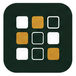
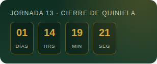
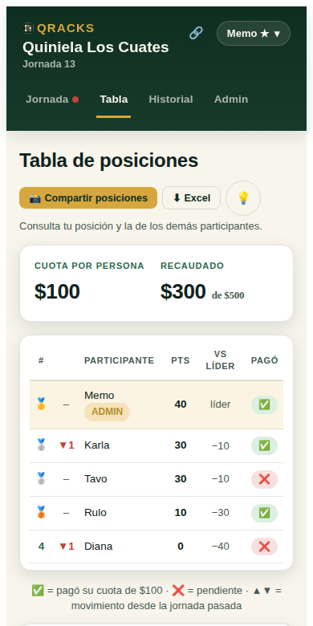
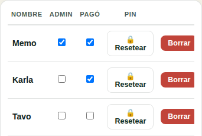
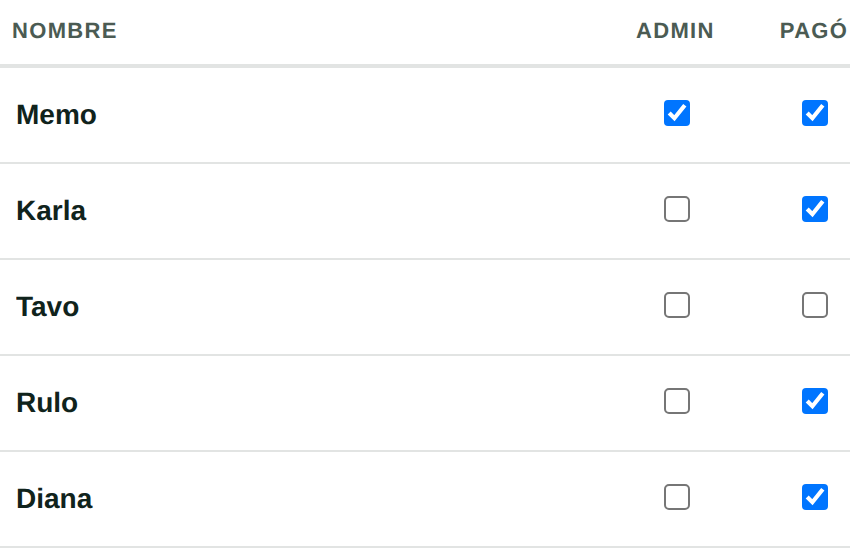
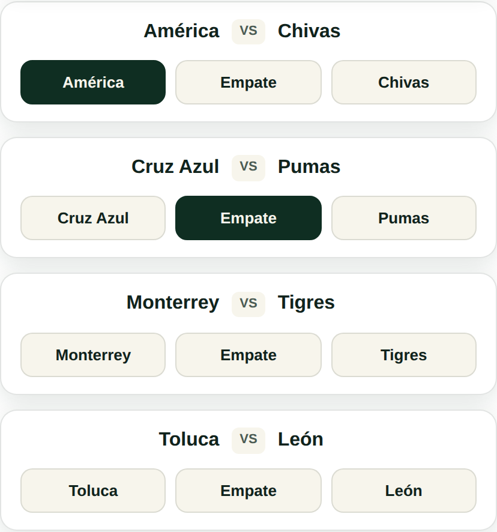

<!DOCTYPE html>
<html lang="es">
<head>
<meta charset="UTF-8">
<meta name="viewport" content="width=device-width, initial-scale=1.0">
<title id="page-title">QRACKS</title>
<meta name="description" content="Crea quinielas privadas, compite con tu grupo y deja que QRACKS controle el tiempo, los resultados y la tabla.">
<meta property="og:type" content="website">
<meta property="og:site_name" content="QRACKS">
<meta property="og:title" content="QRACKS" id="og-title">
<meta property="og:description" content="Crea quinielas privadas, compite con tu grupo y deja que QRACKS controle el tiempo, los resultados y la tabla." id="og-description">
<meta property="og:image" content="https://qracks.net/og-image.png">
<meta property="og:url" content="https://qracks.net" id="og-url">
<meta name="twitter:card" content="summary_large_image">
<link rel="canonical" href="https://qracks.net/">
<link rel="icon" type="image/svg+xml" href="/favicon.svg">
<link rel="preconnect" href="https://fonts.googleapis.com">
<link rel="preconnect" href="https://fonts.gstatic.com" crossorigin>
<link href="https://fonts.googleapis.com/css2?family=Manrope:wght@400;500;600;700;800&display=swap" rel="stylesheet">

<style>
  :root{
    --pitch-dark:#0F2E22;
    --pitch:#173A2B;
    --pitch-light:#2D6A4F;
    --chalk:#F7F5EC;
    --paper:#FFFFFF;
    --gold:#D6A73C;
    --gold-dim:#B58F34;
    --red:#C1443A;
    --ink:#10231C;
    --ink-soft:#4B5B53;
    --line: rgba(16,35,28,0.12);
    --shadow: 0 6px 20px rgba(15,46,34,0.12);
    --radius: 14px;
  }
  *{box-sizing:border-box;}
  html{ scroll-behavior:smooth; }
  body{ margin:0; }
  #quiniela-root{
    font-family:'Manrope', sans-serif;
    background:var(--chalk);
    color:var(--ink);
    min-height:100%;
    line-height:1.4;
  }
  #quiniela-root .display{
    font-family:'Manrope', sans-serif;
    font-weight:800;
    letter-spacing:-0.01em;
  }
  #quiniela-root .mono{
    font-family:'Manrope', sans-serif;
    font-variant-numeric:tabular-nums;
    font-weight:700;
  }
  #quiniela-root button{
    font-family:inherit;
    cursor:pointer;
  }
  #quiniela-root .btn{
    border:none;
    border-radius:10px;
    padding:10px 16px;
    font-weight:600;
    font-size:14px;
    transition:transform .12s ease, box-shadow .12s ease, opacity .12s ease;
  }
  #quiniela-root .btn:active{ transform:scale(0.97); }
  #quiniela-root .btn:focus-visible{ outline:3px solid var(--gold); outline-offset:2px; }
  #quiniela-root .btn-primary{ background:var(--pitch-dark); color:var(--chalk); }
  #quiniela-root .btn-primary:hover{ background:var(--pitch); }
  #quiniela-root .btn-gold{ background:var(--gold); color:var(--pitch-dark); }
  #quiniela-root .btn-gold:hover{ background:var(--gold-dim); }
  #quiniela-root .btn-ghost{ background:transparent; color:var(--pitch-dark); border:1.5px solid var(--line); }
  #quiniela-root .btn-ghost:hover{ background:rgba(15,46,34,0.06); }
  #quiniela-root .btn-danger{ background:var(--red); color:#fff; }
  #quiniela-root .btn-danger:hover{ opacity:0.88; }
  #quiniela-root .btn:disabled{ opacity:0.4; cursor:not-allowed; }
  /* Sprint 13.6.3: el botón "Guardar mis picks" permanece disabled durante
     los ~2s de confirmación exitosa (para impedir una segunda petición),
     pero necesita verse con contraste completo, no apagado — esta clase
     acotada (mismos colores que .btn-primary habilitado) es la única
     excepción a la regla global de arriba, y solo aplica mientras está
     presente en el propio botón de guardado manual. */
  #quiniela-root .btn.qz-save-success:disabled{ opacity:1; cursor:default; background:var(--pitch-dark); color:var(--chalk); }
  #quiniela-root .btn-sm{ padding:6px 12px; font-size:12.5px; border-radius:8px; }

  /* header / scoreboard */
  #quiniela-root .qz-header{
    background: linear-gradient(180deg, var(--pitch-dark), var(--pitch));
    color:var(--chalk);
    padding:16px 20px 14px;
    position:sticky; top:0; z-index:20;
    box-shadow:var(--shadow);
  }
  #quiniela-root .qz-header-top{
    display:flex; align-items:flex-start; justify-content:space-between; gap:12px;
  }
  #quiniela-root .qz-brand-mark{
    font-weight:800; font-size:15px; letter-spacing:0.08em; color:var(--gold);
    display:block; margin-bottom:2px;
  }
  #quiniela-root .qz-brand-context{
    font-weight:700; font-size:19px; line-height:1.25; color:var(--chalk);
  }
  /* MON-003: la etiqueta del plan confirmado, debajo del nombre (o al lado, en
     móvil, si cabe). */
  #quiniela-root .qz-brand-line{ display:flex; flex-direction:column; align-items:flex-start; gap:4px; }
  #quiniela-root .qz-plan-badge{
    display:inline-flex; align-items:center; gap:4px; font-size:11.5px; font-weight:800;
    letter-spacing:0.04em; padding:2px 9px; border-radius:999px;
    background:var(--gold); color:#1a1a1a; line-height:1.4; white-space:nowrap;
  }
  /* `hidden` tiene que ganar al display de arriba: sin esto la etiqueta se veía
     en quinielas Gratis. */
  #quiniela-root .qz-plan-badge[hidden]{ display:none; }
  @media (max-width: 640px){
    #quiniela-root .qz-brand-line{ flex-direction:row; flex-wrap:wrap; align-items:center; gap:4px 8px; }
  }
  /* MON-003: la línea del plan y su botón fijo a la oferta Plus. En móvil el
     botón baja debajo de la línea en vez de apretarla. */
  #quiniela-root .qz-plan-row{
    display:flex; flex-wrap:wrap; align-items:center; justify-content:space-between;
    gap:8px 12px; margin:0 0 12px;
  }
  #quiniela-root .qz-brand-round{
    font-weight:600; font-size:12.5px; color:rgba(247,245,236,0.65); margin-top:1px;
  }
  /* R5: a valid name or question with no spaces (up to its limit) wraps inside
     its own box instead of widening the page. Text is never hidden; tables keep
     their own horizontal scroll. */
  #quiniela-root .qz-header-top > div:first-child{ min-width:0; }
  #quiniela-root .qz-brand-context{ overflow-wrap:anywhere; }
  #quiniela-root :is(.card p, .card li, .card h2, .card h3, .card dd, .card label, .card legend, .card summary, .card blockquote,
    .qz-qcard-text, .qz-qcard-meta, .qz-qcard-close, .qz-bet-q, .qz-wz-callout, .qz-wz-note, .qz-wz-warn, .qz-wz-alert, .qz-wz-line,
    .qz-sum-qs li, .qz-sum-list li, .qz-sheet-note, .qz-modal-message, .toast){ overflow-wrap:anywhere; }
  #quiniela-root .card select{ max-width:100%; }
  #quiniela-root th.qz-bet-th{ min-width:140px; max-width:240px; overflow-wrap:anywhere; white-space:normal; }
  #quiniela-root .qz-user-dropdown{ position:relative; flex-shrink:0; }
  #quiniela-root .qz-user-toggle{
    display:flex; align-items:center; gap:6px;
    background:rgba(247,245,236,0.1);
    border:1px solid rgba(247,245,236,0.18);
    padding:7px 12px; border-radius:999px; color:var(--chalk);
    font-size:13px; font-weight:700;
  }
  #quiniela-root .qz-user-menu{
    position:absolute; right:0; top:calc(100% + 6px); z-index:30;
    background:var(--paper); border-radius:12px; box-shadow:0 12px 28px rgba(0,0,0,0.25);
    min-width:180px; overflow:hidden; border:1px solid var(--line);
  }
  #quiniela-root .qz-user-menu button{
    display:block; width:100%; text-align:left; padding:11px 14px; background:none; border:none;
    color:var(--ink); font-size:13.5px; font-weight:600;
  }
  #quiniela-root .qz-user-menu button:hover{ background:var(--chalk); }
  #quiniela-root .qz-user-menu button + button{ border-top:1px solid var(--line); }
  #quiniela-root .qz-tabs{
    display:flex; gap:4px; margin-top:14px; overflow-x:auto; padding-bottom:2px;
    scrollbar-width:none;
  }
  #quiniela-root .qz-tabs::-webkit-scrollbar{ display:none; }
  #quiniela-root .qz-tab{
    background:transparent; border:none; color:rgba(247,245,236,0.65);
    padding:8px 4px; font-weight:600; font-size:13.5px; white-space:nowrap;
    border-bottom:3px solid transparent; letter-spacing:0.01em;
  }
  #quiniela-root .qz-tab.active{ color:var(--chalk); border-bottom-color:var(--gold); }
  #quiniela-root .qz-dot{
    display:inline-block; width:8px; height:8px; border-radius:50%;
    background:var(--red); margin-left:5px; vertical-align:middle;
  }
  #quiniela-root .qz-help-btn{ width:30px; height:30px; flex-shrink:0; }
  #quiniela-root .qz-tab + .qz-tab{ margin-left:14px; }

  /* UX-001: with the scrollbar hidden above, this is the only cue that a tab
     bar has more tabs off-screen — a soft fade at whichever edge still has
     content, toggled by wireTabScrollFade() below. */
  #quiniela-root .qz-tabs.qz-has-more-right{
    mask-image: linear-gradient(to right, black calc(100% - 22px), transparent 100%);
    -webkit-mask-image: linear-gradient(to right, black calc(100% - 22px), transparent 100%);
  }
  #quiniela-root .qz-tabs.qz-has-more-left{
    mask-image: linear-gradient(to left, black calc(100% - 22px), transparent 100%);
    -webkit-mask-image: linear-gradient(to left, black calc(100% - 22px), transparent 100%);
  }
  #quiniela-root .qz-tabs.qz-has-more-left.qz-has-more-right{
    mask-image: linear-gradient(to right, transparent 0%, black 22px, black calc(100% - 22px), transparent 100%);
    -webkit-mask-image: linear-gradient(to right, transparent 0%, black 22px, black calc(100% - 22px), transparent 100%);
  }

  #quiniela-root .qz-main{ max-width:760px; margin:0 auto; padding:20px 16px 80px; }

  /* cards */
  #quiniela-root .card{
    background:var(--paper); border-radius:var(--radius); border:1px solid var(--line);
    box-shadow:var(--shadow); padding:18px; margin-bottom:16px;
  }
  #quiniela-root .card-primary{
    background:var(--paper); border-radius:var(--radius); border:1.5px solid var(--pitch-dark);
    box-shadow:0 8px 24px rgba(15,46,34,0.16); padding:22px; margin-bottom:16px;
  }
  #quiniela-root .card-info{
    background:transparent; border-radius:var(--radius); border:1px dashed var(--line);
    box-shadow:none; padding:14px 18px; margin-bottom:16px;
  }
  #quiniela-root .card h3{ margin:0 0 4px; font-size:15px; }
  #quiniela-root .muted{ color:var(--ink-soft); font-size:13px; }
  #quiniela-root .eyebrow{
    text-transform:uppercase; letter-spacing:0.08em; font-size:11px; font-weight:700;
    color:var(--pitch-light); margin-bottom:6px;
  }

  /* clock */
  #quiniela-root .clock-card{
    background: linear-gradient(180deg, var(--pitch-dark), var(--pitch));
    color:var(--chalk); border-radius:var(--radius); padding:7px 14px; margin-bottom:10px;
    box-shadow:var(--shadow); position:relative; overflow:hidden;
  }
  #quiniela-root .clock-card::after{
    content:""; position:absolute; inset:0;
    background: radial-gradient(circle at 90% -10%, rgba(227,178,60,0.25), transparent 55%);
    pointer-events:none;
  }
  #quiniela-root .clock-label{ font-size:12px; text-transform:uppercase; letter-spacing:0.1em; opacity:0.75; margin-bottom:5px; }
  #quiniela-root .clock-digits{
    display:flex; gap:8px; flex-wrap:wrap;
  }
  #quiniela-root .clock-seg{
    background:rgba(0,0,0,0.28); border:1px solid rgba(227,178,60,0.35);
    border-radius:8px; padding:5px 8px; min-width:54px; text-align:center;
  }
  #quiniela-root .clock-seg .num{ font-size:18px; font-weight:700; color:var(--gold); display:block; }
  #quiniela-root .clock-seg .unit{ font-size:9px; letter-spacing:0.08em; text-transform:uppercase; opacity:0.7; }
  #quiniela-root .clock-closed{ font-size:15px; font-weight:600; color:var(--gold); }

  /* match card */
  #quiniela-root .match-card{
    background:var(--paper); border-radius:var(--radius); border:1px solid var(--line);
    padding:14px 16px; margin-bottom:12px; box-shadow:var(--shadow);
  }
  #quiniela-root .match-teams{
    display:flex; align-items:center; justify-content:space-between; gap:10px; margin-bottom:12px;
  }
  #quiniela-root .match-team{ font-weight:700; font-size:16px; flex:1; text-align:center; }
  #quiniela-root .match-team.left{ text-align:right; }
  #quiniela-root .match-team.right{ text-align:left; }
  #quiniela-root .match-vs{
    font-family:'Manrope', sans-serif; font-weight:700; font-size:11px; color:var(--ink-soft);
    background:var(--chalk); border-radius:6px; padding:3px 7px; flex-shrink:0;
  }
  #quiniela-root .pick-row{ display:grid; grid-template-columns:1fr 1fr 1fr; gap:8px; }
  #quiniela-root .pick-btn{
    border:1.5px solid var(--line); background:var(--chalk); border-radius:10px;
    padding:10px 6px; font-weight:600; font-size:13px; color:var(--ink); text-align:center;
  }
  #quiniela-root .pick-btn.selected{ background:var(--pitch-dark); border-color:var(--pitch-dark); color:var(--chalk); }
  #quiniela-root .pick-btn.correct{ background:#DCEFE1; border-color:#2D6A4F; color:#1B4332; }
  #quiniela-root .pick-btn.wrong{ background:#F6E1DE; border-color:var(--red); color:#7d251d; }
  #quiniela-root .pick-btn:disabled{ cursor:default; }
  #quiniela-root .result-tag{
    margin-top:8px; font-size:12px; font-weight:700; text-align:center;
    color:var(--pitch-light);
  }

  /* liguilla (sprint de liguilla) */
  #quiniela-root .sr-only{ position:absolute; width:1px; height:1px; padding:0; margin:-1px; overflow:hidden; clip:rect(0,0,0,0); white-space:nowrap; border:0; }
  #quiniela-root .lg-head{ display:flex; justify-content:space-between; align-items:flex-start; gap:10px; margin-bottom:10px; }
  #quiniela-root .lg-phase{ font-weight:800; font-size:19px; line-height:1.2; color:var(--pitch-dark); }
  #quiniela-root .lg-sub{ font-size:12.5px; margin-top:2px; }
  #quiniela-root .lg-strip{ background:#FFF6DF; border:1px solid #EAD9A6; border-radius:10px; padding:8px 11px; font-size:13px; display:flex; flex-direction:column; gap:2px; margin-bottom:12px; }
  #quiniela-root .lg-banner[hidden]{ display:none; }
  #quiniela-root .lg-banner{ background:#F6E1DE; border:1px solid var(--red); color:#7d251d; border-radius:10px; padding:8px 11px; margin-bottom:12px; display:flex; gap:8px; align-items:center; flex-wrap:wrap; font-weight:600; }
  #quiniela-root .lg-match{ display:flex; flex-direction:column; gap:8px; }
  #quiniela-root .lg-line{ display:grid; grid-template-columns:minmax(0,1fr) auto; align-items:center; gap:10px; max-width:300px; }
  #quiniela-root label.lg-team{ font-weight:700; font-size:15px; overflow-wrap:anywhere; min-width:0; text-transform:none; letter-spacing:0; color:var(--ink); margin:0; }
  #quiniela-root input[type=text].lg-goal{ width:56px; height:44px; text-align:center; font-size:20px; font-weight:800; border:1.5px solid var(--line); border-radius:10px; background:var(--chalk); color:var(--ink); padding:0; font-variant-numeric:tabular-nums; }
  #quiniela-root input[type=text].lg-goal:focus{ outline:3px solid var(--gold); outline-offset:1px; border-color:var(--pitch-light); }
  #quiniela-root .lg-goal[aria-invalid="true"]{ border-color:var(--red); }
  #quiniela-root .lg-goal:disabled{ opacity:.7; }
  #quiniela-root .lg-state{ font-size:13px; display:flex; gap:8px; align-items:center; flex-wrap:wrap; min-height:20px; }
  #quiniela-root .lg-ok{ color:var(--pitch-light); font-weight:700; }
  #quiniela-root .lg-bad{ color:#9b2c22; font-weight:600; }
  #quiniela-root .lg-warn{ color:#7a5a12; font-weight:600; }
  #quiniela-root .lg-result{ display:grid; grid-template-columns:minmax(0,1fr) auto minmax(0,1fr); gap:8px; align-items:center; font-weight:700; }
  #quiniela-root .lg-result > span:first-child{ text-align:right; overflow-wrap:anywhere; }
  #quiniela-root .lg-result > span:last-child{ overflow-wrap:anywhere; }
  #quiniela-root .lg-result strong{ background:var(--chalk); border-radius:8px; padding:3px 10px; font-variant-numeric:tabular-nums; }
  #quiniela-root .lg-sum{ display:flex; gap:6px; align-items:center; flex-wrap:wrap; font-size:13px; }
  #quiniela-root .lg-chip{ font-size:12px; font-weight:800; border-radius:999px; padding:2px 9px; border:1px solid var(--line); color:var(--ink-soft); background:var(--paper); white-space:nowrap; }
  #quiniela-root .lg-chip.on{ color:#1B4332; background:#DCEFE1; border-color:#2D6A4F; }
  #quiniela-root .lg-status{ font-size:12px; font-weight:800; color:var(--pitch-dark); background:var(--chalk); border-radius:999px; padding:2px 9px; }
  #quiniela-root .lg-fieldset{ border:0; padding:0; margin:0 0 10px; display:flex; flex-direction:column; gap:8px; min-width:0; }
  #quiniela-root .lg-fieldset legend{ font-weight:800; margin-bottom:6px; padding:0; }
  #quiniela-root .lg-opt, #quiniela-root label.lg-opt{ display:flex; text-transform:none; letter-spacing:0; font-size:14px; font-weight:500; color:var(--ink); margin:0; gap:10px; align-items:flex-start; border:1.5px solid var(--line); border-radius:10px; padding:10px; background:var(--paper); cursor:pointer; }
  #quiniela-root .lg-opt.on{ border:2px solid var(--pitch-light); background:#F1F8F3; }
  #quiniela-root .lg-opt.na{ border-style:dashed; background:transparent; cursor:default; }
  #quiniela-root .lg-opt input[type=radio], #quiniela-root .lg-opt input[type=checkbox]{ width:20px; height:20px; margin:2px 0 0; flex:none; accent-color:var(--pitch-light); }
  #quiniela-root .lg-opt-txt, #quiniela-root label.lg-opt-txt{ text-transform:none; letter-spacing:0; font-size:14px; font-weight:500; color:var(--ink); margin:0; display:flex; flex-direction:column; gap:1px; flex:1; min-width:0; cursor:inherit; }
  #quiniela-root .lg-opt-state{ font-size:11px; font-weight:800; text-transform:uppercase; letter-spacing:.06em; color:var(--pitch-light); }
  #quiniela-root .lg-opt.na .lg-opt-state, #quiniela-root .lg-opt:not(.on) .lg-opt-state{ color:var(--ink-soft); }
  #quiniela-root input[type=text].lg-pts{ flex:none; width:64px; padding:0; height:40px; text-align:center; font-weight:800; font-size:16px; border:1.5px solid var(--line); border-radius:8px; }
  #quiniela-root input[type=text].lg-pts:disabled{ background:var(--chalk); color:var(--ink-soft); }
  #quiniela-root .lg-example-wrap{ display:flex; flex-direction:column; gap:8px; margin:6px 0 10px; }
  #quiniela-root .lg-table-wrap{ overflow-x:auto; max-width:100%; }
  #quiniela-root table.lg-example{ width:100%; }
  #quiniela-root table.lg-example td, #quiniela-root table.lg-example th{ font-size:13px; padding:5px 6px; font-variant-numeric:tabular-nums; }
  #quiniela-root .lg-seg{ grid-template-columns:1fr 1fr; }
  #quiniela-root .lg-seg label{ cursor:pointer; margin:0; display:block; }
  #quiniela-root .lg-seg label:focus-within{ outline:3px solid var(--gold); outline-offset:1px; }
  #quiniela-root .lg-status-row{ grid-template-columns:repeat(4, minmax(0,1fr)); }
  #quiniela-root .lg-status-row .pick-btn{ font-size:12px; padding:9px 2px; }
  #quiniela-root .lg-org-row{ display:flex; justify-content:space-between; align-items:center; gap:10px; padding:8px 0; border-top:1px solid var(--line); flex-wrap:wrap; }
  #quiniela-root .lg-org-row > span:first-child{ min-width:0; overflow-wrap:anywhere; flex:1 1 180px; }
  #quiniela-root .lg-org-place{ display:flex; gap:6px; align-items:center; flex-wrap:wrap; }
  #quiniela-root .lg-org-row select{ max-width:100%; }
  #quiniela-root .lg-org-group{ margin-bottom:10px; }
  #quiniela-root .lg-scroll-hint{ display:none; font-size:12.5px; }
  #quiniela-root .lg-h-wrap{ overflow-x:auto; max-width:100%; }
  #quiniela-root table.lg-h-table{ border-collapse:separate; border-spacing:0; }
  #quiniela-root table.lg-h-table th, #quiniela-root table.lg-h-table td{ vertical-align:top; padding:8px 10px; text-align:left; }
  #quiniela-root .lg-h-cell{ min-width:150px; font-size:13px; line-height:1.35; }
  #quiniela-root table.lg-h-table .lg-h-name{ white-space:normal; overflow-wrap:anywhere; width:128px; min-width:118px; max-width:140px; text-align:left; font-weight:500; text-transform:none; letter-spacing:0; color:var(--ink); font-size:13px; }
  #quiniela-root .lg-h-name strong{ display:block; font-size:14px; }
  #quiniela-root .lg-h-total{ display:block; font-weight:800; font-size:15px; color:var(--pitch-dark); }
  #quiniela-root table.lg-h-table thead .lg-h-name{ text-transform:uppercase; letter-spacing:0.04em; color:var(--ink-soft); font-size:11px; }
  #quiniela-root .lg-h-sum{ display:block; font-size:11.5px; color:var(--ink-soft); font-weight:500; text-transform:none; letter-spacing:0; }
  #quiniela-root .lg-h-real td, #quiniela-root .lg-h-real th{ background:var(--chalk); }
  #quiniela-root .lg-h-pts.ok{ color:#1B4332; }
  #quiniela-root .lg-h-pts.no{ color:#7d251d; }
  #quiniela-root .lg-h-why, #quiniela-root .lg-h-state{ font-size:12px; color:var(--ink-soft); }
  #quiniela-root .lg-h-help{ font-size:13px; }
  /* 320 px: la columna fija más una casilla caben completas en el ancho útil
     (≈250 px), así ninguna casilla queda cortada al deslizar (UX de 6e12f12). */
  @media (max-width:360px){
    #quiniela-root table.lg-h-table th, #quiniela-root table.lg-h-table td{ padding:7px 7px; }
    #quiniela-root table.lg-h-table .lg-h-name{ width:92px; min-width:88px; max-width:96px; }
    #quiniela-root .lg-h-cell{ min-width:118px; }
    #quiniela-root table.lg-h-table thead .lg-h-name{ font-size:10px; letter-spacing:0; overflow-wrap:normal; }
  }
  @media (max-width:700px){ #quiniela-root .lg-scroll-hint{ display:block; } }
  #quiniela-root td.lg-cell-ok{ color:#1B4332; font-weight:700; }
  #quiniela-root td.lg-cell-no{ color:#7d251d; }
  @media (max-width:360px){
    #quiniela-root .lg-status-row{ grid-template-columns:1fr 1fr; }
    #quiniela-root .lg-phase{ font-size:17px; }
  }

  /* login */
  #quiniela-root .login-wrap{
    min-height:100vh; display:flex; align-items:center; justify-content:center; padding:24px;
    background: radial-gradient(circle at 50% 0%, var(--pitch-light), var(--pitch-dark) 70%);
  }
  #quiniela-root .login-card{
    background:var(--paper); border-radius:20px; padding:32px 28px; max-width:460px; width:100%;
    box-shadow:0 20px 50px rgba(0,0,0,0.35);
  }
  #quiniela-root .login-title{ font-size:46px; text-align:center; line-height:1; margin-bottom:6px; }
  #quiniela-root .login-sub{ text-align:center; color:var(--ink-soft); font-size:17px; font-weight:600; margin-bottom:26px; }
  /* /crear: what QRACKS does and what the organizer does, before the form. */
  #quiniela-root .qz-crear-value{ font-size:15px; line-height:1.4; margin:4px 0 6px; }
  #quiniela-root .qz-crear-next{ text-align:center; line-height:1.4; margin:0 0 18px; }
  #quiniela-root .qz-field-error{ color:var(--red); font-size:13px; font-weight:600; margin-top:4px; }
  /* "PIN guardado": stays on the screen that follows saving the PIN. */
  #quiniela-root .qz-pin-saved{
    margin:12px auto 0; max-width:460px; width:calc(100% - 24px); padding:10px 14px; border-radius:10px;
    background:#E7F4EC; color:#10231C; border:1px solid #BFDFCB; font-size:14px; line-height:1.45;
  }
  #quiniela-root .qz-pin-saved p{ margin:6px 0 0; }
  /* Onboarding B: "Guarda tu PIN" while there is no admin password yet. */
  #quiniela-root .qz-pin-warning{
    text-align:left; margin:16px 0 0; padding:10px 12px; border-radius:10px;
    background:#FFF4E5; border:1px solid #F0C36D; color:#5C3B00; font-size:13.5px; line-height:1.45;
  }
  /* "Contraseña guardada": next to the «Publicar jornada» that still has to be tapped. */
  #quiniela-root .qz-pw-saved{
    margin:0 auto 10px; max-width:560px; padding:9px 12px; border-radius:10px; text-align:left;
    background:#E7F4EC; color:#10231C; border:1px solid #BFDFCB; font-size:14px; line-height:1.45;
  }
  #quiniela-root .name-grid{
    display:grid; grid-template-columns:repeat(auto-fit, minmax(160px, 1fr)); gap:10px; max-height:380px; overflow-y:auto; padding-right:2px;
  }
  #quiniela-root .name-btn{
    border:1.5px solid var(--line); background:var(--paper); border-radius:12px;
    padding:20px 14px; font-weight:700; font-size:18px; text-align:center;
    box-shadow:0 2px 6px rgba(15,46,34,0.08);
    transition:transform .12s ease, background .12s ease, border-color .12s ease, box-shadow .12s ease;
    cursor:pointer;
  }
  #quiniela-root .name-btn:hover{
    border-color:var(--pitch-dark); background:var(--pitch-dark); color:var(--chalk);
    transform:translateY(-1px); box-shadow:0 4px 10px rgba(15,46,34,0.18);
  }
  #quiniela-root .name-btn:active{ transform:translateY(0); }
  #quiniela-root .name-btn:hover .role{ color:var(--gold); }
  #quiniela-root .name-btn .role{ display:block; font-size:12px; color:var(--gold-dim); font-weight:700; margin-top:4px; }

  /* table */
  #quiniela-root table{ width:100%; border-collapse:collapse; font-size:13.5px; }
  #quiniela-root .qz-sticky-col{
    position:sticky; left:0; background:var(--paper); z-index:1;
    box-shadow:2px 0 4px rgba(0,0,0,0.06); white-space:nowrap;
  }
  #quiniela-root th{
    text-align:left; font-size:11px; text-transform:uppercase; letter-spacing:0.06em;
    color:var(--ink-soft); padding:8px 6px; border-bottom:2px solid var(--line);
  }
  #quiniela-root td{ padding:9px 6px; border-bottom:1px solid var(--line); }
  #quiniela-root tr.me{ background:rgba(227,178,60,0.14); }
  #quiniela-root .pos{ font-family:'Manrope', sans-serif; font-weight:800; color:var(--pitch-light); }
  #quiniela-root .pos.top1{ color:var(--gold-dim); }

  /* platform dashboard table: roomier, centered headers, centered narrow columns */
  #quiniela-root .qz-platform-table th{ text-align:center; padding:10px 12px; }
  #quiniela-root .qz-platform-table td{ padding:14px 12px; vertical-align:middle; }
  #quiniela-root .qz-platform-table th:first-child, #quiniela-root .qz-platform-table td:first-child{ text-align:left; }
  #quiniela-root .qz-platform-table th:nth-child(2), #quiniela-root .qz-platform-table td:nth-child(2){ text-align:left; }
  #quiniela-root .qz-platform-table td:nth-child(3),
  #quiniela-root .qz-platform-table td:nth-child(4),
  #quiniela-root .qz-platform-table td:nth-child(5),
  #quiniela-root .qz-platform-table td:nth-child(6){ text-align:center; }
  #quiniela-root .qz-platform-table td:nth-child(5) input, #quiniela-root .qz-platform-table td:nth-child(6) input{
    width:20px; height:20px; cursor:pointer;
  }

  /* forms */
  #quiniela-root input[type=text], #quiniela-root input[type=password], #quiniela-root input[type=number], #quiniela-root input[type=datetime-local], #quiniela-root select{
    width:100%; padding:9px 11px; border-radius:8px; border:1.5px solid var(--line);
    font-family:inherit; font-size:14px; background:var(--paper); color:var(--ink);
  }
  #quiniela-root label{ font-size:12px; font-weight:700; color:var(--ink-soft); display:block; margin-bottom:4px; text-transform:uppercase; letter-spacing:0.04em; }
  #quiniela-root .qz-combo-wrap{ position:relative; }
  #quiniela-root .qz-combo-list{
    position:absolute; top:calc(100% + 4px); left:0; right:0;
    background:var(--paper); border:1px solid var(--line); border-radius:10px;
    box-shadow:var(--shadow); max-height:220px; overflow-y:auto;
    z-index:40; padding:4px;
  }
  #quiniela-root .qz-combo-option{
    padding:9px 12px; border-radius:7px; cursor:pointer; font-size:14px;
  }
  #quiniela-root .qz-combo-option:hover,
  #quiniela-root .qz-combo-option.qz-combo-active{
    background:rgba(15,46,34,0.07);
  }
  #quiniela-root .qz-combo-empty{ padding:9px 12px; color:var(--ink-soft); font-size:13px; }

  #quiniela-root .field{ margin-bottom:12px; }
  #quiniela-root .row2{ display:grid; grid-template-columns:1fr 1fr; gap:10px; align-items:start; }
  #quiniela-root .row2 .field label{ min-height:2.6em; line-height:1.3; }
  #quiniela-root .match-edit-row{
    display:grid; grid-template-columns:1fr 1fr auto; gap:8px; align-items:end; margin-bottom:10px;
  }
  #quiniela-root .icon-x{ background:var(--red); color:#fff; border:none; border-radius:8px; width:44px; height:44px; }

  #quiniela-root .badge{ display:inline-flex; align-items:center; gap:4px; font-size:12px; font-weight:700; padding:3px 9px; border-radius:999px; }

  #quiniela-root .qz-tooltip-wrap{ position:relative; display:inline-flex; }
  #quiniela-root .qz-tooltip-bubble{
    position:fixed;
    background:var(--pitch-dark); color:var(--chalk);
    font-size:12px; font-weight:600; white-space:normal; text-align:center;
    max-width:112px; line-height:1.3;
    padding:6px 10px; border-radius:8px; box-shadow:var(--shadow);
    opacity:0; pointer-events:none; transform:translateY(-4px);
    transition:opacity .15s ease, transform .15s ease;
    z-index:50;
  }
  #quiniela-root .qz-tooltip-wrap:hover .qz-tooltip-bubble,
  #quiniela-root .qz-tooltip-wrap:focus-within .qz-tooltip-bubble,
  #quiniela-root .qz-tooltip-wrap.qz-tooltip-active .qz-tooltip-bubble{
    opacity:1; transform:translateY(0);
  }
  #quiniela-root .badge.paid{ background:#DCEFE1; color:#1B4332; }
  #quiniela-root .badge.unpaid{ background:#F6E1DE; color:#7d251d; }
  #quiniela-root .badge.admin{ background:rgba(227,178,60,0.25); color:var(--gold-dim); }

  #quiniela-root .empty{
    text-align:center; padding:40px 20px; color:var(--ink-soft);
  }
  #quiniela-root .empty .display{ font-size:26px; color:var(--pitch-dark); }

  #quiniela-root .divider{ height:1px; background:var(--line); margin:16px 0; }
  #quiniela-root .toast{
    position:fixed; bottom:18px; left:50%; transform:translateX(-50%);
    background:var(--pitch-dark); color:var(--chalk); padding:10px 16px; border-radius:12px;
    width:max-content; max-width:min(560px, calc(100vw - 32px)); line-height:1.4; text-align:center; overflow-wrap:anywhere;
    font-size:13px; font-weight:600; box-shadow:var(--shadow); z-index:100;
    opacity:0; pointer-events:none; transition:opacity .25s ease, transform .25s ease;
  }
  /* in the setup flow, above its fixed bar, never over its buttons */
  html:has(#qz-setup-bar) #quiniela-root .toast{ bottom:calc(var(--qz-bar-h, 0px) + 12px); }
  #quiniela-root .toast.show{ opacity:1; transform:translateX(-50%) translateY(-4px); }

  /* Aviso de espera por demasiados intentos: fijo junto al formulario, con
     cuenta atrás (ver mountCredentialWait). Sin escopar: también va dentro
     del modal, que cuelga de document.body. */
  .qz-wait-notice{
    display:flex; gap:8px; align-items:flex-start; text-align:left;
    margin:12px 0 0; padding:10px 12px; border-radius:10px;
    background:#FFF4E5; border:1px solid #F0C36D; color:#5C3B00;
    font-family:'Manrope', sans-serif; font-size:13.5px; line-height:1.45; font-weight:600;
  }
  .qz-wait-notice[hidden]{ display:none; }
  #qz-login-wait{ margin-bottom:14px; }
  .qz-wait-notice.qz-wait-over{ background:#EAF6EE; border-color:#9CCFAE; color:#1C5233; }
  .qz-wait-notice .qz-wait-left{ font-variant-numeric:tabular-nums; white-space:nowrap; }
  .qz-sr-only{ position:absolute; width:1px; height:1px; padding:0; margin:-1px; overflow:hidden; clip:rect(0,0,0,0); white-space:nowrap; border:0; }

  /* HOTFIX-001: aviso de reconciliación. Igual que el modal de abajo, va
     colgado de document.body y por eso NO se escopa bajo #quiniela-root: un
     re-render (root.innerHTML se reemplaza entero al cambiar de pantalla) lo
     borraría justo cuando hace falta leerlo. */
  .qz-notice{
    position:fixed; top:14px; left:50%; transform:translateX(-50%);
    width:max-content; max-width:min(520px, calc(100vw - 28px));
    background:#0f2e22; color:#f6f7f4; padding:12px 18px; border-radius:12px;
    font-size:13.5px; font-weight:600; line-height:1.4; text-align:center;
    box-shadow:0 10px 30px rgba(0,0,0,.28); z-index:300;
    opacity:0; pointer-events:none; transition:opacity .2s ease, transform .2s ease;
  }
  .qz-notice.show{ opacity:1; transform:translateX(-50%) translateY(4px); }

  /* UX-018: reusable confirmation modal — deliberately NOT scoped under
     #quiniela-root, since it's appended to document.body so a re-render
     elsewhere in the app (root.innerHTML gets replaced wholesale on most
     screen changes) can never silently close it out from under someone. */
  .qz-modal-overlay{
    position:fixed; inset:0; background:rgba(15,46,34,0.55); z-index:200;
    display:flex; align-items:center; justify-content:center; padding:20px;
    animation: qzModalFadeIn .15s ease;
  }
  @keyframes qzModalFadeIn{ from{ opacity:0; } to{ opacity:1; } }

  /* A11Y-003: respects the OS-level "reduce motion" preference. Collapses
     every animation/transition duration to effectively zero instead of
     removing them individually — end states (final opacity, colors,
     positions) are unchanged, so layout and visual appearance stay
     identical; only the motion itself goes away. Covers qzModalFadeIn plus
     the handful of short hover/focus transitions already in this file. */
  @media (prefers-reduced-motion: reduce){
    *{
      animation-duration:0.01ms !important;
      animation-iteration-count:1 !important;
      transition-duration:0.01ms !important;
      scroll-behavior:auto !important;
    }
  }
  .qz-modal-card{
    font-family:'Manrope', sans-serif; background:#FFFFFF; border-radius:16px;
    max-width:420px; width:100%; padding:22px; box-shadow:0 6px 20px rgba(15,46,34,0.12);
  }
  .qz-modal-title{ font-weight:800; font-size:18px; color:#10231C; margin-bottom:8px; }
  .qz-modal-message p{ font-family:'Manrope', sans-serif; color:#10231C; font-size:14px; line-height:1.5; margin:0 0 8px; }
  .qz-modal-message p:last-child{ margin-bottom:0; }
  .qz-modal-actions{ display:flex; gap:8px; margin-top:18px; }
  .qz-modal-actions button{
    font-family:'Manrope', sans-serif; flex:1; padding:11px; border-radius:10px; border:none;
    font-weight:700; font-size:14px; cursor:pointer;
  }
  .qz-modal-cancel{ background:#F0EEE4; color:#10231C; }
  .qz-modal-cancel:hover{ background:#E5E2D4; }
  .qz-modal-confirm{ background:#C1443A; color:#fff; }
  .qz-modal-confirm.qz-modal-not-destructive{ background:#0F2E22; }
  .qz-modal-confirm:hover{ opacity:0.9; }
  /* Secondary action inside a modal ("¿Olvidaste tu PIN?"): a link, not a third button. */
  .qz-modal-alt{
    display:block; margin:12px auto 0; padding:6px 8px; background:none; border:none; cursor:pointer;
    font-family:'Manrope', sans-serif; font-size:13.5px; font-weight:700; color:#1C5233; text-decoration:underline;
  }
  /* MS2 · D4: a decision with no preselected answer, inside a dialog. */
  .qz-modal-choice{ border:0; padding:0; margin:12px 0 0; min-width:0; }
  .qz-modal-choice legend{ font-family:'Manrope', sans-serif; font-size:14px; font-weight:800; color:#10231C; padding:0; margin-bottom:4px; }
  .qz-modal-choice label{ display:flex; gap:10px; align-items:flex-start; padding:8px 0; font-family:'Manrope', sans-serif; font-size:14px; line-height:1.45; color:#10231C; cursor:pointer; }
  .qz-modal-choice input{ margin-top:3px; flex:0 0 auto; width:18px; height:18px; }
  .qz-modal-confirm:disabled{ opacity:.45; cursor:not-allowed; }
  .qz-modal-input{
    width:100%; padding:9px 11px; border-radius:8px; border:1.5px solid #E7E3D6;
    font-family:'Manrope', sans-serif; font-size:16px; background:#FFFFFF; color:#10231C;
    box-sizing:border-box; margin-top:4px;
  }
  .qz-modal-input:focus{ outline:2px solid #D6A73C; outline-offset:1px; }
  /* «Mostrar / Ocultar» next to a password, in a modal or in a screen. It only
     reveals what is being typed; a stored password never comes back. */
  .qz-pass-toggle-row{ display:flex; gap:8px; align-items:stretch; margin-top:4px; }
  .qz-pass-toggle-row .qz-modal-input{ flex:1; min-width:0; margin-top:0; }
  .qz-pass-toggle{
    min-width:84px; min-height:44px; padding:0 12px; border-radius:8px; border:1.5px solid #E7E3D6;
    background:#F0EEE4; color:#10231C; font-family:'Manrope', sans-serif; font-weight:700; font-size:13.5px; cursor:pointer;
  }
  .qz-pass-toggle:focus{ outline:2px solid #D6A73C; outline-offset:1px; }
  /* Onboarding B: «Configura tu contraseña de administrador» — taller than the other
     modals, so the overlay scrolls instead of cutting the title off on a short
     phone, and the buttons stay in reach. */
  .qz-modal-overlay.qz-modal-scroll{ overflow-y:auto; align-items:flex-start; }
  .qz-modal-scroll .qz-modal-card{ margin:auto; }
  .qz-modal-card:focus{ outline:none; }
  .qz-modal-scroll .qz-modal-actions{ position:sticky; bottom:-22px; background:#FFFFFF; margin-bottom:-22px; padding:12px 0 22px; }
  .qz-setpw{ font-family:'Manrope', sans-serif; color:#10231C; text-align:left; }
  .qz-setpw-head{ font-weight:800; font-size:14px; margin:14px 0 4px; }
  .qz-setpw ul{ margin:0; padding-left:20px; font-size:14px; line-height:1.5; }
  .qz-setpw-text{ font-size:14px; line-height:1.5; margin:0; }
  .qz-setpw-note{ font-size:13px; line-height:1.45; color:#5B6B63; margin:6px 0 0; }
  .qz-setpw-field{ margin-top:12px; }
  .qz-setpw-field label{ display:block; font-weight:700; font-size:13.5px; }
  .qz-setpw-help{ font-size:12.5px; color:#5B6B63; margin:4px 0 0; }
  .qz-setpw-error{ color:#C1443A; font-size:13px; font-weight:600; margin:6px 0 0; }
  .qz-setpw-error[hidden]{ display:none; }

  #quiniela-root .history-item{
    display:flex; justify-content:space-between; align-items:center;
    padding:12px 14px; border:1px solid var(--line); border-radius:10px; margin-bottom:8px; background:var(--paper);
  }
  #quiniela-root .history-item:hover{ border-color:var(--pitch-light); }
  /* R5 (Product QA): at 320 px «Publicar jornada · Editar · Eliminar» did not
     fit next to the round; the row and its buttons wrap instead of overflowing. */
  #quiniela-root .history-item{ flex-wrap:wrap; gap:8px; }
  #quiniela-root .history-item > div:last-child{ flex-wrap:wrap; }

  #quiniela-root .section-title{ display:flex; align-items:center; justify-content:space-between; margin-bottom:10px; }
  #quiniela-root .section-title .display{ font-size:24px; }

  @media (max-width:480px){
    #quiniela-root .qz-brand .display{ font-size:24px; }
    #quiniela-root .name-grid{ grid-template-columns:repeat(auto-fit, minmax(130px, 1fr)); }
    #quiniela-root .clock-seg{ min-width:42px; padding:5px 6px; }
    #quiniela-root .clock-seg .num{ font-size:16px; }
    #quiniela-root .qz-tab{ min-height:44px; display:inline-flex; align-items:center; }
    #quiniela-root .qz-help-btn{ width:44px; height:44px; font-size:18px; }
    #quiniela-root .section-title{ flex-wrap:wrap; row-gap:8px; }
    #quiniela-root .clock-card{ padding:7px 12px; }
  }


  /* ---------- Marketing Hero (renderHome) ---------- */
  /* .qz-home-fold wraps just .qz-hero-section + .qz-home-trust (see renderHome()).
     Column flex lets the hero and the trust bar split one viewport-height
     naturally: the trust bar is measured by the browser (flex-shrink:0, its real
     rendered height, whatever that is at any width/font-size/wrap), and the hero
     (flex:1) simply gets whatever is left. No hardcoded reserved height anywhere.
     Scoping this flex context to a dedicated wrapper (instead of #quiniela-root
     itself) keeps it a fixed, always-2-item flex formatting context — any section
     added below (HOME-003, HOME-004, ...) is a plain sibling in normal document
     flow and can never compete with the Hero/Trust Bar for space. */
  #quiniela-root .qz-home-fold{
    display:flex;
    flex-direction:column;
    min-height:100vh;
    min-height:100svh;
  }

  #quiniela-root .qz-hero-section{
    position:relative;
    flex:1 1 auto;
    min-height:0;
    overflow:hidden;
    background:
      radial-gradient(ellipse 650px 500px at 76% 50%, rgba(45,106,79,.40), transparent 64%),
      linear-gradient(180deg, var(--pitch-dark), var(--pitch));
  }

  #quiniela-root .qz-hero-shell{
    width:min(1180px, calc(100% - 48px));
    height:100%;
    min-height:0;
    margin:0 auto;
    display:grid;
    grid-template-rows:68px minmax(0,1fr);
  }

  #quiniela-root .qz-hero-nav{
    display:flex;
    align-items:center;
    justify-content:space-between;
    position:relative;
    z-index:4;
  }

  #quiniela-root .qz-hero-brand{
    display:flex;
    align-items:center;
    gap:10px;
  }

  #quiniela-root .qz-hero-brand-icon{
    width:auto;
    height:30px;
    display:block;
  }

  #quiniela-root .qz-hero-brand-word{
    color:var(--gold);
    font-size:17px;
    font-weight:800;
    letter-spacing:.08em;
  }

  #quiniela-root .qz-hero-nav-link{
    padding:9px 18px;
    border:1.5px solid rgba(247,245,236,.30);
    border-radius:10px;
    color:var(--chalk);
    font-size:13.5px;
    font-weight:600;
    text-decoration:none;
  }

  #quiniela-root .qz-hero-grid{
    min-height:0;
    display:grid;
    grid-template-columns:minmax(0,1fr) minmax(410px,.95fr);
    column-gap:clamp(48px,6vw,92px);
    align-items:center;
    padding:10px 0 24px;
  }

  #quiniela-root .qz-hero-copy{
    max-width:530px;
    align-self:center;
    padding:0 0 16px;
    position:relative;
    z-index:3;
  }

  #quiniela-root .qz-hero-headline{
    margin:0 0 16px;
    color:var(--chalk);
    font-size:clamp(42px,3.55vw,52px);
    line-height:1.06;
    letter-spacing:-.025em;
  }

  #quiniela-root .qz-hero-sub{
    max-width:470px;
    margin:0 0 24px;
    color:rgba(247,245,236,.78);
    font-size:17px;
    font-weight:500;
    line-height:1.52;
  }

  #quiniela-root .qz-hero-ctas{
    display:flex;
    align-items:center;
    gap:14px;
    flex-wrap:wrap;
  }

  #quiniela-root .qz-hero-ctas .btn{
    padding:14px 25px;
    font-size:15px;
    text-decoration:none;
  }

  #quiniela-root .qz-hero-btn-ghost-dark{
    padding:12.5px 23px;
    border:1.5px solid rgba(247,245,236,.30);
    border-radius:10px;
    color:var(--chalk);
    font-weight:700;
    text-decoration:none;
  }

  #quiniela-root .qz-hero-stage{
    min-height:0;
    height:100%;
    display:flex;
    align-items:center;
    justify-content:center;
    position:relative;
    z-index:2;
  }

  #quiniela-root .qz-hero-visual{
    width:min(470px,100%);
    height:min(516px,calc(100svh - 104px));
    min-height:430px;
    position:relative;
    display:flex;
    align-items:center;
    justify-content:center;
    transform:translateY(-4px);
  }

  #quiniela-root .qz-hero-phone{
    height:100%;
    max-height:516px;
    aspect-ratio:270/516;
    padding:12px;
    position:relative;
    z-index:2;
    border-radius:38px;
    background:var(--pitch-dark);
    box-shadow:0 24px 54px rgba(8,30,22,.40);
  }

  #quiniela-root .qz-hero-phone-notch{
    position:absolute;
    top:12px;
    left:50%;
    width:42%;
    height:20px;
    z-index:3;
    border-radius:0 0 14px 14px;
    background:var(--pitch-dark);
    transform:translateX(-50%);
  }

  #quiniela-root .qz-hero-phone-screen{
    width:100%;
    height:100%;
    overflow:hidden;
    border-radius:28px;
    background:var(--chalk);
  }

  #quiniela-root .qz-hero-phone-screen img{
    width:104.28%;
    height:auto;
    max-width:none;
    display:block;
    transform:translate(-2.05%, -1.03%);
  }

  #quiniela-root .qz-hero-float{
    position:absolute;
    z-index:3;
    overflow:hidden;
    line-height:0;
    border-radius:var(--radius);
    box-shadow:0 14px 30px rgba(8,30,22,.28);
  }

  #quiniela-root .qz-hero-float img{
    width:100%;
    height:auto;
    display:block;
  }

  #quiniela-root .qz-hero-float-jornada{
    top:62px;
    left:2px;
    width:174px;
    z-index:1;
  }

  #quiniela-root .qz-hero-float-participantes{
    right:0;
    bottom:54px;
    width:166px;
    border:1px solid var(--line);
  }

  #quiniela-root .qz-home-trust{
    flex-shrink:0;
    background:var(--pitch);
    border-top:1px solid rgba(247,245,236,.09);
    padding:17px 24px 19px;
  }

  #quiniela-root .qz-home-trust-inner{
    width:min(1180px,100%);
    margin:0 auto;
  }

  #quiniela-root .qz-hero-trust{
    display:flex;
    align-items:center;
    justify-content:center;
    gap:32px;
    flex-wrap:wrap;
  }

  #quiniela-root .qz-hero-trust-item{
    display:flex;
    align-items:center;
    gap:9px;
    color:rgba(247,245,236,.68);
    font-size:12.5px;
    font-weight:600;
  }

  #quiniela-root .qz-hero-trust-ico{
    width:16px;
    height:16px;
    flex-shrink:0;
    color:inherit;
  }

  #quiniela-root .qz-hero-invite-note{
    margin:9px 0 0;
    color:rgba(247,245,236,.44);
    font-size:12.5px;
    text-align:center;
  }

  /* ---------- HOME-003: Empieza en menos de un minuto ---------- */
  #quiniela-root .qz-home-steps{
    background:var(--chalk);
    color:var(--ink);
    padding:88px 24px;
  }

  #quiniela-root .qz-home-steps-inner{
    width:min(1040px,100%);
    margin:0 auto;
  }

  #quiniela-root .qz-home-steps-head{
    text-align:center;
    max-width:560px;
    margin:0 auto 32px;
  }

  #quiniela-root .qz-home-steps-title{
    font-size:34px;
    line-height:1.15;
    color:var(--ink);
    margin:0 0 12px;
  }

  #quiniela-root .qz-home-steps-sub{
    font-size:16px;
    line-height:1.5;
    color:var(--ink-soft);
    margin:0;
  }

  #quiniela-root .qz-home-steps-cols{
    display:grid;
    grid-template-columns:1fr;
    gap:48px;
  }

  #quiniela-root .qz-home-steps-col-head{
    margin-bottom:18px;
  }

  #quiniela-root .qz-home-col-eyebrow{
    display:block;
    font-size:13px;
    font-weight:700;
    color:var(--gold-dim);
    margin:0 0 6px;
  }

  #quiniela-root .qz-home-col-headline{
    font-size:23px;
    line-height:1.2;
    color:var(--ink);
    margin:0;
  }

  #quiniela-root .qz-home-col-hero{
    margin-bottom:18px;
  }

  #quiniela-root .qz-home-col-hero img{
    display:block;
    width:100%;
    aspect-ratio:6/5;
    object-fit:cover;
    object-position:top;
    border-radius:var(--radius);
    box-shadow:var(--shadow);
    border:1px solid var(--line);
  }

  /* 2. The organizer's participants-panel screenshot was recomposed (source
     PNG re-cropped) to show only Nombre/Admin/Pagó — the columns that carry
     the "QRACKS hace el resto" message — dropping PIN/acciones. This closes
     most of the visual-weight gap with the participant's picks screenshot
     (was 51% of its area at the old 2.35/1 crop, now ~78%) while keeping
     every shown column fully legible, with zero further cropping: the ratio
     below matches the new source image's own dimensions exactly (850/550). */
  #quiniela-root .qz-home-col-hero-wide img{
    aspect-ratio:17/11;
  }

  #quiniela-root .qz-home-col-benefits{
    list-style:none;
    margin:0;
    padding:0;
    display:flex;
    flex-direction:column;
    gap:8px;
  }

  #quiniela-root .qz-home-col-benefits li{
    font-size:14px;
    line-height:1.5;
    color:var(--ink-soft);
  }

  @media (min-width:901px){
    #quiniela-root .qz-home-steps-cols{
      grid-template-columns:1fr 1fr;
      gap:64px;
    }
  }

  /* ---------- HOME-004: ¿Por qué QRACKS? ---------- */
  #quiniela-root .qz-home-why{
    background:var(--paper);
    padding:88px 24px;
  }

  #quiniela-root .qz-home-why-inner{
    width:min(1040px,100%);
    margin:0 auto;
  }

  #quiniela-root .qz-home-why-cols{
    display:grid;
    grid-template-columns:1fr;
    gap:20px;
    margin-top:8px;
  }

  #quiniela-root .qz-home-why-col{
    background:var(--chalk);
    border:1px solid var(--line);
    border-radius:var(--radius);
    padding:28px 24px;
  }

  #quiniela-root .qz-home-why-col-highlight{
    background:var(--paper);
    border:1.5px solid var(--gold);
    box-shadow:var(--shadow);
  }

  #quiniela-root .qz-home-why-col-head{
    font-size:17px;
    color:var(--ink);
    margin:0 0 16px;
  }

  #quiniela-root .qz-home-why-list{
    list-style:none;
    margin:0;
    padding:0;
    display:flex;
    flex-direction:column;
    gap:12px;
  }

  #quiniela-root .qz-home-why-list li{
    font-size:14.5px;
    line-height:1.5;
    color:var(--ink-soft);
    padding-left:26px;
    position:relative;
  }

  #quiniela-root .qz-home-why-list li::before{
    content:"❌";
    position:absolute;
    left:0;
    top:0;
    font-size:12px;
  }

  #quiniela-root .qz-home-why-col-highlight .qz-home-why-list li{
    color:var(--ink);
    font-weight:600;
  }

  #quiniela-root .qz-home-why-col-highlight .qz-home-why-list li::before{
    content:"✅";
  }

  @media (min-width:901px){
    #quiniela-root .qz-home-why-cols{
      grid-template-columns:1fr 1fr;
      gap:28px;
    }
  }

  /* ---------- HOME-005: Ligas disponibles ---------- */
  #quiniela-root .qz-home-leagues{
    background:var(--chalk);
    padding:72px 24px;
  }

  #quiniela-root .qz-home-leagues-inner{
    width:min(1040px,100%);
    margin:0 auto;
    display:grid;
    grid-template-columns:1fr;
    gap:24px;
    align-items:center;
    text-align:center;
  }

  #quiniela-root .qz-home-leagues-msg .qz-home-steps-title{
    font-size:26px;
  }

  #quiniela-root .qz-home-leagues-grid{
    display:flex;
    flex-wrap:wrap;
    gap:10px;
    justify-content:center;
  }

  @media (min-width:901px){
    #quiniela-root .qz-home-leagues-inner{
      grid-template-columns:auto 1fr;
      gap:56px;
      text-align:left;
    }
    #quiniela-root .qz-home-leagues-msg{ max-width:320px; }
    #quiniela-root .qz-home-leagues-grid{ justify-content:flex-start; }
  }

  /* ---------- HOME-006: CTA final ---------- */
  #quiniela-root .qz-home-final-cta{
    background:linear-gradient(180deg, var(--pitch-dark), var(--pitch));
    padding:88px 24px;
    text-align:center;
  }

  #quiniela-root .qz-home-final-cta-inner{
    width:min(640px,100%);
    margin:0 auto;
  }

  #quiniela-root .qz-home-final-cta-title{
    font-size:32px;
    color:var(--chalk);
    margin:0 0 12px;
  }

  #quiniela-root .qz-home-final-cta-sub{
    font-size:16px;
    line-height:1.5;
    color:rgba(247,245,236,.78);
    margin:0 0 28px;
  }

  #quiniela-root .qz-home-final-cta-btn{
    display:inline-block;
    padding:14px 32px;
    font-size:16px;
    text-decoration:none;
  }

  @media (max-height:700px) and (min-width:901px){
    #quiniela-root .qz-hero-shell{
      grid-template-rows:58px minmax(0,1fr);
    }

    #quiniela-root .qz-hero-grid{
      padding:4px 0 14px;
    }

    #quiniela-root .qz-hero-copy{
      padding-bottom:8px;
    }

    #quiniela-root .qz-hero-headline{
      font-size:40px;
      margin-bottom:11px;
    }

    #quiniela-root .qz-hero-sub{
      margin-bottom:17px;
      font-size:16px;
      line-height:1.45;
    }

    #quiniela-root .qz-hero-visual{
      height:calc(100svh - 82px);
      min-height:0;
      max-height:462px;
      transform:translateY(-2px);
    }

    #quiniela-root .qz-hero-float-jornada{
      top:48px;
      left:8px;
      width:158px;
    }

    #quiniela-root .qz-hero-float-participantes{
      right:8px;
      bottom:42px;
      width:150px;
    }
  }

  @media (max-width:900px){
    #quiniela-root .qz-hero-section{
      flex:none;
      min-height:auto;
      overflow:visible;
    }

    #quiniela-root .qz-hero-shell{
      width:min(680px,calc(100% - 40px));
      height:auto;
      min-height:auto;
      grid-template-rows:64px auto;
    }

    #quiniela-root .qz-hero-grid{
      grid-template-columns:1fr;
      row-gap:30px;
      padding:28px 0 40px;
    }

    #quiniela-root .qz-hero-copy{
      max-width:580px;
      padding:0;
    }

    #quiniela-root .qz-hero-headline{
      font-size:36px;
    }

    #quiniela-root .qz-hero-stage{
      height:auto;
    }

    #quiniela-root .qz-hero-visual{
      width:min(430px,100%);
      height:440px;
      min-height:0;
      transform:none;
    }

    #quiniela-root .qz-hero-float-jornada{
      width:154px;
      top:42px;
      left:4px;
    }

    #quiniela-root .qz-hero-float-participantes{
      width:146px;
      right:4px;
      bottom:38px;
    }
  }

  @media (max-width:520px){
    #quiniela-root .qz-hero-shell{
      width:calc(100% - 32px);
      grid-template-rows:58px auto;
    }

    #quiniela-root .qz-hero-nav-link{
      display:none;
    }

    #quiniela-root .qz-hero-grid{
      row-gap:24px;
      padding:18px 0 28px;
    }

    #quiniela-root .qz-hero-headline{
      font-size:30px;
      margin-bottom:13px;
    }

    #quiniela-root .qz-hero-sub{
      margin-bottom:18px;
      font-size:15px;
    }

    #quiniela-root .qz-hero-ctas{
      flex-direction:column;
      align-items:stretch;
      gap:11px;
    }

    #quiniela-root .qz-hero-ctas a{
      width:100%;
      text-align:center;
    }

    #quiniela-root .qz-hero-visual{
      width:100%;
      height:365px;
    }

    #quiniela-root .qz-hero-phone{
      max-height:365px;
      border-radius:34px;
    }

    #quiniela-root .qz-hero-float{
      display:none;
    }

    #quiniela-root .qz-home-trust{
      padding:17px 20px 20px;
    }

    #quiniela-root .qz-hero-trust{
      align-items:flex-start;
      flex-direction:column;
      gap:9px;
    }

    #quiniela-root .qz-hero-invite-note{
      text-align:left;
    }
  }

  /* MS2 · Tus reglas, ayuda por función, siguiente paso y vistas amplias */
  #quiniela-root .qz-sec-head{ display:flex; align-items:center; justify-content:space-between; gap:8px; flex-wrap:wrap; }
  #quiniela-root .qz-help-link{ font-size:13px; min-height:32px; }
  #quiniela-root .qz-help{ background:#F2F8F4; border:1px solid #BFDFCB; border-radius:10px; padding:10px 12px; margin:6px 0 12px; }
  #quiniela-root .qz-help p{ margin:2px 0 6px; font-size:13.5px; }
  #quiniela-root .qz-help-actions{ display:flex; gap:10px; align-items:center; }
  #quiniela-root .qz-unlock{ margin-top:8px; }
  #quiniela-root .qz-unlock-row{ display:flex; gap:8px; flex-wrap:wrap; align-items:center; max-width:520px; }
  #quiniela-root .qz-unlock-row > *:first-child{ flex:1 1 220px; }
  #quiniela-root .qz-chip-warn{ background:#FFF4E5; border-color:#F0C36D; color:#5C3B00; margin-right:6px; }
  #quiniela-root .qz-qcard-chips{ display:flex; gap:6px; flex-wrap:wrap; margin-top:6px; }
  #quiniela-root .qz-when{ margin:4px 0 8px; padding-left:18px; font-size:14px; line-height:1.5; }
  #quiniela-root .qz-table-scroll{ overflow-x:auto; }
  #quiniela-root .qz-name-cell{ min-width:132px; max-width:180px; overflow:hidden; text-overflow:ellipsis; }
  #quiniela-root .qz-name-cell input{ width:100%; min-width:120px; }
  /* Tabla: the name wraps (with its badges below) instead of being cut. */
  #quiniela-root .qz-name-cell.qz-name-wrap{ white-space:normal; overflow:visible; min-width:120px; max-width:200px; }
  #quiniela-root .qz-name-wrap .badge{ display:inline-block; margin-top:2px; }
  #quiniela-root tr.me .qz-sticky-col{ background:#FBF3DE; }
  #quiniela-root .qz-next{ border-color:var(--gold); background:#FFF9EC; }
  #quiniela-root .qz-next .qz-wz-actions{ margin-top:6px; }
  #quiniela-root .qz-rules-grid{ display:grid; grid-template-columns:minmax(0, 1fr); gap:0 20px; }
  @media (min-width:901px){
    #quiniela-root .qz-main.qz-main--wide{ max-width:1200px; padding-left:24px; padding-right:24px; }
    #quiniela-root .qz-rules-grid{ grid-template-columns:minmax(0, 1fr) minmax(0, 1fr); align-items:start; }
    #quiniela-root .qz-rules-grid .qz-r-wide{ grid-column:1 / -1; }
  }
  /* MS2 · preguntas del participante */
  #quiniela-root .qz-bets-card summary{ cursor:pointer; list-style:none; display:flex; align-items:center; gap:6px; flex-wrap:wrap; min-height:32px; }
  #quiniela-root .qz-bets-card summary::-webkit-details-marker{ display:none; }
  #quiniela-root .qz-bets-card summary::after{ content:"▾"; margin-left:auto; color:var(--ink-soft); }
  #quiniela-root .qz-bets-card[open] summary::after{ content:"▴"; }
  #quiniela-root .qz-bets-title{ font-weight:800; font-size:14px; text-transform:uppercase; letter-spacing:0.06em; color:var(--pitch-light); }
  #quiniela-root .qz-bet-row{ border-top:1px solid var(--line); padding:12px 0 4px; }
  #quiniela-root .qz-bet-q{ font-weight:800; font-size:15px; }
  #quiniela-root .qz-bet-input{ display:flex; gap:8px; flex-wrap:wrap; margin:4px 0; }
  #quiniela-root .qz-bet-input input{ flex:1 1 200px; font-size:16px; min-height:44px; }
  #quiniela-root .qz-bet-input .btn{ min-height:44px; }
  #quiniela-root .qz-bet-status{ font-size:13.5px; font-weight:600; color:var(--pitch-dark); margin:4px 0; }
  #quiniela-root .qz-bet-hit{ color:#1B4332; font-weight:800; }
  #quiniela-root .qz-round-answers p{ margin:6px 0; font-size:14px; }
  /* ---------- MS2 · el primer recorrido del admin (tres bloques) ---------- */
  #quiniela-root .qz-setup-wrap{ max-width:1080px; margin:0 auto; padding:16px 16px 0; }
  #quiniela-root .qz-setup-top{ display:flex; flex-direction:column; gap:10px; margin-bottom:12px; }
  #quiniela-root .qz-setup-brand{ display:flex; align-items:center; flex-wrap:wrap; gap:6px; min-width:0; font-weight:800; font-size:12px; letter-spacing:0.1em; color:var(--gold-dim); }
  #quiniela-root .qz-setup-brand .muted{ overflow-wrap:anywhere; min-width:0; }
  #quiniela-root .qz-setup-brand img{ border-radius:4px; }
  #quiniela-root .qz-setup-brand .muted{ margin-left:6px; font-size:13px; letter-spacing:0; font-weight:600; }
  #quiniela-root .qz-steps-progress{ margin:0; font-size:12.5px; font-weight:700; color:var(--pitch-light); }
  #quiniela-root .qz-steps{ list-style:none; margin:4px 0 0; padding:0; display:grid; grid-template-columns:repeat(3, 1fr); gap:6px; }
  #quiniela-root .qz-steps li{ border-top:4px solid var(--line); padding-top:6px; font-size:12.5px; color:var(--ink-soft); font-weight:600; }
  #quiniela-root .qz-steps li.done{ border-top-color:var(--pitch-light); }
  #quiniela-root .qz-steps li.current{ border-top-color:var(--gold); color:var(--ink); font-weight:800; }
  #quiniela-root .qz-setup-grid{ display:grid; grid-template-columns:minmax(0, 1fr); gap:20px; }
  #quiniela-root .qz-setup-main{ min-width:0; padding-bottom:calc(var(--qz-bar-h, 96px) + 24px); }
  /* nothing the flow scrolls to (a notice, a field, the focus) ends under the fixed bar */
  html:has(#qz-setup-bar){ scroll-padding-bottom:calc(var(--qz-bar-h, 0px) + 16px); }
  #quiniela-root .qz-setup-wrap *{ scroll-margin-bottom:calc(var(--qz-bar-h, 0px) + 16px); scroll-margin-top:12px; }
  /* what changes what will be published: a card that stays in the flow */
  #quiniela-root .qz-wz-callout{ background:#FFF9EC; border:1px solid #F0D79A; border-left:4px solid #D6A73C; border-radius:10px; padding:12px 14px; margin:0 0 12px; font-size:14px; line-height:1.45; color:#3F2D00; overflow-wrap:anywhere; }
  #quiniela-root .qz-wz-callout p{ margin:0; }
  #quiniela-root .qz-wz-callout p + p{ margin-top:4px; }
  #quiniela-root .qz-wz-callout ul{ margin:6px 0; padding-left:18px; }
  #quiniela-root .qz-wz-callout .btn{ margin-top:8px; }
  #quiniela-root .qz-wz-callout-title{ font-weight:800; font-size:15px; color:#2B1F00; }
  #quiniela-root .qz-wz-notice{ margin:0 0 12px; overflow-wrap:anywhere; }
  #quiniela-root .qz-setup-aside{ display:none; }
  #quiniela-root .qz-wz-title{ font-size:28px; margin:4px 0 4px; line-height:1.15; }
  #quiniela-root .qz-wz-title:focus{ outline:none; }
  #quiniela-root .qz-wz-sub{ color:var(--ink-soft); font-size:15px; font-weight:600; margin:0 0 14px; }
  #quiniela-root .qz-wz-card{ margin-bottom:14px; }
  #quiniela-root .qz-wz-h2{ font-size:17px; font-weight:800; margin:0 0 6px; }
  #quiniela-root .qz-wz-value{ font-size:18px; font-weight:800; margin:0 0 4px; }
  #quiniela-root .qz-wz-note{ background:#FFF9EC; border:1px solid #F0D79A; border-radius:10px; padding:8px 12px; font-size:13.5px; margin:8px 0; }
  #quiniela-root .qz-wz-warn{ background:#FFF4E5; border:1px solid #F0C36D; color:#5C3B00; border-radius:10px; padding:10px 12px; font-size:14px; margin:0 0 12px; }
  #quiniela-root .qz-wz-line{ margin:6px 0 10px; font-size:14px; }
  #quiniela-root .qz-tight{ margin:2px 0 8px; }
  #quiniela-root .qz-example{ font-weight:700; color:var(--pitch-dark); background:#EEF6F0; border-radius:8px; padding:6px 10px; margin:6px 0 0; font-size:14px; display:inline-block; }
  #quiniela-root .qz-example:empty{ display:none; }
  #quiniela-root .qz-field-narrow input{ max-width:160px; font-size:16px; }
  #quiniela-root .qz-field-select select{ max-width:420px; font-size:16px; }
  #quiniela-root .qz-field-text input{ max-width:560px; font-size:16px; }
  #quiniela-root .qz-field-date input{ max-width:280px; font-size:16px; }
  #quiniela-root .qz-row-narrow{ max-width:420px; }
  #quiniela-root .qz-row-narrow input{ font-size:16px; }
  #quiniela-root .qz-money{ display:flex; align-items:center; gap:6px; max-width:180px; }
  #quiniela-root .qz-money span{ font-weight:800; color:var(--ink-soft); }
  #quiniela-root .qz-linkbtn{ background:none; border:none; padding:6px 0; min-height:36px; color:var(--pitch-light); font-weight:700; font-size:14px; text-decoration:underline; text-underline-offset:3px; }
  #quiniela-root .qz-switch-row{ display:flex; align-items:flex-start; justify-content:space-between; gap:14px; }
  #quiniela-root .qz-switch-row-sub{ margin-top:14px; padding-top:12px; border-top:1px solid var(--line); }
  #quiniela-root .qz-switch-title{ font-weight:800; font-size:15px; }
  #quiniela-root .qz-switch{ position:relative; flex-shrink:0; width:52px; height:30px; border-radius:999px; border:none; background:#C9D1CC; padding:0; margin-top:2px; }
  #quiniela-root .qz-switch span{ position:absolute; top:3px; left:3px; width:24px; height:24px; border-radius:50%; background:#fff; box-shadow:0 1px 3px rgba(0,0,0,0.25); transition:left .15s ease; }
  #quiniela-root .qz-switch[aria-checked="true"]{ background:var(--pitch-light); }
  #quiniela-root .qz-switch[aria-checked="true"] span{ left:25px; }
  #quiniela-root .qz-switch:focus-visible{ outline:3px solid var(--gold); outline-offset:2px; }
  #quiniela-root .qz-wz-extras-panel, #quiniela-root .qz-wz-sub-block{ margin-top:12px; }
  #quiniela-root .qz-infobox{ background:var(--chalk); border:1px solid var(--line); border-radius:10px; padding:10px 12px; margin:10px 0; font-size:13.5px; }
  #quiniela-root .qz-infobox p{ margin:4px 0 0; }
  #quiniela-root .qz-qlist{ display:flex; flex-direction:column; gap:10px; margin-bottom:10px; }
  #quiniela-root .qz-qcard{ border:1px solid var(--line); border-radius:12px; padding:12px 14px; background:var(--paper); }
  #quiniela-root .qz-qcard:focus{ outline:3px solid var(--gold); outline-offset:1px; }
  #quiniela-root .qz-qcard-text{ font-weight:800; font-size:15px; }
  #quiniela-root .qz-qcard-meta{ font-size:13.5px; color:var(--pitch-dark); font-weight:600; margin-top:2px; }
  #quiniela-root .qz-qcard-close{ font-size:13px; color:var(--ink-soft); margin-top:2px; }
  #quiniela-root .qz-qcard-actions{ margin-top:4px; display:flex; align-items:center; gap:4px; min-height:44px; }
  #quiniela-root .qz-qform{ border:1.5px solid var(--pitch-light); border-radius:12px; padding:12px 14px; background:#FBFCFA; }
  #quiniela-root .qz-qform-title{ font-weight:800; margin-bottom:8px; }
  #quiniela-root .qz-qform-fixed-label{ font-size:12px; font-weight:700; color:var(--ink-soft); text-transform:uppercase; letter-spacing:0.04em; margin:0 0 4px; }
  #quiniela-root .qz-qform-actions{ display:flex; gap:8px; flex-wrap:wrap; margin-top:6px; }
  #quiniela-root .qz-qfixed{ margin:4px 0 2px; padding:8px 12px; border-left:4px solid var(--gold); background:var(--chalk); border-radius:6px; font-weight:700; }
  #quiniela-root .qz-wz-close{ font-size:13.5px; background:#EEF6F0; border-radius:8px; padding:6px 10px; margin:4px 0 8px; }
  #quiniela-root .qz-scope{ border:none; padding:0; margin:4px 0 10px; }
  #quiniela-root .qz-scope legend{ font-size:12px; font-weight:700; color:var(--ink-soft); text-transform:uppercase; letter-spacing:0.04em; margin-bottom:6px; }
  #quiniela-root .qz-scope-opt{ display:flex; gap:10px; align-items:flex-start; border:1.5px solid var(--line); border-radius:10px; padding:10px 12px; margin-bottom:8px; text-transform:none; letter-spacing:0; font-size:14px; color:var(--ink); font-weight:400; cursor:pointer; }
  #quiniela-root .qz-scope-opt input{ margin-top:3px; width:18px; height:18px; flex-shrink:0; }
  #quiniela-root .qz-scope-opt span{ display:flex; flex-direction:column; gap:2px; }
  #quiniela-root .qz-scope-opt:has(input:checked){ border-color:var(--pitch-light); background:#F2F8F4; }
  #quiniela-root .qz-add-q{ width:100%; padding:12px; }
  #quiniela-root .qz-sr{ position:absolute; width:1px; height:1px; overflow:hidden; clip:rect(0 0 0 0); white-space:nowrap; }
  #quiniela-root .qz-wz-alert{ background:#FDECEA; border:1px solid #E7A39C; color:#5E1A14; border-radius:10px; padding:10px 12px; margin:10px 0; font-size:14px; }
  #quiniela-root .qz-wz-alert p{ margin:0; }
  #quiniela-root .qz-wz-alert-actions{ display:flex; gap:8px; flex-wrap:wrap; margin-top:8px; }
  #quiniela-root .qz-wz-alert .btn{ margin-top:8px; }
  #quiniela-root .qz-wz-state p{ margin:6px 0; }
  #quiniela-root .qz-wz-actions{ display:flex; gap:8px; flex-wrap:wrap; margin-top:10px; }
  #quiniela-root .qz-skel{ display:flex; flex-direction:column; gap:10px; margin-top:12px; }
  #quiniela-root .qz-skel div{ height:48px; border-radius:10px; background:linear-gradient(90deg, #EFEFEA, #F7F7F3, #EFEFEA); }
  #quiniela-root .qz-wz-round-head{ display:flex; align-items:center; gap:10px; flex-wrap:wrap; }
  #quiniela-root .qz-chip{ display:inline-block; font-size:12px; font-weight:800; padding:3px 10px; border-radius:999px; background:#E7F4EC; color:#1B4332; border:1px solid #BFDFCB; }
  #quiniela-root .qz-wz-count{ margin:6px 0; font-weight:700; }
  #quiniela-root .qz-wz-match{ margin-bottom:8px; }
  #quiniela-root .qz-wz-match .match-edit-row{ margin-bottom:2px; }
  /* on a narrow phone each team gets its own line, so a long name reads whole */
  @media (max-width:480px){
    #quiniela-root .qz-wz-match{ padding-bottom:8px; border-bottom:1px solid var(--line); }
    #quiniela-root .qz-wz-match .match-edit-row{ grid-template-columns:minmax(0, 1fr) auto; grid-template-areas:"a x" "b x"; row-gap:6px; }
    #quiniela-root .qz-wz-match .match-edit-row > :nth-child(1){ grid-area:a; }
    #quiniela-root .qz-wz-match .match-edit-row > :nth-child(2){ grid-area:b; }
    #quiniela-root .qz-wz-match .match-edit-row > .icon-x{ grid-area:x; align-self:center; }
  }
  #quiniela-root .qz-wz-match input{ font-size:16px; }
  #quiniela-root .qz-wz-kick{ margin:0 0 6px; font-size:12.5px; }
  /* the action bar: fixed at the bottom on a phone, at the end of the column on a laptop */
  #quiniela-root .qz-setup-bar{ position:fixed; left:0; right:0; bottom:0; z-index:25; background:var(--paper); border-top:1px solid var(--line); padding:10px 16px calc(10px + env(safe-area-inset-bottom)); }
  #quiniela-root .qz-setup-bar-inner{ display:flex; gap:10px; align-items:center; justify-content:space-between; max-width:1080px; margin:0 auto; }
  #quiniela-root .qz-setup-back{ min-width:96px; min-height:48px; }
  #quiniela-root .qz-setup-next{ flex:1; min-height:48px; font-size:15px; }
  /* the live summary (laptop) */
  #quiniela-root .qz-sum-card{ background:var(--paper); border:1px solid var(--line); border-radius:var(--radius); box-shadow:var(--shadow); padding:16px; }
  #quiniela-root .qz-sum-dl{ margin:0; }
  #quiniela-root .qz-sum-dl dt{ font-size:11px; text-transform:uppercase; letter-spacing:0.06em; color:var(--ink-soft); font-weight:700; margin-top:10px; }
  #quiniela-root .qz-sum-dl dd{ margin:2px 0 0; font-size:14px; font-weight:600; }
  #quiniela-root .qz-sum-pending{ color:var(--ink-soft); font-style:italic; font-weight:500; }
  #quiniela-root .qz-sum-list{ margin:4px 0 0; padding-left:18px; font-weight:500; font-size:13px; }
  #quiniela-root .qz-sum-foot{ margin:12px 0 0; }
  /* the summary step */
  #quiniela-root .qz-sum-grid{ display:grid; grid-template-columns:minmax(0, 1fr); gap:14px; }
  #quiniela-root .qz-sum-head{ display:flex; align-items:center; justify-content:space-between; gap:8px; margin-bottom:4px; }
  #quiniela-root .qz-sum-section p{ margin:6px 0; }
  #quiniela-root .qz-sum-qs{ margin:4px 0 6px; padding-left:18px; font-size:14px; }
  #quiniela-root .qz-sum-qs li{ margin-bottom:4px; }
  #quiniela-root .qz-sum-matches{ list-style:none; margin:6px 0; padding:0; }
  #quiniela-root .qz-sum-matches li > .muted{ margin-left:auto; text-align:right; }
  #quiniela-root .qz-sum-matches-head{ display:flex; justify-content:space-between; gap:10px; margin-top:8px; padding-bottom:4px; border-bottom:1px solid var(--line); font-size:12px; font-weight:700; letter-spacing:.04em; text-transform:uppercase; color:var(--ink-soft); }
  #quiniela-root .qz-sum-matches li{ display:flex; justify-content:space-between; gap:10px; flex-wrap:wrap; padding:6px 0; border-bottom:1px solid var(--line); font-weight:600; }
  #quiniela-root .qz-infocard ul{ margin:4px 0 0; padding-left:18px; font-size:14px; line-height:1.5; }
  #quiniela-root .qz-crear-demo{ font-size:14px; margin:0 0 12px; text-align:center; }
  #quiniela-root .qz-crear-demo a{ font-weight:800; color:var(--pitch-light); text-decoration:underline; text-underline-offset:3px; display:inline-block; min-height:32px; line-height:32px; }
  /* ONB-14 · «Ver cómo se juega» (/demo) */
  #quiniela-root .qz-demo-bar{ position:sticky; top:0; z-index:20; display:flex; align-items:center; justify-content:space-between; gap:12px; flex-wrap:wrap; background:#FFF9EC; border-bottom:1px solid #F0D79A; padding:10px 16px; font-size:14px; color:#3F2D00; }
  #quiniela-root .qz-demo-bar p{ margin:0; flex:1 1 220px; min-width:0; overflow-wrap:anywhere; }
  #quiniela-root .qz-demo-exit{ font-weight:800; color:var(--pitch-dark); text-decoration:underline; text-underline-offset:3px; min-height:44px; display:inline-flex; align-items:center; padding:0 4px; }
  #quiniela-root .qz-demo-exit:focus-visible{ outline:3px solid var(--gold); outline-offset:2px; border-radius:4px; }
  #quiniela-root .qz-demo-wrap{ max-width:720px; margin:0 auto; padding:16px 16px 40px; }
  #quiniela-root .qz-demo-brand{ display:flex; align-items:center; flex-wrap:wrap; gap:6px; font-weight:800; font-size:12px; letter-spacing:0.1em; color:var(--gold-dim); margin-bottom:10px; }
  #quiniela-root .qz-demo-brand img{ border-radius:4px; }
  #quiniela-root .qz-demo-brand .muted{ letter-spacing:0; font-weight:600; font-size:13px; }
  #quiniela-root .qz-demo-card{ padding:18px 16px; }
  #quiniela-root .qz-demo-title{ font-size:26px; line-height:1.15; margin:0 0 8px; }
  #quiniela-root .qz-demo-title:focus{ outline:none; }
  #quiniela-root .qz-demo-lead{ font-size:15.5px; margin:0 0 8px; }
  #quiniela-root .qz-demo-close{ font-size:13.5px; background:var(--chalk); border:1px solid var(--line); border-radius:10px; padding:8px 12px; margin:8px 0 12px; }
  #quiniela-root .qz-demo-matches{ display:flex; flex-direction:column; gap:12px; }
  #quiniela-root .qz-demo-match{ border:1.5px solid var(--line); border-radius:12px; padding:10px 12px 12px; margin:0; min-width:0; }
  #quiniela-root .qz-demo-match.is-missing{ border:2.5px solid var(--red); }
  #quiniela-root .qz-demo-match legend{ font-weight:800; font-size:15px; padding:0 4px; overflow-wrap:anywhere; }
  #quiniela-root .qz-demo-opts{ display:grid; grid-template-columns:repeat(3, minmax(0, 1fr)); gap:8px; margin-top:4px; }
  #quiniela-root .qz-demo-opt{ position:relative; display:flex; flex-direction:column; align-items:center; justify-content:center; gap:2px; min-height:56px; padding:8px 6px; border:1.5px solid var(--line); border-radius:10px; text-align:center; cursor:pointer; text-transform:none; letter-spacing:0; font-size:14px; color:var(--ink); font-weight:700; overflow-wrap:anywhere; }
  #quiniela-root .qz-demo-opt input{ position:absolute; opacity:0; width:1px; height:1px; }
  #quiniela-root .qz-demo-opt-mark{ display:none; font-size:12px; font-weight:800; color:#1B4332; }
  #quiniela-root .qz-demo-opt:has(input:checked){ border:2.5px solid var(--pitch-light); background:#F2F8F4; padding:7px 5px; }
  #quiniela-root .qz-demo-opt:has(input:checked) .qz-demo-opt-mark{ display:block; }
  #quiniela-root .qz-demo-opt:has(input:focus-visible){ outline:3px solid var(--gold); outline-offset:2px; }
  #quiniela-root .qz-demo-missing{ color:var(--red); font-weight:700; font-size:14px; margin:10px 0 0; }
  #quiniela-root .qz-demo-hint{ margin:8px 0 0; }
  #quiniela-root .qz-demo-actions{ display:flex; flex-wrap:wrap; gap:8px; margin-top:16px; }
  #quiniela-root .qz-demo-actions .btn{ min-height:48px; display:inline-flex; align-items:center; justify-content:center; text-decoration:none; }
  #quiniela-root .qz-demo-results{ list-style:none; margin:8px 0 0; padding:0; display:flex; flex-direction:column; gap:10px; }
  #quiniela-root .qz-demo-result{ border:1px solid var(--line); border-radius:12px; padding:10px 12px; overflow-wrap:anywhere; }
  #quiniela-root .qz-demo-result p{ margin:2px 0; font-size:14px; }
  #quiniela-root .qz-demo-result-title{ font-weight:800; font-size:15px !important; }
  #quiniela-root .qz-demo-verdict{ font-weight:800; }
  #quiniela-root .qz-demo-verdict.is-hit{ color:#1B4332; }
  #quiniela-root .qz-demo-verdict.is-miss{ color:#7A2E1A; }
  #quiniela-root .qz-demo-sum{ font-size:16px; margin:14px 0 4px; }
  #quiniela-root .qz-demo-explain{ background:#EEF6F0; border-radius:8px; padding:8px 12px; font-size:14px; font-weight:600; margin:8px 0 0; }
  #quiniela-root .qz-demo-move{ font-size:17px; font-weight:800; color:var(--pitch-dark); margin:0 0 10px; }
  #quiniela-root .qz-demo-table-wrap{ max-width:100%; }
  #quiniela-root .qz-demo-table{ width:100%; border-collapse:collapse; font-size:14px; table-layout:fixed; }
  #quiniela-root .qz-demo-table th, #quiniela-root .qz-demo-table td{ padding:8px 4px; border-bottom:1px solid var(--line); text-align:center; overflow-wrap:anywhere; }
  #quiniela-root .qz-demo-table th[scope="row"]{ text-align:left; font-weight:700; text-transform:none; letter-spacing:0; font-size:14px; color:var(--ink); }
  #quiniela-root .qz-demo-table thead th{ font-size:11.5px; text-transform:uppercase; letter-spacing:0.04em; color:var(--ink-soft); }
  #quiniela-root .qz-demo-table thead th{ overflow-wrap:normal; word-break:normal; hyphens:none; vertical-align:bottom; }
  #quiniela-root .qz-demo-table thead th:nth-child(1){ width:15%; }
  #quiniela-root .qz-demo-table thead th:nth-child(2){ text-align:left; width:35%; }
  #quiniela-root .qz-demo-table thead th:nth-child(3){ width:15%; }
  #quiniela-root .qz-demo-table thead th:nth-child(4){ width:20%; }
  #quiniela-root .qz-demo-table thead th:nth-child(5){ width:15%; }
  #quiniela-root .qz-demo-table tr.is-you{ background:#FFF9EC; }
  #quiniela-root .qz-demo-table tr.is-you th[scope="row"]{ font-weight:900; }
  #quiniela-root .qz-demo-move-short{ display:block; font-size:12px; font-weight:700; color:var(--ink-soft); }
  #quiniela-root .qz-demo-moves{ margin:10px 0 6px; padding-left:18px; font-size:13.5px; }
  @media (max-width:360px){
    #quiniela-root .qz-demo-opts{ grid-template-columns:minmax(0, 1fr); }
    #quiniela-root .qz-demo-table{ font-size:13px; }
    #quiniela-root .qz-demo-table thead th{ font-size:10px; letter-spacing:0; }
    #quiniela-root .qz-demo-table th, #quiniela-root .qz-demo-table td{ padding:8px 2px; }
  }
  @media (min-width:901px){
    #quiniela-root .qz-demo-wrap{ padding:28px 24px 48px; }
    #quiniela-root .qz-demo-card{ padding:28px 32px; }
    #quiniela-root .qz-demo-title{ font-size:32px; }
  }
  /* ONB · calendario o a mano: dos opciones fijas; la elegida lo dice con texto */
  #quiniela-root .qz-mode{ display:grid; grid-template-columns:repeat(2, minmax(0, 1fr)); gap:8px; margin:8px 0 12px; }
  #quiniela-root .qz-mode-btn{ display:flex; flex-direction:column; align-items:flex-start; gap:2px; min-height:56px; padding:10px 12px; border:1.5px solid var(--line); border-radius:10px; background:var(--paper); color:var(--ink); text-align:left; font:inherit; cursor:pointer; }
  #quiniela-root .qz-mode-btn.is-on{ border:2.5px solid var(--pitch-light); background:#F2F8F4; padding:9px 11px; }
  #quiniela-root .qz-mode-btn:focus-visible{ outline:3px solid var(--gold); outline-offset:2px; }
  #quiniela-root .qz-mode-label{ font-weight:800; font-size:14.5px; line-height:1.25; }
  #quiniela-root .qz-mode-state{ font-size:12.5px; font-weight:700; color:var(--ink-soft); }
  #quiniela-root .qz-mode-btn.is-on .qz-mode-state{ color:#1B4332; }
  @media (max-width:420px){ #quiniela-root .qz-mode{ grid-template-columns:minmax(0, 1fr); } }
  /* ONB · el dinero de la quiniela, visible aunque el registro esté apagado */
  #quiniela-root .qz-wz-money{ background:#EEF6F0; border:1px solid #BFDFCB; border-radius:10px; padding:10px 12px; margin:0 0 12px; font-size:14px; line-height:1.45; }
  #quiniela-root .qz-wz-money p{ margin:0; }
  #quiniela-root .qz-wz-money p + p{ margin-top:4px; color:var(--ink-soft); font-size:13.5px; }
  /* ONB · cierre: el cronómetro sale del campo y del reloj de la app */
  #quiniela-root .qz-wz-countdown{ font-weight:700; color:var(--pitch-dark); background:#EEF6F0; border-radius:8px; padding:6px 10px; margin:6px 0; font-size:14px; overflow-wrap:anywhere; }
  #quiniela-root .qz-wz-countdown.qz-wz-countdown-empty{ font-weight:400; color:var(--ink-soft); background:none; padding:0; }
  /* ONB · qué pasa al publicar: desplegable que crece hacia abajo */
  #quiniela-root .qz-pub-close{ margin:2px 0 8px; font-size:14px; overflow-wrap:anywhere; }
  #quiniela-root .qz-pubinfo summary{ cursor:pointer; font-weight:800; font-size:14px; min-height:44px; display:flex; align-items:center; gap:6px; color:var(--pitch-light); }
  #quiniela-root .qz-pubinfo summary::after{ content:"▾"; color:var(--ink-soft); }
  #quiniela-root .qz-pubinfo[open] summary::after{ content:"▴"; }
  #quiniela-root .qz-pubinfo summary:focus-visible{ outline:3px solid var(--gold); outline-offset:2px; border-radius:6px; }
  #quiniela-root .qz-pub-steps p{ margin:0; }
  #quiniela-root .qz-pub-steps ol{ margin:6px 0 0; padding-left:20px; }
  #quiniela-root .qz-pub-steps li{ margin-bottom:4px; }
  @media (min-width:901px){
    #quiniela-root .qz-setup-wrap{ padding:24px 24px 0; }
    #quiniela-root .qz-setup-top{ flex-direction:row; align-items:flex-end; justify-content:space-between; }
    #quiniela-root .qz-steps-wrap{ min-width:520px; }
    /* ONB · the bar lives in the main column (row 2), right after the
       content: a tall side card never leaves a gap under a short step. The
       extra height of the side card goes to row 2 (1fr), below the bar. */
    #quiniela-root .qz-setup-grid{ grid-template-columns:minmax(0, 640px) 340px; grid-template-rows:auto 1fr; justify-content:center; column-gap:32px; row-gap:0; }
    #quiniela-root .qz-setup-grid-summary{ grid-template-columns:minmax(0, 1012px); }
    #quiniela-root .qz-setup-main{ grid-column:1; grid-row:1; padding-bottom:16px; }
    #quiniela-root .qz-setup-aside{ display:block; grid-column:2; grid-row:1 / span 2; position:sticky; top:16px; align-self:start; }
    #quiniela-root .qz-setup-aside[hidden]{ display:none; }
    #quiniela-root .qz-setup-bar{ grid-column:1; grid-row:2; align-self:start; position:static; background:transparent; border-top:none; padding:0 0 40px; }
    #quiniela-root .qz-setup-bar-inner{ max-width:none; margin:0; }
    #quiniela-root .qz-setup-next{ flex:0 0 auto; min-width:220px; }
    #quiniela-root .qz-sum-grid{ grid-template-columns:minmax(0, 1fr) 340px; gap:24px; align-items:start; }
    /* not sticky: «Qué pasa al publicar» grows down and must stay reachable */
    #quiniela-root .qz-sum-side{ position:static; }
    #quiniela-root .qz-wz-title{ font-size:32px; }
  }
  /* the invitation sheet: a bottom sheet on a phone, a centered card on a laptop */
  .qz-sheet{ position:relative; max-width:480px; }
  /* R5b: the invitation sheet, the dialogs and the notice hang from <body>,
     outside #quiniela-root, so the R5 rules there never reached them. A long
     word with no spaces (a question of 194 characters) wraps inside them too;
     nothing is hidden. overflow-wrap is inherited by everything inside. */
  .qz-modal-card, .qz-sheet, .qz-notice{ overflow-wrap:anywhere; min-width:0; }
  .qz-sheet .qz-sheet-note, .qz-sheet .qz-sheet-note ul, .qz-modal-message{ max-width:100%; min-width:0; }
  .qz-sheet-title{ font-size:22px; line-height:1.25; margin:0 28px 8px 0; font-weight:800; }
  .qz-sheet-x{ position:absolute; top:10px; right:10px; width:44px; height:44px; border:none; background:transparent; font-size:18px; cursor:pointer; }
  .qz-sheet-actions{ display:flex; flex-direction:column; gap:8px; margin:14px 0 8px; }
  .qz-sheet-actions .btn{ min-height:48px; font-size:15px; }
  .qz-sheet-close{ align-self:center; }
  .qz-sheet-feedback{ min-height:20px; font-size:14px; font-weight:600; color:#1B4332; margin:4px 0 8px; }
  .qz-select-all{ user-select:all; word-break:break-all; font-weight:700; }
  @media (max-width:640px){
    .qz-sheet-overlay{ align-items:flex-end !important; padding:0 !important; }
    .qz-sheet-overlay .qz-sheet{ max-width:none; width:100%; margin:0 !important; border-radius:18px 18px 0 0; padding-bottom:calc(18px + env(safe-area-inset-bottom)); }
    /* never taller than the screen: on a short phone the sheet scrolls inside,
       so its title, ✕ and notes stay reachable instead of going off the top */
    .qz-sheet-overlay .qz-sheet{ max-height:100vh; max-height:100dvh; overflow-y:auto; overscroll-behavior:contain; }
  }
  /* The sheet lives in <body>, outside #quiniela-root: its buttons need their own look. */
  .qz-sheet{ font-family:'Manrope', sans-serif; color:#10231C; }
  .qz-sheet p{ font-size:14px; line-height:1.5; margin:0 0 6px; }
  .qz-sheet .muted{ color:#4B5B53; font-size:13px; }
  .qz-sheet .qz-tight{ margin:2px 0 6px; }
  .qz-sheet .qz-sheet-note ul{ margin:4px 0 6px; padding-left:18px; font-size:14px; line-height:1.45; }
  .qz-sheet .qz-sheet-note{ background:#FFF9EC; border:1px solid #F0D79A; border-left:4px solid #D6A73C; border-radius:10px; padding:10px 12px; font-size:14px; line-height:1.45; color:#3F2D00; }
  .qz-sheet .btn{ font-family:inherit; border:none; border-radius:10px; padding:10px 16px; font-weight:700; cursor:pointer; }
  .qz-sheet .btn:focus-visible, .qz-sheet .qz-linkbtn:focus-visible, .qz-sheet-x:focus-visible{ outline:3px solid #D6A73C; outline-offset:2px; }
  .qz-sheet .btn-primary{ background:#0F2E22; color:#F7F5EC; }
  .qz-sheet .btn-ghost{ background:transparent; color:#0F2E22; border:1.5px solid rgba(16,35,28,0.12); }
  .qz-sheet .qz-linkbtn{ font-family:inherit; background:none; border:none; padding:8px; min-height:44px; color:#2D6A4F; font-weight:700; font-size:14px; text-decoration:underline; cursor:pointer; }
</style>

</head>
<body>
<div id="quiniela-root"></div>

<script src="/liguillaScoring.js"></script>
<script>
(function(){
  const TEAMS = ["América","Atlante","Atlas","Atlético San Luis","Cruz Azul","Chivas","Juárez","León","Monterrey","Necaxa","Pachuca","Puebla","Pumas","Querétaro","Santos","Tigres","Toluca","Xolos"];

  // ---------- routing ----------
  // "/"              -> the original group's quiniela (unchanged, same keys as always)
  // "/crear"         -> landing page to create a brand new, independent quiniela
  // "/q/:slug"       -> someone else's independently-created quiniela
  // "/panel-plataforma" -> owner-only dashboard listing every quiniela created on the platform
  const PLATFORM_INDEX_KEY = "platform_index";
  const PLATFORM_SETTINGS_KEY = "platform_settings";
  // Official QRACKS brand assets (embedded so the app stays a single file).
  const QRACKS_ICON_SRC = "";


  const pathParts = window.location.pathname.split("/").filter(Boolean);
  let ROUTE = "root";
  let SLUG = null;
  // MON-003: "/a/:slug" es la misma quiniela, abierta directamente en Admin. Es
  // a donde vuelve el organizador desde el pago. No da ningún permiso: entrar
  // como admin sigue exigiendo una sesión de admin que el servidor reconozca.
  let ADMIN_ENTRY = false;
  if(pathParts.length === 0){ ROUTE = "root"; }
  else if(pathParts[0] === "q" && pathParts[1]){ ROUTE = "quiniela"; SLUG = decodeURIComponent(pathParts[1]); }
  else if(pathParts[0] === "a" && pathParts[1]){ ROUTE = "quiniela"; SLUG = decodeURIComponent(pathParts[1]); ADMIN_ENTRY = true; }
  else if(pathParts[0] === "crear"){ ROUTE = "crear"; }
  else if(pathParts[0] === "panel-plataforma"){ ROUTE = "platform"; }
  // ONB-14 · «Ver cómo se juega»: una página propia, sin indexar.
  else if(pathParts[0] === "demo" && pathParts.length === 1){ ROUTE = "demo"; }
  else { ROUTE = "unknown"; }

  // Una vuelta del pago que entró por la ruta antigua (/q/…?qz_pago=…, de un
  // checkout abierto antes de que existiera /a/) se trata igual: se pasa a /a/
  // sin recargar, con sus parámetros intactos.
  if(ROUTE === "quiniela" && !ADMIN_ENTRY){
    try{
      const qs = new URLSearchParams(window.location.search);
      if(qs.has("qz_pago") || qs.has("qz_pago_cancelado")){
        ADMIN_ENTRY = true;
        window.history.replaceState({}, "", "/a/" + encodeURIComponent(SLUG) + window.location.search + window.location.hash);
      }
    }catch(e){}
  }

  function currentMetaKey(){ return SLUG ? ("quiniela:" + SLUG + ":meta") : "quiniela_meta_v1"; }
  // Post-creation continuity: /crear redirects here with ?setup=1 right
  // after a successful creation. Read once at load — renderAdminSetupPin()
  // strips it from the URL bar itself once the PIN is saved, so a later
  // hard reload never re-enters this branch.
  const IS_SETUP_FLOW = ROUTE === "quiniela" && new URLSearchParams(window.location.search).has("setup");
  function currentPicksKey(pid){ return SLUG ? ("quiniela:" + SLUG + ":picks:" + pid) : ("quiniela_picks_" + pid + "_v1"); }
  function metaKeyFor(slug){ return "quiniela:" + slug + ":meta"; }

  function slugify(str){
    return (str || "")
      .toLowerCase()
      .normalize("NFD").replace(/[\u0300-\u036f]/g, "") // strip accents
      .replace(/[^a-z0-9]+/g, "-")
      .replace(/^-+|-+$/g, "")
      .slice(0, 40) || "quiniela";
  }

  function uid(prefix){ return prefix + "_" + Math.random().toString(36).slice(2,9); }

  // ---------- platform-level storage (list of all quinielas, jornada limit/pricing settings) ----------
  async function getPlatformIndex(){
    try{
      const creds = platformPasswordCache ? { platform: platformPasswordCache } : undefined;
      const r = await kvGet(PLATFORM_INDEX_KEY, creds);
      return r.found ? r.value : { quinielas: [] };
    }catch(e){ console.error("getPlatformIndex failed", e); return { quinielas: [] }; }
  }
  // MON-001F: the panel loads these rows once and every later edit re-sends
  // that same snapshot, so the server now rejects a write whose `version` is
  // no longer current (409 stale_version) instead of silently overwriting
  // whatever changed in between. Recovery is always the same and never a
  // blind retry of the stale snapshot: say what happened, then re-render the
  // dashboard, which re-reads everything from the server.
  // The flag lets a caller skip its own generic "no se pudo guardar" toast
  // when this already explained the real reason.
  let platformStaleHandled = false;
  async function savePlatformRow(key, value){
    platformStaleHandled = false;
    try{
      const r = await kvSetWithError(key, value, { platform: platformPasswordCache });
      if(r.ok){
        // The panel keeps this object in memory and edits it again (each
        // checkbox toggle re-sends it), so it has to carry forward the
        // version the server just wrote — otherwise the very next edit would
        // look stale and 409 for no real reason.
        if(value && typeof value === "object" && Number.isSafeInteger(r.version)) value.version = r.version;
        return true;
      }
      if(r.error === "stale_version"){
        platformStaleHandled = true;
        toast(ERROR_MESSAGES.stale_version);
        renderPlatformDashboard();
      }
      return false;
    }catch(e){ console.error("savePlatformRow failed", key, e); return false; }
  }
  async function setPlatformIndex(idx){
    return savePlatformRow(PLATFORM_INDEX_KEY, idx);
  }
  // MON-002B: read WITH the platform password. The unauthenticated read used
  // to work because the server handed this row to anyone who asked, minus
  // only the password — which meant depositInfo (bank, CLABE, account
  // holder) went out with it. The public projection is empty now, so the
  // dashboard has to identify itself, which it always should have.
  //
  // jornadaLimit / pricePerParticipant / depositInfo are gone with the rest
  // of the legacy cobro model: the real numbers live in commercial_config.
  async function getPlatformSettings(){
    try{
      const r = await kvGet(PLATFORM_SETTINGS_KEY, { platform: platformPasswordCache });
      return r.found ? r.value : {};
    }catch(e){ console.error("getPlatformSettings failed", e); return {}; }
  }
  const COMMERCIAL_CONFIG_KEY = "commercial_config";
  // The live commercial SSOT: what Gratis and Plus mean, and what Plus costs.
  // Every enforcement decision on the server reads this same row, so editing
  // it here is a real change everywhere, with no deploy.
  async function getCommercialConfig(){
    try{
      const r = await kvGet(COMMERCIAL_CONFIG_KEY, { platform: platformPasswordCache });
      return r.found ? r.value : null;
    }catch(e){ console.error("getCommercialConfig failed", e); return null; }
  }
  async function setCommercialConfig(cfg){
    return savePlatformRow(COMMERCIAL_CONFIG_KEY, cfg);
  }
  async function setPlatformSettings(s){
    return savePlatformRow(PLATFORM_SETTINGS_KEY, s);
  }
  const PLATFORM_PAYMENTLOG_KEY = "platform_payment_log";
  async function getPlatformPaymentLog(){
    try{
      const creds = platformPasswordCache ? { platform: platformPasswordCache } : undefined;
      const r = await kvGet(PLATFORM_PAYMENTLOG_KEY, creds);
      return r.found ? r.value : { payments: [] };
    }catch(e){ console.error("getPlatformPaymentLog failed", e); return { payments: [] }; }
  }


  // MON-001F.2 — operaciones Admin que tocan más de una fila.
  // Se mandan como INTENCIÓN (los campos que cambian), no como el documento
  // completo que el panel trae en memoria: el servidor las aplica sobre el
  // estado actual dentro de una sola transacción, así que no existe snapshot
  // obsoleto que rechazar y no pueden quedar a medias.
  function newGrantId(){
    if(window.crypto && crypto.randomUUID) return crypto.randomUUID().replace(/-/g, "");
    return "grant" + Date.now().toString(36) + Math.random().toString(36).slice(2, 12);
  }
  async function platformPost(path, body){
    try{
      const res = await fetch(path, {
        method: "POST",
        headers: { "Content-Type": "application/json", "X-Qracks-Platform-Auth": platformPasswordCache || "" },
        credentials: "same-origin",
        body: JSON.stringify(body)
      });
      const data = await res.json().catch(() => ({}));
      if(res.ok) return { ok: true, ...data };
      return { ok: false, ...data, error: data.error || ("http_" + res.status) };
    }catch(e){
      console.error("platformPost failed", path, e);
      return { ok: false, error: "network_error" };
    }
  }
  // MON-002B. Reemplaza a markQuinielaPaid(): marcar "Pagado" registraba
  // dinero pero no otorgaba nada, porque ninguna ruta de enforcement leía ese
  // campo. Otorgar el plan y registrar el cobro son ahora UNA sola operación
  // en el servidor, así que una quiniela no puede quedar cobrada sin plan ni
  // con plan sin registro.
  //
  // El grantId hace que un reintento tras una respuesta perdida no vuelva a
  // otorgar ni a cobrar: el servidor lo reconoce en el historial y no escribe
  // nada. Para PLUS, los límites y el precio los pone el servidor desde
  // commercial_config — el navegador nunca los manda.
  function grantEntitlement(slug, payload){
    return platformPost("/api/platform/quinielas/" + encodeURIComponent(slug) + "/entitlement", payload);
  }
  function saveQuinielaSettings(slug, changes){
    return platformPost("/api/platform/quinielas/" + encodeURIComponent(slug) + "/settings", changes);
  }
  // Sprint 14.4 — resumen agregado del funnel de activación para el panel de
  // plataforma. Cualquier falla (analytics caído, red, etc.) devuelve una
  // estructura vacía en vez de propagar el error, para que el resto del
  // panel (que no depende de esto) siga renderizando con normalidad.
  async function getPlatformAnalytics(){
    const empty = { events: {} };
    try{
      const res = await fetch("/api/platform-analytics", {
        headers: { "X-Qracks-Platform-Auth": platformPasswordCache || "" }
      });
      const data = await res.json().catch(() => ({}));
      if(!res.ok || !data.ok) return empty;
      return data;
    }catch(e){ console.error("getPlatformAnalytics failed", e); return empty; }
  }
  // AUTO-004: same fetch pattern as getPlatformAnalytics -- a network/auth
  // failure here must never break the rest of the dashboard, so it falls
  // back to the same "never attempted" shape the seeded DB row uses,
  // which the UI already renders as UNKNOWN rather than inventing OK.
  async function getPlatformSportsHealth(){
    const empty = { lastAttemptAt: null, lastSuccessAt: null, lastFailureAt: null, lastOutcome: null, lastReliabilityState: null, lastOperation: null, provider: null, statusCode: null };
    try{
      const res = await fetch("/api/platform-sports-health", {
        headers: { "X-Qracks-Platform-Auth": platformPasswordCache || "" }
      });
      const data = await res.json().catch(() => ({}));
      if(!res.ok || !data.ok) return empty;
      return data.health || empty;
    }catch(e){ console.error("getPlatformSportsHealth failed", e); return empty; }
  }
  // MON-003 Correction 10: el estado de Payments tal y como lo evalúa el
  // servidor. Un fallo de red o de credencial aquí no rompe el panel: se pinta
  // como DESCONOCIDO, nunca como listo.
  async function getPlatformPaymentsReadiness(){
    try{
      const res = await fetch("/api/platform/payments-readiness", {
        headers: { "X-Qracks-Platform-Auth": platformPasswordCache || "" }, cache: "no-store"
      });
      const data = await res.json().catch(() => ({}));
      if(!res.ok || !data.ok) return null;
      return data.payments || null;
    }catch(e){ console.error("getPlatformPaymentsReadiness failed", e); return null; }
  }
  // Self-service: anyone can register a brand-new quiniela in the platform index
  // (that's how /crear and "move to my own link" work) — no platform password needed,
  // it only ever adds one new entry, it can't touch or remove anyone else's.
  // Creating a brand-new quiniela — meta + platform_index entry — happens as a
  // single atomic operation on the server (see /api/create-quiniela). No
  // separate registration step, no window where one exists without the other.
  // Onboarding B: no admin password here; the creator sets it before
  // publishing the first round (apiSetAdminPassword).
  async function apiCreateQuiniela({ slug, groupName, creatorName, sportsdbLeagueId }){
    try{
      const res = await fetch("/api/create-quiniela", {
        method: "POST", headers: { "Content-Type": "application/json" },
        body: JSON.stringify({ slug, groupName, creatorName, sportsdbLeagueId })
      });
      const data = await res.json().catch(() => ({}));
      if(res.ok && data.ok && data.slug) trackEvent("quiniela_created", { competitionSlug: data.slug, source: "create_flow" });
      return { ok: res.ok, ...data };
    }catch(e){ console.error("apiCreateQuiniela failed", e); return { ok: false }; }
  }
  // Moving a quiniela to its own link happens entirely on the server in one
  // transaction — the browser never touches the password hash or anyone's PIN,
  // and if anything fails partway through, nothing changes.
  async function apiMigrateQuiniela(toSlug){
    try{
      const res = await fetch("/api/migrate-quiniela", {
        method: "POST",
        headers: setAuthHeaders({ "Content-Type": "application/json" }, ownerPasswordCache),
        body: JSON.stringify({ toSlug })
      });
      const data = await res.json().catch(() => ({}));
      return { ok: res.ok, ...data };
    }catch(e){ console.error("apiMigrateQuiniela failed", e); return { ok: false }; }
  }


  // IMPORTANT: kvGet distinguishes "genuinely doesn't exist yet" (404) from
  // "the request failed" (network/server error). Callers that decide whether
  // to initialize fresh data (boot()) must never treat an error as "not found" —
  // doing so would silently overwrite real data on a transient failure.
  async function kvGet(key, creds){
    const headers = {};
    setAuthHeaders(headers, creds && creds.owner);
    if(creds && creds.platform) headers["X-Qracks-Platform-Auth"] = creds.platform;
    const res = await fetch("/api/kv/" + encodeURIComponent(key), { headers, credentials: "same-origin" });
    if(res.status === 404) return { found: false };
    if(!res.ok) throw new Error("kv get failed: HTTP " + res.status);
    const data = await res.json();
    return { found: true, value: data.value };
  }
  // ---------- human-readable errors (UX-010) ----------
  // Every place that surfaces a save/action failure to someone should route
  // through this, instead of showing a raw error code or a different generic
  // message depending on which screen happened to fail.
  const ERROR_MESSAGES = {
    round_locked: "Esta jornada ya cerró — ya no se puede cambiar.",
    // Liguilla (sprint de liguilla).
    liguilla_rules_required: "Antes de publicar una jornada de liguilla, guarda las reglas de liguilla en Admin → Reglas.",
    liguilla_rules_locked: "Las reglas de liguilla ya quedaron fijas para este torneo: se fijaron al publicar la primera jornada de liguilla.",
    liguilla_stage_locked: "Esta jornada ya se publicó: conserva su tipo (regular o liguilla) y sus reglas.",
    liguilla_rival_pending: "Falta confirmar algún rival. Puedes guardarla como borrador y publicarla cuando estén los dos equipos.",
    liguilla_rules_invalid: "Revisa las reglas de liguilla: los puntos son números enteros de 1 a 99.",
    liguilla_rules_result_required: "Atinarle al ganador o al empate siempre da puntos: escribe de 1 a 99.",
    liguilla_result_mismatch: "El resultado no coincide con el marcador. Vuelve a capturar los goles.",
    liguilla_result_with_status: "Un partido pendiente, aplazado o anulado no lleva marcador. Elige una de las dos cosas.",
    liguilla_round_closed: "Esta jornada de liguilla ya cerró: su cierre no se puede mover. Un partido aplazado conserva su cierre original.",
    liguilla_unpublish_blocked: "Una jornada de liguilla publicada no se puede retirar ni volver a borrador.",
    liguilla_matches_locked: "Los partidos de una jornada de liguilla publicada no se mueven, y después del cierre tampoco cambian sus equipos.",
    invalid_score: "Escribe un número entero de 0 a 30 en cada lado.",
    liguilla_pick_conflict: "Tus pronósticos de liguilla cambiaron en otra sesión. Recarga la página para ver lo guardado.",
    pick_conflict: "Ese pronóstico cambió desde otra sesión.",
    round_not_draft: "Sólo se pueden colocar partidos en jornadas sin publicar.",
    staged_not_found: "Ese partido ya no está pendiente. Recarga para ver lo actual.",
    unauthorized: "No pudimos confirmar quién eres. Vuelve a intentar o cambia de usuario desde tu nombre, arriba.",
    pin_required: "Necesitas activar tu PIN antes de continuar.",
    too_many_attempts: "Demasiados intentos. Espera un rato e intenta de nuevo, o entra desde un dispositivo donde ya hayas entrado.",
    owner_password_required: "Para cambiar quién es admin se necesita la contraseña de administrador.",
    // Onboarding B (quinielas that remember their creator).
    creator_only: "Mientras no haya contraseña de administrador, sólo quien creó la quiniela puede nombrar o quitar admins.",
    creator_protected: "A quien creó la quiniela sólo se le puede quitar, quitar de admin o resetear el PIN con la contraseña de administrador.",
    admin_password_required: "Antes de publicar la primera jornada, quien creó la quiniela tiene que configurar la contraseña de administrador.",
    admin_password_too_short: "La contraseña debe tener al menos 8 caracteres.",
    not_creator: "Sólo quien creó la quiniela puede configurar la contraseña.",
    wrong_pin: "Ese PIN no es correcto.",
    already_set: "Esta quiniela ya tiene contraseña de administrador.",
    wrong_owner_password: "❌ Contraseña de administrador incorrecta",
    wrong_current_pin: "Ese PIN no es correcto.",
    stale_version: "La información cambió mientras estabas editando. Actualizamos los datos; intenta de nuevo.",
    payment_id_conflict: "Ese registro de pago ya existe. Actualizamos los datos; vuelve a intentarlo.",
    invalid_params: "Falta información, o algo no tiene el formato correcto.",
    invalid_metaKey: "Falta información, o algo no tiene el formato correcto.",
    // El servidor rechaza un dato de la quiniela con otra forma (metaIds.js,
    // metaNumbers.js, metaShape.js). Ningún flujo de la app lo provoca; si
    // pasa, nada se guardó y recargar trae el estado bueno.
    invalid_id: "Algún dato no tiene el formato correcto y no se guardó nada. Recarga la página e intenta de nuevo.",
    invalid_number: "Algún dato no tiene el formato correcto y no se guardó nada. Recarga la página e intenta de nuevo.",
    invalid_value: "Algún dato no tiene el formato correcto y no se guardó nada. Recarga la página e intenta de nuevo.",
    slug_taken: "Ese link ya lo está usando otra quiniela.",
    not_found: "No encontramos esa quiniela.",
    participant_not_found: "No encontramos a esa persona en la quiniela.",
    incomplete_results: "Faltan resultados por capturar antes de poder publicar.",
    round_not_closed: "Todavía no puedes publicar resultados oficiales de esta jornada — el plazo para votar no ha cerrado.",
    round_deadline_passed: "El cierre de esa jornada ya pasó. Elige un cierre nuevo antes de publicarla.",
    // The tab already reloaded what the server has (setMetaWithError): nothing was saved.
    rounds_conflict: "Hubo cambios en esta quiniela desde otra pestaña o dispositivo. Ya ves lo más reciente: revisa y vuelve a guardar. No se guardó nada.",
    bets_conflict: "Alguien cambió las preguntas de esta quiniela desde otra pestaña o dispositivo. Ya ves lo más reciente: revisa y vuelve a guardar. No se guardó nada.",
    unpublished_round_results: "Esta jornada todavía no está publicada para los participantes. Publícala primero en Admin → Jornadas.",
    bet_locked: "Esta pregunta ya cerró.",
    // MS2: a tournament question closes with an existing round that has not closed yet.
    bet_close_required: "Elige con qué jornada cierra la pregunta del torneo: una jornada que exista y no haya cerrado.",
    bet_close_past: "Esa jornada ya cerró. Elige una jornada cuyo cierre todavía no haya pasado.",
    // MS2 · D4: a question that closed never reopens; its identity is never reused.
    bet_close_locked: "Ese cambio reabriría una pregunta del torneo que ya cerró, y una pregunta cerrada no se reabre. No se guardó nada.",
    bet_close_invalid: "El cierre de esa pregunta sólo se puede mover a la hora de su propia jornada. No se guardó nada.",
    bet_retired: "Esa pregunta ya se quitó o es de un torneo anterior. Para usarla otra vez, agrégala como pregunta nueva. No se guardó nada.",
    bet_close_legacy: "Ese cambio movería el cierre de una pregunta antigua del torneo sin que lo eligieras. Edita la jornada desde Admin → Jornadas para elegir qué pasa con su cierre. No se guardó nada.",
    bet_not_found: "No encontramos esa apuesta.",
    name_taken: "Ya existe alguien con ese nombre — búscalo en la lista de arriba.",
    invalid_key: "Eso no se puede guardar aquí.",
    server_error: "Algo falló de nuestro lado. Intenta de nuevo en un momento.",
    network_error: "No hay conexión en este momento. Revisa tu internet e intenta de nuevo.",
    // MON-001B: real plan limits, enforced server-side. Never shows the
    // plan name or the exact numeric limit in this generic fallback (the
    // callers that already know those details — see the specific handlers
    // below — show a more precise message with the real numbers; this is
    // only the safety-net copy for any call site that doesn't).
    // MON-003 Correction 09: el remedio es Plus, que se compra desde Admin. Antes
    // esta red decía "contacta al equipo de QRACKS", que era el mecanismo de
    // MON-001/002 y hoy mandaría a pedir a mano algo que se paga en línea.
    plan_lifecycle_limit_reached: "Esta quiniela ya llegó al límite de jornadas de su plan actual. Desde Admin puedes ver cómo pasar a Plus.",
    plan_participant_limit_reached: "Esta quiniela ya llegó al límite de participantes de su plan actual. Desde Admin puedes ver cómo pasar a Plus.",
    // Fail-closed edge case (should be structurally impossible thanks to
    // the startup grandfathering migration, but the copy still needs to
    // exist rather than fall through to "undefined") — never blames the
    // admin, never mentions internal architecture.
    entitlement_unavailable: "No pudimos confirmar el plan de esta quiniela en este momento. Intenta de nuevo en unos minutos; si sigue pasando, contacta al equipo de QRACKS.",
    // MON-002B: these three existed in the backend with no copy at all, so
    // they fell through to "No se pudo completar la acción" — and in the
    // import flow they were being rendered as a SPORTS PROVIDER failure that
    // ended with "puedes continuar manualmente", which was both wrong and,
    // since manual rounds are exactly what a bound quiniela can still make,
    // an instruction for getting around the block. None of these three ever
    // suggests continuing manually.
    competition_mismatch: "Esta quiniela ya está jugando otro torneo. Para empezar uno nuevo, crea una quiniela nueva.",
    competition_identity_unavailable: "No pudimos identificar la competencia de esta quiniela. Revisa la liga y la temporada en Ajustes.",
    league_change_blocked: "Ya no puedes cambiar la liga: esta quiniela ya empezó a jugar.",
    invalid_grant_id: "No se pudo registrar el cambio de plan. Vuelve a intentarlo.",
    stale_tournament_cycle: "El torneo ya cambió. Actualizamos la pantalla.",
    invalid_close_intent: "No pudimos identificar ese cierre. Recarga la página e intenta de nuevo.",
    invalid_close_summary: "No pudimos leer la tabla final. Recarga la página e intenta de nuevo.",
    unknown_result: "No pudimos confirmar si el torneo se cerró. Verifica el estado antes de intentar otra vez.",
    invalid_expected_cycle: "No pudimos leer el estado del torneo. Recarga la página e intenta de nuevo.",
    grant_id_conflict: "Ese registro de cobro ya existe para otra quiniela. Actualizamos los datos; vuelve a intentarlo.",
    entitlement_scope_mismatch: "Tu plan corresponde a un torneo anterior. Empieza el torneo nuevo desde Ajustes para continuar.",
    invalid_limits: "Esos límites no son válidos.",
    invalid_plan: "Ese plan no existe.",
    reason_required: "Escribe el motivo del ajuste manual.",
    invalid_commercial_config: "Revisa los números: Plus no puede quedar por debajo de Gratis, y ningún límite puede ser cero."
  };
  // `result` (optional) is the server's answer: for too_many_attempts it
  // carries retryAfterSeconds, the real time left, which is what gets shown.
  function humanizeError(code, result){
    if(code === "too_many_attempts") return tooManyAttemptsMessage(result && result.retryAfterSeconds);
    return ERROR_MESSAGES[code] || "No se pudo completar la acción. Intenta de nuevo.";
  }
  // A non-breaking space keeps "15 s" on one line on narrow screens.
  function formatWait(seconds){
    const s = Math.max(1, Math.ceil(Number(seconds) || 0));
    if(s < 60) return s + "\u00a0s";
    const m = Math.ceil(s / 60);
    if(m < 120) return m + "\u00a0min";
    return Math.round(m / 60) + "\u00a0h";
  }
  function tooManyAttemptsMessage(retryAfterSeconds){
    if(!Number.isFinite(Number(retryAfterSeconds)) || Number(retryAfterSeconds) <= 0) return ERROR_MESSAGES.too_many_attempts;
    return "Demasiados intentos. Intenta de nuevo en " + formatWait(retryAfterSeconds) + ", o entra desde un dispositivo donde ya hayas entrado.";
  }
  // Waits the server asked for (429 too_many_attempts), per credential
  // ("pin:<id>", "owner", "platform"), in memory. The notice stays next to the
  // form with a live countdown until the wait is over -- a toast that vanishes
  // in 2 s is not enough to read it -- survives re-renders, and keeps the
  // submit button off meanwhile. The server stays the authority: this only
  // shows the time it said is left.
  const credentialWaitUntil = new Map();
  function startCredentialWait(key, result){
    const s = Number(result && result.retryAfterSeconds);
    if(!Number.isFinite(s) || s <= 0) return false;
    credentialWaitUntil.set(key, Date.now() + Math.ceil(s) * 1000);
    return true;
  }
  function credentialWaitLeft(key){
    const until = credentialWaitUntil.get(key);
    return until ? Math.max(0, Math.ceil((until - Date.now()) / 1000)) : 0;
  }
  // Live countdown: "45 s", "1:05 min", "14:59 min", "23:59:59 h".
  function formatCountdown(seconds){
    const s = Math.max(0, Math.ceil(Number(seconds) || 0));
    const two = (n) => String(n).padStart(2, "0");
    if(s < 60) return s + "\u00a0s";
    if(s < 3600) return Math.floor(s / 60) + ":" + two(s % 60) + "\u00a0min";
    return Math.floor(s / 3600) + ":" + two(Math.floor(s / 60) % 60) + ":" + two(s % 60) + "\u00a0h";
  }
  function credentialWaitNoticeHtml(id){
    return `<div class="qz-wait-notice" id="${id}" role="status" aria-live="polite" hidden></div>`;
  }
  // Paints the wait for `key` into `el` and keeps it current every second.
  // `button` (optional) stays disabled while the wait lasts; `onReady` runs
  // once it is over (to re-enable the button by the form's own rules);
  // `reveal` scrolls it into view (for a 429 that just arrived).
  // Screen readers get the message once, with the rounded time (the ticking
  // number is hidden from them). Returns whether a wait is on.
  function mountCredentialWait(el, key, opts){
    if(!el) return false;
    opts = opts || {};
    clearInterval(el._qzWaitTimer);
    if(credentialWaitLeft(key) <= 0){ el.hidden = true; return false; }
    const label = opts.label ? esc(opts.label) + ": " : "";
    el.innerHTML = `<span class="qz-wait-icon" aria-hidden="true">⏳</span><span>${label}Demasiados intentos. Intenta de nuevo en <b class="qz-wait-left" aria-hidden="true"></b><span class="qz-sr-only">${esc(formatWait(credentialWaitLeft(key)))}</span>, o entra desde un dispositivo donde ya hayas entrado.</span>`;
    el.classList.remove("qz-wait-over");
    el.hidden = false;
    const leftEl = el.querySelector(".qz-wait-left");
    const tick = () => {
      if(!el.isConnected){ clearInterval(el._qzWaitTimer); return; }
      const left = credentialWaitLeft(key);
      if(left > 0){
        leftEl.textContent = formatCountdown(left);
        if(opts.button) opts.button.disabled = true;
        return;
      }
      clearInterval(el._qzWaitTimer);
      credentialWaitUntil.delete(key);
      el.classList.add("qz-wait-over");
      el.innerHTML = `<span class="qz-wait-icon" aria-hidden="true">✅</span><span>${label}Ya puedes intentarlo de nuevo.</span>`;
      if(opts.button) opts.button.disabled = false;
      if(typeof opts.onReady === "function") opts.onReady();
    };
    tick();
    el._qzWaitTimer = setInterval(tick, 1000);
    // A fresh 429: bring the notice on screen (the field may be near the
    // fold). The button sits right under it, so showing the button shows both.
    const revealTarget = opts.button && opts.button.compareDocumentPosition && (el.compareDocumentPosition(opts.button) & 4) ? opts.button : el;
    if(opts.reveal && typeof revealTarget.scrollIntoView === "function") revealTarget.scrollIntoView({ block: "nearest" });
    return true;
  }
  // A credential typed into a modal: when the server says to wait, the modal
  // comes straight back with the countdown and its button off until the wait
  // is over, instead of closing on a toast. Resolves to null if canceled,
  // else { value, result } with the server's last answer.
  async function promptCredential(message, opts, waitKey, check){
    while(true){
      const raw = await qzPrompt(message, { ...opts, waitKey });
      if(raw === null) return null;
      // The modal's secondary action (opts.altLabel) was chosen instead.
      if(raw === QZ_PROMPT_ALT) return { alt: true };
      const value = raw.trim();
      const result = await check(value);
      if(result && result.error === "too_many_attempts" && startCredentialWait(waitKey, result)) continue;
      return { value, result };
    }
  }

  // AUTO-004: groups the 9 possible reliabilityState values TheSportsDB
  // integration can produce into the 3 categories an Admin can actually act
  // on -- they don't need to know which of 9 technical states happened,
  // just whether it's worth retrying now or not. Every one of these paths
  // already keeps the manual fallback fully available regardless of which
  // message shows.
  //
  // TEMPORAL: rate limit, timeout, unavailable, and incomplete-response are
  // grouped together deliberately -- none of these are things the Admin (or
  // QRACKS) caused, and a later retry is plausibly going to succeed once
  // the provider's own hiccup clears.
  //
  // REQUIERE REVISIÓN DE QRACKS: auth errors and persistently invalid
  // responses are the ones a retry from the Admin's side won't fix --
  // these need the API key or integration itself looked at.
  //
  // competition_not_supported is intentionally NOT in either bucket here --
  // callers that already have a more specific, contextual message for it
  // (missing league/season configuration) keep using that instead of this
  // generic categorization; see the two dedicated messages already in
  // Admin -> Jornadas for that exact case.
  const SPORTS_DATA_TEMPORARY_STATES = new Set([
    "provider_rate_limited", "provider_timeout", "provider_unavailable", "provider_incomplete_response",
  ]);
  const SPORTS_DATA_NEEDS_QRACKS_REVIEW_STATES = new Set([
    "provider_auth_error", "provider_invalid_response",
  ]);
  function sportsDataFailureMessage(reliabilityState){
    if(SPORTS_DATA_TEMPORARY_STATES.has(reliabilityState)){
      return "No pudimos conectarnos con el proveedor deportivo en este momento. Intenta nuevamente en unos minutos. También puedes continuar manualmente.";
    }
    if(SPORTS_DATA_NEEDS_QRACKS_REVIEW_STATES.has(reliabilityState)){
      return "No pudimos actualizar la información deportiva en este momento. Puedes continuar manualmente mientras revisamos el problema.";
    }
    return "No pudimos completar esta acción automáticamente. Puedes continuar manualmente.";
  }
  // KV writes keep the server's structured error so callers can explain
  // why a save failed instead of treating every refusal as a boolean.
  async function kvSetWithError(key, value, creds){
    const headers = { "Content-Type": "application/json" };
    setAuthHeaders(headers, creds && creds.owner);
    if(creds && creds.platform) headers["X-Qracks-Platform-Auth"] = creds.platform;
    try{
      const res = await fetch("/api/kv/" + encodeURIComponent(key), {
        method: "POST", headers, credentials: "same-origin",
        body: JSON.stringify({ value })
      });
      if(res.ok) return { ok: true, ...(await res.json().catch(() => ({}))) };
      const data = await res.json().catch(() => ({}));
      // MON-001A: pass through any extra structured fields the server sent
      // (limitType/plan/limit for a plan-limit rejection today; harmless
      // and unused by every pre-existing caller, which only ever reads
      // .error) rather than discarding everything but the error code.
      return { ok: false, ...data, error: data.error };
    }catch(e){
      return { ok: false, error: "network_error" };
    }
  }


  // getMeta: returns the saved meta, or null if it genuinely doesn't exist yet.
  // Throws (does NOT return null) if the request itself failed — callers must
  // handle that separately and must not initialize fresh data in that case.
  async function getMeta(creds){
    const r = await kvGet(currentMetaKey(), creds);
    return r.found ? r.value : null;
  }
  // Cached in memory only (never persisted) once the admin/platform owner types
  // their password correctly — attached automatically to writes that need it, so
  // the server can verify each request instead of trusting the browser alone.
  let ownerPasswordCache = null;
  let platformPasswordCache = null;
  let currentUserPinCache = null;
  function adminOrOwnerCred(){
    return ownerPasswordCache || ((currentUser && currentUser.isAdmin) ? currentUserPinCache : null);
  }
  // The server only compares a PIN against the participant it names: a PIN
  // goes out with X-Qracks-Participant (this user's id), anything else (the
  // admin password) goes out alone and is only ever compared against the
  // admin password. Without that binding, one value was checked against every
  // participant at once, so a guess that matched the guesser's own PIN cost
  // nothing and still revealed whether it was also an admin's.
  function setAuthHeaders(headers, cred, bindTo){
    if(!cred) return headers;
    headers["X-Qracks-Auth"] = cred;
    if(cred === currentUserPinCache && cred !== ownerPasswordCache && currentUser && currentUser.id != null){
      headers["X-Qracks-Participant"] = String(currentUser.id);
    }
    // A PIN typed for one named participant (the creator's, when setting the
    // first admin password) goes out bound to that participant, always.
    if(bindTo != null) headers["X-Qracks-Participant"] = String(bindTo);
    return headers;
  }
  // MON-002B: every meta save routes through the same place so the server's
  // participants revision is adopted after each write. Without that, this
  // tab's own successful save would leave it holding the PREVIOUS revision
  // and its next save would be judged stale — which would quietly turn
  // legitimate removals into no-ops.
  async function setMeta(meta, opts){
    const result = await setMetaWithError(meta, opts);
    return result.ok;
  }
  // MS2 · D4: takes the questions the server stored, keeping each question's
  // object (screens hold them in handlers) and the array itself.
  function adoptStoredBets(target, stored){
    if(!Array.isArray(target.customBets)) target.customBets = [];
    const current = new Map(target.customBets.filter(b => b && typeof b === "object").map(b => [b.id, b]));
    const next = stored.map(sb => {
      const cur = sb && typeof sb === "object" ? current.get(sb.id) : null;
      if(!cur) return sb;
      Object.keys(cur).forEach(k => { if(!(k in sb)) delete cur[k]; });
      return Object.assign(cur, sb);
    });
    target.customBets.splice(0, target.customBets.length, ...next);
  }
  // Brings `target` (the live meta every screen holds) up to `fresh` IN PLACE,
  // participants included: an existing participant keeps its object and has
  // its fields replaced. Rows already on screen hold those objects in their
  // handlers; swapping in new objects left them editing detached copies, so a
  // rename after "Se agregaron N participantes mientras editabas" said
  // "✅ actualizado" while the save carried the old name.
  function adoptFreshMeta(target, fresh){
    const current = new Map((Array.isArray(target.participants) ? target.participants : []).map(p => [p && p.id, p]));
    const participants = (Array.isArray(fresh.participants) ? fresh.participants : []).map(fp => {
      const cur = fp && current.get(fp.id);
      if(!cur || cur === fp) return fp;
      Object.keys(cur).forEach(k => { if(!(k in fp)) delete cur[k]; });
      return Object.assign(cur, fp);
    });
    // Lo que el servidor no tiene, la pestaña tampoco. Una clave que sólo
    // existía aquí (una penalización recién activada que no se llegó a
    // guardar, una entrada de bitácora de un intento que falló) se iría con el
    // siguiente guardado como si se hubiera aplicado.
    Object.keys(target).forEach(k => { if(!(k in fresh)) delete target[k]; });
    Object.assign(target, fresh, { participants });
  }
  // MS2: el servidor rechazó una pregunta del torneo sin un cierre válido que
  // esta pestaña no acaba de crear ni editar (la borraron en otra pestaña, o
  // esta pestaña está atrasada). Sólo la publicación del asistente y el
  // formulario de preguntas pasan `betsEdited`: ellos reciben el error para
  // corregirlo. Para lo demás, igual que un conflicto: se trae el estado bueno,
  // se repinta y se dice en una línea, en vez de que cada guardado siguiente
  // falle por algo que la persona no tocó.
  const AUTO_MOVE_REFUSED = "Otra persona cambió una pregunta del torneo mientras abrías esta pantalla. Ya ves lo más reciente.";
  // A refused automatic move reloads and repaints, and the repaint tries the
  // move again: once is right (the stored data moved under this tab), but a
  // refusal that does not go away would loop (Technical QA on d4af509). So the
  // move is tried at most twice per page load; after that the old «goleador»
  // stays as it is on the server.
  const AUTO_MOVE_MAX_TRIES = 2;
  const AUTO_MOVE_GAVE_UP = "No pudimos pasar el «goleador» de antes a las preguntas nuevas. Sigue como estaba; no se cambió nada.";
  let autoMoveFailures = 0;
  function autoMoveAllowed(){ return autoMoveFailures < AUTO_MOVE_MAX_TRIES; }
  function isStaleBetRefusal(result, opts){
    return !!result && !result.ok && (result.error === "bet_close_required" || result.error === "bet_close_past") && !(opts && opts.betsEdited);
  }
  async function adoptAfterStaleBet(meta, result, message){
    let adopted = false;
    try{
      const fresh = await getMeta({ owner: adminOrOwnerCred() });
      if(fresh) adoptFreshMeta(meta, fresh);
      adopted = !!fresh;
    }catch(e){ console.error("refresh tras bet_close falló", e); }
    try{ await render(); }catch(e){ console.error("render tras bet_close falló", e); }
    // A function is read after the repaint: the repaint may have tried again.
    if(typeof message === "function") message = message();
    notice(message || "Hubo cambios en esta quiniela desde otra pestaña. Actualizamos la información para no perderlos — revisa y vuelve a aplicar tu cambio.");
    return { ...result, reconciled: adopted };
  }
  async function setMetaWithError(meta, opts){
    try{
      const ownerCred = (opts && opts.owner) || adminOrOwnerCred();
      const creds = { owner: ownerCred, platform: platformPasswordCache };
      const result = await kvSetWithError(currentMetaKey(), meta, creds);
      if(opts && opts.autoMove && !result.ok) autoMoveFailures++;
      // HOTFIX-001. El servidor rechazó reemplazar el tablero porque esta
      // pestaña ya no estaba viendo el actual: otra pestaña, un import o un
      // cierre publicaron algo entremedio. No se perdió nada del servidor y no
      // se guardó nada de aquí — así que lo único correcto es traer el estado
      // bueno, repintar y decirlo en una línea. El usuario no tiene por qué
      // saber qué es una revisión.
      // MS2: the questions follow the same rule (bets_conflict): another tab
      // or admin changed them since this one loaded.
      if(!result.ok && (result.error === "rounds_conflict" || result.error === "bets_conflict")){
        let adopted = false;
        try{
          const fresh = await getMeta({ owner: adminOrOwnerCred() });
          // Mutado en sitio: cada pantalla que tenga este mismo objeto ve la
          // corrección sin necesidad de cambiar la referencia.
          if(fresh) adoptFreshMeta(meta, fresh);
          adopted = !!fresh;
        }catch(e){ console.error("refresh tras rounds_conflict falló", e); }
        invalidatePlan();
        // Repintar ANTES del aviso, y el aviso colgado de document.body: al
        // revés se borraría solo.
        try{ await render(); }catch(e){ console.error("render tras rounds_conflict falló", e); }
        notice("Hubo cambios en esta quiniela desde otra pestaña. Actualizamos la información para no perderlos — revisa y vuelve a aplicar tu cambio.");
        // `reconciled`: esta pestaña YA tiene el estado del servidor. Quien
        // llamó no debe reponer lo que tenía antes de guardar: esa copia es más
        // vieja que la del servidor, y como la pestaña ya tiene la revisión
        // nueva, el siguiente guardado la escribiría encima de los cambios que
        // este conflicto acaba de proteger. Sólo es verdad si de verdad se
        // adoptó: si no se pudo traer, la pestaña sigue con lo suyo y reponer
        // es lo correcto.
        return { ...result, reconciled: adopted };
      }
      if(isStaleBetRefusal(result, opts)) return await adoptAfterStaleBet(meta, result); // MS2
      // MS2 · D4: refused because it would reopen a closed question or reuse a
      // removed one: this tab was behind on it. It takes what the server has.
      // The automatic move of the old «goleador» (opts.autoMove) is not a
      // change the person made: if it is refused, the stored data moved under
      // this tab, so it says that, not «ese cambio…». The next screen retries it.
      if(!result.ok && (result.error === "bet_close_locked" || result.error === "bet_retired" || result.error === "bet_close_legacy")) return await adoptAfterStaleBet(meta, result, opts && opts.autoMove ? () => (autoMoveAllowed() ? AUTO_MOVE_REFUSED : AUTO_MOVE_GAVE_UP) : ERROR_MESSAGES[result.error]);
      if(result.ok){
        if(Number.isFinite(result.participantsRevision)) meta.participantsRevision = result.participantsRevision;
        // HOTFIX-001: sin esto, la siguiente escritura de ESTA pestaña se
        // juzgaría contra el tablero que cargó, no contra el que acaba de
        // crear — es decir, entraría en conflicto consigo misma.
        if(Number.isFinite(result.roundsRevision)) meta.roundsRevision = result.roundsRevision;
        if(Number.isFinite(result.betsRevision)) meta.betsRevision = result.betsRevision;
        // MS2 · D4 (Product QA): the questions as the server stored them —
        // their close is the server's, so the next save carries it, not ours.
        if(Array.isArray(result.customBets)) adoptStoredBets(meta, result.customBets);
        adoptParticipantRevs(result.participantRevs);
        // Any successful meta write can move the plan numbers (a participant
        // added or removed, a round published), so the cached plan is dropped
        // rather than left to go quietly stale behind the status line.
        invalidatePlan();
        // Two things the server may have had to do on this tab's behalf, both
        // said out loud rather than absorbed silently: it kept people this tab
        // had never seen, and it kept field values this tab was behind on.
        // Either way the screen is now behind the data, so it reloads.
        const restored = result.participantsRestored || 0;
        const refreshed = result.participantsRefreshed || 0;
        if(restored > 0 || refreshed > 0){
          toast(restored > 0
            ? `Se agregaron ${restored} participante${restored === 1 ? "" : "s"} mientras editabas — ya están en la lista.`
            : "Alguien más actualizó datos de participantes mientras editabas — se conservaron sus cambios.");
          // Mutated in place, so every screen holding this same object sees
          // the corrected list without a reference swap.
          const fresh = await getMeta({ owner: adminOrOwnerCred() });
          if(fresh) adoptFreshMeta(meta, fresh);
          invalidatePlan();
        }
      }
      return result;
    }catch(e){ console.error("save meta failed", e); return { ok: false, error: "network_error" }; }
  }

  // MON-002C: la única acción que mueve una quiniela de un torneo al
  // siguiente. No cobra nada y no borra nada; el servidor conserva
  // participantes, jornadas, resultados e historial.
  // expectedCycle es el torneo que esta pestaña estaba viendo. No elige nada:
  // el servidor calcula el ciclo siguiente desde lo que tiene guardado, y si
  // este número ya quedó viejo (otra pestaña, un doble click, un reintento
  // después de que la petición sí entró) responde 409 y no escribe nada.
  async function apiStartNewTournament(name, expectedCycle){
    try{
      const headers = { "Content-Type": "application/json" };
      const cred = adminOrOwnerCred();
      setAuthHeaders(headers, cred);
      const res = await fetch("/api/quinielas/" + encodeURIComponent(SLUG) + "/tournament/new-cycle", {
        method: "POST", headers, credentials: "same-origin",
        body: JSON.stringify({ name: name || null, expectedCycle })
      });
      const data = await res.json().catch(() => ({}));
      return { ok: res.ok, ...data };
    }catch(e){ console.error("apiStartNewTournament failed", e); return { ok: false, error: "network_error" }; }
  }

  // MON-002C QA-2: cerrar el torneo es UNA operación del servidor —
  // archivar, despejar el tablero, resetear pagos y avanzar el ciclo commitean
  // juntos o no pasa nada. Antes eran dos llamadas que orquestaba el
  // navegador, y si la segunda fallaba el servidor ya estaba en el torneo
  // nuevo con las jornadas viejas puestas; un reintento después de refrescar
  // quemaba un segundo ciclo.
  //
  // closeIntentId identifica LA DECISIÓN HUMANA, no la petición. Sobrevive al
  // refresh porque se guarda antes de mandar nada, y el servidor recuerda cuál
  // fue el último cierre que ejecutó: si llega dos veces la misma intención,
  // responde lo que ya pasó sin tocar nada. El navegador nunca decide si el
  // cierre ocurrió; sólo lleva el token que le permite preguntarlo.
  function closeIntentKey(){ return "qracks_close_intent_" + (SLUG || "root"); }
  function readCloseIntent(){
    try{
      const raw = window.localStorage.getItem(closeIntentKey());
      if(!raw) return null;
      const v = JSON.parse(raw);
      return (v && typeof v.intentId === "string" && Number.isSafeInteger(v.expectedCycle)) ? v : null;
    }catch(e){ return null; }
  }
  function writeCloseIntent(v){
    try{ window.localStorage.setItem(closeIntentKey(), JSON.stringify(v)); }catch(e){}
  }
  function clearCloseIntent(){
    try{ window.localStorage.removeItem(closeIntentKey()); }catch(e){}
  }
  function newCloseIntentId(){
    const b = new Uint8Array(16);
    (window.crypto || window.msCrypto).getRandomValues(b);
    return Array.from(b).map(x => x.toString(16).padStart(2, "0")).join("");
  }

  async function apiCloseTournament({ intentId, expectedCycle, standings }){
    try{
      const headers = { "Content-Type": "application/json" };
      const cred = adminOrOwnerCred();
      setAuthHeaders(headers, cred);
      const res = await fetch("/api/quinielas/" + encodeURIComponent(SLUG) + "/tournament/close", {
        method: "POST", headers, credentials: "same-origin",
        body: JSON.stringify({ closeIntentId: intentId, expectedCycle, standings })
      });
      const data = await res.json().catch(() => ({}));
      return { ok: res.ok, ...data };
    }catch(e){
      // NO es un fallo: es un resultado DESCONOCIDO. La petición pudo haber
      // llegado y commiteado. Quien llama debe verificar, nunca reintentar a
      // ciegas algo destructivo.
      console.error("apiCloseTournament: resultado desconocido", e);
      return { ok: false, error: "unknown_result" };
    }
  }

  // Reads a participant's picks. Before that round's deadline, the server only
  // hands back the full picks to the participant themselves (their own PIN) or
  // an admin/owner — everyone else gets the closed-rounds-only view, so no one
  // can see in-progress predictions early. Pass `asAdmin: true` when loading
  // picks for people other than the current user (Tabla/Historial/Participación
  // only ever need closed-round data anyway, which the safe view already has).
  async function getPicks(pid, opts){
    try{
      const isOwnPicks = currentUser && pid === currentUser.id;
      const creds = { owner: isOwnPicks ? currentUserPinCache : ((opts && opts.asAdmin) ? adminOrOwnerCred() : null) };
      const r = await kvGet(currentPicksKey(pid), creds);
      return r.found ? r.value : {};
    }catch(e){ console.error("getPicks failed", e); return {}; }
  }
  async function setPicksWithError(pid, data){
    try{
      const creds = { owner: currentUserPinCache };
      const first = await kvSetWithError(currentPicksKey(pid), data, creds);
      // Liguilla: sus partidos se guardan uno por uno. Si otra sesión guardó
      // uno antes, este documento traía una copia vieja: se toma lo guardado
      // para las jornadas de liguilla (nunca se pisa) y se reintenta una vez.
      if(first.ok || first.error !== "liguilla_pick_conflict") return first;
      const fresh = await getPicks(pid);
      // Las respuestas a las preguntas de la jornada (__extra) son lo que se
      // está guardando: se conservan aunque el servidor no tenga todavía esa
      // jornada (Technical QA de 6e12f12, H1).
      meta.rounds.filter(isLg).forEach(r => {
        const extra = data[r.id] && data[r.id].__extra ? { __extra: data[r.id].__extra } : null;
        if(fresh[r.id]) data[r.id] = { ...fresh[r.id], ...(extra || {}) };
        else if(extra) data[r.id] = extra;
        else delete data[r.id];
      });
      return await kvSetWithError(currentPicksKey(pid), data, creds);
    }catch(e){ console.error("save picks failed", e); return { ok: false, error: "network_error" }; }
  }
  // UX-011: one shared implementation of Guardando/Guardado/Error+Reintentar,
  // used by every place that saves picks — local selections are never touched
  // here, only re-sent, so a failed save never reverts what someone picked.
  //
  // Save Confidence (Sprint 12A): saves for the same status slot are not
  // sequenced by the network, so responses can arrive out of order. A
  // sequence number per status-element id guarantees the acceptance
  // criterion: a stale response can never overwrite the visual state
  // produced by a more recent request, whether that more recent request
  // succeeded or failed. The live element is re-resolved by id at write
  // time (not the closure reference) so a response that resolves after the
  // user navigated away and back still lands on what's actually on screen.
  //
  // That id-based re-resolution alone isn't enough: if the participant
  // switches (or logs out, or a different participant opens the same
  // jornada) while a save is still in flight, a node with the same id can
  // exist again but now belong to someone else's screen. The full operation
  // context (who started the save, in which quiniela, for which status
  // slot) is captured up front and re-checked before touching the DOM or
  // firing onSuccess — a response only ever applies to the exact session
  // that started it.
  const saveSequence = {};
  // Sprint 13.6.3 — guarda de secuencia independiente para el estado visual
  // del botón "Guardar mis picks" (Guardando.../✓ Pronósticos guardados/error).
  // No sustituye ni toca saveSequence de arriba; solo evita que un revert
  // tardío de un clic viejo pise el estado de un reintento más reciente.
  const saveButtonSeq = {};
  async function attemptSavePicks(statusEl, round, onSuccess, suppressLoadingAndSuccess, onManualRetry){
    const seqKey = statusEl.id;
    const mySeq = (saveSequence[seqKey] = (saveSequence[seqKey] || 0) + 1);
    const context = { participantId: currentUser.id, slug: SLUG, roundId: round.id, seqKey };
    if(!suppressLoadingAndSuccess) statusEl.innerHTML = `<span class="muted">Guardando…</span>`;
    const result = await setPicksWithError(context.participantId, myPicks);
    const contextStillValid = saveSequence[seqKey] === mySeq
      && !!currentUser && currentUser.id === context.participantId
      && SLUG === context.slug;
    if(!contextStillValid) return result.ok; // stale response, or the session/participant changed since — never touch the screen
    const liveEl = document.getElementById(seqKey) || statusEl;
    if(result.ok){
      if(!suppressLoadingAndSuccess) liveEl.innerHTML = `<span style="color:var(--pitch-light);font-weight:600;">✅ Guardado</span>`;
      if(onSuccess) onSuccess();
      trackOnceConfirmed(
        "first_pick_" + context.participantId,
        () => hasTrackedFirstPick(context.participantId),
        () => markFirstPickTracked(context.participantId),
        "first_pick_saved",
        { participantId: context.participantId, source: "picks" }
      );
      const roundPicksNow = myPicks[round.id] || {};
      const allMatchesFilled = round.matches.length > 0 && round.matches.every(m => !!roundPicksNow[m.id]);
      if(allMatchesFilled){
        trackOnceConfirmed(
          "picks_completed_" + context.participantId + "_" + round.id,
          () => hasTrackedPicksCompleted(context.participantId, round.id),
          () => markPicksCompletedTracked(context.participantId, round.id),
          "picks_completed",
          { participantId: context.participantId, source: "picks" }
        );
      }
    }else if(result.error === "round_locked"){
      liveEl.innerHTML = `<span style="color:var(--red);">La jornada ya cerró. Ya no es posible modificar estos pronósticos.</span>`;
    }else{
      liveEl.innerHTML = `<span style="color:var(--red);">${esc(humanizeError(result.error, result))}</span> <button class="btn btn-ghost btn-sm" id="qz-retry-picks-${esc(round.id)}" style="margin-left:8px;padding:3px 10px;">Reintentar</button>`;
      const retryBtn = document.getElementById("qz-retry-picks-" + round.id);
      if(retryBtn){
        // Un error del guardado manual delega su reintento al mismo flujo
        // visual del botón principal (Guardando…/✓/2s/deshabilitado) — nunca
        // reintenta en silencio. Sin onManualRetry, el comportamiento es
        // exactamente el de siempre (autosave, apuestas personalizadas).
        if(onManualRetry) retryBtn.addEventListener("click", onManualRetry);
        else retryBtn.addEventListener("click", () => attemptSavePicks(liveEl, round, onSuccess, suppressLoadingAndSuccess));
      }
    }
    return result.ok;
  }


  // { ok, error }: error is "too_many_attempts" when the server's limit on
  // failed credentials is what said no, so the screen can say that instead
  // of "wrong password".
  async function verifyOwnerPasswordResult(password){
    try{
      const res = await fetch("/api/verify-owner", {
        method: "POST", headers: setAuthHeaders({ "Content-Type": "application/json" }, adminOrOwnerCred()),
        body: JSON.stringify({ metaKey: currentMetaKey(), password })
      });
      const data = await res.json().catch(() => ({}));
      if(!res.ok) return { ok: false, error: data.error || null, retryAfterSeconds: data.retryAfterSeconds };
      return { ok: !!data.ok, error: null };
    }catch(e){ console.error("verifyOwnerPassword failed", e); return { ok: false, error: null }; }
  }
  async function verifyOwnerPassword(password){
    return (await verifyOwnerPasswordResult(password)).ok;
  }
  // { ok, error }: error is "too_many_attempts" when the server's limit on
  // failed platform-password checks is what said no.
  async function verifyPlatformPasswordResult(password){
    try{
      const res = await fetch("/api/verify-platform", {
        method: "POST", headers: { "Content-Type": "application/json" }, credentials: "same-origin",
        body: JSON.stringify({ password })
      });
      const data = await res.json().catch(() => ({}));
      if(!res.ok) return { ok: false, error: data.error || null, retryAfterSeconds: data.retryAfterSeconds };
      return { ok: !!data.ok, error: null };
    }catch(e){ console.error("verifyPlatformPassword failed", e); return { ok: false, error: null }; }
  }
  function pinFailureMessage(result, fallback){
    return result && result.error === "too_many_attempts" ? humanizeError(result.error, result) : fallback;
  }
  async function verifyParticipantPin(participantId, pin){
    try{
      const res = await fetch("/api/verify-pin", {
        method: "POST", headers: { "Content-Type": "application/json" }, credentials: "same-origin",
        body: JSON.stringify({ metaKey: currentMetaKey(), participantId, pin, slug: SLUG || "_root" })
      });
      if(!res.ok){
        const data = await res.json().catch(() => ({}));
        return { ok: false, error: data.error || null, retryAfterSeconds: data.retryAfterSeconds };
      }
      return await res.json();
    }catch(e){ console.error("verifyParticipantPin failed", e); return { ok: false }; }
  }
  // MON-002B QA fix: every participant carries a server-computed `rev`, and a
  // write is only allowed to change a participant's fields when it echoes the
  // rev that participant currently has. So after ANY successful write, this
  // tab has to adopt the revs the server just produced — otherwise its own
  // next save would be judged stale against the very state it just created,
  // and its edits would be ignored.
  function adoptParticipantRevs(revs){
    if(!revs || typeof revs !== "object" || !meta || !Array.isArray(meta.participants)) return;
    meta.participants.forEach(p => {
      if(p && p.id != null && Number.isSafeInteger(revs[p.id])) p.rev = revs[p.id];
    });
  }
  // { ok, error }. `adminPassword` is only sent when choosing the first PIN of
  // an admin from a browser that doesn't hold the setup claim cookie
  // create-quiniela hands out — the server answers "admin_claim_required"
  // until one of the two proves it's really the admin.
  async function apiSetPinResult(participantId, currentPin, newPin, adminPassword){
    try{
      const headers = { "Content-Type": "application/json" };
      setAuthHeaders(headers, adminPassword);
      const res = await fetch("/api/set-pin", {
        method: "POST", headers, credentials: "same-origin",
        body: JSON.stringify({ metaKey: currentMetaKey(), participantId, currentPin, newPin, slug: SLUG || "_root" })
      });
      const data = await res.json().catch(() => ({}));
      if(res.ok) adoptParticipantRevs(data.participantRevs);
      return { ok: res.ok, error: res.ok ? null : (data.error || null), retryAfterSeconds: res.ok ? null : data.retryAfterSeconds };
    }catch(e){ console.error("apiSetPin failed", e); return { ok: false, error: null }; }
  }
  async function apiSetPin(participantId, currentPin, newPin){
    return (await apiSetPinResult(participantId, currentPin, newPin)).ok;
  }
  // "¿Olvidaste tu PIN?" for an admin: the admin password (header only, never
  // the body) proves who may choose a new one. { ok, error, retryAfterSeconds }.
  async function apiRecoverAdminPin(participantId, adminPassword, newPin){
    try{
      const res = await fetch("/api/recover-admin-pin", {
        method: "POST", credentials: "same-origin",
        // Unbound (no participant header): it is the admin password, not a PIN.
        headers: setAuthHeaders({ "Content-Type": "application/json" }, adminPassword),
        body: JSON.stringify({ metaKey: currentMetaKey(), participantId, newPin })
      });
      const data = await res.json().catch(() => ({}));
      if(res.ok) adoptParticipantRevs(data.participantRevs);
      return { ok: res.ok && !!data.ok, error: res.ok ? null : (data.error || null), retryAfterSeconds: res.ok ? null : data.retryAfterSeconds };
    }catch(e){ console.error("recoverAdminPin failed", e); return { ok: false, error: null }; }
  }
  // The whole "¿Olvidaste tu PIN?" flow for an admin, from the login screen,
  // with no session and no other admin: prove the admin password, then choose
  // a new PIN twice. The old PIN is never shown or needed. Resolves to the new
  // PIN when it is saved, or null (canceled / not possible: the reason is
  // already on screen).
  async function recoverAdminPin(p){
    // Without an admin password there is nothing to prove it with (asked to
    // the server: another tab or device may have just set it).
    if(meta && meta.ownerPasswordSet === false && !(await refreshOwnerPasswordSet())){ await explainNoAdminPasswordRecovery(p); return null; }
    const pw = await promptCredential(
      "Para elegir un PIN nuevo, escribe la contraseña de administrador de esta quiniela (la que se configuró para ella).",
      { title: "¿Olvidaste tu PIN?", confirmLabel: "Continuar", secret: true },
      "owner", (password) => verifyOwnerPasswordResult(password));
    if(pw === null){ showLoginWait("owner", "Contraseña de administrador"); return null; }
    if(!pw.result.ok){ toast(pinFailureMessage(pw.result, "Esa no es la contraseña de administrador.")); return null; }
    const password = pw.value;
    while(true){
      const first = await qzPrompt("Elige tu nuevo PIN (4 números):", { title: "Nuevo PIN", confirmLabel: "Continuar", pin: true });
      if(first === null) return null;
      const newPin = first.trim();
      if(!/^\d{4}$/.test(newPin)){ toast("El PIN debe ser exactamente 4 números"); continue; }
      // An empty confirmation (a second Enter right after the first PIN) is
      // not a mismatch: it just asks again.
      let again = "";
      while(!again.trim()){
        again = await qzPrompt("Escríbelo otra vez para confirmarlo:", { title: "Nuevo PIN", confirmLabel: "Guardar", pin: true });
        if(again === null) return null;
      }
      if(again.trim() !== newPin){ toast("Los dos PIN no coinciden. Elige uno otra vez."); continue; }
      const result = await apiRecoverAdminPin(p.id, password, newPin);
      if(result.ok){
        // The admin password was just proven on this device too.
        ownerPasswordCache = password;
        ownerUnlocked = true;
        return newPin;
      }
      if(result.error === "too_many_attempts" && startCredentialWait("owner", result)){
        showLoginWait("owner", "Contraseña de administrador");
        return null;
      }
      if(result.error === "no_admin_password"){
        if(meta) meta.ownerPasswordSet = false;
        await explainNoAdminPasswordRecovery(p);
        return null;
      }
      toast(result.error === "wrong_admin_password"
        ? "La contraseña de administrador cambió mientras tanto. Inténtalo de nuevo."
        : "No se pudo guardar el PIN nuevo. Intenta de nuevo.");
      return null;
    }
  }
  // First PIN of an admin: tries the setup claim cookie first, then asks for
  // the admin password (or, while there is none, another admin's PIN).
  // Resolves to { ok, error, canceled }.
  async function setFirstAdminPin(participantId, newPin){
    const first = await apiSetPinResult(participantId, null, newPin);
    if(first.ok || first.error !== "admin_claim_required") return first;
    const noPassword = !!(meta && meta.ownerPasswordSet === false) && !(await refreshOwnerPasswordSet());
    // Onboarding B: the creator's first PIN is never authorized by another
    // admin, and without a password only the browser that created the
    // quiniela can choose it. Asking for anything here would be a dead end.
    if(noPassword && meta.creatorId === participantId){
      return { ok: false, error: "creator_claim_missing" };
    }
    // A wrong value asks again in the same window: the PIN already chosen
    // is kept. Every try still goes through the attempt limit (a wait shows
    // its countdown in this window).
    let message = noPassword
      ? "Esta quiniela todavía no tiene contraseña de administrador. Pide a otro admin que escriba aquí su PIN."
      : "Escribe la contraseña de administrador de esta quiniela (no es un PIN). Si no la tienes, otro admin puede escribir aquí su PIN.";
    while(true){
      const attempt = await promptCredential(message,
        noPassword
          ? { title: "Confirma que eres admin", confirmLabel: "Continuar", pin: true }
          : { title: "Confirma que eres admin", confirmLabel: "Continuar", secret: true },
        "owner", (password) => apiSetPinResult(participantId, null, newPin, password));
      if(attempt === null) return { ok: false, error: "admin_claim_required", canceled: true };
      if(attempt.result.ok || attempt.result.error !== "admin_claim_required") return attempt.result;
      message = noPassword
        ? "Ese no es el PIN de un admin. Inténtalo otra vez: pide a otro admin que escriba aquí su PIN."
        : "Esa no es la contraseña de administrador. Inténtalo otra vez (no es un PIN). Si no la tienes, otro admin puede escribir aquí su PIN.";
    }
  }
  // What the creator sees when this browser cannot choose their first PIN.
  const CREATOR_CLAIM_MISSING_MESSAGE = "Este navegador no puede elegir el primer PIN de quien creó la quiniela. Hazlo desde el navegador donde se creó.";
  // ---------- onboarding B: the admin password, set before publishing ----------
  // A quiniela created from now on remembers who created it (meta.creatorId)
  // and starts without the admin password. Its creator prepares everything
  // without it and sets it when publishing the first round: the server
  // refuses that publish until it exists (admin_password_required), lets
  // only the creator set it, with their PIN (/api/set-admin-password), and
  // from then on the name, the entry fee and the points change only with it.
  // A quiniela without creatorId keeps every old rule.
  function creatorOfMeta(){
    if(!meta || !meta.creatorId || !Array.isArray(meta.participants)) return null;
    return meta.participants.find(p => p.id === meta.creatorId) || null;
  }
  function isCreator(user){
    const creator = creatorOfMeta();
    return !!(creator && user && user.id === creator.id);
  }
  function needsAdminPasswordToPublish(){
    return !!(meta && meta.creatorId && !meta.ownerPasswordSet);
  }
  // { ok, error, retryAfterSeconds }. The creator's PIN goes in the header,
  // bound to the creator; the new password goes in the body, once.
  async function apiSetAdminPassword(pin, password){
    try{
      const res = await fetch("/api/set-admin-password", {
        method: "POST", credentials: "same-origin",
        headers: setAuthHeaders({ "Content-Type": "application/json" }, pin, meta.creatorId),
        body: JSON.stringify({ metaKey: currentMetaKey(), password })
      });
      const data = await res.json().catch(() => ({}));
      return { ok: res.ok && !!data.ok, error: res.ok ? null : (data.error || "server_error"), retryAfterSeconds: res.ok ? null : data.retryAfterSeconds };
    }catch(e){ console.error("apiSetAdminPassword failed", e); return { ok: false, error: "network_error" }; }
  }
  // «Mostrar / Ocultar»: only what is being typed. It always starts hidden.
  function passwordFieldHtml(id, extraAttrs){
    return `
      <div class="qz-pass-toggle-row">
        <input class="qz-modal-input" id="${id}" type="password" maxlength="200" ${extraAttrs || ""}>
        <button type="button" class="qz-pass-toggle" data-pass-toggle="${id}" aria-controls="${id}" aria-pressed="false">Mostrar</button>
      </div>`;
  }
  function wirePasswordToggles(container){
    container.querySelectorAll("[data-pass-toggle]").forEach(btn => {
      const input = container.querySelector("#" + btn.dataset.passToggle);
      if(!input) return;
      btn.addEventListener("click", () => {
        const show = input.type === "password";
        input.type = show ? "text" : "password";
        btn.textContent = show ? "Ocultar" : "Mostrar";
        btn.setAttribute("aria-pressed", show ? "true" : "false");
      });
    });
  }
  // «Configura tu contraseña de administrador»: the same content in the
  // publish modal and in Ajustes. Only what exists and the server enforces:
  // the three rules change only with this password, and it recovers the PIN
  // (#29). `askPin` false: the creator's PIN is already in memory (typed in
  // this same visit), so it is not asked again; the server still checks it.
  function adminPasswordSetupHtml(prefix, opts){
    const inModal = !!(opts && opts.inModal);
    const askPin = !(opts && opts.askPin === false);
    return `
      <div class="qz-setpw" id="${prefix}">
        <div class="qz-modal-title" id="${prefix}-title">Configura tu contraseña de administrador</div>
        <div class="qz-setpw-head">Aquí puedes:</div>
        <ul>
          <li>Cambiar el nombre de tu quiniela.</li>
          <li>Definir cuántos puntos vale cada acierto.</li>
          <li>Establecer la cuota que acuerden pagar los participantes.</li>
        </ul>
        <p class="qz-setpw-note">Los participantes te pagan directamente a ti, y tú registras manualmente los pagos en QRACKS.</p>
        <div class="qz-setpw-head">Tú controlas estos cambios</div>
        <p class="qz-setpw-text">Crea una contraseña de administrador para autorizar modificaciones a estas reglas. También te servirá para recuperar tu acceso si olvidas el PIN. Para entrar normalmente seguirás usando tu PIN.</p>
        <div class="qz-setpw-field" id="${prefix}-pin-field"${askPin ? "" : " hidden"}>
          <label for="${prefix}-pin">Tu PIN</label>
          <input class="qz-modal-input" id="${prefix}-pin" type="password" inputmode="numeric" maxlength="4" pattern="[0-9]*" autocomplete="off">
        </div>
        <div class="qz-setpw-field">
          <label for="${prefix}-pw">Contraseña</label>
          ${passwordFieldHtml(prefix + "-pw", `autocomplete="new-password" aria-describedby="${prefix}-pw-help"`)}
          <p class="qz-setpw-help" id="${prefix}-pw-help">Mínimo 8 caracteres.</p>
        </div>
        <div class="qz-setpw-field">
          <label for="${prefix}-pw2">Confirmar contraseña</label>
          ${passwordFieldHtml(prefix + "-pw2", `autocomplete="new-password"`)}
        </div>
        <p class="qz-setpw-error" id="${prefix}-error" role="alert" hidden></p>
        ${credentialWaitNoticeHtml(prefix + "-wait")}
        <div class="qz-modal-actions">
          ${inModal ? `<button type="button" class="qz-modal-cancel" id="${prefix}-cancel">Ahora no</button>` : ``}
          <button type="button" class="qz-modal-confirm qz-modal-not-destructive" id="${prefix}-save">Guardar contraseña</button>
        </div>
      </div>`;
  }
  // handlers: onSaved(), onCancel(), onAlreadySet(). opts.knownPin: the
  // creator's PIN already in memory (the PIN field is then hidden).
  // Returns { isSaving }.
  function wireAdminPasswordSetup(container, prefix, handlers, opts){
    const $ = (suffix) => container.querySelector("#" + prefix + suffix);
    const pinField = $("-pin-field");
    const pinInput = $("-pin"), pwInput = $("-pw"), pw2Input = $("-pw2");
    let knownPin = opts && /^\d{4}$/.test(opts.knownPin || "") ? opts.knownPin : null;
    const errorEl = $("-error"), waitEl = $("-wait"), saveBtn = $("-save"), cancelBtn = $("-cancel");
    const waitKey = "pin:" + meta.creatorId;
    let saving = false;
    wirePasswordToggles(container);
    pinInput.addEventListener("input", () => { pinInput.value = pinInput.value.replace(/\D/g, "").slice(0, 4); });
    const clearError = () => {
      errorEl.hidden = true;
      errorEl.textContent = "";
      [pinInput, pwInput, pw2Input].forEach(i => i.removeAttribute("aria-invalid"));
    };
    const fail = (input, message) => {
      errorEl.textContent = message;
      errorEl.hidden = false;
      if(input){ input.setAttribute("aria-invalid", "true"); input.focus(); }
    };
    // Nothing typed is ever cleared, except a PIN the server said is wrong.
    const submit = async () => {
      if(saving || saveBtn.disabled) return;
      clearError();
      const usingKnownPin = !!(pinField.hidden && knownPin);
      const pin = usingKnownPin ? knownPin : pinInput.value.trim();
      const pw = pwInput.value.trim();
      const pw2 = pw2Input.value.trim();
      if(!/^\d{4}$/.test(pin)){ pinField.hidden = false; return fail(pinInput, "Escribe tu PIN de 4 números."); }
      if(pw.length < 8) return fail(pwInput, "Usa al menos 8 caracteres.");
      if(pw !== pw2) return fail(pw2Input, "Las contraseñas no coinciden.");
      saving = true;
      saveBtn.disabled = true;
      saveBtn.textContent = "Guardando…";
      if(cancelBtn) cancelBtn.disabled = true;
      const result = await apiSetAdminPassword(pin, pw);
      saving = false;
      saveBtn.textContent = "Guardar contraseña";
      saveBtn.disabled = false;
      if(cancelBtn) cancelBtn.disabled = false;
      if(result.ok){
        meta.ownerPasswordSet = true;
        // Proven on this device a moment ago: the next writes go out with
        // the password (owner level), and the PIN with it is this user's.
        ownerPasswordCache = pw;
        ownerUnlocked = true;
        currentUserPinCache = pin;
        retireSavePinWarnings();
        handlers.onSaved();
        return;
      }
      if(result.error === "too_many_attempts" && startCredentialWait(waitKey, result)){
        mountCredentialWait(waitEl, waitKey, { button: saveBtn, reveal: true });
        return;
      }
      if(result.error === "wrong_pin"){
        // A PIN from memory that no longer matches (changed on another
        // device): forgotten, so no later attempt (reopening this form,
        // Ajustes) spends the limiter on it again; the field asks for it now.
        if(usingKnownPin && currentUserPinCache === knownPin) currentUserPinCache = null;
        knownPin = null;
        pinField.hidden = false;
        pinInput.value = "";
        return fail(pinInput, usingKnownPin ? "Escribe tu PIN para continuar." : "Ese PIN no es correcto.");
      }
      if(result.error === "admin_password_too_short") return fail(pwInput, "Usa al menos 8 caracteres.");
      if(result.error === "already_set"){
        meta.ownerPasswordSet = true;
        retireSavePinWarnings();
        handlers.onAlreadySet();
        return;
      }
      if(result.error === "not_creator") return fail(null, "Sólo quien creó la quiniela puede configurar la contraseña.");
      fail(null, "No pudimos guardar la contraseña. Revisa tu conexión e intenta de nuevo.");
    };
    saveBtn.addEventListener("click", submit);
    if(cancelBtn) cancelBtn.addEventListener("click", () => { if(!saving) handlers.onCancel(); });
    // Enter in a field saves; Enter on a button is that button. Handled here,
    // so the browser does not act on it too.
    container.addEventListener("keydown", (e) => {
      if(e.key !== "Enter" || e.target.tagName !== "INPUT" || !container.contains(e.target)) return;
      e.preventDefault();
      submit();
    });
    mountCredentialWait(waitEl, waitKey, { button: saveBtn });
    return { isSaving: () => saving };
  }
  // The PIN of the creator, if it was typed during this visit (memory only,
  // never stored): the setup does not ask for it again.
  function creatorPinInMemory(){
    return isCreator(currentUser) && /^\d{4}$/.test(currentUserPinCache || "") ? currentUserPinCache : null;
  }
  // The publish modal. Resolves true once the password is saved. It never
  // publishes: closing it ("Ahora no", Esc) keeps everything on the screen.
  // Only one at a time: a second call while it is open resolves false.
  function openAdminPasswordSetup(){
    if(document.getElementById("qz-setpw-modal")) return Promise.resolve(false);
    const knownPin = creatorPinInMemory();
    return new Promise((resolve) => {
      const prefix = "qz-setpw-modal";
      const overlay = document.createElement("div");
      overlay.className = "qz-modal-overlay qz-modal-scroll";
      overlay.innerHTML = `<div class="qz-modal-card" role="dialog" aria-modal="true" aria-labelledby="${prefix}-title" tabindex="-1">${adminPasswordSetupHtml(prefix, { inModal: true, askPin: !knownPin })}</div>`;
      document.body.appendChild(overlay);
      const focusTrap = attachModalFocusTrap(overlay);
      let closed = false;
      const close = (saved) => {
        if(closed) return;
        closed = true;
        document.removeEventListener("keydown", onKey);
        focusTrap.release();
        overlay.remove();
        resolve(saved);
      };
      const control = wireAdminPasswordSetup(overlay, prefix, {
        onSaved: () => close(true),
        onCancel: () => close(false),
        onAlreadySet: () => { close(false); toast("Esta quiniela ya tiene contraseña de administrador. Toca «Publicar jornada» para publicar.", 5000); },
      }, { knownPin });
      // Esc is «Ahora no». A click on the backdrop does not close it, so
      // nothing typed is lost by a stray tap.
      const onKey = (e) => { if(e.key === "Escape" && !control.isSaving()){ e.preventDefault(); close(false); } };
      document.addEventListener("keydown", onKey);
      // The card, not the PIN: on a phone the keypad would cover the text.
      overlay.querySelector(".qz-modal-card").focus();
    });
  }
  function clearPublishPasswordSaved(){
    document.querySelectorAll(".qz-pw-saved").forEach(el => el.remove());
  }
  function showPublishPasswordSaved(anchor, where){
    clearPublishPasswordSaved();
    if(!anchor) return;
    const el = document.createElement("p");
    el.className = "qz-pw-saved";
    el.setAttribute("role", "status");
    el.textContent = "✅ Contraseña guardada. Revisa la jornada y toca «Publicar jornada» para publicarla.";
    if(where === "after") anchor.after(el); else anchor.before(el);
    // No toast on top: on a phone it would cover the very button to tap.
    if(typeof el.scrollIntoView === "function") el.scrollIntoView({ block: "nearest" });
  }
  // The "Guarda tu PIN" warning only holds while there is no admin password.
  function retireSavePinWarnings(){
    document.querySelectorAll(".qz-pin-warning, .qz-pin-saved-warning").forEach(el => el.remove());
  }
  // This tab may be behind: the password may have been set a moment ago in
  // another tab or on another device. Asks the server (the public view says
  // whether it exists, never more) and keeps only that flag. True if it exists.
  async function refreshOwnerPasswordSet(){
    try{
      const fresh = await getMeta({});
      if(fresh && typeof fresh.ownerPasswordSet === "boolean") meta.ownerPasswordSet = fresh.ownerPasswordSet;
    }catch(e){ console.error("refreshOwnerPasswordSet failed", e); }
    if(meta && meta.ownerPasswordSet) retireSavePinWarnings();
    return !!(meta && meta.ownerPasswordSet);
  }
  // At every «Publicar jornada», after the form's own checks and before
  // anything changes. Resolves true when the publish may go ahead now:
  // there is no password to wait for, or the server says it already exists
  // (then nothing is asked and nothing is blocked). Otherwise the creator
  // gets the modal over this same screen, and saving the password does not
  // publish (one more tap does); a co-admin is told who has to do it.
  // One at a time: a second tap while the first is being answered does
  // nothing, so no second modal can open on top.
  let firstPublishGateBusy = false;
  async function gateFirstPublish(anchor, where){
    clearPublishPasswordSaved();
    if(!needsAdminPasswordToPublish()) return true;
    if(firstPublishGateBusy || document.querySelector(".qz-modal-overlay")) return false;
    firstPublishGateBusy = true;
    try{
      if(await refreshOwnerPasswordSet()) return true;
      const creator = creatorOfMeta();
      if(!isCreator(currentUser)){
        await qzAlert(creator
          ? `Antes de publicar la primera jornada, ${creator.name} (quien creó la quiniela) tiene que configurar la contraseña de administrador.`
          : "Antes de publicar la primera jornada, quien creó la quiniela tiene que configurar la contraseña de administrador.",
          { title: "Falta la contraseña de administrador" });
        return false;
      }
      if(await openAdminPasswordSetup()) showPublishPasswordSaved(anchor, where);
      return false;
    } finally {
      firstPublishGateBusy = false;
    }
  }
  // «¿Olvidaste tu PIN?» while there is no admin password: there is nothing to
  // recover with, so it says that, and what still works. No support promise.
  async function explainNoAdminPasswordRecovery(p){
    const lines = ["Esta quiniela todavía no tiene contraseña de administrador, así que no es posible recuperar tu PIN desde aquí."];
    if(isCreator(p)){
      lines.push("Si tienes una sesión abierta en otro dispositivo, entra desde ahí. Desde ahí podrás configurar tu contraseña de administrador.");
    } else {
      lines.push("Si tienes una sesión abierta en otro dispositivo, entra desde ahí. Si no, pide a otro admin que resetee tu PIN desde Participantes.");
    }
    await qzAlert(lines.join("\n\n"), { title: "¿Olvidaste tu PIN?" });
  }

  // Anonymous, non-sensitive — just enough to tell "same device came back"
  // apart in the funnel numbers. Not the session cookie, no security role.
  function getDeviceId(){
    try{
      let id = window.localStorage.getItem("qracks_device_id");
      if(!id){
        id = "d_" + Math.random().toString(36).slice(2) + Date.now().toString(36);
        window.localStorage.setItem("qracks_device_id", id);
      }
      return id;
    }catch(e){ return "d_unknown"; }
  }
  // Growth Loop funnel — fire-and-forget, never blocks the UI and never
  // throws into the caller if it fails.
  function trackEvent(event, extra){
    // Devuelve una promesa que resuelve a `true` solo si el servidor aceptó
    // el evento (2xx real), `false` en cualquier otro caso — nunca se
    // rechaza. La inmensa mayoría de los llamadores ignoran este valor de
    // retorno (igual que antes, sigue siendo fire-and-forget); solo los
    // guards que necesitan confirmar éxito real antes de marcarse (ver
    // first_pick_saved/picks_completed) lo usan.
    try{
      return fetch("/api/track-event", {
        method: "POST", headers: { "Content-Type": "application/json" }, credentials: "same-origin",
        body: JSON.stringify({
          event,
          competitionSlug: SLUG || null,
          source: "access_link",
          deviceId: getDeviceId(),
          ...extra
        })
      }).then(res => res.ok).catch(() => false);
    }catch(e){ /* analytics should never break the app */ return Promise.resolve(false); }
  }
  // Access Link "remember this device": the actual token lives only in an
  // HttpOnly cookie the browser manages on its own — this just asks the server
  // "is there a still-valid one for this quiniela?" and gets back plain user
  // state, never the token itself.
  async function checkSession(){
    try{
      const res = await fetch("/api/verify-session", {
        method: "POST", headers: { "Content-Type": "application/json" }, credentials: "same-origin",
        body: JSON.stringify({ metaKey: currentMetaKey(), slug: SLUG || "_root" })
      });
      if(!res.ok) return null;
      const data = await res.json();
      return data.ok ? data : null;
    }catch(e){ console.error("checkSession failed", e); return null; }
  }
  async function clearSessionCookie(){
    try{
      await fetch("/api/clear-session", {
        method: "POST", headers: { "Content-Type": "application/json" }, credentials: "same-origin",
        body: JSON.stringify({ slug: SLUG || "_root" })
      });
    }catch(e){ console.error("clearSessionCookie failed", e); }
  }
  async function apiSelfRegister(name, pin){
    try{
      const res = await fetch("/api/self-register", {
        method: "POST", headers: { "Content-Type": "application/json" }, credentials: "same-origin",
        body: JSON.stringify({ metaKey: currentMetaKey(), name, pin, slug: SLUG || "_root" })
      });
      const data = await res.json().catch(() => ({}));
      return { ok: res.ok, ...data };
    }catch(e){ console.error("apiSelfRegister failed", e); return { ok: false }; }
  }
  async function apiSubmitBetAnswer(participantId, betId, guess){
    try{
      const headers = { "Content-Type": "application/json" };
      setAuthHeaders(headers, currentUserPinCache);
      const res = await fetch("/api/submit-bet-answer", {
        method: "POST", headers, credentials: "same-origin",
        body: JSON.stringify({ metaKey: currentMetaKey(), participantId, betId, guess })
      });
      const data = await res.json().catch(() => ({}));
      if(res.ok) adoptParticipantRevs(data.participantRevs);
      // MS2: the screen says why it was not saved (closed vs. connection).
      return { ok: res.ok, error: res.ok ? null : (data.error || "unknown_error") };
    }catch(e){ console.error("apiSubmitBetAnswer failed", e); return { ok: false, error: "network_error" }; }
  }

  // ---------- server time sync (display only — the backend is still the
  // real authority on deadlines; this just keeps what people SEE in sync
  // with it, in case their own device's clock is off) ----------
  let serverTimeOffsetMs = 0;
  async function syncServerTime(){
    try{
      const t0 = Date.now();
      const res = await fetch("/api/health", { credentials: "same-origin" });
      if(!res.ok) return;
      const data = await res.json();
      const rtt = Date.now() - t0; // rough network round-trip, halved below to estimate one-way delay
      const serverNowAtArrival = new Date(data.time).getTime() + rtt / 2;
      serverTimeOffsetMs = serverNowAtArrival - Date.now();
    }catch(e){ console.error("syncServerTime failed", e); } // offset just stays 0 — falls back to the device's own clock
  }
  function serverNow(){ return Date.now() + serverTimeOffsetMs; }

  // ---------- app state ----------
  let meta = null;
  let currentUser = null; // participant object (from meta.participants) for this session
  let myPicks = {};       // { roundId: { matchId: 'A'|'D'|'B' } }
  let allPicksCache = {}; // { participantId: picksObj } - loaded on demand for standings/history/export
  let activeTab = "jornada";
  let adminSubTab = "rondas";
  let ownerUnlocked = false;
  // MON-002C QA-2: evita que dos clicks apilen dos flujos de cierre. Es una
  // defensa secundaria; la garantía de "una intención, una transición" vive en
  // el servidor.
  let closeInFlight = false;
  let allPicksLoadInFlight = null;
  let jornadaFilter = "porjugar"; // porjugar | envivo | jugados
  let chartSelectedIds = null; // set on first chart render (top 5)
  const CHART_COLORS = ["#E3B23C","#2D6A4F","#C1443A","#3A6EA5","#8E44AD","#D2691E","#16A085","#B8860B","#7f8c8d","#E75480"];

  const root = document.getElementById("quiniela-root");

  // HOTFIX-001. toast() se cuelga de `root`, y render() reemplaza root.innerHTML
  // entero: un aviso emitido justo antes de repintar desaparece sin que nadie
  // lo lea. Este va en document.body, así que sobrevive al repintado que el
  // propio aviso provoca. Se usa sólo para lo que el usuario NO puede perderse.
  function notice(msg){
    let n = document.getElementById("qz-notice");
    if(!n){
      n = document.createElement("div");
      n.id = "qz-notice";
      n.className = "qz-notice";
      n.setAttribute("role", "status");
      n.setAttribute("aria-live", "polite");
      n.setAttribute("aria-atomic", "true");
      document.body.appendChild(n);
    }
    n.textContent = msg;
    n.classList.add("show");
    clearTimeout(n._h);
    n._h = setTimeout(()=> n.classList.remove("show"), 6000);
  }

  function hideNotice(){
    const n = document.getElementById("qz-notice");
    if(!n) return;
    clearTimeout(n._h);
    n.classList.remove("show");
  }

  // `ms`: how long it stays (default 2.2 s; longer for a message that
  // confirms something the person has to remember).
  function toast(msg, ms){
    let t = document.getElementById("qz-toast");
    if(!t){
      t = document.createElement("div");
      t.id = "qz-toast";
      t.className = "toast";
      t.setAttribute("role", "status");
      t.setAttribute("aria-live", "polite");
      t.setAttribute("aria-atomic", "true");
      root.appendChild(t);
    }
    t.textContent = msg;
    t.classList.add("show");
    clearTimeout(t._h);
    t._h = setTimeout(()=> t.classList.remove("show"), ms || 2200);
  }

  // UX-018: reusable confirmation modal — a drop-in replacement for the
  // native confirm(), used everywhere the app needs someone to confirm a
  // destructive or otherwise significant action. Returns a Promise<boolean>,
  // so a call site only has to change `if(!confirm(msg))` to
  // `if(!(await qzConfirm(msg)))`. Message formatting matches what the old
  // confirm() strings already used: "\n\n" separates paragraphs, a single
  // "\n" is a line break within one.
  // UX-001: makes an overflowing tab bar's remaining content discoverable
  // (the scrollbar itself is deliberately hidden above) and keeps it in sync
  // as someone scrolls it manually.
  function wireTabScrollFade(el){
    if(!el) return;
    const update = () => {
      const hasMoreRight = el.scrollWidth - el.scrollLeft - el.clientWidth > 4;
      const hasMoreLeft = el.scrollLeft > 4;
      el.classList.toggle("qz-has-more-right", hasMoreRight);
      el.classList.toggle("qz-has-more-left", hasMoreLeft);
    };
    update();
    el.addEventListener("scroll", update);
  }

  // Sprint 14.8 — A11Y-001: focus trap compartido por qzConfirm y qzPrompt.
  // Tab/Shift+Tab quedan atrapados dentro del overlay mientras está abierto;
  // al cerrar (cualquier vía: Escape, backdrop, botón, Enter) el foco vuelve
  // exactamente al elemento que abrió el modal. Un solo helper, sin duplicar
  // esta lógica en cada modal.
  function attachModalFocusTrap(overlay){
    const triggerEl = document.activeElement;
    const focusableSelector = 'a[href], button:not([disabled]), input:not([disabled]), select:not([disabled]), textarea:not([disabled]), [tabindex]:not([tabindex="-1"])';
    const onTab = (e) => {
      if(e.key !== "Tab") return;
      // Only the modal on top answers: one under it must not pull the focus back.
      const overlays = document.querySelectorAll(".qz-modal-overlay");
      if(overlays.length && overlays[overlays.length - 1] !== overlay) return;
      const focusable = Array.from(overlay.querySelectorAll(focusableSelector)).filter(el => el.offsetParent !== null);
      if(!focusable.length){ e.preventDefault(); return; }
      const first = focusable[0];
      const last = focusable[focusable.length - 1];
      // The focus is on the dialog itself (a card with tabindex=-1, which is
      // not in the list) or anywhere else: Tab enters the dialog instead of
      // leaving it for the page behind.
      if(!focusable.includes(document.activeElement)){
        e.preventDefault();
        (e.shiftKey ? last : first).focus();
      } else if(e.shiftKey && document.activeElement === first){
        e.preventDefault();
        last.focus();
      } else if(!e.shiftKey && document.activeElement === last){
        e.preventDefault();
        first.focus();
      }
    };
    document.addEventListener("keydown", onTab);
    return {
      release(){
        document.removeEventListener("keydown", onTab);
        if(triggerEl && typeof triggerEl.focus === "function") triggerEl.focus();
      }
    };
  }

  function qzConfirm(message, opts){
    opts = opts || {};
    const destructive = opts.destructive !== false; // most of what this guards is destructive by default
    const confirmLabel = opts.confirmLabel || (destructive ? "Eliminar" : "Confirmar");
    const cancelLabel = opts.cancelLabel || "Cancelar";
    // A notice with nothing to decide has one button (qzAlert).
    const single = !!opts.single;
    return new Promise((resolve) => {
      const overlay = document.createElement("div");
      // MS2 · D4 (UX): a long message scrolls, with its buttons always in view.
      overlay.className = "qz-modal-overlay qz-modal-scroll";
      const messageHtml = String(message).split("\n\n").map(para =>
        `<p>${para.split("\n").map(esc).join("<br>")}</p>`
      ).join("");
      overlay.innerHTML = `
        <div class="qz-modal-card" role="alertdialog" aria-modal="true" aria-label="${esc(opts.title || confirmLabel)}">
          ${opts.title ? `<div class="qz-modal-title">${esc(opts.title)}</div>` : ``}
          <div class="qz-modal-message">${messageHtml}</div>
          <div class="qz-modal-actions">
            ${single ? `` : `<button class="qz-modal-cancel" id="qz-modal-cancel-btn">${esc(cancelLabel)}</button>`}
            <button class="qz-modal-confirm ${destructive ? '' : 'qz-modal-not-destructive'}" id="qz-modal-confirm-btn">${esc(confirmLabel)}</button>
          </div>
        </div>
      `;
      document.body.appendChild(overlay);
      const focusTrap = attachModalFocusTrap(overlay);
      const cleanup = (result) => {
        document.removeEventListener("keydown", onKey);
        focusTrap.release();
        overlay.remove();
        resolve(result);
      };
      const onKey = (e) => { if(e.key === "Escape") cleanup(false); };
      document.addEventListener("keydown", onKey);
      overlay.addEventListener("click", (e) => { if(e.target === overlay) cleanup(false); });
      const cancelBtn = overlay.querySelector("#qz-modal-cancel-btn");
      if(cancelBtn) cancelBtn.addEventListener("click", () => cleanup(false));
      overlay.querySelector("#qz-modal-confirm-btn").addEventListener("click", () => cleanup(true));
      // Destructive actions default focus to Cancel — the safer accidental-Enter outcome.
      ((destructive && cancelBtn) ? cancelBtn : overlay.querySelector("#qz-modal-confirm-btn")).focus();
    });
  }
  // A notice: one button, «Entendido» unless said otherwise.
  function qzAlert(message, opts){
    opts = opts || {};
    return qzConfirm(message, { ...opts, destructive: false, single: true, confirmLabel: opts.confirmLabel || "Entendido" });
  }
  // MS2 · D4: a decision the person has to make explicitly. Nothing comes
  // preselected and the confirm button stays off until one option is chosen.
  // Resolves to the chosen option's value, or null (Cancelar, Escape, fuera).
  function qzChoose(message, opts){
    opts = opts || {};
    const options = Array.isArray(opts.options) ? opts.options : [];
    return new Promise((resolve) => {
      const overlay = document.createElement("div");
      overlay.className = "qz-modal-overlay qz-modal-scroll";
      const messageHtml = String(message).split("\n\n").map(para =>
        `<p>${para.split("\n").map(esc).join("<br>")}</p>`
      ).join("");
      overlay.innerHTML = `
        <div class="qz-modal-card" role="dialog" aria-modal="true" aria-label="${esc(opts.title || "Elige una opción")}">
          ${opts.title ? `<div class="qz-modal-title">${esc(opts.title)}</div>` : ``}
          <div class="qz-modal-message">${messageHtml}</div>
          <fieldset class="qz-modal-choice">
            ${opts.legend ? `<legend>${esc(opts.legend)}</legend>` : ``}
            ${options.map((o, i) => `<label><input type="radio" name="qz-modal-choice" value="${esc(o.value)}" id="qz-modal-choice-${i}"><span>${esc(o.label)}</span></label>`).join("")}
          </fieldset>
          <div class="qz-modal-actions">
            <button class="qz-modal-cancel" id="qz-modal-cancel-btn">${esc(opts.cancelLabel || "Cancelar")}</button>
            <button class="qz-modal-confirm qz-modal-not-destructive" id="qz-modal-confirm-btn" disabled>${esc(opts.confirmLabel || "Guardar")}</button>
          </div>
        </div>
      `;
      document.body.appendChild(overlay);
      const focusTrap = attachModalFocusTrap(overlay);
      const confirmBtn = overlay.querySelector("#qz-modal-confirm-btn");
      const chosen = () => { const r = overlay.querySelector('input[name="qz-modal-choice"]:checked'); return r ? r.value : null; };
      const cleanup = (result) => {
        document.removeEventListener("keydown", onKey);
        focusTrap.release();
        overlay.remove();
        resolve(result);
      };
      const onKey = (e) => { if(e.key === "Escape") cleanup(null); };
      document.addEventListener("keydown", onKey);
      overlay.addEventListener("click", (e) => { if(e.target === overlay) cleanup(null); });
      overlay.querySelectorAll('input[name="qz-modal-choice"]').forEach(r => r.addEventListener("change", () => { confirmBtn.disabled = !chosen(); }));
      overlay.querySelector("#qz-modal-cancel-btn").addEventListener("click", () => cleanup(null));
      confirmBtn.addEventListener("click", () => { const v = chosen(); if(v != null) cleanup(v); });
      const first = overlay.querySelector('input[name="qz-modal-choice"]');
      (first || overlay.querySelector("#qz-modal-cancel-btn")).focus();
    });
  }

  // UX-018: reusable text/PIN capture modal — a drop-in replacement for
  // window.prompt(), with the exact same return contract callers already
  // rely on: resolves to `null` if canceled (Escape, backdrop, Cancelar), or
  // the raw typed string if confirmed (Enter or the button) — including an
  // empty string if they submit blank, same as the native prompt(). Every
  // validation rule stays exactly where it already lived, in the caller.
  // What qzPrompt resolves to when its secondary action (opts.altLabel) is
  // chosen: an object, so it can never be mistaken for anything typed.
  const QZ_PROMPT_ALT = Object.freeze({ qzPromptAlt: true });
  function qzPrompt(message, opts){
    opts = opts || {};
    const isPin = !!opts.pin; // masks the value on screen, restricts to 4 digits
    const isSecret = isPin || !!opts.secret; // masks the value on screen
    const confirmLabel = opts.confirmLabel || "Aceptar";
    const cancelLabel = opts.cancelLabel || "Cancelar";
    return new Promise((resolve) => {
      const overlay = document.createElement("div");
      overlay.className = "qz-modal-overlay";
      overlay.innerHTML = `
        <div class="qz-modal-card" role="dialog" aria-modal="true" aria-label="${esc(opts.title || message)}">
          ${opts.title ? `<div class="qz-modal-title">${esc(opts.title)}</div>` : ``}
          <div class="qz-modal-message"><p>${esc(message)}</p></div>
          ${isSecret && !isPin ? `<div class="qz-pass-toggle-row">` : ``}
          <input
            class="qz-modal-input" id="qz-prompt-input"
            type="${isSecret ? "password" : "text"}"
            inputmode="${isPin ? "numeric" : "text"}"
            autocomplete="off"
            ${isPin ? 'maxlength="4" pattern="[0-9]*"' : ""}
          >
          ${isSecret && !isPin ? `<button type="button" class="qz-pass-toggle" data-pass-toggle="qz-prompt-input" aria-controls="qz-prompt-input" aria-pressed="false">Mostrar</button></div>` : ``}
          ${opts.waitKey ? credentialWaitNoticeHtml("qz-prompt-wait") : ""}
          ${opts.altLabel ? `<button type="button" class="qz-modal-alt" id="qz-modal-alt-btn">${esc(opts.altLabel)}</button>` : ""}
          <div class="qz-modal-actions">
            <button class="qz-modal-cancel" id="qz-modal-cancel-btn">${esc(cancelLabel)}</button>
            <button class="qz-modal-confirm qz-modal-not-destructive" id="qz-modal-confirm-btn">${esc(confirmLabel)}</button>
          </div>
        </div>
      `;
      document.body.appendChild(overlay);
      const input = overlay.querySelector("#qz-prompt-input");
      const confirmBtn = overlay.querySelector("#qz-modal-confirm-btn");
      if(opts.waitKey) mountCredentialWait(overlay.querySelector("#qz-prompt-wait"), opts.waitKey, { button: confirmBtn });
      const focusTrap = attachModalFocusTrap(overlay);
      const cleanup = (result) => {
        document.removeEventListener("keydown", onKey);
        focusTrap.release();
        overlay.remove();
        resolve(result);
      };
      // While a wait is on, Enter does nothing, same as the disabled button.
      const submit = () => { if(!confirmBtn.disabled) cleanup(input.value); };
      const onKey = (e) => {
        if(e.key === "Escape") cleanup(null);
        else if(e.key === "Enter"){
          // Enter on one of the modal's own buttons (Cancelar, the secondary
          // link) is that button's click, not a submit.
          if(e.target !== input && e.target.tagName === "BUTTON" && overlay.contains(e.target)) return;
          // Handled here, so the browser must not act on it too: cleanup()
          // hands the focus back to the button that opened the modal, and the
          // same Enter would then click it (reopening the PIN modal on top of
          // the next step of «¿Olvidaste tu PIN?»).
          e.preventDefault();
          submit();
        }
      };
      document.addEventListener("keydown", onKey);
      overlay.addEventListener("click", (e) => { if(e.target === overlay) cleanup(null); });
      overlay.querySelector("#qz-modal-cancel-btn").addEventListener("click", () => cleanup(null));
      confirmBtn.addEventListener("click", submit);
      // Secondary action: resolves to QZ_PROMPT_ALT (never a typed value). It
      // works during a wait too -- that is when "¿Olvidaste tu PIN?" matters.
      const altBtn = overlay.querySelector("#qz-modal-alt-btn");
      if(altBtn) altBtn.addEventListener("click", () => cleanup(QZ_PROMPT_ALT));
      // «Mostrar / Ocultar» for a password (never for a PIN): only what is
      // being typed, and every time the modal opens it starts hidden.
      wirePasswordToggles(overlay);
      if(isPin){
        input.addEventListener("input", () => { input.value = input.value.replace(/\D/g, "").slice(0, 4); });
      }
      input.focus();
    });
  }

  // AUTO-001.1 Admin lifecycle fix (FIX 3): reopening a round must never
  // claim success while leaving a past deadline in place — isRoundLocked()/
  // classifyRound()/backend picks-writes would all still treat it as closed,
  // making "ya pueden volver a votar" false. This mirrors qzPrompt's exact
  // modal structure/CSS classes (no new component), but with a datetime
  // input and inline validation that keeps the modal open — never resolves
  // — until the admin picks a real future moment. No auto +24h/tomorrow
  // guess: the admin always chooses.
  function qzPromptDeadline(message, opts){
    opts = opts || {};
    const confirmLabel = opts.confirmLabel || "Aceptar";
    const cancelLabel = opts.cancelLabel || "Cancelar";
    return new Promise((resolve) => {
      const overlay = document.createElement("div");
      overlay.className = "qz-modal-overlay";
      overlay.innerHTML = `
        <div class="qz-modal-card" role="dialog" aria-modal="true" aria-label="${esc(opts.title || message)}">
          ${opts.title ? `<div class="qz-modal-title">${esc(opts.title)}</div>` : ``}
          <div class="qz-modal-message"><p>${esc(message)}</p></div>
          <input class="qz-modal-input" id="qz-deadline-prompt-input" type="datetime-local">
          <p class="muted" id="qz-deadline-prompt-error" style="color:var(--red);display:none;margin:6px 0 0;"></p>
          <div class="qz-modal-actions">
            <button class="qz-modal-cancel" id="qz-modal-cancel-btn">${esc(cancelLabel)}</button>
            <button class="qz-modal-confirm qz-modal-not-destructive" id="qz-modal-confirm-btn">${esc(confirmLabel)}</button>
          </div>
        </div>
      `;
      document.body.appendChild(overlay);
      const input = overlay.querySelector("#qz-deadline-prompt-input");
      const errorEl = overlay.querySelector("#qz-deadline-prompt-error");
      const focusTrap = attachModalFocusTrap(overlay);
      const cleanup = (result) => {
        document.removeEventListener("keydown", onKey);
        focusTrap.release();
        overlay.remove();
        resolve(result);
      };
      const submit = () => {
        if(!input.value){
          errorEl.textContent = "Elige una fecha y hora.";
          errorEl.style.display = "block";
          return;
        }
        const chosenMs = new Date(input.value).getTime();
        if(!Number.isFinite(chosenMs) || chosenMs <= serverNow()){
          errorEl.textContent = "La nueva fecha límite debe ser en el futuro.";
          errorEl.style.display = "block";
          return;
        }
        cleanup(new Date(chosenMs).toISOString());
      };
      const onKey = (e) => {
        if(e.key === "Escape") cleanup(null);
        else if(e.key === "Enter") submit();
      };
      document.addEventListener("keydown", onKey);
      overlay.addEventListener("click", (e) => { if(e.target === overlay) cleanup(null); });
      overlay.querySelector("#qz-modal-cancel-btn").addEventListener("click", () => cleanup(null));
      overlay.querySelector("#qz-modal-confirm-btn").addEventListener("click", submit);
      input.focus();
    });
  }

  // ---------- onboarding (UX only — first-time explainer cards, per device, per screen) ----------
  const ONBOARDING_CONTENT = {
    jornada: {
      title: "Jornada",
      text: "Aquí haces tus pronósticos antes de que cierre la jornada. Se guardan solos en cuanto los eliges o escribes."
    },
    tabla: {
      title: "Tabla",
      text: "Aquí puedes consultar la clasificación actual de la quiniela. Las posiciones se actualizan conforme avanzan los resultados."
    },
    historial: {
      title: "Historial",
      text: "Consulta jornadas anteriores y revisa cómo han quedado los resultados."
    },
    admin: {
      title: "Admin",
      text: "Aquí administras tu quiniela. Puedes crear jornadas, gestionar participantes y modificar la configuración."
    }
  };
  const SCREEN_INTRO = {
    jornada: "Elige quién gana cada partido antes de que cierre la jornada.",
    tabla: "Consulta tu posición y la de los demás participantes.",
    historial: "Revisa jornadas anteriores y cómo ha cambiado la tabla.",
    admin: "Administra participantes, jornadas y resultados de la quiniela."
  };
  const onboardingForceShow = {};
  // Sprint 13.6.4 — el ícono 🔗 del header dispara un re-render (vía
  // copyAccessLink -> render()) que reemplaza su propio nodo. Este flag se
  // relee cada vez que el header se genera, así el tooltip sigue visible en
  // el nodo nuevo sin depender de una clase puesta sobre el nodo viejo.
  let headerShareTooltipVisible = false;
  let headerShareTooltipTimer = null;
  let headerTooltipRepositionHandler = null;
  let headerTooltipOutsideHandler = null;
  let headerTooltipEscHandler = null;

  function positionShareTooltip(){
    const bubble = document.querySelector("#qz-header-copy-wrap .qz-tooltip-bubble");
    const iconBtn = document.getElementById("qz-header-copy-link");
    if(!bubble || !iconBtn) return;
    const iconRect = iconBtn.getBoundingClientRect();
    bubble.style.top = (iconRect.bottom + 8) + "px";
    bubble.style.right = (window.innerWidth - iconRect.right) + "px";
  }

  function openHeaderShareTooltip(){
    headerShareTooltipVisible = true;
    const wrap = document.getElementById("qz-header-copy-wrap");
    const btn = document.getElementById("qz-header-copy-link");
    if(wrap) wrap.classList.add("qz-tooltip-active");
    if(btn) btn.setAttribute("aria-expanded", "true");
    positionShareTooltip();

    clearTimeout(headerShareTooltipTimer);
    headerShareTooltipTimer = setTimeout(closeHeaderShareTooltip, 2500);

    headerTooltipRepositionHandler = () => positionShareTooltip();
    window.addEventListener("resize", headerTooltipRepositionHandler);
    window.addEventListener("scroll", headerTooltipRepositionHandler, true);

    headerTooltipEscHandler = (e) => { if(e.key === "Escape") closeHeaderShareTooltip(); };
    document.addEventListener("keydown", headerTooltipEscHandler);

    // El toque/clic que ABRE el tooltip ya terminó de propagarse para cuando
    // este setTimeout(0) corre — el listener de "tocar fuera" solo empieza a
    // escuchar eventos futuros, nunca el mismo que lo abrió.
    setTimeout(() => {
      headerTooltipOutsideHandler = (e) => {
        const wrapEl = document.getElementById("qz-header-copy-wrap");
        if(wrapEl && !wrapEl.contains(e.target)) closeHeaderShareTooltip();
      };
      document.addEventListener("click", headerTooltipOutsideHandler, true);
      document.addEventListener("touchstart", headerTooltipOutsideHandler, true);
    }, 0);
  }

  function closeHeaderShareTooltip(){
    headerShareTooltipVisible = false;
    clearTimeout(headerShareTooltipTimer);
    headerShareTooltipTimer = null;
    const wrap = document.getElementById("qz-header-copy-wrap");
    const btn = document.getElementById("qz-header-copy-link");
    if(wrap) wrap.classList.remove("qz-tooltip-active");
    if(btn) btn.setAttribute("aria-expanded", "false");
    if(headerTooltipRepositionHandler){
      window.removeEventListener("resize", headerTooltipRepositionHandler);
      window.removeEventListener("scroll", headerTooltipRepositionHandler, true);
      headerTooltipRepositionHandler = null;
    }
    if(headerTooltipEscHandler){
      document.removeEventListener("keydown", headerTooltipEscHandler);
      headerTooltipEscHandler = null;
    }
    if(headerTooltipOutsideHandler){
      document.removeEventListener("click", headerTooltipOutsideHandler, true);
      document.removeEventListener("touchstart", headerTooltipOutsideHandler, true);
      headerTooltipOutsideHandler = null;
    }
  }

  // Un solo combobox de equipo puede estar abierto a la vez.
  let openTeamComboCloser = null;

  function wireTeamCombobox(input, teams){
    const wrap = input.closest(".qz-combo-wrap");
    if(!wrap) return;
    let listEl = null;
    let activeIndex = -1;
    let filtered = [];

    function stripDiacritics(s){
      return s.normalize("NFD").replace(/[\u0300-\u036f]/g, "");
    }

    function selectOption(team){
      input.value = team;
      // Dispara el evento nativo 'input' para que el listener ya existente en
      // wireRows() (que escribe en draft.matches) lo capture, sin duplicar
      // esa lógica aquí.
      input.dispatchEvent(new Event("input", { bubbles: true }));
      closeList();
    }

    function renderList(){
      const q = stripDiacritics(input.value.trim().toLowerCase());
      filtered = q ? teams.filter(t => stripDiacritics(t.toLowerCase()).includes(q)) : teams.slice();
      activeIndex = -1;
      if(!listEl){
        listEl = document.createElement("div");
        listEl.className = "qz-combo-list";
        listEl.setAttribute("role", "listbox");
        wrap.appendChild(listEl);
      }
      if(!filtered.length){
        listEl.innerHTML = `<div class="qz-combo-empty">Sin coincidencias — puedes escribir el nombre a mano.</div>`;
        return;
      }
      listEl.innerHTML = filtered.map((t,i) => `<div class="qz-combo-option" role="option" data-idx="${i}">${esc(t)}</div>`).join("");
      listEl.querySelectorAll(".qz-combo-option").forEach(opt => {
        // mousedown (no click): dispara ANTES de que el blur/outside-handler
        // del input cierre la lista, así el toque/clic en la opción sí llega.
        opt.addEventListener("mousedown", (e) => {
          e.preventDefault();
          selectOption(filtered[Number(opt.dataset.idx)]);
        });
      });
    }

    function updateActive(){
      const opts = listEl ? listEl.querySelectorAll(".qz-combo-option") : [];
      opts.forEach((o,i) => o.classList.toggle("qz-combo-active", i === activeIndex));
      if(opts[activeIndex]) opts[activeIndex].scrollIntoView({ block: "nearest" });
    }

    function outsideHandler(e){
      if(wrap.contains(e.target)) return;
      closeList();
    }
    function escHandler(e){ if(e.key === "Escape") closeList(); }

    function openList(){
      if(openTeamComboCloser && openTeamComboCloser !== closeList) openTeamComboCloser();
      renderList();
      input.setAttribute("aria-expanded", "true");
      document.addEventListener("mousedown", outsideHandler, true);
      document.addEventListener("touchstart", outsideHandler, true);
      document.addEventListener("keydown", escHandler);
      openTeamComboCloser = closeList;
    }
    function closeList(){
      if(listEl){ listEl.remove(); listEl = null; }
      input.setAttribute("aria-expanded", "false");
      document.removeEventListener("mousedown", outsideHandler, true);
      document.removeEventListener("touchstart", outsideHandler, true);
      document.removeEventListener("keydown", escHandler);
      if(openTeamComboCloser === closeList) openTeamComboCloser = null;
    }

    input.addEventListener("focus", openList);
    input.addEventListener("click", openList);
    input.addEventListener("input", () => { if(listEl) renderList(); else openList(); });
    input.addEventListener("keydown", (e) => {
      if(!listEl){
        if(e.key === "ArrowDown" || e.key === "ArrowUp") openList();
        return;
      }
      if(e.key === "ArrowDown"){
        e.preventDefault();
        activeIndex = Math.min(activeIndex + 1, filtered.length - 1);
        updateActive();
      } else if(e.key === "ArrowUp"){
        e.preventDefault();
        activeIndex = Math.max(activeIndex - 1, 0);
        updateActive();
      } else if(e.key === "Enter"){
        if(activeIndex >= 0 && filtered[activeIndex]){
          e.preventDefault();
          selectOption(filtered[activeIndex]);
        }
      } else if(e.key === "Escape"){
        closeList();
      }
    });
  }

  function onboardingKey(tabId){ return "qracks_onboarding_seen_" + tabId; }
  function hasSeenOnboarding(tabId){
    try{ return window.localStorage.getItem(onboardingKey(tabId)) === "1"; }
    catch(e){ return true; } // if storage is blocked, don't keep nagging — just don't show it
  }
  function markOnboardingSeen(tabId){
    try{ window.localStorage.setItem(onboardingKey(tabId), "1"); }catch(e){}
  }

  // Sprint 13.1 — tracks, per quiniela, whether the organizer has ever shared
  // the invite link. Same disposable localStorage pattern as onboarding above
  // — purely a UI nudge, not persisted server-side, not a business rule.
  function sharedInviteKey(slug){ return "qracks_shared_invite_" + (slug || "root"); }

  function markSharedInvite(slug){
    try{ window.localStorage.setItem(sharedInviteKey(slug), "1"); }catch(e){}
  }

  // Sprint 15.1 — first_round_published se dispara una sola vez por quiniela.
  // Mismo patrón que sharedInvite: guard en localStorage, "true" en caso de
  // error para nunca bloquear ni reintentar de más si el storage falla.
  function firstRoundTrackedKey(slug){ return "qracks_first_round_tracked_" + (slug || "root"); }
  function hasTrackedFirstRound(slug){
    try{ return window.localStorage.getItem(firstRoundTrackedKey(slug)) === "1"; }
    catch(e){ return true; }
  }
  function markFirstRoundTracked(slug){
    try{ window.localStorage.setItem(firstRoundTrackedKey(slug), "1"); }catch(e){}
  }

  // Sprint 15.1 — S15-4: standings_viewed, máximo una vez por quiniela por
  // sesión de página (no localStorage a propósito — a diferencia de
  // first_round_published, esto NO debe sobrevivir un reload: cada carga
  // nueva de la página es una "sesión" nueva y puede volver a contar una
  // visualización real). Un Set en memoria de módulo alcanza: se resetea
  // solo al recargar, y evita el spam de Tabla→Jornada→Tabla→Jornada→Tabla
  // dentro de la misma sesión sin tocar sessionStorage ni nueva infra.
  const standingsViewedTrackedSlugs = new Set();

  // Sprint 14.4 — first_pick_saved se dispara una sola vez por participante;
  // picks_completed una sola vez por participante+jornada. Sin este guard,
  // cada autosave posterior (que ya está guardado, pero se re-envía al
  // cambiar cualquier otro pick) volvería a contar el mismo hito.
  function firstPickTrackedKey(participantId){ return "qracks_first_pick_tracked_" + participantId; }
  function hasTrackedFirstPick(participantId){
    try{ return window.localStorage.getItem(firstPickTrackedKey(participantId)) === "1"; }
    catch(e){ return true; }
  }
  function markFirstPickTracked(participantId){
    try{ window.localStorage.setItem(firstPickTrackedKey(participantId), "1"); }catch(e){}
  }
  function picksCompletedTrackedKey(participantId, roundId){ return "qracks_picks_completed_tracked_" + participantId + "_" + roundId; }
  function hasTrackedPicksCompleted(participantId, roundId){
    try{ return window.localStorage.getItem(picksCompletedTrackedKey(participantId, roundId)) === "1"; }
    catch(e){ return true; }
  }
  function markPicksCompletedTracked(participantId, roundId){
    try{ window.localStorage.setItem(picksCompletedTrackedKey(participantId, roundId), "1"); }catch(e){}
  }
  // El guard solo se marca cuando trackEvent() confirma una respuesta 2xx
  // real (no simplemente "se intentó enviar"). analyticsGuardInFlight evita
  // que dos autosaves casi simultáneos, mientras la primera confirmación
  // todavía no llega, disparen dos intentos y terminen creando 2 filas para
  // el mismo hito — mientras una clave está en vuelo, un intento nuevo con
  // esa misma clave no hace nada hasta que el anterior resuelva.
  const analyticsGuardInFlight = new Set();
  function trackOnceConfirmed(inFlightKey, hasTrackedFn, markTrackedFn, eventName, extra){
    if(hasTrackedFn() || analyticsGuardInFlight.has(inFlightKey)) return;
    analyticsGuardInFlight.add(inFlightKey);
    trackEvent(eventName, extra).then(ok => {
      analyticsGuardInFlight.delete(inFlightKey);
      if(ok) markTrackedFn();
      // Si ok es false, el guard queda sin marcar a propósito — un guardado
      // posterior (autosave o manual) volverá a intentarlo desde cero.
    });
  }


  function onboardingCardHtml(tabId, suppressAutoShow){
    const content = ONBOARDING_CONTENT[tabId];
    if(!content) return "";
    const shouldShow = onboardingForceShow[tabId] || (!suppressAutoShow && !hasSeenOnboarding(tabId));
    if(!shouldShow) return "";
    return `
      <div class="card" style="border-color:var(--gold);background:#FFF9EC;margin-bottom:5px;padding:7px 12px;" data-onboarding-card="${tabId}">
        <div class="eyebrow" style="color:var(--gold-dim);margin-bottom:2px;">Consejo</div>
        <p style="margin:0 0 5px;font-size:14.5px;line-height:1.35;">${esc(content.text)}</p>
        <button class="btn btn-gold btn-sm" data-onboarding-dismiss="${tabId}">Entendido</button>
      </div>
    `;
  }

  function wireOnboardingCard(container, tabId){
    const btn = container.querySelector(`[data-onboarding-dismiss="${tabId}"]`);
    if(btn){
      btn.addEventListener("click", () => {
        markOnboardingSeen(tabId);
        onboardingForceShow[tabId] = false;
        const card = container.querySelector(`[data-onboarding-card="${tabId}"]`);
        if(card) card.remove();
      });
    }
  }

  // Builds the title row (with a "?" help button) + 2-line screen intro + onboarding card,
  // for the top of a tab. Renderer must call wireScreenHeader(main, tabId) after inserting.
  function screenHeaderHtml(tabId, title, extraButtonsHtml, suppressOnboardingAutoShow){
    // Liguilla con marcador abierta: se pronostica el marcador, no sólo quién gana.
    // Con liguilla (abierta, cerrada o jugada) el texto no habla de «elegir quién gana».
    const lgVisible = tabId === "jornada" && meta && Array.isArray(meta.rounds) && meta.rounds.some(r => isLg(r) && r.published !== false);
    const lgScoreOpen = lgVisible && meta.rounds.some(r => isLg(r) && r.published !== false && !isRoundLocked(r) && (lgRulesOf(r) || {}).capture === "score");
    const intro = lgScoreOpen ? "Pronostica cada partido antes de que cierre la jornada. En liguilla escribes el marcador."
      : lgVisible ? "Haz tus pronósticos antes de que cierre cada jornada y consulta aquí tus resultados."
      : (SCREEN_INTRO[tabId] || "");
    return `
      <div class="section-title">
        <span class="display">${esc(title)}</span>
        <div style="display:flex;gap:6px;align-items:center;">
          ${extraButtonsHtml || ""}
          <button class="btn btn-ghost btn-sm qz-help-btn" data-help-btn="${tabId}" title="Ver consejos" aria-label="Ver consejos de esta pantalla" style="border-radius:50%;padding:0;font-size:15px;"><span aria-hidden="true">💡</span></button>
        </div>
      </div>
      ${intro ? `<p class="muted" style="margin-top:-6px;margin-bottom:${tabId === "jornada" ? "8px" : "14px"};">${esc(intro)}</p>` : ``}
      ${onboardingCardHtml(tabId, suppressOnboardingAutoShow)}
    `;
  }
  function wireScreenHeader(container, tabId){
    wireOnboardingCard(container, tabId);
    const helpBtn = container.querySelector(`[data-help-btn="${tabId}"]`);
    if(helpBtn){
      helpBtn.addEventListener("click", () => {
        onboardingForceShow[tabId] = true;
        rerenderActiveTab();
      });
    }
  }
  // Each tab renderer is re-invoked with its own (main) container; this small dispatcher
  // lets the shared "?" button re-render whichever tab is currently active without
  // needing to duplicate that switch logic here.
  function rerenderActiveTab(){
    const main = document.getElementById("qz-main");
    if(!main) return;
    if(activeTab === "jornada") renderJornada(main);
    else if(activeTab === "tabla") renderTabla(main);
    else if(activeTab === "historial") renderHistorial(main);
    else if(activeTab === "admin") renderAdmin(main);
  }

  function esc(s){
    return String(s==null?"":s).replace(/[&<>"']/g, c => ({"&":"&amp;","<":"&lt;",">":"&gt;",'"':"&quot;","'":"&#39;"}[c]));
  }

  // Appends an entry to the results audit trail (kept in meta so it travels with the quiniela).
  // Caller is responsible for calling setMeta() afterward to persist it.
  function logAudit(action, detail){
    if(!meta.auditLog) meta.auditLog = [];
    meta.auditLog.push({
      ts: new Date().toISOString(),
      admin: currentUser ? currentUser.name : "?",
      action,
      detail
    });
    if(meta.auditLog.length > 200) meta.auditLog = meta.auditLog.slice(-200);
  }

  // Lets a text/password field submit on Enter, same as clicking its button.
  function enterSubmits(inputId, buttonId){
    const input = document.getElementById(inputId);
    const btn = document.getElementById(buttonId);
    if(!input || !btn) return;
    input.addEventListener("keydown", (e) => {
      if(e.key === "Enter"){ e.preventDefault(); btn.click(); }
    });
  }

  // ---------- derived helpers ----------
  function isRoundLocked(round){
    if(!round) return true;
    return serverNow() > new Date(round.deadline).getTime();
  }
  function timeParts(deadline){
    let diff = new Date(deadline).getTime() - serverNow();
    if(diff < 0) diff = 0;
    const d = Math.floor(diff/86400000);
    const h = Math.floor((diff%86400000)/3600000);
    const m = Math.floor((diff%3600000)/60000);
    const s = Math.floor((diff%60000)/1000);
    return {d,h,m,s};
  }

  // One request for everyone's picks instead of one request PER participant.
  // Same credential logic as before (own PIN for yourself, admin/owner cred
  // when acting as admin) — the server applies the identical per-participant
  // visibility rules either way, so callers see no difference at all.
  async function ensureAllPicksLoaded(){
    if(allPicksLoadInFlight) return allPicksLoadInFlight;
    allPicksLoadInFlight = (async () => {
      try{
        const isAdmin = !!(currentUser && currentUser.isAdmin);
        const cred = isAdmin ? adminOrOwnerCred() : currentUserPinCache;
        const headers = { "Content-Type": "application/json" };
        setAuthHeaders(headers, cred);
        const res = await fetch("/api/picks-batch", {
          method: "POST", headers, credentials: "same-origin",
          body: JSON.stringify({ metaKey: currentMetaKey(), participantIds: meta.participants.map(p => p.id) })
        });
        allPicksCache = res.ok ? (await res.json()).picks || {} : {};
      }catch(e){
        console.error("ensureAllPicksLoaded (batch) failed", e);
        allPicksCache = {};
      }
    })();
    try{
      return await allPicksLoadInFlight;
    }finally{
      allPicksLoadInFlight = null;
    }
  }

  // ---------- casuísticas / apuestas personalizadas (motor genérico) ----------
  // Migrates the old single-purpose golScorerBet into the new flexible list, once.
  // Returns true if it changed meta (caller should persist with setMeta).
  function ensureCustomBets(){
    if(!meta.customBets) meta.customBets = [];
    if(meta.customBetsMigrated) return false;
    meta.customBetsMigrated = true;
    const old = meta.golScorerBet;
    if(old && old.enabled){
      const id = uid("cb");
      // La apuesta nueva sólo puede llevar números: el servidor rechaza otra
      // cosa en una apuesta que no estaba guardada (metaNumbers.js).
      const num = (v, fallback) => typeof v === "number" && Number.isFinite(v) ? v
        : (typeof v === "string" && v.trim() !== "" && Number.isFinite(Number(v)) ? Number(v) : fallback);
      meta.customBets.push({
        id,
        label: "Goleador de la liga",
        scope: "temporada",
        points: num(old.bonusPoints, 3),
        closesAtRound: num(old.closesAtRound, null) || null
      });
      meta.participants.forEach(p => {
        if(p.golScorerGuess){
          if(!p.customBetAnswers) p.customBetAnswers = {};
          p.customBetAnswers[id] = { guess: p.golScorerGuess, correct: p.golScorerCorrect === true };
          // MS2 · D4: moved, not copied — the old field was never masked for others.
          delete p.golScorerGuess;
        }
      });
      return true;
    }
    return true; // still mark migrated even if there was nothing to migrate
  }

  // The Tabla shows positions once the results of a round are published;
  // before that it says «Aún no hay resultados», even with points marked.
  function tableShowsScores(){
    return meta.rounds.some(r => r.resultsPublished);
  }
  // When the points of a marked hit show up, said truthfully for this state.
  function markedPointsWhen(){
    return tableShowsScores()
      ? "los puntos se suman a la tabla al momento"
      : "los puntos ya cuentan; la tabla de posiciones aparece cuando publicas los resultados de la primera jornada";
  }
  // MS2 · D4: how a tournament question closes — the same reading as
  // betCloseState() in betCloses.js on the server, which is the one that
  // decides. kind: "own" (its own close, closesAt, set by the server), "none"
  // (an old question that never had one: it closes when the tournament ends),
  // "legacy" (an old question not migrated yet: by round number, as before) or
  // "jornada" (it closes with each round).
  function betCloseInfo(bet){
    if(!bet || bet.scope !== "temporada") return { kind: "jornada", closed: false, at: null, round: null };
    const own = typeof bet.closesAt === "string" ? Date.parse(bet.closesAt) : NaN;
    if(Number.isFinite(own)){
      const round = bet.closesRoundId != null ? (meta.rounds.find(r => r.id === bet.closesRoundId) || null) : null;
      return { kind: "own", closed: own <= serverNow(), at: own, round };
    }
    if(bet.closeSource === "none" || !Number.isInteger(bet.closesAtRound) || bet.closesAtRound < 1){
      return { kind: "none", closed: false, at: null, round: null };
    }
    const round = meta.rounds.find(r => r.number === bet.closesAtRound) || null;
    // Only a readable close is a time (null would be 1970); whether it counts
    // as closed is the same reading as always (isRoundLocked).
    const t = round && realCloseValue(round.deadline) ? new Date(round.deadline).getTime() : NaN;
    return { kind: "legacy", closed: round ? isRoundLocked(round) : false, at: Number.isFinite(t) ? t : null, round };
  }
  function sameInstantMs(a, b){
    const x = typeof a === "number" ? a : new Date(a).getTime();
    const y = typeof b === "number" ? b : new Date(b).getTime();
    return Number.isFinite(x) && x === y;
  }
  function customBetsLocked(bet){
    return betCloseInfo(bet).closed;
  }

  function customBetPointsFor(participantId, participantMap, cutoffRoundNumber){
    let pts = 0;
    if(!meta.customBets || !meta.customBets.length) return pts;
    const p = participantMap ? participantMap.get(participantId) : meta.participants.find(x => x.id === participantId);
    if(!p) return pts;
    // "temporada" bets have no round of their own, so they can't be placed on
    // any specific past jornada. They must never leak backwards into earlier
    // chart points (that would let a bet graded today rewrite what J1's real
    // position was) — only "now" (cutoffRoundNumber omitted, the official
    // table's case) or the most recent played round (progressData()'s final
    // chart point, which represents "as of today") should see them.
    const latestPlayedRoundNumber = Math.max(0, ...meta.rounds.filter(r => r.resultsPublished).map(r => r.number));
    const includeTemporadaBets = cutoffRoundNumber == null || cutoffRoundNumber >= latestPlayedRoundNumber;
    meta.customBets.forEach(bet => {
      if(bet.scope === "temporada"){
        if(!includeTemporadaBets) return;
        const ans = p.customBetAnswers && p.customBetAnswers[bet.id];
        if(ans && ans.correct === true) pts += bet.points;
      } else if(bet.scope === "jornada"){
        meta.rounds.forEach(r => {
          // AUTO-001 HOTFIX: unlike per-match points (which can only exist
          // for resultsPublished:true rounds, and resultsPublished can only
          // ever become true through the one guarded handler that already
          // requires published !== false — see the publish-results click
          // handler), jornada-scope custom bet correctness is toggled by a
          // separate checkbox that isn't gated by resultsPublished at all.
          // An unpublished round must never contribute points either way.
          if(r.published === false) return;
          if(cutoffRoundNumber != null && r.number > cutoffRoundNumber) return;
          const res = r.customBetResults && r.customBetResults[bet.id];
          if(res && res[participantId] === true) pts += bet.points;
        });
      }
    });
    return pts;
  }

  // Payment-penalty persistence (P1, QA-corrected model): a penalty is
  // CAUSED the moment an eligible round's deadline passes while the
  // participant is unpaid, and once caused it must survive ANY later
  // change to that round's lifecycle -- reopening it, editing its deadline
  // back to the future, or even deleting the round entirely. A model based
  // purely on "how many rounds are closed right now" (an earlier version of
  // this fix) breaks the moment isRoundLocked() stops being monotonic,
  // which QRACKS explicitly allows (reopen/edit-deadline/delete-round).
  //
  // Model: p.penalizedRounds is a persisted ledger, { [roundId]: pointsAtTimeOfPenalty }.
  // Once a round id is in the ledger, it counts FOREVER for that
  // participant, regardless of what happens to the round object afterward
  // (its points value is frozen at time of penalization, so a later change
  // to pointsPerRound never retroactively rewrites history either). While
  // unpaid, currently-eligible-closed rounds NEVER YET RESOLVED still show
  // up live (so the Tabla is accurate in real time without needing a write
  // on every tick) -- but their fate only becomes PERMANENT the moment
  // reconcilePenaltyLedger() runs, which must happen before any action that
  // could make an eligible-closed round's closed-state OR the
  // participant's paid state non-monotonic relative to each other.
  //
  // QA correction: a round's fate (penalize vs exempt) is decided ONCE, at
  // the first reconciliation that observes it closed -- using the paid
  // state AT THAT MOMENT. A round that closed while paid is permanently
  // marked exempt (0 points) the first time it's seen, so a LATER toggle
  // back to unpaid can never retroactively start penalizing it -- this is
  // exactly what the earlier version got wrong: it only ever wrote ledger
  // entries for unpaid participants, so a round closing while paid was
  // simply never resolved at all, leaving the live top-up to incorrectly
  // treat it as still-live once the participant went unpaid again.
  // MS2: only a PUBLISHED round can cost points. A prepared round (imported
  // from the calendar, published:false) that nobody could play is never
  // penalized, even after its deadline passes; participants do not even see
  // it.
  function isRoundEligibleForPenalty(round, penalty){
    return round.published !== false && round.number >= penalty.startsAtRound && isRoundLocked(round);
  }
  // Resolves the fate of every currently eligible+closed+not-yet-resolved
  // round, for EVERY participant (paid or not) -- using each participant's
  // CURRENT paid state as the source of truth for "was this participant
  // paid at the moment this round's closure became known to us". Call this
  // BEFORE: toggling paid (either direction), reopening a round, editing a
  // round's deadline, or deleting a round -- i.e. before anything that
  // could change either side of that relationship. Disabled while
  // paymentPenalty.enabled is false (no new resolutions happen while the
  // feature is off) -- existing ledger entries (whether penalizing or
  // exempt) are never touched by this function either way.
  // Resolves the fate of every currently CLOSED+not-yet-resolved round, for
  // EVERY participant -- using whatever config/paid-state is CURRENT at the
  // moment of this call as the source of truth. Call this BEFORE anything
  // that could reinterpret an already-closed round's resolution: toggling
  // paid (either direction), reopening a round, editing a round's deadline,
  // deleting a round, OR changing paymentPenalty itself (enabled/
  // startsAtRound/pointsPerRound) -- i.e. before ANY of the 5 things that
  // could otherwise rewrite a settled outcome using rules that didn't apply
  // at the time the round actually closed.
  //
  // QA fix #3: the gate here is deliberately isRoundLocked(r) ALONE, not
  // isRoundEligibleForPenalty(r, penalty) -- a closed round that ISN'T
  // currently eligible (below startsAtRound, or the whole feature
  // disabled) still gets resolved, just resolved to 0/exempt. This is what
  // stops a LATER startsAtRound decrease (or re-enabling the feature)
  // from retroactively inventing a penalty for a round that closed back
  // when the rule didn't apply to it (CASE AA) -- without this, such a
  // round would simply never appear in the ledger at all, leaving it to
  // fall through to the live top-up under whatever config exists NOW.
  function reconcilePenaltyLedger(meta){
    const penalty = meta.paymentPenalty;
    if(!penalty) return; // no penalty concept configured at all yet -- nothing to reconcile
    const perRound = penalty.pointsPerRound != null ? penalty.pointsPerRound : 1;
    meta.participants.forEach(p => {
      if(!p.penalizedRounds) p.penalizedRounds = {};
      meta.rounds.forEach(r => {
        // MS2: a prepared round is not settled (it was never played); if it is
        // published later, it is settled when it closes.
        if(r.published === false) return;
        if(isRoundLocked(r) && !(r.id in p.penalizedRounds)){
          const eligibleNow = penalty.enabled && penalty.startsAtRound != null && r.number >= penalty.startsAtRound;
          // Resolved once, forever: penalize only if currently eligible AND
          // unpaid; exempt (0, but still marked resolved) in every other
          // case -- ineligible-by-round-number, feature disabled, or paid.
          p.penalizedRounds[r.id] = (eligibleNow && !p.paid) ? perRound : 0;
        }
      });
    });
  }
  function penaltyPointsFor(p, cutoffRoundNumber){
    const penalty = meta.paymentPenalty;
    if(!penalty || !penalty.enabled || !penalty.startsAtRound || !p) return 0;
    const perRound = penalty.pointsPerRound != null ? penalty.pointsPerRound : 1;
    const ledger = p.penalizedRounds || {};
    let total = 0;
    // Permanent ledger entries always count exactly as resolved (0 for
    // exempt, perRound-at-the-time for penalized) -- this is what survives
    // reopening/deadline edits/round deletion/later paid toggles. The round
    // object may not even exist anymore; the ledger is keyed by id with the
    // outcome already frozen in.
    meta.rounds.forEach(r => {
      if(cutoffRoundNumber != null && r.number > cutoffRoundNumber) return;
      if(r.id in ledger) total += ledger[r.id];
    });
    // A round could be deleted after being resolved -- its outcome still
    // counts even though it no longer appears in meta.rounds at all.
    if(cutoffRoundNumber == null){
      Object.keys(ledger).forEach(roundId => {
        if(!meta.rounds.some(r => r.id === roundId)) total += ledger[roundId];
      });
    }
    // Live top-up: only for rounds that have NEVER been resolved before
    // (not in the ledger at all -- not even as a 0/exempt entry), and only
    // while currently unpaid. Once a round has ANY resolution, it never
    // re-enters live evaluation, which is exactly what stops "closed while
    // paid" rounds from starting to penalize after a later unpaid toggle.
    if(!p.paid){
      meta.rounds.forEach(r => {
        if(cutoffRoundNumber != null && r.number > cutoffRoundNumber) return;
        if(isRoundEligibleForPenalty(r, penalty) && !(r.id in ledger)) total += perRound;
      });
    }
    return total;
  }

  function pointsFor(participantId, participantMap, cutoffRoundNumber){
    const picks = allPicksCache[participantId] || {};
    const perPick = (meta.settings && meta.settings.pointsPerCorrectPick != null) ? meta.settings.pointsPerCorrectPick : 1;
    let pts = 0, played = 0;
    meta.rounds.forEach(r => {
      if(!r.resultsPublished) return;
      if(cutoffRoundNumber != null && r.number > cutoffRoundNumber) return;
      // Liguilla: base + bono con las reglas de ESA jornada (liguillaScoring.js).
      if(isLg(r)){ const sr = LG.scoreRound(r, picks[r.id]); pts += sr.total; played += sr.scored; return; }
      r.matches.forEach(m => {
        const result = r.results ? r.results[m.id] : null;
        if(!result) return;
        played++;
        const pick = picks[r.id] ? picks[r.id][m.id] : null;
        if(pick && pick === result) pts += perPick;
      });
    });
    const p = participantMap ? participantMap.get(participantId) : meta.participants.find(x => x.id === participantId);
    pts += customBetPointsFor(participantId, participantMap, cutoffRoundNumber);
    pts -= penaltyPointsFor(p, cutoffRoundNumber);
    return {pts, played};
  }

  function penaltyFor(participantId, participantMap){
    const p = participantMap ? participantMap.get(participantId) : meta.participants.find(x => x.id === participantId);
    return penaltyPointsFor(p, null);
  }

  function standingsList(){
    // Built once per call instead of doing a linear .find() per participant
    // inside pointsFor/penaltyFor/customBetPointsFor — turns what was an O(n²)
    // pass into O(n) for the whole standings table.
    const participantMap = new Map(meta.participants.map(p => [p.id, p]));
    return meta.participants.map(p => {
      const {pts} = pointsFor(p.id, participantMap);
      return {...p, pts, penalty: penaltyFor(p.id, participantMap)};
    }).sort((a,b) => b.pts - a.pts);
  }

  // Dense ranking: participants tied on points share the same position, and the
  // next distinct point value takes the very next position (no skipped numbers).
  // Assumes `list` is already sorted by points descending.
  function computeDenseRanks(list){
    const ranks = new Array(list.length);
    let currentRank = 0;
    let lastPts;
    list.forEach((p, i) => {
      if(i === 0 || p.pts !== lastPts){
        currentRank++;
        lastPts = p.pts;
      }
      ranks[i] = currentRank;
    });
    return ranks;
  }

  function previousRanks(){
    const published = meta.rounds.filter(r => r.resultsPublished).sort((a,b)=>a.number-b.number);
    if(published.length < 2) return null;
    const lastId = published[published.length-1].id;
    const perPick = (meta.settings && meta.settings.pointsPerCorrectPick != null) ? meta.settings.pointsPerCorrectPick : 1;
    const prev = meta.participants.map(p => {
      const picks = allPicksCache[p.id] || {};
      let pts = 0;
      published.forEach(r => {
        if(r.id === lastId) return;
        if(isLg(r)){ pts += LG.scoreRound(r, picks[r.id]).total; return; }
        r.matches.forEach(m => {
          const result = r.results[m.id];
          if(!result) return;
          const pick = picks[r.id] ? picks[r.id][m.id] : null;
          if(pick && pick === result) pts += perPick;
        });
      });
      return { id: p.id, pts };
    }).sort((a,b) => b.pts - a.pts);
    const denseRanks = computeDenseRanks(prev);
    const ranks = {};
    prev.forEach((p,i) => { ranks[p.id] = denseRanks[i]; });
    return ranks;
  }

  // ---------- render root ----------
  let sessionCheckDone = false;
  let accessLinkOpenedTracked = false;
  let adminMetaRefreshed = false;
  let setupContinuityResolved = false; // set true once the admin explicitly leaves setup (or never needed it) -- prevents re-entering review/manual/invite on every render() call once they've moved on
  async function render(){
    if(!meta){
      root.innerHTML = `<div class="login-wrap"><div class="login-card"><p class="muted" style="text-align:center;">Cargando…</p></div></div>`;
      return;
    }
    // Liguilla: sin /liguillaScoring.js no se puede puntuar la liguilla. Se
    // detiene la pantalla en vez de puntuarla como fase regular sin avisar.
    if(!LG && Array.isArray(meta.rounds) && meta.rounds.some(r => r && r.stage === "liguilla")){
      root.innerHTML = `<div class="login-wrap"><div class="login-card"><p style="text-align:center;">No pudimos cargar las reglas de liguilla. Revisa tu conexión y recarga la página.</p><button class="btn btn-primary" style="width:100%;" onclick="location.reload()">Recargar</button></div></div>`;
      return;
    }
    if(!currentUser){
      if(ROUTE === "quiniela" && IS_SETUP_FLOW && meta.participants.length === 1 && !meta.participants[0].hasPin){
        renderAdminSetupPin();
        return;
      }
      if(ROUTE === "quiniela" && !sessionCheckDone){
        sessionCheckDone = true;
        const session = await checkSession();
        if(session){
          trackEvent("session_restored", { participantId: session.participantId, isNewUser: false, source: session.isAdmin ? "organizer" : "participant" });
          // MON-003: por /a/ (la vuelta del pago) el organizador no pasa por
          // "¿Eres Ana?": la cookie ya la reconoció el SERVIDOR como admin de
          // esta quiniela. Cualquier otra sesión sigue el camino de siempre —
          // /a/ no da permisos, sólo ahorra una pregunta.
          if(ADMIN_ENTRY && session.isAdmin){
            await enterRestoredSession(session, "admin");
            return;
          }
          renderSessionConfirm(session);
          return;
        }
      }
      renderLogin();
      return;
    }
    if(currentUser.isAdmin && !adminMetaRefreshed){
      adminMetaRefreshed = true;
      try{
        const fresh = await getMeta({ owner: adminOrOwnerCred() });
        if(fresh) meta = fresh;
      }catch(e){ console.error("admin meta refresh failed", e); }
    }
    // MON-002C QA-2: con un cierre sin confirmar pendiente, la pantalla de
    // "prepara tu primera jornada" no puede secuestrar la sesión. Un cierre
    // que SÍ se completó deja el tablero vacío, que es justo lo que dispara
    // esa pantalla — y desde ahí no hay forma de llegar a Ajustes, donde vive
    // el aviso para verificar. El Admin se quedaría sin manera de enterarse de
    // que su cierre ya está hecho, y su siguiente clic en "Cerrar torneo"
    // sería una intención NUEVA que sí avanza otro ciclo.
    //
    // No se verifica nada solo: sólo se le deja llegar a la pantalla donde
    // puede decidir.
    if(currentUser.isAdmin && !setupContinuityResolved && readCloseIntent()){
      setupContinuityResolved = true;
    }
    // Por /a/ se llega al panel de Admin, no a la continuidad de configuración.
    if(currentUser.isAdmin && ADMIN_ENTRY) setupContinuityResolved = true;
    if(currentUser.isAdmin && !setupContinuityResolved){
      setupContinuityResolved = true;
      const dest = resolveSetupDestination(meta, currentUser);
      if(dest === "review" || dest === "manual"){ startSetupFlow(); return; }
      if(dest === "invite"){ activeTab = "jornada"; renderApp(); openInviteSheet({ first: true }); return; }
    }
    renderApp();
  }

  // Entrar con una sesión que el servidor ya reconoció. Lo usan la confirmación
  // "¿Eres …?" y la entrada directa de /a/.
  async function enterRestoredSession(session, tab){
    const fullParticipant = meta.participants.find(p => p.id === session.participantId);
    currentUser = fullParticipant || { id: session.participantId, name: session.name, isAdmin: session.isAdmin, hasPin: session.hasPin };
    myPicks = await lgReadPicks(currentUser.id);
    activeTab = (tab === "admin" && currentUser.isAdmin) ? "admin" : "jornada";
    await render();
    // MON-003: hasta aquí no se sabía quién volvía. Si venía de pagar, éste
    // es el primer instante en que se puede confirmar su compra.
    resolveCheckoutReturn().catch((e) => console.error("checkout return failed", e));
  }

  function renderSessionConfirm(session){
    root.innerHTML = `
      <div class="login-wrap">
        <div class="login-card" style="text-align:center;">
          <div style="display:flex;align-items:center;justify-content:center;gap:6px;margin-bottom:6px;"><span style="font-weight:800;font-size:12px;letter-spacing:0.1em;color:var(--gold-dim);">QRACKS</span></div>
          <div class="login-title display">¿Eres ${esc(session.name)}?</div>
          <p class="login-sub">Este dispositivo ya entró antes con ese nombre.</p>
          <button class="btn btn-primary" id="qz-session-yes" style="width:100%;padding:12px;margin-top:18px;">Sí, continuar</button>
          <button class="btn btn-ghost" id="qz-session-no" style="width:100%;padding:12px;margin-top:8px;">No, soy alguien más</button>
        </div>
      </div>
    `;
    document.getElementById("qz-session-yes").addEventListener("click", async () => {
      trackEvent("session_confirmation_accepted", { participantId: session.participantId, isNewUser: false, source: session.isAdmin ? "organizer" : "participant" });
      await enterRestoredSession(session, (ADMIN_ENTRY && session.isAdmin) ? "admin" : "jornada");
    });
    document.getElementById("qz-session-no").addEventListener("click", async () => {
      trackEvent("session_confirmation_rejected", { participantId: session.participantId, isNewUser: false, source: session.isAdmin ? "organizer" : "participant" });
      await clearSessionCookie();
      renderLogin();
    });
  }

  // ==================================================================
  // Admin post-creation continuity (replaces the old "figure out how to
  // log in as yourself" friction right after /crear). NOT an "onboarding
  // wizard" -- no persisted step counter, no progress bar. The next screen
  // is always derived from the quiniela's REAL state (rounds/participants),
  // so leaving and coming back always resumes at the right place.
  // ==================================================================

  // Pure: given the real quiniela state and the logged-in admin, decides
  // which continuity screen (if any) is still relevant. Once a round has
  // ever been published, "review"/"manual" never apply again -- this alone
  // is what keeps an established quiniela's admin from ever getting pulled
  // back into first-time setup just because, say, they deleted a round.
  //   "manual"  -- no rounds exist at all yet.
  //   "review"  -- rounds exist (imported/prepared) but none published yet.
  //   "invite"  -- a round has been published, the admin is still the only
  //                participant, AND the admin hasn't explicitly left this
  //                screen before (see adminLeftInviteScreen below).
  //   "app"     -- normal app.
  //
  // QA fix (Blocker 1): "invite" alone is genuinely ambiguous from data
  // that's already there -- "published round + solo admin" is
  // indistinguishable between "admin hasn't decided yet" and "admin
  // already chose Ver mi jornada/compartió and moved on". A page-load-only
  // JS flag can't answer this across a refresh/new tab/later session, so
  // the ONE minimal persisted signal this needs is
  // meta.settings.adminLeftInviteScreen -- set true the moment the admin
  // takes ANY of the three invite-screen actions that count as "consciously
  // done here" (compartir, ver mi jornada; "añadir participantes" doesn't
  // need it separately since a real added participant already flips
  // hasOtherParticipants on its own). This is a single boolean, not a step
  // counter or state machine, and it's only ever meaningful while
  // hasPublishedRound && !hasOtherParticipants is still true in the first
  // place -- once real social activation happens, this flag becomes
  // irrelevant on its own (the hasOtherParticipants branch already wins).
  function resolveSetupDestination(m, user){
    if(!user || !user.isAdmin) return "app";
    const rounds = m.rounds || [];
    const hasPublishedRound = rounds.some(r => r.published !== false);
    if(!hasPublishedRound) return rounds.length > 0 ? "review" : "manual";
    const hasOtherParticipants = (m.participants || []).length > 1;
    const leftInviteScreen = !!(m.settings && m.settings.adminLeftInviteScreen);
    if(hasOtherParticipants || leftInviteScreen) return "app";
    return "invite";
  }

  // P1 fix (post-launch smoke test): resolveSetupDestination() only
  // decides WHETHER to show "review" at all -- it never checked whether
  // the round it'd end up showing is still genuinely usable. A prepared
  // (published:false) round whose deadline already passed is real,
  // legitimate history (imported by Competition Sync into a season that's
  // already partway through), not something to hide from Admin -> Jornadas
  // -- but it must never be the round this onboarding continuity hands the
  // Admin to publish, since publishing it would create a round that's
  // closed the instant it goes live ("Nada por aquí").
  //
  // Pure: a round only counts as "usable for setup" if it's genuinely
  // prepared (published === false, strictly -- legacy published:undefined
  // is NOT prepared, it's already-published history) AND has a real,
  // parseable deadline AND that deadline is still in the future relative
  // to nowMs. Deliberately does not accept a null/invalid deadline as
  // "future" -- that would be guessing, not detecting.
  function isRoundUsableForSetup(round, nowMs){
    if(!round || round.published !== false) return false;
    if(!round.deadline) return false;
    const ms = new Date(round.deadline).getTime();
    if(!Number.isFinite(ms)) return false;
    return ms > nowMs;
  }
  // Pure: the exact same "deadline must be now-or-future" rule the setup
  // screens must enforce at submit time, independent of whatever the
  // datetime-local input's `min` attribute happened to say when the
  // screen first rendered (min is a UX hint only -- some browsers don't
  // even enforce it, and even where they do, time can simply pass while
  // the screen stays open, which is exactly CASE G).
  function isSetupDeadlineValid(deadlineInputValue, nowMs){
    if(!deadlineInputValue) return false;
    const ms = new Date(deadlineInputValue).getTime();
    if(!Number.isFinite(ms)) return false;
    return ms >= nowMs;
  }

  // #35 · El borrador de una jornada sobrevive a que se recargue la pestaña.
  //
  // Los partidos y el cierre que se escriben en el setup o en Admin → Jornadas
  // vivían sólo en la memoria de la pestaña hasta publicar. Una recarga, o el
  // teléfono descartando la pestaña mientras la creadora guarda su contraseña
  // en otra app, los borraba sin aviso. Ahora cada cambio se copia en
  // sessionStorage, por quiniela, y el formulario lo restaura al volver. Se
  // borra al publicar o guardar, al cancelar una edición y cuando deja de
  // aplicar.
  //
  // Cada borrador es de una quiniela Y de una persona: quien entra después en
  // la misma pestaña no ve lo que escribió otra.
  //
  // Hay dos clases de borrador:
  //   "new"             la jornada que se está creando. El setup manual y
  //                     «Crear jornada N» comparten éste: es la misma
  //                     siguiente jornada. Es del torneo en curso: al cerrar
  //                     el torneo (aquí o en otra pestaña) deja de aplicar.
  //   "edit:<roundId>"  cambios a una jornada que ya existe: revisar la
  //                     importada en el setup, o «Editar» en Admin → Jornadas.
  //                     Guarda la huella de la jornada al empezar. Si la
  //                     jornada cambió después (otro admin, una importación),
  //                     el borrador ya no aplica y se descarta en vez de pisar
  //                     lo nuevo.
  //
  // Sólo guarda nombres de equipo y una fecha: nada de PINs ni contraseñas.
  // Un borrador que no cabe en ROUND_DRAFT_MAX_CHARS no se guarda (como antes
  // de #35); nunca se recorta: lo que vuelve es exactamente lo escrito.
  const ROUND_DRAFT_PREFIX = "qracks_round_draft:";
  const ROUND_DRAFT_MAX_CHARS = 100000;
  function roundDraftOwnerPrefix(){
    return ROUND_DRAFT_PREFIX + (SLUG || "root") + ":" + ((currentUser && currentUser.id) || "owner") + ":";
  }
  function roundDraftKey(kind){ return roundDraftOwnerPrefix() + kind; }
  // The base of a "new" draft: the tournament it was typed for.
  function newRoundDraftBase(m){
    const epoch = m && Number.isSafeInteger(m.tournamentEpoch) ? m.tournamentEpoch : 0;
    return "epoch:" + epoch;
  }
  // Pure: the part of a round an edit draft is a draft OF. If any of it
  // changes underneath, the draft no longer applies.
  function roundDraftBase(round){
    return JSON.stringify({
      deadline: (round && round.deadline) || null,
      matches: ((round && round.matches) || []).map(m => [m.id, m.teamA || "", m.teamB || ""]),
      published: !!round && round.published !== false,
      resultsPublished: !!(round && round.resultsPublished),
    });
  }
  // Pure: a stored draft, read defensively. Anything malformed, or an edit
  // draft whose round changed since it was started (`base`), is no draft.
  // The ids and the deadline go into HTML attributes, so only their exact
  // shapes come back.
  function parseRoundDraft(raw, base){
    if(typeof raw !== "string" || raw.length > ROUND_DRAFT_MAX_CHARS) return null;
    let d;
    try{ d = JSON.parse(raw); }catch(e){ return null; }
    if(!d || typeof d !== "object" || !Array.isArray(d.matches)) return null;
    if((d.base == null ? null : d.base) !== (base == null ? null : base)) return null;
    const matches = [];
    const seen = new Set();
    for(const m of d.matches){
      if(!m || typeof m !== "object" || typeof m.id !== "string" || !/^[A-Za-z0-9_-]{1,64}$/.test(m.id)) return null;
      if(seen.has(m.id)) return null;
      seen.add(m.id);
      matches.push({
        id: m.id,
        teamA: typeof m.teamA === "string" ? m.teamA : "",
        teamB: typeof m.teamB === "string" ? m.teamB : "",
      });
    }
    const deadline = typeof d.deadline === "string" && /^\d{4}-\d{2}-\d{2}T\d{2}:\d{2}$/.test(d.deadline) ? d.deadline : "";
    return { matches, deadline };
  }
  // Pure: a "new" draft whose rows already belong to a round was published:
  // from this tab when the answer to the first try got lost on the way back,
  // or from another tab. Match ids are made here and kept when publishing, so
  // sharing one is proof enough. Offering it again would publish it twice.
  function isRoundDraftPublished(draft, rounds){
    const ids = new Set();
    (rounds || []).forEach(r => ((r && r.matches) || []).forEach(m => { if(m && m.id) ids.add(m.id); }));
    return !!draft && (draft.matches || []).some(m => m && ids.has(m.id));
  }
  // Pure (H2): how a match row counts when a round is saved.
  //  "ok"      both teams.
  //  "empty"   nothing typed: ignored.
  //  "partial" only one team, typed by hand: it has to be completed or removed
  //            before saving, never dropped without a word.
  //  "pending" imported from the calendar with its rival still unknown
  //            (DATA-004 §6): kept as the calendar has it.
  function matchRowState(m){
    const a = !!String((m && m.teamA) || "").trim(), b = !!String((m && m.teamB) || "").trim();
    if(a && b) return "ok";
    if(m && m.externalEventId) return "pending";
    return a || b ? "partial" : "empty";
  }
  // Pure: the rows a saved round keeps (empty ones go), and the first row
  // that still has only one team, with the side that is missing.
  function roundRowsCheck(matches){
    const list = matches || [];
    const partial = list.find(m => matchRowState(m) === "partial") || null;
    return {
      clean: list.filter(m => { const st = matchRowState(m); return st === "ok" || st === "pending"; }),
      complete: list.filter(m => matchRowState(m) === "ok").length,
      partial,
      partialCount: list.filter(m => matchRowState(m) === "partial").length,
      missing: partial ? (String(partial.teamA || "").trim() ? "teamB" : "teamA") : null,
    };
  }
  const PARTIAL_ROW_MESSAGE = "A este partido le falta un equipo. Escríbelo o quita el partido con ✕.";
  // Pure: blank rows and no deadline are not worth keeping.
  function isRoundDraftEmpty(draft){
    return !draft.deadline && draft.matches.every(m => !String(m.teamA || "").trim() && !String(m.teamB || "").trim());
  }
  // Pure: an edit draft's rows laid over the round's own matches, by id. A row
  // that already existed keeps everything else the round knows about it
  // (provider ids, kickoff); a row the admin added comes back as typed.
  function mergeRoundDraftMatches(roundMatches, draftMatches){
    const byId = new Map((roundMatches || []).map(m => [m.id, m]));
    return draftMatches.map(d => byId.has(d.id)
      ? { ...byId.get(d.id), teamA: d.teamA, teamB: d.teamB }
      : { id: d.id, teamA: d.teamA, teamB: d.teamB });
  }
  function loadRoundDraft(kind, base){
    try{
      const raw = window.sessionStorage.getItem(roundDraftKey(kind));
      if(raw == null) return null;
      const draft = parseRoundDraft(raw, base);
      if(!draft) window.sessionStorage.removeItem(roundDraftKey(kind));
      return draft;
    }catch(e){ return null; }
  }
  function saveRoundDraft(kind, draft, base){
    try{
      const raw = kind === "new" && isRoundDraftEmpty(draft) ? null : JSON.stringify({
        base: base == null ? null : base,
        deadline: draft.deadline || "",
        matches: draft.matches.map(m => ({ id: m.id, teamA: m.teamA || "", teamB: m.teamB || "" })),
      });
      if(raw == null || raw.length > ROUND_DRAFT_MAX_CHARS){
        window.sessionStorage.removeItem(roundDraftKey(kind));
        return;
      }
      window.sessionStorage.setItem(roundDraftKey(kind), raw);
    }catch(e){
      // A copy that could not be updated (storage full) must not come back
      // later looking current.
      clearRoundDraft(kind);
    }
  }
  function clearRoundDraft(kind){ try{ window.sessionStorage.removeItem(roundDraftKey(kind)); }catch(e){} }
  // Every draft this person has in this quiniela (closing the tournament).
  function clearAllRoundDrafts(){
    try{
      const prefix = roundDraftOwnerPrefix();
      const keys = [];
      for(let i = 0; i < window.sessionStorage.length; i++){
        const k = window.sessionStorage.key(i);
        if(k && k.startsWith(prefix)) keys.push(k);
      }
      keys.forEach(k => window.sessionStorage.removeItem(k));
    }catch(e){}
  }
  // #35: a "new" round whose rows are already in a round was published (see
  // isRoundDraftPublished). Its draft goes, and the admin is told; the caller
  // repaints. Never a second copy of it.
  function dropIfAlreadyPublished(rows){
    if(!isRoundDraftPublished({ matches: rows }, meta.rounds)) return false;
    clearRoundDraft("new");
    toast("Esa jornada ya estaba publicada.");
    return true;
  }
  // The "new" draft of this tournament, unless it was already published
  // (then it is gone).
  function loadNewRoundDraft(m){
    const saved = loadRoundDraft("new", newRoundDraftBase(m));
    if(saved && isRoundDraftPublished(saved, m && m.rounds)){
      clearRoundDraft("new");
      return null;
    }
    return saved;
  }
  // The form state Admin → Jornadas starts from: the round being edited (or
  // a new one), with its saved draft laid over it when there is one. An
  // edit keeps the `base` it started from, so what it saves later is still
  // tied to the round as it was then.
  function roundsFormDraft(editingRound, m){
    if(!editingRound){
      const saved = loadNewRoundDraft(m);
      const base = newRoundDraftBase(m);
      return saved
        ? { matches: saved.matches, deadline: saved.deadline, base }
        : { matches: [blankMatch(), blankMatch()], deadline: "", base };
    }
    const base = roundDraftBase(editingRound);
    const saved = loadRoundDraft("edit:" + editingRound.id, base);
    const matches = editingRound.matches.map(m => ({...m}));
    return saved
      ? { matches: mergeRoundDraftMatches(matches, saved.matches), deadline: saved.deadline, base }
      : { matches, deadline: toLocalInputValue(editingRound.deadline), base };
  }

  // Persists the exit signal above. Never blocks the UI action it's
  // attached to on failure -- worst case the admin sees "Invita a tus
  // amigos" again on a later visit, which is a minor repeat, not a broken
  // state or a lost action (share already happened, or they're already
  // looking at their round either way).
  async function markLeftInviteScreen(){
    if(!meta.settings) meta.settings = {};
    if(meta.settings.adminLeftInviteScreen) return; // already persisted, no need to write again
    meta.settings.adminLeftInviteScreen = true;
    try{ await setMetaWithError(meta); }catch(e){ console.error("markLeftInviteScreen failed", e); }
  }

  // The 4-digit PIN as ONE real, focusable, always-numeric-keyboard input
  // -- not four fragile auto-advancing boxes. The 4 visual boxes are pure
  // display, driven off this single input's value; the input itself sits
  // transparently on top so the whole row is one tap target.
  function pinBoxesHtml(inputId, boxesId){
    return `
      <div class="qz-pin-wrap" id="${boxesId}-wrap" style="position:relative;max-width:220px;margin:18px auto 0;">
        <div class="qz-pin-boxes" id="${boxesId}" style="display:flex;gap:10px;justify-content:center;">
          ${[0,1,2,3].map(() => `<div class="qz-pin-box" style="width:48px;height:56px;border:2px solid var(--line, #ddd);border-radius:10px;display:flex;align-items:center;justify-content:center;font-size:24px;font-weight:800;font-family:inherit;"></div>`).join("")}
        </div>
        <input type="text" inputmode="numeric" pattern="[0-9]*" maxlength="4" autocomplete="off" id="${inputId}"
          style="position:absolute;inset:0;width:100%;height:100%;border:0;background:transparent;color:transparent;caret-color:transparent;font-size:24px;text-align:center;letter-spacing:20px;padding:0;">
      </div>
    `;
  }
  function wirePinBoxes(inputId, boxesId, onChange){
    const input = document.getElementById(inputId);
    const boxesWrap = document.getElementById(boxesId);
    const boxes = () => [...boxesWrap.children];
    const paint = () => {
      const digits = input.value.split("");
      boxes().forEach((box, i) => {
        box.textContent = digits[i] || "";
        box.style.borderColor = i === input.value.length ? "var(--gold, #c9a227)" : "var(--line, #ddd)";
      });
      onChange(input.value);
    };
    input.addEventListener("input", () => { input.value = input.value.replace(/\D/g, "").slice(0, 4); paint(); });
    boxesWrap.addEventListener("click", () => input.focus());
    paint();
    input.focus();
    return input;
  }

  function setupEyebrowHtml(text){
    return `<div class="eyebrow" style="text-align:center;">${esc(text)}</div>`;
  }

  // Onboarding B: the Founder's exact warning, only while there is no admin
  // password (retireSavePinWarnings removes it the moment one exists).
  const SAVE_YOUR_PIN_WARNING_HTML = "<strong>Guarda tu PIN en un lugar seguro.</strong> Si lo olvidas y cierras tu sesión, no podrás volver a entrar por tu cuenta.";
  // Confirms the PIN on the screen that FOLLOWS saving it: a toast would be
  // wiped by that screen's render. It stays until the next screen replaces
  // it, and a reload does not bring it back.
  function showPinSavedNotice(name){
    const prev = document.getElementById("qz-pin-saved");
    if(prev) prev.remove();
    const el = document.createElement("div");
    el.className = "qz-pin-saved";
    el.id = "qz-pin-saved";
    el.setAttribute("role", "status");
    // Without an admin password there is no recovery yet: the strip says so
    // instead of promising one.
    el.innerHTML = meta && meta.ownerPasswordSet === false
      ? `✅ <strong>PIN guardado.</strong> Entras como ${esc(name)} con esos 4 números.<p class="qz-pin-saved-warning">${SAVE_YOUR_PIN_WARNING_HTML}</p>`
      : `✅ <strong>PIN guardado.</strong> Entras como ${esc(name)} con esos 4 números. Si lo olvidas, lo recuperas con tu contraseña de administrador.`;
    root.prepend(el);
  }

  async function renderAdminSetupPin(){
    const creator = creatorOfMeta() || meta.participants.find(p => p.isAdmin) || meta.participants[0];
    root.innerHTML = `
      <div class="login-wrap">
        <div class="login-card" style="text-align:center;">
          <div style="display:flex;align-items:center;justify-content:center;gap:6px;margin-bottom:10px;"><span style="font-weight:800;font-size:12px;letter-spacing:0.1em;color:var(--gold-dim);">QRACKS</span></div>
          ${setupEyebrowHtml("Tu quiniela ya está creada ✅")}
          <div class="login-title display" style="margin-top:6px;">Crea tu PIN personal</div>
          <p class="login-sub">4 números para entrar como ${esc(creator.name)} desde cualquier teléfono</p>
          ${pinBoxesHtml("qz-setup-pin-input", "qz-setup-pin-boxes")}
          ${meta.ownerPasswordSet === false ? `<p class="qz-pin-warning" id="qz-setup-pin-warning">${SAVE_YOUR_PIN_WARNING_HTML}</p>` : ``}
          <p class="muted" id="qz-setup-pin-error" style="color:var(--red);display:none;margin-top:10px;"></p>
          ${credentialWaitNoticeHtml("qz-setup-pin-wait")}
          <button class="btn btn-primary" id="qz-setup-pin-continue" style="width:100%;padding:12px;margin-top:20px;" disabled>Guardar PIN</button>
        </div>
      </div>
    `;
    const continueBtn = document.getElementById("qz-setup-pin-continue");
    const errorEl = document.getElementById("qz-setup-pin-error");
    let currentValue = "";
    const waitEl = document.getElementById("qz-setup-pin-wait");
    const readyToContinue = () => { continueBtn.disabled = currentValue.length !== 4 || credentialWaitLeft("owner") > 0; };
    const input = wirePinBoxes("qz-setup-pin-input", "qz-setup-pin-boxes", (val) => {
      currentValue = val;
      readyToContinue();
      errorEl.style.display = "none";
    });
    const submit = async () => {
      // Enter goes through here too: nothing while the button is off (a wait
      // on screen, or a save already in flight).
      if(currentValue.length !== 4 || continueBtn.disabled) return;
      continueBtn.disabled = true;
      continueBtn.textContent = "Guardando...";
      const result = await setFirstAdminPin(creator.id, currentValue);
      if(!result.ok){
        // Never clear the PIN the admin already typed -- just let them retry.
        continueBtn.textContent = "Guardar PIN";
        if(result.error === "too_many_attempts") startCredentialWait("owner", result);
        // A wait (now, or still on after canceling the password modal) stays
        // next to the button with its countdown, instead of an error line.
        if(mountCredentialWait(waitEl, "owner", { button: continueBtn, onReady: readyToContinue, reveal: true })){
          errorEl.style.display = "none";
          return;
        }
        errorEl.textContent = result.error === "creator_claim_missing"
          ? CREATOR_CLAIM_MISSING_MESSAGE
          : result.canceled
          ? "Necesitamos tu contraseña de administrador para proteger la quiniela."
          : result.error === "admin_claim_required"
            ? "Esa no es la contraseña de administrador. Intenta de nuevo."
            : result.error === "too_many_attempts"
              ? humanizeError(result.error, result)
              : "No pudimos guardar tu PIN. Intenta de nuevo.";
        errorEl.style.display = "block";
        continueBtn.disabled = false;
        return;
      }
      currentUser = { ...creator, hasPin: true };
      currentUserPinCache = currentValue;
      // Strip ?setup=1 now -- a later hard reload should go through the
      // normal session-confirm flow, not re-enter this exact screen.
      try{ window.history.replaceState(null, "", "/q/" + encodeURIComponent(SLUG)); }catch(e){}
      trackEvent("admin_setup_step_viewed", { participantId: creator.id, source: "setup_pin_saved" });
      await renderAdminSetupResolve();
      showPinSavedNotice(creator.name);
    };
    continueBtn.addEventListener("click", submit);
    input.addEventListener("keydown", (e) => { if(e.key === "Enter") submit(); });
  }

  // Right after the PIN (and whenever an admin comes back before the first
  // round is published): the three-block setup. The calendar is looked up
  // inside it, once the league is decided, so a failure is said there.
  async function renderAdminSetupResolve(){
    // The very first page load (before the admin's PIN exists) has no
    // admin/owner credential yet, so the backend correctly strips
    // published:false rounds from that response -- a non-admin visitor
    // should never see prepared-but-unpublished jornadas. Now that the PIN is
    // saved and there is a real admin credential, re-fetch with it before
    // deciding where to go.
    const freshWithAuth = await getMeta({ owner: adminOrOwnerCred() });
    if(freshWithAuth) meta = freshWithAuth;
    const dest = resolveSetupDestination(meta, currentUser);
    if(dest === "review" || dest === "manual"){
      startSetupFlow();
    } else if(dest === "invite"){
      setupContinuityResolved = true;
      activeTab = "jornada";
      renderApp();
      openInviteSheet({ first: true });
    } else {
      setupContinuityResolved = true;
      activeTab = "jornada";
      await render();
    }
  }


  // ==========================================================================
  // MS2 · El primer recorrido del admin, en tres bloques.
  //
  //   1. Tu liga y forma de jugar   (liga, puntos por acierto, preguntas extra)
  //   2. Cuota y pagos              (registro de pagos, restar puntos por no pagar)
  //   3. Tu primera jornada         (la próxima que todavía se puede jugar)
  //   → Revisa y publica            (resumen, contraseña si falta, publicar)
  //
  // Todo es un borrador de esta pestaña (sessionStorage, por quiniela y por
  // persona, junto a los de #35) hasta «Publicar»: los puntos y la cuota sólo
  // los guarda el servidor con la contraseña de administrador, y nada de esto
  // debe verse como vigente para los participantes antes de publicar. Una sola
  // escritura publica la jornada y guarda las reglas; si falla, no cambia nada.
  //
  // La liga es lo único que se guarda antes: la sincronización del calendario
  // la lee del servidor. Elegirla liga la quiniela a esa competencia (MON-001C),
  // así que se confirma antes y no se ofrece cambiarla después.
  //
  // Los partidos y el cierre de la jornada siguen en los borradores de #35
  // («new» o «edit:<id>»).
  // ==========================================================================
  const SETUP_DRAFT_KIND = "setup";
  const EXTRA_TEMPLATES = Object.freeze([
    { key: "campeon", text: "¿Qué equipo será campeón del torneo?", scope: "temporada", points: 5 },
    { key: "anota", text: "¿Qué jugador anotará al menos un gol en esta jornada?", scope: "jornada", points: 3 },
    { key: "sin_goles", text: "¿Qué equipo terminará esta jornada sin recibir goles?", scope: "jornada", points: 3 },
  ]);
  const EXTRA_CUSTOM_KEY = "custom";
  const EXTRA_CUSTOM_POINTS = 3;
  // Same as the longest answer the server keeps (/api/submit-bet-answer): a
  // question never needs to be longer than the answers it collects.
  const EXTRA_TEXT_MAX = 200;
  const SETUP_STEPS = ["liga", "pagos", "jornada", "resumen"];
  const SETUP_STEP_TITLES = { liga: "Tu liga y forma de jugar", pagos: "Cuota y pagos", jornada: "Tu primera jornada", resumen: "Revisa y publica" };
  const SETUP_STEP_PROGRESS = { liga: "Paso 1 de 3", pagos: "Paso 2 de 3", jornada: "Paso 3 de 3", resumen: "Último paso" };
  // How long the calendar may take before the manual way is offered too.
  const SETUP_SLOW_CALENDAR_MS = 15000;

  function extraTemplate(key){ return EXTRA_TEMPLATES.find(t => t.key === key) || null; }
  function scopeLabel(scope){ return scope === "temporada" ? "Una vez por torneo" : "Cada jornada"; }
  function scopeHelp(scope){
    return scope === "temporada"
      ? "Una sola respuesta para todo el torneo. Se puede cambiar hasta el cierre."
      : "Se responde de nuevo en cada jornada. Se puede cambiar hasta el cierre de esa jornada.";
  }
  function pointsWord(n){ return Number(n) === 1 ? "punto" : "puntos"; }
  function isPositiveInt(v){ return Number.isSafeInteger(v) && v >= 1; }
  // Pure: what was typed as a whole number of 1 or more, or null.
  function parsePositiveInt(raw){
    const s = String(raw == null ? "" : raw).trim();
    if(!/^\d{1,15}$/.test(s)) return null;
    const n = Number(s);
    return isPositiveInt(n) ? n : null;
  }
  // Pure: a fee in pesos (up to 2 decimals) greater than 0, or null.
  function parseFee(raw){
    const s = String(raw == null ? "" : raw).trim().replace(",", ".");
    if(!/^\d{1,9}(\.\d{1,2})?$/.test(s)) return null;
    const n = Number(s);
    return Number.isFinite(n) && n > 0 ? n : null;
  }
  // «vie 17 oct, 7:43 p.m. GMT-6»: date, time and time zone of this device.
  // One helper for the admin, the participant, the summary and the invite.
  function fmtWhenTz(iso){
    const d = new Date(iso);
    if(!Number.isFinite(d.getTime())) return "";
    const opts = { weekday: "short", day: "numeric", month: "short", hour: "numeric", minute: "2-digit", timeZoneName: "short" };
    if(d.getFullYear() !== new Date(serverNow()).getFullYear()) opts.year = "numeric";
    try{ return d.toLocaleString("es-MX", opts); }catch(e){ return d.toLocaleString(); }
  }
  // The time zone the screen writes times in (this device's), as fmtWhenTz
  // names it: «GMT-6». Taken at that instant, in case it changes with DST.
  // The deadline field's value, or null when the browser let through a date
  // that is not one (a 6-digit year): the label then falls back to «now».
  function setupDeadlineIsoOrNull(value){
    if(!value) return null;
    const d = new Date(value);
    return Number.isFinite(d.getTime()) ? d.toISOString() : null;
  }
  function tzShortName(iso){
    const d = new Date(iso || serverNow());
    try{
      const part = new Intl.DateTimeFormat("es-MX", { timeZoneName: "short" }).formatToParts(d).find(p => p.type === "timeZoneName");
      return part ? part.value : "";
    }catch(e){ return ""; }
  }
  // «sáb 17 oct · 7:00 p.m.»: a kickoff, next to its match.
  function fmtKickoff(iso){
    const d = new Date(iso);
    if(!Number.isFinite(d.getTime())) return "";
    try{
      return d.toLocaleDateString("es-MX", { weekday: "short", day: "numeric", month: "short" }) + " · " +
        d.toLocaleTimeString("es-MX", { hour: "numeric", minute: "2-digit" });
    }catch(e){ return d.toLocaleString(); }
  }
  function pointsExample(n){
    return `Ejemplo: 3 aciertos × ${n} ${pointsWord(n)} = ${3 * n} ${pointsWord(3 * n)}`;
  }
  function penaltyExample(n, from){
    const s = from || 1;
    return `Ejemplo: con ${n} ${pointsWord(n)} por jornada desde la Jornada ${s}, quien no haya pagado cuando cierren las jornadas ${s}, ${s + 1} y ${s + 2} tendrá −${3 * n} ${pointsWord(3 * n)}.`;
  }

  // ---- el borrador ----------------------------------------------------------
  function emptyExtraBuilder(){ return { open: false, template: "", text: "", scope: "", points: "" }; }
  function newExtraKey(){ return "q" + Math.random().toString(36).slice(2, 12).replace(/[^a-z0-9]/g, "0"); }
  function defaultSetupDraft(m){
    const s = (m && m.settings) || {};
    const pen = (m && m.paymentPenalty) || {};
    const fee = typeof s.entryFee === "number" && s.entryFee > 0 ? s.entryFee : null;
    return {
      step: "liga",
      fromSummary: false,
      manual: false,
      leaguePick: "",
      points: isPositiveInt(s.pointsPerCorrectPick) ? s.pointsPerCorrectPick : 1,
      extrasOn: false,
      questions: [],
      builder: emptyExtraBuilder(),
      editor: null,
      payOn: fee != null || pen.enabled === true,
      fee,
      penOn: pen.enabled === true,
      penPoints: isPositiveInt(pen.pointsPerRound) ? pen.pointsPerRound : 1,
      penFrom: isPositiveInt(pen.startsAtRound) ? pen.startsAtRound : null,
    };
  }
  // Pure: a stored setup draft, read defensively. Anything that does not have
  // exactly the expected shape is no draft (it was written by this code, so a
  // mismatch means tampering or an old version: start over, never guess). The
  // keys go into HTML attributes, so only their exact shape comes back.
  function parseSetupDraft(raw, base){
    if(typeof raw !== "string" || raw.length > ROUND_DRAFT_MAX_CHARS) return null;
    let d;
    try{ d = JSON.parse(raw); }catch(e){ return null; }
    if(!d || typeof d !== "object" || d.v !== 1) return null;
    if((d.base == null ? null : d.base) !== (base == null ? null : base)) return null;
    const scopeOk = (s) => s === "temporada" || s === "jornada";
    const textOk = (t) => typeof t === "string" && t.length <= EXTRA_TEXT_MAX;
    const templateOk = (k) => k === EXTRA_CUSTOM_KEY || !!extraTemplate(k);
    const typedOk = (p) => typeof p === "string" && p.length <= 16;
    const keyOk = (k) => typeof k === "string" && /^q[a-z0-9]{1,16}$/.test(k);
    if(!SETUP_STEPS.includes(d.step) || typeof d.fromSummary !== "boolean" || typeof d.manual !== "boolean") return null;
    if(!(d.leaguePick === "" || SPORTSDB_LEAGUES.some(l => l.id === d.leaguePick))) return null;
    if(!isPositiveInt(d.points)) return null;
    if(typeof d.extrasOn !== "boolean" || !Array.isArray(d.questions)) return null;
    const keys = new Set();
    for(const q of d.questions){
      if(!q || typeof q !== "object" || !keyOk(q.key) || keys.has(q.key)) return null;
      keys.add(q.key);
      if(!templateOk(q.template) || !textOk(q.text) || !q.text.trim() || !scopeOk(q.scope) || !isPositiveInt(q.points)) return null;
    }
    const b = d.builder;
    if(!b || typeof b !== "object" || typeof b.open !== "boolean" || !(b.template === "" || templateOk(b.template))) return null;
    if(!textOk(b.text) || !(b.scope === "" || scopeOk(b.scope)) || !typedOk(b.points)) return null;
    const ed = d.editor;
    if(!(ed === null || (ed && typeof ed === "object" && keys.has(ed.key) && textOk(ed.text) && scopeOk(ed.scope) && typedOk(ed.points)))) return null;
    if(typeof d.payOn !== "boolean" || typeof d.penOn !== "boolean") return null;
    if(!(d.fee === null || (typeof d.fee === "number" && Number.isFinite(d.fee) && d.fee > 0))) return null;
    if(!isPositiveInt(d.penPoints) || !(d.penFrom === null || isPositiveInt(d.penFrom))) return null;
    return {
      step: d.step, fromSummary: d.fromSummary, manual: d.manual, leaguePick: d.leaguePick,
      points: d.points, extrasOn: d.extrasOn,
      questions: d.questions.map(q => ({ key: q.key, template: q.template, text: q.text, scope: q.scope, points: q.points })),
      builder: { open: b.open, template: b.template, text: b.text, scope: b.scope, points: b.points },
      editor: ed ? { key: ed.key, text: ed.text, scope: ed.scope, points: ed.points } : null,
      payOn: d.payOn, fee: d.fee, penOn: d.penOn, penPoints: d.penPoints, penFrom: d.penFrom,
    };
  }
  function loadSetupDraft(m){
    try{
      const raw = window.sessionStorage.getItem(roundDraftKey(SETUP_DRAFT_KIND));
      if(raw == null) return null;
      const d = parseSetupDraft(raw, newRoundDraftBase(m));
      if(!d) window.sessionStorage.removeItem(roundDraftKey(SETUP_DRAFT_KIND));
      return d;
    }catch(e){ return null; }
  }
  function saveSetupDraft(d){
    try{
      const raw = JSON.stringify({ v: 1, base: newRoundDraftBase(meta), ...d });
      // Never cut: a draft that does not fit is not kept (as in #35), so what
      // comes back after a reload is exactly what was there.
      if(raw.length > ROUND_DRAFT_MAX_CHARS){ clearRoundDraft(SETUP_DRAFT_KIND); return; }
      window.sessionStorage.setItem(roundDraftKey(SETUP_DRAFT_KIND), raw);
    }catch(e){ clearRoundDraft(SETUP_DRAFT_KIND); }
  }

  // ---- la jornada del bloque 3 ---------------------------------------------
  // Pure: the matches of a round that already kicked off at nowMs.
  function startedMatchesOf(round, nowMs){
    return ((round && round.matches) || []).filter(m => {
      if(!m || !m.kickoffAt) return false;
      const k = new Date(m.kickoffAt).getTime();
      return Number.isFinite(k) && k <= nowMs;
    });
  }
  // Pure: the next round this admin can publish from the calendar: prepared
  // (published === false), closing in the future, and none of its matches
  // started. Also the first earlier prepared round that was passed over
  // because it is already under way (some matches started, some still to
  // come), so the screen can say why it is not that one.
  function pickPlayableRound(rounds, nowMs){
    const prepared = (rounds || []).filter(r => r && r.published === false).slice().sort((a, b) => a.number - b.number);
    let skipped = null;
    for(const r of prepared){
      const started = startedMatchesOf(r, nowMs);
      if(isRoundUsableForSetup(r, nowMs) && !started.length) return { round: r, skipped };
      const pending = (r.matches || []).length - started.length;
      if(!skipped && started.length && pending > 0) skipped = { number: r.number, started: started.length };
    }
    return { round: null, skipped };
  }
  // Pure: earliest known kickoff among these matches (ms), or null.
  function firstKickoffMs(matches){
    const ks = (matches || []).map(m => m && m.kickoffAt ? new Date(m.kickoffAt).getTime() : NaN).filter(Number.isFinite);
    return ks.length ? Math.min(...ks) : null;
  }
  // Pure: the deadline rule of the setup. "" when fine, else the message. The
  // deadline may be the first kickoff itself (that is what the calendar
  // proposes), never later.
  function setupDeadlineProblem(deadlineInputValue, matches, nowMs){
    if(!deadlineInputValue) return "Elige la fecha y hora de cierre.";
    const ms = new Date(deadlineInputValue).getTime();
    if(!Number.isFinite(ms)) return "Elige la fecha y hora de cierre.";
    if(ms < nowMs) return "Elige una fecha y hora a partir de ahora.";
    const first = firstKickoffMs(matches);
    if(first != null && ms > first) return `El cierre tiene que ser a más tardar a la hora del primer partido (${fmtWhenTz(new Date(first).toISOString())}). Elige una hora anterior.`;
    return "";
  }
  function nextRoundNumber(){ return meta.rounds.length ? Math.max(...meta.rounds.map(r => r.number)) + 1 : 1; }

  // ---- el estado del recorrido ------------------------------------------------
  // `setupFlow` lives only while the admin is in this flow (memory); the draft
  // in sessionStorage is what survives a reload.
  //   cal: null (not looked up yet) or
  //     { state: "loading" | "fail" | "empty" | "none" | "review" | "manual",
  //       roundId?, skipped?, failMessage?, commercial? }
  //   rows: { kind, matches } the match rows of step 3, for the round in `cal`.
  let setupFlow = null;
  function setupLeagueLabel(id){
    const l = SPORTSDB_LEAGUES.find(x => x.id === id);
    return l ? l.label : "";
  }
  function setupLeagueId(){ return (meta.settings && meta.settings.sportsdbLeagueId) || ""; }
  function setupPersist(){ if(setupFlow) saveSetupDraft(setupFlow.d); }
  function setupGo(step){
    if(!setupFlow) return;
    setupFlow.d.step = step;
    if(step === "resumen") setupFlow.d.fromSummary = false;
    setupFlow.notice = null;
    setupPersist();
    renderSetupFlow();
    try{ window.scrollTo({ top: 0 }); }catch(e){}
    const h = document.getElementById("qz-wz-title");
    if(h) h.focus();
  }
  function startSetupFlow(){
    const d = loadSetupDraft(meta) || defaultSetupDraft(meta);
    setupFlow = { d, cal: null, rows: null, publishing: false, notice: null };
    setupPersist();
    renderSetupFlow();
    // Steps 3 and the summary look the calendar up as they paint. Earlier,
    // with the league already decided, it is looked up in the background so
    // the questions can already say which round they close with.
    if(setupFlow && !setupFlow.cal && (setupLeagueId() || d.manual)) loadSetupCalendar(false);
  }
  // The round step 3 publishes, as it lives in meta.rounds right now.
  function setupReviewRound(){
    const cal = setupFlow && setupFlow.cal;
    if(!cal || cal.state !== "review") return null;
    return meta.rounds.find(r => r.id === cal.roundId && r.published === false) || null;
  }
  // The number the round will have once published, when it is known.
  function setupPublishNumber(){
    const cal = setupFlow && setupFlow.cal;
    if(!cal) return null;
    if(cal.state === "review"){ const r = setupReviewRound(); return r ? r.number : null; }
    if(cal.state === "manual") return nextRoundNumber();
    return null;
  }

  // Looks up the calendar for step 3: syncs it when there is a league and
  // nothing imported yet (or on «Reintentar»), then picks the round. Never
  // throws; a failure is a state the screen explains. It RETURNS the state
  // instead of setting it: only loadSetupCalendar applies it, and only while
  // this lookup is still the latest decision (isCurrent). null: superseded.
  async function resolveSetupCalendar(force, isCurrent){
    const flow = setupFlow;
    if(!flow) return null;
    const leagueId = setupLeagueId();
    if(flow.d.manual || !leagueId) return { state: "manual" };
    const hasImported = meta.rounds.some(r => r.published === false);
    if(!hasImported || force){
      if(isCurrent()){
        flow.cal = { state: "loading", since: Date.now() };
        if(flow.d.step === "jornada" || flow.d.step === "resumen") renderSetupFlow();
      }
      let res = null, data = null;
      try{
        res = await fetch(`/api/quinielas/${encodeURIComponent(SLUG)}/sync-competition`, {
          method: "POST", credentials: "same-origin",
          headers: setAuthHeaders({ "Content-Type": "application/json" }, adminOrOwnerCred()),
        });
        data = await res.json().catch(() => ({}));
      }catch(e){ console.error("setup sync-competition failed", e); }
      let fresh = null;
      try{ fresh = await getMeta({ owner: adminOrOwnerCred() }); }catch(e){ console.error("setup meta refresh failed", e); }
      const current = isCurrent();
      adoptSetupMeta(fresh, current);
      // An answer that arrives after a newer decision (the manual way, another
      // league, a later lookup) decides nothing.
      if(!current) return null;
      if(flow.d.manual) return { state: "manual" };
      const failed = !res || !res.ok || !data || data.ok === false;
      if(failed && !meta.rounds.some(r => r.published === false)){
        return {
          state: "fail",
          commercial: !!(res && res.status === 402),
          failMessage: res && res.status === 402
            ? humanizeError(data && data.error, data)
            : sportsDataFailureMessage(data && data.reliabilityState),
        };
      }
    }
    const { round, skipped } = pickPlayableRound(meta.rounds, serverNow());
    if(round) return { state: "review", roundId: round.id, skipped };
    return { state: meta.rounds.some(r => r.published === false) ? "none" : "empty", skipped };
  }
  // The meta a calendar lookup brings back never replaces a newer copy (two
  // lookups can finish in reverse order). One that is no longer the latest
  // still brings rounds the server imported meanwhile, and the screen that
  // shows the round number is repainted with them; it changes no decision.
  function adoptSetupMeta(fresh, current){
    if(!fresh) return;
    const have = Number.isFinite(meta.roundsRevision) ? meta.roundsRevision : -1;
    const got = Number.isFinite(fresh.roundsRevision) ? fresh.roundsRevision : -1;
    if(current ? got < have : got <= have) return;
    const manual = !current && !!setupFlow && !!setupFlow.cal && setupFlow.cal.state === "manual";
    adoptFreshMeta(meta, fresh);
    if(current || !setupFlow) return;
    // The calendar arrived after «a mano»: the number moves past the
    // calendar's rounds, and the repainted step says so in its card
    // (setupManualNumberCardHtml), never in a toast that goes away.
    if(manual && (setupFlow.d.step === "jornada" || setupFlow.d.step === "resumen")) renderSetupFlow();
    else renderSetupAside();
  }
  // MS2 · A round prepared by hand in a quiniela whose league calendar is
  // already imported takes the number after the last one (the calendar keeps
  // its own numbers; the same rule as Admin → Jornadas, and still the
  // Founder's decision). It changes what will be published, so it is a card
  // that stays in the flow, above the round, never a toast that goes away.
  // Plain text; null when there is nothing to explain.
  function setupManualNumberInfo(number){
    const taken = meta.rounds.filter(r => r && Number.isInteger(r.number)).map(r => r.number);
    if(!setupLeagueId() || !taken.length || !number) return null;
    const lo = Math.min(...taken), hi = Math.max(...taken);
    return {
      title: "Tu jornada manual será la Jornada " + number + ".",
      body: "El calendario de esta liga ya ocupa " + (lo === hi ? "el número " + lo : "los números " + lo + "–" + hi) + ". Tus partidos y el cierre que elegiste se conservan.",
    };
  }
  function setupManualNumberCardHtml(number){
    const info = setupManualNumberInfo(number);
    if(!info) return "";
    return `
      <section class="qz-wz-callout" id="qz-wz-number-card" role="status">
        <p class="qz-wz-callout-title">${esc(info.title)}</p>
        <p>${esc(info.body)}</p>
      </section>`;
  }
  // Runs the lookup and applies its answer, unless something newer decided in
  // the meantime: a later lookup, or setSetupCal.
  async function loadSetupCalendar(force){
    if(!setupFlow) return;
    const flow = setupFlow;
    const token = {};
    flow.calToken = token;
    flow.rows = null;
    const isCurrent = () => setupFlow === flow && flow.calToken === token;
    const cal = await resolveSetupCalendar(force, isCurrent);
    if(!cal || !isCurrent()) return;
    flow.cal = cal;
    if(flow.d.step === "jornada" || flow.d.step === "resumen") renderSetupFlow();
    else { renderSetupAside(); refreshExtraCloseTexts(); }
  }
  // A decision about the calendar taken here (the manual way, back to the
  // calendar, another league): it replaces whatever a lookup still in flight
  // would answer.
  function setSetupCal(cal){
    if(!setupFlow) return;
    setupFlow.calToken = null;
    setupFlow.cal = cal;
  }
  // Step 1 stays as typed; only the closing lines of the questions follow the
  // calendar once it is known.
  function refreshExtraCloseTexts(){
    if(!setupFlow || setupFlow.d.step !== "liga") return;
    const closeRound = setupCloseRound();
    document.querySelectorAll(".qz-qcard[data-qkey]").forEach(card => {
      const q = setupFlow.d.questions.find(x => x.key === card.dataset.qkey);
      const line = card.querySelector(".qz-qcard-close");
      if(q && line) line.textContent = extraCloseShort(q.scope, closeRound);
    });
    [["qz-wz-q-close", setupFlow.d.builder], ["qz-wz-e-close", setupFlow.d.editor]].forEach(([id, state]) => {
      const el = document.getElementById(id);
      if(!el || !state) return;
      const q = id === "qz-wz-e-close" ? setupFlow.d.questions.find(x => x.key === state.key) : null;
      const t = extraTemplate(q ? q.template : state.template);
      el.textContent = extraCloseLong(t ? t.scope : (state.scope || "jornada"), closeRound);
    });
  }

  // ---- pintar -----------------------------------------------------------------
  function setupStepperHtml(step){
    const idx = SETUP_STEPS.indexOf(step);
    return `
      <div class="qz-steps-wrap">
        <p class="qz-steps-progress">${esc(SETUP_STEP_PROGRESS[step])}</p>
        <ol class="qz-steps" aria-label="Pasos">${SETUP_STEPS.slice(0, 3).map((s, i) => `
          <li class="${i < idx ? "done" : i === idx ? "current" : ""}" ${i === idx ? 'aria-current="step"' : ""}><span class="qz-step-label">${esc(SETUP_STEP_TITLES[s])}</span></li>`).join("")}
        </ol>
      </div>`;
  }
  function setupHeadHtml(step, subtitle){
    return `
      <h1 class="qz-wz-title display" id="qz-wz-title" tabindex="-1">${esc(SETUP_STEP_TITLES[step])}</h1>
      ${subtitle ? `<p class="qz-wz-sub">${esc(subtitle)}</p>` : ``}`;
  }
  function renderSetupFlow(){
    if(!setupFlow) return;
    stopSetupCountdown();
    const step = setupFlow.d.step;
    root.innerHTML = `
      <div class="qz-setup-wrap">
        <div class="qz-setup-top">
          <div class="qz-setup-brand"><span>QRACKS</span><span class="muted">${esc(meta.groupName || "")}</span></div>
          ${setupStepperHtml(step)}
        </div>
        <div class="qz-setup-grid ${step === "resumen" ? "qz-setup-grid-summary" : ""}">
          <main class="qz-setup-main" id="qz-setup-main"></main>
          <aside class="qz-setup-aside" id="qz-setup-aside" aria-label="Tu configuración"></aside>
          <div class="qz-setup-bar" id="qz-setup-bar"></div>
        </div>
      </div>
    `;
    const main = document.getElementById("qz-setup-main");
    if(step === "liga") renderSetupLiga(main);
    else if(step === "pagos") renderSetupPagos(main);
    else if(step === "jornada") renderSetupJornada(main);
    else renderSetupResumen(main);
    renderSetupAside();
  }
  // The action bar: «Atrás» and the step's main button. Coming from «Editar»
  // in the summary, the main button goes back there instead.
  function setupBar(backStep, nextLabel, onNext, opts){
    const bar = document.getElementById("qz-setup-bar");
    if(!bar) return;
    const fromSummary = !!(setupFlow && setupFlow.d.fromSummary) && !(opts && opts.summary);
    const label = fromSummary ? "Volver al resumen" : nextLabel;
    const back = fromSummary ? null : backStep;
    bar.innerHTML = `
      <div class="qz-setup-bar-inner">
        ${back ? `<button class="btn btn-ghost qz-setup-back" id="qz-setup-back">Atrás</button>` : `<span></span>`}
        <button class="btn btn-primary qz-setup-next" id="qz-setup-next">${esc(label)}</button>
      </div>`;
    if(back) document.getElementById("qz-setup-back").addEventListener("click", () => setupGo(back));
    const next = document.getElementById("qz-setup-next");
    next.addEventListener("click", () => { if(!next.disabled) onNext(next); });
    if(opts && opts.disabled) next.disabled = true;
    trackSetupBarHeight(bar);
  }
  // The action bar is fixed at the bottom on a phone. Its real height (it
  // grows when its label wraps, at 320 px) goes to --qz-bar-h: the flow
  // reserves it below its content and anything scrolled into view (a notice,
  // a field with an error, the focus) stops above it. Not fixed (laptop): 0.
  let setupBarObserver = null;
  function trackSetupBarHeight(bar){
    const apply = () => {
      if(!bar.isConnected) return;
      const fixed = getComputedStyle(bar).position === "fixed";
      document.documentElement.style.setProperty("--qz-bar-h", (fixed ? Math.ceil(bar.getBoundingClientRect().height) : 0) + "px");
    };
    apply();
    if(setupBarObserver) setupBarObserver.disconnect();
    setupBarObserver = typeof ResizeObserver === "function" ? new ResizeObserver(apply) : null;
    if(setupBarObserver) setupBarObserver.observe(bar);
  }
  function setupBusy(btn, label){
    const prev = btn.textContent;
    btn.disabled = true;
    btn.textContent = label;
    return () => { btn.disabled = false; btn.textContent = prev; };
  }
  // An alert over the action bar with its own buttons; nothing is lost.
  function setupAlert(main, html, actions){
    const old = document.getElementById("qz-wz-alert");
    if(old) old.remove();
    const el = document.createElement("div");
    el.className = "qz-wz-alert";
    el.id = "qz-wz-alert";
    el.setAttribute("role", "alert");
    el.innerHTML = `<p>${html}</p>${actions && actions.length ? `<div class="qz-wz-alert-actions">${actions.map((a, i) => `<button class="btn ${i === 0 ? "btn-primary" : "btn-ghost"} btn-sm" data-alert-act="${i}">${esc(a.label)}</button>`).join("")}</div>` : ``}`;
    main.appendChild(el);
    (actions || []).forEach((a, i) => el.querySelector(`[data-alert-act="${i}"]`).addEventListener("click", a.run));
    if(typeof el.scrollIntoView === "function") el.scrollIntoView({ block: "nearest" });
    return el;
  }
  function setupFieldError(id, message, input){
    const el = document.getElementById(id);
    if(el){ el.textContent = message || ""; el.hidden = !message; }
    if(input){
      if(message){ input.setAttribute("aria-invalid", "true"); input.focus(); }
      else input.removeAttribute("aria-invalid");
    }
  }

  // ---- lo que ya se decidió (al lado en laptop; en el teléfono sólo en el resumen)
  function setupCloseRound(){
    const cal = setupFlow && setupFlow.cal;
    if(!cal) return null;
    if(cal.state === "review"){
      const round = setupReviewRound();
      if(!round) return null;
      const draft = loadRoundDraft("edit:" + round.id, roundDraftBase(round));
      const dl = draft && draft.deadline ? new Date(draft.deadline).toISOString() : round.deadline;
      return { number: round.number, deadline: dl };
    }
    if(cal.state === "manual"){
      const draft = loadNewRoundDraft(meta);
      return { number: nextRoundNumber(), deadline: draft && draft.deadline ? new Date(draft.deadline).toISOString() : null };
    }
    return null;
  }
  function extraCloseShort(scope, closeRound){
    if(scope !== "temporada") return "Cierra con cada jornada, a la hora de cierre de esa jornada";
    if(closeRound && closeRound.deadline) return `Cierra con la Jornada ${closeRound.number}: ${fmtWhenTz(closeRound.deadline)}`;
    if(closeRound) return `Cierra con la Jornada ${closeRound.number} (eliges la hora en el paso 3)`;
    return "Cierra con tu primera jornada (la fecha se define en el paso 3)";
  }
  function extraCloseLong(scope, closeRound){
    if(scope !== "temporada") return "Cierra con cada jornada: tus amigos pueden responder y cambiar su respuesta hasta la hora de cierre de esa jornada.";
    if(closeRound && closeRound.deadline) return `Cierra con la Jornada ${closeRound.number}: ${fmtWhenTz(closeRound.deadline)}. Hasta entonces tus amigos pueden responder y cambiar su respuesta; después ya no.`;
    return "Cierra con tu primera jornada. La fecha se define en el paso 3. Hasta entonces tus amigos pueden responder y cambiar su respuesta; después ya no.";
  }
  function renderSetupAside(){
    const aside = document.getElementById("qz-setup-aside");
    if(!aside || !setupFlow) return;
    const d = setupFlow.d;
    if(d.step === "resumen"){ aside.innerHTML = ""; aside.hidden = true; return; }
    aside.hidden = false;
    const leagueId = setupLeagueId();
    const closeRound = setupCloseRound();
    const qs = d.extrasOn ? d.questions : [];
    const keptQs = setupKeptQuestions();
    const pending = `<span class="qz-sum-pending">Pendiente</span>`;
    const publishNumber = setupPublishNumber();
    aside.innerHTML = `
      <div class="qz-sum-card">
        <div class="eyebrow">Tu configuración</div>
        <dl class="qz-sum-dl">
          <dt>Liga</dt><dd>${leagueId ? `${esc(setupLeagueLabel(leagueId) || "Guardada")}${d.manual ? " · esta jornada a mano" : ""}` : d.manual ? "Partidos a mano" : `${pending}`}</dd>
          <dt>Puntos por acierto</dt><dd>${esc(d.points)} ${esc(pointsWord(d.points))}</dd>
          <dt>Preguntas extra</dt><dd>${qs.length || keptQs.length ? `${esc(qs.length + keptQs.length)} ${qs.length + keptQs.length === 1 ? "pregunta" : "preguntas"}<ul class="qz-sum-list">${keptQs.map(q => `<li>${esc(q.text)} <span class="muted">· ya estaba en tu quiniela</span></li>`).join("")}${qs.map(q => `<li>${esc(q.text)} <span class="muted">· +${esc(q.points)} · ${esc(scopeLabel(q.scope))}${q.scope === "temporada" ? ` · ${esc(extraCloseShort("temporada", closeRound))}` : ""}</span></li>`).join("")}</ul>` : (d.extrasOn ? `${pending}` : "Ninguna")}</dd>
          <dt>Pagos</dt><dd>${SETUP_STEPS.indexOf(d.step) < 1 ? pending : d.payOn ? `Cuota $${esc(d.fee != null ? d.fee : "—")} MXN${d.penOn ? ` · −${esc(d.penPoints)} por jornada sin pagar` : ""}` : "Sin registro de pagos"}</dd>
          <dt>Jornada</dt><dd>${publishNumber ? `Jornada ${esc(publishNumber)}${closeRound && closeRound.deadline ? ` · cierre de pronósticos: ${esc(fmtWhenTz(closeRound.deadline))}` : ""}` : pending}</dd>
        </dl>
        <p class="muted qz-sum-foot">Nada se publica hasta el último paso.</p>
      </div>`;
  }

  // ---- bloque 1 · tu liga y forma de jugar ------------------------------------
  function extraBuilderDirty(b){ return !!(b.template || (b.text && b.text.trim()) || (b.open && b.points.trim())); }
  function extraFormHtml(mode, state){
    // mode "new": the builder; mode "edit": a card being edited (its template
    // is fixed: to ask something else, remove it and add a new one).
    const d = setupFlow.d;
    const tpl = state.template;
    const t = extraTemplate(tpl);
    const isCustom = tpl === EXTRA_CUSTOM_KEY;
    const scope = t ? t.scope : (state.scope || "jornada");
    const closeRound = setupCloseRound();
    const p = mode === "edit" ? "qz-wz-e" : "qz-wz-q";
    return `
      <div class="qz-qform" id="${p}-form">
        <div class="qz-qform-title">${mode === "edit" ? "Editar pregunta" : "Nueva pregunta"}</div>
        ${mode === "edit" ? `
          <p class="qz-qform-fixed-label">Pregunta</p>
          ${t ? `<blockquote class="qz-qfixed">${esc(t.text)}</blockquote>` : ``}
        ` : `
          <div class="field qz-field-select"><label for="${p}-tpl">¿Qué quieres preguntar?</label>
            <select id="${p}-tpl">
              <option value="" ${tpl === "" ? "selected" : ""} disabled>Selecciona una pregunta</option>
              ${EXTRA_TEMPLATES.map(x => `<option value="${esc(x.key)}" ${tpl === x.key ? "selected" : ""}>${esc(x.text)}</option>`).join("")}
              <option value="${EXTRA_CUSTOM_KEY}" ${isCustom ? "selected" : ""}>Otra pregunta (personalizada)</option>
            </select>
          </div>
          ${t ? `<blockquote class="qz-qfixed">${esc(t.text)}</blockquote><p class="muted qz-tight">Texto fijo: no necesitas escribir nada.</p>` : ``}
        `}
        ${tpl === "" ? `` : `
          ${isCustom ? `
            <div class="field qz-field-text"><label for="${p}-text">Escribe tu pregunta</label>
              <input type="text" id="${p}-text" maxlength="${EXTRA_TEXT_MAX}" value="${esc(state.text)}" placeholder="Ej. ¿Quién será el goleador del torneo?" autocomplete="off"></div>
            <fieldset class="qz-scope"><legend>¿Cómo se responde?</legend>
              ${["temporada", "jornada"].map(s => `
                <label class="qz-scope-opt"><input type="radio" name="${p}-scope" value="${s}" ${scope === s ? "checked" : ""}>
                  <span><strong>${esc(scopeLabel(s))}</strong><span class="muted">${esc(scopeHelp(s))}</span></span></label>`).join("")}
            </fieldset>
          ` : `<p class="qz-wz-line">Se responde: <strong>${esc(scopeLabel(scope).toLowerCase())}</strong></p>`}
          <div class="field qz-field-narrow"><label for="${p}-points">Puntos si acierta</label>
            <input type="text" inputmode="numeric" id="${p}-points" value="${esc(state.points)}" autocomplete="off"></div>
          <p class="muted qz-tight">Cuentan para la tabla cuando tú marcas quién acertó.</p>
          <p class="qz-wz-close" id="${p}-close">${esc(extraCloseLong(scope, closeRound))}</p>
        `}
        <p class="qz-field-error" id="${p}-err" role="alert" hidden></p>
        <div class="qz-qform-actions">
          <button class="btn btn-primary" id="${p}-save">${mode === "edit" ? "Guardar cambios" : "Añadir pregunta"}</button>
          ${mode === "edit" || d.questions.length ? `<button class="btn btn-ghost" id="${p}-cancel">Cancelar</button>` : ``}
        </div>
      </div>`;
  }
  function extraCardHtml(q, closeRound){
    return `
      <div class="qz-qcard" data-qkey="${esc(q.key)}" tabindex="-1">
        <div class="qz-qcard-text">${esc(q.text)}</div>
        <div class="qz-qcard-meta">+${esc(q.points)} ${esc(pointsWord(q.points))} · ${esc(scopeLabel(q.scope))}</div>
        <div class="qz-qcard-close">${esc(extraCloseShort(q.scope, closeRound))}</div>
        <div class="qz-qcard-actions">
          <button class="qz-linkbtn" data-q-edit="${esc(q.key)}">Editar</button><span aria-hidden="true"> · </span><button class="qz-linkbtn" data-q-del="${esc(q.key)}">Quitar</button>
        </div>
      </div>`;
  }
  function extrasPanelHtml(){
    const d = setupFlow.d;
    const closeRound = setupCloseRound();
    const editing = d.editor ? d.editor.key : null;
    const showBuilder = !editing && (d.builder.open || !d.questions.length);
    // Each card (or the one being edited) is HTML from its own function.
    const cardsHtml = d.questions.map(q => q.key === editing
      ? extraFormHtml("edit", { template: q.template, text: d.editor.text, scope: d.editor.scope, points: d.editor.points })
      : extraCardHtml(q, closeRound)).join("");
    return `
      <div class="qz-qlist" id="qz-wz-qlist">${cardsHtml}</div>
      ${showBuilder ? extraFormHtml("new", d.builder) : (!editing ? `<button class="btn btn-ghost qz-add-q" id="qz-wz-q-more">+ Añadir otra pregunta</button>` : ``)}
      <p class="qz-sr" id="qz-wz-q-live" aria-live="polite"></p>`;
  }
  // Pure: "" or the problem with a question about to be added or saved.
  // R3: kept — the questions the quiniela already has (they stay); a new one
  // that repeats one of them is not added either.
  function extraQuestionProblem(state, questions, ignoreKey, kept){
    if(!state.template) return "Selecciona una pregunta.";
    const t = extraTemplate(state.template);
    const text = t ? t.text : String(state.text || "").trim();
    if(!text) return "Escribe tu pregunta.";
    if(parsePositiveInt(state.points) == null) return "Escribe cuántos puntos vale (número entero de 1 en adelante).";
    const norm = (s) => String(s).trim().toLocaleLowerCase("es");
    if((kept || []).some(q => norm(q.text) === norm(text))) return "Tu quiniela ya tiene esta pregunta y se conserva como está. Para cambiarla, usa Admin → Tus reglas después de publicar.";
    if(questions.some(q => q.key !== ignoreKey && norm(q.text) === norm(text))) return "Ya añadiste esta pregunta. Edítala en su tarjeta.";
    return "";
  }
  // R3: the questions the quiniela already has — added in «Tus reglas», by
  // another admin or tab, or the old «goleador» the next save migrates.
  // Publishing keeps every one of them, so the setup shows them, checks new
  // ones against them and never removes them.
  function setupKeptQuestions(){
    const list = (Array.isArray(meta.customBets) ? meta.customBets : [])
      .filter(b => b && typeof b === "object" && typeof b.label === "string" && b.label.trim())
      .map(b => ({ id: b.id, text: b.label, scope: b.scope === "temporada" ? "temporada" : "jornada", points: b.points, closesAtRound: b.closesAtRound || null, closesAt: b.closesAt || null, bet: b }));
    const old = meta.golScorerBet;
    if(!meta.customBetsMigrated && old && old.enabled){
      list.push({ id: "legacy-goleador", text: "Goleador de la liga", scope: "temporada", points: Number(old.bonusPoints) || 3, closesAtRound: Number(old.closesAtRound) || null });
    }
    return list;
  }
  // Plain text: points, how it is answered and its real close.
  function keptQuestionDetail(q){
    const close = q.scope === "temporada" ? (betCloseLine(q.bet || { scope: "temporada", closesAtRound: q.closesAtRound }) || "sin cierre: se cierra al terminar el torneo") : "cierra con cada jornada";
    return "+" + q.points + " " + pointsWord(q.points) + " · " + scopeLabel(q.scope) + " · " + close;
  }
  function keptQuestionsListHtml(kept){
    return `<ul class="qz-sum-qs qz-kept-qs">${kept.map(q => `<li><strong>${esc(q.text)}</strong><span class="muted"> · ${esc(keptQuestionDetail(q))} · ya estaba en tu quiniela</span></li>`).join("")}</ul>`;
  }
  // What identifies the kept set, to notice it changed under this tab.
  function setupKeptSignature(){
    return JSON.stringify(setupKeptQuestions().map(q => [q.id, q.text, q.scope, q.points, q.closesAtRound, q.closesAt]));
  }
  // A new question of this setup that repeats a kept one (someone added it
  // meanwhile): its text, or "".
  function setupDuplicateOfKept(){
    const d = setupFlow.d;
    if(!d.extrasOn) return "";
    const norm = (s) => String(s).trim().toLocaleLowerCase("es");
    const kept = setupKeptQuestions().map(q => norm(q.text));
    const dup = d.questions.find(q => kept.includes(norm(q.text)));
    return dup ? dup.text : "";
  }
  function wireExtrasPanel(main){
    const d = setupFlow.d;
    const panel = document.getElementById("qz-wz-extras-panel");
    if(!panel) return;
    const repaint = (focusId) => {
      panel.innerHTML = extrasPanelHtml();
      wireExtrasPanel(main);
      renderSetupAside();
      if(focusId){ const f = document.getElementById(focusId) || panel.querySelector(focusId); if(f) f.focus(); }
    };
    const say = (msg) => { const live = document.getElementById("qz-wz-q-live"); if(live) live.textContent = msg; };
    // The builder.
    const tplSel = document.getElementById("qz-wz-q-tpl");
    if(tplSel) tplSel.addEventListener("change", () => {
      const prev = extraTemplate(d.builder.template);
      const prevDefault = prev ? String(prev.points) : d.builder.template === EXTRA_CUSTOM_KEY ? String(EXTRA_CUSTOM_POINTS) : "";
      const next = extraTemplate(tplSel.value);
      d.builder.template = tplSel.value;
      d.builder.open = true;
      if(!d.builder.points.trim() || d.builder.points.trim() === prevDefault) d.builder.points = String(next ? next.points : EXTRA_CUSTOM_POINTS);
      if(!next && !d.builder.scope) d.builder.scope = "jornada";
      setupPersist();
      repaint(tplSel.value === EXTRA_CUSTOM_KEY ? "qz-wz-q-text" : "qz-wz-q-points");
    });
    const bind = (id, fn) => { const el = document.getElementById(id); if(el) el.addEventListener("input", () => { fn(el.value); setupPersist(); }); return el; };
    bind("qz-wz-q-text", (v) => { d.builder.text = v; });
    bind("qz-wz-q-points", (v) => { d.builder.points = v; });
    panel.querySelectorAll('input[name="qz-wz-q-scope"]').forEach(r => r.addEventListener("change", () => {
      d.builder.scope = r.value; setupPersist();
      const close = document.getElementById("qz-wz-q-close");
      if(close) close.textContent = extraCloseLong(r.value, setupCloseRound());
    }));
    const addBtn = document.getElementById("qz-wz-q-save");
    if(addBtn) addBtn.addEventListener("click", () => addExtraFromBuilder(repaint, say));
    const cancelBtn = document.getElementById("qz-wz-q-cancel");
    if(cancelBtn) cancelBtn.addEventListener("click", () => { d.builder = emptyExtraBuilder(); setupPersist(); repaint("#qz-wz-q-more"); });
    const more = document.getElementById("qz-wz-q-more");
    if(more) more.addEventListener("click", () => { d.builder.open = true; setupPersist(); repaint("qz-wz-q-tpl"); });
    // Editing one card.
    bind("qz-wz-e-text", (v) => { d.editor.text = v; });
    bind("qz-wz-e-points", (v) => { d.editor.points = v; });
    panel.querySelectorAll('input[name="qz-wz-e-scope"]').forEach(r => r.addEventListener("change", () => {
      d.editor.scope = r.value; setupPersist();
      const close = document.getElementById("qz-wz-e-close");
      if(close) close.textContent = extraCloseLong(r.value, setupCloseRound());
    }));
    const saveEdit = document.getElementById("qz-wz-e-save");
    if(saveEdit) saveEdit.addEventListener("click", () => {
      const q = d.questions.find(x => x.key === d.editor.key);
      if(!q){ d.editor = null; setupPersist(); repaint(); return; }
      const state = { template: q.template, text: d.editor.text, scope: d.editor.scope, points: d.editor.points };
      const problem = extraQuestionProblem(state, d.questions, q.key, setupKeptQuestions());
      if(problem){ setupFieldError("qz-wz-e-err", problem); return; }
      const t = extraTemplate(q.template);
      q.text = t ? t.text : state.text.trim();
      q.scope = t ? t.scope : state.scope;
      q.points = parsePositiveInt(state.points);
      d.editor = null;
      setupPersist();
      repaint(`[data-qkey="${q.key}"]`);
      say("Pregunta actualizada");
    });
    const cancelEdit = document.getElementById("qz-wz-e-cancel");
    if(cancelEdit) cancelEdit.addEventListener("click", () => {
      const key = d.editor && d.editor.key;
      d.editor = null; setupPersist(); repaint(key ? `[data-qkey="${key}"]` : null);
    });
    panel.querySelectorAll("[data-q-edit]").forEach(btn => btn.addEventListener("click", () => {
      const q = d.questions.find(x => x.key === btn.dataset.qEdit);
      if(!q) return;
      d.editor = { key: q.key, text: q.text, scope: q.scope, points: String(q.points) };
      setupPersist();
      repaint(q.template === EXTRA_CUSTOM_KEY ? "qz-wz-e-text" : "qz-wz-e-points");
    }));
    panel.querySelectorAll("[data-q-del]").forEach(btn => btn.addEventListener("click", async () => {
      const q = d.questions.find(x => x.key === btn.dataset.qDel);
      if(!q) return;
      const ok = await qzConfirm("Se quita de tu configuración. Todavía no está publicada, así que nadie la ha respondido.", { title: "¿Quitar esta pregunta?", confirmLabel: "Quitar", cancelLabel: "Cancelar" });
      if(!ok || !setupFlow) return;
      d.questions = d.questions.filter(x => x.key !== q.key);
      setupPersist();
      repaint(d.questions.length ? "#qz-wz-q-more" : "qz-wz-q-tpl");
      say("Pregunta quitada");
    }));
  }
  function addExtraFromBuilder(repaint, say){
    const d = setupFlow.d;
    const problem = extraQuestionProblem(d.builder, d.questions, null, setupKeptQuestions());
    if(problem){
      const field = !d.builder.template ? "qz-wz-q-tpl" : problem === "Escribe tu pregunta." ? "qz-wz-q-text" : problem.startsWith("Escribe cuántos") ? "qz-wz-q-points" : null;
      setupFieldError("qz-wz-q-err", problem, field ? document.getElementById(field) : null);
      return false;
    }
    const t = extraTemplate(d.builder.template);
    const q = {
      key: newExtraKey(),
      template: d.builder.template,
      text: t ? t.text : d.builder.text.trim(),
      scope: t ? t.scope : (d.builder.scope || "jornada"),
      points: parsePositiveInt(d.builder.points),
    };
    d.questions.push(q);
    d.builder = emptyExtraBuilder();
    setupPersist();
    const alert = document.getElementById("qz-wz-alert");
    if(alert) alert.remove();
    repaint(`[data-qkey="${q.key}"]`);
    say("Pregunta añadida");
    return true;
  }
  // ONB · Dos opciones que no cambian de etiqueta: «Usar el calendario de la
  // liga» y «Armar los partidos a mano». La elegida se dice con texto y con
  // aria-pressed, no sólo con color. Cambiar de opción sólo cambia este
  // borrador: no guarda, no publica, no desvincula ni cambia la liga ya
  // vinculada, y conserva la liga elegida (leaguePick) y los partidos escritos
  // a mano (su borrador «new» de #35), por si se vuelve a la otra opción.
  const SETUP_MODE_LABELS = Object.freeze({ cal: "Usar el calendario de la liga", manual: "Armar los partidos a mano" });
  function setupModeChoiceHtml(manual){
    const opt = (key, on) => `
      <button type="button" class="qz-mode-btn${on ? " is-on" : ""}" id="qz-wz-mode-${key}" data-wz-mode="${key}" aria-pressed="${on ? "true" : "false"}">
        <span class="qz-mode-label">${esc(SETUP_MODE_LABELS[key])}</span>
        <span class="qz-mode-state" aria-hidden="true">${on ? "✓ Elegida" : "No elegida"}</span>
      </button>`;
    return `
      <div class="qz-mode" role="group" aria-label="Cómo armar los partidos de tu primera jornada">
        ${opt("cal", !manual)}${opt("manual", !!manual)}
      </div>`;
  }
  function wireSetupModeChoice(d){
    document.querySelectorAll("[data-wz-mode]").forEach(btn => btn.addEventListener("click", () => {
      const toManual = btn.dataset.wzMode === "manual";
      // Pulsar la opción ya elegida no hace nada.
      if(toManual === !!d.manual) return;
      d.manual = toManual;
      setSetupCal(null);
      setupPersist();
      renderSetupFlow();
      // El foco se queda en el control pulsado (su etiqueta no cambió).
      const same = document.getElementById("qz-wz-mode-" + (toManual ? "manual" : "cal"));
      if(same) same.focus();
    }));
  }
  function renderSetupLiga(main){
    const d = setupFlow.d;
    const leagueId = setupLeagueId();
    const leagueLabel = setupLeagueLabel(leagueId);
    // R3: the questions already in the quiniela, which publishing keeps.
    const kept = setupKeptQuestions();
    const keptHtml = kept.length ? `
        <div class="qz-wz-kept" id="qz-wz-kept">
          <p class="qz-wz-line"><strong>Tu quiniela ya tiene ${esc(kept.length)} ${kept.length === 1 ? "pregunta extra; se conserva" : "preguntas extra; se conservan"} al publicar:</strong></p>
          ${keptQuestionsListHtml(kept)}
          <p class="muted qz-tight">Para cambiarlas o quitarlas, usa Admin → Tus reglas después de publicar. Aquí puedes añadir otras.</p>
        </div>` : ``;
    main.innerHTML = `
      ${setupHeadHtml("liga", "Elige tu liga y cuántos puntos vale cada acierto. Lo demás es opcional.")}
      <section class="card qz-wz-card" aria-labelledby="qz-wz-liga-t">
        <div class="eyebrow" id="qz-wz-liga-t">Tu liga</div>
        ${setupModeChoiceHtml(d.manual)}
        ${leagueId ? (d.manual ? `
          <p class="qz-wz-value">${esc(leagueLabel || "Liga guardada")}</p>
          <p class="muted">Tu quiniela sigue ligada a ${esc(leagueLabel || "esta liga")}; sólo esta primera jornada la armas a mano. Si vuelves al calendario, tus partidos escritos se conservan en este borrador.</p>
        ` : `
          <p class="qz-wz-value">${esc(leagueLabel || "Liga guardada")}</p>
          <p class="muted">Con ella preparamos el calendario y te sugerimos tu primera jornada. Tu quiniela ya quedó ligada a esta liga.</p>
        `) : d.manual ? `
          <p class="muted">Tú escribes los partidos de cada jornada.</p>
          ${d.leaguePick ? `<p class="muted qz-tight">Tu elección de ${esc(setupLeagueLabel(d.leaguePick) || "liga")} se conserva por si vuelves al calendario. No se guarda ni se vincula mientras armes los partidos a mano.</p>` : ``}
        ` : `
          <div class="field qz-field-select"><label for="qz-wz-league">Liga o competencia</label>
            <select id="qz-wz-league">
              <option value="" ${d.leaguePick ? "" : "selected"} disabled>Selecciona una liga</option>
              ${SPORTSDB_LEAGUES.map(l => `<option value="${esc(l.id)}" ${d.leaguePick === l.id ? "selected" : ""}>${esc(l.label)}</option>`).join("")}
            </select>
          </div>
          <p class="muted">La usamos para traer el calendario y sugerirte los partidos de tu primera jornada. Una vez elegida, tu quiniela queda ligada a esa liga.</p>
        `}
        <p class="qz-field-error" id="qz-wz-liga-err" role="alert" hidden></p>
      </section>
      <section class="card qz-wz-card" aria-labelledby="qz-wz-points-l">
        <div class="field qz-field-narrow"><label for="qz-wz-points" id="qz-wz-points-l">Puntos por acierto</label>
          <input type="text" inputmode="numeric" id="qz-wz-points" value="${esc(d.points)}" autocomplete="off" aria-describedby="qz-wz-points-def qz-wz-points-ex"></div>
        <p class="muted qz-tight" id="qz-wz-points-def">Un acierto es pronosticar bien al ganador del partido o que termine en empate.</p>
        <p class="qz-example" id="qz-wz-points-ex" aria-live="polite">${esc(pointsExample(d.points))}</p>
        <p class="qz-field-error" id="qz-wz-points-err" role="alert" hidden></p>
      </section>
      <section class="card qz-wz-card" aria-labelledby="qz-wz-extras-t">
        ${keptHtml}
        <div class="qz-switch-row">
          <div>
            <div class="qz-switch-title" id="qz-wz-extras-t">Preguntas y puntos extra</div>
            <p class="muted qz-tight" id="qz-wz-extras-help">Opcional. Puedes añadirlas ahora o después en Admin → Tus reglas. Tus amigos las responden además de los partidos y tú marcas quién acertó.</p>
          </div>
          <button type="button" class="qz-switch" role="switch" aria-checked="${d.extrasOn ? "true" : "false"}" aria-labelledby="qz-wz-extras-t" aria-describedby="qz-wz-extras-help" id="qz-wz-extras-sw"><span></span></button>
        </div>
        ${d.extrasOn ? `<div id="qz-wz-extras-panel" class="qz-wz-extras-panel">${extrasPanelHtml()}</div>` : ``}
      </section>
    `;
    const pointsInput = document.getElementById("qz-wz-points");
    pointsInput.addEventListener("input", () => {
      const n = parsePositiveInt(pointsInput.value);
      const ex = document.getElementById("qz-wz-points-ex");
      if(n != null){
        d.points = n; setupPersist();
        ex.textContent = pointsExample(n);
        setupFieldError("qz-wz-points-err", "", pointsInput);
        renderSetupAside();
      } else {
        ex.textContent = "";
      }
    });
    const leagueSel = document.getElementById("qz-wz-league");
    if(leagueSel) leagueSel.addEventListener("change", () => { d.leaguePick = leagueSel.value; setupPersist(); setupFieldError("qz-wz-liga-err", ""); });
    wireSetupModeChoice(d);
    document.getElementById("qz-wz-extras-sw").addEventListener("click", async () => {
      if(d.extrasOn && d.questions.length){
        const ok = await qzConfirm(`Tus ${d.questions.length} ${d.questions.length === 1 ? "pregunta se queda" : "preguntas se quedan"} en este borrador, pero no se publicarán.`,
          { title: "¿Apagar las preguntas extra?", confirmLabel: "Apagar", cancelLabel: "Cancelar" });
        if(!ok || !setupFlow) return;
      }
      d.extrasOn = !d.extrasOn;
      setupPersist();
      renderSetupFlow();
      const sw = document.getElementById("qz-wz-extras-sw");
      if(sw) sw.focus();
    });
    wireExtrasPanel(main);
    setupBar(null, "Continuar", (btn) => setupLigaNext(main, btn));
  }
  async function setupLigaNext(main, btn){
    const d = setupFlow.d;
    const flow = setupFlow;
    const old = document.getElementById("qz-wz-alert");
    if(old) old.remove();
    const pointsInput = document.getElementById("qz-wz-points");
    const pts = parsePositiveInt(pointsInput.value);
    if(pts == null){ setupFieldError("qz-wz-points-err", "Escribe un número entero de 1 en adelante.", pointsInput); return; }
    d.points = pts;
    if(d.extrasOn){
      const repaint = () => renderSetupFlow();
      if(d.editor){
        const q = d.questions.find(x => x.key === d.editor.key);
        setupAlert(main, `Tienes cambios sin guardar en «${esc(q ? q.text : "una pregunta")}». Guárdalos o cancélalos para continuar.`, []);
        return;
      }
      if(extraBuilderDirty(d.builder)){
        const t = extraTemplate(d.builder.template);
        const label = t ? t.text : (d.builder.text.trim() || "sin título");
        setupAlert(main, `Tienes una pregunta sin añadir: «${esc(label)}». Termínala con «Añadir pregunta» o quítala con «Descartar».`, [
          { label: "Añadir pregunta", run: () => { const btnAdd = document.getElementById("qz-wz-q-save"); if(btnAdd) btnAdd.click(); } },
          { label: "Descartar", run: () => { d.builder = emptyExtraBuilder(); setupPersist(); repaint(); } },
        ]);
        return;
      }
      // R3: with questions already in the quiniela (kept on publishing),
      // adding none here is a valid choice, not a missing step.
      if(!d.questions.length && !setupKeptQuestions().length){
        setupAlert(main, "Activaste las preguntas extra pero todavía no añadiste ninguna. Añade una o apaga la opción.", [
          { label: "Añadir una", run: () => { d.builder.open = true; setupPersist(); repaint(); const s = document.getElementById("qz-wz-q-tpl"); if(s) s.focus(); } },
          { label: "Apagar", run: () => { d.extrasOn = false; setupPersist(); repaint(); } },
        ]);
        return;
      }
    }
    if(!setupLeagueId() && !d.manual){
      const pick = d.leaguePick;
      if(!pick){
        setupFieldError("qz-wz-liga-err", "Elige una liga o toca «Armar los partidos a mano».", document.getElementById("qz-wz-league"));
        return;
      }
      const label = setupLeagueLabel(pick);
      const ok = await qzConfirm(`Con ${label} preparamos tu calendario y te sugerimos tu primera jornada. Una vez elegida, tu quiniela queda ligada a esa liga y ya no se puede cambiar por otra.`,
        { title: `¿Usar ${label}?`, confirmLabel: "Usar esta liga", cancelLabel: "Volver", destructive: false });
      if(!ok || setupFlow !== flow) return;
      const done = setupBusy(btn, "Guardando liga…");
      const had = "sportsdbLeagueId" in meta.settings;
      const before = meta.settings.sportsdbLeagueId;
      meta.settings.sportsdbLeagueId = pick;
      const result = await setMetaWithError(meta);
      if(setupFlow !== flow) return;
      if(!result.ok){
        if(!result.reconciled){ if(had) meta.settings.sportsdbLeagueId = before; else delete meta.settings.sportsdbLeagueId; }
        // A conflict repaints the whole app (setMetaWithError); bring the flow back.
        if(result.error === "rounds_conflict"){ renderSetupFlow(); }
        else { done(); }
        setupFieldError("qz-wz-liga-err", result.error && result.error !== "network_error" && result.error !== "rounds_conflict"
          ? humanizeError(result.error, result) : "No pudimos guardar tu liga. Revisa tu conexión e intenta de nuevo.");
        return;
      }
      d.leaguePick = "";
      setSetupCal(null);
    }
    const to = d.fromSummary ? "resumen" : "pagos";
    setupGo(to);
    if(!flow.cal) loadSetupCalendar(false);
  }

  // ---- bloque 2 · cuota y pagos -------------------------------------------------
  function renderSetupPagos(main){
    const d = setupFlow.d;
    const guess = setupPublishNumber();
    const fromValue = d.penFrom != null ? d.penFrom : (guess || "");
    main.innerHTML = `
      ${setupHeadHtml("pagos", "Opcional. Si juegan con cuota, aquí llevas el registro.")}
      <section class="card qz-wz-card" aria-labelledby="qz-wz-pay-t">
        <div class="qz-wz-money" id="qz-wz-money">
          <p><strong>QRACKS no recibe ni guarda el dinero de tu quiniela. Aquí sólo anotas la cuota y marcas quién ya te pagó.</strong></p>
          <p>Estas cuotas son entre tú y tus amigos; no tienen relación con el plan Plus de QRACKS.</p>
        </div>
        <div class="qz-switch-row">
          <div>
            <div class="qz-switch-title" id="qz-wz-pay-t">Llevar registro de pagos</div>
            <p class="muted qz-tight">Anota la cuota y marca quién ya te pagó.</p>
          </div>
          <button type="button" class="qz-switch" role="switch" aria-checked="${d.payOn ? "true" : "false"}" aria-labelledby="qz-wz-pay-t" id="qz-wz-pay-sw"><span></span></button>
        </div>
        ${d.payOn ? `
          <div class="qz-wz-sub-block">
            <div class="field qz-field-narrow"><label for="qz-wz-fee">Cuota por participante (MXN)</label>
              <div class="qz-money"><span aria-hidden="true">$</span><input type="text" inputmode="decimal" id="qz-wz-fee" value="${esc(d.fee != null ? d.fee : "")}" placeholder="Ej. 100" autocomplete="off"></div></div>
            <p class="muted qz-tight">Cada persona te paga esta cantidad directamente a ti.</p>
            <p class="qz-field-error" id="qz-wz-fee-err" role="alert" hidden></p>
            <div class="qz-infobox">
              <strong>¿Dónde marcas «Pagó»?</strong>
              <p>Cuando alguien te pague, entra a Admin → Participantes y marca «Pagó» junto a su nombre. En la Tabla todos verán ✅ o ❌.</p>
              <p>Tú también apareces como participante: márcate «Pagó» si ya cubriste tu cuota.</p>
            </div>
            <div class="qz-switch-row qz-switch-row-sub">
              <div>
                <div class="qz-switch-title" id="qz-wz-pen-t">Restar puntos por no pagar</div>
                <p class="muted qz-tight">Opcional. Quien no haya pagado pierde puntos cada jornada que cierre.</p>
              </div>
              <button type="button" class="qz-switch" role="switch" aria-checked="${d.penOn ? "true" : "false"}" aria-labelledby="qz-wz-pen-t" id="qz-wz-pen-sw"><span></span></button>
            </div>
            ${d.penOn ? `
              <div class="row2 qz-row-narrow">
                <div class="field"><label for="qz-wz-pen-points">Puntos que se restan por jornada</label>
                  <input type="text" inputmode="numeric" id="qz-wz-pen-points" value="${esc(d.penPoints)}" autocomplete="off"></div>
                <div class="field"><label for="qz-wz-pen-from">Empiezan a restarse puntos en la jornada</label>
                  <input type="text" inputmode="numeric" id="qz-wz-pen-from" value="${esc(fromValue)}" placeholder="Ej. 12" autocomplete="off"></div>
              </div>
              <p class="qz-field-error" id="qz-wz-pen-err" role="alert" hidden></p>
              <p class="qz-example" id="qz-wz-pen-ex" aria-live="polite">${esc(penaltyExample(d.penPoints, d.penFrom || guess))}</p>
              <p class="muted qz-tight">Si esa persona te paga y la marcas como «Pagó», ya no se le restan puntos en las jornadas siguientes. Lo que ya se le restó se queda.</p>
            ` : ``}
          </div>
        ` : `<p class="muted qz-tight">Sin registro de pagos no se pide cuota y no se resta nada.</p>`}
      </section>
    `;
    const fee = document.getElementById("qz-wz-fee");
    if(fee) fee.addEventListener("input", () => { const v = parseFee(fee.value); if(v != null){ d.fee = v; setupPersist(); renderSetupAside(); setupFieldError("qz-wz-fee-err", "", fee); } });
    const penPoints = document.getElementById("qz-wz-pen-points");
    const penFrom = document.getElementById("qz-wz-pen-from");
    const refreshExample = () => {
      const n = parsePositiveInt(penPoints.value);
      const f = parsePositiveInt(penFrom.value);
      if(n != null){ d.penPoints = n; }
      if(f != null) d.penFrom = (f === guess && d.penFrom == null) ? null : f;
      setupPersist();
      const ex = document.getElementById("qz-wz-pen-ex");
      if(ex) ex.textContent = n != null ? penaltyExample(n, f || guess) : "";
      renderSetupAside();
    };
    if(penPoints) penPoints.addEventListener("input", refreshExample);
    if(penFrom) penFrom.addEventListener("input", refreshExample);
    document.getElementById("qz-wz-pay-sw").addEventListener("click", async () => {
      if(d.payOn && (d.fee != null || d.penOn)){
        const ok = await qzConfirm("No se guardará la cuota ni se restarán puntos por no pagar. Lo que escribiste se queda en el borrador por si lo vuelves a activar.",
          { title: "¿Apagar el registro de pagos?", confirmLabel: "Apagar", cancelLabel: "Cancelar" });
        if(!ok || !setupFlow) return;
      }
      d.payOn = !d.payOn;
      setupPersist(); renderSetupFlow();
      const sw = document.getElementById("qz-wz-pay-sw"); if(sw) sw.focus();
    });
    const penSw = document.getElementById("qz-wz-pen-sw");
    if(penSw) penSw.addEventListener("click", () => {
      d.penOn = !d.penOn;
      setupPersist(); renderSetupFlow();
      const sw = document.getElementById("qz-wz-pen-sw"); if(sw) sw.focus();
    });
    setupBar("liga", "Continuar", () => setupPagosNext());
  }
  // Pure: the penalty start problem for a round number about to be published.
  function penaltyStartProblem(from, publishNumber){
    if(publishNumber && from != null && from < publishNumber){
      return `La penalización debe empezar en la Jornada ${publishNumber} o después. Las jornadas anteriores no se publican.`;
    }
    return "";
  }
  function setupPagosNext(){
    const d = setupFlow.d;
    if(d.payOn){
      const feeInput = document.getElementById("qz-wz-fee");
      const fee = parseFee(feeInput.value);
      if(fee == null){ setupFieldError("qz-wz-fee-err", "Escribe la cuota en pesos (un número mayor que 0).", feeInput); return; }
      d.fee = fee;
      if(d.penOn){
        const pInput = document.getElementById("qz-wz-pen-points");
        const fInput = document.getElementById("qz-wz-pen-from");
        const n = parsePositiveInt(pInput.value);
        if(n == null){ setupFieldError("qz-wz-pen-err", "Escribe cuántos puntos se restan (número entero de 1 en adelante).", pInput); return; }
        const guess = setupPublishNumber();
        const raw = fInput.value.trim();
        const f = raw === "" ? null : parsePositiveInt(raw);
        if(raw !== "" && f == null){ setupFieldError("qz-wz-pen-err", "Escribe el número de la jornada (entero de 1 en adelante).", fInput); return; }
        const problem = penaltyStartProblem(f, guess);
        if(problem){ setupFieldError("qz-wz-pen-err", problem, fInput); return; }
        d.penPoints = n;
        d.penFrom = (f != null && f === guess) ? null : f;
      }
    }
    setupGo(d.fromSummary ? "resumen" : "jornada");
  }

  // ---- bloque 3 · tu primera jornada ------------------------------------------
  // The rows step 3 edits, for the round in `cal`, from its #35 draft when
  // there is one.
  function setupRows(){
    const cal = setupFlow.cal;
    if(cal.state === "review"){
      const round = setupReviewRound();
      if(!round) return null;
      const kind = "edit:" + round.id;
      if(setupFlow.rows && setupFlow.rows.kind === kind) return setupFlow.rows;
      const base = roundDraftBase(round);
      const saved = loadRoundDraft(kind, base);
      const matches = round.matches.map(m => ({ ...m }));
      setupFlow.rows = {
        kind, base, round,
        matches: saved ? mergeRoundDraftMatches(matches, saved.matches) : matches,
        deadline: saved ? saved.deadline : toLocalInputValue(round.deadline),
      };
      return setupFlow.rows;
    }
    if(cal.state === "manual"){
      if(setupFlow.rows && setupFlow.rows.kind === "new") return setupFlow.rows;
      const saved = loadNewRoundDraft(meta);
      setupFlow.rows = {
        kind: "new", base: newRoundDraftBase(meta), round: null,
        matches: saved ? saved.matches : [blankMatch(), blankMatch()],
        deadline: saved ? saved.deadline : "",
      };
      return setupFlow.rows;
    }
    return null;
  }
  function saveSetupRows(){
    const rows = setupFlow && setupFlow.rows;
    if(!rows) return;
    const dl = document.getElementById("qz-wz-deadline");
    if(dl) rows.deadline = dl.value;
    saveRoundDraft(rows.kind, { matches: rows.matches, deadline: rows.deadline }, rows.base);
  }
  // H3: each field has its visible label (for/id) and a name with its side
  // and its match («Local, partido 2»); the number is kept in step by
  // renumberSetupRows when rows come and go.
  function wzMatchRowHtml(m, imported, n){
    return `
      <div class="qz-wz-match" data-mid="${esc(m.id)}">
        <div class="match-edit-row">
          <div class="field qz-combo-wrap" style="margin-bottom:0;"><label for="qz-wz-a-${esc(m.id)}">Local</label><input type="text" id="qz-wz-a-${esc(m.id)}" value="${esc(m.teamA)}" data-role="teamA" autocomplete="off" aria-label="Local, partido ${esc(n)}" aria-describedby="qz-wz-row-err-${esc(m.id)}"></div>
          <div class="field qz-combo-wrap" style="margin-bottom:0;"><label for="qz-wz-b-${esc(m.id)}">Visitante</label><input type="text" id="qz-wz-b-${esc(m.id)}" value="${esc(m.teamB)}" data-role="teamB" autocomplete="off" aria-label="Visitante, partido ${esc(n)}" aria-describedby="qz-wz-row-err-${esc(m.id)}"></div>
          <button class="icon-x" data-remove="${esc(m.id)}" title="Quitar partido" aria-label="Quitar partido ${esc(n)}">✕</button>
        </div>
        <p class="qz-field-error" id="qz-wz-row-err-${esc(m.id)}" role="alert" hidden></p>
        ${imported ? `<p class="qz-wz-kick muted">${m.kickoffAt ? `Inicio del partido: ${esc(fmtKickoff(m.kickoffAt))}` : "Inicio del partido por confirmar"}</p>` : ``}
      </div>`;
  }
  function renumberSetupRows(rowsEl){
    rowsEl.querySelectorAll(".qz-wz-match").forEach((row, i) => {
      row.querySelectorAll("input[data-role]").forEach(el => { el.setAttribute("aria-label", (el.dataset.role === "teamA" ? "Local" : "Visitante") + ", partido " + (i + 1)); });
      const x = row.querySelector("[data-remove]");
      if(x) x.setAttribute("aria-label", "Quitar partido " + (i + 1));
    });
  }
  // H2: the error goes next to the row, on the field that is missing.
  function showRowError(rowEl, errId, missingRole, message){
    if(!rowEl) return false;
    const inp = rowEl.querySelector(`input[data-role="${missingRole}"]`);
    setupFieldError(errId, message, inp);
    // Focusing a team field opens its suggestions (Admin → Jornadas), which
    // would cover the error just below: closed until the admin types.
    if(openTeamComboCloser) openTeamComboCloser();
    return true;
  }
  function clearRowError(rowEl, errId){
    if(!rowEl) return;
    setupFieldError(errId, "");
    rowEl.querySelectorAll("input[data-role]").forEach(i => i.removeAttribute("aria-invalid"));
  }
  function renderSetupJornada(main){
    const d = setupFlow.d;
    const cal = setupFlow.cal;
    const leagueLabel = setupLeagueLabel(setupLeagueId()) || "tu liga";
    if(!cal){
      main.innerHTML = setupHeadHtml("jornada", "") + setupSkeletonHtml(leagueLabel, false);
      setupBar("pagos", "Revisar y publicar", () => {}, { disabled: true });
      loadSetupCalendar(false);
      return;
    }
    const manualBtn = (primary) => `<button class="btn ${primary ? "btn-primary" : "btn-ghost"}" data-wz-manual>Preparar partidos manualmente</button>`;
    const retryBtn = `<button class="btn btn-ghost" data-wz-retry>Reintentar</button>`;
    const kept = `<p class="muted">Lo que elegiste en los pasos 1 y 2 se conserva.</p>`;
    if(cal.state === "loading"){
      const slow = Date.now() - (cal.since || Date.now()) >= SETUP_SLOW_CALENDAR_MS;
      main.innerHTML = setupHeadHtml("jornada", "") + setupSkeletonHtml(leagueLabel, slow) + (slow ? `<div class="qz-wz-actions">${manualBtn(false)}</div>` : ``);
      if(!slow){
        const flow = setupFlow;
        setTimeout(() => { if(setupFlow === flow && flow.cal === cal && flow.d.step === "jornada") renderSetupFlow(); }, SETUP_SLOW_CALENDAR_MS + 50);
      }
    } else if(cal.state === "fail"){
      main.innerHTML = `
        ${setupHeadHtml("jornada", "")}
        <section class="card qz-wz-card qz-wz-state" role="alert">
          <h2 class="qz-wz-h2">No pudimos traer el calendario</h2>
          <p>${esc(cal.failMessage)}</p>
          ${kept}
          <div class="qz-wz-actions">${retryBtn}${cal.commercial ? `` : manualBtn(true)}</div>
        </section>`;
    } else if(cal.state === "empty"){
      main.innerHTML = `
        ${setupHeadHtml("jornada", "")}
        <section class="card qz-wz-card qz-wz-state">
          <h2 class="qz-wz-h2">Todavía no hay calendario para ${esc(leagueLabel)}</h2>
          <p>No encontramos partidos disponibles para esta liga y temporada.</p>
          ${kept}
          <div class="qz-wz-actions">${retryBtn}${manualBtn(true)}</div>
        </section>`;
    } else if(cal.state === "none"){
      main.innerHTML = `
        ${setupHeadHtml("jornada", "")}
        <section class="card qz-wz-card qz-wz-state">
          <h2 class="qz-wz-h2">Ya no hay jornadas por jugar en ${esc(leagueLabel)}</h2>
          <p>Todas las jornadas del calendario ya empezaron o ya cerraron. Puedes preparar tus partidos a mano para esta primera jornada.</p>
          ${kept}
          <div class="qz-wz-actions">${manualBtn(true)}${retryBtn}</div>
        </section>`;
    } else {
      renderSetupRoundForm(main);
      return;
    }
    main.querySelectorAll("[data-wz-manual]").forEach(b => b.addEventListener("click", () => {
      d.manual = true; setSetupCal({ state: "manual" }); setupFlow.rows = null; setupPersist(); renderSetupFlow();
      // The button that had the focus is gone: it goes to the step's title,
      // as on every step change, not to the page.
      const h = document.getElementById("qz-wz-title");
      if(h) h.focus();
    }));
    main.querySelectorAll("[data-wz-retry]").forEach(b => b.addEventListener("click", () => loadSetupCalendar(true)));
    setupBar("pagos", "Revisar y publicar", () => {}, { disabled: true });
  }
  function setupSkeletonHtml(leagueLabel, slow){
    return `
      <section class="card qz-wz-card" aria-busy="true">
        <p role="status" aria-live="polite">Estamos trayendo el calendario de ${esc(leagueLabel)}…${slow ? " Esto está tardando más de lo normal." : ""}</p>
        <div class="qz-skel">${[1, 2, 3].map(() => `<div></div>`).join("")}</div>
      </section>`;
  }
  function renderSetupRoundForm(main){
    const d = setupFlow.d;
    const cal = setupFlow.cal;
    const rows = setupRows();
    if(!rows){ setSetupCal(null); renderSetupFlow(); return; }
    const imported = cal.state === "review";
    const number = imported ? rows.round.number : nextRoundNumber();
    const numberCardHtml = imported ? "" : setupManualNumberCardHtml(number);
    const leagueLabel = setupLeagueLabel(setupLeagueId());
    const tournamentQs = d.extrasOn ? d.questions.filter(q => q.scope === "temporada") : [];
    const minDeadline = toLocalInputValue(new Date(serverNow()).toISOString());
    const skipped = imported && cal.skipped && cal.skipped.number < number ? cal.skipped : null;
    const matchRowsHtml = rows.matches.map((m, i) => wzMatchRowHtml(m, imported, i + 1)).join("");
    main.innerHTML = `
      ${setupHeadHtml("jornada", imported ? "Ésta es la próxima jornada que todavía se puede jugar." : "Agrega los partidos que van a jugar.")}
      ${skipped ? `<p class="qz-wz-warn">La Jornada ${esc(skipped.number)} ya empezó (${esc(skipped.started)} ${skipped.started === 1 ? "partido ya inició" : "partidos ya iniciaron"}), así que te sugerimos la Jornada ${esc(number)}, la próxima que todavía se puede jugar completa.</p>` : ``}
      ${numberCardHtml}
      <section class="card qz-wz-card qz-wz-close-card" aria-labelledby="qz-wz-deadline-l">
        <div class="field qz-field-date"><label for="qz-wz-deadline" id="qz-wz-deadline-l">Cierre de pronósticos de la Jornada ${esc(number)} · hora de este dispositivo (${esc(tzShortName(setupDeadlineIsoOrNull(rows.deadline)))})</label>
          <input type="datetime-local" id="qz-wz-deadline" value="${esc(rows.deadline)}" min="${esc(minDeadline)}" max="9999-12-31T23:59" aria-describedby="qz-wz-close-help qz-wz-countdown"></div>
        <p class="qz-wz-countdown" id="qz-wz-countdown"></p>
        <p class="muted qz-tight" id="qz-wz-close-help">Hasta este momento tus amigos pueden elegir o cambiar sus pronósticos. Todos los partidos de la Jornada ${esc(number)} comparten este cierre. ${imported ? "Es distinto de la hora de inicio que ves junto a cada partido, aunque puede coincidir con la del primero." : "Es distinto de la hora en que empieza cada partido, aunque puede coincidir con la del primero."}</p>
        <p class="muted qz-tight" id="qz-wz-first"></p>
        ${tournamentQs.length ? `<p class="qz-wz-note">Tus ${esc(tournamentQs.length)} ${tournamentQs.length === 1 ? "pregunta del torneo también cierra" : "preguntas del torneo también cierran"} en este momento.</p>` : ``}
        <p class="qz-field-error" id="qz-wz-deadline-err" role="alert" hidden></p>
      </section>
      <section class="card qz-wz-card" aria-labelledby="qz-wz-round-t">
        <div class="qz-wz-round-head">
          <h2 class="qz-wz-h2" id="qz-wz-round-t">Jornada ${esc(number)}</h2>
          ${imported ? `<span class="qz-chip">Próxima jornada disponible</span>` : ``}
        </div>
        <p class="muted qz-tight">${imported
          ? `Es la primera que vas a publicar. Las demás jornadas del calendario de ${esc(leagueLabel || "tu liga")} quedan preparadas; las publicas cuando quieras.`
          : "Será tu primera jornada publicada."}</p>
        <p class="qz-wz-count muted" id="qz-wz-count"></p>
        <div id="qz-wz-rows">${matchRowsHtml}</div>
        ${imported ? `<p class="muted qz-tight">Horarios en la zona de este dispositivo (${esc(tzShortName(rows.round.deadline))}).</p>` : ``}
        <button class="btn btn-ghost btn-sm" id="qz-wz-add-match">+ Agregar partido</button>
        <p class="qz-field-error" id="qz-wz-rows-err" role="alert" hidden></p>
        ${!imported && setupLeagueId() ? `<p><button class="qz-linkbtn" id="qz-wz-try-cal">Probar de nuevo con el calendario de ${esc(leagueLabel || "tu liga")}</button></p>` : ``}
      </section>
    `;
    const rowsEl = document.getElementById("qz-wz-rows");
    const deadlineEl = document.getElementById("qz-wz-deadline");
    const refresh = () => {
      const check = roundRowsCheck(rows.matches);
      const filled = check.clean.length;
      document.getElementById("qz-wz-count").textContent = `${filled} ${filled === 1 ? "partido" : "partidos"}`
        + (check.partialCount ? ` · ${check.partialCount} sin completar` : "");
      const first = firstKickoffMs(rows.matches);
      const firstEl = document.getElementById("qz-wz-first");
      const missing = rows.matches.some(m => !m.kickoffAt);
      firstEl.textContent = first != null
        ? `Primer partido: ${fmtWhenTz(new Date(first).toISOString())}. El cierre puede ser a esa hora o antes.${imported && missing ? " Algunos partidos no tienen horario; revisamos con el primero que sí lo tiene." : ""}`
        : "";
    };
    const changed = () => { saveSetupRows(); refresh(); renderSetupAside(); };
    const wireRow = (m) => {
      const row = rowsEl.querySelector(`.qz-wz-match[data-mid="${m.id}"]`);
      if(!row) return;
      row.querySelectorAll("input[data-role]").forEach(inp => inp.addEventListener("input", () => {
        m[inp.dataset.role] = inp.value;
        if(matchRowState(m) !== "partial") clearRowError(row, "qz-wz-row-err-" + m.id);
        changed();
      }));
      row.querySelector("[data-remove]").addEventListener("click", () => {
        const idx = rows.matches.indexOf(m);
        if(idx !== -1) rows.matches.splice(idx, 1);
        row.remove();
        renumberSetupRows(rowsEl);
        changed();
      });
    };
    rows.matches.forEach(wireRow);
    document.getElementById("qz-wz-add-match").addEventListener("click", () => {
      const m = blankMatch();
      rows.matches.push(m);
      rowsEl.insertAdjacentHTML("beforeend", wzMatchRowHtml(m, false, rows.matches.length));
      wireRow(m);
      changed();
      const inp = rowsEl.querySelector(`.qz-wz-match[data-mid="${m.id}"] input`);
      if(inp) inp.focus();
    });
    // El cronómetro sale del mismo valor del campo y del reloj ajustado de la
    // app (serverNow). Sin aria-live: el lector lo lee al llegar, no cada segundo.
    const countdownEl = document.getElementById("qz-wz-countdown");
    const paintCountdown = () => {
      if(!countdownEl || !countdownEl.isConnected){ stopSetupCountdown(); return; }
      countdownEl.textContent = setupCountdownText(deadlineEl.value, serverNow());
      // Sin fecha es una instrucción, no un estado: sin la caja del cronómetro.
      countdownEl.classList.toggle("qz-wz-countdown-empty", !Number.isFinite(new Date(deadlineEl.value).getTime()));
    };
    stopSetupCountdown();
    paintCountdown();
    setupCountdownTimer = setInterval(paintCountdown, 1000);
    const onDeadline = () => {
      changed();
      paintCountdown();
      setupFieldError("qz-wz-deadline-err", setupDeadlineProblem(deadlineEl.value, rows.matches, serverNow()));
    };
    deadlineEl.addEventListener("input", onDeadline);
    deadlineEl.addEventListener("change", onDeadline);
    const tryCal = document.getElementById("qz-wz-try-cal");
    if(tryCal) tryCal.addEventListener("click", () => { d.manual = false; setSetupCal(null); setupFlow.rows = null; setupPersist(); loadSetupCalendar(false); renderSetupFlow(); });
    refresh();
    setupBar("pagos", "Revisar y publicar", () => {
      const problem = setupRoundProblem();
      if(problem.field === "rows"){
        const row = problem.mid ? Array.from(rowsEl.querySelectorAll(".qz-wz-match")).find(r => r.dataset.mid === problem.mid) : null;
        if(showRowError(row, "qz-wz-row-err-" + problem.mid, problem.missing, problem.message)){ setupFieldError("qz-wz-rows-err", ""); return; }
        setupFieldError("qz-wz-rows-err", problem.message); return;
      }
      if(problem.field === "deadline"){ setupFieldError("qz-wz-deadline-err", problem.message, deadlineEl); return; }
      saveSetupRows();
      setupGo("resumen");
    });
  }
  // Pure: the line under the close field, from the field's own value and the
  // app's clock. Never a negative count: a past close says so instead.
  function setupCountdownText(inputValue, nowMs){
    if(!inputValue) return "Elige la fecha y hora de cierre para ver cuánto falta.";
    const ms = new Date(inputValue).getTime();
    if(!Number.isFinite(ms)) return "Elige la fecha y hora de cierre para ver cuánto falta.";
    const when = fmtWhenTz(new Date(ms).toISOString());
    if(ms <= nowMs) return `Ese cierre (${when}) ya pasó.`;
    let diff = ms - nowMs;
    const d = Math.floor(diff / 86400000); diff -= d * 86400000;
    const h = Math.floor(diff / 3600000); diff -= h * 3600000;
    const m = Math.floor(diff / 60000); diff -= m * 60000;
    const s = Math.floor(diff / 1000);
    const pad = (n) => String(n).padStart(2, "0");
    return `Faltan ${d > 0 ? `${d} d ` : ""}${pad(h)} h ${pad(m)} min ${pad(s)} s para el cierre: ${when}.`;
  }
  let setupCountdownTimer = null;
  function stopSetupCountdown(){ if(setupCountdownTimer){ clearInterval(setupCountdownTimer); setupCountdownTimer = null; } }
  // The round as it would be published. { clean, deadline } or a problem.
  function setupRoundProblem(){
    const rows = setupFlow.rows;
    if(!rows) return { field: "rows", message: "Elige tu primera jornada en el paso 3." };
    const dl = document.getElementById("qz-wz-deadline");
    if(dl) rows.deadline = dl.value;
    const check = roundRowsCheck(rows.matches);
    if(check.partial) return { field: "rows", message: PARTIAL_ROW_MESSAGE, mid: check.partial.id, missing: check.missing };
    const clean = check.clean;
    if(!check.complete) return { field: "rows", message: "Agrega al menos un partido con los dos equipos." };
    const problem = setupDeadlineProblem(rows.deadline, clean, serverNow());
    if(problem) return { field: "deadline", message: problem };
    return { field: null, clean, deadline: rows.deadline };
  }

  // ---- revisa y publica ---------------------------------------------------------
  function renderSetupResumen(main){
    const d = setupFlow.d;
    const cal = setupFlow.cal;
    if(!cal || cal.state === "loading"){
      main.innerHTML = setupHeadHtml("resumen", "") + setupSkeletonHtml(setupLeagueLabel(setupLeagueId()) || "tu liga", false);
      setupBar("jornada", "Publicar", () => {}, { disabled: true, summary: true });
      if(!cal) loadSetupCalendar(false);
      return;
    }
    if(cal.state !== "review" && cal.state !== "manual"){ setupGo("jornada"); return; }
    const rows = setupRows();
    if(!rows){ setSetupCal(null); setupGo("jornada"); return; }
    const number = setupPublishNumber();
    const leagueId = setupLeagueId();
    const leagueLabel = setupLeagueLabel(leagueId);
    const rowsCheck = roundRowsCheck(rows.matches);
    const clean = rowsCheck.clean;
    const deadlineIso = rows.deadline ? new Date(rows.deadline).toISOString() : null;
    const roundProblem = (rowsCheck.partial ? "A un partido le falta un equipo. Toca «Editar» para escribirlo o quitar el partido." : "")
      || setupDeadlineProblem(rows.deadline, clean, serverNow()) || (rowsCheck.complete ? "" : "Agrega al menos un partido con los dos equipos.");
    const qs = d.extrasOn ? d.questions : [];
    const keptQs = setupKeptQuestions();
    const keptListHtml = keptQs.length ? keptQuestionsListHtml(keptQs) : "";
    const closeRound = { number, deadline: deadlineIso };
    const firstKick = clean.find(m => m.kickoffAt);
    const kickZone = firstKick ? tzShortName(firstKick.kickoffAt) : "";
    const penFrom = d.penFrom != null ? d.penFrom : number;
    const payProblem = d.payOn && d.fee == null ? "Escribe la cuota en pesos (un número mayor que 0)."
      : d.payOn && d.penOn ? penaltyStartProblem(penFrom, number) : "";
    const needsPassword = needsAdminPasswordToPublish();
    const imported = cal.state === "review";
    const editBtn = (step) => `<button class="btn btn-ghost btn-sm" data-wz-edit="${step}">Editar</button>`;
    // Built by its own function, which escapes what it paints.
    const numberCardHtml = imported ? "" : setupManualNumberCardHtml(number);
    // Built by its own function, which escapes what it paints.
    const publishStepsHtml = setupPublishStepsHtml(number, needsPassword, setupChangesProtectedRules(setupTargetRules(number)));
    // flow.notice.html is built here from fixed text and esc() values.
    const notice = setupFlow.notice;
    const noticeHtml = notice
      ? `<div class="${notice.kind === "ok" ? "qz-pw-saved" : "qz-wz-alert"} qz-wz-notice" id="qz-wz-notice" role="${notice.kind === "ok" ? "status" : "alert"}"><p>${notice.html}</p></div>`
      : ``;
    main.innerHTML = `
      ${setupHeadHtml("resumen", `Nada se publica hasta que toques «Publicar jornada ${number}».`)}
      <div class="qz-sum-grid">
        <div class="qz-sum-cards">
          <section class="card qz-wz-card qz-sum-section" aria-labelledby="qz-sum-1">
            <div class="qz-sum-head"><h2 class="qz-wz-h2" id="qz-sum-1">Tu liga y forma de jugar</h2>${editBtn("liga")}</div>
            <p>Liga: <strong>${leagueId ? esc(leagueLabel || "Guardada") : "sin liga (partidos a mano)"}</strong></p>
            <p>Puntos por acierto: <strong>${esc(d.points)} ${esc(pointsWord(d.points))}</strong> <span class="muted">(acierta quien pronostica ganador o empate)</span></p>
            ${qs.length || keptQs.length ? `
              <p>Preguntas extra:</p>
              ${keptListHtml}
              ${qs.length ? `<ul class="qz-sum-qs">${qs.map(q => `<li><strong>${esc(q.text)}</strong><span class="muted"> · +${esc(q.points)} ${esc(pointsWord(q.points))} · ${esc(scopeLabel(q.scope))} · ${esc(extraCloseShort(q.scope, closeRound))}</span></li>`).join("")}</ul>` : ``}
            ` : `<p>Preguntas extra: <strong>ninguna</strong></p>`}
          </section>
          <section class="card qz-wz-card qz-sum-section" aria-labelledby="qz-sum-2">
            <div class="qz-sum-head"><h2 class="qz-wz-h2" id="qz-sum-2">Cuota y pagos</h2>${editBtn("pagos")}</div>
            ${d.payOn ? `
              <p>Cuota: <strong>$${esc(d.fee != null ? d.fee : "—")} MXN</strong> <span class="muted">· los participantes te pagan directamente a ti.</span></p>
              <p>${d.penOn ? `Penalización: <strong>−${esc(d.penPoints)} ${esc(pointsWord(d.penPoints))} por jornada</strong> sin pagar, desde la Jornada ${esc(penFrom)}.` : "Penalización: apagada."}</p>
            ` : `<p>Sin registro de pagos.</p>`}
            ${payProblem ? `<p class="qz-field-error">${esc(payProblem)}</p>` : ``}
          </section>
          ${noticeHtml}
          ${numberCardHtml}
          <section class="card qz-wz-card qz-sum-section" aria-labelledby="qz-sum-3">
            <div class="qz-sum-head"><h2 class="qz-wz-h2" id="qz-sum-3">Jornada ${esc(number)}</h2>${editBtn("jornada")}</div>
            <p class="muted">Jornada ${esc(number)}${leagueId && imported ? ` · ${esc(leagueLabel)}` : " · partidos a mano"} · ${esc(clean.length)} ${clean.length === 1 ? "partido" : "partidos"}</p>
            ${kickZone ? `<div class="qz-sum-matches-head" aria-hidden="true"><span>Partido</span><span>Inicio del partido</span></div>` : ``}
            <ul class="qz-sum-matches">${clean.map(m => `<li><span>${esc(m.teamA || "Por definir")} vs ${esc(m.teamB || "Por definir")}</span>${m.kickoffAt ? `<span class="muted"><span class="qz-sr">Inicio del partido: </span>${esc(fmtKickoff(m.kickoffAt))}</span>` : ``}</li>`).join("")}</ul>
            ${kickZone ? `<p class="muted qz-tight">Horarios en la zona de este dispositivo (${esc(kickZone)}).</p>` : ``}
            <p>Cierre de pronósticos para todos los partidos: <strong>${deadlineIso ? esc(fmtWhenTz(deadlineIso)) : "sin elegir"}</strong></p>
            ${roundProblem ? `<p class="qz-field-error">${esc(roundProblem)}</p>` : ``}
          </section>
        </div>
        <div class="qz-sum-side">
          <section class="card qz-wz-card qz-infocard" aria-labelledby="qz-sum-4">
            <h2 class="qz-wz-h2" id="qz-sum-4">Vas a publicar la Jornada ${esc(number)}</h2>
            <p class="qz-pub-close">Cierre de pronósticos: <strong>${deadlineIso ? esc(fmtWhenTz(deadlineIso)) : "sin elegir"}</strong></p>
            <details class="qz-pubinfo" id="qz-wz-pubinfo">
              <summary>Qué pasa al publicar</summary>
              <ul>
                <li>Se abre la Jornada ${esc(number)} y tus amigos pueden pronosticar hasta ${deadlineIso ? esc(fmtWhenTz(deadlineIso)) : "el cierre que elijas"}.</li>
                <li>${imported ? "Las demás jornadas del calendario siguen preparadas; las publicas tú, cuando quieras." : "Después podrás crear más jornadas en Admin → Jornadas."}</li>
                <li>Se guardan tus reglas: ${esc(setupRulesSavedList(d, qs.length + keptQs.length))}. Las cambias en Admin → Tus reglas.</li>
                <li>Los puntos de los partidos se suman cuando capturas y publicas sus resultados en Admin → Resultados.</li>
                ${qs.length || keptQs.length ? `<li>Las preguntas extra las calificas a mano: suman cuando marcas quién acertó.</li>` : ``}
              </ul>
            </details>
          </section>
          ${publishStepsHtml}
          <div id="qz-wz-publish-msg"></div>
        </div>
      </div>
    `;
    main.querySelectorAll("[data-wz-edit]").forEach(b => b.addEventListener("click", () => {
      const step = b.dataset.wzEdit;
      setupFlow.d.step = step;
      setupFlow.d.fromSummary = true;
      setupPersist();
      renderSetupFlow();
      try{ window.scrollTo({ top: 0 }); }catch(e){}
      const h = document.getElementById("qz-wz-title"); if(h) h.focus();
    }));
    // A notice about the round itself (it changed elsewhere) stays above the
    // round until the next try; brought into view once.
    const noticeEl = document.getElementById("qz-wz-notice");
    if(noticeEl && !setupFlow.notice.seen){
      setupFlow.notice.seen = true;
      if(typeof noticeEl.scrollIntoView === "function") noticeEl.scrollIntoView({ block: "center" });
    }
    // Sólo quien creó la quiniela crea la contraseña: a un co-admin no se le
    // invita a crear otra; su botón publica (y el aviso de siempre le dice
    // quién falta). Con la contraseña ya configurada, el botón publica.
    setupSummaryOffersPassword = !!(needsPassword && isCreator(currentUser));
    const label = setupSummaryOffersPassword ? "Crear contraseña de administrador" : `Publicar jornada ${number}`;
    setupBar("jornada", label, (btn) => setupPublishClick(btn), { summary: true, disabled: !!(roundProblem || payProblem) });
  }
  // «puntos por acierto, preguntas extra y cuota con penalización»: what this
  // publish stores, as plain text.
  function setupRulesSavedList(d, questionCount){
    const parts = ["puntos por acierto"];
    if(d.extrasOn && questionCount) parts.push("preguntas extra");
    if(d.payOn) parts.push(d.penOn ? "cuota con penalización" : "cuota");
    return joinEs(parts);
  }
  // ONB · Junto al botón: qué falta para publicar. La contraseña de
  // administrador no es el PIN y crearla no publica; quien ya la tiene o es
  // co-admin no recibe una invitación a crear otra.
  function setupPublishStepsHtml(number, needsPassword, changesProtected){
    if(needsPassword && isCreator(currentUser)){
      return `
        <div class="qz-wz-note qz-pub-steps" id="qz-wz-pw-line">
          <p><strong>Para publicar, dos pasos:</strong></p>
          <ol>
            <li>Crea tu contraseña de administrador. Sirve para cambiar las reglas y para recuperar tu acceso si olvidas tu PIN. <strong>No es tu PIN</strong> y crearla no publica nada.</li>
            <li>Después toca <strong>«Publicar jornada ${esc(number)}»</strong>.</li>
          </ol>
        </div>`;
    }
    if(needsPassword){
      const creator = creatorOfMeta();
      return `<p class="qz-wz-note qz-pub-steps" id="qz-wz-pw-line">Antes de publicar la primera jornada, ${creator ? `${esc(creator.name)} (quien creó la quiniela)` : "quien creó la quiniela"} tiene que configurar la contraseña de administrador. Tú no necesitas crear otra.</p>`;
    }
    const pwLine = meta && meta.ownerPasswordSet && meta.creatorId
      ? (changesProtected && !ownerPasswordCache
        ? " Como cambiaste los puntos o la cuota, al publicar te pediremos la contraseña de administrador (no es el PIN); también podrás dejarlos como están."
        : "")
      : "";
    return `<p class="qz-wz-note qz-pub-steps" id="qz-wz-pw-line">Toca <strong>«Publicar jornada ${esc(number)}»</strong> para abrir la jornada a tus amigos.${pwLine}</p>`;
  }
  function setupPublishMessage(kind, html, retry){
    const box = document.getElementById("qz-wz-publish-msg");
    if(!box) return;
    box.innerHTML = html ? `<div class="${kind === "ok" ? "qz-pw-saved" : "qz-wz-alert"}" role="${kind === "ok" ? "status" : "alert"}"><p>${html}</p>${retry ? `<button class="btn btn-primary btn-sm" id="qz-wz-retry-publish">Reintentar</button>` : ``}</div>` : "";
    const r = document.getElementById("qz-wz-retry-publish");
    if(r) r.addEventListener("click", () => { const next = document.getElementById("qz-setup-next"); if(next && !next.disabled) setupPublishClick(next); });
    if(html && box.firstElementChild && typeof box.firstElementChild.scrollIntoView === "function") box.firstElementChild.scrollIntoView({ block: "nearest" });
  }
  // The rules this publish writes, as they would be stored.
  function setupTargetRules(number){
    const d = setupFlow.d;
    const fee = d.payOn ? d.fee : 0;
    return {
      points: d.points,
      fee,
      penalty: d.payOn && d.penOn
        ? { enabled: true, startsAtRound: d.penFrom != null ? d.penFrom : number, pointsPerRound: d.penPoints }
        : null,
      bets: (d.extrasOn ? d.questions : []).map(q => ({
        id: "cb_" + q.key, label: q.text, scope: q.scope, points: q.points,
        closesAtRound: q.scope === "temporada" ? number : null,
      })),
    };
  }
  // The points and the fee as stored (what the server keeps without the
  // admin password).
  function storedRuleValues(){
    const s = meta.settings || {};
    return {
      points: s.pointsPerCorrectPick != null ? s.pointsPerCorrectPick : 1,
      fee: typeof s.entryFee === "number" ? s.entryFee : 0,
    };
  }
  // Whether this publish changes a rule only the admin password can change.
  function setupChangesProtectedRules(rules){
    const stored = storedRuleValues();
    return stored.points !== rules.points || stored.fee !== rules.fee;
  }
  // The quiniela as the server has it right now: the rules may have changed
  // on another device since this tab loaded them. Adopted when it is not
  // older than this tab's copy (adoptSetupMeta); offline, this tab's copy.
  // true when the server answered.
  async function refreshSetupMeta(){
    let fresh = null;
    try{ fresh = await getMeta({ owner: adminOrOwnerCred() }); }catch(e){ console.error("setup meta refresh failed", e); }
    adoptSetupMeta(fresh, true);
    return !!fresh;
  }
  // The rounds changed on the server since this summary was painted (another
  // tab or device imported or published one): the round or its number may not
  // be the one on screen. As with a conflict: back to the summary, the
  // calendar looked up again, nothing published. `lead`: plain HTML first.
  function setupRoundsChangedElsewhere(flow, lead){
    setSetupCal(null);
    flow.rows = null;
    flow.notice = { kind: "alert", html: (lead || "") + "Hubo cambios en las jornadas de esta quiniela desde otra pestaña o dispositivo. Revisa el resumen y vuelve a tocar «Publicar». No se publicó nada.", retry: false };
    renderSetupFlow();
    loadSetupCalendar(false);
  }
  // Without the admin password (a co-admin, or a creator who doesn't have it
  // at hand): the draft takes the points and the payments (fee and penalty)
  // back as the SERVER has them now. Nothing is published here; the summary
  // shows the change and publishing is one more tap, as always.
  async function setupKeepStoredRules(){
    const flow = setupFlow;
    const revBefore = meta.roundsRevision;
    await refreshSetupMeta();
    if(setupFlow !== flow) return;
    const d = flow.d;
    const stored = storedRuleValues();
    const pen = meta.paymentPenalty && meta.paymentPenalty.enabled ? meta.paymentPenalty : null;
    const changed = [];
    if(d.points !== stored.points){
      d.points = stored.points;
      changed.push(`los puntos en ${esc(stored.points)} por acierto`);
    }
    if(stored.fee > 0){
      if(!d.payOn || d.fee !== stored.fee){
        d.payOn = true;
        d.fee = stored.fee;
        changed.push(`la cuota en $${esc(stored.fee)} MXN`);
      }
      // The penalty goes with the payments as they are stored. One stored
      // from a round before the one being published starts with this one:
      // the rounds before it are not published, and only published rounds
      // ever count (isRoundEligibleForPenalty).
      const number = setupPublishNumber();
      const penPoints = pen && isPositiveInt(pen.pointsPerRound) ? pen.pointsPerRound : null;
      const penFrom = pen && isPositiveInt(pen.startsAtRound) ? pen.startsAtRound : null;
      const fromNow = penFrom == null || (number && penFrom <= number) ? null : penFrom;
      if(pen && penPoints && (!d.penOn || d.penPoints !== penPoints || d.penFrom !== fromNow)){
        d.penOn = true;
        d.penPoints = penPoints;
        d.penFrom = fromNow;
        changed.push(`la penalización como está guardada (−${esc(penPoints)} por jornada sin pagar${fromNow == null && number ? `, desde la Jornada ${esc(number)}, la que publicas` : ``})`);
      } else if(!pen && d.penOn){
        d.penOn = false;
        changed.push("sin penalización, como está guardado");
      }
    } else if(d.payOn){
      d.payOn = false;
      changed.push(`la quiniela sin cuota (así no se registran pagos ni se restan puntos${pen ? "; la penalización guardada se apaga al publicar" : ""})`);
    }
    setupPersist();
    const what = changed.length ? `Listo: dejamos ${changed.join(", ")}, como ya estaban guardados.` : `Tu resumen ya tiene los puntos y la cuota guardados.`;
    if(meta.roundsRevision !== revBefore){ setupRoundsChangedElsewhere(flow, what + " "); return; }
    renderSetupFlow();
    setupPublishMessage("ok", `${what} Todavía no se publicó nada: revisa el resumen y toca «Publicar jornada ${esc(setupPublishNumber())}».`);
  }
  let setupPublishInFlight = false;
  let setupClickPending = false;
  async function setupPublishClick(btn){
    if(!setupFlow || setupPublishInFlight || setupClickPending) return;
    setupClickPending = true;
    try{ await setupPublishClickNow(btn); }
    finally{ setupClickPending = false; }
  }
  // Product QA: lo que el resumen en pantalla prometió. Si invitaba a crear
  // la contraseña («crearla no publica nada») y otra pestaña ya la creó, ese
  // toque no publica: se repinta con «Publicar jornada N».
  let setupSummaryOffersPassword = false;
  async function setupPublishClickNow(btn){
    const flow = setupFlow;
    // A new try: what the previous one said (its card above the round, or
    // the message by the button) no longer holds, so it goes now.
    flow.notice = null;
    const oldNotice = document.getElementById("qz-wz-notice");
    if(oldNotice) oldNotice.remove();
    setupPublishMessage(null, "");
    const problem = setupRoundProblem();
    // Technical QA, ronda 4: a try whose answer never came back may have
    // published. That is asked to the server before anything else, also when
    // the round no longer passes the checks here (its deadline passed while
    // the connection was down): otherwise the admin would pick a new deadline
    // for a round that is already published with the old one.
    if(flow.unconfirmed && flow.rows){
      const answered = await refreshSetupMeta();
      if(setupFlow !== flow) return;
      // Still no answer: still unknown. Said again, with «Reintentar».
      if(!answered){
        setupPublishMessage("alert", "No pudimos confirmar si se publicó. Revisa tu conexión y toca «Reintentar». Si ya estaba publicada, no se publica dos veces.", true);
        return;
      }
      flow.unconfirmed = false;
      const already = setupAlreadyPublished(flow.rows, roundRowsCheck(flow.rows.matches).clean);
      if(already){
        const wanted = setupWantedRound();
        clearRoundDraft(flow.rows.kind);
        finishSetupPublish(already, setupRulesDiff(setupTargetRules(already.number)), wanted);
        return;
      }
    }
    if(problem.field){ renderSetupFlow(); return; }
    // What is stored decides whether the password is needed (points and fee,
    // and whether the password exists): asked to the server, not this tab.
    // If the rounds changed meanwhile, what was reviewed is not what would
    // be published: back to the summary (Technical QA, ronda 2).
    const revBefore = meta.roundsRevision;
    const keptBefore = setupKeptSignature();
    await refreshSetupMeta();
    if(setupFlow !== flow) return;
    // An earlier try did publish this round and its answer never came back
    // (nor the re-read after it): the round is there, so it is not published
    // twice nor called «changed elsewhere», and the rules are compared one by
    // one with what the server has (R2), never celebrated.
    const done = flow.rows ? setupAlreadyPublished(flow.rows, problem.clean) : null;
    if(done){
      const wanted = setupWantedRound();
      clearRoundDraft(flow.rows.kind);
      finishSetupPublish(done, setupRulesDiff(setupTargetRules(done.number)), wanted);
      return;
    }
    if(meta.roundsRevision !== revBefore){ setupRoundsChangedElsewhere(flow); return; }
    // R3: the questions the quiniela already has changed meanwhile (another
    // admin or tab): what was reviewed is not what would be kept.
    const dup = setupDuplicateOfKept();
    if(dup || setupKeptSignature() !== keptBefore){
      flow.notice = { kind: "alert", retry: false, html: dup
        ? `La pregunta «${esc(dup)}» ya está guardada en tu quiniela (la añadió otra persona o pestaña). Quítala de «Tu liga y forma de jugar» o cámbiala. No se publicó nada.`
        : "Cambiaron las preguntas guardadas en tu quiniela desde otra pestaña o dispositivo. Revisa el resumen y vuelve a tocar «Publicar». No se publicó nada." };
      renderSetupFlow();
      return;
    }
    if(setupSummaryOffersPassword && !needsAdminPasswordToPublish()){
      renderSetupFlow();
      setupPublishMessage("ok", `Esta quiniela ya tiene contraseña de administrador (se creó en otra pestaña o dispositivo). No se publicó nada: toca «Publicar jornada ${esc(setupPublishNumber())}» para publicar.`);
      const next = document.getElementById("qz-setup-next");
      if(next) next.focus();
      return;
    }
    // Onboarding B: without an admin password nothing is published. The
    // modal saves it and comes back here; publishing takes one more tap.
    if(needsAdminPasswordToPublish()){
      const passed = await gateFirstPublish(null, "before");
      if(setupFlow !== flow) return;
      if(!passed){
        if(!needsAdminPasswordToPublish()){
          renderSetupFlow();
          setupPublishMessage("ok", `✅ Contraseña guardada. Tu jornada todavía no está publicada: revisa y toca «Publicar jornada ${esc(setupPublishNumber())}».`);
        } else if(isCreator(currentUser)){
          setupPublishMessage("alert", "Sin contraseña no se puede publicar. Tu configuración sigue aquí.");
        }
        return;
      }
      // The password already existed (set in another tab or device): the
      // button now publishes, on the next tap.
      renderSetupFlow();
      setupPublishMessage("ok", `Esta quiniela ya tiene contraseña de administrador. Toca «Publicar jornada ${esc(setupPublishNumber())}» para publicar.`);
      return;
    }
    const number = setupPublishNumber();
    const rules = setupTargetRules(number);
    // With a creator, the points and the fee only change with the admin
    // password (the server keeps the stored ones otherwise): asked now, so
    // the publish never goes out half-applied.
    if(meta.creatorId && !ownerPasswordCache && setupChangesProtectedRules(rules)){
      // Only the creator sets that password: a co-admin is told whose it is,
      // and either of them can go on without changing the points or the fee.
      const mine = isCreator(currentUser);
      const creator = creatorOfMeta();
      const keepLabel = "Dejar puntos y cuota como están";
      const attempt = await promptCredential(mine
          ? "Para guardar los puntos y la cuota hace falta tu contraseña de administrador."
          : "Para guardar los puntos y la cuota hace falta la contraseña de administrador" + (creator ? ", que creó " + creator.name : "") + ". Si no la tienes, pídesela o deja los puntos y la cuota como están.",
        { title: mine ? "Confirma tu contraseña" : "Contraseña de administrador", confirmLabel: "Confirmar y publicar", secret: true, altLabel: keepLabel },
        "owner", (pw) => verifyOwnerPasswordResult(pw));
      if(setupFlow !== flow) return;
      if(attempt && attempt.alt){ await setupKeepStoredRules(); return; }
      if(attempt === null){
        setupPublishMessage("alert", mine
          ? `No se publicó nada. Sin la contraseña de administrador no se pueden guardar los puntos ni la cuota; tu configuración sigue aquí. Si prefieres no cambiarlos, toca otra vez «Publicar jornada ${esc(number)}» y elige «${keepLabel}».`
          : `No se publicó nada. Los puntos y la cuota sólo cambian con la contraseña de administrador${creator ? `, que creó ${esc(creator.name)}` : ``}. Pídesela, o toca otra vez «Publicar jornada ${esc(number)}» y elige «${keepLabel}». Tu configuración sigue aquí.`);
        return;
      }
      if(!attempt.result || !attempt.result.ok){
        setupPublishMessage("alert", attempt.result && attempt.result.error === "too_many_attempts"
          ? esc(humanizeError("too_many_attempts", attempt.result))
          : "Esa no es la contraseña de administrador. Intenta de nuevo.");
        return;
      }
      ownerPasswordCache = attempt.value;
      ownerUnlocked = true;
    }
    await setupPublish(btn, problem, number, rules);
  }
  // R1: a deadline that passed while this tab waited (the server's answer,
  // the password) publishes nothing. The draft stays; the admin picks a new
  // deadline (or, on the calendar, the round it suggests now).
  function setupPublishStopped(flow, problem){
    const rows = flow.rows;
    const review = !!rows && rows.kind !== "new";
    flow.notice = { kind: "alert", retry: false, html: problem.field === "deadline"
      ? "El cierre que elegiste ya pasó antes de que se pudiera publicar. No se publicó nada y tu jornada sigue en borrador: revísala y elige un cierre nuevo."
      : esc(problem.message) + " No se publicó nada." };
    if(review){ setSetupCal(null); flow.rows = null; renderSetupFlow(); loadSetupCalendar(false); return; }
    renderSetupFlow();
  }
  async function setupPublish(btn, problem, number, rules){
    const flow = setupFlow;
    // MS2 · D4-02: a prepared round keeps its exact close unless the admin
    // edited it; if edited, the questions that close with it get the same
    // explicit choice as in Admin → Jornadas. It is the last wait: the round
    // is checked again below, after it, right before writing (R1).
    let linkedChoice = null;
    const rows0 = flow && flow.rows;
    if(rows0 && rows0.kind !== "new" && rows0.round){
      const p0 = setupRoundProblem();
      const target = meta.rounds.find(r => r.id === rows0.round.id);
      if(!p0.field && target && deadlineIsoFromInput(p0.deadline, target.deadline) !== target.deadline){
        linkedChoice = await chooseLinkedBetsClose(target, deadlineIsoFromInput(p0.deadline, target.deadline));
        if(!linkedChoice) return; // went back: nothing is published
      }
    }
    // Checked again here, after every wait and right before writing, with
    // the server's clock (serverNow): what was valid when «Publicar» was
    // tapped may not be now.
    const fresh = setupRoundProblem();
    if(fresh.field){ setupPublishStopped(flow, fresh); return; }
    problem = fresh;
    const rows = flow.rows;
    const isReview = rows.kind !== "new";
    // #35: a manual round whose rows were already published (the answer to an
    // earlier try got lost) is not published twice.
    if(!isReview && isRoundDraftPublished({ matches: problem.clean }, meta.rounds)){
      clearRoundDraft("new");
      const done = meta.rounds.find(r => (r.matches || []).some(m => problem.clean.some(c => c.id === m.id)));
      // meta is the server's copy (refreshed at the tap): its rules are compared too.
      finishSetupPublish(done, setupRulesDiff(rules), setupWantedRound());
      return;
    }
    setupPublishInFlight = true;
    flow.publishing = true;
    const restoreBtn = setupBusy(btn, "Publicando…");
    const mainEl = document.getElementById("qz-setup-main");
    if(mainEl) mainEl.setAttribute("aria-busy", "true");
    const snapshot = JSON.parse(JSON.stringify(meta));
    // Payment penalty: settle every round that already closed under the rules
    // in force BEFORE they change (same invariant as Admin → Jornadas); a
    // penalty never configured settles them as exempt.
    if(rules.penalty && !meta.paymentPenalty) meta.paymentPenalty = { enabled: false, startsAtRound: null, pointsPerRound: 1 };
    reconcilePenaltyLedger(meta);
    if(!meta.settings) meta.settings = {};
    const s = meta.settings;
    if((s.pointsPerCorrectPick != null ? s.pointsPerCorrectPick : 1) !== rules.points) s.pointsPerCorrectPick = rules.points;
    if((typeof s.entryFee === "number" ? s.entryFee : 0) !== rules.fee) s.entryFee = rules.fee;
    if(rules.penalty) meta.paymentPenalty = rules.penalty;
    else if(meta.paymentPenalty && meta.paymentPenalty.enabled) meta.paymentPenalty = { ...meta.paymentPenalty, enabled: false };
    ensureCustomBets();
    rules.bets.forEach(b => { if(!meta.customBets.some(x => x.id === b.id)) meta.customBets.push(b); });
    let round;
    if(isReview){
      round = meta.rounds.find(r => r.id === rows.round.id);
      if(!round || round.published !== false){
        // That round changed under this tab (published or removed elsewhere).
        adoptFreshMeta(meta, snapshot);
        setupPublishInFlight = false; flow.publishing = false;
        setSetupCal(null); flow.rows = null;
        flow.notice = { kind: "alert", html: "La jornada que ibas a publicar cambió en otra pestaña. Revisa el resumen. No se publicó nada.", retry: false };
        await loadSetupCalendar(false);
        return;
      }
      round.matches = problem.clean;
      round.deadline = deadlineIsoFromInput(problem.deadline, round.deadline);
      if(linkedChoice) applyLinkedChoice(linkedChoice, round, round.deadline);
      round.published = true;
    } else {
      round = { id: uid("r"), number, matches: problem.clean, deadline: new Date(problem.deadline).toISOString(), results: {}, resultsPublished: false, published: true };
      meta.rounds.push(round);
    }
    const result = await setMetaWithError(meta, { betsEdited: true });
    setupPublishInFlight = false;
    flow.publishing = false;
    if(setupFlow !== flow) return;
    if(result.ok){
      clearRoundDraft(rows.kind);
      // The server kept points or fee (no admin password): compare with what
      // it really has, not with this tab's wish.
      let unread = false;
      if(result.ruleFieldsKept){
        let fresh = null;
        try{ fresh = await getMeta({ owner: adminOrOwnerCred() }); }catch(e){ console.error("setup publish rules re-check failed", e); }
        if(fresh) adoptFreshMeta(meta, fresh); else unread = true;
      }
      const pending = setupRulesDiff(rules);
      if(unread) pending.unshift("Puntos y cuota: no se guardaron; hace falta la contraseña de administrador.");
      finishSetupPublish(round, pending, setupWantedRound());
      return;
    }
    if(!result.reconciled) adoptFreshMeta(meta, snapshot);
    // The answer to an earlier try may have been lost on the way back while
    // the server did publish: then this try is a conflict, or it never got an
    // answer either. Ask the server what it has before saying anything.
    if(result.error === "network_error" && !result.reconciled){
      try{
        const fresh = await getMeta({ owner: adminOrOwnerCred() });
        if(fresh) adoptFreshMeta(meta, fresh);
      }catch(e){ console.error("setup publish re-check failed", e); }
    }
    if(setupFlow !== flow) return;
    if(result.error === "rounds_conflict" || result.error === "network_error"){
      const done = setupAlreadyPublished(rows, problem.clean);
      if(done){
        clearRoundDraft(rows.kind);
        // The round is there; the rules may not be (someone else published
        // it first, or this write never arrived): compared one by one.
        finishSetupPublish(done, setupRulesDiff(rules), setupWantedRound());
        return;
      }
    }
    // Technical QA, ronda 4: another admin saved questions while this tab
    // waited (the password, say). Nothing was written; the summary now shows
    // what the quiniela has, and the next tap publishes on top of it.
    if(result.error === "bets_conflict"){
      flow.notice = { kind: "alert", retry: false, html: "Cambiaron las preguntas guardadas en tu quiniela desde otra pestaña o dispositivo. Revisa el resumen y vuelve a tocar «Publicar». No se publicó nada." };
      renderSetupFlow();
      return;
    }
    // A conflict repainted the app (setMetaWithError): back to this summary,
    // with the calendar looked up again from what the server has now.
    if(result.error === "rounds_conflict"){
      setSetupCal(null); flow.rows = null;
      flow.notice = { kind: "alert", html: "Hubo cambios en esta quiniela desde otra pestaña. Revisa el resumen y vuelve a tocar «Publicar». No se publicó nada.", retry: false };
      renderSetupFlow();
      await loadSetupCalendar(false);
      return;
    }
    restoreBtn();
    if(mainEl) mainEl.removeAttribute("aria-busy");
    if(result.error === "plan_lifecycle_limit_reached" || result.error === "plan_participant_limit_reached"){
      showPlanBlock(result);
      return;
    }
    if(result.error === "admin_password_required"){
      // The server knows better than this tab: the same question, right away.
      meta.ownerPasswordSet = false;
      renderSetupFlow();
      const again = document.getElementById("qz-setup-next");
      // Still inside the same click (setupClickPending): the inner step.
      if(again) await setupPublishClickNow(again);
      return;
    }
    if(result.error === "network_error"){
      // The next tap asks the server first, even if this round no longer
      // passes the checks here (its deadline passed meanwhile).
      flow.unconfirmed = true;
      setupPublishMessage("alert", "No pudimos confirmar si se publicó. Revisa tu conexión y toca «Reintentar». Si ya estaba publicada, no se publica dos veces.", true);
      return;
    }
    // The server judged the deadline already passed (its own clock).
    if(result.error === "round_deadline_passed"){ setupPublishStopped(flow, { field: "deadline" }); return; }
    const known = result.error && result.error !== "unknown_error" && ERROR_MESSAGES[result.error];
    setupPublishMessage("alert", (known ? esc(humanizeError(result.error, result)) + " " : "") + "No se publicó nada; tu configuración sigue aquí.", true);
  }
  // The round this setup publishes, if the server already has it published:
  // the same imported round (calendar) or the same match ids (manual; they
  // are made here and kept when publishing).
  function setupAlreadyPublished(rows, clean){
    const ids = new Set(clean.map(m => m.id));
    const published = (r) => r && r.published !== false && (r.matches || []).some(m => m && ids.has(m.id));
    if(rows.kind !== "new"){
      const r = meta.rounds.find(x => x.id === rows.round.id);
      return published(r) ? r : null;
    }
    return meta.rounds.find(published) || null;
  }
  // R2: every rule this setup wanted against what `meta` holds (which must be
  // the server's copy): points, fee, the penalty and each question whole
  // (text, how it is answered, points, close). Plain-text lines, one per
  // rule that did not stay as configured; [] when everything is stored.
  // A published round never means its rules were stored.
  function setupRulesDiff(rules){
    const s = meta.settings || {};
    const lines = [];
    const points = s.pointsPerCorrectPick != null ? s.pointsPerCorrectPick : 1;
    if(points !== rules.points) lines.push("Puntos por acierto: querías " + rules.points + "; quedaron en " + points + ".");
    const fee = typeof s.entryFee === "number" ? s.entryFee : 0;
    const feeText = (f) => f ? "$" + f + " MXN" : "sin cuota";
    if(fee !== rules.fee) lines.push("Cuota: querías " + feeText(rules.fee) + "; quedó " + feeText(fee) + ".");
    const pen = meta.paymentPenalty && meta.paymentPenalty.enabled ? meta.paymentPenalty : null;
    const want = rules.penalty;
    const penText = (p) => "−" + p.pointsPerRound + " por jornada sin pagar desde la Jornada " + p.startsAtRound;
    if(want && (!pen || pen.pointsPerRound !== want.pointsPerRound || pen.startsAtRound !== want.startsAtRound)){
      lines.push("Penalización: querías " + penText(want) + "; " + (pen ? "quedó en " + penText(pen) : "quedó apagada") + ".");
    } else if(!want && pen){
      lines.push("Penalización: la dejaste apagada; está activa (" + penText(pen) + ").");
    }
    const bets = meta.customBets || [];
    rules.bets.forEach(b => {
      const x = bets.find(y => y && y.id === b.id);
      if(!x){ lines.push("Pregunta «" + b.label + "»: no se guardó."); return; }
      const diffs = [];
      if(x.label !== b.label) diffs.push("el texto «" + x.label + "»");
      if(x.scope !== b.scope) diffs.push("se responde " + scopeLabel(x.scope).toLowerCase());
      if(x.points !== b.points) diffs.push(x.points + " " + pointsWord(x.points));
      if((x.closesAtRound || null) !== (b.closesAtRound || null)) diffs.push(x.closesAtRound ? "cierre con la Jornada " + x.closesAtRound : "sin cierre");
      if(diffs.length) lines.push("Pregunta «" + b.label + "»: quedó con " + diffs.join(", ") + ".");
    });
    return lines;
  }
  // What did not stay as configured is kept for this admin (this tab), for
  // «Tus reglas»; nothing of it is written over what someone else saved.
  function setupPendingKey(){ return "qracks_setup_pending:" + (SLUG || "root") + ":" + ((currentUser && currentUser.id) || "anon"); }
  function storeSetupPending(round, lines){
    try{ window.sessionStorage.setItem(setupPendingKey(), JSON.stringify({ v: 1, round: round ? round.number : null, lines })); }catch(e){}
  }
  function loadSetupPending(){
    try{
      const d = JSON.parse(window.sessionStorage.getItem(setupPendingKey()) || "null");
      return d && d.v === 1 && Array.isArray(d.lines) && d.lines.length && d.lines.every(l => typeof l === "string") ? d : null;
    }catch(e){ return null; }
  }
  function clearSetupPending(){ try{ window.sessionStorage.removeItem(setupPendingKey()); }catch(e){} }
  // pending: setupRulesDiff lines (rules that did not stay as configured),
  // shown inside the invitation sheet and kept for «Tus reglas»; never a
  // toast over its buttons, never a celebration of rules that were not stored.
  // What this setup wanted to publish (read before the flow goes away).
  function setupWantedRound(){
    const rows = setupFlow && setupFlow.rows;
    if(!rows) return null;
    const t = rows.deadline ? new Date(rows.deadline).getTime() : NaN;
    return { deadlineMs: Number.isFinite(t) ? t : null, count: roundRowsCheck(rows.matches).clean.length };
  }
  // Technical QA, ronda 4: plain-text lines when the round that is published
  // is not the one prepared here (another tab published it first, or an
  // earlier try did and its deadline passed meanwhile). Never celebrated.
  function setupRoundStateLines(round, wanted){
    const lines = [];
    const t = new Date(round && round.deadline).getTime();
    if(!round) return lines;
    if(Number.isFinite(t) && t <= serverNow()){
      lines.push("La Jornada " + round.number + " quedó publicada con el cierre del " + fmtWhenTz(round.deadline) + ", que ya pasó: nadie puede pronosticar hasta que le pongas un cierre nuevo.");
    } else if(wanted && wanted.deadlineMs != null && Number.isFinite(t) && Math.abs(t - wanted.deadlineMs) >= 60000){
      lines.push("La Jornada " + round.number + " quedó con el cierre del " + fmtWhenTz(round.deadline) + "; tú elegiste el " + fmtWhenTz(new Date(wanted.deadlineMs).toISOString()) + ".");
    }
    const n = (round.matches || []).length;
    if(wanted && wanted.count && n !== wanted.count){
      lines.push("La Jornada " + round.number + " quedó con " + n + " " + (n === 1 ? "partido" : "partidos") + "; tú preparaste " + wanted.count + ".");
    }
    return lines;
  }
  function finishSetupPublish(round, pending, wanted){
    const roundLines = setupRoundStateLines(round, wanted);
    clearRoundDraft(SETUP_DRAFT_KIND);
    trackOnceConfirmed("first_round_" + SLUG, () => hasTrackedFirstRound(SLUG), () => markFirstRoundTracked(SLUG), "first_round_published", { source: "admin_setup" });
    setupFlow = null;
    setupContinuityResolved = true;
    activeTab = "jornada";
    renderApp();
    if(setupBarObserver){ setupBarObserver.disconnect(); setupBarObserver = null; }
    const lines = Array.isArray(pending) ? pending : [];
    if(lines.length) storeSetupPending(round, lines); else clearSetupPending();
    openInviteSheet({ first: true, round, pending: lines, roundNotes: roundLines });
  }

  // ---- invitar ------------------------------------------------------------------
  // The round an invitation talks about: the given one, else the open published
  // round with the lowest number, else the latest published.
  function inviteRound(given){
    if(given && given.published !== false) return given;
    const published = meta.rounds.filter(r => r.published !== false).sort((a, b) => a.number - b.number);
    return published.find(r => !isRoundLocked(r)) || published[published.length - 1] || null;
  }
  function inviteLink(){ return `${window.location.origin}/q/${encodeURIComponent(SLUG)}`; }
  function inviteWhatsAppText(round){
    const lines = [`Únete a mi quiniela "${meta.groupName}" en QRACKS ⚽`];
    if(round && !isRoundLocked(round)) lines.push(`Haz tus pronósticos de la Jornada ${round.number} antes del ${fmtWhenTz(round.deadline)}.`);
    lines.push(`Entra aquí y crea tu PIN de 4 números: ${inviteLink()}`);
    return lines.join("\n");
  }
  // Adds names typed by the admin. Resolves to the feedback line to show.
  async function addParticipantsByName(){
    const raw = await qzPrompt("Escribe uno o varios nombres, separados por coma o uno por línea:", { title: "Añadir participantes", confirmLabel: "Agregar" });
    if(raw === null) return null;
    const names = raw.split(/[\n,]+/).map(n => n.trim()).filter(Boolean);
    if(!names.length) return null;
    const existing = new Set(meta.participants.map(p => p.name.toLowerCase()));
    const added = [];
    names.forEach(name => {
      if(existing.has(name.toLowerCase())) return;
      const p = { id: uid("p"), name, isAdmin: false, paid: false, pin: null };
      meta.participants.push(p);
      existing.add(name.toLowerCase());
      added.push(p);
    });
    if(!added.length) return "Esos nombres ya existían.";
    const result = await setMetaWithError(meta);
    if(result.ok){
      trackEvent("first_participant_added", { source: "admin_setup" });
      return `✓ ${added.length} ${added.length === 1 ? "participante añadido" : "participantes añadidos"}. Todavía no han entrado: les toca abrir el link y crear su PIN.`;
    }
    if(!result.reconciled) meta.participants = meta.participants.filter(p => !added.includes(p));
    if(result.error === "plan_participant_limit_reached" || result.error === "plan_lifecycle_limit_reached"){ showPlanBlock(result); return ""; }
    return "No pudimos añadirlos. Intenta de nuevo.";
  }
  // The invitation sheet. `first`: right after the first publish (and after a
  // reload until it is closed), with the celebration and the round number.
  // Otherwise it is the «Invitar» sheet, reachable at any time.
  function openInviteSheet(opts){
    if(document.getElementById("qz-invite-sheet")) return;
    const first = !!(opts && opts.first);
    const round = inviteRound(opts && opts.round);
    const link = inviteLink();
    // Rules that did not stay (R2) and, apart, how the published round differs
    // from the one prepared (its deadline passed, another deadline or other
    // matches): each with the place to fix it.
    const ruleLines = opts && Array.isArray(opts.pending) ? opts.pending : [];
    const roundNotes = opts && Array.isArray(opts.roundNotes) ? opts.roundNotes : [];
    const pendingLines = roundNotes.concat(ruleLines);
    const pendingHtml = pendingLines.length ? `
        <div class="qz-sheet-note" role="status">
          <p><strong>Algunas cosas no quedaron como las configuraste:</strong></p>
          <ul>${pendingLines.map(l => `<li>${esc(l)}</li>`).join("")}</ul>
          ${roundNotes.length && round ? `<button class="btn btn-primary" id="qz-invite-round">Revisar la Jornada ${esc(round.number)}</button>` : ``}
          ${ruleLines.length ? `<p>No cambiamos lo que guardó otra persona. Revísalas antes de invitar.</p>
          <button class="btn ${roundNotes.length ? "btn-ghost" : "btn-primary"}" id="qz-invite-rules">Revisar mis reglas</button>` : ``}
        </div>` : ``;
    const overlay = document.createElement("div");
    overlay.className = "qz-modal-overlay qz-modal-scroll qz-sheet-overlay";
    overlay.id = "qz-invite-sheet";
    overlay.innerHTML = `
      <div class="qz-modal-card qz-sheet" role="dialog" aria-modal="true" aria-labelledby="qz-invite-title" tabindex="-1">
        <button class="qz-sheet-x" id="qz-invite-x" aria-label="Cerrar">✕</button>
        <h2 class="qz-sheet-title" id="qz-invite-title">${first && round ? (pendingLines.length ? `La Jornada ${esc(round.number)} ya está publicada` : `🎉 ¡Tu quiniela y la Jornada ${esc(round.number)} ya están listas!`) : "Invita a tus amigos"}</h2>
        ${pendingHtml}
        <p>${round && isRoundLocked(round) ? "Tus amigos podrán pronosticar cuando la jornada tenga un cierre nuevo." : "Invita a tus amigos para que entren y hagan sus pronósticos antes del cierre."}</p>
        ${round && !isRoundLocked(round) ? `<p class="muted">Cierre de la Jornada ${esc(round.number)}: <strong>${esc(fmtWhenTz(round.deadline))}</strong>.</p>` : ``}
        <div class="qz-sheet-actions">
          <button class="btn ${pendingLines.length ? "btn-ghost" : "btn-primary"}" id="qz-invite-wa">🔗 Invitar por WhatsApp</button>
          <button class="btn btn-ghost" id="qz-invite-copy">Copiar link</button>
          <button class="btn btn-ghost" id="qz-invite-add">Añadir participantes</button>
          <button class="btn btn-ghost" id="qz-invite-view">Ver mi jornada</button>
          <button class="qz-linkbtn qz-sheet-close" id="qz-invite-close">Cerrar</button>
        </div>
        <p class="qz-sheet-feedback" id="qz-invite-feedback" role="status" aria-live="polite"></p>
        <p class="muted qz-tight">También puedes agregar nombres desde Admin → Participantes. Cada persona crea su PIN la primera vez que entra.</p>
        <p class="muted qz-tight">Copiar o compartir el link no significa que alguien ya entró. Lo verás en Admin → Participantes.</p>
      </div>`;
    document.body.appendChild(overlay);
    const trap = attachModalFocusTrap(overlay);
    const feedback = overlay.querySelector("#qz-invite-feedback");
    // The answer to a button shows where the person is looking, even on a
    // short screen where it sits below the fold.
    const showFeedback = () => { try{ feedback.scrollIntoView({ block: "nearest" }); }catch(e){} };
    let closed = false;
    // then: true → the round; "reglas" → Admin → Tus reglas; else stay.
    const close = async (then) => {
      if(closed) return;
      closed = true;
      document.removeEventListener("keydown", onKey);
      trap.release();
      overlay.remove();
      if(first) await markLeftInviteScreen();
      if(then === "reglas"){ activeTab = "admin"; adminSubTab = "reglas"; renderApp(); }
      else if(then === "jornada-editar" && round){
        // Straight into editing that round in Admin → Jornadas.
        activeTab = "admin"; adminSubTab = "rondas";
        renderAdminRondas._editingId = round.id; renderAdminRondas._draft = null;
        renderApp();
      }
      else if(then){ activeTab = "jornada"; renderApp(); }
      else if(first) renderApp();
    };
    const onKey = (e) => { if(e.key === "Escape"){ e.preventDefault(); close(false); } };
    document.addEventListener("keydown", onKey);
    overlay.querySelector("#qz-invite-x").addEventListener("click", () => close(false));
    overlay.querySelector("#qz-invite-close").addEventListener("click", () => close(false));
    overlay.querySelector("#qz-invite-view").addEventListener("click", () => close(true));
    const rulesBtn = overlay.querySelector("#qz-invite-rules");
    if(rulesBtn) rulesBtn.addEventListener("click", () => close("reglas"));
    const roundBtn = overlay.querySelector("#qz-invite-round");
    if(roundBtn) roundBtn.addEventListener("click", () => close("jornada-editar"));
    overlay.querySelector("#qz-invite-wa").addEventListener("click", () => {
      const w = window.open("https://wa.me/?text=" + encodeURIComponent(inviteWhatsAppText(round)), "_blank", "noopener");
      markSharedInvite(SLUG);
      trackEvent("invite_shared", { source: "setup_whatsapp" });
      feedback.textContent = w === null
        ? "Tu navegador bloqueó la ventana. Usa «Copiar link» y pégalo en WhatsApp."
        : "Se abrió WhatsApp con el mensaje listo. Tú decides si lo envías.";
      showFeedback();
    });
    overlay.querySelector("#qz-invite-copy").addEventListener("click", async () => {
      try{
        await navigator.clipboard.writeText(link);
        markSharedInvite(SLUG);
        trackEvent("invite_shared", { source: "setup_copy_link" });
        // Copying says nothing about who already entered (some may have).
        feedback.textContent = "✓ Link copiado. Pégalo donde quieras.";
      }catch(e){
        feedback.innerHTML = `No se pudo copiar. Mantén presionado el link para copiarlo:<br><span class="qz-select-all">${esc(link)}</span>`;
      }
      showFeedback();
    });
    overlay.querySelector("#qz-invite-add").addEventListener("click", async () => {
      const msg = await addParticipantsByName();
      if(msg != null && document.body.contains(overlay)){ feedback.textContent = msg; showFeedback(); }
    });
    overlay.querySelector(".qz-modal-card").focus();
  }

  // Wrong PINs typed on this screen, per participant (memory only).
  const loginPinMisses = new Map();
  // The wait the login screen is showing next to the names, if any.
  let loginWait = null;
  // One login at a time. Between two modals of a login (a request in flight)
  // the focus is back on the name the person tapped, so a second Enter or
  // click would start another login on top, and what they type next (a new
  // PIN, say) would land in the wrong modal.
  let loginInProgress = false;
  function oneLoginAtATime(fn){
    return async (...args) => {
      if(loginInProgress) return;
      loginInProgress = true;
      try { return await fn(...args); } finally { loginInProgress = false; }
    };
  }
  function showLoginWait(key, label){
    if(credentialWaitLeft(key) <= 0) return false;
    loginWait = { key, label };
    const el = document.getElementById("qz-login-wait");
    return mountCredentialWait(el, key, { label, reveal: true });
  }
  function renderLogin(){
    const sortedParticipants = meta.participants.slice().sort((a,b) => a.name.localeCompare(b.name, "es", {sensitivity:"base"}));
    const names = sortedParticipants.map(p => `
      <button class="name-btn" data-id="${esc(p.id)}">
        ${esc(p.name)} ${p.hasPin ? "🔒" : ""}
        ${p.isAdmin ? `<span class="role">ADMIN</span>` : ``}
      </button>
    `).join("");
    root.innerHTML = `
      <div class="login-wrap">
        <div class="login-card">
          <div style="display:flex;align-items:center;justify-content:center;gap:6px;margin-bottom:6px;"><span style="font-weight:800;font-size:12px;letter-spacing:0.1em;color:var(--gold-dim);">QRACKS</span></div>
          <div class="login-title display">${esc(meta.groupName)}</div>
          <div class="login-sub">Toca tu nombre para entrar 👇</div>
          ${credentialWaitNoticeHtml("qz-login-wait")}
          <div class="name-grid">${names}</div>
          <button class="btn btn-gold btn-sm" id="qz-self-register" style="width:100%;margin-top:14px;">+ No apareces? Agrégate aquí</button>
          <p class="muted" style="text-align:center;margin-top:14px;">🔒 = ya tiene PIN configurado. Si es tu nombre y no tiene candado, tócalo y ponle un PIN antes que alguien más lo haga. Si eres admin y tu nombre no tiene candado, te pediremos la contraseña de administrador.</p>
          <p class="muted" style="text-align:center;margin-top:8px;">¿Quieres tu propia quiniela? <a href="/crear" style="color:var(--pitch-light);font-weight:700;">Créala aquí</a></p>
        </div>
      </div>
    `;
    if(loginWait) showLoginWait(loginWait.key, loginWait.label);
    document.getElementById("qz-self-register").addEventListener("click", async () => {
      trackEvent("join_started", { isNewUser: true });
      const newName = await qzPrompt("¿Cuál es tu nombre?", { title: "Únete a la quiniela", confirmLabel: "Continuar" });
      if(newName === null) return;
      const cleanName = newName.trim();
      if(!cleanName){ toast("Escribe un nombre válido"); return; }
      if(meta.participants.some(p => p.name.toLowerCase() === cleanName.toLowerCase())){
        toast("Ya existe alguien con ese nombre — búscalo en la lista de arriba en vez de crear otro.");
        return;
      }
      const newPin = await qzPrompt("Ponle un PIN de 4 dígitos para proteger tu nombre:", { title: "Crea tu PIN", confirmLabel: "Continuar", pin: true });
      if(newPin === null) return;
      const cleanPin = newPin.trim();
      if(!/^\d{4}$/.test(cleanPin)){ toast("El PIN debe ser exactamente 4 números"); return; }
      const result = await apiSelfRegister(cleanName, cleanPin);
      if(!result.ok){
        // Participant-facing copy never mentions "plan"/QRACKS billing --
        // that's an Admin/organizer-facing concept. A regular participant
        // just needs to know why they can't join and who to ask.
        if(result.error === "name_taken"){
          toast("Ya existe alguien con ese nombre — búscalo en la lista de arriba.");
        }else if(result.error === "plan_participant_limit_reached"){
          // Participant-facing: no plan name, no limit, no price, no CTA.
          // The server's own response for this path carries none of those
          // either, so there is nothing here to leak by accident.
          toast("Esta quiniela ya está llena. Avísale a quien la organiza.");
        }else{
          toast("No se pudo guardar, intenta de nuevo");
        }
        return;
      }
      toast("¡Bienvenido, " + cleanName + "! ✅");
      const newParticipant = { ...result.participant };
      trackEvent("join_completed", { participantId: newParticipant.id, isNewUser: true });
      meta.participants.push(newParticipant);
      currentUser = newParticipant;
      currentUserPinCache = cleanPin;
      myPicks = await lgReadPicks(newParticipant.id);
      activeTab = "jornada";
      render();
    });
    root.querySelectorAll(".name-btn").forEach(btn => {
      btn.addEventListener("click", oneLoginAtATime(async () => {
        const p = meta.participants.find(x => x.id === btn.dataset.id);
        // Said once the app is on screen: rendering it replaces the login
        // screen, toast included.
        let afterEntry = null;
        if(!p.hasPin){
          const newPin = await qzPrompt("Este nombre todavía no tiene PIN. Ponle uno de 4 dígitos para que nadie más pueda entrar como tú:", { title: "Activa tu PIN", confirmLabel: "Continuar", pin: true });
          if(newPin === null) return;
          const cleanPin = newPin.trim();
          if(!/^\d{4}$/.test(cleanPin)){ toast("El PIN debe ser exactamente 4 números"); return; }
          if(p.isAdmin){
            const result = await setFirstAdminPin(p.id, cleanPin);
            if(!result.ok){
              if(result.error === "too_many_attempts") startCredentialWait("owner", result);
              if(showLoginWait("owner", "Contraseña de administrador")) return;
              if(result.canceled) return;
              toast(result.error === "creator_claim_missing"
                ? CREATOR_CLAIM_MISSING_MESSAGE
                : result.error === "admin_claim_required"
                ? "Contraseña de administrador incorrecta"
                : result.error === "too_many_attempts"
                  ? humanizeError(result.error, result)
                  : "No se pudo guardar el PIN, intenta de nuevo");
              return;
            }
          }else{
            const ok = await apiSetPin(p.id, null, cleanPin);
            if(!ok){ toast("No se pudo guardar el PIN, intenta de nuevo"); return; }
          }
          p.hasPin = true;
          currentUserPinCache = cleanPin;
          afterEntry = "✅ PIN guardado. Entras como " + p.name + " con esos 4 números.";
        } else {
          // A wait keeps the PIN modal up with its countdown; closing it leaves
          // the same countdown next to the names. "¿Olvidaste tu PIN?" is there
          // for everyone, during a wait too.
          const attempt = await promptCredential("Escribe el PIN de " + p.name + " para entrar:", { title: "Entrar", confirmLabel: "Entrar", pin: true, altLabel: "¿Olvidaste tu PIN?" },
            "pin:" + p.id, (pin) => verifyParticipantPin(p.id, pin));
          if(attempt === null){ showLoginWait("pin:" + p.id, "PIN de " + p.name); return; }
          if(attempt.alt){
            if(!p.isAdmin){
              await qzAlert("Pide a quien organiza la quiniela (o a otro admin) que resetee tu PIN desde Participantes. Después podrás elegir uno nuevo al tocar tu nombre.", { title: "¿Olvidaste tu PIN?" });
              return;
            }
            const newPin = await recoverAdminPin(p);
            if(!newPin) return;
            loginPinMisses.delete(p.id);
            if(loginWait && (loginWait.key === "pin:" + p.id || loginWait.key === "owner")) loginWait = null;
            p.hasPin = true;
            currentUserPinCache = newPin;
            afterEntry = "✅ Listo. Tu PIN nuevo quedó guardado.";
          } else {
            const cleanEntered = attempt.value;
            const verification = attempt.result;
            if(!verification.ok){
              // After a few misses, point at the way out that exists.
              if(verification.error !== "too_many_attempts") loginPinMisses.set(p.id, (loginPinMisses.get(p.id) || 0) + 1);
              const forgotHint = (loginPinMisses.get(p.id) || 0) >= 5
                ? (p.isAdmin
                  ? (meta.ownerPasswordSet === false
                    ? "❌ PIN incorrecto. Si lo olvidaste, toca «¿Olvidaste tu PIN?»."
                    : "❌ PIN incorrecto. ¿Lo olvidaste? Toca «¿Olvidaste tu PIN?» y elige uno nuevo con la contraseña de administrador.")
                  : "❌ PIN incorrecto. ¿Olvidaste tu PIN? Pide a quien organiza (o a otro admin) que lo resetee.")
                : "❌ PIN incorrecto";
              toast(pinFailureMessage(verification, forgotHint));
              return;
            }
            loginPinMisses.delete(p.id);
            if(loginWait && loginWait.key === "pin:" + p.id) loginWait = null;
            currentUserPinCache = cleanEntered;
          }
        }
        currentUser = p;
        myPicks = await lgReadPicks(p.id);
        activeTab = (ADMIN_ENTRY && p.isAdmin) ? "admin" : "jornada";
        await render();
        if(afterEntry) toast(afterEntry, 5000);
        // Si entró a pedir identificación al volver del pago, ahora se puede
        // confirmar la compra.
        resolveCheckoutReturn().catch((e) => console.error("checkout return failed", e));
      }));
    });
  }

  function tabList(){
    const tabs = [
      {id:"jornada", label:"Jornada"},
      {id:"tabla", label:"Tabla"},
      {id:"historial", label:"Historial"},
    ];
    if(currentUser.isAdmin) tabs.push({id:"admin", label:"Admin"});
    return tabs;
  }

  let userMenuOpen = false;
  function renderApp(){
    const tabs = tabList();
    const pending = pendingPicksInfo();
    const contextRound = currentRoundContext();
    root.innerHTML = `
      <div class="qz-header">
        <div class="qz-header-top">
          <div>
            <span class="qz-brand-mark">QRACKS</span>
            <div class="qz-brand-line">
              <div class="qz-brand-context">${esc(meta.groupName)}</div>
              ${currentUser.isAdmin ? `<span class="qz-plan-badge" id="qz-plan-badge" ${planState && planState.plan === "PLUS" ? "" : "hidden"}>★ Plus</span>` : ``}
            </div>
            ${contextRound ? `<div class="qz-brand-round">${esc(roundTitle(contextRound))}</div>` : ``}
          </div>
          <div style="display:flex;align-items:center;gap:8px;">
            ${currentUser.isAdmin ? `<span class="qz-tooltip-wrap${headerShareTooltipVisible ? ' qz-tooltip-active' : ''}" id="qz-header-copy-wrap"><button id="qz-header-copy-link" class="btn btn-ghost btn-sm" title="Compartir esta quiniela" aria-label="Compartir esta quiniela" aria-describedby="qz-header-copy-tooltip" aria-expanded="${headerShareTooltipVisible ? 'true' : 'false'}" style="border-radius:50%;width:34px;height:34px;padding:0;font-size:15px;">🔗</button><span class="qz-tooltip-bubble" id="qz-header-copy-tooltip" role="tooltip">Compartir esta quiniela</span></span>` : ``}
            <div class="qz-user-dropdown">
              <button class="qz-user-toggle" id="qz-user-toggle">${esc(currentUser.name)} ${currentUser.isAdmin ? "★" : ""} <span>▾</span></button>
              <div class="qz-user-menu" id="qz-user-menu" ${userMenuOpen ? "" : "hidden"}>
                ${currentUser.isAdmin ? `<button id="qz-menu-copy-link">🔗 Copiar link</button>` : ``}
                <button id="qz-change-pin">🔑 Cambiar mi PIN</button>
                <button id="qz-switch-user">↺ Cambiar usuario</button>
              </div>
            </div>
          </div>
        </div>
        <div class="qz-tabs">
          ${tabs.map(t => `<button class="qz-tab ${t.id===activeTab?'active':''}" data-tab="${t.id}">${t.label}${t.id==='jornada' && pending ? '<span class="qz-dot"></span>' : ''}</button>`).join("")}
        </div>
      </div>
      <div class="qz-main${activeTab === "admin" || activeTab === "tabla" || activeTab === "historial" ? " qz-main--wide" : ""}" id="qz-main"></div>
    `;
    // La etiqueta Plus refleja el plan que CONFIRMA el servidor (/plan), no un
    // estado local: por eso sigue ahí al recargar o al volver otro día, y no
    // aparece mientras el pago no esté confirmado.
    if(currentUser.isAdmin) loadPlan().then(paintPlanBadge).catch(() => {});
    document.getElementById("qz-user-toggle").addEventListener("click", (e) => {
      e.stopPropagation();
      userMenuOpen = !userMenuOpen;
      document.getElementById("qz-user-menu").hidden = !userMenuOpen;
    });
    document.addEventListener("click", () => {
      if(userMenuOpen){ userMenuOpen = false; const m = document.getElementById("qz-user-menu"); if(m) m.hidden = true; }
    }, { once: true });
    const headerCopyBtn = document.getElementById("qz-header-copy-link");
    if(headerCopyBtn){
      positionShareTooltip();
      headerCopyBtn.addEventListener("mouseenter", positionShareTooltip);
      headerCopyBtn.addEventListener("focus", positionShareTooltip);
      // :hover no es confiable para distinguir touch de mouse (algunos
      // navegadores lo activan también durante un toque) — se usa
      // PointerEvent.pointerType, capturado en pointerdown, como fuente de
      // verdad real de qué tipo de entrada disparó el clic.
      let headerCopyPointerType = "mouse";
      headerCopyBtn.addEventListener("pointerdown", (e) => { headerCopyPointerType = e.pointerType || "mouse"; });
      headerCopyBtn.addEventListener("click", async () => {
        const isTouch = headerCopyPointerType === "touch";
        const alreadyRevealed = headerShareTooltipVisible || (!isTouch && (headerCopyBtn.matches(":hover") || headerCopyBtn.matches(":focus-visible")));
        if(!alreadyRevealed){
          // Primer toque (mobile, sin hover previo): solo revela el tooltip,
          // todavía no copia — evita ejecutar la acción "a ciegas".
          openHeaderShareTooltip();
          return;
        }
        // Segundo toque (o clic normal en desktop, donde el hover ya reveló
        // el tooltip antes de llegar aquí): cerrar por completo PRIMERO —
        // limpia timer, aria-expanded, clase y listeners — y solo después
        // ejecutar la acción de compartir una sola vez. Así el re-render que
        // copyAccessLink() dispara nunca puede volver a mostrar el tooltip.
        closeHeaderShareTooltip();
        await copyAccessLink();
      });
    }
    const menuCopyBtn = document.getElementById("qz-menu-copy-link");
    if(menuCopyBtn) menuCopyBtn.addEventListener("click", copyAccessLink);
    document.getElementById("qz-switch-user").addEventListener("click", async () => {
      userMenuOpen = false;
      const userMenu = document.getElementById("qz-user-menu");
      if(userMenu) userMenu.hidden = true;
      // Liguilla: lo pendiente se envía como de quien lo escribió, o se avisa.
      if(!(await lgBeforeSwitch())) return;
      await clearSessionCookie();
      // Unsaved answers are predictions: they do not stay behind on a shared
      // device for the next person (Technical QA, ronda 4).
      try{ window.sessionStorage.removeItem(answerDraftKey()); }catch(e){}
      // Liguilla: la cola, los borradores, los errores y los conflictos de esta
      // persona se quedan con ella; nada de eso se envía ni se ve como de quien
      // entra después.
      lgResetSession();
      allPicksCache = {};
      currentUser = null;
      ownerUnlocked = false;
      ownerPasswordCache = null;
      currentUserPinCache = null;
      sessionCheckDone = false;
      adminMetaRefreshed = false;
      // #35: lo que la persona anterior tenía a medio escribir es suyo (sigue
      // en su borrador guardado); quien entra ahora empieza en blanco.
      renderAdminRondas._draft = null;
      renderAdminRondas._editingId = null;
      render();
    });
    document.getElementById("qz-change-pin").addEventListener("click", async () => {
      // The PIN just verified here is the one set-pin needs as proof: after a
      // reload the session cookie restores the user but not their PIN, so
      // currentUserPinCache can be empty.
      let verifiedCurrentPin = null;
      if(currentUser.hasPin){
        const waitKey = "pin:" + currentUser.id;
        const attempt = await promptCredential("Escribe tu PIN actual:", { title: "Cambiar tu PIN", confirmLabel: "Continuar", pin: true },
          waitKey, (pin) => verifyParticipantPin(currentUser.id, pin));
        if(attempt === null){
          // This menu has no form to keep the countdown next to: say it once.
          const left = credentialWaitLeft(waitKey);
          if(left > 0) toast(tooManyAttemptsMessage(left));
          return;
        }
        const verification = attempt.result;
        if(!verification.ok){ toast(pinFailureMessage(verification, "PIN actual incorrecto")); return; }
        verifiedCurrentPin = attempt.value;
      }
      const newPin = await qzPrompt("Escribe tu nuevo PIN (4 dígitos):", { title: "Cambiar tu PIN", confirmLabel: "Guardar", pin: true });
      if(newPin === null) return;
      const cleanPin = newPin.trim();
      if(!/^\d{4}$/.test(cleanPin)){ toast("El PIN debe ser exactamente 4 números"); return; }
      // The same PIN changes nothing (the server keeps its hash, and with it
      // the sessions on other devices): say so instead of "actualizado".
      if(cleanPin === (verifiedCurrentPin || currentUserPinCache)){ toast("Ese ya es tu PIN. Elige uno distinto para cambiarlo."); return; }
      const ok = await apiSetPin(currentUser.id, verifiedCurrentPin || currentUserPinCache, cleanPin);
      if(!ok){ toast("No se pudo cambiar el PIN, intenta de nuevo"); return; }
      currentUser.hasPin = true;
      currentUserPinCache = cleanPin;
      toast("✅ Listo, tu PIN quedó actualizado.");
    });
    root.querySelectorAll(".qz-tab").forEach(btn => {
      btn.addEventListener("click", async () => {
        if(clockInterval){ clearInterval(clockInterval); clockInterval = null; }
        activeTab = btn.dataset.tab;
        await render();
        const newActive = root.querySelector(`.qz-tab[data-tab="${activeTab}"]`);
        if(newActive) newActive.scrollIntoView({ behavior: "smooth", block: "nearest", inline: "nearest" });
      });
    });
    wireTabScrollFade(root.querySelector(".qz-tabs"));
    const main = document.getElementById("qz-main");
    if(activeTab === "jornada") renderJornada(main);
    else if(activeTab === "tabla") renderTabla(main);
    else if(activeTab === "historial") renderHistorial(main);
    else if(activeTab === "admin") renderAdmin(main);
  }

  // ---------- JORNADA (voting, filtered like Por jugar / En vivo / Jugados) ----------
  let clockInterval = null;

  function classifyRound(round){
    if(round.resultsPublished) return "jugados";
    if(isRoundLocked(round)) return "envivo";
    return "porjugar";
  }

  // AUTO-001 HOTFIX (BUG 1): rounds imported by Competition Sync start out
  // with `published: false` — prepared internally, but not part of the game
  // yet. The original admin-bypass here was wrong: it let unpublished
  // imported rounds flood the ADMIN's own normal "Jornada" experience
  // (Por jugar / En vivo counts, current round, pending picks, Historial)
  // as if they were already active, even though the admin never published
  // them. "Admin sees everything" belongs ONLY to Admin → Jornadas — which
  // already reads meta.rounds directly, not through this function — where
  // the organizer manages the prepared calendar. Everywhere else, published
  // rounds are the only ones that count as part of the game, for admin and
  // participant alike. `published === undefined` (every round created
  // before this ticket) is treated as published, same as always — this is
  // what keeps existing quinielas behaving identically.
  function visibleRounds(){
    return meta.rounds.filter(r => r.published !== false);
  }

  function pendingPicksInfo(){
    const openRounds = visibleRounds().filter(r => classifyRound(r) === "porjugar");
    for(const r of openRounds){
      const picks = myPicks[r.id] || {};
      const missing = r.matches.filter(m => !picks[m.id]).length;
      if(missing > 0) return { round: r, missing, total: r.matches.length };
    }
    return null;
  }

  function currentRoundContext(){
    const open = visibleRounds().filter(r => classifyRound(r) === "porjugar").sort((a,b)=>a.number-b.number);
    if(open.length) return open[0];
    const enVivo = visibleRounds().filter(r => classifyRound(r) === "envivo").sort((a,b)=>b.number-a.number);
    if(enVivo.length) return enVivo[0];
    const played = visibleRounds().filter(r => r.resultsPublished).sort((a,b)=>b.number-a.number);
    return played.length ? played[0] : null;
  }

  async function renderJornada(main){
    if(clockInterval){ clearInterval(clockInterval); clockInterval = null; }

    const counts = {porjugar:0, envivo:0, jugados:0};
    visibleRounds().forEach(r => counts[classifyRound(r)]++);
    const filters = [
      {id:"porjugar", label:"Por jugar"},
      {id:"envivo", label:"En vivo"},
      {id:"jugados", label:"Jugados"},
    ];

    const pending = pendingPicksInfo();
    const migratedBets = autoMoveAllowed() && ensureCustomBets();
    if(migratedBets) await setMeta(meta, { autoMove: true });
    const temporadaBets = (meta.customBets || []).filter(b => b.scope === "temporada");
    // HTML from its own function (MS2: one card for all the tournament questions).
    const tournamentBetsHtml = temporadaBets.length ? tournamentBetsCardHtml(temporadaBets) : "";
    const penalty = meta.paymentPenalty;
    const showPaymentNote = penalty && penalty.enabled && penalty.startsAtRound && !currentUser.paid;
    const heroRound = jornadaFilter === "porjugar" ? visibleRounds().filter(r => classifyRound(r) === "porjugar").sort((a,b)=>a.number-b.number)[0] : null;
    const heroCoversPending = !!(heroRound && pending && pending.round.id === heroRound.id);
    // MS2: the admin's «Siguiente paso», from the real state of the quiniela.
    const nextStep = currentUser.isAdmin ? await nextStepInfo() : null;
    if(!main.isConnected) return;
    const nextStepHtml = nextStepCardHtml(nextStep);
    const inviteBtnHtml = currentUser.isAdmin && meta.rounds.some(r => r.published !== false) ? `<button class="btn btn-ghost btn-sm" id="qz-open-invite">🔗 Invitar</button>` : null;
    main.innerHTML = `
      ${screenHeaderHtml("jornada", "Jornada", inviteBtnHtml, !!nextStep)}
      ${nextStepHtml}
      <div id="qz-pending-banner">${(pending && !heroCoversPending) ? `
        <div class="card" style="border-color:var(--gold);background:#FFF9EC;margin-bottom:14px;">
          <div class="eyebrow" style="color:var(--gold-dim);">⚠️ Te faltan votos</div>
          <p style="margin:4px 0 0;">Te faltan <strong id="qz-pending-count">${pending.missing} de ${pending.total}</strong> partidos en ${isLg(pending.round) ? esc(roundTitle(pending.round)) : `la Jornada ${esc(pending.round.number)}`}.</p>
        </div>
      ` : ``}</div>
      ${showPaymentNote ? `
        <div class="card" style="border-color:var(--red);background:#F6E1DE;margin-bottom:14px;">
          <div class="eyebrow" style="color:#7d251d;">💰 Falta tu pago</div>
          <p style="margin:4px 0 0;">Si no pagas tu cuota, se te van a restar <strong>${esc(penalty.pointsPerRound != null ? penalty.pointsPerRound : 1)} punto${(penalty.pointsPerRound===1)?'':'s'}</strong> por cada jornada a partir de la <strong>Jornada ${esc(penalty.startsAtRound)}</strong>, hasta que el admin haya recibido tu pago.</p>
        </div>
      ` : ``}
      ${tournamentBetsHtml}
      <div class="qz-tabs" id="qz-jornada-filters" style="margin-bottom:8px;">
        ${filters.map(f => `<button class="qz-tab" data-jf="${f.id}" style="color:${f.id===jornadaFilter?'var(--pitch-dark)':'var(--ink-soft)'};border-bottom-color:${f.id===jornadaFilter?'var(--gold)':'transparent'};">${f.label} ${counts[f.id]?`· ${counts[f.id]}`:''}</button>`).join("")}
      </div>
      <div id="qz-jornada-list"></div>
    `;
    wireScreenHeader(main, "jornada");
    wireNextStep(main);
    const openInvite = document.getElementById("qz-open-invite");
    if(openInvite) openInvite.addEventListener("click", () => openInviteSheet({ first: false }));
    const createFirstRoundBtn = document.getElementById("qz-create-first-jornada");
    if(createFirstRoundBtn){
      createFirstRoundBtn.addEventListener("click", async () => {
        activeTab = "admin";
        adminSubTab = "rondas";
        await render();
        document.getElementById("qz-admin-body")?.scrollIntoView({ behavior: "smooth", block: "start" });
      });
    }
    wireTournamentBets(main);
    root.querySelectorAll("[data-jf]").forEach(btn => {
      btn.addEventListener("click", () => {
        jornadaFilter = btn.dataset.jf;
        renderJornada(main);
        const newActive = document.querySelector(`[data-jf="${jornadaFilter}"]`);
        if(newActive) newActive.scrollIntoView({ behavior: "smooth", block: "nearest", inline: "nearest" });
      });
    });
    wireTabScrollFade(document.getElementById("qz-jornada-filters"));

    const list = document.getElementById("qz-jornada-list");
    const rounds = visibleRounds().filter(r => classifyRound(r) === jornadaFilter).slice().sort((a,b)=>a.number-b.number);

    if(!rounds.length){
      const isAdminViewer = currentUser.isAdmin;
      const adminHasNoRoundsAtAll = meta.rounds.length === 0;
      const emptyMsg = {
        porjugar: isAdminViewer
          ? "Todavía no hay una jornada disponible."
          : "No hay jornadas abiertas para votar ahora. Vuelve cuando el admin publique una nueva.",
        envivo: "No hay jornadas cerradas esperando resultado. En cuanto cierre una, aparecerá aquí.",
        jugados: isAdminViewer
          ? (adminHasNoRoundsAtAll ? "Todavía no has creado ninguna jornada." : "Todavía no has publicado resultados de ninguna jornada.")
          : "Todavía no hay jornadas con resultados publicados. Aparecerán aquí en cuanto el admin los capture."
      }[jornadaFilter];
      list.innerHTML = `<div class="card empty"><div class="display">Nada por aquí</div><p class="muted">${emptyMsg}</p></div>`;
      return;
    }

    // "En vivo" reveals everyone's picks (fair game — the deadline already passed for these)
    if(jornadaFilter === "envivo"){
      list.innerHTML = `<div class="card"><p class="muted">Cargando picks de todos…</p></div>`;
      await ensureAllPicksLoaded();
    }

    list.innerHTML = rounds.map(r => `<div class="card" id="qz-round-${esc(r.id)}" style="padding:16px;"></div>`).join("");

    rounds.forEach(round => {
      const box = document.getElementById("qz-round-" + round.id);
      if(jornadaFilter === "porjugar") renderRoundVoting(box, round, round.id === (heroRound && heroRound.id));
      else if(jornadaFilter === "envivo") (isLg(round) ? renderLiguillaLocked : renderRoundLocked)(box, round);
      else (isLg(round) ? renderLiguillaPlayed : renderRoundPlayed)(box, round);
    });

    if(jornadaFilter === "porjugar"){
      clockInterval = setInterval(() => {
        rounds.forEach(round => {
          if(isRoundLocked(round)){ renderJornada(main); return; }
          const el = document.getElementById("qz-clockbody-" + round.id);
          if(el) el.innerHTML = clockDigitsHtml(round.deadline);
        });
      }, 1000);
    }
  }


  function clockDigitsHtml(deadline){
    const {d,h,m,s} = timeParts(deadline);
    return `
      <div class="clock-digits">
        <div class="clock-seg"><span class="num mono">${String(d).padStart(2,'0')}</span><span class="unit">días</span></div>
        <div class="clock-seg"><span class="num mono">${String(h).padStart(2,'0')}</span><span class="unit">hrs</span></div>
        <div class="clock-seg"><span class="num mono">${String(m).padStart(2,'0')}</span><span class="unit">min</span></div>
        <div class="clock-seg"><span class="num mono">${String(s).padStart(2,'0')}</span><span class="unit">seg</span></div>
      </div>
    `;
  }

  function matchTeamsHtml(m){
    return `
      <div class="match-teams">
        <span class="match-team left">${esc(m.teamA)}</span>
        <span class="match-vs">VS</span>
        <span class="match-team right">${esc(m.teamB)}</span>
      </div>
    `;
  }

  // "Por jugar": open for voting, live countdown
  // MS2 · «Siguiente paso»: lo que este admin puede hacer ahora, calculado con
  // el estado real de la quiniela (jornadas, participantes, resultados). Refleja
  // un estado; no es un consejo, así que no se oculta.
  async function nextStepInfo(){
    const published = meta.rounds.filter(r => r.published !== false).sort((a, b) => a.number - b.number);
    if(!published.length){
      // The setup draft lives only in this tab (sessionStorage): say so only
      // when this tab has one.
      return {
        title: "Publica tu primera jornada",
        text: loadSetupDraft(meta)
          ? "Lo que ya configuraste en esta pestaña sigue aquí. Nada se publica hasta que lo confirmes."
          : "Elige tus reglas, tus pagos y tu primera jornada. Nada se publica hasta que lo confirmes.",
        actions: [{ id: "continue", label: "Continuar" }],
      };
    }
    const open = published.filter(r => !isRoundLocked(r));
    const others = meta.participants.filter(p => p.id !== currentUser.id);
    if(open.length && !others.some(p => p.hasPin)){
      const r = open[0];
      const when = fmtWhenTz(r.deadline);
      return {
        title: "Invita a tus amigos",
        text: others.length
          ? `Ya añadiste ${others.length} ${others.length === 1 ? "nombre" : "nombres"}, pero nadie ha entrado todavía. La Jornada ${r.number} cierra el ${when}.`
          : `Todavía nadie ha entrado. La Jornada ${r.number} cierra el ${when}.`,
        actions: [{ id: "invite", label: "🔗 Invitar" }],
      };
    }
    const closedPending = published.filter(r => isRoundLocked(r) && !r.resultsPublished);
    if(closedPending.length){
      const r = closedPending[0];
      const bets = meta.customBets || [];
      let text = "Captura los resultados. Al publicarlos se califican los pronósticos y se actualiza la tabla.";
      if(bets.some(b => b.scope === "jornada")) text += " Califica también las preguntas de la jornada.";
      const ungraded = bets.some(b => b.scope === "temporada" && customBetsLocked(b) && meta.participants.some(p => {
        const a = p.customBetAnswers && p.customBetAnswers[b.id];
        return a && a.guess && a.correct !== true && a.correct !== false;
      }));
      if(ungraded) text += " Tienes preguntas del torneo por calificar en Admin → Tus reglas.";
      return { title: `La Jornada ${r.number} ya cerró`, text, actions: [{ id: "results", label: "Capturar resultados" }] };
    }
    if(open.length){
      const r = open[0];
      try{ await ensureAllPicksLoaded(); }catch(e){ console.error("next step picks load failed", e); }
      const missing = meta.participants.filter(p => {
        const picks = (allPicksCache[p.id] || {})[r.id] || {};
        return (r.matches || []).some(m => !picks[m.id]);
      });
      if(missing.length){
        return { title: "Faltan pronósticos", text: `${missing.length} de ${meta.participants.length} personas no han completado la Jornada ${r.number}. Cierra el ${fmtWhenTz(r.deadline)}.`, actions: [{ id: "participation", label: "Ver participación" }] };
      }
      return null;
    }
    if(published[published.length - 1].resultsPublished){
      const prepared = meta.rounds.filter(r => isRoundUsableForSetup(r, serverNow())).sort((a, b) => a.number - b.number)[0];
      const roundsAction = { id: "rounds", label: prepared ? `Publicar jornada ${prepared.number}` : `Preparar jornada ${nextRoundNumber()}` };
      if(prepared && isLg(prepared)) roundsAction.label = "Publicar " + roundTitle(prepared);
      return {
        title: "Resultados publicados",
        text: "Consulta las posiciones y prepara la siguiente jornada.",
        actions: [{ id: "table", label: "Ver tabla" }, roundsAction],
      };
    }
    return null;
  }
  function nextStepCardHtml(info){
    if(!info) return "";
    return `
      <section class="card qz-next" aria-labelledby="qz-next-t">
        <div class="eyebrow">Siguiente paso</div>
        <h2 class="qz-wz-h2" id="qz-next-t">${esc(info.title)}</h2>
        <p class="qz-tight">${esc(info.text)}</p>
        <div class="qz-wz-actions">${info.actions.map((a, i) => `<button class="btn ${i === 0 ? "btn-gold" : "btn-ghost"} btn-sm" data-next="${esc(a.id)}">${esc(a.label)}</button>`).join("")}</div>
      </section>`;
  }
  function wireNextStep(container){
    container.querySelectorAll("[data-next]").forEach(b => b.addEventListener("click", async () => {
      const id = b.dataset.next;
      if(id === "continue"){ startSetupFlow(); return; }
      if(id === "invite"){ openInviteSheet({ first: false }); return; }
      if(id === "table"){ activeTab = "tabla"; await render(); return; }
      activeTab = "admin";
      adminSubTab = id === "results" ? "resultados" : id === "participation" ? "participacion" : "rondas";
      await render();
    }));
  }

  // MS2 · Las preguntas del torneo, en una sola tarjeta. Cada una dice hasta
  // cuándo se responde (la jornada de cierre, con fecha, hora y zona), si la
  // respuesta quedó guardada y si ya cerró. El servidor rechaza una respuesta
  // que llega después del cierre (bet_locked), y la pantalla lo dice.
  // MS2 · D4: from the question's own close (betCloseInfo), never from a
  // round looked up by number. `at`: its close in ms, or null if it has none.
  function tournamentBetClose(bet){
    const c = betCloseInfo(bet);
    if(c.kind === "own"){
      const when = fmtWhenTz(new Date(c.at).toISOString());
      const r = c.round && c.round.published !== false && sameInstantMs(c.round.deadline, c.at) ? c.round : null;
      return { at: c.at, round: r, text: r ? `Cierra con la Jornada ${r.number}: ${when}.` : `Cierra el ${when}.` };
    }
    if(c.kind === "none") return { at: null, round: null, text: "No tiene fecha de cierre: se cierra cuando termine el torneo." };
    const r = c.round;
    if(!r || r.published === false || c.at == null) return { at: null, round: null, text: `Cierra con la Jornada ${bet.closesAtRound} (fecha por confirmar).` };
    return { at: c.at, round: r, text: `Cierra con la Jornada ${r.number}: ${fmtWhenTz(r.deadline)}.` };
  }
  function savedBetGuess(betId){
    const a = currentUser && currentUser.customBetAnswers && currentUser.customBetAnswers[betId];
    return a && a.guess ? a.guess : "";
  }
  function tournamentBetStatus(bet){
    const locked = customBetsLocked(bet);
    const guess = savedBetGuess(bet.id);
    const close = tournamentBetClose(bet);
    const when = close.at != null ? fmtWhenTz(new Date(close.at).toISOString()) : "";
    if(locked){
      // Closed for protection by the migration: that time is the cutoff, not
      // when the question was meant to close, so it is not said as such.
      if(bet.closeSource === "migration_cutoff" || bet.closeSource === "protective" || !when){
        return guess ? `Ya está cerrada. Tu respuesta: «${guess}».` : "Ya está cerrada y no respondiste. Aun así puedes jugar las jornadas abiertas.";
      }
      return guess
        ? `Cerró el ${when}. Tu respuesta: «${guess}».`
        : `Cerró el ${when} y no respondiste. Aun así puedes jugar las jornadas abiertas.`;
    }
    if(guess) return when ? `✅ Guardada: «${guess}». Puedes cambiarla hasta el ${when}.` : `✅ Guardada: «${guess}».`;
    return "Todavía no respondes.";
  }
  // H1: what a participant typed in an answer and has not saved yet, per
  // question («t:betId») and, for the questions of a round, per round
  // («j:roundId:betId»). Kept in this tab across repaints and reloads, so
  // saving one answer never wipes another; never sent by itself — only that
  // answer's own «Guardar» sends it.
  function answerDraftKey(){ return "qracks_answer_drafts:" + (SLUG || "root") + ":" + ((currentUser && currentUser.id) || "anon"); }
  function loadAnswerDrafts(){
    try{
      const d = JSON.parse(window.sessionStorage.getItem(answerDraftKey()) || "{}");
      return d && typeof d === "object" && !Array.isArray(d) ? d : {};
    }catch(e){ return {}; }
  }
  function answerDraft(k){ const v = loadAnswerDrafts()[k]; return typeof v === "string" ? v : null; }
  function setAnswerDraft(k, v){
    try{
      const d = loadAnswerDrafts();
      if(v == null) delete d[k]; else d[k] = String(v).slice(0, 200);
      window.sessionStorage.setItem(answerDraftKey(), JSON.stringify(d));
    }catch(e){}
  }
  // Whether the tournament card was left open or closed by the participant
  // (null: not touched yet in this view).
  let tournamentBetsOpen = null;
  function tournamentBetRowHtml(bet){
    const locked = customBetsLocked(bet);
    const ans = currentUser.customBetAnswers && currentUser.customBetAnswers[bet.id];
    const close = tournamentBetClose(bet);
    const draft = locked ? null : answerDraft("t:" + bet.id);
    const unsaved = draft != null && draft.trim() !== savedBetGuess(bet.id);
    return `
      <div class="qz-bet-row">
        <div class="qz-bet-q">${esc(bet.label)} <span class="muted">· +${esc(bet.points)} ${esc(pointsWord(bet.points))} si aciertas</span></div>
        ${locked ? `` : `<p class="muted qz-tight">${esc(close.text)}${close.at != null ? " Puedes cambiar tu respuesta hasta entonces." : ""}</p>`}
        ${locked ? `` : `
          <div class="qz-bet-input">
            <input type="text" id="qz-cb-input-${esc(bet.id)}" maxlength="200" placeholder="Tu respuesta" value="${esc(draft != null ? draft : savedBetGuess(bet.id))}" aria-label="Tu respuesta: ${esc(bet.label)}">
            <button class="btn btn-gold" data-cb-save="${esc(bet.id)}">Guardar respuesta</button>
          </div>`}
        <p class="qz-bet-status" id="qz-cb-status-${esc(bet.id)}" role="status" aria-live="polite">${unsaved ? "Cambios sin guardar. Toca «Guardar respuesta»." : esc(tournamentBetStatus(bet))}</p>
        ${ans && ans.correct === true ? `<p class="qz-bet-hit">Acertaste ✅ +${esc(bet.points)} ${esc(pointsWord(bet.points))}</p>` : ``}
      </div>`;
  }
  function tournamentBetsCardHtml(bets){
    const answered = bets.filter(b => savedBetGuess(b.id)).length;
    const openUnanswered = bets.some(b => !customBetsLocked(b) && !savedBetGuess(b.id));
    // Open while something is unsaved, else as the participant left it.
    const hasDraft = bets.some(b => !customBetsLocked(b) && answerDraft("t:" + b.id) != null);
    const open = hasDraft || (tournamentBetsOpen != null ? tournamentBetsOpen : openUnanswered);
    const closed = bets.filter(b => customBetsLocked(b)).length;
    const closedNote = closed === bets.length ? (closed === 1 ? " · ya cerró" : " · ya cerraron") : closed ? ` · ${closed} ${closed === 1 ? "cerrada" : "cerradas"}` : "";
    return `
      <details class="card qz-bets-card" id="qz-bets-card" ${open ? "open" : ""}>
        <summary><span class="qz-bets-title">🎯 Preguntas del torneo</span> <span class="muted">· ${esc(answered)} de ${esc(bets.length)} respondidas${esc(closedNote)}</span></summary>
        <p class="muted qz-tight">${bets.some(b => !customBetsLocked(b)) ? "Lo que escribes no se guarda solo: toca «Guardar respuesta» en cada pregunta. " : ""}Tus puntos se suman cuando el admin marca quién acertó.</p>
        ${bets.map(tournamentBetRowHtml).join("")}
      </details>`;
  }
  function wireTournamentBets(main){
    const card = document.getElementById("qz-bets-card");
    if(card) card.addEventListener("toggle", () => { tournamentBetsOpen = card.open; });
    root.querySelectorAll("[data-cb-save]").forEach(btn => {
      const betId = btn.dataset.cbSave;
      const input = document.getElementById("qz-cb-input-" + betId);
      const statusEl = document.getElementById("qz-cb-status-" + betId);
      if(input) input.addEventListener("input", () => {
        const same = input.value.trim() === savedBetGuess(betId);
        setAnswerDraft("t:" + betId, same ? null : input.value);
        statusEl.textContent = same ? tournamentBetStatus(meta.customBets.find(b => b.id === betId) || { id: betId }) : "Cambios sin guardar. Toca «Guardar respuesta».";
      });
      btn.addEventListener("click", async () => {
        const val = input.value.trim();
        if(!val){ statusEl.textContent = "Escribe una respuesta."; input.focus(); return; }
        btn.disabled = true;
        btn.textContent = "Guardando…";
        statusEl.textContent = "Guardando…";
        const result = await apiSubmitBetAnswer(currentUser.id, betId, val);
        if(result.ok){
          if(!currentUser.customBetAnswers) currentUser.customBetAnswers = {};
          const prev = currentUser.customBetAnswers[betId];
          currentUser.customBetAnswers[betId] = { guess: val, correct: prev ? prev.correct : null };
          // Only this answer's draft goes (unless it changed while saving);
          // the others stay as typed.
          const d = answerDraft("t:" + betId);
          if(d == null || d.trim() === val) setAnswerDraft("t:" + betId, null);
          toast("✅ Listo, tu respuesta quedó guardada.");
          await renderJornada(main);
          const back = document.getElementById("qz-cb-input-" + betId);
          if(back) back.focus({ preventScroll: true });
          return;
        }
        btn.disabled = false;
        btn.textContent = "Guardar respuesta";
        if(result.error === "bet_locked"){
          // Closed while it was on its way: nothing changed on the server,
          // and nothing typed there can be saved any more.
          setAnswerDraft("t:" + betId, null);
          statusEl.textContent = "Esta pregunta acaba de cerrar y tu respuesta no se guardó." + (savedBetGuess(betId) ? ` Tu respuesta anterior («${savedBetGuess(betId)}») se conserva.` : "");
          input.disabled = true;
          btn.remove();
        } else {
          statusEl.textContent = "No se pudo guardar. Revisa tu conexión e intenta de nuevo.";
        }
      });
    });
  }
  // MS2: a participant's own answers to the questions of a closed round, and
  // whether the admin marked them right. Only the questions this round asked
  // (answered, or graded) show up.
  function roundBetAnswersHtml(round, played){
    const bets = (meta.customBets || []).filter(b => b.scope === "jornada");
    const extra = ((myPicks[round.id] || {}).__extra) || {};
    const shown = bets.filter(b => extra[b.id] || (round.customBetResults && round.customBetResults[b.id]));
    if(!shown.length) return "";
    return `
      <div class="card qz-round-answers">
        <div class="eyebrow">🎯 Tus respuestas a las preguntas de esta jornada</div>
        ${shown.map(bet => {
          const a = extra[bet.id];
          const res = round.customBetResults && round.customBetResults[bet.id];
          const hit = !!(res && res[currentUser.id] === true);
          return `<p><strong>${esc(bet.label)}</strong><br>${a ? `«${esc(a)}»` : `<span class="muted">Sin respuesta</span>`}${hit ? ` · <span class="qz-bet-hit">Acertaste ✅ +${esc(bet.points)} ${esc(pointsWord(bet.points))}</span>` : (played && a ? ` · <span class="muted">Sin acierto marcado</span>` : ``)}</p>`;
        }).join("")}
      </div>`;
  }

  function renderRoundVoting(box, round, isHeroRound){
    const roundPicks = myPicks[round.id] || {};
    const lg = isLg(round);
    const lgRules = lgRulesOf(round);
    const jornadaBets = (meta.customBets || []).filter(b => b.scope === "jornada");
    // A draft that matches what is saved is not a pending change.
    const roundDraftsPending = jornadaBets.some(b => {
      const d = answerDraft("j:" + round.id + ":" + b.id);
      return d != null && d.trim() !== ((roundPicks.__extra || {})[b.id] || "");
    });
    box.innerHTML = `
      ${lg ? `<div class="lg-head"><div><div class="lg-phase">${esc(roundTitle(round))}</div><div class="muted lg-sub">${esc([roundSubtitle(round), "cierra " + fmtWhenTz(round.deadline)].filter(Boolean).join(" · "))}</div></div></div>${lgRulesStripHtml(lgRules)}<div class="lg-banner" id="qz-lg-banner-${esc(round.id)}" role="alert" hidden></div>` : ``}
      <div class="clock-card" style="margin-bottom:14px;">
        <div class="clock-label">${isHeroRound || lg ? "Cierre de quiniela" : `Jornada ${esc(round.number)} · cierre de quiniela`}</div>
        <div id="qz-clockbody-${esc(round.id)}">${clockDigitsHtml(round.deadline)}</div>
      </div>
      <div id="qz-matches-${esc(round.id)}"></div>
      <p class="muted" id="qz-savestatus-${esc(round.id)}" style="text-align:center;">${lg ? (lgRules && lgRules.capture === "score" ? "Cada partido se guarda solo cuando tiene los dos goles. «✓ Guardado» aparece cuando de verdad quedó guardado." : "Cada pronóstico se guarda solo al elegirlo. «✓ Guardado» aparece cuando de verdad quedó guardado.") : "Tus pronósticos de partidos se guardan solos apenas los eliges."}</p>
      ${lg ? `` : `<button class="btn btn-primary" data-save="${esc(round.id)}" style="width:100%;padding:14px;font-size:15px;">Guardar mis picks</button>`}
      ${jornadaBets.length ? `
        <div class="card" style="margin-top:14px;">
          <div class="eyebrow">🎯 Preguntas de esta jornada</div>
          <p class="muted qz-tight">Cierran con la Jornada ${esc(round.number)}: ${esc(fmtWhenTz(round.deadline))}. Puedes cambiar tus respuestas hasta entonces.</p>
          ${jornadaBets.map(bet => {
            const extra = roundPicks.__extra || {};
            const draft = answerDraft("j:" + round.id + ":" + bet.id);
            return `
              <div class="field">
                <label for="qz-cbj-${esc(round.id)}-${esc(bet.id)}">${esc(bet.label)} (+${esc(bet.points)} ${esc(pointsWord(bet.points))})</label>
                <input type="text" id="qz-cbj-${esc(round.id)}-${esc(bet.id)}" data-cb-jornada="${esc(bet.id)}" maxlength="200" placeholder="Escribe tu respuesta" value="${esc(draft != null ? draft : (extra[bet.id] || ''))}">
              </div>
            `;
          }).join("")}
          <p class="muted qz-tight">Lo que escribes aquí no se guarda solo: toca «Guardar respuestas».</p>
          <button class="btn btn-gold" id="qz-cb-jornada-save-${esc(round.id)}" style="width:100%;padding:10px;">Guardar respuestas</button>
          <p class="muted" id="qz-cb-jornada-status-${esc(round.id)}" style="text-align:center;margin-top:6px;" role="status" aria-live="polite">${roundDraftsPending ? "Cambios sin guardar." : Object.values(roundPicks.__extra || {}).some(v => v) ? "✅ Respuestas guardadas." : ""}</p>
        </div>
      ` : ``}
    `;
    const matchesDiv = document.getElementById("qz-matches-" + round.id);
    const statusEl = document.getElementById("qz-savestatus-" + round.id);
    matchesDiv.innerHTML = lg ? lgVotingMatchesHtml(round) : round.matches.map(m => {
      const pick = roundPicks[m.id];
      return `
        <div class="match-card">
          ${matchTeamsHtml(m)}
          <div class="pick-row" data-match="${esc(m.id)}">
            <button class="pick-btn ${pick==='A'?'selected':''}" data-val="A">${esc(m.teamA)}</button>
            <button class="pick-btn ${pick==='D'?'selected':''}" data-val="D">Empate</button>
            <button class="pick-btn ${pick==='B'?'selected':''}" data-val="B">${esc(m.teamB)}</button>
          </div>
        </div>
      `;
    }).join("");
    const jornadaSaveBtn = document.getElementById("qz-cb-jornada-save-" + round.id);
    box.querySelectorAll("[data-cb-jornada]").forEach(inp => inp.addEventListener("input", () => {
      const saved = ((myPicks[round.id] || {}).__extra || {})[inp.dataset.cbJornada] || "";
      setAnswerDraft("j:" + round.id + ":" + inp.dataset.cbJornada, inp.value.trim() === saved ? null : inp.value);
      const st = document.getElementById("qz-cb-jornada-status-" + round.id);
      if(st) st.textContent = "Cambios sin guardar.";
    }));
    if(jornadaSaveBtn){
      const runJornadaSave = async () => {
        if(isRoundLocked(round)){ toast("Se cerró la quiniela justo ahora ⏱️"); renderJornada(document.getElementById("qz-main")); return; }
        if(!myPicks[round.id]) myPicks[round.id] = {};
        if(!myPicks[round.id].__extra) myPicks[round.id].__extra = {};
        const sent = {};
        box.querySelectorAll("[data-cb-jornada]").forEach(inp => {
          sent[inp.dataset.cbJornada] = inp.value.trim();
          myPicks[round.id].__extra[inp.dataset.cbJornada] = inp.value.trim();
        });
        const stEl = document.getElementById("qz-cb-jornada-status-" + round.id);
        // Saved (here or through «Reintentar»): the drafts of what was sent
        // go, unless the participant kept typing while it was on its way.
        // Not saved: they stay for the retry.
        await attemptSavePicks(stEl, round, () => Object.keys(sent).forEach(id => {
          const k = "j:" + round.id + ":" + id;
          const d = answerDraft(k);
          if(d == null || d.trim() === sent[id]) setAnswerDraft(k, null);
        }), false, runJornadaSave);
      };
      jornadaSaveBtn.addEventListener("click", runJornadaSave);
    }
    if(lg) lgWireVoting(matchesDiv, round);
    if(!lg) matchesDiv.querySelectorAll(".pick-row").forEach(row => {
      row.querySelectorAll(".pick-btn").forEach(btn => {
        btn.addEventListener("click", async () => {
          if(isRoundLocked(round)){ toast("Se cerró la quiniela justo ahora ⏱️"); renderJornada(document.getElementById("qz-main")); return; }
          const matchId = row.dataset.match;
          if(!myPicks[round.id]) myPicks[round.id] = {};
          myPicks[round.id][matchId] = btn.dataset.val;
          row.querySelectorAll(".pick-btn").forEach(b => b.classList.toggle("selected", b===btn));
          await attemptSavePicks(statusEl, round, () => {
            const stillPending = pendingPicksInfo();
            if(!stillPending){
              // Just finished the last pending pick anywhere — clear the banner and the tab dot.
              const bannerWrap = document.getElementById("qz-pending-banner");
              if(bannerWrap) bannerWrap.innerHTML = "";
              const dot = document.querySelector('.qz-tabs .qz-tab .qz-dot');
              if(dot) dot.remove();
            } else if(stillPending.round.id === round.id){
              // Same round — update the count in place without a full re-render.
              const countEl = document.getElementById("qz-pending-count");
              if(countEl) countEl.textContent = stillPending.missing + " de " + stillPending.total;
            }
          });
        });
      });
    });
    async function runManualSave(){
      if(isRoundLocked(round)){ toast("Se cerró la quiniela justo ahora ⏱️"); renderJornada(document.getElementById("qz-main")); return; }
      const saveBtn = box.querySelector("[data-save]");
      saveBtn.classList.remove("qz-save-success");
      saveBtn.disabled = true;
      saveBtn.textContent = "Guardando…";
      // Este guardado manual toma control total de statusEl: se limpia de
      // inmediato (borra cualquier resto de un autosave previo, ya sea
      // "Guardando…" o "✅ Guardado" que siguiera visible) y, al llamar a
      // attemptSavePicks justo debajo, su propio incremento de saveSequence
      // (mismo seqKey = statusEl.id que usa el autosave) invalida en el acto
      // cualquier autosave todavía en vuelo — su respuesta tardía fallará
      // contextStillValid y nunca volverá a escribir aquí.
      statusEl.innerHTML = "";
      saveButtonSeq[round.id] = (saveButtonSeq[round.id] || 0) + 1;
      const mySeq = saveButtonSeq[round.id];
      // El 5º argumento (runManualSave) hace que, si esta petición falla, el
      // botón "Reintentar" que aparece en statusEl vuelva a entrar por este
      // mismo flujo (Guardando…/✓/2s) en vez de reintentar en silencio.
      const ok = await attemptSavePicks(statusEl, round, null, true, runManualSave);
      if(saveButtonSeq[round.id] !== mySeq) return; // un clic más reciente ya tomó el control visual del botón
      if(ok){
        saveBtn.textContent = "✓ Pronósticos guardados";
        saveBtn.classList.add("qz-save-success");
        saveBtn.disabled = true; // sigue deshabilitado a propósito — qz-save-success cubre el contraste
        setTimeout(() => {
          if(saveButtonSeq[round.id] === mySeq){
            saveBtn.classList.remove("qz-save-success");
            saveBtn.textContent = "Guardar mis picks";
            saveBtn.disabled = false;
          }
        }, 2000);
      } else {
        // El detalle específico del error (incluido round_locked) ya quedó
        // escrito una sola vez en statusEl por attemptSavePicks — el botón
        // solo vuelve a su estado normal, listo para reintentar.
        saveBtn.classList.remove("qz-save-success");
        saveBtn.disabled = false;
        saveBtn.textContent = "Guardar mis picks";
      }
    }
    const manualSaveBtn = box.querySelector("[data-save]");
    if(manualSaveBtn) manualSaveBtn.addEventListener("click", async () => {
      await runManualSave();
    });
  }

  // "En vivo": locked, waiting for admin to publish results
  function renderRoundLocked(box, round){
    const roundPicks = myPicks[round.id] || {};
    const pickLabel = (val, m) => val==='A' ? m.teamA : val==='B' ? m.teamB : val==='D' ? 'Empate' : '—';
    box.innerHTML = `
      <div class="eyebrow" style="display:flex;justify-content:space-between;align-items:center;">
        <span>Jornada ${esc(round.number)}</span>
        <span class="badge unpaid">🔒 Cerrada, esperando resultado</span>
      </div>
      ${roundBetAnswersHtml(round, false)}
      ${round.matches.map(m => {
        const pick = roundPicks[m.id];
        return `
          <div class="match-card">
            ${matchTeamsHtml(m)}
            <div class="pick-row">
              <button class="pick-btn ${pick==='A'?'selected':''}" disabled>${esc(m.teamA)}</button>
              <button class="pick-btn ${pick==='D'?'selected':''}" disabled>Empate</button>
              <button class="pick-btn ${pick==='B'?'selected':''}" disabled>${esc(m.teamB)}</button>
            </div>
            ${!pick ? `<div class="result-tag" style="color:var(--red);">No guardaste un pick — 0 pts en este partido</div>` : ``}
          </div>
        `;
      }).join("")}
      <div class="divider"></div>
      <div class="eyebrow">Lo que votó todo el mundo</div>
      <p class="muted" style="margin-top:-4px;">Ya se cerró la jornada, así que no hay ventaja en verlo — solo para tus cálculos.</p>
      <div style="overflow-x:auto;">
        <table>
          <thead><tr><th>Participante</th>${round.matches.map(m=>`<th style="text-align:center;">${esc(m.teamA)}<br>vs ${esc(m.teamB)}</th>`).join("")}</tr></thead>
          <tbody>
            ${meta.participants.slice().sort((a,b) => a.name.localeCompare(b.name, "es", {sensitivity:"base"})).map(p => {
              const picks = (allPicksCache[p.id] || {})[round.id] || {};
              return `<tr class="${p.id===currentUser.id?'me':''}"><td>${esc(p.name)}</td>${round.matches.map(m => `<td style="text-align:center;">${esc(pickLabel(picks[m.id], m))}</td>`).join("")}</tr>`;
            }).join("")}
          </tbody>
        </table>
      </div>
    `;
  }

  // "Jugados": results known, show correct/wrong
  function renderRoundPlayed(box, round){
    const roundPicks = myPicks[round.id] || {};
    let correct = 0, total = 0;
    const matchesHtml = round.matches.map(m => {
      const pick = roundPicks[m.id];
      const result = round.results[m.id];
      if(result) total++;
      const gotIt = pick && result && pick === result;
      if(gotIt) correct++;
      const cls = (val) => pick !== val ? '' : (gotIt ? 'correct' : 'wrong');
      return `
        <div class="match-card">
          ${matchTeamsHtml(m)}
          <div class="pick-row">
            <button class="pick-btn ${cls('A')}" disabled>${esc(m.teamA)}</button>
            <button class="pick-btn ${cls('D')}" disabled>Empate</button>
            <button class="pick-btn ${cls('B')}" disabled>${esc(m.teamB)}</button>
          </div>
          <div class="result-tag">Resultado: ${result==='A'?esc(m.teamA):result==='B'?esc(m.teamB):'Empate'} ${gotIt ? '· acertaste ✅' : (pick ? '· fallaste ❌' : '· no participaste')}</div>
        </div>
      `;
    }).join("");
    box.innerHTML = `
      <div class="eyebrow" style="display:flex;justify-content:space-between;align-items:center;">
        <span>Jornada ${esc(round.number)}</span>
        <span class="badge paid">${correct}/${total} aciertos</span>
      </div>
      ${matchesHtml}
      ${roundBetAnswersHtml(round, true)}
    `;
  }

  // ---------- TABLA (standings) ----------
  // Shared by renderTabla and renderSpectatorView — a single source of truth
  // for how "cuota por persona"/"recaudado" render, so the undefined/NaN fix
  // only has to exist in one place.
  function feeSummaryHtml(fee, paidCount, totalP){
    const feeIsValid = typeof fee === "number" && !isNaN(fee);
    const feeDisplay = feeIsValid ? `$${fee}` : "Sin definir";
    const recaudadoDisplay = feeIsValid
      ? `$${paidCount*fee} <span class="muted" style="font-family:'Manrope';font-size:13px;">de $${totalP*fee}</span>`
      : `<span style="font-size:16px;">Pendiente</span>`;
    return { feeDisplay, recaudadoDisplay };
  }

  async function renderTabla(main){
    main.innerHTML = `<div class="card"><p class="muted">Calculando posiciones…</p></div>`;
    // Sprint 15.1 — S15-4: fires once per quiniela per page session, on a
    // real entry into this tab — not on every re-render while already here
    // (guarded by standingsViewedTrackedSlugs, see declaration above).
    // Fire-and-forget: never awaited, trackEvent() already never throws, so
    // an analytics failure can't delay or block the standings render below.
    const standingsSlugKey = SLUG || "_root";
    if(!standingsViewedTrackedSlugs.has(standingsSlugKey)){
      standingsViewedTrackedSlugs.add(standingsSlugKey);
      trackEvent("standings_viewed", { source: currentUser && currentUser.isAdmin ? "organizer" : "participant" });
    }
    await ensureAllPicksLoaded();
    // The participant moved to another tab meanwhile: this panel is gone.
    if(!main.isConnected) return;
    const list = standingsList();
    const ranks = computeDenseRanks(list);
    const prevRanks = previousRanks();
    const leaderPts = list.length ? list[0].pts : 0;
    const medal = (rank) => rank===1 ? "🥇" : rank===2 ? "🥈" : rank===3 ? "🥉" : null;
    function movementHtml(p, rank){
      if(!prevRanks || prevRanks[p.id] == null) return `<span class="muted">–</span>`;
      const prev = prevRanks[p.id];
      if(prev === rank) return `<span class="muted">–</span>`;
      if(prev > rank) return `<span style="color:var(--pitch-light);font-weight:700;">▲${prev - rank}</span>`;
      return `<span style="color:var(--red);font-weight:700;">▼${rank - prev}</span>`;
    }
    const fee = meta.settings.entryFee;
    const paidCount = meta.participants.filter(p=>p.paid).length;
    const payTracked = paymentsTracked();
    const totalP = meta.participants.length;
    const hasScoredResults = tableShowsScores();
    const { feeDisplay, recaudadoDisplay } = feeSummaryHtml(fee, paidCount, totalP);
    main.innerHTML = `
      ${screenHeaderHtml("tabla", "Tabla de posiciones", `
        ${hasScoredResults ? `<button class="btn btn-gold btn-sm" id="qz-share-card">📸 Compartir posiciones</button>` : ``}
        <button class="btn btn-ghost btn-sm" id="qz-export">⬇ Excel</button>
      `)}
      ${payTracked ? `<div class="card">
        <div class="row2">
          <div><div class="eyebrow">Cuota por persona</div><div class="display" style="font-size:26px;">${feeDisplay}</div></div>
          <div><div class="eyebrow">Recaudado</div><div class="display" style="font-size:26px;">${recaudadoDisplay}</div></div>
        </div>
      </div>` : ``}
      ${!hasScoredResults ? `
        <div class="card empty">
          <div class="display">Aún no hay resultados</div>
          <p class="muted">La tabla se llena en cuanto el admin capture el resultado de la primera jornada.</p>
        </div>
      ` : `
      <div class="card" style="padding:8px 12px;">
        <div style="overflow-x:auto;">
        <table>
          <thead><tr><th style="text-align:center;">#</th><th></th><th class="qz-sticky-col">Participante</th><th style="text-align:center;">Pts</th><th style="text-align:center;">vs líder</th>${payTracked ? `<th style="text-align:center;">Pagó</th>` : ``}</tr></thead>
          <tbody>
            ${list.map((p,i) => `
              <tr class="${p.id===currentUser.id?'me':''}">
                <td class="pos ${ranks[i]===1?'top1':''}" style="text-align:center;">${medal(ranks[i]) || ranks[i]}</td>
                <td style="text-align:center;">${movementHtml(p, ranks[i])}</td>
                <td class="qz-sticky-col qz-name-cell qz-name-wrap" title="${esc(p.name)}">${esc(p.name)} ${p.isAdmin?'<span class="badge admin">ADMIN</span>':''} ${p.penalty > 0 ? `<span class="badge unpaid" title="Penalización por no pagar">−${esc(p.penalty)} por no pagar</span>` : ''}</td>
                <td style="text-align:center;font-weight:700;">${esc(p.pts)}</td>
                <td style="text-align:center;" class="muted">${esc(i===0 ? "líder" : "−" + (leaderPts - p.pts))}</td>
                ${payTracked ? `<td style="text-align:center;">${p.paid ? '<span class="badge paid">✅</span>' : '<span class="badge unpaid">❌</span>'}</td>` : ``}
              </tr>
            `).join("")}
          </tbody>
        </table>
        </div>
      </div>
      <p class="muted" style="text-align:center;">${payTracked ? (typeof fee === "number" && fee > 0 ? `✅ = pagó su cuota de $${esc(fee)} · ❌ = pendiente · ` : `✅ = pagó · ❌ = pendiente · `) : ``}▲▼ = movimiento desde la jornada pasada</p>
      `}
      <div class="card">
        <div class="section-title"><span class="display" style="font-size:20px;">Evolución de posiciones</span></div>
        <p class="muted" style="margin-top:-4px;">Sigue cómo cambió la posición de cada participante después de cada jornada. Toca un nombre para mostrar u ocultar su línea.</p>
        <div id="qz-chart-legend" style="display:flex;flex-wrap:wrap;gap:6px;margin:12px 0;"></div>
        <div id="qz-chart-svg" style="overflow-x:auto;"></div>
      </div>
    `;
    wireScreenHeader(main, "tabla");
    document.getElementById("qz-export").addEventListener("click", exportExcel);
    const shareBtn = document.getElementById("qz-share-card");
    if(shareBtn) shareBtn.addEventListener("click", () => shareResultsCard(list));
    renderProgressChart(list);
  }

  function drawResultsCardCanvas(list){
    const shown = list; // show everyone, not just a cut-off top
    const width = 800;
    const rowH = 58;
    const headerH = 210;
    const footerH = 60;
    const height = headerH + shown.length * rowH + footerH;
    const canvas = document.createElement("canvas");
    canvas.width = width;
    canvas.height = height;
    const ctx = canvas.getContext("2d");
    const F = "'Manrope', Arial, sans-serif";

    const grad = ctx.createLinearGradient(0, 0, 0, height);
    grad.addColorStop(0, "#0F2E22");
    grad.addColorStop(1, "#173A2B");
    ctx.fillStyle = grad;
    ctx.fillRect(0, 0, width, height);

    ctx.fillStyle = "#D6A73C";
    ctx.fillRect(0, 0, width, 6);

    ctx.textAlign = "center";
    ctx.fillStyle = "#D6A73C";
    ctx.font = `800 18px ${F}`;
    ctx.fillText("QRACKS", width / 2, 46);

    const context = currentRoundContext();
    ctx.fillStyle = "#F7F5EC";
    ctx.font = `800 34px ${F}`;
    ctx.fillText(meta.groupName, width / 2, 90, width - 80);
    ctx.fillStyle = "rgba(247,245,236,0.75)";
    ctx.font = `600 17px ${F}`;
    ctx.fillText("TABLA DE POSICIONES" + (context ? " · " + roundTitle(context).toUpperCase() : ""), width / 2, 120);

    ctx.strokeStyle = "rgba(214,167,60,0.4)";
    ctx.lineWidth = 2;
    ctx.beginPath();
    ctx.moveTo(60, 150);
    ctx.lineTo(width - 60, 150);
    ctx.stroke();

    const hasPendingPayments = shown.some(p => !p.paid);
    const rightMargin = width - 60; // 740 — mismo margen derecho ya usado por la línea divisoria de arriba
    const puntosColStart = hasPendingPayments ? 480 : 600; // igual que el encabezado, sin tocarlo
    const pagoColStart = 650; // igual que el encabezado, sin tocarlo
    const puntosColEnd = hasPendingPayments ? pagoColStart : rightMargin;
    // Centro real de cada columna: columnStart + columnWidth / 2 — ya no valores fijos aproximados.
    const puntosX = puntosColStart + (puntosColEnd - puntosColStart) / 2;
    const pagoX = pagoColStart + (rightMargin - pagoColStart) / 2;

    ctx.textAlign = "left";
    ctx.fillStyle = "rgba(247,245,236,0.55)";
    ctx.font = `700 13px ${F}`;
    ctx.fillText("PARTICIPANTE", 105, 178);
    ctx.textAlign = "center";
    ctx.fillText("PUNTOS", puntosX, 178);
    if(hasPendingPayments) ctx.fillText("PAGO", pagoX, 178);

    const ranks = computeDenseRanks(shown);
    const medalColor = (rank) => rank===1 ? "#D6A73C" : rank===2 ? "#C9CDD3" : rank===3 ? "#B9784A" : null;

    shown.forEach((p, i) => {
      const rank = ranks[i];
      const rowY = headerH + i * rowH;
      if(i % 2 === 0){
        ctx.fillStyle = "rgba(255,255,255,0.035)";
        ctx.fillRect(40, rowY, width - 80, rowH);
      }
      const textY = rowY + rowH / 2 + 8;
      const mColor = medalColor(rank);
      if(mColor){
        ctx.beginPath();
        ctx.arc(76, rowY + rowH / 2, 17, 0, Math.PI * 2);
        ctx.fillStyle = mColor;
        ctx.fill();
        ctx.fillStyle = "#0F2E22";
        ctx.font = `800 16px ${F}`;
        ctx.textAlign = "center";
        ctx.fillText(String(rank), 76, rowY + rowH / 2 + 5);
      } else {
        ctx.fillStyle = "rgba(247,245,236,0.55)";
        ctx.font = `700 18px ${F}`;
        ctx.textAlign = "center";
        ctx.fillText(String(rank), 76, textY - 1);
      }
      ctx.textAlign = "left";
      ctx.fillStyle = mColor ? mColor : "#F7F5EC";
      ctx.font = `800 24px ${F}`;
      ctx.fillText(p.name, 105, textY, hasPendingPayments ? 340 : (width - 260));
      ctx.textAlign = "center";
      ctx.fillStyle = "#F7F5EC";
      ctx.font = `800 26px ${F}`;
      ctx.fillText(String(p.pts), puntosX, textY);
      if(hasPendingPayments){
        ctx.font = `800 22px ${F}`;
        ctx.fillText(p.paid ? "✅" : "❌", pagoX, textY);
      }
    });

    ctx.textAlign = "center";
    ctx.fillStyle = "rgba(247,245,236,0.5)";
    ctx.font = `600 13px ${F}`;
    ctx.fillText("QRACKS · " + new Date().toLocaleDateString("es-MX", {year:"numeric", month:"long", day:"numeric"}), width / 2, height - 24);

    return canvas;
  }

  async function shareResultsCard(list){
    if(!list.length){ toast("Todavía no hay nada que compartir"); return; }
    try{
      if(document.fonts && document.fonts.load){
        await Promise.all([
          document.fonts.load("800 34px Manrope"),
          document.fonts.load("700 18px Manrope"),
          document.fonts.load("600 17px Manrope")
        ]);
      }
    }catch(e){ /* fall back to system font if this fails */ }
    const canvas = drawResultsCardCanvas(list);
    canvas.toBlob(async (blob) => {
      if(!blob){ toast("No se pudo generar la imagen"); return; }
      const filename = "tabla-" + slugify(meta.groupName) + ".png";
      const file = new File([blob], filename, { type: "image/png" });
      if(navigator.share && navigator.canShare && navigator.canShare({ files: [file] })){
        try{
          await navigator.share({ files: [file] });
          trackEvent("standings_shared", { source: "native_share" });
          return;
        }catch(e){ /* user cancelled or share failed — fall back to download */ }
      }
      const url = URL.createObjectURL(blob);
      const a = document.createElement("a");
      a.href = url;
      a.download = filename;
      a.click();
      URL.revokeObjectURL(url);
      trackEvent("standings_shared", { source: "download" });
      toast("✅ Listo, la imagen se descargó.");
    }, "image/png");
  }

  // Sprint 13.6.1 — series[id] now holds the participant's OFFICIAL rank
  // (same dense-rank tie-break as the standings table, via computeDenseRanks)
  // as of each played round, instead of raw cumulative points. Uses the same
  // pointsFor() formula (with its new optional cutoff) so this can never
  // drift from the official table — it's the exact same points, just
  // evaluated "as of round N" instead of "right now".
  function progressData(){
    const played = meta.rounds.filter(r => r.resultsPublished).slice().sort((a,b)=>a.number-b.number);
    const participantMap = new Map(meta.participants.map(p => [p.id, p]));
    const series = {};
    meta.participants.forEach(p => { series[p.id] = []; });
    played.forEach(r => {
      const standingsAsOfRound = meta.participants
        .map(p => ({ id: p.id, pts: pointsFor(p.id, participantMap, r.number).pts }))
        .sort((a,b) => b.pts - a.pts);
      const ranks = computeDenseRanks(standingsAsOfRound);
      standingsAsOfRound.forEach((p, i) => { series[p.id].push(ranks[i]); });
    });
    return { rounds: played.map(r=>r.number), series };
  }

  function renderProgressChart(orderedList){
    const legendEl = document.getElementById("qz-chart-legend");
    const svgEl = document.getElementById("qz-chart-svg");
    if(!legendEl || !svgEl) return;
    const { rounds, series } = progressData();

    if(!rounds.length){
      legendEl.innerHTML = "";
      svgEl.innerHTML = `<p class="muted">Aún no hay jornadas jugadas para mostrar el progreso.</p>`;
      return;
    }
    if(chartSelectedIds === null){
      chartSelectedIds = new Set(orderedList.slice(0,5).map(p=>p.id));
    }
    const colorOf = (pid) => CHART_COLORS[orderedList.findIndex(p=>p.id===pid) % CHART_COLORS.length];

    legendEl.innerHTML = orderedList.map(p => {
      const on = chartSelectedIds.has(p.id);
      const color = colorOf(p.id);
      return `<button class="btn btn-sm" data-chip="${esc(p.id)}" style="border:1.5px solid ${on?color:'var(--line)'};background:${on?color+'22':'var(--chalk)'};color:${on?'var(--ink)':'var(--ink-soft)'};">
        <span style="display:inline-block;width:8px;height:8px;border-radius:50%;background:${color};margin-right:5px;"></span>${esc(p.name)}
      </button>`;
    }).join("");
    legendEl.querySelectorAll("[data-chip]").forEach(chip => {
      chip.addEventListener("click", () => {
        const id = chip.dataset.chip;
        if(chartSelectedIds.has(id)) chartSelectedIds.delete(id); else chartSelectedIds.add(id);
        renderProgressChart(orderedList);
      });
    });

    const W = Math.max(420, rounds.length * 60), H = 240, padL = 34, padR = 14, padT = 14, padB = 28;
    // La escala se basa en la posición máxima REAL observada en el historial
    // completo (todos los participantes, todas las jornadas) — no en cuántos
    // participantes existen ni en cuáles chips están activos ahora mismo.
    const maxRank = Math.max(1, ...Object.values(series).flat());
    const x = (i) => padL + (i * (W - padL - padR) / Math.max(1, rounds.length-1));
    // Position 1 belongs at the top of the chart; the last place at the bottom
    // — the opposite direction from a points chart, where higher is better and
    // also higher on screen. Here higher RANK NUMBER (worse) sits lower.
    const y = (rank) => maxRank <= 1 ? (padT + (H-padT-padB)/2) : padT + ((rank-1) * (H - padT - padB) / (maxRank-1));

    const ranksToLabel = [];
    if(maxRank <= 20){
      for(let rank=1; rank<=maxRank; rank++) ranksToLabel.push(rank);
    } else {
      // Reduce automáticamente la cantidad de marcas (ej. 25 participantes -> 1,5,10,15,20,25)
      // sin tocar la escala/posición real de ninguna línea — solo qué se etiqueta.
      const rawStep = Math.ceil(maxRank / 5);
      const step = Math.max(5, Math.ceil(rawStep / 5) * 5);
      const seen = new Set([1]);
      for(let rank = step; rank < maxRank; rank += step) seen.add(rank);
      seen.add(maxRank);
      ranksToLabel.push(...Array.from(seen).sort((a,b)=>a-b));
    }
    const gridLines = [];
    ranksToLabel.forEach(rank => {
      const yy = y(rank);
      gridLines.push(`<line x1="${padL}" y1="${yy}" x2="${W-padR}" y2="${yy}" stroke="var(--line)" stroke-width="1"/>`);
      gridLines.push(`<text x="${padL-8}" y="${yy+4}" font-size="10" text-anchor="end" fill="var(--ink-soft)" font-family="Manrope, sans-serif">${rank}°</text>`);
    });
    const xLabels = rounds.map((rn,i) => `<text x="${x(i)}" y="${H-8}" font-size="10" text-anchor="middle" fill="var(--ink-soft)" font-family="Manrope, sans-serif">J${esc(rn)}</text>`).join("");

    const lines = Array.from(chartSelectedIds).map(id => {
      const pts = (series[id]||[]).map((v,i) => `${x(i)},${y(v)}`).join(" ");
      const dots = (series[id]||[]).map((v,i) => `<circle cx="${x(i)}" cy="${y(v)}" r="3" fill="${colorOf(id)}"/>`).join("");
      return `<polyline points="${esc(pts)}" fill="none" stroke="${colorOf(id)}" stroke-width="2.5" stroke-linejoin="round" stroke-linecap="round"/>${dots}`;
    }).join("");

    svgEl.innerHTML = `
      <svg viewBox="0 0 ${W} ${H}" width="${W}" height="${H}" style="max-width:100%;">
        ${gridLines.join("")}
        ${xLabels}
        ${lines}
      </svg>
    `;
  }

  // ---------- HISTORIAL ----------
  // MS2 · D4: the extra questions archived with a past tournament, with their
  // close, how many answered and how many got it right (and, for the person
  // looking, their own answer). They no longer count in the current table.
  function archivedBetsHtml(t){
    const bets = Array.isArray(t.customBets) ? t.customBets.filter(b => b && typeof b === "object" && typeof b.label === "string") : [];
    if(!bets.length) return "";
    const answers = t.betAnswers && typeof t.betAnswers === "object" ? t.betAnswers : {};
    const me = currentUser && currentUser.id;
    const rounds = Array.isArray(t.rounds) ? t.rounds : [];
    const line = (b) => {
      if(b.scope !== "temporada"){
        let hits = 0;
        rounds.forEach(r => { const res = r && r.customBetResults && r.customBetResults[b.id]; if(res) Object.keys(res).forEach(pid => { if(res[pid] === true) hits++; }); });
        return `${scopeLabel(b.scope)} · ${hits} ${hits === 1 ? "acierto" : "aciertos"}`;
      }
      const people = Object.keys(answers).filter(pid => answers[pid] && answers[pid][b.id]);
      const hits = people.filter(pid => answers[pid][b.id].correct === true).length;
      const graded = people.filter(pid => answers[pid][b.id].correct === true || answers[pid][b.id].correct === false).length;
      const closed = b.closeFlag === "closed_by_round" ? "cerró con su jornada, antes del fin del torneo"
        : b.closeSource === "protective" ? "cerrada por protección"
        : typeof b.closesAt === "string" && Number.isFinite(Date.parse(b.closesAt)) ? `cerró el ${fmtWhenTz(b.closesAt)}` : "cerrada";
      const mine = me && answers[me] && answers[me][b.id];
      return `${scopeLabel(b.scope)} · ${closed} · ${people.length} ${people.length === 1 ? "respuesta" : "respuestas"} · ${people.length && !graded ? "sin calificar" : `${hits} ${hits === 1 ? "acierto" : "aciertos"}`}`
        + (mine && mine.guess ? ` · tu respuesta: «${mine.guess}»${mine.correct === true ? " ✅" : ""}` : "");
    };
    return `
      <details class="qz-archived-bets">
        <summary class="muted" style="cursor:pointer;">Preguntas extra (${esc(bets.length)})</summary>
        <ul class="qz-sum-qs">${bets.map(b => `<li><strong>${esc(b.label)}</strong><span class="muted"> · +${esc(b.points)} ${esc(pointsWord(b.points))} · ${esc(line(b))}</span></li>`).join("")}</ul>
      </details>`;
  }
  function pastTournamentsHtml(){
    if(!meta.pastTournaments || !meta.pastTournaments.length) return "";
    const list = meta.pastTournaments.slice().reverse();
    return `
      <div class="card">
        <div class="eyebrow">Torneos anteriores</div>
        ${list.map(t => {
          const date = new Date(t.closedAt).toLocaleDateString("es-MX", {year:"numeric", month:"long", day:"numeric"});
          return `
            <div style="padding:10px 0;border-bottom:1px solid var(--line);">
              <div>
                ${t.champion ? `<strong>🏆 ${esc(t.champion.name)}</strong> <span class="muted">· ${esc(t.champion.pts)} pts</span>` : `<span class="muted">Sin campeón (no se jugaron jornadas)</span>`}
              </div>
              <div class="muted" style="margin-bottom:6px;">Cerrado el ${date} · ${esc(t.rounds.length)} jornadas jugadas</div>
              ${archivedBetsHtml(t)}
              ${t.standings && t.standings.length ? `
                <details>
                  <summary class="muted" style="cursor:pointer;">Ver tabla final completa</summary>
                  <table style="margin-top:6px;">
                    <tbody>
                      ${(() => {
                        const tRanks = computeDenseRanks(t.standings);
                        return t.standings.map((s,i) => `<tr><td class="pos ${tRanks[i]===1?'top1':''}">${tRanks[i]}</td><td>${esc(s.name)}</td><td style="text-align:right;font-weight:700;">${esc(s.pts)}</td></tr>`).join("");
                      })()}
                    </tbody>
                  </table>
                </details>
              ` : ``}
            </div>
          `;
        }).join("")}
      </div>
    `;
  }

  async function renderHistorial(main){
    // AUTO-001: resultsPublished and published are independent (see
    // classifyRound/visibleRounds above) — an admin could technically
    // capture/publish results on a still-unpublished imported round before
    // making it visible, so this also excludes those for participants.
    const published = meta.rounds.filter(r => r.resultsPublished && (currentUser.isAdmin || r.published !== false)).slice().reverse();
    if(!published.length){
      main.innerHTML = `${screenHeaderHtml("historial", "Historial de jornadas")}<div class="card empty"><div class="display">Todavía no hay jornadas cerradas</div><p class="muted">Aquí verás el detalle de cada jornada una vez que el admin capture los resultados.</p></div>${pastTournamentsHtml()}`;
      wireScreenHeader(main, "historial");
      return;
    }
    main.innerHTML = `${screenHeaderHtml("historial", "Historial de jornadas")}
      <div id="qz-hist-list"></div><div id="qz-hist-detail"></div>${pastTournamentsHtml()}`;
    wireScreenHeader(main, "historial");
    const list = document.getElementById("qz-hist-list");
    list.innerHTML = published.map(r => `
      <div class="history-item">
        <div><strong>${esc(roundTitle(r))}</strong> <span class="muted">· ${roundSubtitle(r) ? esc(roundSubtitle(r)) + " · " : ""}${esc(r.matches.length)} partidos</span></div>
        <button class="btn btn-ghost btn-sm" data-round="${esc(r.id)}">Ver detalle</button>
      </div>
    `).join("");
    list.querySelectorAll("button[data-round]").forEach(btn => {
      btn.addEventListener("click", async () => {
        await ensureAllPicksLoaded();
        renderHistDetail(meta.rounds.find(r => r.id === btn.dataset.round));
      });
    });
  }

  function renderHistDetail(round){
    const detail = document.getElementById("qz-hist-detail");
    if(isLg(round)){
      renderLiguillaHistDetail(detail, round);
      detail.scrollIntoView({ behavior: window.matchMedia && window.matchMedia("(prefers-reduced-motion: reduce)").matches ? "auto" : "smooth", block: "start" });
      return;
    }
    const perParticipant = meta.participants.slice().sort((a,b) => a.name.localeCompare(b.name, "es", {sensitivity:"base"})).map(p => {
      const picks = (allPicksCache[p.id] || {})[round.id] || {};
      let correct = 0;
      const cells = round.matches.map(m => {
        const pick = picks[m.id];
        const result = round.results[m.id];
        const label = pick === 'A' ? m.teamA : pick === 'B' ? m.teamB : pick === 'D' ? 'Empate' : '—';
        const isCorrect = pick && result && pick === result;
        if(isCorrect) correct++;
        return `<td style="text-align:center;${isCorrect?'color:#1B4332;font-weight:700;':pick?'color:#7d251d;':'color:var(--ink-soft);'}">${esc(label)}</td>`;
      }).join("");
      return { name: p.name, correct, cellsHtml: cells };
    });
    const maxCorrect = Math.max(0, ...perParticipant.map(p => p.correct));
    const mvps = maxCorrect > 0 ? perParticipant.filter(p => p.correct === maxCorrect).map(p => p.name) : [];
    const rows = perParticipant.map(p => `<tr><td>${esc(p.name)} ${mvps.includes(p.name) ? '🏅' : ''}</td>${p.cellsHtml}<td style="font-weight:700;text-align:center;">${p.correct}</td></tr>`).join("");
    const resultRow = round.matches.map(m => {
      const r = round.results[m.id];
      const label = r==='A'? m.teamA : r==='B'? m.teamB : r==='D'?'Empate':'—';
      return `<td style="font-weight:700;text-align:center;">${esc(label)}</td>`;
    }).join("");
    detail.innerHTML = `
      ${mvps.length ? `
        <div class="card" style="border-color:var(--gold);background:#FFF9EC;">
          <div class="eyebrow" style="color:var(--gold-dim);">🏅 MVP de la Jornada ${esc(round.number)}</div>
          <p style="margin:4px 0 0;">${mvps.map(esc).join(", ")} — ${maxCorrect} de ${esc(round.matches.length)} aciertos</p>
        </div>
      ` : ``}
      <div class="card" style="overflow-x:auto;">
        <h3>Jornada ${esc(round.number)} — detalle</h3>
        <table>
          <thead><tr><th>Participante</th>${round.matches.map(m=>`<th style="text-align:center;">${esc(m.teamA)}<br>vs ${esc(m.teamB)}</th>`).join("")}<th style="text-align:center;">Pts</th></tr></thead>
          <tbody>
            <tr style="background:var(--chalk);"><td><strong>Resultado real</strong></td>${resultRow}<td></td></tr>
            ${rows}
          </tbody>
        </table>
      </div>
    `;
    // Scroll the newly-rendered detail into view, offset by the REAL sticky
    // header height (same measured-live approach as openRoundEditor) so
    // "Ver detalle" doesn't leave the top of the detail hidden under
    // .qz-header. detail.innerHTML above is synchronous, so the layout is
    // already up to date here -- no arbitrary delay or extra frame needed.
    // Re-measures on every call, so repeated clicks and switching between
    // jornadas each land correctly instead of relying on stale values from a
    // previous open.
    const scrollTarget = detail.firstElementChild || detail;
    const headerEl = document.querySelector("#quiniela-root .qz-header");
    const headerHeight = headerEl ? headerEl.getBoundingClientRect().height : 0;
    const BREATHING_ROOM_PX = 12;
    const targetTop = scrollTarget.getBoundingClientRect().top + window.scrollY - headerHeight - BREATHING_ROOM_PX;
    const reducedMotion = window.matchMedia && window.matchMedia("(prefers-reduced-motion: reduce)").matches;
    window.scrollTo({ top: Math.max(0, targetTop), behavior: reducedMotion ? "auto" : "smooth" });
  }

  // ---------- LIGUILLA (sprint de liguilla, D1–D7) ----------
  //
  // La puntuación vive en /liguillaScoring.js, el MISMO archivo que usa el
  // servidor: aquí sólo se pinta. Una jornada sin `stage` es fase regular y
  // nada de este bloque la toca.
  const LG = window.QracksLiguilla || null;
  function isLg(r){ return !!(LG && r && r.stage === "liguilla"); }
  function lgPhaseText(r){ return LG && r ? LG.phaseLabel(r.phase) : null; }
  // La fase primero; el número de jornada es dato secundario.
  function roundTitle(r){
    if(!isLg(r)) return "Jornada " + r.number;
    return lgPhaseText(r) || ("Liguilla · Jornada " + r.number);
  }
  function roundSubtitle(r){ return isLg(r) && lgPhaseText(r) ? "Jornada " + r.number : ""; }
  function lgRulesOf(r){ return isLg(r) ? LG.roundRules(r) : null; }
  function lgConfigRules(){
    if(!LG) return null;
    const v = LG.validateRules(meta.settings && meta.settings.liguilla);
    return v.ok ? v.rules : null;
  }
  function lgPts(n){ return n + " " + (Number(n) === 1 ? "pt" : "pts"); }
  function lgScoreText(s){ return s && LG && LG.isScore(s) ? `${s.a}–${s.b}` : ""; }
  function lgRulesSummary(rules){
    if(!rules) return "";
    if(!rules.exactBonus) return `Ganador o empate · ${lgPts(rules.resultPoints)} por acierto · sin extra por marcador exacto`;
    return `Ganador o empate · ${lgPts(rules.resultPoints)} · marcador exacto +${rules.exactBonus} (total ${rules.resultPoints + rules.exactBonus})`;
  }
  // `summary`: fuera de la votación (cerrada, jugados) se describen las reglas,
  // no se pide pronosticar.
  function lgRulesStripHtml(rules, summary){
    if(!rules) return "";
    const head = summary
      ? (rules.capture === "score" ? "Liguilla con marcador exacto." : "Liguilla: quién gana o si empatan.")
      : (rules.capture === "score" ? "Pronostica el marcador." : "Pronostica quién gana o si empatan.");
    const detail = rules.exactBonus
      ? `Ganador o empate ${lgPts(rules.resultPoints)} · marcador exacto +${rules.exactBonus} (total ${rules.resultPoints + rules.exactBonus}).`
      : `${lgPts(rules.resultPoints)} por atinarle al ganador o al empate.`;
    return `<div class="lg-strip"><strong>${esc(head)}</strong><span>${esc(detail)}</span><span>Cuenta la prórroga, no los penales.</span></div>`;
  }
  function lgLockedRoundLabel(lock){
    if(!lock) return "";
    const r = meta.rounds.find(x => x.id === lock.roundId);
    return r ? roundTitle(r) : ("la Jornada " + lock.roundNumber);
  }
  // Lo guardado (aceptado por el servidor) de UN partido en mis pronósticos.
  function lgAccepted(round, matchId){
    const rp = myPicks[round.id] || {};
    const rules = lgRulesOf(round);
    if(rules && rules.capture === "score"){
      const s = rp.__score && rp.__score[matchId];
      return LG.isScore(s) ? { a: s.a, b: s.b } : null;
    }
    return ["A","D","B"].includes(rp[matchId]) ? rp[matchId] : null;
  }
  function lgSetAccepted(round, matchId, value){
    const rules = lgRulesOf(round);
    if(!myPicks[round.id]) myPicks[round.id] = {};
    const rp = myPicks[round.id];
    if(value == null){ delete rp[matchId]; if(rp.__score) delete rp.__score[matchId]; return; }
    if(rules.capture === "score"){
      rp[matchId] = LG.outcomeOfScore(value);
      rp.__score = rp.__score || {};
      rp.__score[matchId] = { a: value.a, b: value.b };
    } else {
      rp[matchId] = value;
    }
  }
  function lgPickText(round, m, value){
    if(value == null) return "";
    if(typeof value === "object") return lgScoreText(value);
    return value === "A" ? m.teamA : value === "B" ? m.teamB : "Empate";
  }
  function lgOutcomeText(m, outcome){
    return outcome === "A" ? "Gana " + m.teamA : outcome === "B" ? "Gana " + m.teamB : outcome === "D" ? "Empate" : "";
  }
  function lgTime(iso){
    try{ return new Date(iso).toLocaleTimeString("es-MX", { hour: "2-digit", minute: "2-digit" }); }catch(e){ return ""; }
  }

  // ---- guardado por partido -------------------------------------------------
  //
  // Cada partido se guarda solo en cuanto tiene los dos goles (o el botón en
  // 1X2), y «Guardado» aparece sólo cuando el servidor lo confirma. Una sola
  // escritura en curso a la vez; si la persona sigue escribiendo, se envía lo
  // último. Un partido incompleto no se envía y no detiene a los demás.
  const lgDrafts = {};   // roundId -> matchId -> { a: "2", b: "" } lo escrito, sin confirmar
  const lgState = {};    // roundId -> matchId -> { st, at, error, current }
  const lgRejected = {}; // roundId -> matchId -> { value, at } lo que el cierre no aceptó
  const lgQueue = new Map(); // "rid|mid" -> { round, matchId, value }
  function lgSt(rid, mid){ return ((lgState[rid] || {})[mid]) || null; }
  function lgSetSt(rid, mid, st){ (lgState[rid] = lgState[rid] || {})[mid] = st; }
  function lgDraft(rid, mid){ return ((lgDrafts[rid] || {})[mid]) || null; }
  function lgSetDraft(rid, mid, d){ (lgDrafts[rid] = lgDrafts[rid] || {}); if(d) lgDrafts[rid][mid] = d; else delete lgDrafts[rid][mid]; }
  // "" -> null (vacío no es 0), "2" -> 2, cualquier otra cosa -> NaN.
  function lgParseGoal(v){
    const t = String(v == null ? "" : v).trim();
    if(t === "") return null;
    if(!/^\d{1,2}$/.test(t)) return NaN;
    const n = Number(t);
    return LG.isGoals(n) ? n : NaN;
  }
  // Cada trabajo nace con DUEÑO: la quiniela, el participante y la generación
  // de sesión de quien lo escribió. «Cambiar usuario» sube la generación
  // (lgResetSession), así que nada de la sesión anterior se envía con la
  // identidad nueva, ni se pinta en su pantalla, ni se reintenta como suyo. Una
  // respuesta tardía se descarta: lo que el servidor ya aceptó sigue en su fila
  // y se vuelve a leer al entrar (P1 de la revisión de e8fde8d).
  let lgGen = 0;
  let lgWorkingGen = null;
  // Guardados en camino, cada uno con la generación de quien lo envió: el
  // colgado de una sesión anterior no cuenta como pendiente de la actual (F3).
  const lgInFlightJobs = new Set();
  // Reloj lógico: ordena las lecturas de pronósticos entre sí.
  let lgSeq = 0;
  let lgSwitching = false;
  // Respuestas tardías (Technical QA de 602a38a, G1, y de b14c58c, H1–H3):
  // el valor que trae una respuesta de una sesión anterior NO manda; sólo
  // avisa que el servidor cambió. Si la misma persona está dentro, se vuelve a
  // leer del servidor (esa lectura sale después de que la escritura quedó
  // confirmada, así que trae ese valor o uno más nuevo) y se toma para los
  // partidos de liguilla que la sesión actual no tiene en camino, guardados,
  // en borrador ni confirmados por el servidor después de que salió la
  // relectura. Si no está dentro, su próxima entrada lee del servidor después:
  // no hace falta nada más. Una relectura que falla no cambia nada, y una que
  // termina en otra sesión no se aplica.
  // Por "quiniela|participante", la última relectura completada.
  const lgRefreshed = {};
  // Por "jornada|partido": cuándo (lgSeq) esta sesión recibió del servidor la
  // última respuesta sobre ese partido.
  const lgLocalSeq = {};
  // Copia a `into` lo de las jornadas de liguilla de `from` (lectura del
  // servidor hecha en `seq`), partido por partido, salvo lo que la sesión
  // actual tiene suyo o más nuevo. Devuelve los partidos que cambiaron.
  function lgMergeServer(into, from, seq){
    const changed = [];
    if(!into || !from) return changed;
    meta.rounds.filter(isLg).forEach(round => {
      const src = from[round.id] || {};
      (round.matches || []).forEach(m => {
        if(lgSt(round.id, m.id) || lgDraft(round.id, m.id)) return;
        if((lgLocalSeq[round.id + "|" + m.id] || 0) > seq) return;
        const has = Object.prototype.hasOwnProperty.call(src, m.id);
        const score = src.__score && src.__score[m.id];
        const cur = into[round.id] || {};
        const curScore = cur.__score && cur.__score[m.id];
        const same = (has ? cur[m.id] === src[m.id] : !Object.prototype.hasOwnProperty.call(cur, m.id))
          && (score ? !!curScore && curScore.a === score.a && curScore.b === score.b : !curScore);
        if(same) return;
        const rp = into[round.id] = into[round.id] || {};
        if(has) rp[m.id] = src[m.id]; else delete rp[m.id];
        if(score){ rp.__score = rp.__score || {}; rp.__score[m.id] = { a: score.a, b: score.b }; }
        else if(rp.__score) delete rp.__score[m.id];
        changed.push({ round, matchId: m.id });
      });
    });
    return changed;
  }
  // Pinta sólo los partidos que cambiaron, sin redibujar la jornada: no se
  // mueve el scroll ni se pierde el foco (H3 de b14c58c). También el campo
  // enfocado se actualiza (J1 de 9639ad1): un partido sólo llega aquí si no
  // tiene borrador, así que lo que muestra ese campo es el valor anterior y
  // no hay nada escrito que perder. El valor nuevo queda seleccionado.
  function lgPaintChanged(changed){
    changed.forEach(({ round, matchId }) => {
      const v = lgAccepted(round, matchId);
      ["a", "b"].forEach(side => {
        const input = document.getElementById("qz-lg-" + side + "-" + round.id + "-" + matchId);
        if(!input) return;
        const next = v && typeof v === "object" ? String(v[side]) : "";
        if(input.value === next) return;
        const focused = input === document.activeElement;
        input.value = next;
        // El valor enfocado cambió bajo el cursor: queda seleccionado, así lo
        // que se teclee lo reemplaza y nunca se suma a un número que la persona
        // no escribió (K1 de 3bea6f9; K2 y K3 de fc67921: campo vacío o cursor
        // dentro del valor anterior).
        if(focused){ try{ input.select(); }catch(e){} }
      });
      lgPaintMatch(round, matchId);
    });
  }
  // Lectura de los pronósticos propios que distingue un error (null) de «no
  // hay nada guardado» ({}): una relectura fallida no borra nada (H1).
  async function lgGetOwnPicks(pid){
    try{
      const r = await kvGet(currentPicksKey(pid), { owner: currentUserPinCache });
      return r.found ? r.value : {};
    }catch(e){ return null; }
  }
  // Carga los pronósticos de `pid` al entrar. Si mientras tanto se completó
  // una relectura más nueva (por una respuesta tardía), manda esa.
  async function lgReadPicks(pid){
    const since = ++lgSeq;
    const fresh = await getPicks(pid);
    const last = lgRefreshed[SLUG + "|" + pid];
    if(last && last.seq > since) lgMergeServer(fresh, last.picks, last.seq);
    return fresh;
  }
  async function lgRefreshAfterLate(owner){
    const key = owner.slug + "|" + owner.pid;
    const seq = ++lgSeq;
    const gen = lgGen;
    const fresh = await lgGetOwnPicks(owner.pid);
    if(!fresh) return;
    if(lgRefreshed[key] && lgRefreshed[key].seq > seq) return;
    lgRefreshed[key] = { seq, picks: fresh };
    // Salió y volvió a entrar mientras tanto: esa entrada ya leyó después (H2).
    if(gen !== lgGen) return;
    if(!(currentUser && currentUser.id === owner.pid && SLUG === owner.slug)) return;
    const changed = lgMergeServer(myPicks, fresh, seq);
    if(changed.length) lgPaintChanged(changed);
  }
  function lgOwnerNow(){ return currentUser ? { gen: lgGen, slug: SLUG, pid: currentUser.id } : null; }
  function lgSameOwner(o){ return !!o && o.gen === lgGen && o.slug === SLUG && !!currentUser && currentUser.id === o.pid; }
  function lgResetSession(){
    lgGen += 1;
    lgQueue.clear();
    Object.keys(lgTimers).forEach(k => { clearTimeout(lgTimers[k].t); delete lgTimers[k]; });
    [lgDrafts, lgState, lgRejected, lgLocalSeq].forEach(o => Object.keys(o).forEach(k => { delete o[k]; }));
  }
  // Partidos de ESTA sesión que todavía no quedan guardados: en cola, en
  // camino, esperando los 700 ms, con error, conflicto o guardando, o con
  // algo escrito sin guardar. Se cuentan partidos, no envíos (F4).
  function lgUnsavedKeys(){
    const keys = new Set();
    lgQueue.forEach((job, k) => keys.add(k));
    lgInFlightJobs.forEach(j => { if(j.gen === lgGen) keys.add(j.key); });
    Object.keys(lgTimers).forEach(k => keys.add(k));
    Object.keys(lgState).forEach(rid => Object.keys(lgState[rid]).forEach(mid => {
      const st = lgState[rid][mid];
      if(st && (st.st === "error" || st.st === "conflict" || st.st === "saving")) keys.add(rid + "|" + mid);
    }));
    Object.keys(lgDrafts).forEach(rid => Object.keys(lgDrafts[rid]).forEach(mid => {
      const d = lgDrafts[rid][mid];
      const typed = (v) => String(v == null ? "" : v).trim() !== "";
      if(d && (typed(d.a) || typed(d.b) || d.pick != null)) keys.add(rid + "|" + mid);
    }));
    return keys;
  }
  // «Cambiar usuario» (Technical QA de 6e12f12, H2, y de f7d4098, F2–F5):
  // antes de cerrar la sesión, lo que esta persona dejó pendiente se envía con
  // SU identidad (todavía en memoria) y se espera hasta 6 s, enviando también
  // lo que escriba mientras tanto. Lo que no quedó guardado se dice y se
  // pregunta: nunca se pierde en silencio. Devuelve true si se puede cambiar.
  async function lgBeforeSwitch(){
    const WAIT = "Guardando tus pronósticos antes de cambiar de usuario…";
    if(lgSwitching){ toast(WAIT, 6500); return false; }   // un solo diálogo a la vez
    lgSwitching = true;
    try{
      const gen = lgGen;
      const flushTimers = () => Object.keys(lgTimers).forEach(k => { const t = lgTimers[k]; clearTimeout(t.t); delete lgTimers[k]; t.go(); });
      const busy = () => lgQueue.size || Object.keys(lgTimers).length || [...lgInFlightJobs].some(j => j.gen === gen);
      flushTimers();
      if(busy()) toast(WAIT, 6500);
      const until = Date.now() + 6000;
      while(busy() && Date.now() < until){
        await new Promise(r => setTimeout(r, 150));
        flushTimers();
      }
      const t = document.getElementById("qz-toast");
      if(t){ clearTimeout(t._h); t.classList.remove("show"); }
      const unsaved = lgUnsavedKeys().size;
      if(!unsaved) return true;
      const one = unsaved === 1;
      return await qzConfirm(`Tienes ${unsaved} pronóstico${one ? "" : "s"} de liguilla que todavía no ${one ? "queda" : "quedan"} guardado${one ? "" : "s"} (enviándose, sin conexión, a medias o en conflicto). Si cambias de usuario ahora, ${one ? "se pierde" : "se pierden"}.`,
        { title: "¿Cambiar de usuario?", confirmLabel: "Cambiar de todos modos", cancelLabel: "Quedarme y revisar", destructive: true });
    } finally { lgSwitching = false; }
  }
  function lgEnqueue(round, matchId, value, force){
    const owner = lgOwnerNow();
    if(!owner) return;
    lgQueue.set(round.id + "|" + matchId, { round, matchId, value, owner, ...(force !== undefined ? { force } : {}) });
    lgSetSt(round.id, matchId, { st: "saving" });
    lgPaintMatch(round, matchId);
    lgPump();
  }
  // Una cola por generación: un guardado de la sesión anterior que no responde
  // no detiene los de la nueva.
  async function lgPump(){
    const gen = lgGen;
    if(lgWorkingGen === gen) return;
    lgWorkingGen = gen;
    try{
      while(gen === lgGen && lgQueue.size){
        const [key, job] = lgQueue.entries().next().value;
        lgQueue.delete(key);
        if(!lgSameOwner(job.owner)) continue;
        await lgSend(job);
      }
    } finally { if(lgWorkingGen === gen) lgWorkingGen = null; }
  }
  async function lgPost(owner, round, matchId, value, expected){
    // El PIN en memoria es del dueño: lgSameOwner() se comprobó justo antes.
    const headers = setAuthHeaders({ "Content-Type": "application/json" }, currentUserPinCache, owner.pid);
    try{
      const res = await fetch("/api/quinielas/" + encodeURIComponent(owner.slug) + "/picks/" + encodeURIComponent(owner.pid) + "/match", {
        method: "POST", headers, credentials: "same-origin",
        body: JSON.stringify({ roundId: round.id, matchId, value, expected }),
      });
      const data = await res.json().catch(() => ({}));
      return { status: res.status, ...data };
    }catch(e){ return { status: 0, error: "network_error" }; }
  }
  async function lgSend({ round, matchId, value, force, owner }){
    if(!lgSameOwner(owner)) return;
    const expected = force !== undefined ? force : lgAccepted(round, matchId);
    const flight = { gen: owner.gen, key: round.id + "|" + matchId };
    lgInFlightJobs.add(flight);
    let r;
    try{ r = await lgPost(owner, round, matchId, value, expected); } finally { lgInFlightJobs.delete(flight); }
    if(!lgSameOwner(owner)){
      // Cambió la sesión mientras tanto: la respuesta no se aplica a nadie más
      // y su valor no manda (G1). Si quien está ahora es la MISMA persona, se
      // relee del servidor (H3); su cola y sus borradores anteriores no reviven.
      if(r.status === 200 && r.ok && currentUser && currentUser.id === owner.pid && SLUG === owner.slug) lgRefreshAfterLate(owner);
      return;
    }
    if(r.status !== 0) lgLocalSeq[round.id + "|" + matchId] = ++lgSeq;
    if(r.status === 200 && r.ok){
      lgSetAccepted(round, matchId, r.value);
      lgSetSt(round.id, matchId, { st: "saved", at: r.acceptedAt });
      const d = lgDraft(round.id, matchId);
      if(d && lgDraftEquals(d, r.value)) lgSetDraft(round.id, matchId, null);
      if(lgRejected[round.id]) delete lgRejected[round.id][matchId];
    } else if(r.status === 409 && r.error === "pick_conflict"){
      lgSetSt(round.id, matchId, { st: "conflict", current: r.current, mine: value });
    } else if(r.error === "round_locked"){
      if(r.current !== undefined) lgSetAccepted(round, matchId, r.current);
      (lgRejected[round.id] = lgRejected[round.id] || {})[matchId] = { value, at: new Date(serverNow()).toISOString() };
      lgSetSt(round.id, matchId, { st: "locked" });
      lgPaintMatch(round, matchId);
      toast("Se cerró la jornada. Tu último cambio no se aceptó; quedó lo que estaba guardado.", 5000);
      // El servidor ya la cerró: la pantalla la muestra cerrada (sólo en esta
      // pestaña; un participante nunca guarda la meta) y lleva a «En vivo».
      if(!isRoundLocked(round)) round.deadline = new Date(serverNow() - 1000).toISOString();
      jornadaFilter = "envivo";
      const main = document.getElementById("qz-main");
      if(main && activeTab === "jornada") renderJornada(main);
      return;
    } else {
      const msg = r.status === 0 ? "No se guardó: sin conexión." : (r.status >= 500 ? "No se guardó: el servidor no respondió." : humanizeError(r.error, r));
      lgSetSt(round.id, matchId, { st: "error", error: msg, value });
    }
    lgPaintMatch(round, matchId);
    lgPaintBanner(round);
  }
  function lgDraftEquals(d, v){
    if(v == null) return false;
    if(typeof v === "object") return lgParseGoal(d.a) === v.a && lgParseGoal(d.b) === v.b;
    return d.pick === v;
  }
  function lgRetryAll(round){
    Object.entries(lgState[round.id] || {}).forEach(([mid, st]) => {
      if(st && st.st === "error" && st.value != null) lgEnqueue(round, mid, st.value);
    });
  }
  function lgPaintBanner(round){
    const el = document.getElementById("qz-lg-banner-" + round.id);
    if(!el) return;
    const failed = Object.values(lgState[round.id] || {}).filter(s => s && s.st === "error").length;
    el.hidden = !failed;
    el.innerHTML = failed ? `<span>${failed} pronóstico${failed===1?"":"s"} sin guardar.</span> <button type="button" class="btn btn-ghost btn-sm" data-lg-retry-all="${esc(round.id)}">Reintentar todo</button>` : "";
    const btn = el.querySelector("[data-lg-retry-all]");
    if(btn) btn.addEventListener("click", () => lgRetryAll(round));
  }
  // El estado visible de UN partido, siempre desde lgState + lo aceptado.
  function lgStateHtml(round, m){
    const rules = lgRulesOf(round);
    const accepted = lgAccepted(round, m.id);
    const st = lgSt(round.id, m.id);
    const d = lgDraft(round.id, m.id);
    const acceptedTxt = lgPickText(round, m, accepted);
    if(st && st.st === "conflict"){
      return `<span class="lg-warn">Desde otra sesión quedó <strong>${esc(lgPickText(round, m, st.current) || "sin pronóstico")}</strong>.</span>
        <button type="button" class="btn btn-ghost btn-sm" data-lg-use-mine="${esc(m.id)}">Usar el mío (${esc(lgPickText(round, m, st.mine))})</button>
        <button type="button" class="btn btn-ghost btn-sm" data-lg-keep-theirs="${esc(m.id)}">Quedarme con ${esc(lgPickText(round, m, st.current) || "ése")}</button>`;
    }
    if(st && st.st === "saving") return `<span class="muted">Guardando…</span>`;
    if(st && st.st === "error") return `<span class="lg-bad">${esc(st.error)}</span> <button type="button" class="btn btn-ghost btn-sm" data-lg-retry="${esc(m.id)}">Reintentar</button>`;
    if(rules.capture === "score" && d){
      const a = lgParseGoal(d.a), b = lgParseGoal(d.b);
      if(Number.isNaN(a) || Number.isNaN(b)) return `<span class="lg-bad">Escribe un número entero de 0 a 30.</span>`;
      if(a === null || b === null){
        if(a === null && b === null && !accepted) return `<span class="muted">Sin pronóstico</span>`;
        return accepted
          ? `<span class="lg-warn">Cambio incompleto. Sigue guardado: <strong>${esc(acceptedTxt)}</strong>.</span>`
          : `<span class="lg-warn">Falta un número. Los demás partidos se guardan igual.</span>`;
      }
    }
    if(accepted){
      const outcome = rules.capture === "score" ? lgOutcomeText(m, LG.outcomeOfScore(accepted)) : "";
      return `${outcome ? `<span>${esc(outcome)}</span>` : ``}<span class="lg-ok">✓ Guardado${st && st.at ? " " + esc(lgTime(st.at)) : ""}</span>`;
    }
    return `<span class="muted">Sin pronóstico</span>`;
  }
  function lgPaintMatch(round, matchId){
    const el = document.getElementById("qz-lg-st-" + round.id + "-" + matchId);
    const m = round.matches.find(x => x.id === matchId);
    if(!el || !m) return;
    el.innerHTML = lgStateHtml(round, m);
    lgWireStateButtons(el, round, m);
    const rules = lgRulesOf(round);
    if(rules.capture === "result"){
      const accepted = lgAccepted(round, m.id);
      const pending = lgDraft(round.id, m.id);
      const shown = pending ? pending.pick : accepted;
      document.querySelectorAll('[data-lg-row="' + CSS.escape(round.id + "|" + m.id) + '"] .pick-btn').forEach(b => {
        b.classList.toggle("selected", b.dataset.val === shown);
        b.setAttribute("aria-pressed", b.dataset.val === shown ? "true" : "false");
      });
    }
  }
  function lgWireStateButtons(el, round, m){
    const retry = el.querySelector("[data-lg-retry]");
    if(retry) retry.addEventListener("click", () => { const st = lgSt(round.id, m.id); if(st && st.value != null) lgEnqueue(round, m.id, st.value); });
    const mine = el.querySelector("[data-lg-use-mine]");
    if(mine) mine.addEventListener("click", () => {
      const st = lgSt(round.id, m.id);
      lgEnqueue(round, m.id, st.mine, st.current == null ? null : st.current);
    });
    const theirs = el.querySelector("[data-lg-keep-theirs]");
    if(theirs) theirs.addEventListener("click", () => {
      const st = lgSt(round.id, m.id);
      lgSetAccepted(round, m.id, st.current == null ? null : st.current);
      lgSetDraft(round.id, m.id, null);
      lgSetSt(round.id, m.id, { st: "saved" });
      const box = document.getElementById("qz-round-" + round.id);
      if(box) renderRoundVoting(box, round, false);
    });
  }
  const lgTimers = {};
  function lgOnScoreInput(round, m, side, input, immediate){
    if(immediate && /^0\d$/.test(input.value.trim())) input.value = String(Number(input.value.trim()));
    if(isRoundLocked(round)){ renderJornada(document.getElementById("qz-main")); return; }
    const accepted = lgAccepted(round, m.id);
    const d = Object.assign({ a: accepted ? String(accepted.a) : "", b: accepted ? String(accepted.b) : "" }, lgDraft(round.id, m.id) || {});
    d[side] = input.value;
    const a = lgParseGoal(d.a), b = lgParseGoal(d.b);
    input.setAttribute("aria-invalid", Number.isNaN(side === "a" ? a : b) ? "true" : "false");
    if(accepted && a === accepted.a && b === accepted.b){ lgSetDraft(round.id, m.id, null); }
    else lgSetDraft(round.id, m.id, d);
    const prev = lgSt(round.id, m.id);
    if(prev && (prev.st === "error" || prev.st === "saved")) lgSetSt(round.id, m.id, null);
    lgPaintMatch(round, m.id);
    const key = round.id + "|" + m.id;
    if(lgTimers[key]){ clearTimeout(lgTimers[key].t); delete lgTimers[key]; }
    if(a === null || b === null || Number.isNaN(a) || Number.isNaN(b)) return;
    if(accepted && a === accepted.a && b === accepted.b) return;
    const owner = lgOwnerNow();
    const go = () => { if(!lgSameOwner(owner)) return; const dd = lgDraft(round.id, m.id); if(!dd) return; const aa = lgParseGoal(dd.a), bb = lgParseGoal(dd.b); if(LG.isGoals(aa) && LG.isGoals(bb)) lgEnqueue(round, m.id, { a: aa, b: bb }); };
    if(immediate) go(); else lgTimers[key] = { t: setTimeout(() => { delete lgTimers[key]; go(); }, 700), go };
  }

  // ---- participante: votar --------------------------------------------------
  function lgVotingMatchesHtml(round){
    const rules = lgRulesOf(round);
    return round.matches.map(m => {
      const accepted = lgAccepted(round, m.id);
      const d = lgDraft(round.id, m.id);
      if(rules.capture === "score"){
        const va = d ? d.a : (accepted ? String(accepted.a) : "");
        const vb = d ? d.b : (accepted ? String(accepted.b) : "");
        const ia = "qz-lg-a-" + round.id + "-" + m.id, ib = "qz-lg-b-" + round.id + "-" + m.id;
        return `
          <div class="match-card lg-match" data-lg-match="${esc(m.id)}">
            <div class="lg-line"><label class="lg-team" for="${esc(ia)}">${esc(m.teamA)}</label><input class="lg-goal" id="${esc(ia)}" data-side="a" type="text" inputmode="numeric" pattern="[0-9]*" maxlength="2" autocomplete="off" value="${esc(va)}" aria-label="Goles de ${esc(m.teamA)}" aria-describedby="qz-lg-st-${esc(round.id)}-${esc(m.id)}"></div>
            <div class="lg-line"><label class="lg-team" for="${esc(ib)}">${esc(m.teamB)}</label><input class="lg-goal" id="${esc(ib)}" data-side="b" type="text" inputmode="numeric" pattern="[0-9]*" maxlength="2" autocomplete="off" value="${esc(vb)}" aria-label="Goles de ${esc(m.teamB)}" aria-describedby="qz-lg-st-${esc(round.id)}-${esc(m.id)}"></div>
            <div class="lg-state" id="qz-lg-st-${esc(round.id)}-${esc(m.id)}" role="status" aria-live="polite">${lgStateHtml(round, m)}</div>
          </div>`;
      }
      const shown = d ? d.pick : accepted;
      return `
        <div class="match-card lg-match">
          ${matchTeamsHtml(m)}
          <div class="pick-row" data-lg-row="${esc(round.id)}|${esc(m.id)}">
            <button type="button" class="pick-btn ${shown==='A'?'selected':''}" data-val="A" aria-pressed="${shown==='A'}">${esc(m.teamA)}</button>
            <button type="button" class="pick-btn ${shown==='D'?'selected':''}" data-val="D" aria-pressed="${shown==='D'}">Empate</button>
            <button type="button" class="pick-btn ${shown==='B'?'selected':''}" data-val="B" aria-pressed="${shown==='B'}">${esc(m.teamB)}</button>
          </div>
          <div class="lg-state" id="qz-lg-st-${esc(round.id)}-${esc(m.id)}" role="status" aria-live="polite">${lgStateHtml(round, m)}</div>
        </div>`;
    }).join("");
  }
  function lgWireVoting(container, round){
    const rules = lgRulesOf(round);
    round.matches.forEach(m => {
      const st = document.getElementById("qz-lg-st-" + round.id + "-" + m.id);
      if(st) lgWireStateButtons(st, round, m);
    });
    if(rules.capture === "score"){
      container.querySelectorAll("[data-lg-match]").forEach(card => {
        const m = round.matches.find(x => x.id === card.dataset.lgMatch);
        card.querySelectorAll(".lg-goal").forEach(inp => {
          inp.addEventListener("input", () => lgOnScoreInput(round, m, inp.dataset.side, inp, false));
          inp.addEventListener("change", () => lgOnScoreInput(round, m, inp.dataset.side, inp, true));
          inp.addEventListener("focus", () => { try{ inp.select(); }catch(e){} });
        });
      });
    } else {
      container.querySelectorAll("[data-lg-row]").forEach(row => {
        const mid = row.dataset.lgRow.split("|")[1];
        row.querySelectorAll(".pick-btn").forEach(btn => btn.addEventListener("click", () => {
          if(isRoundLocked(round)){ toast("Se cerró la quiniela justo ahora ⏱️"); renderJornada(document.getElementById("qz-main")); return; }
          if(lgAccepted(round, mid) === btn.dataset.val && !lgDraft(round.id, mid)) return;
          lgSetDraft(round.id, mid, { pick: btn.dataset.val });
          lgEnqueue(round, mid, btn.dataset.val);
        }));
      });
    }
    lgPaintBanner(round);
  }

  // ---- participante: cerrada --------------------------------------------------
  function renderLiguillaLocked(box, round){
    const rules = lgRulesOf(round);
    const rejected = lgRejected[round.id] || {};
    const cards = round.matches.map(m => {
      const accepted = lgAccepted(round, m.id);
      const rej = rejected[m.id];
      const d = lgDraft(round.id, m.id);
      let lateTxt = "";
      if(rej && !(accepted != null && JSON.stringify(rej.value) === JSON.stringify(accepted))){
        lateTxt = `<div class="lg-bad">Tu cambio a ${esc(lgPickText(round, m, rej.value))} llegó a las ${esc(lgTime(rej.at))} y no se aceptó.</div>`;
      } else if(d && !lgDraftEquals(d, accepted)){
        lateTxt = `<div class="lg-bad">Tu cambio sin terminar no se guardó antes del cierre.</div>`;
      }
      const st = lgSt(round.id, m.id);
      return `
        <div class="match-card lg-match">
          ${matchTeamsHtml(m)}
          ${accepted != null
            ? `<div>Quedó tu pronóstico <strong>${esc(lgPickText(round, m, accepted))}</strong>${st && st.at ? `, aceptado ${esc(lgTime(st.at))}` : ``}.</div>`
            : `<div class="lg-bad">No guardaste pronóstico. Este partido no te da puntos.</div>`}
          ${lateTxt}
        </div>`;
    }).join("");
    const others = meta.participants.slice().sort((a,b) => a.name.localeCompare(b.name, "es", {sensitivity:"base"}));
    box.innerHTML = `
      <div class="lg-head"><div><div class="lg-phase">${esc(roundTitle(round))}</div><div class="muted lg-sub">${esc([roundSubtitle(round), "cerró " + fmtWhenTz(round.deadline)].filter(Boolean).join(" · "))}</div></div><span class="badge unpaid">🔒 Esperando resultado</span></div>
      ${lgRulesStripHtml(rules, true)}
      ${roundBetAnswersHtml(round, false)}
      ${cards}
      <div class="divider"></div>
      <div class="eyebrow">Lo que votó todo el mundo</div>
      <div style="overflow-x:auto;">
        <table>
          <thead><tr><th>Participante</th>${round.matches.map(m=>`<th style="text-align:center;">${esc(m.teamA)}<br>vs ${esc(m.teamB)}</th>`).join("")}</tr></thead>
          <tbody>${others.map(p => {
            const rp = (allPicksCache[p.id] || {})[round.id] || {};
            return `<tr class="${p.id===currentUser.id?'me':''}"><td>${esc(p.name)}</td>${round.matches.map(m => {
              const v = rules.capture === "score" ? (rp.__score && rp.__score[m.id]) : rp[m.id];
              return `<td style="text-align:center;">${esc(lgPickText(round, m, v) || "—")}</td>`;
            }).join("")}</tr>`;
          }).join("")}</tbody>
        </table>
      </div>`;
  }

  // ---- participante: resultados (Jugados) ------------------------------------
  function lgResultText(round, m){
    const st = LG.matchStatusOf(round, m.id);
    if(st === "void") return "Anulado";
    if(st === "postponed") return "Aplazado";
    if(st === "pending" || !round.results || !round.results[m.id]) return "Pendiente";
    const s = round.scores && round.scores[m.id];
    return s ? lgScoreText(s) : lgOutcomeText(m, round.results[m.id]);
  }
  function lgMatchBreakdownHtml(round, m, out, pickValue){
    const rules = lgRulesOf(round);
    const mine = pickValue == null ? null : lgPickText(round, m, pickValue);
    if(out.state === "void") return `<div class="muted">Anulado · no suma para nadie${mine ? ` · tu pronóstico: ${esc(mine)}` : ``}</div>`;
    if(out.state === "postponed") return `<div class="muted">Aplazado · ${mine ? `Tu pronóstico ${esc(mine)} se conserva` : `No enviaste pronóstico`} · todavía no se califica</div>`;
    if(out.state === "pending") return `<div class="muted">${mine ? `Tu pronóstico: ${esc(mine)}` : `No enviaste pronóstico`} · Resultado pendiente</div>`;
    const resWord = round.results[m.id] === "D" ? "Empate" : "Resultado";
    const chips = [
      `<span class="lg-chip ${out.resultHit ? "on" : ""}">${out.resultHit ? "✓" : "✗"} ${resWord}</span>`,
      rules.capture === "score" ? `<span class="lg-chip ${out.exactHit ? "on" : ""}">${out.exactHit ? "✓" : "✗"} Exacto</span>` : ``,
    ].join("");
    const sum = rules.capture === "score" && rules.exactBonus
      ? `Base ${out.base} + bono ${out.bonus} = <strong>${esc(lgPts(out.total))}</strong>`
      : `<strong>${esc(lgPts(out.total))}</strong>`;
    return `<div class="muted">${mine ? `Tu pronóstico: ${esc(mine)}` : `No enviaste pronóstico`}</div><div class="lg-sum">${chips}<span>${sum}</span></div>`;
  }
  function renderLiguillaPlayed(box, round){
    const rules = lgRulesOf(round);
    const rp = myPicks[round.id] || {};
    const res = LG.scoreRound(round, rp);
    const partial = res.pending + res.postponed > 0;
    box.innerHTML = `
      <div class="lg-head"><div><div class="lg-phase">${esc(roundTitle(round))}</div><div class="muted lg-sub">${esc([roundSubtitle(round), partial ? "resultados parciales" : "resultados oficiales"].filter(Boolean).join(" · "))}</div></div><span class="badge paid">${esc(lgPts(res.total))}</span></div>
      ${lgRulesStripHtml(rules, true)}
      ${round.matches.map((m, i) => {
        const out = res.matches[i];
        const pickValue = rules.capture === "score" ? (rp.__score && rp.__score[m.id]) : rp[m.id];
        const st = LG.matchStatusOf(round, m.id);
        return `
          <div class="match-card lg-match">
            <div class="lg-result"><span>${esc(m.teamA)}</span><strong>${esc(lgResultText(round, m))}</strong><span>${esc(m.teamB)}</span></div>
            ${lgMatchBreakdownHtml(round, m, out, pickValue)}
          </div>`;
      }).join("")}
      ${partial ? `<p class="muted">Faltan por calificar ${res.pending + res.postponed} partido${res.pending + res.postponed === 1 ? "" : "s"}. Los puntos se actualizan cuando el admin publique su resultado.</p>` : ``}
      ${roundBetAnswersHtml(round, true)}`;
  }

  // ---- Historial: detalle de una jornada de liguilla -------------------------
  // Historial de liguilla: cada celda separa el pronóstico, los puntos y por
  // qué; el nombre y el total quedan fijos a la izquierda (revisión de e8fde8d:
  // «2–1 · 1+1» mezclaba pronóstico y puntos sin explicarlos).
  function lgRulesSentence(rules){
    if(!rules) return "";
    return rules.exactBonus
      ? `Atinarle al ganador o al empate: ${lgPts(rules.resultPoints)}. Marcador exacto: +${rules.exactBonus} extra (en total ${lgPts(rules.resultPoints + rules.exactBonus)}).`
      : `Atinarle al ganador o al empate: ${lgPts(rules.resultPoints)}. Sin puntos extra por marcador exacto.`;
  }
  function lgHitSummary(res){
    const hits = res.resultHits;
    let txt = !res.scored ? "Aún sin partidos calificados"
      : hits ? `${hits} partido${hits === 1 ? "" : "s"} acertado${hits === 1 ? "" : "s"}` : "Ningún partido acertado";
    if(res.exactHits) txt += ` (${res.exactHits} exacto${res.exactHits === 1 ? "" : "s"})`;
    const waiting = res.pending + res.postponed;
    if(waiting) txt += ` · ${waiting} sin calificar`;
    return txt;
  }
  // Una celda: «Pronóstico: 2–1» / «2 pts · Marcador exacto» / desglose.
  function lgHistCellHtml(round, m, out, pickValue){
    const rules = lgRulesOf(round);
    const pick = pickValue == null ? null : lgPickText(round, m, pickValue);
    const pickLine = pick ? `<div class="lg-h-pick">Pronóstico: <strong>${esc(pick)}</strong></div>` : `<div class="lg-h-pick muted">Sin pronóstico</div>`;
    if(out.state === "pending") return `${pickLine}<div class="lg-h-state">Pendiente · aún no se califica</div>`;
    if(out.state === "postponed") return `${pickLine}<div class="lg-h-state">Aplazado · se califica cuando se juegue</div>`;
    if(out.state === "void") return `${pickLine}<div class="lg-h-state">Anulado · no cuenta para nadie</div>`;
    if(!pick) return `${pickLine}<div class="lg-h-pts">0 pts</div>`;
    let kind;
    if(out.exactHit) kind = "Marcador exacto";
    else if(out.resultHit) kind = round.results[m.id] === "D" ? "Empate acertado" : "Resultado acertado";
    else kind = "No acertó";
    const pts = `<div class="lg-h-pts ${out.total ? "ok" : "no"}"><strong>${esc(lgPts(out.total))}</strong> · ${esc(kind)}</div>`;
    const why = out.exactHit && rules && rules.exactBonus
      ? `<div class="lg-h-why">${esc(out.base)} por resultado + ${esc(out.bonus)} extra por exacto = ${esc(lgPts(out.total))}</div>` : ``;
    return pickLine + pts + why;
  }
  function renderLiguillaHistDetail(detail, round){
    const rules = lgRulesOf(round);
    const rows = meta.participants.slice().sort((a,b) => a.name.localeCompare(b.name, "es", {sensitivity:"base"})).map(p => {
      const rp = (allPicksCache[p.id] || {})[round.id] || {};
      const res = LG.scoreRound(round, rp);
      const cells = round.matches.map((m, i) => {
        const out = res.matches[i];
        const v = rules.capture === "score" ? (rp.__score && rp.__score[m.id]) : rp[m.id];
        return `<td class="lg-h-cell">${lgHistCellHtml(round, m, out, v)}</td>`;
      }).join("");
      return `<tr class="${p.id === currentUser.id ? "me" : ""}"><th scope="row" class="qz-sticky-col lg-h-name"><strong>${esc(p.name)}</strong><span class="lg-h-total">${esc(lgPts(res.total))}</span><span class="lg-h-sum">${esc(lgHitSummary(res))}</span></th>${cells}</tr>`;
    }).join("");
    detail.innerHTML = `
      <div class="card">
        <h3>${esc(roundTitle(round))}${roundSubtitle(round) ? ` <span class="muted" style="font-weight:500;">· ${esc(roundSubtitle(round))}</span>` : ``}</h3>
        <div class="lg-strip"><strong>Reglas de esta jornada</strong><span>${esc(lgRulesSentence(rules))}</span><span>Cuenta el marcador final con prórroga, sin penales.</span></div>
        <p class="muted lg-h-help">Cada casilla dice el pronóstico, los puntos que dio y por qué. A la izquierda, el total de la jornada y cuántos partidos acertó cada quien${rules.exactBonus ? "; un exacto también cuenta como partido acertado" : ""}.</p>
        <p class="muted lg-scroll-hint">Desliza la tabla hacia los lados para ver cada partido; el nombre y los puntos se quedan fijos.</p>
        <div class="lg-h-wrap">
          <table class="lg-h-table">
            <thead><tr><th class="qz-sticky-col lg-h-name">Participante<span class="lg-h-sum">Puntos de la jornada</span></th>${round.matches.map(m=>`<th class="lg-h-cell">${esc(m.teamA)}<br>vs ${esc(m.teamB)}</th>`).join("")}</tr></thead>
            <tbody>
              <tr class="lg-h-real"><th scope="row" class="qz-sticky-col lg-h-name"><strong>Resultado real</strong></th>${round.matches.map(m => `<td class="lg-h-cell"><strong>${esc(lgResultText(round, m))}</strong></td>`).join("")}</tr>
              ${rows}
            </tbody>
          </table>
        </div>
      </div>`;
  }

  // ---- admin: reglas de liguilla ---------------------------------------------
  function lgFormFromSettings(){
    const r = lgConfigRules();
    if(!r) return { resultPts: "1", bonusOn: false, bonusPts: "1" };
    return { resultPts: String(r.resultPoints), bonusOn: r.exactBonus > 0, bonusPts: String(r.exactBonus || 1) };
  }
  // De lo que hay en el formulario a una regla (o un error escrito).
  function lgRulesFromForm(f){
    const num = (v) => /^\d{1,2}$/.test(String(v).trim()) ? Number(String(v).trim()) : NaN;
    const rp = num(f.resultPts);
    if(Number.isNaN(rp) || rp < 1) return { error: "Escribe cuántos puntos da atinarle al ganador o al empate: un número entero de 1 a 99." };
    const bp = f.bonusOn ? num(f.bonusPts) : 0;
    if(f.bonusOn && (Number.isNaN(bp) || bp < 1)) return { error: "Escribe los puntos extra por marcador exacto: un número entero de 1 a 99." };
    const v = LG.validateRules({ resultPoints: rp, exactBonus: bp });
    if(!v.ok) return { error: "Escribe un número entero de 1 a 99." };
    return { rules: v.rules };
  }
  function lgExampleHtml(rules){
    if(!rules) return `<p class="muted qz-tight">Escribe los puntos para ver el ejemplo.</p>`;
    const s = (a, b) => ({ a, b });
    const rows = rules.capture === "score"
      ? [[s(2,1), s(3,1)], [s(2,1), s(2,1)], [s(1,1), s(2,2)], [s(1,1), s(1,1)], [s(2,1), s(0,1)]]
      : [[s(2,1), "A"], [s(1,1), "D"], [s(2,1), "B"]];
    const body = rows.map(([real, pick]) => {
      const pickScore = typeof pick === "object" ? pick : null;
      const out = LG.scoreMatch({ rules, pickScore, pick: pickScore ? LG.outcomeOfScore(pickScore) : pick, result: LG.outcomeOfScore(real), resultScore: real, published: true });
      const pickTxt = pickScore ? lgScoreText(pickScore) : (pick === "A" ? "Gana local" : pick === "B" ? "Gana visitante" : "Empate");
      const pts = rules.exactBonus ? out.base + " + " + out.bonus + " = " : "";
      return `<tr><td>${esc(lgScoreText(real))}</td><td>${esc(pickTxt)}</td><td>${esc(pts)}<strong>${esc(out.total)}</strong></td></tr>`;
    }).join("");
    const head = `<tr><th>Termina</th><th>Pronóstico</th><th>${rules.exactBonus ? "Ganador + exacto" : "Pts"}</th></tr>`;
    return `<div class="lg-table-wrap"><table class="lg-example"><thead>${head}</thead><tbody>${body}</tbody></table></div>`;
  }
  function reglasLiguillaCardHtml(st, unlocked, noPasswordYet){
    const lock = meta.liguillaLock || null;
    const saved = lgConfigRules();
    const regular = meta.settings.pointsPerCorrectPick != null ? meta.settings.pointsPerCorrectPick : 1;
    const status = lock ? `Fijas` : (saved ? `Configurada` : `Sin configurar`);
    const head = `<div class="qz-sec-head"><div class="eyebrow" id="qz-r-lg-t">Liguilla</div><span class="lg-status">${esc(status)}</span></div>
      <p class="muted qz-tight">Se configura aparte. La fase regular sigue con <strong>${esc(regular)} ${esc(pointsWord(regular))} por acierto</strong>.</p>`;
    if(lock){
      return `<section class="card qz-r-wide" aria-labelledby="qz-r-lg-t">${head}
        <p class="qz-wz-value">${esc(lgRulesSummary(lock.rules))}</p>
        <p class="muted qz-tight">Fijas desde que publicaste <strong>${esc(lgLockedRoundLabel(lock))}</strong> (${esc(fmtWhenTz(lock.lockedAt))}). Valen para cuartos, semifinal y final de este torneo, aunque borres esa jornada.</p>
        ${lgExampleHtml(lock.rules)}
      </section>`;
    }
    if(!unlocked){
      return `<section class="card qz-r-wide" aria-labelledby="qz-r-lg-t">${head}
        <p class="qz-wz-value">${saved ? esc(lgRulesSummary(saved)) : "Todavía no eliges cómo se juega la liguilla."}</p>
        ${noPasswordYet ? `<p class="muted qz-tight">🔒 Se protegen con tu contraseña de administrador.</p>` : `
        <div class="qz-unlock">
          <label for="qz-r-lg-pw">Contraseña de administrador</label>
          <div class="qz-unlock-row">${passwordFieldHtml("qz-r-lg-pw", `placeholder="Contraseña" autocomplete="current-password"`)}<button class="btn btn-primary" id="qz-r-lg-unlock">Desbloquear</button></div>
        </div>`}
      </section>`;
    }
    const preview = lgRulesFromForm(st);
    return `<section class="card qz-r-wide" aria-labelledby="qz-r-lg-t">${head}
      <div class="field qz-field-narrow">
        <label for="qz-r-lg-res-pts">Puntos por atinarle al ganador o al empate</label>
        <input type="text" inputmode="numeric" class="lg-pts" id="qz-r-lg-res-pts" value="${esc(st.resultPts)}" autocomplete="off">
      </div>
      <div class="lg-opt ${st.bonusOn ? "on" : ""}">
        <input type="checkbox" id="qz-r-lg-bon-on" ${st.bonusOn ? "checked" : ""}>
        <label class="lg-opt-txt" for="qz-r-lg-bon-on"><span class="lg-opt-state">${st.bonusOn ? "Activado" : "Desactivado"}</span><strong>Puntos extra por marcador exacto</strong><span class="muted">${st.bonusOn ? "Cada quien escribe el marcador (por ejemplo 2–1); el ganador sale de ahí. El extra se suma a los puntos del ganador o empate." : "Opcional. Si lo activas, cada quien escribe el marcador y atinarle exacto suma puntos extra."}</span></label>
        <label class="sr-only" for="qz-r-lg-bon-pts">Puntos extra por marcador exacto</label>
        ${st.bonusOn ? `<input type="text" inputmode="numeric" class="lg-pts" id="qz-r-lg-bon-pts" value="${esc(st.bonusPts)}" autocomplete="off">` : ``}
      </div>
      <div class="lg-example-wrap" aria-live="polite">
        <strong>${preview.rules ? "Con estas reglas" : "Ejemplo"}</strong>
        ${preview.rules ? lgExampleHtml(preview.rules) : `<p class="lg-bad">${esc(preview.error)}</p>`}
        ${lgRulesStripHtml(preview.rules || null)}
      </div>
      <p class="qz-field-error" id="qz-r-lg-err" role="alert" hidden></p>
      <button class="btn btn-primary" id="qz-r-lg-save">Guardar reglas de liguilla</button>
      <p class="muted qz-tight">Puedes cambiarlas hasta publicar la primera jornada de liguilla; después quedan fijas para todo el torneo.</p>
      ${renderAdminReglas._lgReturn ? `<div class="qz-wz-callout" role="status"><p>Cuando las guardes, vuelve a Jornadas para publicar <strong>${esc(renderAdminReglas._lgReturn.title)}</strong>.</p><button class="btn btn-ghost btn-sm" id="qz-r-lg-back">Volver a Jornadas</button></div>` : ``}
    </section>`;
  }
  // Lleva la vista a la tarjeta de liguilla, por debajo del encabezado fijo.
  function lgScrollToCard(){
    const el = document.getElementById("qz-r-lg-t");
    if(!el) return;
    const headerEl = document.querySelector("#quiniela-root .qz-header");
    const headerHeight = headerEl ? headerEl.getBoundingClientRect().height : 0;
    const top = el.closest("section").getBoundingClientRect().top + window.scrollY - headerHeight - 12;
    window.scrollTo({ top: Math.max(0, top), behavior: "auto" });
  }
  function wireReglasLiguilla(body, st, repaint, saveProtected){
    const lgUnlock = document.getElementById("qz-r-lg-unlock");
    if(lgUnlock){
      lgUnlock.addEventListener("click", async () => {
        if(lgUnlock.disabled) return;
        const val = document.getElementById("qz-r-lg-pw").value;
        const result = await verifyOwnerPasswordResult(val);
        if(result.ok){ ownerUnlocked = true; ownerPasswordCache = val; await repaint(); lgScrollToCard(); }
        else toast(pinFailureMessage(result, "❌ Contraseña incorrecta"));
      });
      enterSubmits("qz-r-lg-pw", "qz-r-lg-unlock");
      wirePasswordToggles(lgUnlock.closest(".qz-unlock"));
    }
    const back = document.getElementById("qz-r-lg-back");
    if(back) back.addEventListener("click", () => { adminSubTab = "rondas"; renderAdmin(document.getElementById("qz-main")); });
    const bonOn = document.getElementById("qz-r-lg-bon-on");
    if(bonOn) bonOn.addEventListener("change", () => { st.bonusOn = bonOn.checked; repaint(); const e = document.getElementById("qz-r-lg-bon-on"); if(e) e.focus(); });
    const live = (id, key) => {
      const inp = document.getElementById(id);
      if(!inp) return;
      inp.addEventListener("input", () => {
        st[key] = inp.value;
        const wrap = body.querySelector(".lg-example-wrap");
        const preview = lgRulesFromForm(st);
        if(wrap) wrap.innerHTML = `<strong>${preview.rules ? "Con estas reglas" : "Ejemplo"}</strong>${preview.rules ? lgExampleHtml(preview.rules) : `<p class="lg-bad">${esc(preview.error)}</p>`}${lgRulesStripHtml(preview.rules || null)}`;
      });
    };
    live("qz-r-lg-res-pts", "resultPts");
    live("qz-r-lg-bon-pts", "bonusPts");
    const save = document.getElementById("qz-r-lg-save");
    if(save) save.addEventListener("click", async (e) => {
      const btn = e.currentTarget;
      const out = lgRulesFromForm(st);
      if(out.error){ setupFieldError("qz-r-lg-err", out.error); return; }
      const done = setupBusy(btn, "Guardando…");
      const ok = await saveProtected("liguilla", { ...out.rules }, "qz-r-lg-err", "✅ Listo, las reglas de liguilla quedaron guardadas.");
      done();
      if(ok){
        const ret = renderAdminReglas._lgReturn;
        renderAdminReglas._state.lg = null;
        repaint();
        if(ret) toast(`Ahora puedes publicar ${ret.title} desde Jornadas.`, 5000);
      }
    });
  }

  // ---- admin: publicar una jornada de liguilla -------------------------------
  // Un solo flujo: sin reglas, se configuran primero; con reglas y sin
  // candado, se confirma que quedan fijas. El servidor revisa lo mismo.
  async function lgPublishGate(round){
    if(!isLg(round)) return true;
    const pending = round.matches.filter(m => !m.teamA || !m.teamB).length;
    if(pending){ toast(`Falta confirmar ${pending} rival${pending===1?"":"es"} para publicar.`, 5000); return false; }
    const rules = lgConfigRules();
    if(!rules){
      const go = await qzConfirm(`Es la primera jornada de liguilla. Elige cómo se juega: las reglas valen para cuartos, semifinal y final, y quedan fijas al publicar.`,
        { title: "Antes de publicar, configura la liguilla", confirmLabel: "Configurar liguilla", cancelLabel: "Ahora no", destructive: false });
      if(go){
        renderAdminReglas._lgReturn = { roundId: round.id, title: roundTitle(round) };
        adminSubTab = "reglas";
        await renderAdmin(document.getElementById("qz-main"));
        lgScrollToCard();
      }
      return false;
    }
    if(meta.liguillaLock) return true;
    return qzConfirm(`Reglas: ${lgRulesSummary(rules)}.\n• Al publicar, las reglas de liguilla quedan fijas para todo el torneo.\n• No cambian aunque después borres esta jornada.`,
      { title: `¿Publicar ${roundTitle(round)}?`, confirmLabel: "Publicar", cancelLabel: "Cancelar", destructive: false });
  }
  async function lgAfterPublish(){
    try{
      const fresh = await getMeta({ owner: adminOrOwnerCred() });
      if(fresh) adoptFreshMeta(meta, fresh);
    }catch(e){ console.error("refresh tras publicar liguilla falló", e); }
    renderAdminReglas._lgReturn = null;
  }

  // ---- admin: organizar ida y vuelta (D4) ------------------------------------
  function lgDrafts_rounds(){ return meta.rounds.filter(r => isLg(r) && r.published === false); }
  function lgEarliest(round){
    const t = round.matches.map(m => Date.parse(m.kickoffAt)).filter(Number.isFinite);
    return t.length ? new Date(Math.min(...t)).toISOString() : null;
  }
  function lgOrganizerHtml(plan){
    const target = (mid) => plan.assign[mid];
    const groups = [...plan.rounds, { key: "__new", title: "Jornada nueva (borrador)" }].map(r => {
      const ms = plan.matches.filter(m => target(m.id) === r.key);
      if(r.key === "__new" && !ms.length) return "";
      const ko = ms.map(m => Date.parse(m.kickoffAt)).filter(Number.isFinite);
      const close = ko.length ? fmtWhenTz(new Date(Math.min(...ko)).toISOString()) : null;
      return `<div class="card lg-org-group">
        <div style="display:flex;justify-content:space-between;align-items:baseline;gap:8px;flex-wrap:wrap;"><strong>${esc(r.title)}</strong><span class="muted">${esc(ms.length + (ms.length === 1 ? " partido" : " partidos"))}</span></div>
        <div class="muted">${close ? `Cierra ${esc(close)} (primer partido)` : (ms.length ? "Sin fecha de partido: revisa el cierre al guardar" : "Quedaría vacía")}</div>
        ${ms.map(m => `<div class="lg-org-row"><span>${esc(m.teamA || "Por definir")} vs ${esc(m.teamB || "Por definir")}<br><span class="muted">${m.kickoffAt ? esc(fmtWhenTz(m.kickoffAt)) : "sin fecha"}</span></span>
          <label class="sr-only" for="qz-org-${esc(m.id)}">Mover partido</label><select id="qz-org-${esc(m.id)}" data-org-match="${esc(m.id)}">${plan.rounds.map(r => `<option value="${esc(r.key)}" ${target(m.id) === r.key ? "selected" : ""}>${esc(r.title)}</option>`).join("")}<option value="__new" ${target(m.id) === "__new" ? "selected" : ""}>Jornada nueva (borrador)</option></select></div>`).join("")}
      </div>`;
    }).join("");
    return `<div class="card" id="qz-lg-organizer">
      <div class="eyebrow">Organizar partidos de liguilla</div>
      <p class="muted">Sólo borradores: nada publicado ni con pronósticos se mueve. Revisa qué partidos quedan en cada jornada y su cierre antes de confirmar.</p>
      ${groups}
      <p class="qz-field-error" id="qz-org-err" role="alert" hidden></p>
      <div style="display:flex;gap:8px;flex-wrap:wrap;"><button class="btn btn-primary" id="qz-org-confirm">Confirmar organización</button><button class="btn btn-ghost" id="qz-org-cancel">Cancelar</button></div>
    </div>`;
  }
  function lgOrganizerPlan(){
    if(renderAdminRondas._org) return renderAdminRondas._org;
    const rounds = lgDrafts_rounds().sort((a,b) => a.number - b.number);
    const plan = { rounds: rounds.map(r => ({ key: r.id, title: roundTitle(r) + " (J" + r.number + ")" })), matches: [], assign: {} };
    rounds.forEach(r => r.matches.forEach(m => { plan.matches.push({ ...m, from: r.id }); plan.assign[m.id] = r.id; }));
    renderAdminRondas._org = plan;
    return plan;
  }
  function wireOrganizer(body){
    const plan = renderAdminRondas._org;
    body.querySelectorAll("[data-org-match]").forEach(sel => sel.addEventListener("change", () => {
      plan.assign[sel.dataset.orgMatch] = sel.value;
      renderAdminRondas(body).then(() => document.getElementById("qz-org-" + sel.dataset.orgMatch)?.focus());
    }));
    document.getElementById("qz-org-cancel").addEventListener("click", () => { renderAdminRondas._org = null; renderAdminRondas(body); });
    document.getElementById("qz-org-confirm").addEventListener("click", async (e) => {
      const btn = e.currentTarget;
      // Se arma sobre una COPIA del tablero: si algo no cuadra, el tablero de
      // la pestaña no se toca.
      const work = JSON.parse(JSON.stringify(meta.rounds));
      const byId = new Map(work.map(r => [r.id, r]));
      // Ninguno de los borradores puede haberse publicado mientras tanto.
      if(plan.rounds.some(r => !byId.get(r.key) || byId.get(r.key).published !== false)){
        renderAdminRondas._org = null; toast("Una de las jornadas ya no es borrador. Vuelve a abrir Organizar."); renderAdminRondas(body); return;
      }
      let fresh = null;
      if(Object.values(plan.assign).includes("__new")){
        const src = byId.get(plan.matches.find(m => plan.assign[m.id] === "__new").from);
        fresh = { id: uid("r"), number: Math.max(...work.map(r => r.number)) + 1, matches: [], deadline: src.deadline,
          results: {}, resultsPublished: false, published: false, stage: "liguilla",
          ...(src.provider ? { provider: src.provider } : {}), ...(src.syncGroupKey ? { syncGroupKey: src.syncGroupKey } : {}),
          ...(src.externalRoundId != null ? { externalRoundId: src.externalRoundId } : {}),
          ...(src.phase && src.phase.round ? { phase: { round: src.phase.round, leg: null, source: "admin" } } : {}) };
        work.push(fresh);
        byId.set(fresh.id, fresh);
      }
      const matchById = new Map(plan.matches.map(m => [m.id, m]));
      plan.rounds.forEach(r => { byId.get(r.key).matches = []; });
      plan.matches.forEach(m => {
        const dest = plan.assign[m.id] === "__new" ? fresh : byId.get(plan.assign[m.id]);
        const { from, ...clean } = matchById.get(m.id);
        dest.matches.push(clean);
      });
      // El cierre de cada borrador: su primer partido, si tiene fecha.
      [...plan.rounds.map(r => byId.get(r.key)), ...(fresh ? [fresh] : [])].forEach(r => { const first = lgEarliest(r); if(first) r.deadline = first; });
      if(work.some(r => isLg(r) && r.published === false && !r.matches.length)){
        setupFieldError("qz-org-err", "Una jornada quedaría sin partidos. Mueve al menos uno o deja los partidos donde estaban.");
        return;
      }
      btn.disabled = true;
      const snapshot = meta.rounds;
      meta.rounds = work;
      const result = await setMetaWithError(meta);
      if(result.ok){
        renderAdminRondas._org = null;
        toast("✅ Listo, los partidos quedaron organizados. Revisa el cierre de cada jornada antes de publicar.", 5000);
        renderAdmin(document.getElementById("qz-main"));
      } else {
        if(!result.reconciled) meta.rounds = snapshot;
        btn.disabled = false;
        setupFieldError("qz-org-err", humanizeError(result.error, result));
      }
    });
  }

  // ---- admin: pendientes de colocar (D4) -------------------------------------
  function lgStagedHtml(){
    const staged = Array.isArray(meta.stagedFixtures) ? meta.stagedFixtures : [];
    if(!staged.length) return "";
    const drafts = meta.rounds.filter(r => r.published === false && !r.resultsPublished);
    const suggest = (f) => {
      const t = Date.parse(f.kickoffAt);
      if(!Number.isFinite(t)) return null;
      let best = null, bestD = Infinity;
      drafts.forEach(r => r.matches.forEach(m => { const d = Math.abs(Date.parse(m.kickoffAt) - t); if(Number.isFinite(d) && d < bestD){ bestD = d; best = r; } }));
      return best;
    };
    return `<div class="card" id="qz-lg-staged">
      <div class="eyebrow">Pendientes de colocar (${esc(staged.length)})</div>
      <p class="muted">Partidos que llegaron del calendario y no tienen una sola jornada posible. No los ubicamos solos: elige tú. Sólo se pueden colocar en borradores.</p>
      ${staged.map((f, i) => {
        const key = (f.provider || "") + "|" + (f.providerFixtureId || "");
        const s = suggest(f);
        return `<div class="lg-org-row"><span>${esc((f.home && f.home.name) || "Por definir")} vs ${esc((f.away && f.away.name) || "Por definir")}<br><span class="muted">${f.kickoffAt ? esc(fmtWhenTz(f.kickoffAt)) : "sin fecha del proveedor"}${s ? ` · parece de ${esc(roundTitle(s))}` : ``}</span></span>
          ${drafts.length ? `<span class="lg-org-place"><label class="sr-only" for="qz-stg-${i}">Jornada</label><select id="qz-stg-${i}">${drafts.map(r => `<option value="${esc(r.id)}" ${s && s.id === r.id ? "selected" : ""}>${esc(roundTitle(r))} (J${esc(r.number)})${s && s.id === r.id ? " · sugerida" : ""}</option>`).join("")}</select>
          <button class="btn btn-ghost btn-sm" data-stg-place="${esc(key)}" data-stg-sel="qz-stg-${i}">Colocar</button></span>` : `<span class="muted">Crea un borrador para colocarlo.</span>`}</div>`;
      }).join("")}
    </div>`;
  }
  function wireStaged(body){
    body.querySelectorAll("[data-stg-place]").forEach(btn => btn.addEventListener("click", async () => {
      const sel = document.getElementById(btn.dataset.stgSel);
      btn.disabled = true;
      try{
        const res = await fetch(`/api/quinielas/${encodeURIComponent(SLUG)}/staged/place`, {
          method: "POST", headers: setAuthHeaders({ "Content-Type": "application/json" }, adminOrOwnerCred()), credentials: "same-origin",
          body: JSON.stringify({ identityKey: btn.dataset.stgPlace, roundId: sel.value }),
        });
        const data = await res.json().catch(() => ({}));
        if(!res.ok){ toast(humanizeError(data.error, data)); btn.disabled = false; return; }
        const fresh = await getMeta({ owner: adminOrOwnerCred() });
        if(fresh) adoptFreshMeta(meta, fresh);
        toast("✅ Partido colocado.");
        renderAdmin(document.getElementById("qz-main"));
      }catch(e){ toast(humanizeError("network_error")); btn.disabled = false; }
    }));
  }

  // ---- admin: resultados de liguilla (D2) ------------------------------------
  // Cada partido: con resultado (dos goles o 1X2, según la captura),
  // pendiente, aplazado o anulado. El 1X2 sale del marcador.
  function renderLiguillaResultados(body, form, round, extrasHtml, wireExtras){
    const rules = lgRulesOf(round);
    const isPublished = !!round.resultsPublished;
    const stillOpen = !isPublished && isRoundLocked(round) === false;
    const st = renderLiguillaResultados._st && renderLiguillaResultados._st.roundId === round.id ? renderLiguillaResultados._st : null;
    const editing = !isPublished || !!(st && st.correcting);
    // Lo editable vive en el borrador de la jornada (draft*), como en la fase regular.
    if(editing && !round.draftMatchStatus && !round.draftScores && !round.draftResults){
      round.draftResults = { ...(round.results || {}) };
      round.draftScores = JSON.parse(JSON.stringify(round.scores || {}));
      round.draftMatchStatus = { ...(round.matchStatus || {}) };
    }
    const dRes = editing ? (round.draftResults || (round.draftResults = {})) : (round.results || {});
    const dSco = editing ? (round.draftScores || (round.draftScores = {})) : (round.scores || {});
    const dSt = editing ? (round.draftMatchStatus || (round.draftMatchStatus = {})) : (round.matchStatus || {});
    const statusOf = (mid) => dSt[mid] || (dRes[mid] ? "result" : null);
    const resolved = round.matches.filter(m => {
      const s = statusOf(m.id);
      if(s === "void") return true;
      if(s !== "result") return false;
      return rules.capture === "score" ? LG.isScore(dSco[m.id]) : ["A","D","B"].includes(dRes[m.id]);
    }).length;
    const unresolved = round.matches.filter(m => { const s = statusOf(m.id); return s !== "pending" && s !== "postponed" && s !== "void" && !(s === "result" && (rules.capture === "score" ? LG.isScore(dSco[m.id]) : dRes[m.id])); });
    const waiting = round.matches.filter(m => ["pending","postponed"].includes(statusOf(m.id))).length;
    const canPublish = editing && !stillOpen && resolved > 0 && !unresolved.length;
    const seg = (m, val, text) => `<button type="button" class="pick-btn ${statusOf(m.id) === val ? "selected" : ""}" data-lg-status="${esc(m.id)}" data-val="${esc(val)}" aria-pressed="${statusOf(m.id) === val ? "true" : "false"}" ${editing ? "" : "disabled"}>${esc(text)}${statusOf(m.id) === val ? " ✓" : ""}</button>`;
    form.innerHTML = `
      <div class="card">
        <p style="margin:0 0 12px;">${isPublished ? `<span class="badge paid" style="font-size:13px;padding:5px 10px;">🟢 Resultados publicados${waiting ? " (parciales)" : ""}</span>` : `<span class="badge" style="font-size:13px;padding:5px 10px;">⚪ Sin publicar</span>`}
          ${isPublished && editing ? `<span class="badge unpaid" style="margin-left:6px;">✏️ Corrigiendo — lo publicado no cambia hasta que confirmes</span>` : ``}</p>
        <div class="eyebrow" style="display:flex;justify-content:space-between;align-items:center;flex-wrap:wrap;gap:6px;">
          <span>${esc(roundTitle(round))}${roundSubtitle(round) ? " · " + esc(roundSubtitle(round)) : ""}</span>
          ${editing ? `<button class="btn btn-ghost btn-sm" id="qz-autofill">🔎 Buscar resultados automáticos</button>` : ``}
        </div>
        <p class="muted" style="margin-top:4px;">${rules.capture === "score" ? "Marcador final con prórroga, sin la tanda de penales." : "Resultado del marcador final con prórroga, sin la tanda de penales."}</p>
        <p class="muted" id="qz-autofill-status"></p>
        ${round.matches.map(m => {
          const s = statusOf(m.id);
          const sc = dSco[m.id] || null;
          return `<div class="match-card lg-match" id="qz-rescard-${esc(m.id)}">
            <div class="pick-row lg-status-row" role="group" aria-label="Estado de ${esc(m.teamA)} vs ${esc(m.teamB)}">${seg(m, "result", "Con resultado")}${seg(m, "pending", "Pendiente")}${seg(m, "postponed", "Aplazado")}${seg(m, "void", "Anulado")}</div>
            ${s === "result" ? (rules.capture === "score" ? `
              <div class="lg-line"><label class="lg-team" for="qz-lgr-a-${esc(m.id)}">${esc(m.teamA)}</label><input class="lg-goal" id="qz-lgr-a-${esc(m.id)}" data-lgr="${esc(m.id)}" data-side="a" type="text" inputmode="numeric" pattern="[0-9]*" maxlength="2" aria-label="Goles de ${esc(m.teamA)}" aria-describedby="qz-lgr-out-${esc(m.id)}" value="${sc ? esc(sc.a) : ""}" ${editing ? "" : "disabled"} autocomplete="off"></div>
              <div class="lg-line"><label class="lg-team" for="qz-lgr-b-${esc(m.id)}">${esc(m.teamB)}</label><input class="lg-goal" id="qz-lgr-b-${esc(m.id)}" data-lgr="${esc(m.id)}" data-side="b" type="text" inputmode="numeric" pattern="[0-9]*" maxlength="2" aria-label="Goles de ${esc(m.teamB)}" aria-describedby="qz-lgr-out-${esc(m.id)}" value="${sc ? esc(sc.b) : ""}" ${editing ? "" : "disabled"} autocomplete="off"></div>
              <div class="muted" id="qz-lgr-out-${esc(m.id)}" aria-live="polite">${sc && LG.isScore(sc) ? esc(lgOutcomeText(m, LG.outcomeOfScore(sc))) : "Escribe los dos goles."}</div>`
              : `<div class="pick-row" data-lgr-pick="${esc(m.id)}">
                  <button type="button" class="pick-btn ${dRes[m.id]==='A'?'selected':''}" data-val="A" ${editing ? "" : "disabled"}>${esc(m.teamA)}</button>
                  <button type="button" class="pick-btn ${dRes[m.id]==='D'?'selected':''}" data-val="D" ${editing ? "" : "disabled"}>Empate</button>
                  <button type="button" class="pick-btn ${dRes[m.id]==='B'?'selected':''}" data-val="B" ${editing ? "" : "disabled"}>${esc(m.teamB)}</button>
                </div>`)
              : `<div class="lg-result"><span>${esc(m.teamA)}</span><strong>${s === "pending" ? "Pendiente" : s === "postponed" ? "Aplazado" : s === "void" ? "Anulado" : "Sin capturar"}</strong><span>${esc(m.teamB)}</span></div>
                 <div class="muted">${s === "pending" ? "Todavía no hay marcador (por jugarse o sin capturar). Sus pronósticos se conservan." : s === "postponed" ? "Sus pronósticos se conservan y siguen cerrados. Se califica cuando publiques su resultado." : s === "void" ? "Nadie gana ni pierde puntos. No cuenta como acierto ni como fallo." : "Elige «Con resultado» y captura el marcador, o marca su estado."}</div>`}
            <div class="result-tag" id="qz-suggest-${esc(m.id)}"></div>
          </div>`;
        }).join("")}
        ${editing ? `
          <button class="btn btn-ghost" id="qz-save-draft" style="width:100%;padding:12px;">Guardar borrador</button>
          <button class="btn btn-primary" id="qz-publish-results" style="width:100%;padding:12px;margin-top:8px;" ${canPublish ? "" : "disabled"}>${isPublished ? "Publicar corrección" : (waiting ? `Publicar ${resolved} resultado${resolved===1?"":"s"} · ${waiting} sin calificar` : "Publicar resultados")}</button>
          ${stillOpen ? `<p class="muted" style="text-align:center;margin-top:6px;">Todavía no puedes publicar: el plazo para votar no ha cerrado.</p>`
            : (unresolved.length ? `<p class="muted" style="text-align:center;margin-top:6px;">Falta capturar o marcar: ${unresolved.map(m => `${esc(m.teamA)} vs ${esc(m.teamB)}`).join(", ")}.</p>` : ``)}
          ${isPublished ? `<button class="btn btn-ghost btn-sm" id="qz-cancel-correction" style="width:100%;margin-top:8px;">Cancelar corrección</button>` : ``}
        ` : `<button class="btn btn-ghost" id="qz-start-correction" style="width:100%;padding:12px;">${waiting ? "Capturar lo que falta o corregir" : "Corregir resultados"}</button>`}
      </div>
      ${extrasHtml || ""}`;
    const repaint = () => renderLiguillaResultados(body, form, round, extrasHtml, wireExtras);
    form.querySelectorAll("[data-lg-status]").forEach(b => b.addEventListener("click", () => {
      const mid = b.dataset.lgStatus, val = b.dataset.val;
      if(val === "void" && dSt[mid] !== "void"){
        qzConfirm("Nadie gana ni pierde puntos en este partido. No cuenta como acierto ni como fallo. Los pronósticos se conservan y puedes corregirlo después.", { title: "¿Anular este partido?", confirmLabel: "Anular partido", cancelLabel: "Mejor no" })
          .then(ok => { if(ok){ dSt[mid] = "void"; delete dRes[mid]; delete dSco[mid]; repaint(); } });
        return;
      }
      // «Con resultado» sin goles todavía se marca en el borrador; al publicar
      // sólo viaja el resultado, nunca esta marca.
      if(val === "result") dSt[mid] = "result";
      else { dSt[mid] = val; delete dRes[mid]; delete dSco[mid]; }
      repaint();
    }));
    form.querySelectorAll("[data-lgr]").forEach(inp => inp.addEventListener("input", () => {
      const mid = inp.dataset.lgr;
      const a = lgParseGoal(document.getElementById("qz-lgr-a-" + mid).value);
      const b = lgParseGoal(document.getElementById("qz-lgr-b-" + mid).value);
      const out = document.getElementById("qz-lgr-out-" + mid);
      const m = round.matches.find(x => x.id === mid);
      if(LG.isGoals(a) && LG.isGoals(b)){ dSco[mid] = { a, b }; dRes[mid] = LG.outcomeOfScore(dSco[mid]); if(out) out.textContent = lgOutcomeText(m, dRes[mid]); }
      else { delete dSco[mid]; delete dRes[mid]; if(out) out.textContent = (Number.isNaN(a) || Number.isNaN(b)) ? "Escribe un número entero de 0 a 30." : "Escribe los dos goles."; }
      const pub = document.getElementById("qz-publish-results");
      if(pub){
        const ok = !stillOpen && round.matches.every(x => { const s = statusOf(x.id); return s === "pending" || s === "postponed" || s === "void" || (s === "result" && (rules.capture === "score" ? LG.isScore(dSco[x.id]) : dRes[x.id])); })
          && round.matches.some(x => statusOf(x.id) === "void" || (statusOf(x.id) === "result" && (rules.capture === "score" ? LG.isScore(dSco[x.id]) : dRes[x.id])));
        pub.disabled = !ok;
      }
    }));
    form.querySelectorAll("[data-lgr-pick]").forEach(row => row.querySelectorAll(".pick-btn").forEach(btn => btn.addEventListener("click", () => {
      dRes[row.dataset.lgrPick] = btn.dataset.val; repaint();
    })));
    const autofill = document.getElementById("qz-autofill");
    if(autofill) autofill.addEventListener("click", async () => {
      const statusEl = document.getElementById("qz-autofill-status");
      statusEl.textContent = "Buscando resultados…";
      try{
        const data = await fetchSportsResults(round.id);
        if(!data.ok || data.reliabilityState){ statusEl.textContent = "⚠️ " + sportsDataFailureMessage(data.reliabilityState); return; }
        let found = 0;
        const byMatch = {}; (data.suggestions || []).forEach(s => { byMatch[s.matchId] = s; });
        const un = {}; (data.unscorable || []).forEach(u => { un[u.matchId] = u; });
        round.matches.forEach(m => {
          const tag = document.getElementById("qz-suggest-" + m.id);
          if(!tag) return;
          const hit = byMatch[m.id];
          if(hit && (rules.capture !== "score" || (hit.goals && LG.isScore(hit.goals)))){
            found++;
            const txt = rules.capture === "score" ? lgScoreText(hit.goals) : lgOutcomeText(m, hit.result);
            tag.innerHTML = `Sugerido: <strong>${esc(txt)}</strong> (terminó en los 90) <button type="button" class="btn btn-gold btn-sm" data-lg-accept="${esc(m.id)}">✓ Usar</button>`;
            tag.querySelector("[data-lg-accept]").addEventListener("click", () => {
              dSt[m.id] = "result";
              if(rules.capture === "score"){ dSco[m.id] = { ...hit.goals }; dRes[m.id] = LG.outcomeOfScore(hit.goals); } else dRes[m.id] = hit.result;
              repaint();
            });
          } else if(un[m.id]){
            tag.textContent = un[m.id].reason === "extra_time_or_penalties"
              ? "Hubo prórroga o penales y no podemos confirmar el marcador sin la tanda. Captúralo tú."
              : unscorableCopy(un[m.id].reason);
          } else tag.textContent = "Sin resultado automático todavía. Puedes capturarlo a mano.";
        });
        statusEl.textContent = found ? found + " de " + round.matches.length + " partidos con sugerencia. Revisa y confirma." : "Sin sugerencias por ahora. Captura los resultados a mano.";
      }catch(e){ statusEl.textContent = "⚠️ " + sportsDataFailureMessage(null); }
    });
    const saveDraft = document.getElementById("qz-save-draft");
    if(saveDraft) saveDraft.addEventListener("click", async () => {
      saveDraft.disabled = true;
      const result = await setMetaWithError(meta);
      toast(result.ok ? "✅ Listo, tu borrador quedó guardado." : humanizeError(result.error, result));
      saveDraft.disabled = false;
    });
    const pub = document.getElementById("qz-publish-results");
    if(pub) pub.addEventListener("click", async () => {
      const waitingNow = round.matches.filter(m => ["pending","postponed"].includes(statusOf(m.id)));
      const voided = round.matches.filter(m => statusOf(m.id) === "void");
      const lines = [`• Se califican los partidos con resultado${voided.length ? "; los anulados dan 0 a todos" : ""}.`];
      if(waitingNow.length) lines.push("• Quedan sin calificar: " + waitingNow.map(m => m.teamA + " vs " + m.teamB + " (" + (statusOf(m.id) === "postponed" ? "aplazado" : "pendiente") + ")").join(", ") + ".");
      lines.push("• La tabla se actualiza con estos puntos.");
      if(!(await qzConfirm(lines.join("\n"), { title: isPublished ? `¿Publicar la corrección de ${roundTitle(round)}?` : `¿Publicar resultados de ${roundTitle(round)}?`, confirmLabel: isPublished ? "Publicar corrección" : "Publicar", destructive: false }))) return;
      pub.disabled = true;
      const before = JSON.parse(JSON.stringify(round));
      const results = {}, scores = {}, status = {};
      round.matches.forEach(m => {
        const s = statusOf(m.id);
        if(s === "pending" || s === "postponed" || s === "void"){ status[m.id] = s; return; }
        results[m.id] = rules.capture === "score" ? LG.outcomeOfScore(dSco[m.id]) : dRes[m.id];
        if(rules.capture === "score") scores[m.id] = { ...dSco[m.id] };
      });
      round.results = results; round.matchStatus = status;
      if(rules.capture === "score") round.scores = scores; else delete round.scores;
      round.resultsPublished = true;
      delete round.draftResults; delete round.draftScores; delete round.draftMatchStatus;
      logAudit(before.resultsPublished ? "Corrigió resultados" : "Publicó resultados", roundTitle(round) + " (J" + round.number + ")");
      const result = await setMetaWithError(meta);
      if(result.ok){
        renderLiguillaResultados._st = null;
        allPicksCache = {};
        toast("✅ Listo, los resultados quedaron publicados y los puntos se actualizaron.");
        if(!before.resultsPublished) trackEvent("result_published", { source: "admin_resultados" });
      } else {
        if(!result.reconciled) meta.rounds = meta.rounds.map(r => r.id === round.id ? before : r);
        toast(humanizeError(result.error, result));
      }
      renderAdminResultados(body);
    });
    const startCorr = document.getElementById("qz-start-correction");
    if(startCorr) startCorr.addEventListener("click", () => {
      renderLiguillaResultados._st = { roundId: round.id, correcting: true };
      round.draftResults = { ...(round.results || {}) };
      round.draftScores = JSON.parse(JSON.stringify(round.scores || {}));
      round.draftMatchStatus = { ...(round.matchStatus || {}) };
      repaint();
    });
    const cancelCorr = document.getElementById("qz-cancel-correction");
    if(cancelCorr) cancelCorr.addEventListener("click", async () => {
      renderLiguillaResultados._st = null;
      delete round.draftResults; delete round.draftScores; delete round.draftMatchStatus;
      await setMeta(meta);
      renderAdminResultados(body);
    });
    if(wireExtras) wireExtras();
  }

  // ---- admin: tipo y fase de la jornada en el editor -------------------------
  function lgEditorState(editingRound){
    const key = editingRound ? editingRound.id : "__new";
    const cur = renderAdminRondas._lgForm;
    if(cur && cur.key === key) return cur;
    const ph = editingRound && editingRound.phase;
    return (renderAdminRondas._lgForm = {
      key, stage: editingRound && editingRound.stage === "liguilla" ? "liguilla" : "regular",
      round: (ph && ph.round) || "", leg: (ph && ph.leg) || "", source: (ph && ph.source) || null,
      orig: ph ? JSON.stringify(ph) : null,
    });
  }
  function lgEditorHtml(editingRound){
    if(!LG) return "";
    const f = lgEditorState(editingRound);
    const fixed = !!(editingRound && editingRound.published !== false);
    const opt = (v, text, cur) => `<option value="${esc(v)}" ${cur === v ? "selected" : ""}>${esc(text)}</option>`;
    const providerHint = editingRound && editingRound.phase && editingRound.phase.source === "provider" && f.stage !== "liguilla"
      ? `<p class="muted qz-tight">El calendario la marca como ${esc(LG.phaseLabel(editingRound.phase))}. Si es de liguilla, márcala aquí.</p>` : ``;
    return `
      <fieldset class="lg-fieldset" style="margin-bottom:12px;"><legend>Fase de la jornada</legend>
        ${fixed ? `<p class="muted qz-tight">${f.stage === "liguilla" ? "Liguilla" : "Fase regular"} · ya publicada: conserva su tipo y sus reglas.</p>` : `
        <div class="pick-row lg-seg">
          <label class="pick-btn ${f.stage !== "liguilla" ? "selected" : ""}"><input type="radio" name="qz-lg-stage" value="regular" class="sr-only" ${f.stage !== "liguilla" ? "checked" : ""}>Regular${f.stage !== "liguilla" ? " ✓" : ""}</label>
          <label class="pick-btn ${f.stage === "liguilla" ? "selected" : ""}"><input type="radio" name="qz-lg-stage" value="liguilla" class="sr-only" ${f.stage === "liguilla" ? "checked" : ""}>Liguilla${f.stage === "liguilla" ? " ✓" : ""}</label>
        </div>${providerHint}`}
        ${f.stage === "liguilla" ? `
        <div class="row2 qz-row-narrow">
          <div class="field"><label for="qz-lg-round">Ronda</label><select id="qz-lg-round">${opt("", "Sin indicar", f.round)}${opt("quarter", "Cuartos de final", f.round)}${opt("semi", "Semifinal", f.round)}${opt("final", "Final", f.round)}</select></div>
          <div class="field"><label for="qz-lg-leg">Ida o vuelta</label><select id="qz-lg-leg">${opt("", "Sin indicar", f.leg)}${opt("ida", "Ida", f.leg)}${opt("vuelta", "Vuelta", f.leg)}${opt("unico", "Partido único", f.leg)}</select></div>
        </div>
        <p class="muted qz-tight">${f.source === "provider" && JSON.stringify({ round: f.round || null, leg: f.leg || null, source: "provider" }) === f.orig ? "Dato del calendario." : "Lo indicas tú. Si el calendario se actualiza, esto no se modifica."}</p>` : ``}
      </fieldset>`;
  }
  function lgWireEditor(body, editingRound){
    const f = lgEditorState(editingRound);
    body.querySelectorAll('input[name="qz-lg-stage"]').forEach(r => r.addEventListener("change", () => { f.stage = r.value; renderAdminRondas(body); }));
    const sr = document.getElementById("qz-lg-round"), sl = document.getElementById("qz-lg-leg");
    if(sr) sr.addEventListener("change", () => { f.round = sr.value; });
    if(sl) sl.addEventListener("change", () => { f.leg = sl.value; });
  }
  function lgPhaseFromEditor(f){
    if(!f.round && !f.leg) return null;
    const ph = { round: f.round || null, leg: f.leg || null, source: "admin" };
    if(f.orig){ const o = JSON.parse(f.orig); if(o.round === ph.round && o.leg === ph.leg) return o; }
    return ph;
  }
  // Una jornada NUEVA desde el formulario: tipo, fase y si se publica o se
  // guarda como borrador. `gate` resuelve a false si hay que parar.
  function lgNewRoundFields(number, matches){
    const f = lgEditorState(null);
    const draftOnly = renderAdminRondas._lgDraftOnly === true;
    renderAdminRondas._lgDraftOnly = false;
    const liguilla = f.stage === "liguilla";
    const ph = liguilla ? lgPhaseFromEditor(f) : null;
    // Un borrador nace sin publicar; nunca se despublica una jornada existente.
    const fields = liguilla ? { stage: "liguilla", ...(ph ? { phase: ph } : {}), ...(draftOnly ? { published: false } : {}) } : null;
    return {
      draftOnly: liguilla && draftOnly,
      publishing: liguilla && !draftOnly,
      gate: liguilla && !draftOnly ? lgPublishGate({ ...fields, number, matches }) : Promise.resolve(true),
      apply(round){ if(fields) Object.assign(round, fields); },
    };
  }
  function lgApplyEditor(round, f){
    if(round.published === false){
      if(f.stage === "liguilla") round.stage = "liguilla"; else delete round.stage;
    }
    if(round.stage === "liguilla"){
      const ph = lgPhaseFromEditor(f);
      if(ph) round.phase = ph; else delete round.phase;
    }
  }

  // ---------- ADMIN ----------
  // MON-002B: the plan a quiniela is actually on, straight from the server.
  //
  // What used to live here were the two legacy payment-status helpers: the
  // old cobro model, which counted published rounds against
  // platform_settings.jornadaLimit (5), quoted a price of
  // pricePerParticipant x participants, and printed the platform's bank
  // details. None of it matched what the server actually enforced (7 rounds,
  // $199 flat) and none of it was enforced server-side at all -- the red
  // "no puedes crear jornadas" card only hid a form. It is gone, together
  // with the unauthenticated platform endpoint that fed it.
  //
  // Every number below is computed by the backend. This file deliberately
  // does NOT know what Gratis means, what Plus costs, or when a round budget
  // applies: two copies of that rule drifting apart is exactly how the
  // product ended up showing one paywall and enforcing another.
  let planState = null;
  let planStateInFlight = null;
  // MON-003 · cobertura: el plan en memoria es de UNA quiniela y de UN momento.
  // `planStateSlug` impide pintar el de otra; `planGen` impide que una lectura
  // que salió ANTES de invalidar (p. ej. antes de cambiar la liga en Ajustes)
  // vuelva a dejar el plan viejo —con la frase de cobertura de antes— en caché.
  let planStateSlug = null;
  let planGen = 0;
  async function loadPlan(opts){
    if(ROUTE !== "quiniela" || !SLUG || !meta) return null;
    if(planStateSlug !== SLUG){ planState = null; planStateSlug = SLUG; }
    const force = !!(opts && opts.force);
    if(!force && planState) return planState;
    if(!force && planStateInFlight) return planStateInFlight;
    const p = readPlanFresh();
    planStateInFlight = p;
    try{ return await p; }
    finally{ if(planStateInFlight === p) planStateInFlight = null; }
  }
  // Una lectura del plan que NUNCA entrega una foto de antes de invalidar: si
  // mientras viajaba alguien invalidó (la liga pudo cambiar) o se cambió de
  // quiniela, se descarta y se vuelve a leer.
  async function readPlanFresh(){
    for(let intento = 0; intento < 3; intento++){
      const gen = planGen;
      const slugAlPedir = SLUG;
      let leido = null;
      try{
        const headers = {};
        const cred = adminOrOwnerCred();
        setAuthHeaders(headers, cred);
        const res = await fetch("/api/quinielas/" + encodeURIComponent(slugAlPedir) + "/plan", {
          headers, credentials: "same-origin"
        });
        if(!res.ok) return null;
        const data = await res.json();
        leido = data && data.available ? data : null;
      }catch(e){ console.error("loadPlan failed", e); return null; }
      if(gen === planGen && slugAlPedir === SLUG){ planState = leido; return leido; }
    }
    return null;
  }
  // ---------- MON-003: el pago ----------
  //
  // Esta pantalla no sabe cuánto cuesta Plus, ni qué torneo se está comprando,
  // ni cómo se verifica el cobro. Pide que se prepare el pago y sigue el
  // enlace. Todo lo comercial lo pone el servidor, que es lo que impide que
  // una llamada fabricada compre Plus por un peso.
  // El pago pendiente de ESTA quiniela, con caducidad. Sin caducidad, un
  // pendiente que nunca se resolvió haría que cada carga de la página
  // preguntara por él para siempre.
  const PENDING_PURCHASE_MAX_AGE_MS = 24 * 60 * 60 * 1000;
  function pendingPurchaseKey(){ return "qracks_pago_" + (SLUG || "root"); }
  // Se guarda la VUELTA entera, no sólo el id: una vuelta cancelada también es
  // algo que hay que contarle al organizador, y también se pierde si la app le
  // pide identificarse antes de poder decírselo.
  // `awaiting` distingue dos cosas muy distintas: "se abrió un checkout" (y
  // quizá se abandonó: se puede volver a intentar) y "se volvió del pago, o el
  // servidor dice que la sesión ya se usó" (hay un cobro esperando confirmación:
  // NO se ofrece otro pago). Sólo lo segundo pone la pantalla en espera.
  function writePendingPurchase(id, cancelled, sessionHint, awaiting){
    try{
      window.localStorage.setItem(pendingPurchaseKey(),
        JSON.stringify({ id: id || null, cancelled: !!cancelled,
          sess: (typeof sessionHint === "string" && sessionHint) ? sessionHint : null,
          awaiting: !!awaiting, at: Date.now() }));
    }catch(e){}
  }
  function readPendingPurchase(){
    try{
      const raw = window.localStorage.getItem(pendingPurchaseKey());
      if(!raw) return null;
      const parsed = JSON.parse(raw);
      if(!parsed || (!parsed.id && !parsed.cancelled)) return null;
      if(!Number.isFinite(parsed.at) || Date.now() - parsed.at > PENDING_PURCHASE_MAX_AGE_MS){
        clearPendingPurchase();
        return null;
      }
      return parsed;
    }catch(e){ return null; }
  }
  function clearPendingPurchase(){
    try{ window.localStorage.removeItem(pendingPurchaseKey()); }catch(e){}
  }
  // Un pago que espera confirmación en ESTE dispositivo, o null.
  function awaitingPayment(){
    const p = readPendingPurchase();
    return (p && p.id && !p.cancelled && p.awaiting) ? p : null;
  }

  let checkoutInFlight = false;
  async function startCheckout(){
    if(ROUTE !== "quiniela" || !SLUG) return { ok: false };
    // Un segundo clic mientras el primero sigue en vuelo no manda otra
    // petición. El servidor también lo soporta (reutiliza la compra abierta),
    // pero no llegar a pedirlo es mejor que depender de que lo resuelva.
    if(checkoutInFlight) return { ok: false, reason: "in_flight" };
    checkoutInFlight = true;
    try{
      const headers = { "Content-Type": "application/json" };
      const cred = adminOrOwnerCred();
      setAuthHeaders(headers, cred);
      const res = await fetch("/api/quinielas/" + encodeURIComponent(SLUG) + "/checkout", {
        method: "POST", headers, credentials: "same-origin", body: "{}"
      });
      const data = await res.json().catch(() => ({}));
      if(res.ok && data && data.checkoutUrl){
        // Se recuerda qué compra se abrió para poder preguntar por ella al
        // volver, incluso si el navegador pierde el parámetro de la URL.
        writePendingPurchase(data.purchaseId);
        return { ok: true, checkoutUrl: data.checkoutUrl, purchaseId: data.purchaseId };
      }
      // MON-003 Correction 08. Dos 503 que NO son lo mismo. `payments_unavailable`
      // es "la pasarela no está configurada": ahí sí se ofrece el camino manual.
      // `checkout_unavailable` es "ahora mismo no se puede abrir un pago NUEVO",
      // y una de sus causas es que un pago anterior todavía pueda cobrar. Mandar a
      // esa persona a "escríbenos y lo activamos" era invitarla a pagar por otro
      // canal mientras el checkout con tarjeta seguía vivo.
      if(res.status === 503){
        // Correction 10: `payments_misconfigured` es un error de despliegue, no
        // "sin pasarela": tampoco ofrece el camino manual.
        const e503 = data && data.error;
        return { ok: false, reason: e503 === "checkout_unavailable" ? "checkout_unavailable"
          : e503 === "payments_misconfigured" ? "payments_misconfigured" : "unavailable" };
      }
      // CORRECTION 05 (P1-3). El servidor devuelve `purchaseId` a propósito
      // cuando hay un cobro en curso: es la compra que hay que CONFIRMAR, no un
      // error del que reintentar. Antes se tiraba, la pantalla decía "no pudimos
      // abrir el pago, inténtalo otra vez" e invitaba a reintentar sobre algo que
      // podía estar ya cobrado. Se conserva y se persiste como compra pendiente,
      // que es lo que hace que la recuperación arranque sola.
      const recuperable = data && typeof data.purchaseId === "string" && data.purchaseId;
      if(recuperable){
        writePendingPurchase(data.purchaseId);
      }
      return { ok: false, reason: (data && data.error) || "error",
        purchaseId: recuperable || null };
    }catch(e){
      return { ok: false, reason: "network_error" };
    }finally{
      checkoutInFlight = false;
    }
  }

  // La vuelta del checkout. NO activa nada: la URL de regreso sólo dice QUÉ
  // compra mirar, y quien contesta si se cobró es el servidor preguntándole al
  // proveedor. Un parámetro inventado a mano aquí no consigue nada.
  const CHECKOUT_POLL_MS = 2000;
  const CHECKOUT_POLL_ATTEMPTS = 6;
  async function readCheckoutStatus(purchaseId, sessionHint){
    const headers = {};
    const cred = adminOrOwnerCred();
    setAuthHeaders(headers, cred);
    // La pista del id de sesión, si el proveedor la puso en la URL de vuelta. El
    // servidor la VERIFICA contra la compra antes de usarla para nada, así que
    // mandarla sólo puede acelerar el rescate; inventarla no consigue nada.
    const qs = (typeof sessionHint === "string" && sessionHint)
      ? "?sess=" + encodeURIComponent(sessionHint) : "";
    const res = await fetch("/api/quinielas/" + encodeURIComponent(SLUG)
      + "/checkout/" + encodeURIComponent(purchaseId) + qs, { headers, credentials: "same-origin" });
    if(res.status === 404){
      // MON-003: el servidor dice que ESA compra no existe para esta quiniela (un
      // enlace de vuelta inventado o de otra quiniela). No hay cobro que esperar;
      // sin esto la pantalla quedaba "confirmando tu pago" hasta 24 h y sin
      // dejar pagar.
      const body = await res.json().catch(() => ({}));
      return body && body.error === "purchase_not_found" ? { status: "not_found" } : null;
    }
    if(!res.ok) return null;
    return await res.json().catch(() => null);
  }
  // El bucle de recuperación de un cobro, en un solo sitio.
  //
  // CORRECTION 05 (P1-3): lo usan las DOS entradas — volver del checkout, y que
  // el servidor conteste "hay un pago en curso" al pulsar el botón. Antes lo
  // segundo caía en un error genérico que invitaba a reintentar sobre algo que
  // podía estar ya cobrado.
  //
  // Nada de esto ACTIVA nada: sólo pregunta. Quien decide si se cobró es el
  // servidor preguntándole al proveedor.
  // MON-003: "Pago completado" se dice SÓLO cuando el servidor confirma que la
  // quiniela ya es Plus (el plan recién leído), no porque la compra conste
  // pagada: un pago puede constar y el plan no aplicarse (torneo cambiado,
  // quiniela borrada…). Mientras no esté confirmado, la pantalla espera y no
  // ofrece otro pago.
  const CHECKOUT_RECHECK_MS = 20000;
  let checkoutRecoveryActive = false;
  let checkoutRecheckTimer = null;
  async function runCheckoutRecovery(purchaseId, sessionHint, opts){
    if(!purchaseId) return;
    // Una sola a la vez: la vuelta del pago puede llegar por dos caminos
    // (arranque y entrada de la sesión) y preguntar dos veces no aporta nada.
    if(checkoutRecoveryActive) return;
    checkoutRecoveryActive = true;
    const quiet = !!(opts && opts.quiet);
    try{
      if(!quiet){
        // Hay un cobro esperando: se marca, para que la pantalla no ofrezca
        // otro pago aunque se recargue.
        writePendingPurchase(purchaseId, false, sessionHint, true);
        notice("Estamos confirmando tu pago…");
        await refreshPlanSurfaces();
      }
      // El proveedor puede tardar un momento en avisarnos. Se pregunta unas
      // pocas veces seguidas; si no basta, se sigue preguntando con calma
      // mientras la página esté abierta.
      for(let i = 0; i < CHECKOUT_POLL_ATTEMPTS; i++){
        const r = await checkPurchaseOnce(purchaseId, sessionHint);
        if(r === "done") return;
        if(r === "paid_pending_plan" && quiet){
          // Pagado de verdad: ya no es una vuelta silenciosa.
          writePendingPurchase(purchaseId, false, sessionHint, true);
        }
        await new Promise(res => setTimeout(res, CHECKOUT_POLL_MS));
      }
      if(quiet && !awaitingPayment()) return;
      // La compra pendiente NO se borra: sigue habiendo un cobro por resolver y al
      // volver a entrar se retoma. Y el mensaje no invita a comprar otra vez.
      await refreshPlanSurfaces();
      notice("Tu pago sigue en proceso. En cuanto se confirme, Plus se activa solo. "
        + "No hace falta pagar otra vez.");
      scheduleCheckoutRecheck(purchaseId, sessionHint);
    } finally {
      checkoutRecoveryActive = false;
    }
  }
  // Una pregunta al servidor. "done" = ya se dijo lo que había que decir.
  async function checkPurchaseOnce(purchaseId, sessionHint){
    let status = null;
    try{ status = await readCheckoutStatus(purchaseId, sessionHint); }catch(e){}
    if(status && status.status === "paid"){
      invalidatePlan();
      const plan = await loadPlan({ force: true });
      // MON-003 · confirmación visible: el servidor dice que ESTA compra es la
      // que dio Plus al torneo actual. Entonces —y sólo entonces— se recuerda
      // para la tarjeta "Pago completado", que queda al inicio del panel Admin
      // hasta que se descarte (ya no un aviso que se va a los 6 segundos).
      if(plan && plan.plan === "PLUS" && plan.confirmedPurchaseId === purchaseId){
        rememberConfirmedPurchase(purchaseId);
        // "Estamos confirmando tu pago…" ya no es verdad: se retira en el acto,
        // para que no conviva con la tarjeta de pago completado.
        hideNotice();
        clearPendingPurchase();
        await refreshPlanSurfaces();
        return "done";
      }
      // Plus, pero no por esta compra (p. ej. un grant del operador mientras se
      // pagaba): no se afirma "Pago completado" de algo que no lo dio.
      if(plan && plan.plan === "PLUS"){
        clearPendingPurchase();
        await refreshPlanSurfaces();
        notice("Tu quiniela ya tiene Plus.");
        return "done";
      }
      if(status.needsAttention){
        clearPendingPurchase();
        await refreshPlanSurfaces();
        notice("Tu pago se registró, pero necesitamos revisarlo. Te contactamos.");
        return "done";
      }
      // Pagado y todavía sin Plus confirmado: se sigue esperando.
      return "paid_pending_plan";
    }
    if(status && status.status === "not_found"){
      clearPendingPurchase();
      await refreshPlanSurfaces();
      return "done";
    }
    if(status && (status.status === "failed" || status.status === "cancelled" || status.status === "expired")){
      clearPendingPurchase();
      await refreshPlanSurfaces();
      notice("El pago no se completó. No se hizo ningún cargo.");
      return "done";
    }
    return "pending";
  }
  // MON-003 · la tarjeta "Pago completado". Se recuerda la compra que el
  // SERVIDOR confirmó como la que dio Plus (nunca por los parámetros de vuelta),
  // y se muestra mientras el servidor lo siga diciendo y no se haya descartado.
  // Descartada, no vuelve por esa misma compra. Si el almacenamiento no está
  // disponible, vive en memoria mientras dure la página.
  let confirmedPurchaseMem = null;
  const confirmedPurchaseSeenMem = new Set();
  function confirmedPurchaseKey(){ return "qracks_pago_ok_" + (SLUG || "root"); }
  function confirmedPurchaseSeenKey(id){ return "qracks_pago_visto_" + id; }
  function confirmedPurchaseSeen(id){
    if(confirmedPurchaseSeenMem.has(id)) return true;
    try{ return window.localStorage.getItem(confirmedPurchaseSeenKey(id)) === "1"; }catch(e){ return false; }
  }
  function rememberConfirmedPurchase(id){
    if(typeof id !== "string" || !id || confirmedPurchaseSeen(id)) return;
    confirmedPurchaseMem = id;
    try{ window.localStorage.setItem(confirmedPurchaseKey(), id); }catch(e){}
  }
  function storedConfirmedPurchase(){
    try{ const v = window.localStorage.getItem(confirmedPurchaseKey()); if(v) return v; }catch(e){}
    return confirmedPurchaseMem;
  }
  function dismissConfirmedPurchase(id){
    confirmedPurchaseSeenMem.add(id);
    confirmedPurchaseMem = null;
    try{
      window.localStorage.setItem(confirmedPurchaseSeenKey(id), "1");
      window.localStorage.removeItem(confirmedPurchaseKey());
    }catch(e){}
  }
  // La compra cuya tarjeta toca mostrar ahora, o null.
  function confirmedPurchaseToShow(plan){
    const id = storedConfirmedPurchase();
    if(!id || confirmedPurchaseSeen(id)) return null;
    if(!plan || plan.plan !== "PLUS" || plan.confirmedPurchaseId !== id) return null;
    return id;
  }
  function paymentConfirmedHtml(plan){
    const id = confirmedPurchaseToShow(plan);
    if(!id) return "";
    return `<div class="card" id="qz-payment-confirmed" role="status" data-purchase="${esc(id)}" style="border-color:var(--gold);background:#FFF9EC;">
      <p style="margin:0 0 10px;font-weight:700;">✅ Pago completado. Tu quiniela ya tiene Plus.</p>
      <button class="btn btn-gold btn-sm" data-payment-confirmed-dismiss>Entendido</button>
    </div>`;
  }
  function wirePaymentConfirmed(scope){
    if(!scope) return;
    const btn = scope.querySelector("[data-payment-confirmed-dismiss]");
    if(!btn) return;
    btn.addEventListener("click", () => {
      const card = scope.querySelector("#qz-payment-confirmed");
      const id = card && card.dataset.purchase;
      if(id) dismissConfirmedPurchase(id);
      if(card) card.remove();
    });
  }

  function scheduleCheckoutRecheck(purchaseId, sessionHint){
    clearTimeout(checkoutRecheckTimer);
    checkoutRecheckTimer = setTimeout(async () => {
      if(!awaitingPayment()) return;
      const r = await checkPurchaseOnce(purchaseId, sessionHint);
      if(r !== "done") scheduleCheckoutRecheck(purchaseId, sessionHint);
    }, CHECKOUT_RECHECK_MS);
  }

  async function resolveCheckoutReturn(){
    if(ROUTE !== "quiniela" || !SLUG || !meta) return;
    let params;
    try{ params = new URLSearchParams(window.location.search); }catch(e){ params = new URLSearchParams(); }
    let cancelled = !!params.get("qz_pago_cancelado");
    let purchaseId = params.get("qz_pago");
    // La pista del id de sesión que rellena el proveedor en la URL de vuelta.
    // Acelera el rescate cuando el id nunca se llegó a guardar aquí; el servidor
    // la verifica y funciona igual si no llega.
    let sessionHint = params.get("qz_sess");
    if(typeof sessionHint === "string" && !/^cs_[A-Za-z0-9_]{1,200}$/.test(sessionHint)){
      sessionHint = null;
    }
    // Si la URL no trae nada puede seguir habiendo una vuelta pendiente de esta
    // quiniela: es lo que permite retomarla cuando la app pidió identificarse
    // antes de poder actuar.
    // Volver por la success_url es la señal de que el pago se hizo: el
    // proveedor sólo redirige ahí al completarse. Esa vuelta espera confirmación.
    let awaiting = !!purchaseId && !cancelled;
    if(!purchaseId && !cancelled){
      const pending = readPendingPurchase();
      if(!pending) return;
      purchaseId = pending.id;
      cancelled = pending.cancelled;
      awaiting = !!pending.awaiting;
      if(!sessionHint && typeof pending.sess === "string") sessionHint = pending.sess;
    }
    // La vuelta se PERSISTE antes de tocar la URL. Al volver del pago, la app
    // puede preguntar "¿Eres Ana?" antes de saber quién vuelve; si el
    // parámetro se consumiera ahí, se perdería para siempre y el organizador
    // se quedaría pagado y sin Plus, o sin saber que no se le cobró.
    writePendingPurchase(purchaseId, cancelled, sessionHint, awaiting);
    // Y la barra se limpia: no aporta nada al recargar y queda fea si alguien
    // comparte el enlace.
    try{
      const url = new URL(window.location.href);
      let tocada = false;
      for(const k of ["qz_pago", "qz_pago_cancelado", "qz_sess"]){
        if(url.searchParams.has(k)){ url.searchParams.delete(k); tocada = true; }
      }
      if(tocada) window.history.replaceState({}, "", url.toString());
    }catch(e){}
    // La credencial en memoria NO sirve de portero aquí: volver del pago es una
    // navegación completa, y `ownerPasswordCache`/`currentUserPinCache` mueren
    // con la página. Lo que SÍ sobrevive es la cookie de sesión, que es
    // exactamente con lo que el servidor autoriza. Gatear por la credencial
    // dejaba a todo organizador que pagara viendo cómo no pasaba nada.
    const pareceAdmin = !!adminOrOwnerCred() || !!(currentUser && currentUser.isAdmin);
    if(!pareceAdmin) return;
    if(cancelled){
      clearPendingPurchase();
      notice("No se hizo ningún cargo. Puedes intentarlo cuando quieras.");
      return;
    }
    if(!purchaseId) return;
    // Un checkout que se abrió y del que no se volvió (quizá se abandonó) se
    // comprueba en SILENCIO: si resulta pagado, se dice; si no, la pantalla no
    // se pone en espera ni asegura que "sigue en proceso".
    await runCheckoutRecovery(purchaseId, sessionHint, { quiet: !awaiting });
  }

  // Any write that consumes capacity can change these numbers, so the cached
  // copy is dropped rather than left to go quietly out of date.
  function invalidatePlan(){ planState = null; planGen++; }

  // Lo que depende del plan —la franja del plan en Admin y la etiqueta del
  // encabezado— se refresca SIN repintar la aplicación entera. La vuelta del pago
  // llega mientras el panel de Admin puede estar a medio pintar (sus vistas son
  // asíncronas), y un render() completo en ese instante le cambiaba el DOM por
  // debajo.
  async function refreshPlanSurfaces(){
    const plan = await loadPlan().catch(() => null);
    paintPlanBadge(plan);
    await renderPlanStrip().catch(() => {});
    await renderSettingsPlan().catch(() => {});
  }

  function paintPlanBadge(plan){
    const el = document.getElementById("qz-plan-badge");
    if(el) el.hidden = !(plan && plan.plan === "PLUS");
  }

  // Shown once per threshold per quiniela, and only to the Admin. "Once"
  // survives a reload on purpose: re-arming the same warning every time the
  // page loads is nagging, not informing.
  function planWarningKey(kind){ return "qracks_plan_warn_" + kind + "_" + (SLUG || "root"); }
  function planWarningSeen(kind){
    try{ return window.localStorage.getItem(planWarningKey(kind)) === "1"; }
    catch(e){ return false; }
  }
  function markPlanWarningSeen(kind){
    try{ window.localStorage.setItem(planWarningKey(kind), "1"); }catch(e){}
  }

  // The discreet always-on line: "Plan Gratis · 8 de 10 personas · 5 de 7
  // jornadas". No colour, no button, no pressure -- it exists so the limit
  // stops being a surprise, which is the whole complaint the hard block used
  // to produce.
  // MON-002C: qué torneo está jugando esta quiniela, en lenguaje de persona.
  // Nunca muestra identificadores internos ni del proveedor — el servidor
  // manda nombre y estado, no ids, precisamente para que no haya nada que
  // filtrar aquí.
  function tournamentStatusHtml(plan){
    const t = plan && plan.tournament;
    if(!t) return "";
    // En el primer torneo de una quiniela sin nombre de competencia no hay
    // nada útil que decir: hablar de "torneos" a quien apenas empieza sobra.
    if(!t.name && t.cycle === 1 && !t.previousCycles) return "";
    const name = t.name || (t.cycle > 1 ? `Torneo ${t.cycle}` : "Tu torneo");
    const ended = t.state === "ENDED";
    return `<p class="muted" id="qz-tournament-status" style="margin:0 0 4px;">${
      ended ? "🏁 " : ""}Torneo actual: <strong>${esc(name)}</strong>${ended ? " — este torneo terminó" : ""}</p>`;
  }

  // Una acción primaria por estado: cuando el torneo terminó, empezar el
  // siguiente ES la acción. Mientras sigue vivo, la opción existe pero no
  // compite con nada (vive en Ajustes).
  function tournamentEndedCardHtml(plan){
    const t = plan && plan.tournament;
    if(!t || t.state !== "ENDED") return "";
    return `
      <div class="card" id="qz-tournament-ended" style="border-color:var(--gold);background:#FFF9EC;">
        <p style="margin:0 0 6px;font-weight:700;">Este torneo terminó</p>
        <p class="muted" style="margin:0 0 10px;">Para jugar el siguiente, inicia un torneo nuevo. Se conservan tus participantes, tus jornadas y todo el historial.</p>
        <button class="btn btn-gold btn-sm" data-start-new-tournament>Iniciar torneo nuevo</button>
      </div>
    `;
  }

  // El diálogo dice lo único que puede sorprender: el Plus no se transfiere.
  async function startNewTournamentFlow(plan){
    // Sin un ciclo que citar no hay precondición que mandar, y mandar algo
    // inventado sería justo lo que la precondición existe para impedir.
    const expectedCycle = plan && plan.tournament && plan.tournament.cycle;
    if(!Number.isSafeInteger(expectedCycle) || expectedCycle < 1){
      toast("No pudimos leer el estado del torneo. Recarga la página e intenta de nuevo.");
      return;
    }
    const hadPlus = !!(plan && plan.plan && plan.plan !== "FREE");
    const message = (hadPlus
      ? "Tu Plus anterior no se transfiere: el torneo nuevo empieza en Gratis, y puedes pasarlo a Plus cuando quieras.\n\n"
      : "El torneo nuevo empieza en Gratis, con su propio conteo de jornadas.\n\n")
      + "Se conservan tus participantes, tus jornadas y todos los resultados de antes.";
    if(!(await qzConfirm(message, {
      title: "¿Empezar un torneo nuevo?",
      confirmLabel: "Empezar torneo nuevo",
      cancelLabel: "Cancelar",
      destructive: false
    }))) return;

    const name = await qzPrompt("¿Cómo se llama el torneo nuevo? (opcional)", {
      title: "Torneo nuevo", confirmLabel: "Empezar"
    });
    if(name === null) return;

    const r = await apiStartNewTournament(name.trim(), expectedCycle);
    if(r.error === "stale_tournament_cycle"){
      // Alguien más ya lo hizo (otra pestaña, otro admin, o esta misma
      // pantalla que quedó vieja). NO se reintenta solo: reintentar sería
      // empezar un SEGUNDO torneo sin que nadie lo haya pedido. Se refresca y
      // se le dice qué pasó; si de verdad quiere otro, vuelve a apretar.
      invalidatePlan();
      // El orden importa: toast() cuelga el mensaje de `root`, y render()
      // reemplaza root.innerHTML entero — avisar antes de repintar destruye el
      // aviso en el mismo tick y la persona no llega a leer nada.
      render();
      toast("El torneo ya cambió. Actualizamos la pantalla.");
      return;
    }
    if(!r.ok){
      toast(ERROR_MESSAGES[r.error] || "No se pudo empezar el torneo nuevo, intenta de nuevo");
      return;
    }
    invalidatePlan();
    // Los avisos de límite son por torneo: el nuevo merece los suyos.
    try{
      window.localStorage.removeItem(planWarningKey("people"));
      window.localStorage.removeItem(planWarningKey("rounds"));
    }catch(e){}
    // Repintar primero, avisar después: si no, el toast muere con el render.
    render();
    toast("✅ Listo, empezaste un torneo nuevo. Tu historial sigue completo.");
  }

  function wireTournamentActions(scope){
    if(!scope) return;
    scope.querySelectorAll("[data-start-new-tournament]").forEach(btn => {
      btn.addEventListener("click", async () => {
        btn.disabled = true;
        await startNewTournamentFlow(await loadPlan());
        btn.disabled = false;
      });
    });
  }

  // MON-003: el estado de espera. Persistente mientras el pago no se confirme
  // (sobrevive a recargar en este dispositivo) y sin ningún botón de pago.
  function paymentAwaitingHtml(plan){
    if(!awaitingPayment() || (plan && plan.plan === "PLUS")) return "";
    return `<div class="card" id="qz-payment-awaiting" role="status" style="border-color:var(--gold);background:#FFF9EC;">
      <p style="margin:0;"><strong>⏳ Estamos confirmando tu pago.</strong></p>
      <p class="muted" style="margin:6px 0 0;">En cuanto se confirme, tu quiniela tendrá Plus. No hace falta pagar otra vez.</p>
    </div>`;
  }

  function planStatusHtml(plan){
    if(!plan) return "";
    const bits = [`Plan ${esc(plan.planLabel)}`];
    if(plan.participants){
      bits.push(`${plan.participants.used} de ${plan.participants.limit} persona${plan.participants.limit === 1 ? "" : "s"}`);
    }
    if(plan.rounds && plan.rounds.applies){
      bits.push(`${plan.rounds.used} de ${plan.rounds.limit} jornada${plan.rounds.limit === 1 ? "" : "s"}`);
    }else if(plan.coverage && plan.coverage.scope){
      // Plus: no hay cuenta de jornadas que mostrar, porque cubre el torneo
      // entero, fases finales incluidas. La frase es la del servidor.
      bits.push(`cubre ${esc(plan.coverage.scope)}`);
    }else if(plan.rounds && plan.competition && plan.competition.bound){
      // Un plan especial ligado a un torneo: tampoco cuenta jornadas.
      bits.push("cubre este torneo completo");
    }
    const cta = planOfferCtaHtml(plan, "plan_strip");
    const line = `<p class="muted" id="qz-plan-status" style="margin:0;">${bits.join(" · ")}</p>`;
    return cta
      ? `<div class="qz-plan-row">${line}${cta}</div>`
      : line.replace('style="margin:0;"', 'style="margin:0 0 12px;"');
  }

  // MON-003. Qué da Plus, en UNA frase para la franja, Ajustes y la hoja: la del
  // servidor (`coverageText`, de competitionCoverage.js), según la competencia
  // seleccionada — "hasta 50 personas y el torneo completo, incluida la
  // liguilla". Ningún número de jornadas: Plus no tiene tope dentro de su torneo.
  function plusPitch(offer){
    if(!offer) return "";
    const text = typeof offer.coverageText === "string" && offer.coverageText
      ? offer.coverageText
      : `hasta ${offer.participantLimit} personas y el torneo completo`;
    return `Con Plus: ${text}.`;
  }

  // MON-003. La puerta FIJA a la oferta Plus. Antes la oferta sólo aparecía al
  // quedar 1 lugar o 1 jornada (y una sola vez), al llenarse la quiniela o al
  // chocar con el límite: un Admin con "1 de 10 personas" no tenía por dónde
  // contratar Plus. Aparece cuando el SERVIDOR dice que hay oferta
  // (`upgrade.available`) y ningún pago espera confirmación. Cómo se paga —y si
  // se puede pagar ahora— lo sigue decidiendo el servidor dentro de la hoja
  // (`offer.checkout`): el botón de pago sólo existe en modo tarjeta.
  function planOfferCtaHtml(plan, source){
    if(!plan || !plan.upgrade || !plan.upgrade.available) return "";
    if(awaitingPayment()) return "";
    return `<button class="btn btn-gold btn-sm" data-plan-open-offer="${esc(source)}">Ver plan Plus</button>`;
  }

  function wirePlanOfferCta(scope){
    if(!scope) return;
    scope.querySelectorAll("[data-plan-open-offer]").forEach(btn => {
      btn.addEventListener("click", async () => {
        btn.disabled = true;
        try{
          // Fresca, por la misma razón que el aviso (Correction 09): el modo de
          // compra puede haber cambiado desde que se pintó el botón.
          const fresco = await loadPlan({ force: true });
          if(!fresco){
            toast("No pudimos cargar las opciones de tu plan ahora mismo. Intenta de nuevo en unos minutos.");
            return;
          }
          await showUpgradeSheet(fresco.upgrade, { reason: null, plan: fresco.plan, source: btn.dataset.planOpenOffer });
        } finally {
          btn.disabled = false;
          // Lo que la hoja haya cambiado (un pago que quedó esperando) se refleja.
          refreshPlanSurfaces().catch(() => {});
        }
      });
    });
  }

  // Fires at exactly one place left. Deliberately not a modal: the Admin is
  // mid-task and nothing is blocked yet.
  function planWarningHtml(plan){
    if(!plan) return "";
    // MON-003: con un pago esperando confirmación no se ofrece nada que vender.
    const offer = plan.upgrade && plan.upgrade.available && !awaitingPayment() ? plan.upgrade : null;
    const parts = [];
    if(plan.participants && plan.participants.remaining === 1 && !planWarningSeen("people")){
      parts.push({
        kind: "people",
        // On a plan with nothing above it the warning still fires — the
        // Admin needs to know a lugar is left — but it never invents a tier
        // to sell them.
        text: offer
          ? `Te queda 1 lugar en tu quiniela. Con Plus caben hasta ${offer.participantLimit} personas.`
          : "Te queda 1 lugar en tu quiniela."
      });
    }
    if(plan.rounds && plan.rounds.applies && plan.rounds.remaining === 1 && !planWarningSeen("rounds")){
      parts.push({
        kind: "rounds",
        // Said BEFORE it matters, not after: the consumed count is durable
        // on purpose, and finding that out by deleting a jornada and
        // watching nothing come back is the worst moment to learn it.
        text: "Te queda 1 jornada en tu plan. Ojo: borrar una jornada no te devuelve el espacio."
      });
    }
    if(!parts.length) return "";
    return parts.map(p => `
      <div class="card" data-plan-warning="${p.kind}" style="border-color:var(--gold);background:#FFF9EC;">
        <p style="margin:0 0 10px;">${esc(p.text)}</p>
        <div style="display:flex;gap:8px;align-items:center;">
          ${offer ? `<button class="btn btn-gold btn-sm" data-plan-warning-cta="${p.kind}">Ver plan Plus</button>` : ``}
          <button class="btn btn-ghost btn-sm" data-plan-warning-dismiss="${p.kind}">Entendido</button>
        </div>
      </div>
    `).join("");
  }

  function wirePlanWarnings(scope){
    if(!scope) return;
    scope.querySelectorAll("[data-plan-warning-dismiss]").forEach(btn => {
      btn.addEventListener("click", () => {
        markPlanWarningSeen(btn.dataset.planWarningDismiss);
        const card = scope.querySelector(`[data-plan-warning="${btn.dataset.planWarningDismiss}"]`);
        if(card) card.remove();
      });
    });
    scope.querySelectorAll("[data-plan-warning-cta]").forEach(btn => {
      btn.addEventListener("click", async () => {
        markPlanWarningSeen(btn.dataset.planWarningCta);
        // Correction 09: la oferta se lee FRESCA al abrir la hoja. El modo de
        // compra (tarjeta / respaldo manual / bloqueado) puede haber cambiado
        // desde que se pintó el aviso —un deploy que configura la pasarela, un
        // pago que se abrió en otra pestaña— y una copia vieja podría ofrecer el
        // canal equivocado.
        const fresco = await loadPlan({ force: true });
        const plan = fresco || planState;
        showUpgradeSheet(plan && plan.upgrade, { reason: null, plan: plan && plan.plan });
      });
    });
  }

  // The hard paywall. Rendered ONLY from what the server just refused with —
  // never from a limit this file worked out on its own. It answers, in
  // order: what happened, what you can still do for free, what Plus gives,
  // what it costs, and what it covers. One primary action, no countdown, no
  // "solo quedan X", no three-column comparison.
  function showUpgradeSheet(upgrade, ctx){
    const c = ctx || {};
    const offer = upgrade && upgrade.available ? upgrade : null;
    const money = (n) => `$${Number(n).toLocaleString("es-MX")} MXN`;
    // Qué cubre Plus lo dice el servidor (offer.coverageText), no esta pantalla.
    const unlocks = plusPitch(offer);
    // MON-003 Correction 09. CÓMO se compra lo decide el servidor
    // (`offer.checkout`), no esta pantalla. MON-002 escribía aquí "escríbenos y
    // activamos Plus" siempre, porque entonces no había checkout; con el pago con
    // tarjeta funcionando eso contradecía al propio botón.
    //   card    -> el camino normal: el botón abre el pago con tarjeta.
    //   manual  -> la pasarela no está configurada y nada puede estar cobrando:
    //              el respaldo es escribirle a QRACKS. Sin botón de pago.
    //   blocked -> la pasarela no está disponible y PUEDE haber un pago anterior
    //              abierto: ni botón ni contacto; pagar por otro lado sería
    //              arriesgar un segundo cobro.
    // Un valor desconocido se trata como tarjeta: nunca se cae en el copy manual
    // por omisión.
    //   unavailable -> (Correction 10) la pasarela está mal configurada: no es
    //              una decisión comercial, así que ni botón ni contacto.
    // MON-003: con un pago esperando confirmación, la hoja espera: ni botón ni
    // otra vía. Cualquier modo cede ante esto.
    const esperando = !!awaitingPayment();
    const mode = !offer ? null : esperando ? "awaiting"
      : (["card", "manual", "blocked", "unavailable"].includes(offer.checkout) ? offer.checkout : "card");
    // Sin oferta. Si la quiniela YA tiene un plan por encima de Gratis, no hay
    // nada más que comprar y lo honesto es la conversación ("escríbenos" para un
    // grupo más grande). Si sigue en Gratis, que no haya oferta sólo puede ser que
    // no se pudo leer: decir "escríbenos" ahí sería mandar a pedir a mano algo
    // que se compra en línea (Correction 09).
    const noOfferText = (c.plan && c.plan !== "FREE")
      ? (c.noOffer || "Escríbenos para revisar las opciones de tu quiniela.")
      : "No pudimos cargar las opciones de tu plan ahora mismo. Intenta de nuevo en unos minutos.";
    const manualHowTo = "El pago con tarjeta no está disponible por ahora. "
      + (offer && offer.contact
          ? `Escríbenos a ${offer.contact} y activamos Plus en esta quiniela.`
          : "Escríbenos y activamos Plus en esta quiniela.");
    const howTo = !offer ? ""
      : mode === "awaiting"
        ? "Estamos confirmando tu pago. En cuanto se confirme, tu quiniela tendrá Plus. No hace falta pagar otra vez."
      : mode === "manual" ? manualHowTo
      : mode === "unavailable"
        ? "El pago con tarjeta no está disponible en este momento. Vuelve a intentarlo más tarde."
      : mode === "blocked"
        ? "Ahora mismo no podemos abrir un pago nuevo: puede haber uno anterior todavía abierto. Si ya empezaste uno, termínalo en esa pestaña; si no, vuelve a intentarlo más tarde."
        : "Pagas con tarjeta en la página segura de Stripe. Plus se activa en esta quiniela en cuanto se confirma el pago.";
    return new Promise((resolve) => {
      const overlay = document.createElement("div");
      overlay.className = "qz-modal-overlay";
      overlay.innerHTML = `
        <div class="qz-modal-card" role="alertdialog" aria-modal="true" aria-label="${esc(c.headline || "Plan Plus")}">
          <div class="qz-modal-title">${esc(c.headline || "Plan Plus")}</div>
          <div class="qz-modal-message">
            ${c.alternative ? `<p>${esc(c.alternative)}</p>` : ``}
            ${offer ? `
              <p>${esc(unlocks)}</p>
              <p><strong>${esc(money(offer.priceMXN))}, un solo pago.</strong> ${esc(offer.scope || "")}</p>
              <p class="muted">${esc(howTo)}</p>
            ` : `
              <p class="muted">${esc(noOfferText)}</p>
            `}
          </div>
          <div class="qz-modal-actions">
            <button class="qz-modal-cancel" id="qz-upgrade-close">Cerrar</button>
            ${mode === "card" ? `<button class="qz-modal-confirm qz-modal-not-destructive" id="qz-upgrade-cta">Pasar a Plus</button>` : ``}
          </div>
        </div>
      `;
      document.body.appendChild(overlay);
      const focusTrap = attachModalFocusTrap(overlay);
      const cleanup = (result) => {
        document.removeEventListener("keydown", onKey);
        focusTrap.release();
        overlay.remove();
        resolve(result);
      };
      const onKey = (e) => { if(e.key === "Escape") cleanup(false); };
      document.addEventListener("keydown", onKey);
      overlay.addEventListener("click", (e) => { if(e.target === overlay) cleanup(false); });
      overlay.querySelector("#qz-upgrade-close").addEventListener("click", () => cleanup(false));
      const cta = overlay.querySelector("#qz-upgrade-cta");
      if(cta){
        cta.addEventListener("click", async () => {
          // `source` is a real column; a field the table has no room for
          // would simply be dropped, which is not instrumentation.
          trackEvent("upgrade_cta_clicked", { source: c.source || (c.limitType ? "paywall_" + c.limitType : "paywall") });
          cta.disabled = true;
          cta.textContent = "Abriendo el pago…";
          // MON-003: el checkout lo crea el SERVIDOR. Esta pantalla no conoce
          // el precio que se va a cobrar, ni el torneo, ni el plan — sólo pide
          // que se prepare el pago y sigue el enlace que le devuelven.
          const started = await startCheckout();
          // Un enlace tiene que ser un enlace. Sin esta comprobación,
          // `location.href = null` manda al navegador a la cadena "null" y el
          // organizador acaba en una página que no existe tras pulsar "Pasar a
          // Plus". El servidor ya no lo devuelve nulo; esto es el cinturón.
          if(started && typeof started.checkoutUrl === "string"
            && /^https:\/\/[^\s]+$/.test(started.checkoutUrl)){
            cleanup(true);
            window.location.href = started.checkoutUrl;
            return;
          }
          cta.disabled = false;
          cta.textContent = "Pasar a Plus";
          // No se abrió ningún pago: se cierra la hoja y se dice por qué, sin
          // fingir un cobro. Qué se ofrece a cambio depende del motivo (abajo).
          cleanup(true);

          const motivo = started && started.reason;
          // CORRECTION 05 (P1-3). "Hay un pago en curso" NO es un error del que
          // reintentar: es un cobro que puede estar hecho ya. Se cierra la hoja y
          // se pasa a CONFIRMARLO, que es lo que el servidor pedía al devolver el
          // id de la compra. Invitar a abrir otro checkout aquí era invitar a un
          // segundo cargo.
          if(motivo === "payment_in_progress" && started.purchaseId){
            await runCheckoutRecovery(started.purchaseId, null);
            return;
          }
          // Lo mismo si el cobro ya quedó registrado y sólo falta que se refleje.
          if(motivo === "payment_already_recorded"){
            const pend = readPendingPurchase();
            if(pend && pend.id){
              await runCheckoutRecovery(pend.id, pend.sess || null);
              return;
            }
            invalidatePlan();
            const tras = await loadPlan({ force: true });
            await render();
            // Lo que se dice sale del plan RECIÉN leído: si ya es Plus, eso; si
            // todavía no, que el pago consta y se está terminando de aplicar. El
            // contacto queda sólo como soporte para una anomalía, nunca como la
            // forma de comprar.
            toast(tras && tras.plan === "PLUS"
              ? "Tu quiniela ya tiene Plus."
              : "Tu pago ya está registrado y estamos terminando de activarlo. Si en unos minutos no ves Plus, escríbenos.");
            return;
          }
          // "Ya se está preparando" no es un error: es otra pestaña —o el clic
          // anterior— en mitad del proceso. El servidor sólo permite un alta a
          // la vez por torneo, que es lo que impide dos cobros.
          // `unavailable` sólo llega cuando el servidor comprobó que la pasarela
          // no está configurada Y que nada del torneo puede estar cobrando (si
          // algo pudiera, contesta `checkout_unavailable`). Sólo ahí cabe el
          // respaldo manual.
          toast(motivo === "unavailable"
            ? manualHowTo
            : (motivo === "replacement_in_progress" || motivo === "checkout_stale_observation")
              ? "Ya estamos preparando tu pago. Espera unos segundos y vuelve a intentarlo."
              : motivo === "payments_misconfigured"
                ? "El pago con tarjeta no está disponible en este momento. Vuelve a intentarlo más tarde."
              : motivo === "checkout_unavailable"
                // Sin invitar a pagar por otro lado: puede haber un pago abierto.
                ? "Todavía no podemos abrir un pago nuevo. Si ya empezaste uno, termínalo en esa pestaña; si no, vuelve a intentarlo más tarde."
                : "No pudimos abrir el pago. Inténtalo de nuevo en un momento.");
        });
        cta.focus();
      } else {
        overlay.querySelector("#qz-upgrade-close").focus();
      }
    });
  }

  // Turns the server's structured refusal into the paywall. Falls back to a
  // plain message if a response ever arrives without the extra fields (an
  // older cached client against a newer server, or any unexpected shape) —
  // never throws, never shows "undefined".
  function showPlanBlock(errorBody){
    invalidatePlan();
    const body = errorBody || {};
    if(body.error === "plan_participant_limit_reached"){
      return showUpgradeSheet(body.upgrade, {
        plan: body.plan,
        limitType: "participants",
        headline: Number.isFinite(body.limit)
          ? `Tu quiniela llegó a ${body.limit} personas`
          : "Tu quiniela ya está llena",
        alternative: "Es el máximo de tu plan. Puedes quitar a alguien de la lista para hacer espacio.",
        // Nothing above Plus exists, so this deliberately points at a
        // conversation rather than at a tier that does not exist yet.
        noOffer: "Si necesitas un grupo más grande, escríbenos.",
      });
    }
    if(body.error === "plan_lifecycle_limit_reached"){
      return showUpgradeSheet(body.upgrade, {
        plan: body.plan,
        limitType: "rounds",
        headline: Number.isFinite(body.limit)
          ? `Llegaste a ${body.limit} jornada${body.limit === 1 ? "" : "s"}`
          : "Llegaste al máximo de jornadas de tu plan",
        alternative: "Es el máximo de tu plan. Tus jornadas, resultados y tabla siguen aquí y funcionando.",
      });
    }
    toast(humanizeError(body.error, body));
    return Promise.resolve(false);
  }

  // The plan line and any pending warning, drawn together at the top of
  // Admin. Async and non-blocking: Admin renders immediately and this fills
  // in, so a slow or failed plan read never holds up the screen.
  async function renderPlanStrip(){
    const strip = document.getElementById("qz-plan-strip");
    if(!strip || ROUTE !== "quiniela" || !SLUG) return;
    if(!(currentUser && currentUser.isAdmin)) return; // Admin-only, by design
    const plan = await loadPlan();
    const liveStrip = document.getElementById("qz-plan-strip");
    if(!liveStrip || !plan) return;
    // La confirmación del pago va al INICIO del panel —antes del título y del
    // consejo—: es lo que el organizador vino a ver.
    const slot = document.getElementById("qz-payment-confirmed-slot");
    if(slot){
      slot.innerHTML = paymentConfirmedHtml(plan);
      wirePaymentConfirmed(slot);
    }
    liveStrip.innerHTML = tournamentStatusHtml(plan) + planStatusHtml(plan)
      + paymentAwaitingHtml(plan) + tournamentEndedCardHtml(plan) + planWarningHtml(plan);
    wirePlanWarnings(liveStrip);
    wirePlanOfferCta(liveStrip);
    wireTournamentActions(liveStrip);
  }

  // MON-003. El plan también vive en Ajustes: es donde un Admin busca "qué plan
  // tengo y cómo lo mejoro". Mismo origen que la franja (loadPlan, del servidor)
  // y el mismo botón; no depende de la contraseña de dueño porque el plan es
  // cosa del Admin (el servidor ya lo exige para leerlo y para pagar).
  function settingsPlanCardHtml(){
    return `<div class="card" id="qz-settings-plan">
      <div class="section-title"><span class="display" style="font-size:18px;">Tu plan</span></div>
      <div id="qz-settings-plan-body"><p class="muted" style="margin:0;">Cargando tu plan…</p></div>
    </div>`;
  }

  async function renderSettingsPlan(){
    if(!document.getElementById("qz-settings-plan-body")) return;
    if(!(currentUser && currentUser.isAdmin)) return;
    const plan = await loadPlan().catch(() => null);
    const live = document.getElementById("qz-settings-plan-body");
    if(!live) return;
    if(!plan || !plan.planLabel){
      live.innerHTML = `<p class="muted" style="margin:0;">No pudimos cargar tu plan ahora mismo. Intenta de nuevo en unos minutos.</p>`;
      return;
    }
    const bits = [`Plan ${esc(plan.planLabel)}`];
    if(plan.participants) bits.push(`${plan.participants.used} de ${plan.participants.limit} persona${plan.participants.limit === 1 ? "" : "s"}`);
    if(plan.rounds && plan.rounds.applies) bits.push(`${plan.rounds.used} de ${plan.rounds.limit} jornada${plan.rounds.limit === 1 ? "" : "s"}`);
    const offer = plan.upgrade && plan.upgrade.available ? plan.upgrade : null;
    const pitch = plusPitch(offer);
    const tienePlus = plan.plan === "PLUS"
      ? (plan.coverage && plan.coverage.text ? `Tu quiniela tiene Plus: ${plan.coverage.text}.` : "Tu quiniela tiene Plus.")
      : "";
    live.innerHTML = `
      <p style="margin:0 0 8px;" id="qz-settings-plan-status">${bits.join(" · ")}</p>
      ${tienePlus ? `<p class="muted" style="margin:0;" id="qz-settings-plan-plus">${esc(tienePlus)}</p>` : ``}
      ${paymentAwaitingHtml(plan)}
      ${pitch && !awaitingPayment() ? `<p class="muted" style="margin:0 0 10px;">${esc(pitch)}</p>` : ``}
      ${planOfferCtaHtml(plan, "settings")}
    `;
    wirePlanOfferCta(live);
  }

  async function renderAdmin(main){
    const subtabs = [
      {id:"rondas", label:"Jornadas"},
      {id:"resultados", label:"Resultados"},
      {id:"participacion", label:"Participación"},
      {id:"participantes", label:"Participantes"},
      {id:"reglas", label:"Tus reglas"},
      {id:"dueno", label:"Ajustes"},
    ];
    main.innerHTML = `
      <div id="qz-payment-confirmed-slot"></div>
      ${screenHeaderHtml("admin", "Panel de administración")}
      <div id="qz-plan-strip"></div>
      <div class="qz-tabs" id="qz-admin-subtabs" style="margin-bottom:14px;">
        ${subtabs.map(t=>`<button class="qz-tab" style="color:${t.id===adminSubTab?'var(--pitch-dark)':'var(--ink-soft)'};border-bottom-color:${t.id===adminSubTab?'var(--gold)':'transparent'};" data-sub="${t.id}">${t.label}</button>`).join("")}
      </div>
      <div id="qz-admin-body"></div>
    `;
    wireScreenHeader(main, "admin");
    renderPlanStrip();
    root.querySelectorAll("[data-sub]").forEach(btn => {
      btn.addEventListener("click", () => {
        adminSubTab = btn.dataset.sub;
        renderAdmin(main);
        const newActive = document.querySelector(`[data-sub="${adminSubTab}"]`);
        if(newActive) newActive.scrollIntoView({ behavior: "smooth", block: "nearest", inline: "nearest" });
      });
    });
    wireTabScrollFade(document.getElementById("qz-admin-subtabs"));
    const body = document.getElementById("qz-admin-body");
    // DATA-004: se devuelve la promesa del sub-render. Varios de ellos son
    // asíncronos, así que quien necesite escribir algo DESPUÉS de repintar
    // —el import, sin ir más lejos— puede esperar en vez de que su mensaje
    // aparezca y desaparezca en el mismo parpadeo.
    if(adminSubTab==="rondas") return renderAdminRondas(body);
    else if(adminSubTab==="resultados") return renderAdminResultados(body);
    else if(adminSubTab==="participacion") return renderAdminParticipacion(body);
    else if(adminSubTab==="participantes") return renderAdminParticipantes(body);
    else if(adminSubTab==="reglas") return renderAdminReglas(body);
    else if(adminSubTab==="dueno") return renderAdminOwner(body);
  }

  // ==========================================================================
  // MS2 · Ayuda por función («Cómo funciona»).
  //
  // Un bloque corto junto a la función que explica. «Entendido» y «Ocultar» lo
  // retiran; «ⓘ Cómo funciona» lo vuelve a abrir. Se recuerda por quiniela y por
  // persona en este navegador (localStorage): otro dispositivo lo vuelve a
  // mostrar. También se retira solo cuando la persona ya hizo esa tarea.
  // ==========================================================================
  const HELP_TEXTS = Object.freeze({
    "reglas.puntos": "Cada acierto (ganador o empate) suma los puntos que elijas. Si los cambias, se recalcula toda la tabla, también las jornadas que ya tienen resultados.",
    "reglas.extras": "Las preguntas extra suman cuando tú marcas quién acertó. Las del torneo se califican aquí; las de cada jornada, en Admin → Resultados.",
    "reglas.pagos": "Tus amigos te pagan directamente a ti. Marca «Pagó» en Participantes cuando recibas el pago. La penalización resta puntos por cada jornada que cierre sin pago.",
    "participantes.pago": "Marca «Pagó» cuando recibas la cuota. Quien está marcado ya no pierde puntos en las jornadas siguientes; lo que ya se le restó se queda.",
    "resultados.calificar": "Aquí ves lo que respondió cada quien. Marca «¿Atinó?» a quien acertó: esos puntos cuentan desde ese momento. La Tabla los muestra en cuanto hay resultados publicados de alguna jornada.",
  });
  const helpForced = new Set();
  // MS2: whether this quiniela keeps a record of payments at all (a fee, a
  // penalty, or someone already marked as paid). Without it, the Tabla does
  // not show a fee of $0 and a «Pagó» column of ❌ from day one.
  function paymentsTracked(){
    const fee = meta.settings && meta.settings.entryFee;
    return (typeof fee === "number" && fee > 0) || !!(meta.paymentPenalty && meta.paymentPenalty.enabled) || meta.participants.some(p => p.paid);
  }
  function helpKey(featureId){ return "qracks_help:" + (SLUG || "root") + ":" + ((currentUser && currentUser.id) || "anon") + ":" + featureId; }
  // "hidden", "learned" or null (still to show). Unreadable storage: not shown.
  function helpState(featureId){
    try{ return window.localStorage.getItem(helpKey(featureId)); }catch(e){ return "hidden"; }
  }
  function setHelpState(featureId, state){ try{ window.localStorage.setItem(helpKey(featureId), state); }catch(e){} }
  function markHelpLearned(...ids){ ids.forEach(id => { if(!helpState(id)) setHelpState(id, "learned"); }); }
  function helpBlockHtml(featureId){
    if(helpState(featureId) && !helpForced.has(featureId)) return "";
    return `
      <div class="qz-help" role="note">
        <div class="eyebrow">Cómo funciona</div>
        <p>${esc(HELP_TEXTS[featureId])}</p>
        <div class="qz-help-actions">
          <button class="btn btn-ghost btn-sm" data-help-ok="${esc(featureId)}">Entendido</button>
          <button class="qz-linkbtn" data-help-hide="${esc(featureId)}">Ocultar</button>
        </div>
      </div>`;
  }
  function helpLinkHtml(featureId){ return `<button class="qz-linkbtn qz-help-link" data-help-open="${esc(featureId)}">ⓘ Cómo funciona</button>`; }
  function wireHelp(container, repaint){
    container.querySelectorAll("[data-help-ok]").forEach(b => b.addEventListener("click", () => {
      setHelpState(b.dataset.helpOk, "learned"); helpForced.delete(b.dataset.helpOk); repaint();
    }));
    container.querySelectorAll("[data-help-hide]").forEach(b => b.addEventListener("click", () => {
      setHelpState(b.dataset.helpHide, "hidden"); helpForced.delete(b.dataset.helpHide); repaint();
      toast("Consejo oculto. Lo vuelves a ver en «ⓘ Cómo funciona».");
    }));
    container.querySelectorAll("[data-help-open]").forEach(b => b.addEventListener("click", () => {
      helpForced.add(b.dataset.helpOpen); repaint();
    }));
  }

  // ==========================================================================
  // MS2 · Admin → «Tus reglas»: puntos por acierto, preguntas extra, cuota y
  // penalización en un solo lugar (antes, «Adicionales» y, para la cuota y los
  // puntos, Ajustes). Los puntos y la cuota sólo los cambia el servidor con la
  // contraseña de administrador; aquí se piden antes, nunca se finge un cambio.
  // ==========================================================================
  function betAnswerCount(bet){
    if(bet.scope === "temporada"){
      return meta.participants.filter(p => p.customBetAnswers && p.customBetAnswers[bet.id] && p.customBetAnswers[bet.id].guess).length;
    }
    let n = 0;
    meta.participants.forEach(p => {
      const picks = allPicksCache[p.id] || {};
      Object.keys(picks).forEach(roundId => { const x = picks[roundId] && picks[roundId].__extra; if(x && x[bet.id]) n++; });
    });
    return n;
  }
  function betHitCount(bet){
    if(bet.scope === "temporada"){
      return meta.participants.filter(p => p.customBetAnswers && p.customBetAnswers[bet.id] && p.customBetAnswers[bet.id].correct === true).length;
    }
    let n = 0;
    meta.rounds.forEach(r => {
      const res = r.customBetResults && r.customBetResults[bet.id];
      if(res) Object.keys(res).forEach(pid => { if(res[pid] === true) n++; });
    });
    return n;
  }
  // The rounds a tournament question can close with: they exist and have not
  // closed yet (the server refuses anything else, metaBets.js).
  function closableRounds(){
    const now = serverNow();
    return meta.rounds.filter(r => { const t = new Date(r.deadline).getTime(); return Number.isFinite(t) && t > now; })
      .slice().sort((a, b) => a.number - b.number);
  }
  // MS2 · D4: the question's own close, said as it is: closed or not, its
  // date, its round (by id) and, when they differ, both.
  function betCloseLine(bet){
    if(bet.scope !== "temporada") return "Cierra con cada jornada, a la hora de cierre de esa jornada";
    const c = betCloseInfo(bet);
    if(c.kind === "none") return "";
    if(c.kind === "own"){
      const when = fmtWhenTz(new Date(c.at).toISOString());
      const r = c.round;
      if(c.closed){
        if(bet.closeSource === "migration_cutoff") return `Cerró el ${when}, por protección: ${bet.closeFlag === "ambiguous" ? "no se pudo confirmar con qué jornada cerraba" : "su jornada de cierre ya no existía"}`;
        if(bet.closeSource === "protective") return "Cerrada por protección: su jornada no tenía una hora de cierre válida";
        if(bet.closeSource === "tournament_end") return `Cerró el ${when}, al terminar el torneo`;
        return r && sameInstantMs(r.deadline, c.at) ? `Cerró con la Jornada ${r.number}: ${when}` : `Cerró el ${when}`;
      }
      if(!r) return `Cierra el ${when} (su jornada ya no existe)`;
      if(!sameInstantMs(r.deadline, c.at)) return `Cierra el ${when}; la Jornada ${r.number} cierra el ${fmtWhenTz(r.deadline)}`;
      return `Cierra con la Jornada ${r.number}: ${when}${r.published === false ? " (todavía sin publicar)" : ""}`;
    }
    const r = c.round;
    if(!r) return `Cierra con la Jornada ${bet.closesAtRound} (por ahora no hay una Jornada ${bet.closesAtRound})`;
    if(c.at == null) return c.closed ? `Cerrada: la Jornada ${r.number} no tiene una hora de cierre válida` : `Cierra con la Jornada ${r.number} (todavía sin hora de cierre)`;
    if(c.closed) return `Cerró con la Jornada ${r.number}: ${fmtWhenTz(r.deadline)}`;
    return `Cierra con la Jornada ${r.number}: ${fmtWhenTz(r.deadline)}${r.published === false ? " (todavía sin publicar)" : ""}`;
  }
  // What the «Cierra con» select starts on when editing: its own round when the
  // question closes exactly with it, else «keep» (its current close, as is).
  function betFormCloses(bet){
    const c = betCloseInfo(bet);
    if(c.kind === "own") return !c.closed && c.round && sameInstantMs(c.round.deadline, c.at) ? String(c.round.number) : (c.closed ? String(bet.closesAtRound || "") : "keep");
    return bet.closesAtRound ? String(bet.closesAtRound) : "";
  }
  // A tournament question that already closed keeps its close: editing its
  // text or points never moves it, so its answers can't reopen by accident.
  function betCloseFixed(bet){
    return !!(bet && bet.scope === "temporada" && customBetsLocked(bet));
  }
  function reglasBetCardHtml(bet){
    const answers = betAnswerCount(bet);
    const hits = betHitCount(bet);
    const noClose = bet.scope === "temporada" && betCloseInfo(bet).kind === "none";
    return `
      <div class="qz-qcard">
        <div class="qz-qcard-text">${esc(bet.label)}</div>
        <div class="qz-qcard-meta">+${esc(bet.points)} ${esc(pointsWord(bet.points))} · ${esc(scopeLabel(bet.scope))}</div>
        ${noClose
          ? `<p class="qz-wz-warn qz-tight"><span class="qz-chip qz-chip-warn">Sin cierre</span> Esta pregunta no tiene fecha de cierre: sigue abierta hasta que termines el torneo, y entonces se cierra y se guarda en el historial. Si quieres que cierre antes, elige con qué jornada.</p>`
          : `<div class="qz-qcard-close">${esc(betCloseLine(bet))}</div>`}
        <div class="qz-qcard-chips">
          <span class="qz-chip">${answers ? `${esc(answers)} ${answers === 1 ? "respuesta" : "respuestas"}` : "Sin respuestas todavía"}</span>
          ${hits ? `<span class="qz-chip">${esc(hits)} ${hits === 1 ? "acierto marcado" : "aciertos marcados"}</span>` : ``}
        </div>
        <div class="qz-qcard-actions">
          <button class="qz-linkbtn" data-rb-edit="${esc(bet.id)}">${noClose ? "Elegir cierre" : "Editar"}</button><span aria-hidden="true"> · </span><button class="qz-linkbtn" data-rb-del="${esc(bet.id)}">Quitar</button>
        </div>
      </div>`;
  }
  // The form of «Tus reglas»: a new question (from the same four options as the
  // setup) or one that already exists.
  function reglasBetFormHtml(f){
    const editing = !!f.id;
    const bet = editing ? meta.customBets.find(b => b.id === f.id) : null;
    const answers = bet ? betAnswerCount(bet) : 0;
    const tpl = extraTemplate(f.template);
    const isCustom = f.template === EXTRA_CUSTOM_KEY;
    const scope = tpl ? tpl.scope : (f.scope || "jornada");
    const rounds = closableRounds();
    const closeFixed = editing && betCloseFixed(bet);
    // MS2 · D4. Its current close stays the selected value (saving without
    // touching it changes nothing) when it no longer matches a round: its round
    // is gone, or its close was kept when that round moved. An old question
    // not migrated yet still points to a round number that no longer exists.
    const info = editing && bet && bet.scope === "temporada" ? betCloseInfo(bet) : null;
    const keepClose = info && info.kind === "own" && !info.closed && !(info.round && sameInstantMs(info.round.deadline, info.at));
    const goneClose = info && info.kind === "legacy" && !info.round ? bet.closesAtRound : null;
    const roundOptions = (keepClose ? `<option value="keep" ${f.closes === "keep" ? "selected" : ""}>Su cierre actual: ${esc(fmtWhenTz(new Date(info.at).toISOString()))}${info.round ? "" : " · su jornada ya no existe"}</option>` : ``)
      + (goneClose != null ? `<option value="${esc(goneClose)}" ${Number(f.closes) === goneClose ? "selected" : ""}>Jornada ${esc(goneClose)} · por ahora no existe</option>` : ``)
      + rounds.map(r => `<option value="${esc(r.number)}" ${Number(f.closes) === r.number ? "selected" : ""}>Jornada ${esc(r.number)} · ${esc(fmtWhenTz(r.deadline))}${r.published === false ? " · sin publicar" : ""}</option>`).join("");
    return `
      <div class="qz-qform" id="qz-rb-form">
        <div class="qz-qform-title">${editing ? "Editar pregunta" : "Nueva pregunta"}</div>
        ${editing ? (tpl ? `<blockquote class="qz-qfixed">${esc(tpl.text)}</blockquote>` : ``) : `
          <div class="field qz-field-select"><label for="qz-rb-tpl">¿Qué quieres preguntar?</label>
            <select id="qz-rb-tpl">
              <option value="" ${f.template ? "" : "selected"} disabled>Selecciona una pregunta</option>
              ${EXTRA_TEMPLATES.map(x => `<option value="${esc(x.key)}" ${f.template === x.key ? "selected" : ""}>${esc(x.text)}</option>`).join("")}
              <option value="${EXTRA_CUSTOM_KEY}" ${isCustom ? "selected" : ""}>Otra pregunta (personalizada)</option>
            </select></div>
          ${tpl ? `<blockquote class="qz-qfixed">${esc(tpl.text)}</blockquote>` : ``}`}
        ${!f.template ? `` : `
          ${isCustom ? `
            <div class="field qz-field-text"><label for="qz-rb-text">${editing ? "Pregunta" : "Escribe tu pregunta"}</label>
              <input type="text" id="qz-rb-text" maxlength="${EXTRA_TEXT_MAX}" value="${esc(f.text)}" autocomplete="off"></div>
            ${editing && answers ? `<p class="muted qz-tight">Cambiar el texto no cambia las respuestas ya enviadas. Úsalo sólo para corregir errores.</p>` : ``}
            <fieldset class="qz-scope" ${editing && answers ? "disabled" : ""}><legend>¿Cómo se responde?</legend>
              ${["temporada", "jornada"].map(s => `
                <label class="qz-scope-opt"><input type="radio" name="qz-rb-scope" value="${s}" ${scope === s ? "checked" : ""}>
                  <span><strong>${esc(scopeLabel(s))}</strong><span class="muted">${esc(scopeHelp(s))}</span></span></label>`).join("")}
            </fieldset>
            ${editing && answers ? `<p class="muted qz-tight">No se puede cambiar el tipo porque ya hay respuestas.</p>` : ``}
          ` : `<p class="qz-wz-line">Se responde: <strong>${esc(scopeLabel(scope).toLowerCase())}</strong></p>`}
          <div class="field qz-field-narrow"><label for="qz-rb-points">Puntos si acierta</label>
            <input type="text" inputmode="numeric" id="qz-rb-points" value="${esc(f.points)}" autocomplete="off"></div>
          <p class="muted qz-tight">Cuentan para la tabla cuando tú marcas quién acertó.</p>
          ${scope === "temporada" && closeFixed ? `
            <p class="qz-wz-line">${esc(betCloseLine(bet))}. <strong>Ya cerró.</strong></p>
            <p class="muted qz-tight">Tus amigos ya no pueden responderla. Para no reabrir sus respuestas por accidente, el cierre de una pregunta que ya cerró no se cambia; puedes corregir el texto o los puntos y calificarla abajo.</p>
          ` : scope === "temporada" ? `
            <div class="field qz-field-select"><label for="qz-rb-closes">Cierra con</label>
              ${rounds.length || goneClose != null || keepClose
                ? `<select id="qz-rb-closes"><option value="" ${f.closes ? "" : "selected"} disabled>Elige una jornada</option>${roundOptions}</select>`
                : `<p class="qz-wz-warn">No hay ninguna jornada por cerrar. Crea o prepara una jornada en Admin → Jornadas para poder ligar esta pregunta a su cierre.</p>`}
            </div>
            <p class="muted qz-tight">Hasta ese cierre tus amigos pueden responder y cambiar su respuesta; después ya no. Quien entre más tarde la verá cerrada.</p>
          ` : `<p class="qz-wz-close">Cierra con cada jornada. Aparece en las jornadas que estén abiertas ahora y en las siguientes; no se agrega a jornadas cerradas.</p>`}
        `}
        <p class="qz-field-error" id="qz-rb-err" role="alert" hidden></p>
        <div class="qz-qform-actions">
          <button class="btn btn-primary" id="qz-rb-save">${editing ? "Guardar cambios" : "Añadir pregunta"}</button>
          <button class="btn btn-ghost" id="qz-rb-cancel">Cancelar</button>
        </div>
      </div>`;
  }
  // opts.quick: a repaint of this same screen (no «Cargando…», no reload of
  // the picks it already has).
  async function renderAdminReglas(body, opts){
    if(!(opts && opts.quick)){
      body.innerHTML = `<div class="card"><p class="muted" role="status">Cargando…</p></div>`;
      const migrated = autoMoveAllowed() && ensureCustomBets();
      if(migrated) await setMeta(meta, { autoMove: true });
      try{ await ensureAllPicksLoaded(); }catch(e){ console.error("reglas picks load failed", e); }
      if(!body.isConnected) return;
    }
    const st = renderAdminReglas._state || (renderAdminReglas._state = { form: null, grade: null, pen: null, lg: null });
    if(!st.lg) st.lg = lgFormFromSettings();
    const repaint = () => renderAdminReglas(body, { quick: true });
    const s = meta.settings || {};
    const points = s.pointsPerCorrectPick != null ? s.pointsPerCorrectPick : 1;
    const fee = typeof s.entryFee === "number" ? s.entryFee : 0;
    const penalty = meta.paymentPenalty || { enabled: false, startsAtRound: null, pointsPerRound: 1 };
    if(!st.pen) st.pen = { enabled: !!penalty.enabled, start: penalty.startsAtRound != null ? String(penalty.startsAtRound) : "", points: String(penalty.pointsPerRound != null ? penalty.pointsPerRound : 1) };
    const noPasswordYet = needsAdminPasswordToPublish();
    const unlocked = ownerUnlocked || !!ownerPasswordCache;
    const bets = meta.customBets || [];
    const tBets = bets.filter(b => b.scope === "temporada");
    const jBets = bets.filter(b => b.scope === "jornada");
    if(st.grade && !tBets.some(b => b.id === st.grade)) st.grade = null;
    const gradeBet = tBets.find(b => b.id === st.grade) || tBets[0] || null;
    const lockLine = noPasswordYet
      ? `<p class="muted qz-tight">🔒 Los puntos y la cuota se protegen con tu contraseña de administrador. ${isCreator(currentUser) ? "La creas al publicar tu primera jornada o en Ajustes." : "La configura quien creó la quiniela."}</p>`
      : `<p class="muted qz-tight">🔒 Para cambiarlos, desbloquea con tu contraseña de administrador (arriba).</p>`;
    const cardsHtml = bets.map(reglasBetCardHtml).join("");
    const formHtml = st.form ? reglasBetFormHtml(st.form) : "";
    // R2: what the first publish could not store (someone else saved first),
    // kept for this admin until reviewed; nothing of it is applied by itself.
    const pending = loadSetupPending();
    const pendingHtml = pending ? `
        <section class="qz-wz-callout" id="qz-r-pending" role="status">
          <p class="qz-wz-callout-title">Reglas que configuraste y no quedaron guardadas${pending.round ? ` (al publicar la Jornada ${esc(pending.round)})` : ``}</p>
          <ul class="qz-r-pending-list">${pending.lines.map(l => `<li>${esc(l)}</li>`).join("")}</ul>
          <p>No cambiamos lo que guardó otra persona. Si quieres estas reglas, cámbialas aquí abajo.</p>
          <button class="btn btn-ghost btn-sm" id="qz-r-pending-done">Ya lo revisé</button>
        </section>` : ``;
    body.innerHTML = `
      <div class="qz-rules">
        ${pendingHtml}
        <section class="card qz-rules-head">
          <h2 class="qz-wz-h2">Tus reglas</h2>
          <p class="muted qz-tight">Puntos, preguntas extra, cuota y penalización. Lo que cambies aquí vale desde ahora.</p>
          ${!unlocked && !noPasswordYet ? `
            <div class="qz-unlock">
              <label for="qz-rules-pw">Contraseña de administrador</label>
              <div class="qz-unlock-row">${passwordFieldHtml("qz-rules-pw", `placeholder="Para cambiar puntos y cuota" autocomplete="current-password"`)}<button class="btn btn-primary" id="qz-rules-unlock">Desbloquear</button></div>
              ${credentialWaitNoticeHtml("qz-rules-wait")}
            </div>` : ``}
        </section>
        <div class="qz-rules-grid">
          <section class="card" aria-labelledby="qz-r-points-t">
            <div class="qz-sec-head"><div class="eyebrow" id="qz-r-points-t">Puntos por acierto</div>${helpLinkHtml("reglas.puntos")}</div>
            ${helpBlockHtml("reglas.puntos")}
            ${unlocked ? `
              <div class="field qz-field-narrow"><label for="qz-r-points">Puntos por acierto</label>
                <input type="text" inputmode="numeric" id="qz-r-points" value="${esc(points)}" autocomplete="off"></div>
              <p class="muted qz-tight">Un acierto es pronosticar bien al ganador del partido o que termine en empate.</p>
              <p class="qz-example" id="qz-r-points-ex" aria-live="polite">${esc(pointsExample(points))}</p>
              <p class="qz-field-error" id="qz-r-points-err" role="alert" hidden></p>
              <button class="btn btn-primary" id="qz-r-points-save">Guardar puntos</button>
            ` : `
              <p class="qz-wz-value">${esc(points)} ${esc(pointsWord(points))} por acierto</p>
              <p class="muted qz-tight">Un acierto es pronosticar bien al ganador del partido o que termine en empate.</p>
              ${lockLine}`}
          </section>
          <section class="card" aria-labelledby="qz-r-pay-t">
            <div class="qz-sec-head"><div class="eyebrow" id="qz-r-pay-t">Cuota y pagos</div>${helpLinkHtml("reglas.pagos")}</div>
            ${helpBlockHtml("reglas.pagos")}
            ${unlocked ? `
              <div class="field qz-field-narrow"><label for="qz-r-fee">Cuota por participante (MXN)</label>
                <div class="qz-money"><span aria-hidden="true">$</span><input type="text" inputmode="decimal" id="qz-r-fee" value="${esc(fee)}" autocomplete="off"></div></div>
              <p class="muted qz-tight">0 = sin cuota. Cada persona te paga directamente a ti; QRACKS no cobra ni guarda dinero, sólo lleva el registro.</p>
              <p class="qz-field-error" id="qz-r-fee-err" role="alert" hidden></p>
              <button class="btn btn-primary" id="qz-r-fee-save">Guardar cuota</button>
            ` : `
              <p class="qz-wz-value">${fee > 0 ? `Cuota: $${esc(fee)} MXN` : "Sin cuota"}</p>
              ${lockLine}`}
            <div class="qz-infobox">
              <strong>¿Dónde marcas «Pagó»?</strong>
              <p>En Admin → Participantes, junto al nombre de cada quien. En la Tabla todos verán ✅ o ❌.</p>
              <button class="btn btn-ghost btn-sm" id="qz-r-go-people">Ir a Participantes</button>
            </div>
            <div class="qz-switch-row qz-switch-row-sub">
              <div>
                <div class="qz-switch-title" id="qz-r-pen-t">Restar puntos por no pagar</div>
                <p class="muted qz-tight">Quien no haya pagado pierde puntos cada jornada que cierre.</p>
              </div>
              <button type="button" class="qz-switch" role="switch" aria-checked="${st.pen.enabled ? "true" : "false"}" aria-labelledby="qz-r-pen-t" id="qz-r-pen-sw"><span></span></button>
            </div>
            ${st.pen.enabled ? `
              <div class="row2 qz-row-narrow">
                <div class="field"><label for="qz-r-pen-points">Puntos que se restan por jornada</label><input type="text" inputmode="numeric" id="qz-r-pen-points" value="${esc(st.pen.points)}" autocomplete="off"></div>
                <div class="field"><label for="qz-r-pen-start">Empieza en la jornada</label><input type="text" inputmode="numeric" id="qz-r-pen-start" value="${esc(st.pen.start)}" placeholder="Ej. ${esc(nextRoundNumber())}" autocomplete="off"></div>
              </div>
              <p class="muted qz-tight">Si esa persona te paga y la marcas como «Pagó», ya no se le restan puntos en las jornadas siguientes. Lo que ya se le restó se queda.</p>
            ` : `<p class="muted qz-tight">Apagada: no se resta nada por no pagar.</p>`}
            <p class="qz-field-error" id="qz-r-pen-err" role="alert" hidden></p>
            <button class="btn btn-primary" id="qz-r-pen-save" ${st.pen.enabled === !!penalty.enabled && !st.pen.enabled ? "hidden" : ""}>Guardar penalización</button>
          </section>
          ${LG ? reglasLiguillaCardHtml(st.lg, unlocked, noPasswordYet) : ``}
          <section class="card qz-r-wide" aria-labelledby="qz-r-extras-t">
            <div class="qz-sec-head"><div class="eyebrow" id="qz-r-extras-t">Preguntas extra</div>${helpLinkHtml("reglas.extras")}</div>
            ${helpBlockHtml("reglas.extras")}
            <div class="qz-qlist">${cardsHtml || `<p class="muted">Todavía no tienes preguntas extra.</p>`}</div>
            ${st.form ? formHtml : `<button class="btn btn-ghost qz-add-q" id="qz-rb-new">+ Añadir otra pregunta</button>`}
          </section>
          ${tBets.length ? `
          <section class="card qz-r-wide" aria-labelledby="qz-r-grade-t">
            <div class="eyebrow" id="qz-r-grade-t">Calificar preguntas del torneo</div>
            <div class="field qz-field-select"><label for="qz-r-grade-sel">Pregunta</label>
              <select id="qz-r-grade-sel">${tBets.map(b => `<option value="${esc(b.id)}" ${gradeBet && gradeBet.id === b.id ? "selected" : ""}>${esc(b.label)}</option>`).join("")}</select></div>
            <div id="qz-r-grade-body"></div>
          </section>` : ``}
          <section class="card" aria-labelledby="qz-r-when-t">
            <div class="eyebrow" id="qz-r-when-t">Cuándo se suman los puntos</div>
            <ul class="qz-when">
              <li><strong>Partidos:</strong> cuando publicas los resultados de la jornada.</li>
              <li><strong>Preguntas del torneo:</strong> cuando marcas «¿Acertó?» aquí abajo.</li>
              <li><strong>Preguntas de cada jornada:</strong> cuando marcas «¿Atinó?» en Admin → Resultados, aunque todavía no hayas publicado los resultados de los partidos.</li>
              <li><strong>Penalización:</strong> cuando cierra una jornada publicada y la persona no ha pagado.</li>
            </ul>
            ${tableShowsScores() ? `` : `<p class="muted qz-tight">La Tabla de posiciones aparece cuando publicas los resultados de la primera jornada. Los puntos que marques antes ya cuentan y se verán ahí.</p>`}
            ${jBets.length ? `<p class="muted qz-tight">Las preguntas de cada jornada se califican en Admin → Resultados, en la jornada que corresponde.</p><button class="btn btn-ghost btn-sm" id="qz-r-go-results">Ir a Resultados</button>` : ``}
          </section>
        </div>
      </div>
    `;
    wireHelp(body, repaint);
    const pendingDone = document.getElementById("qz-r-pending-done");
    if(pendingDone) pendingDone.addEventListener("click", () => { clearSetupPending(); repaint(); });
    // Unlock: the same check as Ajustes, so later writes carry the password.
    const unlockBtn = document.getElementById("qz-rules-unlock");
    if(unlockBtn){
      const waitEl = document.getElementById("qz-rules-wait");
      mountCredentialWait(waitEl, "owner", { button: unlockBtn });
      unlockBtn.addEventListener("click", async () => {
        if(unlockBtn.disabled) return;
        const val = document.getElementById("qz-rules-pw").value;
        const result = await verifyOwnerPasswordResult(val);
        if(result.ok){ ownerUnlocked = true; ownerPasswordCache = val; repaint(); }
        else if(result.error === "too_many_attempts" && startCredentialWait("owner", result)) mountCredentialWait(waitEl, "owner", { button: unlockBtn, reveal: true });
        else toast(pinFailureMessage(result, "❌ Contraseña incorrecta"));
      });
      enterSubmits("qz-rules-pw", "qz-rules-unlock");
      wirePasswordToggles(unlockBtn.closest(".qz-unlock"));
    }
    const goPeople = document.getElementById("qz-r-go-people");
    if(goPeople) goPeople.addEventListener("click", () => { adminSubTab = "participantes"; renderAdmin(document.getElementById("qz-main")); });
    const goResults = document.getElementById("qz-r-go-results");
    if(goResults) goResults.addEventListener("click", () => { adminSubTab = "resultados"; renderAdmin(document.getElementById("qz-main")); });
    // A protected rule saved with the admin password; the server keeps the old
    // value without it (ruleFieldsKept), and that is said, never absorbed.
    async function saveProtected(field, value, errId, okMsg){
      const previous = field in meta.settings ? meta.settings[field] : undefined;
      meta.settings[field] = value;
      const result = await setMetaWithError(meta);
      if(!result.ok){
        if(!result.reconciled){ if(previous === undefined) delete meta.settings[field]; else meta.settings[field] = previous; }
        setupFieldError(errId, humanizeError(result.error, result));
        return false;
      }
      if(result.ruleFieldsKept){
        const fresh = await getMeta({ owner: adminOrOwnerCred() });
        if(fresh) adoptFreshMeta(meta, fresh);
        ownerUnlocked = false; ownerPasswordCache = null;
        repaint();
        toast("No se guardó: hace falta la contraseña de administrador.", 5000);
        return false;
      }
      toast(okMsg);
      return true;
    }
    if(LG) wireReglasLiguilla(body, st.lg, repaint, saveProtected);
    const pointsInput = document.getElementById("qz-r-points");
    if(pointsInput){
      pointsInput.addEventListener("input", () => {
        const n = parsePositiveInt(pointsInput.value);
        document.getElementById("qz-r-points-ex").textContent = n != null ? pointsExample(n) : "";
      });
      document.getElementById("qz-r-points-save").addEventListener("click", async (e) => {
        // Read first: once something was awaited (the confirmation), currentTarget is null.
        const btn = e.currentTarget;
        const n = parsePositiveInt(pointsInput.value);
        if(n == null){ setupFieldError("qz-r-points-err", "Escribe un número entero de 1 en adelante.", pointsInput); return; }
        if(n === points){ toast("Los puntos ya eran esos."); return; }
        if(meta.rounds.some(r => r.resultsPublished)){
          const ok = await qzConfirm("La tabla se recalcula con el nuevo valor, también en las jornadas que ya tienen resultados. QRACKS usa un mismo valor para todo el torneo.",
            { title: "¿Cambiar los puntos por acierto?", confirmLabel: "Cambiar puntos", cancelLabel: "Cancelar" });
          if(!ok) return;
        }
        const done = setupBusy(btn, "Guardando…");
        const saved = await saveProtected("pointsPerCorrectPick", n, "qz-r-points-err", "✅ Listo, los puntos por acierto quedaron guardados.");
        done();
        if(saved){ markHelpLearned("reglas.puntos"); repaint(); }
      });
    }
    const feeInput = document.getElementById("qz-r-fee");
    if(feeInput){
      document.getElementById("qz-r-fee-save").addEventListener("click", async (e) => {
        const raw = feeInput.value.trim();
        const v = raw === "0" || raw === "" ? 0 : parseFee(raw);
        if(v == null){ setupFieldError("qz-r-fee-err", "Escribe la cuota en pesos (0 si no hay cuota).", feeInput); return; }
        const done = setupBusy(e.currentTarget, "Guardando…");
        const saved = await saveProtected("entryFee", v, "qz-r-fee-err", v > 0 ? "✅ Listo, la cuota quedó guardada." : "✅ Listo, la quiniela quedó sin cuota.");
        done();
        if(saved) repaint();
      });
    }
    // The penalty (not protected, as before). Any change reconciles first, so
    // a round that already closed keeps the fate it had under the old rules.
    const penSw = document.getElementById("qz-r-pen-sw");
    penSw.addEventListener("click", () => {
      const pp = document.getElementById("qz-r-pen-points"), ps = document.getElementById("qz-r-pen-start");
      if(pp) st.pen.points = pp.value;
      if(ps) st.pen.start = ps.value;
      st.pen.enabled = !st.pen.enabled;
      repaint();
    });
    document.getElementById("qz-r-pen-save").addEventListener("click", async (e) => {
      // Read first: once something was awaited (the confirmation), currentTarget is null.
      const btn = e.currentTarget;
      let next;
      if(st.pen.enabled){
        const pp = document.getElementById("qz-r-pen-points"), ps = document.getElementById("qz-r-pen-start");
        st.pen.points = pp.value; st.pen.start = ps.value;
        const n = parsePositiveInt(pp.value);
        if(n == null){ setupFieldError("qz-r-pen-err", "Escribe cuántos puntos se restan (número entero de 1 en adelante).", pp); return; }
        const from = parsePositiveInt(ps.value);
        if(from == null){ setupFieldError("qz-r-pen-err", "Escribe desde qué jornada (número entero de 1 en adelante).", ps); return; }
        next = { enabled: true, startsAtRound: from, pointsPerRound: n };
      } else {
        // R4: what the penalty takes off TODAY (penaltyPointsFor: the stored
        // ledger plus closed rounds not yet settled, exactly what the table
        // shows), computed without writing anything; «Cancelar» saves nothing.
        // What happens to those discounts when it is off is unchanged.
        const effective = meta.participants.map(p => penaltyPointsFor(p)).filter(x => x > 0);
        if(effective.length){
          const total = effective.reduce((a, b) => a + b, 0);
          const ok = await qzConfirm("Hoy la penalización le resta " + total + " " + pointsWord(total) + " en total a " + effective.length + " " + (effective.length === 1 ? "persona" : "personas") + ". Si la apagas, dejas de restar puntos y esos descuentos dejan de contar en la tabla mientras esté apagada; quedan guardados y regresan si la vuelves a activar.",
            { title: "¿Apagar la penalización?", confirmLabel: "Apagar", cancelLabel: "Cancelar" });
          // Cancelled: nothing saved, and the switch shows what is stored again.
          if(!ok){ st.pen.enabled = true; repaint(); return; }
        }
        next = { ...penalty, enabled: false };
      }
      const done = setupBusy(btn, "Guardando…");
      const before = meta.paymentPenalty ? { ...meta.paymentPenalty } : undefined;
      const participantsSnapshot = JSON.parse(JSON.stringify(meta.participants));
      // Never configured before: the rounds that already closed are settled as
      // they were (no penalty), so turning it on never charges them backwards.
      if(!meta.paymentPenalty) meta.paymentPenalty = { enabled: false, startsAtRound: null, pointsPerRound: 1 };
      reconcilePenaltyLedger(meta);
      meta.paymentPenalty = next;
      const result = await setMetaWithError(meta);
      done();
      if(!result.ok){
        if(!result.reconciled){ if(before) meta.paymentPenalty = before; else delete meta.paymentPenalty; meta.participants = participantsSnapshot; }
        setupFieldError("qz-r-pen-err", humanizeError(result.error, result));
        return;
      }
      st.pen = null;
      toast(next.enabled ? "✅ Listo, la penalización quedó guardada." : "✅ Listo, la penalización quedó apagada.");
      repaint();
    });
    // Questions.
    const newBtn = document.getElementById("qz-rb-new");
    if(newBtn) newBtn.addEventListener("click", () => { st.form = { id: null, template: "", text: "", scope: "", points: "", closes: "" }; repaint(); });
    body.querySelectorAll("[data-rb-edit]").forEach(b => b.addEventListener("click", () => {
      const bet = bets.find(x => x.id === b.dataset.rbEdit);
      if(!bet) return;
      const tpl = EXTRA_TEMPLATES.find(t => t.text === bet.label && t.scope === bet.scope);
      st.form = { id: bet.id, template: tpl ? tpl.key : EXTRA_CUSTOM_KEY, text: bet.label, scope: bet.scope, points: String(bet.points), closes: bet.scope === "temporada" ? betFormCloses(bet) : "" };
      repaint();
    }));
    const tplSel = document.getElementById("qz-rb-tpl");
    if(tplSel) tplSel.addEventListener("change", () => {
      const t = extraTemplate(tplSel.value);
      st.form.template = tplSel.value;
      if(!st.form.points) st.form.points = String(t ? t.points : EXTRA_CUSTOM_POINTS);
      if(!t && !st.form.scope) st.form.scope = "jornada";
      if(!st.form.closes){ const first = closableRounds().find(r => r.published !== false) || closableRounds()[0]; if(first) st.form.closes = String(first.number); }
      repaint();
    });
    const keepTyped = () => {
      const t = document.getElementById("qz-rb-text"), p = document.getElementById("qz-rb-points"), c = document.getElementById("qz-rb-closes");
      if(t) st.form.text = t.value;
      if(p) st.form.points = p.value;
      if(c) st.form.closes = c.value;
    };
    body.querySelectorAll('input[name="qz-rb-scope"]').forEach(r => r.addEventListener("change", () => { keepTyped(); st.form.scope = r.value; repaint(); }));
    const cancelForm = document.getElementById("qz-rb-cancel");
    if(cancelForm) cancelForm.addEventListener("click", () => { st.form = null; repaint(); });
    const saveForm = document.getElementById("qz-rb-save");
    if(saveForm) saveForm.addEventListener("click", async () => {
      keepTyped();
      const f = st.form;
      const editingBet = f.id ? meta.customBets.find(b => b.id === f.id) : null;
      const tpl = extraTemplate(f.template);
      const problem = extraQuestionProblem({ template: f.template, text: f.text, points: f.points }, meta.customBets.map(b => ({ key: b.id, text: b.label })), f.id);
      if(problem){ setupFieldError("qz-rb-err", problem); return; }
      const scope = tpl ? tpl.scope : (editingBet && betAnswerCount(editingBet) ? editingBet.scope : (f.scope || "jornada"));
      // It closed while this form was open: the close it had stays.
      if(scope === "temporada" && betCloseFixed(editingBet) && f.closes !== "" && parsePositiveInt(f.closes) !== editingBet.closesAtRound){
        f.closes = String(editingBet.closesAtRound);
        repaint();
        toast("Esta pregunta acaba de cerrar: su cierre ya no se cambia. No se guardó nada.");
        return;
      }
      // MS2 · D4: its close only changes when the admin picks another round
      // (relinked by id), or picks its own round again after that round moved
      // (its close follows it). «keep» and the same round change nothing.
      let closes = null, relinkTo = null, moveTo = null;
      if(scope === "temporada"){
        const info = editingBet && editingBet.scope === "temporada" ? betCloseInfo(editingBet) : null;
        if(betCloseFixed(editingBet) || (f.closes === "keep" && info)) closes = editingBet.closesAtRound;
        else {
          const n = parsePositiveInt(f.closes);
          const target = n != null ? closableRounds().find(r => r.number === n) || meta.rounds.find(r => r.number === n) || null : null;
          if(info && info.kind === "own" && target && info.round && target.id === info.round.id){
            closes = editingBet.closesAtRound;
            if(!sameInstantMs(target.deadline, info.at)) moveTo = new Date(target.deadline).toISOString();
          } else {
            closes = n;
            if(target && (!info || info.kind === "own")) relinkTo = target.id;
          }
        }
      }
      if(scope === "temporada" && closes == null){ setupFieldError("qz-rb-err", "Elige con qué jornada cierra."); return; }
      const newPoints = parsePositiveInt(f.points);
      if(editingBet && newPoints !== editingBet.points){
        const hits = betHitCount(editingBet);
        if(hits){
          const ok = await qzConfirm(`Ya marcaste ${hits} ${hits === 1 ? "acierto" : "aciertos"} en esta pregunta. Al cambiar los puntos, la tabla se recalcula (${editingBet.points} → ${newPoints} puntos cada uno).`,
            { title: "¿Cambiar los puntos?", confirmLabel: "Cambiar puntos", cancelLabel: "Cancelar" });
          if(!ok) return;
        }
      }
      const snapshot = JSON.parse(JSON.stringify(meta.customBets));
      const label = tpl ? tpl.text : f.text.trim();
      if(editingBet){
        editingBet.label = label;
        editingBet.scope = scope;
        editingBet.points = newPoints;
        editingBet.closesAtRound = closes;
        if(relinkTo != null) editingBet.closesRoundId = relinkTo;
        if(moveTo != null) editingBet.closesAt = moveTo;
      } else {
        meta.customBets.push({ id: uid("cb"), label, scope, points: newPoints, closesAtRound: closes, ...(relinkTo != null ? { closesRoundId: relinkTo } : {}) });
      }
      saveForm.disabled = true;
      const result = await setMetaWithError(meta, { betsEdited: true });
      saveForm.disabled = false;
      if(!result.ok){
        if(!result.reconciled) meta.customBets = snapshot;
        setupFieldError("qz-rb-err", result.error === "bet_close_required" || result.error === "bet_close_past" || result.error === "bet_close_locked" || result.error === "bet_close_invalid"
          ? humanizeError(result.error, result) : `${humanizeError(result.error, result)} No se guardó la pregunta.`);
        return;
      }
      st.form = null;
      toast(editingBet ? "✅ Listo, la pregunta quedó actualizada." : "✅ Listo, la pregunta quedó guardada.");
      repaint();
    });
    body.querySelectorAll("[data-rb-del]").forEach(b => b.addEventListener("click", async () => {
      const bet = bets.find(x => x.id === b.dataset.rbDel);
      if(!bet) return;
      const answers = betAnswerCount(bet), hits = betHitCount(bet);
      const ok = await qzConfirm(answers || hits
        ? `Se borran las ${answers} respuestas de tus participantes y los ${hits} aciertos marcados, y esos puntos salen de la tabla. Esto no se puede deshacer.`
        : "Se quita de tus reglas. Nadie la ha respondido todavía.",
        { title: "¿Quitar esta pregunta?", confirmLabel: answers || hits ? "Quitar pregunta" : "Quitar", cancelLabel: "Cancelar" });
      if(!ok) return;
      const betsBefore = meta.customBets.slice();
      const participantsSnapshot = JSON.parse(JSON.stringify(meta.participants));
      const roundsSnapshot = JSON.parse(JSON.stringify(meta.rounds));
      meta.customBets = meta.customBets.filter(x => x.id !== bet.id);
      meta.participants.forEach(p => { if(p.customBetAnswers) delete p.customBetAnswers[bet.id]; });
      meta.rounds.forEach(r => { if(r.customBetResults) delete r.customBetResults[bet.id]; });
      const result = await setMetaWithError(meta);
      if(!result.ok){
        if(!result.reconciled){ meta.customBets = betsBefore; meta.participants = participantsSnapshot; meta.rounds = roundsSnapshot; }
        toast(humanizeError(result.error, result));
        return;
      }
      toast("✅ Listo, la pregunta se quitó.");
      repaint();
    }));
    // Grading one tournament question at a time.
    const gradeSel = document.getElementById("qz-r-grade-sel");
    if(gradeSel && gradeBet){
      gradeSel.addEventListener("change", () => { st.grade = gradeSel.value; repaint(); });
      renderReglasGrade(document.getElementById("qz-r-grade-body"), gradeBet);
    }
  }
  function renderReglasGrade(box, bet){
    const people = meta.participants.slice().sort((a, b) => a.name.localeCompare(b.name, "es", { sensitivity: "base" }));
    const answered = people.filter(p => p.customBetAnswers && p.customBetAnswers[bet.id] && p.customBetAnswers[bet.id].guess).length;
    const hits = betHitCount(bet);
    const locked = customBetsLocked(bet);
    const close = betCloseLine(bet);
    box.innerHTML = `
      <p class="muted qz-tight">${esc(answered)} de ${esc(people.length)} respondieron · ${esc(hits)} ${hits === 1 ? "marcado como acertado" : "marcados como acertados"}</p>
      ${locked
        ? `<p class="qz-wz-note">${esc(close)}. Ya cerró: marca a quien acertó; ${esc(markedPointsWhen())}.</p>`
        : `<p class="qz-wz-warn">Esta pregunta sigue abierta: tus amigos todavía pueden cambiar su respuesta. Si marcas un acierto ahora y luego la cambian, la marca se queda. Conviene calificar después del cierre.</p>`}
      <p class="muted qz-tight">Cada quien escribe su respuesta a su manera; tú decides quién acertó.</p>
      <div class="qz-table-scroll">
        <table class="qz-grade-table">
          <thead><tr><th class="qz-sticky-col">Participante</th><th>Respondió</th><th style="text-align:center;">¿Acertó?</th></tr></thead>
          <tbody>
            ${people.map(p => {
              const ans = p.customBetAnswers && p.customBetAnswers[bet.id];
              return `
                <tr>
                  <td class="qz-sticky-col qz-name-cell" title="${esc(p.name)}">${esc(p.name)}</td>
                  <td>${ans && ans.guess ? esc(ans.guess) : '<span class="muted">—</span>'}</td>
                  <td style="text-align:center;"><input type="checkbox" data-role="cb-correct" data-pid="${esc(p.id)}" data-bet="${esc(bet.id)}" ${ans && ans.correct ? "checked" : ""} ${ans && ans.guess ? "" : "disabled"} aria-label="¿Acertó ${esc(p.name)}?"></td>
                </tr>`;
            }).join("")}
          </tbody>
        </table>
      </div>`;
    box.querySelectorAll("[data-role=cb-correct]").forEach(checkbox => {
      checkbox.addEventListener("change", async () => {
        const pid = checkbox.dataset.pid;
        const betId = checkbox.dataset.bet;
        const p = meta.participants.find(x => x.id === pid);
        if(!p || !p.customBetAnswers || !p.customBetAnswers[betId]) return;
        p.customBetAnswers[betId].correct = checkbox.checked;
        const ok = await setMeta(meta);
        if(ok) toast(checkbox.checked ? `${p.name} ✅` : `Se quitó el punto de ${p.name}`);
        else { checkbox.checked = !checkbox.checked; p.customBetAnswers[betId].correct = checkbox.checked; toast("No se pudo guardar, intenta de nuevo"); }
        if(ok && checkbox.checked) markHelpLearned("reglas.extras");
      });
    });
  }

  // "Participación": who has/hasn't submitted picks for open rounds — status only, never reveals picks
  // Sprint 15.1 — S15-1: this is the tracked ("invite_shared") main invite
  // action, wired to the header's "🔗 Copiar link" button. Copies a short
  // contextual message (quiniela name + CTA + link) instead of the bare URL,
  // so the organizer doesn't have to type context by hand when pasting into
  // WhatsApp/Telegram/Messages — reuses the same idea already used for the
  // "picks faltantes" reminder text, just applied here too.
  function inviteMessage(link){
    return `Únete a mi quiniela "${meta.groupName}" en QRACKS ⚽\n${link}`;
  }
  async function copyAccessLink(){
    if(currentUser && currentUser.isAdmin && meta.rounds.length === 0){
      const wantsToCreateJornada = await qzConfirm(
        "Aún no has creado ninguna jornada.\n\nPuedes compartir el enlace ahora, pero tus participantes no podrán realizar pronósticos hasta que agregues una jornada.",
        { confirmLabel: "Crear jornada", cancelLabel: "Compartir de todas formas", destructive: false }
      );
      if(wantsToCreateJornada){
        activeTab = "admin";
        adminSubTab = "rondas";
        await render();
        document.getElementById("qz-admin-body")?.scrollIntoView({ behavior: "smooth", block: "start" });
        return;
      }
      // "Compartir de todas formas" — falls through to the normal share below, unchanged.
    }
    // MON-002B: sharing a full quiniela sends people to a screen that will
    // reject them, so the Admin is told BEFORE the link reaches anyone —
    // and then still allowed to share it, because a link that outlives the
    // full state is a perfectly reasonable thing to send.
    if(currentUser && currentUser.isAdmin){
      const plan = await loadPlan();
      if(plan && plan.participants && plan.participants.remaining === 0){
        const wantsUpgrade = await qzConfirm(
          "Quien abra el link no va a poder registrarse hasta que se libere un lugar.",
          {
            title: "Tu quiniela está llena",
            confirmLabel: (plan.upgrade && plan.upgrade.available) ? "Ver plan Plus" : "Entendido",
            cancelLabel: "Compartir de todos modos",
            destructive: false
          }
        );
        if(wantsUpgrade){
          // Fresca, por la misma razón que el aviso (Correction 09).
          const fresco = (await loadPlan({ force: true })) || plan;
          if(fresco.upgrade && fresco.upgrade.available){
            await showUpgradeSheet(fresco.upgrade, {
              plan: fresco.plan,
              limitType: "participants",
              headline: `Tu quiniela llegó a ${plan.participants.limit} personas`,
              alternative: "Es el máximo de tu plan. Puedes quitar a alguien de la lista para hacer espacio.",
              noOffer: "Si necesitas un grupo más grande, escríbenos."
            });
          }
          return;
        }
      }
    }
    const link = `${window.location.origin}${ROUTE === "root" ? "/" : "/q/" + esc(SLUG)}`;
    try{
      await navigator.clipboard.writeText(inviteMessage(link));
      if(currentUser && currentUser.isAdmin){
        markSharedInvite(SLUG);
        await render();
      }
      trackEvent("invite_shared", { source: "copy_link" });
      toast("Enlace copiado ✓");
    }catch(e){
      toast("No se pudo copiar, intenta de nuevo");
    }
  }
  function accessLinkCardHtml(){
    const link = `${window.location.origin}${ROUTE === "root" ? "/" : "/q/" + esc(SLUG)}`;
    const alone = meta.participants.length <= 1;
    if(alone){
      return `
        <div class="card" style="border-color:var(--gold);background:#FFF9EC;">
          <div class="eyebrow" style="color:var(--gold-dim);display:flex;align-items:center;gap:6px;flex-wrap:wrap;">🔗 Link de acceso <span class="badge unpaid">Nadie se ha unido</span></div>
          <p class="muted">Todavía nadie se ha unido. Comparte este link para comenzar la quiniela.</p>
          <button class="btn btn-gold" id="qz-access-copy" data-link="${link}">Copiar link</button>
        </div>
      `;
    }
    return `
      <div class="card">
        <div class="eyebrow">🔗 Link de acceso</div>
        <p class="muted">El link único de esta quiniela — mándaselo a quien quieras invitar. No cambia aunque edites la quiniela.</p>
        <button class="btn btn-gold" id="qz-access-copy" data-link="${link}">Copiar link</button>
      </div>
    `;
  }
  function wireAccessLinkCard(body){
    const btn = body.querySelector("#qz-access-copy");
    if(!btn) return;
    btn.addEventListener("click", async (e) => {
      const val = e.currentTarget.dataset.link;
      try{
        await navigator.clipboard.writeText(val);
        toast("✅ Listo, el link se copió.");
      }catch(e){
        toast("No se pudo copiar, intenta de nuevo");
      }
    });
  }
  function spectatorLinkCardHtml(){
    const link = `${window.location.origin}${ROUTE === "root" ? "/" : "/q/" + esc(SLUG)}?ver=1`;
    return `
      <div class="card">
        <div class="eyebrow">Link de "solo ver"</div>
        <p class="muted">Para familiares o curiosos que quieren checar la tabla sin ser parte de la quiniela — no necesitan elegir nombre ni PIN, solo ven la tabla de posiciones, en modo lectura.</p>
        <button class="btn btn-gold" id="qz-spectator-copy" data-link="${link}">Copiar link</button>
      </div>
    `;
  }
  function wireSpectatorLinkCard(body){
    const btn = body.querySelector("#qz-spectator-copy");
    if(!btn) return;
    btn.addEventListener("click", async (e) => {
      const val = e.currentTarget.dataset.link;
      try{
        await navigator.clipboard.writeText(val);
        toast("✅ Listo, el link se copió.");
      }catch(e){
        toast("No se pudo copiar, intenta de nuevo");
      }
    });
  }

  async function renderAdminParticipacion(body){
    // FIX 2: Admin -> Jornadas manages the whole calendar (shows everything,
    // reads meta.rounds directly — untouched by this fix). Admin ->
    // Participación tracks REAL participation, so it must never surface a
    // round nobody could actually see/answer yet — reusing visibleRounds()
    // (published !== false; undefined/legacy stays visible for
    // compatibility) is exactly that rule, already correct elsewhere in the
    // app. Once a round is published, it starts appearing here automatically
    // on the next render — no separate wiring needed.
    const openRounds = visibleRounds().filter(r => classifyRound(r) === "porjugar").slice().sort((a,b)=>a.number-b.number);
    if(!openRounds.length){
      body.innerHTML = `<div class="card empty"><div class="display">No hay jornadas abiertas</div><p class="muted">No hay nadie por contestar en este momento. En cuanto crees una jornada nueva en Admin → Jornadas, aquí verás quién ya votó y quién falta.</p></div>${accessLinkCardHtml()}${spectatorLinkCardHtml()}`;
      wireAccessLinkCard(body);
      wireSpectatorLinkCard(body);
      return;
    }
    body.innerHTML = `<div class="card"><p class="muted">Cargando estatus de participación…</p></div>`;
    await ensureAllPicksLoaded();

    body.innerHTML = openRounds.map(round => {
      const total = round.matches.length;
      const rows = meta.participants.map(p => {
        const picks = (allPicksCache[p.id] || {})[round.id] || {};
        const count = round.matches.filter(m => picks[m.id]).length;
        let status;
        if(count === 0) status = {label:"Sin contestar", cls:"unpaid", icon:"❌"};
        else if(count < total) status = {label:`Incompleto (${count}/${total})`, cls:"unpaid", icon:"⚠️"};
        else status = {label:"Completo", cls:"paid", icon:"✅"};
        return { name: p.name, ...status, count };
      }).sort((a,b) => a.count - b.count || a.name.localeCompare(b.name, "es", {sensitivity:"base"}));
      const missingNames = rows.filter(r => r.count < total).map(r => r.name);
      return `
        <div class="card">
          <div class="eyebrow" style="display:flex;justify-content:space-between;align-items:center;flex-wrap:wrap;gap:6px;">
            <span>Jornada ${esc(round.number)} · ${total} partidos</span>
            <div style="display:flex;gap:6px;">
              ${missingNames.length ? `<button class="btn btn-ghost btn-sm" data-copy="${esc(round.id)}">📋 Copiar</button>` : ``}
              ${missingNames.length ? `<button class="btn btn-gold btn-sm" data-whatsapp="${esc(round.id)}">🟢 Abrir en WhatsApp</button>` : ``}
            </div>
          </div>
          <p class="muted" style="margin-top:-4px;">No se muestran los picks de nadie, solo si ya contestaron.</p>
          <table>
            <thead><tr><th>Participante</th><th>Estatus</th></tr></thead>
            <tbody>
              ${rows.map(r => `<tr><td>${esc(r.name)}</td><td><span class="badge ${r.cls}">${r.icon} ${esc(r.label)}</span></td></tr>`).join("")}
            </tbody>
          </table>
        </div>
      `;
    }).join("") + accessLinkCardHtml() + spectatorLinkCardHtml();

    function reminderText(round, missing){
      const link = `${window.location.origin}${ROUTE === "root" ? "/" : "/q/" + esc(SLUG)}`;
      const bullets = missing.map(n => `• ${n}`).join("\n");
      return `${link}\n\n⏰ Faltan por contestar la Jornada ${round.number}:\n\n${bullets}\n\n¡No se les olvide antes del cierre!`;
    }

    function missingFor(round){
      const total = round.matches.length;
      return meta.participants.filter(p => {
        const picks = (allPicksCache[p.id] || {})[round.id] || {};
        const count = round.matches.filter(m => picks[m.id]).length;
        return count < total;
      }).map(p => p.name);
    }

    body.querySelectorAll("[data-copy]").forEach(btn => {
      btn.addEventListener("click", async () => {
        const round = openRounds.find(r => r.id === btn.dataset.copy);
        const text = reminderText(round, missingFor(round));
        try{
          await navigator.clipboard.writeText(text);
          toast("Recordatorio copiado ✅ pégalo donde quieras");
        }catch(e){
          toast("No se pudo copiar automáticamente, cópialo manualmente: " + text);
        }
      });
    });

    body.querySelectorAll("[data-whatsapp]").forEach(btn => {
      btn.addEventListener("click", () => {
        const round = openRounds.find(r => r.id === btn.dataset.whatsapp);
        const text = reminderText(round, missingFor(round));
        window.open("https://wa.me/?text=" + encodeURIComponent(text), "_blank");
      });
    });
    wireAccessLinkCard(body);
    wireSpectatorLinkCard(body);
  }

  function blankMatch(){ return {id: uid("m"), teamA:"", teamB:""}; }

  // null, undefined and true/false are never a close, even if new Date() gives
  // them an instant (new Date(null) is 1970) — the same rule as the server.
  function realCloseValue(v){ return v !== null && v !== undefined && typeof v !== "boolean"; }
  function toLocalInputValue(iso){
    // No readable close (null, «pendiente»): the field starts empty, not 1970.
    if(!realCloseValue(iso) || !Number.isFinite(new Date(iso).getTime())) return "";
    const d = new Date(iso);
    const pad = n => String(n).padStart(2,'0');
    return d.getFullYear() + "-" + pad(d.getMonth()+1) + "-" + pad(d.getDate()) + "T" + pad(d.getHours()) + ":" + pad(d.getMinutes());
  }
  // MS2 · D4-02: the close a deadline field means. The field holds minutes and
  // a stored close may carry seconds; if the field still shows the stored one
  // (nobody edited it, also after going back or reloading), the stored ISO is
  // kept exactly — rounding it would change a question's close nobody touched.
  function deadlineIsoFromInput(value, originalIso){
    if(realCloseValue(originalIso) && Number.isFinite(new Date(originalIso).getTime()) && value === toLocalInputValue(originalIso)) return originalIso;
    return new Date(value).toISOString();
  }

  // UX fix: when the admin taps "Editar" on a round far down the list, the
  // editor re-renders at the TOP of `body`, but the viewport itself never
  // moved — the button looked like it did nothing, especially on mobile
  // with many imported jornadas. Scrolling only happens AFTER the async
  // re-render actually finishes (awaited, not timing-guessed), directly to
  // the editor card itself, so "Editando jornada N" always ends up visible.
  // UX-ADM-007: shared by both "Eliminar jornada" entry points (the
  // payment-blocked early-return branch and the normal branch) so a failed
  // delete never silently commits in the UI. The round object itself holds
  // its own matches/results/resultsPublished/customBetResults inline — no
  // separate structure elsewhere in meta references it by id — so
  // restoring the exact same object at its original array position is a
  // complete rollback, not a partial one.
  // MS2 · D3/D4: the tournament questions that close with a round. Changing
  // or reopening that round's deadline moves their closing too; deleting the
  // round leaves them without one. Said before it happens; nothing is blocked.
  // MS2 · D4: the tournament questions linked to a round — by its id; an old
  // question not migrated yet, by its number. Each keeps its own close: editing,
  // reopening or deleting the round never moves it by itself, and one that
  // already closed never reopens (the server refuses it, betCloses.js).
  function betsClosingWith(round){
    return (meta.customBets || []).filter(b => {
      if(!b || b.scope !== "temporada") return false;
      const c = betCloseInfo(b);
      return c.kind === "own" ? b.closesRoundId === round.id : (c.kind === "legacy" && b.closesAtRound === round.number);
    });
  }
  const quotedLabels = (bets) => bets.map(b => "«" + b.label + "»").join(", ");
  // An old question (not migrated yet) still closes by round number. Before
  // that round moves or goes, it records the close it has today as its own,
  // in the same save: an open one only if the admin chooses so (or when the
  // round is deleted); a closed one always, so it never reopens. The server
  // accepts only that exact time (betCloses.js).
  function closedLegacyBets(round){
    return betsClosingWith(round).filter(b => betCloseInfo(b).kind === "legacy" && customBetsLocked(b));
  }
  function linkedBetsNote(round, what){
    const bets = betsClosingWith(round);
    if(!bets.length) return "";
    const closed = bets.filter(b => customBetsLocked(b));
    const open = bets.filter(b => !customBetsLocked(b));
    let note = "";
    if(closed.length) note += `\n\n${closed.length === 1 ? "Esta pregunta del torneo ya cerró y sigue cerrada" : "Estas preguntas del torneo ya cerraron y siguen cerradas"}: ${quotedLabels(closed)}.`;
    const timed = open.filter(b => !noReadableClose(b)), untimed = open.filter(noReadableClose);
    if(timed.length && what === "delete"){
      note += `\n\n${timed.length === 1 ? "Esta pregunta del torneo conserva su cierre" : "Estas preguntas del torneo conservan su cierre"}: ${timed.map(b => "«" + b.label + "» (" + fmtWhenTz(new Date(betCloseInfo(b).at).toISOString()) + ")").join(", ")}. Si quieres otro, elígelo en Admin → Tus reglas.`;
    }
    if(untimed.length && what === "delete"){
      note += `\n\n${untimed.length === 1 ? "Esta pregunta del torneo no tiene una hora de cierre válida y sigue abierta" : "Estas preguntas del torneo no tienen una hora de cierre válida y siguen abiertas"}: ${quotedLabels(untimed)}. Elige su cierre en Admin → Tus reglas.`;
    }
    return note;
  }
  // D3/D4: what happens to the open questions that close with this round when
  // its close moves. null: the admin went back (nothing is saved); else what
  // to write with the round, in the same save (applyLinkedChoice): `move` —
  // their close follows the round; `relink` — an old question (not migrated)
  // gets this round as its own, by id, and so its new close; `freeze` — an
  // old one keeps the close it has today, now as its own (`keepAt`). All
  // empty when there is nothing to decide. The server refuses any other
  // change to an old question's close (bet_close_legacy).
  async function chooseLinkedBetsClose(round, nextIso, intro){
    const nextMs = new Date(nextIso).getTime();
    const none = { move: [], relink: [], freeze: [], keepAt: round.deadline };
    const linked = betsClosingWith(round);
    if(!linked.length || nextMs === new Date(round.deadline).getTime()) return none;
    none.freeze = closedLegacyBets(round);
    const closed = linked.filter(b => customBetsLocked(b));
    const open = linked.filter(b => !customBetsLocked(b) && (betCloseInfo(b).kind === "own" || betCloseInfo(b).kind === "legacy"));
    // An old question whose round has no readable close (null, «pendiente»)
    // has no current close to keep: it can only close with this round, from
    // its first real close. Nothing is invented for it (no 1970).
    const unknown = open.filter(noReadableClose);
    const own = open.filter(b => !unknown.includes(b));
    const newWhen = fmtWhenTz(new Date(nextMs).toISOString());
    let msg = intro || `El nuevo cierre de la Jornada ${round.number} será ${newWhen}.`;
    if(closed.length) msg += `\n\n${closed.length === 1 ? "Esta pregunta del torneo ya cerró y sigue cerrada" : "Estas preguntas del torneo ya cerraron y siguen cerradas"}: ${quotedLabels(closed)}. No se vuelven a abrir.${closed.some(noReadableClose) ? " Como su jornada no tenía una hora de cierre válida, queda cerrada desde ahora." : ""}`;
    if(unknown.length) msg += `\n\n${unknown.length === 1 ? "Esta pregunta del torneo no tenía una hora de cierre válida y cerrará" : "Estas preguntas del torneo no tenían una hora de cierre válida y cerrarán"} con esta jornada, el ${newWhen}: ${quotedLabels(unknown)}.`;
    if(!own.length){
      const ok = await qzConfirm(msg, { title: `¿Cambiar el cierre de la Jornada ${round.number}?`, confirmLabel: "Guardar cambios", cancelLabel: "Volver", destructive: false });
      return ok ? { ...none, relink: unknown } : null;
    }
    msg += `\n\n${own.length === 1 ? "Esta pregunta del torneo cierra con esta jornada" : "Estas preguntas del torneo cierran con esta jornada"}: ${own.map(b => "«" + b.label + "» (cierre actual: " + fmtWhenTz(new Date(betCloseInfo(b).at).toISOString()) + ")").join(", ")}.`;
    const choice = await qzChoose(msg, {
      title: `¿Cambiar el cierre de la Jornada ${round.number}?`,
      legend: own.length === 1 ? "¿Y el cierre de esa pregunta?" : "¿Y el cierre de esas preguntas?",
      options: [
        { value: "move", label: `Moverlo también: ${own.length === 1 ? "cierra" : "cierran"} el ${newWhen}` },
        { value: "keep", label: `Dejarlo como está: ${own.length === 1 ? "conserva su" : "conservan su"} cierre actual` },
      ],
      confirmLabel: "Guardar cambios", cancelLabel: "Volver",
    });
    if(choice === null) return null;
    const isOwn = (b) => betCloseInfo(b).kind === "own";
    return choice === "move"
      ? { ...none, move: own.filter(isOwn), relink: own.filter(b => !isOwn(b)).concat(unknown) }
      : { ...none, relink: unknown, freeze: none.freeze.concat(own.filter(b => !isOwn(b))) };
  }
  // Writes that choice onto the questions, next to the round's new close.
  // A real close, as the server reads it (realDeadlineMs in betCloses.js).
  function validInstantIso(v){ return realCloseValue(v) && Number.isFinite(new Date(v).getTime()); }
  // An old question (not migrated) whose round has no readable close.
  function noReadableClose(b){ const c = betCloseInfo(b); return c.kind === "legacy" && c.at == null && !!c.round; }
  function applyLinkedChoice(choice, round, nextIso){
    choice.move.forEach(b => { b.closesAt = nextIso; });
    choice.relink.forEach(b => { b.closesRoundId = round.id; });
    // Only a readable close is kept; without one nothing is written and the
    // server says what it protects (new Date(null) would be 1970).
    if(validInstantIso(choice.keepAt)) choice.freeze.forEach(b => { b.closesAt = new Date(choice.keepAt).toISOString(); });
  }
  async function deleteRoundWithRollback(btn, roundId){
    const roundToDelete = meta.rounds.find(r => r.id === roundId);
    const linkedNote = roundToDelete ? linkedBetsNote(roundToDelete, "delete") : "";
    if(!(await qzConfirm(`Se van a borrar los partidos y cualquier resultado capturado en esta jornada. Esta acción no se puede deshacer.${linkedNote}`, { title: "¿Eliminar esta jornada?", confirmLabel: "Eliminar" }))) return;
    const snapshot = meta.rounds.slice();
    // MS2 · D4: an old question (not migrated) that closes with this round
    // keeps that close, now as its own; without it the server refuses the
    // delete (bet_close_legacy) instead of leaving it without a close.
    const betsSnapshot = JSON.parse(JSON.stringify(meta.customBets || []));
    if(roundToDelete && validInstantIso(roundToDelete.deadline)) betsClosingWith(roundToDelete).filter(b => betCloseInfo(b).kind === "legacy")
      .forEach(b => { b.closesAt = new Date(roundToDelete.deadline).toISOString(); });
    // Payment-penalty persistence (P1, QA-corrected): deleting a round must
    // not silently erase a penalty it already caused -- reconcile
    // (promote it into each unpaid participant's permanent ledger) BEFORE
    // it's removed from meta.rounds. penaltyPointsFor() already knows how
    // to keep counting a ledgered round even after it's gone from
    // meta.rounds entirely.
    const participantsSnapshot = JSON.parse(JSON.stringify(meta.participants));
    reconcilePenaltyLedger(meta);
    btn.disabled = true;
    meta.rounds = meta.rounds.filter(r => r.id !== roundId);
    const result = await setMetaWithError(meta);
    if(result.ok){
      clearRoundDraft("edit:" + roundId); // #35: an unsaved edit of a round that is gone
      renderAdmin(document.getElementById("qz-main"));
    }else{
      btn.disabled = false;
      // Tras un 409 la pestaña ya tiene el estado del servidor (ver
      // setMetaWithError): reponer el arreglo viejo revertiría cualquier jornada.
      if(!result.reconciled){
        meta.rounds = snapshot;
        meta.participants = participantsSnapshot;
        meta.customBets = betsSnapshot;
      }
      toast(humanizeError(result.error, result));
    }
  }

  async function openRoundEditor(body, roundId){
    // #35: moving to another round abandons the edit in progress, as it
    // always did, and its saved copy goes with it.
    const previousId = renderAdminRondas._editingId;
    if(previousId && previousId !== roundId) clearRoundDraft("edit:" + previousId);
    renderAdminRondas._editingId = roundId;
    renderAdminRondas._draft = null;
    await renderAdminRondas(body);
    const formEl = document.getElementById("qz-round-form");
    if(!formEl) return;
    // scrollIntoView({block:"start"}) alone landed the editor's top edge
    // exactly where the viewport's top edge is — but .qz-header is
    // position:sticky, so it stays pinned on top of that same spot,
    // covering "Editando jornada N" and however many pixels of the form
    // below it the real (not assumed) header height happens to be. Measured
    // live via getBoundingClientRect() (forces an accurate layout read, no
    // stale/zero values, no requestAnimationFrame needed) so this stays
    // correct across desktop/mobile header heights without a magic number
    // for the offset itself — only a small fixed breathing-room margin.
    const headerEl = document.querySelector("#quiniela-root .qz-header");
    const headerHeight = headerEl ? headerEl.getBoundingClientRect().height : 0;
    const BREATHING_ROOM_PX = 12;
    const targetTop = formEl.getBoundingClientRect().top + window.scrollY - headerHeight - BREATHING_ROOM_PX;
    window.scrollTo({ top: Math.max(0, targetTop), behavior: "smooth" });
  }

  async function renderAdminRondas(body){
    const editingId = renderAdminRondas._editingId || null;
    const editingRound = editingId ? meta.rounds.find(r => r.id === editingId) : null;
    const nextNumber = meta.rounds.length ? Math.max(...meta.rounds.map(r=>r.number))+1 : 1;

    let draft = renderAdminRondas._draft;
    // #35: a new round that is already published, or that belonged to a
    // tournament that has since been closed, is not offered again, not even
    // from this tab's memory.
    if(draft && !editingRound && (draft.base !== newRoundDraftBase(meta) || isRoundDraftPublished(draft, meta.rounds))){
      clearRoundDraft("new");
      draft = null;
    }
    if(!draft){
      draft = roundsFormDraft(editingRound, meta);
      renderAdminRondas._draft = draft;
    }
    const draftKind = editingRound ? "edit:" + editingRound.id : "new";
    const persistDraft = () => saveRoundDraft(draftKind, draft, draft.base);
    const leagueId = meta.settings.sportsdbLeagueId || "4350";
    const leagueTeams = await fetchSportsdbTeams(leagueId);
    // The admin moved to another tab while the teams were on their way: this
    // panel is no longer on screen, so there is nothing to paint or wire.
    if(!body.isConnected) return;
    // Only fall back to the static Liga MX list for Liga MX itself (today's
    // historical default) — for any other league, an empty result means "we
    // don't know this league's roster," not "show Liga MX teams instead."
    // Typing a name by hand always works either way.
    const comboTeams = (leagueTeams.length ? leagueTeams : (leagueId === "4350" ? TEAMS : []))
      .slice()
      .sort((a, b) => a.localeCompare(b, "es", { sensitivity: "base" }));

    // H3: each field has its visible label (for/id) and a name with its side
    // and its match; the form is rebuilt whenever a row comes or goes, so the
    // numbers stay right.
    function matchRowHtml(m, idx){
      const n = idx + 1;
      return `
        <div class="match-edit-row" data-mid="${esc(m.id)}">
          <div class="field qz-combo-wrap" style="margin-bottom:0;"><label for="qz-rm-a-${esc(m.id)}">Local</label><input type="text" id="qz-rm-a-${esc(m.id)}" value="${esc(m.teamA)}" data-role="teamA" autocomplete="off" role="combobox" aria-expanded="false" aria-autocomplete="list" aria-label="Local, partido ${esc(n)}" aria-describedby="qz-rm-err-${esc(m.id)}"></div>
          <div class="field qz-combo-wrap" style="margin-bottom:0;"><label for="qz-rm-b-${esc(m.id)}">Visitante</label><input type="text" id="qz-rm-b-${esc(m.id)}" value="${esc(m.teamB)}" data-role="teamB" autocomplete="off" role="combobox" aria-expanded="false" aria-autocomplete="list" aria-label="Visitante, partido ${esc(n)}" aria-describedby="qz-rm-err-${esc(m.id)}"></div>
          <button class="icon-x" data-remove="${esc(m.id)}" title="Quitar partido" aria-label="Quitar partido ${esc(n)}">✕</button>
        </div>
        <p class="qz-field-error" id="qz-rm-err-${esc(m.id)}" role="alert" hidden></p>
      `;
    }

    // MON-002B: the form is always offered. The limit is the server's to
    // enforce, and it does — hiding the form here only ever hid it from
    // honest people, since the block was pure client-side decoration and a
    // direct API call walked straight past it. When the server does refuse,
    // the paywall is rendered from ITS answer (see showUpgradeSheet).
    const createCardHtml = `
      <div class="card" id="qz-round-form">
        <div class="eyebrow">${editingRound ? `Editando jornada ${esc(editingRound.number)}` : `Crear jornada ${nextNumber}`}</div>
        ${lgEditorHtml(editingRound)}
        ${editingRound && editingRound.resultsPublished ? `<p class="muted" style="color:var(--red);">Esta jornada ya tiene resultados publicados. Si cambias los equipos, los resultados guardados podrían dejar de tener sentido — revísalos después de guardar.</p>` : ``}
        <div id="qz-match-rows">${draft.matches.map(matchRowHtml).join("")}</div>
        <button class="btn btn-ghost btn-sm" id="qz-add-match" style="margin-bottom:14px;">+ Agregar partido</button>
        <div class="field">
          <label>Fecha y hora límite para votar</label>
          <input type="datetime-local" id="qz-deadline" value="${esc(draft.deadline)}" min="${toLocalInputValue(new Date(serverNow()).toISOString())}">
          <p class="muted" id="qz-deadline-error" style="color:var(--red);display:none;margin-top:4px;"></p>
        </div>
        <div style="display:flex;gap:8px;">
          <button class="btn btn-primary" id="qz-publish-round" style="flex:1;padding:12px;">${editingRound ? "Guardar cambios" : (lgEditorState(null).stage === "liguilla" ? `Publicar jornada ${nextNumber} de liguilla` : `Publicar jornada ${nextNumber}`)}</button>
          ${!editingRound && lgEditorState(null).stage === "liguilla" ? `<button class="btn btn-ghost" id="qz-lg-save-draft" style="padding:12px;">Guardar borrador</button>` : ``}
          ${editingRound ? `<button class="btn btn-ghost" id="qz-cancel-edit" style="padding:12px;">Cancelar</button>` : ``}
        </div>
      </div>
    `;

    // Liguilla: organizar borradores y pendientes de colocar (D4).
    const lgTopCardsHtml = (renderAdminRondas._org ? lgOrganizerHtml(lgOrganizerPlan())
      : (lgDrafts_rounds().length ? `<div class="card"><div class="eyebrow">Liguilla</div><p class="muted">Organiza qué partidos van en cada jornada borrador (ida, vuelta) antes de publicar. Sólo borradores: nada publicado se mueve.</p><button class="btn btn-ghost btn-sm" id="qz-lg-organize">Organizar partidos</button></div>` : ``))
      + lgStagedHtml();
    body.innerHTML = `
      ${createCardHtml}
      ${meta.settings.sportsdbLeagueId ? `
      <div class="card">
        <div class="eyebrow">📅 Calendario de la competencia</div>
        <p class="muted" style="margin-top:-4px;">Importa jornadas y partidos automáticamente. Las jornadas importadas quedan preparadas — tú decides cuándo publicarlas.</p>
        <button class="btn btn-ghost btn-sm" id="qz-sync-competition">🔄 Reintentar importar calendario</button>
        <p class="muted" id="qz-sync-status" style="margin-top:8px;"></p>
        <div class="muted" id="qz-sync-notes" style="margin-top:2px;"></div>
      </div>
      ` : ``}
      ${lgTopCardsHtml}
      <div class="card">
        <div class="eyebrow">Jornadas existentes</div>
        ${meta.rounds.length ? meta.rounds.slice().reverse().map(r => {
          const isImportedUnpublished = r.published === false;
          const statusLabel = isImportedUnpublished
            ? "preparada, sin publicar"
            : (r.resultsPublished ? "resultados capturados" : (isRoundLocked(r) ? "cerrada, sin resultados" : "abierta"));
          // DATA-004 §6. Un cruce de fase final puede existir antes de que se
          // sepa quién lo juega. Se dice en una línea, sin dramatizar: es lo
          // normal en una Liguilla, no un error.
          const pendientes = (r.matches || []).filter(m => !m.teamA || !m.teamB).length;
          const pendientesTxt = pendientes
            ? ` · <span style="color:var(--gold);">${pendientes} pendiente${pendientes===1?"":"s"} de rival</span>`
            : "";
          // La etiqueta del proveedor ("Quarter-finals") se muestra si vino,
          // pero nunca es identidad de nada.
          // Liguilla: de dónde viene la fase (proveedor o Admin), o que falta.
          const faseTxt = isLg(r)
            ? (r.phase ? (r.phase.source === "provider" ? " · fase del calendario" : " · fase indicada por ti") : ` · <span style="color:var(--gold);">fase sin confirmar · indícala en Editar</span>`)
            : (r.phaseLabel ? ` · ${esc(r.phaseLabel)}${r.phase && r.published === false ? " · ¿es de liguilla? márcala en Editar" : ""}` : "");
          return `
          <div class="history-item">
            <div><strong>${esc(roundTitle(r))}</strong>${isLg(r) ? ` <span class="lg-chip on">Liguilla</span>` : ``} <span class="muted">· ${isLg(r) ? esc("Jornada " + r.number + " · ") : ""}${esc(r.matches.length)} ${r.matches.length === 1 ? "partido" : "partidos"} · ${statusLabel}${r.provider ? " · importada" : ""}${faseTxt}</span>${pendientesTxt}</div>
            <div style="display:flex;gap:6px;">
              ${isImportedUnpublished ? `<button class="btn btn-gold btn-sm" data-publish-round="${esc(r.id)}">Publicar jornada</button>` : ``}
              <button class="btn btn-ghost btn-sm" data-edit-round="${esc(r.id)}">Editar</button>
              <button class="btn btn-danger btn-sm" data-del-round="${esc(r.id)}">Eliminar</button>
            </div>
          </div>
        `;
        }).join("") : `<p class="muted">Aún no has creado ninguna jornada.</p>`}
      </div>
    `;

    lgWireEditor(body, editingRound);
    const organizeBtn = document.getElementById("qz-lg-organize");
    if(organizeBtn) organizeBtn.addEventListener("click", () => { renderAdminRondas._org = null; lgOrganizerPlan(); renderAdminRondas(body); });
    if(renderAdminRondas._org && document.getElementById("qz-lg-organizer")) wireOrganizer(body);
    wireStaged(body);
    const syncBtn = document.getElementById("qz-sync-competition");
    if(syncBtn){
      syncBtn.addEventListener("click", async () => {
        const syncStatus = document.getElementById("qz-sync-status");
        syncBtn.disabled = true;
        syncStatus.textContent = "Importando calendario…";
        syncStatus.style.color = "var(--ink-soft)";
        try{
          const res = await fetch(`/api/quinielas/${encodeURIComponent(SLUG)}/sync-competition`, {
            method: "POST", headers: setAuthHeaders({}, adminOrOwnerCred()), credentials: "same-origin"
          });
          const data = await res.json().catch(() => ({}));
          if(res.ok && data.ok && !data.reliabilityState){
            // DATA-004C §G: un sync hace más que crear jornadas. Puede
            // actualizar partidos que ya existían (un cruce que pasó de "por
            // definir" a tener equipos) y puede traer partidos de fase final
            // que todavía no son jornada. Decir sólo "no hay nada nuevo"
            // cuando pasó cualquiera de esas dos cosas es la pérdida
            // silenciosa que este ticket viene a quitar.
            const extras = [];
            if(data.addedMatches > 0) extras.push(`se agregaron ${data.addedMatches} partido${data.addedMatches===1?"":"s"} a jornadas que ya tenías`);
            if(data.updatedMatches > 0) extras.push(`se actualizaron ${data.updatedMatches} partido${data.updatedMatches===1?"":"s"}`);
            if(data.stagedFixtures > 0) extras.push(`${data.stagedFixtures} partido${data.stagedFixtures===1?"":"s"} quedaron pendientes de acomodar`);
            const extraTxt = extras.length ? ` También ${extras.join(" y ")}.` : "";
            const mensaje = (data.createdRounds > 0
              ? `✅ Se importaron ${data.createdRounds} jornada${data.createdRounds===1?"":"s"} nueva${data.createdRounds===1?"":"s"}.`
              // AUTO-001.1 production bug fix: "ya está todo importado" was
              // being shown for ANY createdRounds:0, even when the provider
              // silently returned zero usable calendar data (wrong season,
              // empty response) — indistinguishable from genuinely having
              // imported everything already. Now only claims that when we
              // actually got real calendar data back (distinctProviderRounds
              // > 0) and it's confirmed there's nothing new in it.
              : (extras.length
                  ? "✅ Calendario actualizado."
                  : (data.distinctProviderRounds > 0
                      ? "Ya está todo importado — no hay jornadas nuevas en el calendario."
                      : "No encontramos un calendario disponible para esta competencia/temporada. Revisa la liga y temporada configuradas en Ajustes, o intenta de nuevo más tarde."))) + extraTxt;
            // Motivos por los que algún partido necesita revisión. Un motivo por
            // línea, no un partido por línea: diez partidos sin horario son UNA
            // cosa que revisar, no diez alarmas. Y "sin jornada" NUNCA aparece:
            // un partido de fase final sin jornada del proveedor es lo normal.
            const reasons = [...new Set((data.diagnostics || []).map(d => d && d.code).filter(Boolean))];
            const needsAttention = reasons.filter(c => !SYNC_BENIGN.has(c));

            // DATA-004. Repintar PRIMERO y escribir el mensaje DESPUÉS.
            // renderAdmin() reemplaza el panel entero, así que un mensaje puesto
            // antes desaparecía en el mismo instante en que había algo que
            // contar: justo cuando el import sí había traído jornadas nuevas, el
            // Admin no veía nada. Encontrado en el navegador real, no en un test.
            if(data.stagedFixtures > 0 || data.createdRounds > 0 || data.updatedMatches > 0 || data.addedMatches > 0){
              // El import lo hace el SERVIDOR. Sin traer el estado nuevo, esta
              // pestaña repintaba desde su copia vieja y la lista de jornadas
              // seguía mostrando lo de antes: el Admin importaba la Liguilla
              // entera y no veía ni una jornada nueva. Encontrado en el
              // navegador real.
              try{
                const fresh = await getMeta({ owner: adminOrOwnerCred() });
                if(fresh) adoptFreshMeta(meta, fresh);
              }catch(e){ console.error("refresh tras importar falló", e); }
              invalidatePlan();
              await renderAdmin(document.getElementById("qz-main"));
            }
            const statusEl = document.getElementById("qz-sync-status");
            if(statusEl){
              statusEl.textContent = mensaje;
              statusEl.style.color = needsAttention.length ? "var(--gold)" : "var(--pitch-light)";
            }
            const notesEl = document.getElementById("qz-sync-notes");
            if(notesEl && reasons.length){
              notesEl.innerHTML = reasons.map(c => `<div style="margin-top:4px;">${needsAttention.includes(c) ? "⚠️" : "ℹ️"} ${esc(syncDiagnosticCopy(c))}</div>`).join("");
            }
          } else if(res.status === 402){
            // MON-002B: a competition/entitlement refusal is a commercial
            // answer, not a provider outage. It gets its own copy and never
            // points at the manual builder as a way around it.
            syncStatus.textContent = humanizeError(data.error, data);
            syncStatus.style.color = "var(--red)";
          } else {
            syncStatus.textContent = sportsDataFailureMessage(data.reliabilityState) + " O crea las jornadas manualmente.";
            syncStatus.style.color = "var(--gold-dim)";
          }
        }catch(e){
          syncStatus.textContent = sportsDataFailureMessage(null) + " O crea las jornadas manualmente.";
          syncStatus.style.color = "var(--gold-dim)";
        }
        syncBtn.disabled = false;
      });
    }
    body.querySelectorAll("[data-publish-round]").forEach(btn => {
      btn.addEventListener("click", async () => {
        const round = meta.rounds.find(r => r.id === btn.dataset.publishRound);
        if(!round) return;
        const rowEl = btn.closest(".history-item") || btn.parentElement;
        if(!(await lgPublishGate(round))) return;
        if(!(await gateFirstPublish(rowEl, "after"))) return;
        btn.disabled = true;
        round.published = true;
        // MON-002B: was setMeta()'s boolean, which turned a commercial
        // rejection into "No se pudo publicar, intenta de nuevo" — a retry
        // loop with no explanation and no way out.
        const result = await setMetaWithError(meta);
        if(result.ok){
          if(isLg(round)) await lgAfterPublish();
          if(isLg(round)) toast("✅ " + roundTitle(round) + " está abierta. Cierra el " + fmtWhenTz(round.deadline) + ".", 5000);
          else toast(`✅ La Jornada ${round.number} está abierta. Cierra el ${fmtWhenTz(round.deadline)}.`, 5000);
          renderAdmin(document.getElementById("qz-main"));
        }else{
          if(!result.reconciled) round.published = false; // roll back the in-memory flip on failure
          btn.disabled = false;
          if(result.error === "plan_lifecycle_limit_reached") showPlanBlock(result);
          else if(result.error === "admin_password_required"){
            meta.ownerPasswordSet = false;
            await gateFirstPublish(rowEl, "after");
          }
          else toast(humanizeError(result.error, result));
        }
      });
    });

    function wireRows(){
      document.querySelectorAll("#qz-match-rows [data-mid]").forEach(row => {
        const mid = row.dataset.mid;
        row.querySelectorAll("input[data-role]").forEach(inp => {
          inp.addEventListener("input", () => {
            const m = draft.matches.find(x=>x.id===mid);
            m[inp.dataset.role] = inp.value;
            if(matchRowState(m) !== "partial") clearRowError(row, "qz-rm-err-" + mid);
            persistDraft();
          });
          wireTeamCombobox(inp, comboTeams);
        });
        row.querySelector("[data-remove]").addEventListener("click", () => {
          draft.matches = draft.matches.filter(x=>x.id!==mid);
          persistDraft();
          renderAdminRondas(body);
        });
      });
    }
    wireRows();

    document.getElementById("qz-add-match").addEventListener("click", () => {
      draft.matches.push(blankMatch());
      persistDraft();
      renderAdminRondas(body);
    });
    // Both events: some mobile pickers only report the value on `change`.
    const deadlineInput = document.getElementById("qz-deadline");
    const onDeadline = (e) => { draft.deadline = e.target.value; persistDraft(); };
    deadlineInput.addEventListener("input", onDeadline);
    deadlineInput.addEventListener("change", onDeadline);

    body.querySelectorAll("[data-edit-round]").forEach(btn => {
      btn.addEventListener("click", () => openRoundEditor(body, btn.dataset.editRound));
    });
    const cancelBtn = document.getElementById("qz-cancel-edit");
    if(cancelBtn){
      cancelBtn.addEventListener("click", () => {
        clearRoundDraft(draftKind);
        renderAdminRondas._editingId = null;
        renderAdminRondas._draft = null;
        renderAdminRondas._lgForm = null;
        renderAdminRondas(body);
      });
    }

    document.getElementById("qz-publish-round").addEventListener("click", async () => {
      // H2: a row with only one team is not dropped; it is pointed out.
      // A calendar match still waiting for its rival stays as it is.
      const rowsCheck = roundRowsCheck(draft.matches);
      if(rowsCheck.partial){
        const row = Array.from(document.querySelectorAll("#qz-match-rows [data-mid]")).find(r => r.dataset.mid === rowsCheck.partial.id);
        showRowError(row, "qz-rm-err-" + rowsCheck.partial.id, rowsCheck.missing, PARTIAL_ROW_MESSAGE);
        return;
      }
      const clean = rowsCheck.clean;
      if(!rowsCheck.complete){ toast("Agrega al menos un partido con ambos equipos"); return; }
      if(!draft.deadline){ toast("Selecciona la fecha y hora límite"); return; }
      // Same rule, same helper as Admin Setup Continuity's own screens --
      // reused directly rather than duplicated. `min` above is a UX hint
      // only; this is the real guard, checked at the moment of the click
      // against serverNow() (not the value `min` had when the form first
      // rendered, since time can pass while the editor stays open -- see
      // CASE F).
      const deadlineErrorEl = document.getElementById("qz-deadline-error");
      if(!isSetupDeadlineValid(draft.deadline, serverNow())){
        deadlineErrorEl.textContent = "Elige una fecha y hora a partir de ahora.";
        deadlineErrorEl.style.display = "block";
        return;
      }
      deadlineErrorEl.style.display = "none";

      // MS2 · D3/D4: an explicit choice for the questions that close with it.
      const linkedChoice = editingRound ? await chooseLinkedBetsClose(editingRound, deadlineIsoFromInput(draft.deadline, editingRound.deadline)) : null;
      if(editingRound && !linkedChoice) return;
      if(editingRound){
        const saveBtn = document.getElementById("qz-publish-round");
        // Deep snapshot of the ENTIRE round object -- not just matches/
        // deadline. Whatever other fields it carries (published, provider,
        // externalRoundId, results, resultsPublished, customBetResults,
        // kickoffAt/externalEventId on individual matches, etc.) must all
        // come back exactly as they were if the save fails. A shallow
        // matches+deadline-only rollback would silently lose any of that.
        const roundSnapshot = JSON.parse(JSON.stringify(editingRound));
        // reconcilePenaltyLedger() (payment-penalty persistence) can mutate
        // MULTIPLE participants' permanent ledgers before the deadline
        // moves -- a full rollback on failure needs the whole participants
        // array too, so the round-edit + its related reconciliation is
        // atomic from the admin's point of view: either both persist, or
        // neither does.
        const participantsSnapshot = JSON.parse(JSON.stringify(meta.participants));
        const betsSnapshot = JSON.parse(JSON.stringify(meta.customBets || []));
        saveBtn.disabled = true;
        // Payment-penalty persistence (P1, QA-corrected): editing a round's
        // deadline could move it back into the future, exactly the kind of
        // non-monotonic change that must never retroactively erase an
        // already-caused penalty -- reconcile BEFORE the deadline moves.
        reconcilePenaltyLedger(meta);
        editingRound.matches = clean;
        editingRound.deadline = deadlineIsoFromInput(draft.deadline, editingRound.deadline);
        lgApplyEditor(editingRound, lgEditorState(editingRound));
        applyLinkedChoice(linkedChoice, editingRound, editingRound.deadline);
        const result = await setMetaWithError(meta);
        if(result.ok){
          clearRoundDraft(draftKind);
          if(isLg(editingRound)) toast("✅ Listo, " + roundTitle(editingRound) + " quedó actualizada.");
          else toast("✅ Listo, la Jornada " + editingRound.number + " quedó actualizada.");
          renderAdminRondas._editingId = null;
          renderAdminRondas._draft = null;
          renderAdminRondas._lgForm = null;
          renderAdmin(document.getElementById("qz-main"));
        } else {
          // Full rollback: the round goes back to its exact pre-edit
          // snapshot (every field, not just matches/deadline), and the
          // participants array goes back too (undoing whatever
          // reconciliation just did) -- never a partial revert.
          if(!result.reconciled){ meta.rounds = meta.rounds.map(r => r.id === editingRound.id ? roundSnapshot : r); meta.participants = participantsSnapshot; meta.customBets = betsSnapshot; }
          // Force the form to rebuild from the restored round on the next
          // render, instead of showing the failed edit as if it had stuck.
          renderAdminRondas._draft = null;
          clearRoundDraft(draftKind); // #35: or the rebuild would bring it back
          showPlanBlock(result);
          if(!result.reconciled) renderAdminRondas(body); // stay in edit mode (_editingId untouched) -- fresh, re-enabled button, ready to retry
          else renderAdmin(document.getElementById("qz-main"));
        }
        return;
      }

      // Onboarding B: only a NEW round publishes; editing never does.
      const publishRow = document.getElementById("qz-publish-round").parentElement;
      // Liguilla: «Guardar borrador» crea la jornada sin publicarla; publicar
      // pasa por las reglas de liguilla (un solo flujo, lgPublishGate).
      const lgNew = lgNewRoundFields(nextNumber, clean);
      if(!(await lgNew.gate)) return;
      if(!(await gateFirstPublish(publishRow, "before"))) return;
      if(dropIfAlreadyPublished(clean)){ renderAdminRondas._draft = null; renderAdmin(document.getElementById("qz-main")); return; } // #35
      const isFirstRoundEver = meta.rounds.length === 0;
      const round = {
        id: uid("r"),
        number: nextNumber,
        matches: clean,
        deadline: new Date(draft.deadline).toISOString(),
        results: {},
        resultsPublished: false,
        published: true // manual rounds are visible to participants immediately, same as always — see AUTO-001
      };
      lgNew.apply(round);
      meta.rounds.push(round);
      // MON-001A: upgraded from the boolean-only setMeta() to
      // setMetaWithError() -- this is the primary way an admin creates
      // rounds 2+ (round 1 goes through Admin Setup Continuity's own
      // already-upgraded handlers), so it's the main real-world place a
      // plan's round limit gets hit day to day. A generic "No se pudo
      // guardar" with no rollback was already a latent gap; closing it
      // here is what lets the new limit rejection show a precise,
      // friendly message instead of a dead-end retry loop.
      const result = await setMetaWithError(meta);
      if(result.ok){
        if(lgNew.publishing) await lgAfterPublish();
        renderAdminRondas._lgForm = null;
        toast(lgNew.draftOnly ? "✅ Borrador guardado. Publícalo desde la lista cuando esté listo."
          : "✅ " + (lgNew.publishing ? roundTitle(round) : "La Jornada " + nextNumber) + " está abierta. Cierra el " + fmtWhenTz(round.deadline) + ".", 5000);
        if(isFirstRoundEver){
          trackOnceConfirmed(
            "first_round_" + SLUG,
            () => hasTrackedFirstRound(SLUG),
            () => markFirstRoundTracked(SLUG),
            "first_round_published",
            { source: "admin_rondas" }
          );
        }
        clearRoundDraft("new");
        renderAdminRondas._draft = null;
        renderAdmin(document.getElementById("qz-main"));
      } else {
        // Roll back the optimistic push -- the admin's typed matches/
        // deadline stay in the (still-open) form via renderAdminRondas._draft,
        // exactly like every other failure path in this same function.
        meta.rounds = meta.rounds.filter(r => r.id !== round.id);
        if(result.error === "admin_password_required"){
          meta.ownerPasswordSet = false;
          await gateFirstPublish(publishRow, "before");
          return;
        }
        // MON-002B: a real paywall, built from the server's own refusal,
        // instead of a toast that named a number and offered no way forward.
        showPlanBlock(result);
      }
    });

    const lgDraftBtn = document.getElementById("qz-lg-save-draft");
    if(lgDraftBtn) lgDraftBtn.addEventListener("click", () => { renderAdminRondas._lgDraftOnly = true; document.getElementById("qz-publish-round").click(); });
    body.querySelectorAll("[data-del-round]").forEach(btn => {
      btn.addEventListener("click", () => deleteRoundWithRollback(btn, btn.dataset.delRound));
    });
  }

  // ---------- TheSportsDB auto-fill (free API, best-effort suggestions) ----------
  // Curated list of common competitions — each quiniela picks one in Ajustes.
  const SPORTSDB_LEAGUES = [
    { id: "4350", label: "Liga MX" },
    { id: "4328", label: "Premier League (Inglaterra)" },
    { id: "4335", label: "La Liga (España)" },
    { id: "4331", label: "Bundesliga (Alemania)" },
    { id: "4332", label: "Serie A (Italia)" },
    { id: "4334", label: "Ligue 1 (Francia)" },
    { id: "4480", label: "UEFA Champions League" }
  ];


  // TheSportsDB's supported way to list a league's teams is by league NAME,
  // not its numeric id (lookup_all_teams.php?id= isn't the right endpoint for
  // this and shouldn't be relied on) — these are the exact name strings their
  // API expects for each league we support.
  const SPORTSDB_LEAGUE_NAMES = {
    "4350": "Liga MX",
    "4328": "English Premier League",
    "4335": "Spanish La Liga",
    "4331": "German Bundesliga",
    "4332": "Italian Serie A",
    "4334": "French Ligue 1",
    "4480": "UEFA Champions League"
  };
  // Local roster used whenever the API is unreachable or returns something we
  // can't trust — one per supported league, not just Liga MX, so every league
  // degrades gracefully instead of only the default one.
  const SPORTSDB_FALLBACK_TEAMS = {
    "4350": ["América","Atlante","Atlas","Atlético San Luis","Cruz Azul","Chivas","Juárez","León","Monterrey","Necaxa","Pachuca","Puebla","Pumas","Querétaro","Santos","Tigres","Toluca","Xolos"],
    "4328": ["Arsenal","Aston Villa","Bournemouth","Brentford","Brighton and Hove Albion","Chelsea","Crystal Palace","Everton","Fulham","Liverpool","Manchester City","Manchester United","Newcastle United","Nottingham Forest","Tottenham Hotspur","West Ham United","Wolverhampton Wanderers"],
    "4335": ["Real Madrid","Barcelona","Atlético Madrid","Sevilla","Real Sociedad","Real Betis","Villarreal","Athletic Bilbao","Valencia","Celta Vigo","Girona","Osasuna"],
    "4331": ["Bayern Munich","Borussia Dortmund","RB Leipzig","Bayer Leverkusen","Eintracht Frankfurt","Borussia Monchengladbach","Wolfsburg","Freiburg","Union Berlin","Stuttgart"],
    "4332": ["Juventus","Inter Milan","AC Milan","Napoli","Roma","Lazio","Atalanta","Fiorentina","Torino","Bologna"],
    "4334": ["Paris Saint-Germain","Marseille","Lyon","Monaco","Lille","Nice","Rennes","Lens","Toulouse"],
    "4480": ["Real Madrid","Bayern Munich","Manchester City","Paris Saint-Germain","Barcelona","Liverpool","Juventus","Inter Milan","Borussia Dortmund","Manchester United"]
  };

  let sportsdbTeamsCache = null; // {leagueId, teams}
  async function fetchSportsdbTeams(leagueId){
    if(!leagueId) return [];
    if(sportsdbTeamsCache && sportsdbTeamsCache.leagueId === leagueId) return sportsdbTeamsCache.teams;
    const fallback = SPORTSDB_FALLBACK_TEAMS[leagueId] || [];
    const leagueName = SPORTSDB_LEAGUE_NAMES[leagueId];
    if(!leagueName){
      // A league id we don't have a name mapping for — nothing to query by
      // name, so go straight to whatever local fallback exists (if any).
      sportsdbTeamsCache = { leagueId, teams: fallback };
      return fallback;
    }
    try{
      const url = `https://www.thesportsdb.com/api/v1/json/123/search_all_teams.php?l=${encodeURIComponent(leagueName)}`;
      const res = await fetch(url);
      if(!res.ok) throw new Error("HTTP " + res.status);
      const data = await res.json();
      if(!data || !Array.isArray(data.teams)) throw new Error("respuesta sin lista de equipos");
      // Belt-and-suspenders: only keep teams the API itself tags as belonging
      // to the league we asked about — a name search can occasionally surface
      // near-matches from a differently-numbered league.
      const teams = data.teams
        .filter(t => t && t.strTeam && String(t.idLeague) === String(leagueId))
        .map(t => t.strTeam)
        .sort((a,b) => a.localeCompare(b, "es"));
      if(!teams.length) throw new Error("ningún equipo válido para esta liga");
      sportsdbTeamsCache = { leagueId, teams };
      return teams;
    }catch(e){
      console.error("fetchSportsdbTeams failed, usando respaldo local", e);
      sportsdbTeamsCache = { leagueId, teams: fallback };
      return fallback;
    }
  }

  // DATA-001: this used to call TheSportsDB V1 directly from the browser
  // with the public free key "123" (eventsseason.php), which truncates to
  // 15 events regardless of season size — any jornada past round 1-2 was
  // silently unreachable. Now goes through QRACKS's own backend, which
  // talks to TheSportsDB V2 server-side (key never leaves the server) and
  // does the round-matching itself — see sportsDataProvider.js.
  //
  // Returns pre-computed suggestions ({ matchId, score, result, date }),
  // not raw provider events, and a reliabilityState instead of throwing on
  // provider hiccups — a failed lookup here must never block manual capture.
  async function fetchSportsResults(roundId){
    const res = await fetch(`/api/quinielas/${encodeURIComponent(SLUG)}/rounds/${encodeURIComponent(roundId)}/sports-results`, {
      headers: setAuthHeaders({}, adminOrOwnerCred()),
      credentials: "same-origin"
    });
    if(!res.ok) throw new Error("HTTP " + res.status);
    return await res.json(); // { ok, reliabilityState, suggestions }
  }

  // NOTE: team-name fuzzy matching (formerly normalizeTeamName/teamsMatch)
  // and the season-wide result search (formerly findAutoResult) moved to
  // the backend as part of DATA-001 — see sportsDataProvider.js. This file
  // only ever consumes pre-matched suggestions from /sports-results now.


  // AUTO-002 (bulk validation round): shared by the per-round "Buscar
  // resultados automáticos" button and the new "buscar en todas las
  // pendientes" flow below, so both populate suggestion tags identically —
  // never touches source/picks/draftResults directly, only shows a
  // suggestion the admin must still click to accept, same as always.
  // DATA-004 §6. Por qué un partido necesita atención tras importar. Sin
  // lenguaje técnico: nada de round_id, stage_id, JSON ni códigos. Y sin
  // convertir lo normal en alarma — un cruce que todavía no tiene rival es
  // exactamente lo que pasa en una fase final, no un fallo.
  const SYNC_DIAGNOSTIC_COPY = {
    missing_fixture_id: "Un partido llegó sin identificar y no se pudo guardar.",
    duplicate_fixture_id: "Un partido venía repetido; se guardó una sola vez.",
    missing_kickoff: "Hay partidos sin horario todavía. Los guardamos y aparecerán en cuanto se confirme la fecha.",
    malformed_kickoff: "Un partido traía una fecha que no pudimos leer.",
    ungroupable_fixture: "Un partido no se pudo acomodar en ninguna jornada. Puedes crearla a mano.",
    round_number_taken: "Ya tenías una jornada con ese número: la respetamos y guardamos aparte los partidos del calendario para esa jornada, para que no se pierdan.",
    locked_by_results: "Cambiaron los equipos de una jornada que ya tiene resultados publicados. No los tocamos — revísala.",
    kickoff_past_deadline: "Movieron el horario de un partido para después del cierre de su jornada. Revisa la fecha límite.",
    round_already_scored: "Apareció un partido nuevo en una jornada que ya tiene resultados. No lo agregamos — revísala.",
    round_already_closed: "Apareció un partido nuevo en una jornada que ya cerró. No lo agregamos, para no pedir un pronóstico imposible.",
    staged_gained_round: "Un partido pendiente ya tiene jornada asignada.",
    unattributable_fixture: "Hay un partido antiguo que no pudimos relacionar con el calendario nuevo. Lo dejamos como está — revísalo si algo no cuadra.",
    cross_provider_id: "Encontramos un partido que se parece a otro que ya tenías. Lo agregamos aparte para no mezclarlos: revisa si está repetido.",
    ambiguous_placement: "Llegó un partido de liguilla que podría ir en más de una jornada. Lo dejamos en «Pendientes de colocar» para que elijas tú.",
    liguilla_round_published: "Llegó un partido nuevo para una jornada de liguilla ya publicada. No lo agregamos a esa jornada: quedó en «Pendientes de colocar».",
  };
  function syncDiagnosticCopy(code){
    return SYNC_DIAGNOSTIC_COPY[code] || "Hay un partido que necesita tu revisión.";
  }
  // Motivos que son INFORMATIVOS, no problemas. No pintan la alerta en ámbar ni
  // piden acción: sólo se cuentan.
  const SYNC_BENIGN = new Set(["round_number_taken", "staged_gained_round", "duplicate_fixture_id"]);

  // DATA-004C. Por qué un partido encontrado no trae resultado sugerido. El
  // caso que importa es el de una eliminatoria: QRACKS puntúa el 1X2 a los 90
  // minutos, así que un partido resuelto en tiempo extra o en penales NO se
  // autocompleta — se pide capturarlo. El mensaje explica la regla en vez de
  // dejar al Admin pensando que el buscador falló.
  const UNSCORABLE_COPY = {
    penalties_present: "Se definió en penales — captúralo tú. QRACKS cuenta el resultado a los 90 minutos.",
    extra_time_present: "Se definió en tiempo extra — captúralo tú. QRACKS cuenta el resultado a los 90 minutos.",
    unknown_score_phase: "El marcador llegó incompleto — mejor captúralo tú.",
    duplicate_conflict: "El marcador llegó incompleto — mejor captúralo tú.",
    incomplete_phase: "El marcador llegó incompleto — mejor captúralo tú.",
    no_score_records: "Todavía no hay marcador para este partido.",
    // QA-03: se encontró el partido y hay marcador, pero no se pudo demostrar
    // cuál de los dos equipos jugó de local. Sugerir sin eso es sugerir el
    // ganador al azar, así que se pide captura manual.
    orientation_not_proven: "No pudimos confirmar quién jugó de local — captúralo tú.",
  };
  function unscorableCopy(reason){
    return UNSCORABLE_COPY[reason] || "No pudimos confirmar el resultado a los 90 minutos — captúralo tú.";
  }

  function applySuggestionsToForm(round, suggestions, form, statusEl, unscorable){
    const suggestionsByMatch = {};
    (suggestions || []).forEach(s => { suggestionsByMatch[s.matchId] = s; });
    const unscorableByMatch = {};
    (unscorable || []).forEach(u => { unscorableByMatch[u.matchId] = u; });
    let found = 0;
    let blocked = 0;
    round.matches.forEach(m => {
      const hit = suggestionsByMatch[m.id];
      const tag = document.getElementById("qz-suggest-" + m.id);
      if(!tag) return;
      if(hit){
        found++;
        const niceDate = new Date(hit.date).toLocaleDateString("es-MX", {day:"2-digit", month:"short", year:"numeric"});
        tag.innerHTML = `Sugerido: <strong>${esc(hit.score)}</strong> (${niceDate}) <button type="button" class="btn btn-gold btn-sm" data-accept-suggestion="${esc(m.id)}" data-suggested-val="${hit.result}" style="margin-left:6px;">✓ Usar este resultado</button>`;
        tag.style.color = "var(--pitch-light)";
      } else if(unscorableByMatch[m.id]){
        // Se encontró el partido, pero su resultado no puede alimentar el 1X2.
        // Decirlo es la diferencia entre "no apareció" y "apareció y no se
        // puede usar" — que para el Admin son dos cosas muy distintas.
        blocked++;
        tag.textContent = unscorableCopy(unscorableByMatch[m.id].reason);
        tag.style.color = "var(--gold)";
      } else {
        tag.textContent = "Sin resultado automático todavía";
        tag.style.color = "var(--ink-soft)";
      }
    });
    if(statusEl){
      const blockedTxt = blocked ? ` ${blocked} partido${blocked===1?"":"s"} hay que capturarlo${blocked===1?"":"s"} a mano.` : "";
      statusEl.textContent = (found
        ? `${found} de ${esc(round.matches.length)} partidos encontrados. Revisa y confirma antes de guardar.`
        : "No se encontraron resultados todavía para esta jornada — puede que los partidos no se hayan jugado aún. Puedes capturarlos manualmente.") + blockedTxt;
    }
    form.querySelectorAll("[data-accept-suggestion]").forEach(btn => {
      btn.addEventListener("click", () => {
        const matchId = btn.dataset.acceptSuggestion;
        const val = btn.dataset.suggestedVal;
        const row = form.querySelector(`.pick-row[data-result-match="${matchId}"]`);
        const targetBtn = row ? row.querySelector(`[data-val="${val}"]`) : null;
        if(targetBtn) targetBtn.click();
      });
    });
    return found;
  }

  async function renderAdminResultados(body){
    // AUTO-001.1 Admin lifecycle fix (FIX 1): a round that's published:false
    // is PREPARED, not yet part of the game — it must never be selectable,
    // draftable, or a default target here, same published !== false rule
    // used everywhere else (visibleRounds(), Participación, etc.).
    // published === undefined stays eligible (legacy compatibility).
    // Admin -> Jornadas is intentionally untouched — it still reads
    // meta.rounds directly and shows everything, including prepared ones.
    const eligibleRounds = meta.rounds.filter(r => r.published !== false);
    const candidateRounds = eligibleRounds.filter(r => !r.resultsPublished);
    const closedRounds = eligibleRounds.filter(r => r.resultsPublished);
    if(!candidateRounds.length && !closedRounds.length){
      body.innerHTML = `<div class="card empty"><div class="display">No hay jornadas todavía</div><p class="muted">Crea una jornada primero en Admin → Jornadas.</p></div>`;
      return;
    }
    let target = renderAdminResultados._target;
    if(!target && candidateRounds.length) target = candidateRounds[candidateRounds.length-1].id;
    body.innerHTML = `
      <div class="card">
        <div class="eyebrow" style="display:flex;justify-content:space-between;align-items:center;flex-wrap:wrap;gap:6px;">
          <span>Elige la jornada</span>
          <button class="btn btn-ghost btn-sm" id="qz-bulk-autofill">🔎 Buscar resultados pendientes (todas)</button>
        </div>
        <select id="qz-round-select">
          ${eligibleRounds.slice().reverse().map(r => `<option value="${esc(r.id)}" ${r.id===target?'selected':''}>${esc(roundTitle(r))}${roundSubtitle(r) ? " · " + esc(roundSubtitle(r)) : ""} ${r.resultsPublished?(isLg(r) && r.matchStatus && Object.values(r.matchStatus).some(v => v === "pending" || v === "postponed") ? '(parcial)' : '(ya capturada)'):''}</option>`).join("")}
        </select>
        <p class="muted" id="qz-bulk-autofill-status" style="margin-top:8px;margin-bottom:-4px;"></p>
      </div>
      <div id="qz-results-form"></div>
    `;
    const select = document.getElementById("qz-round-select");
    select.addEventListener("change", () => {
      renderAdminResultados._target = select.value;
      renderAdminResultados(body);
    });
    const bulkBtn = document.getElementById("qz-bulk-autofill");
    if(bulkBtn) bulkBtn.addEventListener("click", async () => {
      const bulkStatusEl = document.getElementById("qz-bulk-autofill-status");
      bulkBtn.disabled = true;
      bulkStatusEl.textContent = "Buscando resultados pendientes en todas las jornadas…";
      try{
        const res = await fetch(`/api/quinielas/${encodeURIComponent(SLUG)}/sports-results`, {
          headers: setAuthHeaders({}, adminOrOwnerCred()), credentials: "same-origin"
        });
        const data = await res.json();
        if(!res.ok || !data.ok || data.reliabilityState){
          bulkStatusEl.textContent = "⚠️ " + sportsDataFailureMessage(data.reliabilityState);
        } else {
          renderAdminResultados._bulkCache = data.results || {};
          renderAdminResultados._bulkUnscorable = data.unscorable || {};
          const roundIdsWithHits = Object.keys(renderAdminResultados._bulkCache).filter(id => (renderAdminResultados._bulkCache[id] || []).length);
          bulkStatusEl.textContent = roundIdsWithHits.length
            ? `Se encontraron resultados para ${esc(roundIdsWithHits.length)} jornada${roundIdsWithHits.length===1?"":"s"} pendiente${roundIdsWithHits.length===1?"":"s"}. Selecciónala${roundIdsWithHits.length===1?"":"s"} arriba para revisar y confirmar.`
            : "No se encontraron resultados nuevos para las jornadas pendientes por ahora.";
          // If the round currently open already got resolved by this bulk
          // pass, show it immediately — no need to click the per-round
          // button too. Never overwrites anything the admin already picked.
          if(select.value && renderAdminResultados._bulkCache[select.value]){
            const currentForm = document.getElementById("qz-results-form");
            const currentRound = meta.rounds.find(r => r.id === select.value);
            if(currentForm && currentRound) applySuggestionsToForm(currentRound, renderAdminResultados._bulkCache[select.value], currentForm, document.getElementById("qz-autofill-status"), (renderAdminResultados._bulkUnscorable || {})[select.value]);
          }
        }
      }catch(e){
        console.error(e);
        bulkStatusEl.textContent = "⚠️ " + sportsDataFailureMessage(null);
      }
      bulkBtn.disabled = false;
    });
    if(!select.value) return;
    const round = meta.rounds.find(r => r.id === select.value);
    renderAdminResultados._target = round.id;
    const jornadaBets = (meta.customBets || []).filter(b => b.scope === "jornada");
    if(jornadaBets.length) await ensureAllPicksLoaded();
    const sortedParticipantsForJornadaBets = meta.participants.slice().sort((a,b) => a.name.localeCompare(b.name, "es", {sensitivity:"base"}));
    const form = document.getElementById("qz-results-form");
    // Compartido por la fase regular y la liguilla (sprint de liguilla).
    function jornadaBetsCardHtml(){
      if(!jornadaBets.length) return "";
      return `
        <div class="card" style="padding:8px 12px;overflow-x:auto;">
          <div class="qz-sec-head" style="padding:10px 12px 0;"><div class="eyebrow">Calificar preguntas de la Jornada ${esc(round.number)}</div>${helpLinkHtml("resultados.calificar")}</div>
          <div style="padding:0 12px;">${helpBlockHtml("resultados.calificar")}</div>
          <p class="muted" style="padding:0 12px;margin-top:-4px;">Al marcar «¿Atinó?», ${esc(markedPointsWhen())}. Desliza hacia los lados para ver todas — el nombre se queda fijo.</p>
          <table>
            <thead>
              <tr>
                <th class="qz-sticky-col">Participante</th>
                ${jornadaBets.map(bet => `<th colspan="2" class="qz-bet-th" style="text-align:center;">${esc(bet.label)}</th>`).join("")}
              </tr>
              <tr>
                <th class="qz-sticky-col"></th>
                ${jornadaBets.map(() => `<th style="text-align:center;">Respondió</th><th style="text-align:center;">¿Atinó?</th>`).join("")}
              </tr>
            </thead>
            <tbody>
              ${sortedParticipantsForJornadaBets.map(p => `
                <tr>
                  <td class="qz-sticky-col">${esc(p.name)}</td>
                  ${jornadaBets.map(bet => {
                    const guess = ((allPicksCache[p.id] || {})[round.id] || {}).__extra ? (allPicksCache[p.id][round.id].__extra[bet.id] || "") : "";
                    const correct = round.customBetResults && round.customBetResults[bet.id] ? round.customBetResults[bet.id][p.id] : false;
                    return `
                      <td style="text-align:center;">${guess ? esc(guess) : '<span class="muted">—</span>'}</td>
                      <td style="text-align:center;"><input type="checkbox" data-role="jornada-bet-correct" data-pid="${esc(p.id)}" data-bet="${esc(bet.id)}" ${correct ? "checked" : ""} ${guess ? "" : "disabled"}></td>
                    `;
                  }).join("")}
                </tr>
              `).join("")}
            </tbody>
          </table>
        </div>
`;
    }
    function wireJornadaBetsGrade(){
      form.querySelectorAll("[data-role=jornada-bet-correct]").forEach(checkbox => {
        checkbox.addEventListener("change", async () => {
          const pid = checkbox.dataset.pid;
          const betId = checkbox.dataset.bet;
          if(!round.customBetResults) round.customBetResults = {};
          if(!round.customBetResults[betId]) round.customBetResults[betId] = {};
          round.customBetResults[betId][pid] = checkbox.checked;
          const ok = await setMeta(meta);
          if(!ok){ checkbox.checked = !checkbox.checked; round.customBetResults[betId][pid] = checkbox.checked; toast("No se pudo guardar, intenta de nuevo"); }
          else if(checkbox.checked) markHelpLearned("resultados.calificar", "reglas.extras");
        });
      });
    }
    function appendResultsLog(){
      const logEntries = (meta.auditLog || []).slice().reverse().slice(0, 20);
      if(logEntries.length){
        const logDiv = document.createElement("div");
        logDiv.className = "card";
        logDiv.innerHTML = `
          <div class="eyebrow">Bitácora de resultados</div>
          <p class="muted" style="margin-top:-4px;">Quién cambió qué y cuándo — las últimas ${esc(logEntries.length)}.</p>
          <table>
            <tbody>
              ${logEntries.map(e => `
                <tr>
                  <td class="muted" style="white-space:nowrap;">${new Date(e.ts).toLocaleString("es-MX", {dateStyle:"short", timeStyle:"short"})}</td>
                  <td><strong>${esc(e.admin)}</strong></td>
                  <td>${esc(e.action)}</td>
                  <td class="muted">${esc(e.detail)}</td>
                </tr>
              `).join("")}
            </tbody>
          </table>
        `;
        body.appendChild(logDiv);
      }
    }
    // Liguilla (D2): estados por partido, marcador y publicación parcial.
    if(isLg(round)){
      renderLiguillaResultados(body, form, round, jornadaBetsCardHtml(), () => { wireJornadaBetsGrade(); wireHelp(form, () => renderAdminResultados(body)); });
      appendResultsLog();
      return;
    }

    const VALID_RESULTS = ["A", "D", "B"];
    const isPublished = !!round.resultsPublished;
    // AUTO-001.1 Admin lifecycle fix (FIX 2): official results can't be
    // published for the FIRST time while the round is still open (deadline
    // hasn't passed) — that would let PUBLISHED/OPEN jump straight to
    // RESULTS PUBLISHED, skipping CLOSED, while picks could still be
    // changing. Corrections of an already-published round are exempt —
    // isRoundLocked() is the same "closed" definition already used
    // everywhere else (picks blocking, classifyRound), not a new concept.
    const stillOpenForVoting = !isPublished && !isRoundLocked(round);
    // Badge display only ("Sin resultados" vs "Borrador guardado") —
    // snapshotted once per round so the local mutation just below (needed so
    // a click has somewhere real to persist to across re-renders) doesn't
    // retroactively make an unpublished round look like it was already saved.
    if(round._hadSavedDraftChecked === undefined) round._hadSavedDraftChecked = round.draftResults != null;
    const hadSavedDraft = round._hadSavedDraftChecked;
    // Functional state — whether a draft object exists to edit RIGHT NOW.
    // Live, not snapshotted: starting or canceling a correction needs this to
    // flip immediately within the same session, not wait for a real save.
    let hasDraft = round.draftResults != null;
    if(!isPublished && !hasDraft){
      // First-time capture: give it a real draft object now, so clicking a
      // pick button mutates round.draftResults directly, not a throwaway copy.
      round.draftResults = {};
      hasDraft = true;
    }
    const correcting = isPublished && hasDraft;
    // What the pick buttons actually show/edit right now — null means "published,
    // nothing being corrected", i.e. a read-only view of the live results.
    const editable = !isPublished ? round.draftResults : (hasDraft ? round.draftResults : null);
    const source = editable || round.results || {};
    const isComplete = round.matches.length > 0 && round.matches.every(m => VALID_RESULTS.includes(source[m.id]));
    const missingMatches = round.matches.filter(m => !VALID_RESULTS.includes(source[m.id]));

    form.innerHTML = `
      <div class="card">
        <p style="margin:0 0 12px;">
          ${isPublished
            ? `<span class="badge paid" style="font-size:13px;padding:5px 10px;">🟢 Resultados oficiales publicados</span>`
            : (hadSavedDraft
              ? `<span class="badge unpaid" style="font-size:13px;padding:5px 10px;">🟡 Borrador guardado (sin publicar)</span>`
              : `<span class="badge" style="font-size:13px;padding:5px 10px;">⚪ Sin resultados capturados todavía</span>`)}
          ${correcting ? `<span class="badge unpaid" style="margin-left:6px;">✏️ Corrigiendo — lo publicado no cambia hasta que confirmes</span>` : ``}
        </p>
        <div class="eyebrow" style="display:flex;justify-content:space-between;align-items:center;flex-wrap:wrap;gap:6px;">
          <span>Jornada ${esc(round.number)} — resultado de cada partido</span>
          ${editable ? `<button class="btn btn-ghost btn-sm" id="qz-autofill">🔎 Buscar resultados automáticos</button>` : ``}
        </div>
        <p class="muted" id="qz-autofill-status" style="margin-top:-4px;"></p>
        ${round.matches.map(m => `
          <div class="match-card" style="margin-bottom:10px;" id="qz-rescard-${esc(m.id)}">
            <div class="match-teams">
              <span class="match-team left">${esc(m.teamA)}</span>
              <span class="match-vs">VS</span>
              <span class="match-team right">${esc(m.teamB)}</span>
            </div>
            <div class="pick-row" data-result-match="${esc(m.id)}" ${editable ? "" : "style=\"pointer-events:none;\""}>
              <button class="pick-btn ${source[m.id]==='A'?'selected':''}" data-val="A" ${editable ? "" : "disabled"}>${esc(m.teamA)}</button>
              <button class="pick-btn ${source[m.id]==='D'?'selected':''}" data-val="D" ${editable ? "" : "disabled"}>Empate</button>
              <button class="pick-btn ${source[m.id]==='B'?'selected':''}" data-val="B" ${editable ? "" : "disabled"}>${esc(m.teamB)}</button>
            </div>
            <div class="result-tag" id="qz-suggest-${esc(m.id)}"></div>
          </div>
        `).join("")}
        ${editable ? `
          <button class="btn btn-ghost" id="qz-save-draft" style="width:100%;padding:12px;">Guardar borrador</button>
          <button class="btn btn-primary" id="qz-publish-results" style="width:100%;padding:12px;margin-top:8px;" ${(isComplete && !stillOpenForVoting) ? "" : "disabled"}>${correcting ? "Publicar corrección" : "Publicar resultados"}</button>
          ${stillOpenForVoting
            ? `<p class="muted" style="text-align:center;margin-top:6px;">Todavía no puedes publicar resultados oficiales — el plazo para votar de esta jornada no ha cerrado. Podrás hacerlo en cuanto pase el deadline.</p>`
            : (!isComplete ? `<p class="muted" style="text-align:center;margin-top:6px;">Falta el resultado de: ${missingMatches.map(m => `${esc(m.teamA)} vs ${esc(m.teamB)}`).join(", ")}.</p>` : ``)}
          ${correcting ? `<button class="btn btn-ghost btn-sm" id="qz-cancel-correction" style="width:100%;margin-top:8px;">Cancelar corrección</button>` : ``}
        ` : `
          <button class="btn btn-ghost" id="qz-start-correction" style="width:100%;padding:12px;">Corregir resultados</button>
        `}
        ${isPublished ? `
          <details style="margin-top:14px;">
            <summary class="muted" style="cursor:pointer;">Opciones avanzadas</summary>
            <p class="muted" style="margin:8px 0;">Reabrir la jornada es distinto a corregir un resultado: deja votar de nuevo a todos y la jornada deja de contar para la tabla hasta que publiques otra vez. Úsalo solo si de verdad hace falta.</p>
            <button class="btn btn-ghost btn-sm" id="qz-reopen-round" style="width:100%;">Reabrir jornada (permitir votos de nuevo)</button>
          </details>
        ` : ``}
      </div>
      ${jornadaBetsCardHtml()}
    `;
    const autofillBtn = document.getElementById("qz-autofill");
    if(autofillBtn) autofillBtn.addEventListener("click", async () => {
      const statusEl = document.getElementById("qz-autofill-status");
      statusEl.textContent = "Buscando resultados…";
      try{
        const data = await fetchSportsResults(round.id); // { ok, reliabilityState, suggestions }
        // DATA-001 §11: never surface the reliability state / provider detail
        // to the organizer — a failed lookup is always safe to retry and
        // never blocks the manual capture flow below.
        if(!data.ok || data.reliabilityState){
          statusEl.textContent = "⚠️ " + sportsDataFailureMessage(data.reliabilityState);
          return;
        }
        applySuggestionsToForm(round, data.suggestions, form, statusEl, data.unscorable);
      }catch(e){
        console.error(e);
        statusEl.textContent = "⚠️ " + sportsDataFailureMessage(null);
      }
    });
    // AUTO-002: if "Buscar resultados pendientes (todas)" already resolved
    // this exact round in this same visit to Admin -> Resultados, show it
    // immediately — the admin shouldn't have to click the per-round button
    // again for a round QRACKS already checked.
    if(editable && renderAdminResultados._bulkCache && renderAdminResultados._bulkCache[round.id]){
      applySuggestionsToForm(round, renderAdminResultados._bulkCache[round.id], form, document.getElementById("qz-autofill-status"), (renderAdminResultados._bulkUnscorable || {})[round.id]);
    }
    form.querySelectorAll(".pick-row").forEach(row => {
      if(!editable) return; // read-only view — no click handlers, matches the disabled buttons
      row.querySelectorAll(".pick-btn").forEach(btn => {
        btn.addEventListener("click", () => {
          editable[row.dataset.resultMatch] = btn.dataset.val;
          row.querySelectorAll(".pick-btn").forEach(b => b.classList.toggle("selected", b===btn));
          // Completeness can change with every click — keep the publish button's
          // enabled state and the "falta X partidos" note honest without a full re-render.
          // Must also keep respecting stillOpenForVoting (FIX 2) — otherwise
          // completing all picks on a still-open round would silently
          // re-enable "Publicar resultados" again after the initial render
          // correctly disabled it.
          const nowComplete = round.matches.every(m => VALID_RESULTS.includes(editable[m.id]));
          const publishBtn = document.getElementById("qz-publish-results");
          if(publishBtn) publishBtn.disabled = !(nowComplete && !stillOpenForVoting);
        });
      });
    });
    const saveDraftBtn = document.getElementById("qz-save-draft");
    if(saveDraftBtn){
      saveDraftBtn.addEventListener("click", async () => {
        saveDraftBtn.disabled = true;
        const result = await setMetaWithError(meta);
        if(result.ok) round._hadSavedDraftChecked = true;
        toast(result.ok ? "✅ Listo, tu borrador quedó guardado." : humanizeError(result.error, result));
        saveDraftBtn.disabled = false;
        renderAdminResultados(body);
      });
    }
    const publishBtn = document.getElementById("qz-publish-results");
    if(publishBtn){
      publishBtn.addEventListener("click", async () => {
        // AUTO-001 QA fix: real protection at the actual mutation point, not
        // just a hidden/disabled button — a round participants can't see/play
        // yet must never get its results published, no matter how this
        // handler was reached. round.published can't regress from true back
        // to false (no "unpublish" feature exists), so this is naturally a
        // no-op for corrections of already-published rounds — see FIX 2 §4.
        if(round.published === false){
          toast("Esta jornada todavía no está publicada para los participantes. Publícala primero en Admin → Jornadas.");
          return;
        }
        if(stillOpenForVoting){
          toast("Todavía no puedes publicar resultados oficiales — el plazo para votar de esta jornada no ha cerrado.");
          return;
        }
        const stillComplete = round.matches.every(m => VALID_RESULTS.includes(source[m.id]));
        if(!stillComplete){ toast("Falta el resultado de algún partido"); return; }
        const confirmTitle = correcting ? `¿Publicar la corrección de la Jornada ${round.number}?` : `¿Publicar los resultados de la Jornada ${round.number}?`;
        const confirmMsg = correcting
          ? `• Los resultados oficiales van a cambiar a los que acabas de capturar.\n` +
            `• Los puntos de todos se van a recalcular.\n` +
            `• Los participantes van a ver el resultado corregido.`
          : `• Se van a calificar los pronósticos de todos.\n` +
            `• La tabla de posiciones se va a actualizar.\n` +
            `• Los participantes van a ver estos resultados como oficiales.`;
        if(!(await qzConfirm(confirmMsg, { title: confirmTitle, destructive: false, confirmLabel: correcting ? "Publicar corrección" : "Publicar resultados" }))) return;
        if(publishBtn.disabled) return; // guards a double-click while the request is in flight
        publishBtn.disabled = true;
        const wasAlreadyPublished = round.resultsPublished;
        const previousResults = round.results; // kept locally so we can roll back the in-memory state on failure
        round.results = { ...editable };
        round.resultsPublished = true;
        round.draftResults = null;
        logAudit(
          wasAlreadyPublished ? "Corrigió resultados" : "Publicó resultados",
          `Jornada ${round.number}`
        );
        const result = await setMetaWithError(meta);
        if(result.ok){
          round._hadSavedDraftChecked = false;
          toast(correcting ? "✅ Listo, la corrección quedó publicada y los puntos se actualizaron." : "✅ Listo, los resultados quedaron publicados y los puntos se actualizaron.");
          allPicksCache = {};
          // Sprint 15.1 — S15-3: fires exactly once per quiniela+jornada, the
          // moment resultsPublished flips false->true for real (server write
          // confirmed ok). `wasAlreadyPublished` — captured before the write,
          // above — IS the dedup guard: correcting an already-published round
          // never re-enters this branch, and a failed write never gets here
          // either. No localStorage/session guard needed, unlike
          // first_round_published — this one is guarded by persisted product
          // state itself, so it can't duplicate even from a different device.
          if(!wasAlreadyPublished){
            trackEvent("result_published", { source: "admin_resultados" });
          }
        }else{
          // Don't leave the in-memory state claiming this published when it didn't.
          if(!result.reconciled){
            round.resultsPublished = wasAlreadyPublished;
            round.results = previousResults;
            if(wasAlreadyPublished) round.draftResults = editable;
          }
          toast(humanizeError(result.error, result));
        }
        publishBtn.disabled = false;
        renderAdminResultados(body);
      });
    }
    const startCorrectionBtn = document.getElementById("qz-start-correction");
    if(startCorrectionBtn){
      startCorrectionBtn.addEventListener("click", () => {
        round.draftResults = { ...round.results };
        renderAdminResultados(body);
      });
    }
    const cancelCorrectionBtn = document.getElementById("qz-cancel-correction");
    if(cancelCorrectionBtn){
      cancelCorrectionBtn.addEventListener("click", async () => {
        round.draftResults = null;
        round._hadSavedDraftChecked = false;
        await setMeta(meta);
        renderAdminResultados(body);
      });
    }
    const reopenBtn = document.getElementById("qz-reopen-round");
    if(reopenBtn){
      reopenBtn.addEventListener("click", async () => {
        const linkedNote = linkedBetsNote(round, "edit");
        if(!(await qzConfirm(`Los participantes van a poder volver a votar, y los resultados ya no contarán para la tabla hasta que publiques de nuevo. Vas a elegir una nueva fecha y hora límite para votar.${linkedNote}`, { title: `¿Reabrir la Jornada ${round.number}?`, confirmLabel: "Continuar" }))) return;
        // FIX 3: never claim "reabierta" without a real future deadline —
        // the admin always picks it, no automatic +24h/tomorrow guess.
        const newDeadlineIso = await qzPromptDeadline(`Elige la nueva fecha y hora límite para votar la Jornada ${round.number}:`, { title: "Nueva fecha límite", confirmLabel: "Reabrir jornada" });
        if(newDeadlineIso === null) return; // cancelled — nothing changed, no toast
        // MS2 · D4: the open questions that close with it move only if the
        // admin says so; the closed ones stay closed.
        const linkedChoice = await chooseLinkedBetsClose(round, newDeadlineIso, `La Jornada ${round.number} vuelve a cerrar el ${fmtWhenTz(newDeadlineIso)}.`);
        if(!linkedChoice) return;
        const betsSnapshot = JSON.parse(JSON.stringify(meta.customBets || []));
        reopenBtn.disabled = true;
        // Atomic from the user's perspective: both fields flip together,
        // and both roll back together if the save fails — never a
        // resultsPublished:false + stale deadline + success toast.
        const previousResultsPublished = round.resultsPublished;
        const previousDeadline = round.deadline;
        // Payment-penalty persistence (P1, QA-corrected): reopening this
        // round is exactly the kind of non-monotonic lifecycle change that
        // must never retroactively erase an already-caused penalty --
        // reconcile (promote any currently eligible+closed+unledgered
        // rounds into each unpaid participant's permanent ledger) BEFORE
        // this round's deadline moves back into the future. Snapshot the
        // whole participants array since reconciliation can touch more
        // than one participant.
        const participantsSnapshot = JSON.parse(JSON.stringify(meta.participants));
        reconcilePenaltyLedger(meta);
        round.resultsPublished = false;
        round.deadline = newDeadlineIso;
        applyLinkedChoice(linkedChoice, round, newDeadlineIso);
        logAudit("Reabrió jornada", `Jornada ${round.number}`);
        const result = await setMetaWithError(meta);
        if(result.ok){
          toast("🔓 Jornada reabierta — ya pueden volver a votar");
        }else{
          if(!result.reconciled){
            round.resultsPublished = previousResultsPublished;
            round.deadline = previousDeadline;
            meta.participants = participantsSnapshot;
            meta.customBets = betsSnapshot;
          }
          toast(humanizeError(result.error, result));
        }
        reopenBtn.disabled = false;
        renderAdminResultados(body);
      });
    }
    wireJornadaBetsGrade();
    wireHelp(form, () => renderAdminResultados(body));

    appendResultsLog();
  }

  function renderAdminParticipantes(body){
    // Orden únicamente visual: .slice() copia el arreglo, .sort() ordena esa
    // copia. meta.participants nunca se reasigna ni se muta — los objetos
    // participante siguen siendo las mismas referencias (mismo id, pagos,
    // admin, PIN), solo cambia el orden en que se listan aquí.
    const sortedParticipants = meta.participants
      .slice()
      .sort((a, b) => a.name.localeCompare(b.name, "es", { sensitivity: "base" }));
    body.innerHTML = `
      <div class="card">
        <div class="eyebrow">Agregar participante</div>
        <div class="row2">
          <input type="text" id="qz-new-name" placeholder="Nombre">
          <button class="btn btn-gold" id="qz-add-participant">+ Agregar</button>
        </div>
      </div>
      <div class="card">
        <div class="eyebrow">Agregar varios de un jalón</div>
        <p class="muted" style="margin-top:-4px;">Pega una lista de nombres, uno por línea (o separados por comas).</p>
        <!-- MON-002B: the remaining count is filled in from the server once
             the plan loads. Pasting 5 names into 2 free spaces rejects all 5
             (capacity is checked against the whole write, not name by name),
             so saying how many fit BEFORE the paste is the difference
             between a useful screen and a confusing rejection. -->
        <p class="muted" id="qz-bulk-capacity" style="margin-top:-2px;"></p>
        <textarea id="qz-bulk-names" rows="4" style="width:100%;padding:9px 11px;border-radius:8px;border:1.5px solid var(--line);font-family:inherit;font-size:14px;" placeholder="Pablo&#10;Kevin&#10;Memo&#10;..."></textarea>
        <p class="muted" id="qz-bulk-status" style="min-height:16px;margin-top:6px;"></p>
        <button class="btn btn-gold" id="qz-bulk-add" style="margin-top:4px;">+ Agregar a todos</button>
      </div>
      ${paymentsTracked() ? `<div class="qz-sec-head"><span></span>${helpLinkHtml("participantes.pago")}</div>${helpBlockHtml("participantes.pago")}` : ``}
      <div class="card" style="padding:8px 12px;">
        <div style="overflow-x:auto;">
        <table>
          <thead><tr><th class="qz-sticky-col">Nombre</th><th style="text-align:center;">Admin</th><th style="text-align:center;">Pagó</th><th style="text-align:center;">PIN</th><th style="text-align:center;"></th></tr></thead>
          <tbody>
            ${sortedParticipants.map(p => `
              <tr data-pid="${esc(p.id)}">
                <td class="qz-sticky-col qz-name-cell"><input type="text" value="${esc(p.name)}" data-role="rename" title="${esc(p.name)}" aria-label="Nombre" style="border:none;background:transparent;padding:2px;font-weight:600;"></td>
                <td style="text-align:center;"><input type="checkbox" data-role="admin" ${p.isAdmin?'checked':''}></td>
                <td style="text-align:center;"><input type="checkbox" data-role="paid" ${p.paid?'checked':''}></td>
                <td style="text-align:center;">${p.hasPin ? `<button class="btn btn-ghost btn-sm" data-role="resetpin">🔒 Resetear</button>` : `<span class="muted">Sin PIN</span>`}</td>
                <td style="text-align:center;"><button class="btn btn-danger btn-sm" data-role="remove">Borrar</button></td>
              </tr>
            `).join("")}
          </tbody>
        </table>
        </div>
      </div>
      <p class="muted">${needsAdminPasswordToPublish()
        ? `Mientras no haya contraseña de administrador, sólo ${esc(creatorOfMeta() ? creatorOfMeta().name : "quien creó la quiniela")} (quien creó la quiniela) puede nombrar o quitar admins.`
        : `Para nombrar o quitar admins se necesita la contraseña de administrador${meta.ownerPasswordSet === false ? " (mientras no exista, basta con ser admin)" : ""}.`}</p>
      <p class="muted">Si alguien olvida su PIN, dale "Resetear" — la próxima vez que toque su nombre podrá poner uno nuevo.</p>
      <p class="muted">Añadir un nombre no significa que esa persona ya entró: «Sin PIN» quiere decir que todavía no abre el link.</p>
    `;
    wireHelp(body, () => renderAdminParticipantes(body));
    const addBtn = document.getElementById("qz-add-participant");
    addBtn.addEventListener("click", async () => {
      const inp = document.getElementById("qz-new-name");
      const name = inp.value.trim();
      if(!name) return;
      // UX-ADM-006: optimistic mutation, but success feedback and the kept
      // state both depend on a REAL confirmed write — never just "we tried".
      // Snapshot for exact rollback (not just popping the last item, in case
      // something else touches the array while this request is in flight).
      const snapshot = meta.participants.slice();
      addBtn.disabled = true;
      meta.participants.push({id: uid("p"), name, isAdmin:false, paid:false, pin:null});
      const result = await setMetaWithError(meta);
      if(result.ok){
        renderAdminParticipantes(body);
        toast("✅ Listo, el participante quedó agregado.");
      }else{
        if(!result.reconciled) meta.participants = snapshot;
        addBtn.disabled = false;
        showPlanBlock(result);
      }
    });
    (async () => {
      const plan = await loadPlan();
      const hint = document.getElementById("qz-bulk-capacity");
      if(!hint || !plan || !plan.participants) return;
      const left = plan.participants.remaining;
      hint.textContent = left > 0
        ? `Te quedan ${left} lugar${left === 1 ? "" : "es"} en tu plan ${plan.planLabel}.`
        : `Tu quiniela está llena (${plan.participants.limit} de ${plan.participants.limit}).`;
    })();
    document.getElementById("qz-bulk-add").addEventListener("click", async () => {
      const raw = document.getElementById("qz-bulk-names").value;
      const statusEl = document.getElementById("qz-bulk-status");
      const names = raw.split(/[\n,]+/).map(n => n.trim()).filter(Boolean);
      if(!names.length){ statusEl.textContent = "Pega al menos un nombre."; statusEl.style.color = "var(--red)"; return; }
      const snapshot = meta.participants.slice();
      const existing = new Set(meta.participants.map(p => p.name.toLowerCase()));
      const added = [];
      const skipped = [];
      names.forEach(name => {
        if(existing.has(name.toLowerCase())){ skipped.push(name); return; }
        meta.participants.push({id: uid("p"), name, isAdmin:false, paid:false, pin:null});
        existing.add(name.toLowerCase());
        added.push(name);
      });
      if(!added.length){ statusEl.textContent = "Todos esos nombres ya existían, no se agregó ninguno."; statusEl.style.color = "var(--red)"; return; }
      const result = await setMetaWithError(meta);
      if(!result.ok){
        // UX-ADM-006: the previous version left the pushed-but-unpersisted
        // participants sitting in meta.participants even after showing this
        // same error — a later render/action elsewhere in the app would
        // have seen phantom participants the server never actually has.
        if(!result.reconciled) meta.participants = snapshot;
        statusEl.textContent = "";
        showPlanBlock(result);
        return;
      }
      toast(`✅ Listo, se agregaron ${esc(added.length)} participante${added.length===1?'':'s'}.`);
      renderAdminParticipantes(body);
    });
    body.querySelectorAll("tr[data-pid]").forEach(row => {
      const pid = row.dataset.pid;
      const p = meta.participants.find(x=>x.id===pid);
      const renameInput = row.querySelector("[data-role=rename]");
      renameInput.addEventListener("change", async (e) => {
        const previousName = p.name;
        const newName = e.target.value.trim() || p.name;
        if(newName === previousName){ e.target.value = previousName; return; }
        renameInput.disabled = true;
        p.name = newName;
        const result = await setMetaWithError(meta);
        renameInput.disabled = false;
        if(result.ok){
          toast("✅ Listo, el nombre quedó actualizado.");
          renderAdminParticipantes(body);
        }else{
          if(!result.reconciled) p.name = previousName;
          e.target.value = previousName;
          toast(humanizeError(result.error, result));
        }
      });
      const adminCheckbox = row.querySelector("[data-role=admin]");
      adminCheckbox.addEventListener("change", async (e) => {
        const previousValue = p.isAdmin;
        adminCheckbox.disabled = true;
        p.isAdmin = e.target.checked;
        let result = await setMetaWithError(meta);
        if(!result.ok && result.error === "owner_password_required"){
          // Making someone admin is an owner action; an admin signed in with
          // their PIN is asked for the admin password right here instead of
          // being told it worked while the server kept the old role.
          const pw = await qzPrompt("Para cambiar quién es admin, escribe la contraseña de administrador de la quiniela.", { title: "Contraseña de administrador", confirmLabel: "Continuar", secret: true });
          if(pw !== null && pw.trim()){
            result = await setMetaWithError(meta, { owner: pw.trim() });
            if(result.ok){ ownerUnlocked = true; ownerPasswordCache = pw.trim(); }
            else if(result.error === "owner_password_required" || result.error === "unauthorized") result = { ...result, error: "wrong_owner_password" };
          }
        }
        adminCheckbox.disabled = false;
        if(result.ok){
          toast(p.isAdmin
            ? ("✅ " + esc(p.name) + " ahora es admin" + (p.hasPin ? "" : ". Para poner su PIN necesitará la contraseña de administrador o que otro admin escriba su PIN en su teléfono."))
            : ("✅ " + esc(p.name) + " ya no es admin"));
        }else{
          if(!result.reconciled) p.isAdmin = previousValue;
          e.target.checked = previousValue;
          toast(humanizeError(result.error, result));
        }
      });
      const resetBtn = row.querySelector("[data-role=resetpin]");
      if(resetBtn){
        resetBtn.addEventListener("click", async () => {
          // An admin's first PIN needs proof (see setFirstAdminPin), so say up
          // front what they'll need instead of promising an open reset.
          const resetMessage = p.isAdmin
            ? `Como es admin, para poner uno nuevo necesitará la contraseña de administrador o que otro admin escriba su PIN en su teléfono.`
            : `La próxima vez que toque su nombre podrá poner uno nuevo.`;
          if(!(await qzConfirm(resetMessage, { title: `¿Resetear el PIN de ${p.name}?`, confirmLabel: "Resetear" }))) return;
          const previousPin = p.pin;
          const previousHasPin = p.hasPin;
          resetBtn.disabled = true;
          p.pin = null;
          p.hasPin = false;
          const result = await setMetaWithError(meta);
          if(result.ok){
            toast(p.isAdmin
              ? "🔒 PIN reseteado — para poner uno nuevo necesitará la contraseña de administrador o el PIN de otro admin"
              : "🔒 PIN reseteado — la próxima vez que entre podrá poner uno nuevo");
            renderAdminParticipantes(body);
          }else{
            if(!result.reconciled){
              p.pin = previousPin;
              p.hasPin = previousHasPin;
            }
            resetBtn.disabled = false;
            toast(humanizeError(result.error, result));
          }
        });
      }
      const paidCheckbox = row.querySelector("[data-role=paid]");
      paidCheckbox.addEventListener("change", async (e) => {
        const previousValue = p.paid;
        const previousPaidAt = p.paidAt;
        // reconcilePenaltyLedger() can promote NEW permanent ledger entries
        // for ANY currently-unpaid participant (not just this one), so a
        // full rollback on failure needs the whole participants array, not
        // just this participant's fields.
        const participantsSnapshot = JSON.parse(JSON.stringify(meta.participants));
        paidCheckbox.disabled = true;
        const newValue = e.target.checked;
        // Payment-penalty persistence (P1, QA-corrected): reconcile BEFORE
        // flipping paid, using the OLD state -- this is what freezes
        // currently-caused-but-not-yet-permanent penalties into p's ledger
        // right before paid turns true (after which the live top-up stops
        // running for this participant). Once ledgered, a penalty survives
        // reopening/deadline edits/round deletion -- see
        // reconcilePenaltyLedger()/penaltyPointsFor() above.
        reconcilePenaltyLedger(meta);
        p.paid = newValue;
        if(newValue && !previousValue) p.paidAt = new Date().toISOString();
        const result = await setMetaWithError(meta);
        paidCheckbox.disabled = false;
        if(!result.ok){
          if(!result.reconciled) meta.participants = participantsSnapshot;
          e.target.checked = previousValue;
          toast(humanizeError(result.error, result));
        } else if(newValue){
          markHelpLearned("participantes.pago", "reglas.pagos");
        }
      });
      const removeBtn = row.querySelector("[data-role=remove]");
      removeBtn.addEventListener("click", async () => {
        if(!(await qzConfirm("Sus picks guardados dejarán de contarse.", { title: `¿Borrar a ${p.name}?`, confirmLabel: "Borrar" }))) return;
        // UX-ADM-006: exact restoration on failure, same object at the same
        // position — not just "push it back at the end" — so a failed
        // delete never silently reorders the table.
        const snapshot = meta.participants.slice();
        removeBtn.disabled = true;
        meta.participants = meta.participants.filter(x=>x.id!==pid);
        const result = await setMetaWithError(meta);
        if(result.ok){
          renderAdminParticipantes(body);
        }else{
          if(!result.reconciled) meta.participants = snapshot;
          removeBtn.disabled = false;
          toast(humanizeError(result.error, result));
        }
      });
    });
  }

  async function renderAdminOwner(body){
    // Los planes son de las quinielas con link propio; la raíz heredada no tiene.
    const planCard = ROUTE === "quiniela" && SLUG && currentUser && currentUser.isAdmin ? settingsPlanCardHtml() : "";
    // Onboarding B: this tab may be behind (the password may have been set in
    // another tab or on another device). Asked before offering to create one;
    // if the user moved to another screen meanwhile, nothing is painted.
    if(!ownerUnlocked && needsAdminPasswordToPublish()){
      // Said while it is asked, instead of an empty screen on a slow network.
      body.innerHTML = `<div class="card"><p class="muted" role="status">Cargando…</p></div>`;
      await refreshOwnerPasswordSet();
      if(!body.isConnected) return;
    }
    // Onboarding B: a quiniela with a creator and no admin password yet. No
    // PIN opens these settings (the server agrees): the creator sets the
    // password right here; anyone else is told who will.
    if(!ownerUnlocked && needsAdminPasswordToPublish()){
      const creator = creatorOfMeta();
      if(isCreator(currentUser)){
        const knownPin = creatorPinInMemory();
        body.innerHTML = planCard + `<div class="card" id="qz-setpw-settings-card">${adminPasswordSetupHtml("qz-setpw-settings", { inModal: false, askPin: !knownPin })}</div>`;
        // Wired on its own card: `body` outlives this screen.
        wireAdminPasswordSetup(document.getElementById("qz-setpw-settings-card"), "qz-setpw-settings", {
          onSaved: () => { renderAdminOwner(body); toast("✅ Contraseña guardada."); },
          onCancel: () => {},
          onAlreadySet: () => { renderAdminOwner(body); toast("Esta quiniela ya tiene contraseña de administrador."); },
        }, { knownPin });
      } else {
        body.innerHTML = planCard + `
          <div class="card">
            <div class="eyebrow">Ajustes protegidos</div>
            <p class="muted">${esc(creator ? creator.name : "Quien creó la quiniela")}${creator ? " (quien creó la quiniela)" : ""} configurará la contraseña de administrador. Con ella se autorizan los cambios al nombre, la cuota y los puntos.</p>
          </div>`;
      }
      renderSettingsPlan();
      return;
    }
    if(!ownerUnlocked){
      body.innerHTML = planCard + `
        <div class="card">
          <div class="eyebrow">Ajustes protegidos</div>
          <p class="muted">Estos ajustes (nombre del grupo, liga y contraseña) están protegidos. Ingresa la contraseña de administrador.</p>
          <div class="field">${passwordFieldHtml("qz-owner-pw", `placeholder="Contraseña de administrador" autocomplete="current-password"`)}</div>
          ${credentialWaitNoticeHtml("qz-owner-wait")}
          <button class="btn btn-primary" id="qz-owner-unlock" style="margin-top:12px;">Entrar</button>
          ${currentUser.isAdmin && meta.ownerPasswordSet === false && !meta.creatorId ? `
            <button class="btn btn-ghost btn-sm" id="qz-owner-pin-recover" style="margin-top:10px;width:100%;">¿Eres admin y no tienes la contraseña? Reautentícate con tu PIN</button>
            ${credentialWaitNoticeHtml("qz-owner-pin-wait")}
          ` : ``}
        </div>
      `;
      const ownerUnlockBtn = document.getElementById("qz-owner-unlock");
      const ownerWaitEl = document.getElementById("qz-owner-wait");
      mountCredentialWait(ownerWaitEl, "owner", { button: ownerUnlockBtn });
      ownerUnlockBtn.addEventListener("click", async () => {
        if(ownerUnlockBtn.disabled) return;
        const val = document.getElementById("qz-owner-pw").value;
        const result = await verifyOwnerPasswordResult(val);
        if(result.ok){
          ownerUnlocked = true;
          ownerPasswordCache = val;
          renderAdminOwner(body);
        } else if(result.error === "too_many_attempts" && startCredentialWait("owner", result)){
          mountCredentialWait(ownerWaitEl, "owner", { button: ownerUnlockBtn, reveal: true });
        } else {
          toast(pinFailureMessage(result, "❌ Contraseña incorrecta"));
        }
      });
      enterSubmits("qz-owner-pw", "qz-owner-unlock");
      wirePasswordToggles(ownerUnlockBtn.parentElement);
      renderSettingsPlan();
      // Recuperación puntual: solo para quien ya es admin de esta quiniela.
      // Vuelve a pedir el PIN (nunca lo guarda en cookies/localStorage) y lo
      // deja únicamente en memoria (currentUserPinCache, el mismo mecanismo
      // ya usado por el login normal). Si la quiniela SÍ tiene contraseña,
      // el backend rechaza esta vía igual que cualquier otra — no es un
      // atajo nuevo, es el mismo respaldo por PIN que ya existe para
      // cualquier otra escritura de admin.
      const pinRecoverBtn = document.getElementById("qz-owner-pin-recover");
      if(pinRecoverBtn){
        const pinWaitKey = "pin:" + currentUser.id;
        const pinWaitEl = document.getElementById("qz-owner-pin-wait");
        mountCredentialWait(pinWaitEl, pinWaitKey, { label: "Tu PIN" });
        pinRecoverBtn.addEventListener("click", async () => {
          const attempt = await promptCredential("Vuelve a escribir tu PIN para confirmar que eres tú:", { title: "Reautenticación de administrador", confirmLabel: "Continuar", pin: true },
            pinWaitKey, (pin) => verifyParticipantPin(currentUser.id, pin));
          // Closing the modal during a wait leaves the countdown under this button.
          if(attempt === null){ mountCredentialWait(pinWaitEl, pinWaitKey, { label: "Tu PIN", reveal: true }); return; }
          const cleanPin = attempt.value;
          const verification = attempt.result;
          if(!verification.ok){ toast(pinFailureMessage(verification, "❌ PIN incorrecto")); return; }
          currentUserPinCache = cleanPin;
          const ok = await verifyOwnerPassword("");
          if(ok){
            ownerUnlocked = true;
            renderAdminOwner(body);
            toast("✅ Acceso recuperado con tu PIN.");
          } else {
            toast("Esta quiniela ya tiene una contraseña de administrador configurada — pídesela a quien la tenga.");
          }
        });
      }
      return;
    }
    body.innerHTML = planCard + `
      <div class="card">
        <div class="section-title"><span class="display" style="font-size:18px;">Configuración general</span></div>
        <div class="eyebrow">Nombre del grupo</div>
        <div class="field"><input type="text" id="qz-group-name" value="${esc(meta.groupName)}"></div>
        <p class="muted qz-tight">La cuota, los puntos por acierto, las preguntas extra y la penalización están en <button class="qz-linkbtn" id="qz-go-reglas">Admin → Tus reglas</button>.</p>
        <div class="eyebrow">Liga o competencia (para resultados automáticos)</div>
        <div class="field">
          <select id="qz-sportsdb-league">
            ${/* MON-003 · cobertura: sin liga guardada se muestra "Sin definir", no
                 Liga MX. Antes el selector caía en Liga MX por defecto y "Guardar
                 ajustes" (por cambiar el nombre o la cuota) la guardaba: una
                 quiniela manual pasaba a ser Liga MX sin que nadie lo eligiera, y
                 Plus empezaba a decir "incluida la liguilla". */ ""}
            <option value="" ${meta.settings.sportsdbLeagueId ? "" : "selected"}>Sin definir</option>
            ${SPORTSDB_LEAGUES.map(l => `<option value="${l.id}" ${meta.settings.sportsdbLeagueId === l.id ? "selected" : ""}>${esc(l.label)}</option>`).join("")}
          </select>
        </div>
        <div class="eyebrow">Temporada para resultados automáticos (TheSportsDB)</div>
        <div class="field"><input type="text" id="qz-sportsdb-season" value="${esc(meta.settings.sportsdbSeason || '2025-2026')}" placeholder="2025-2026"></div>
        <p class="muted" style="margin-top:-8px;">Formato AAAA-AAAA. Si "Buscar resultados automáticos" no encuentra nada en Admin → Resultados, prueba ajustando la liga o la temporada.</p>
      </div>
      <div class="card">
        <div class="section-title"><span class="display" style="font-size:18px;">Acceso</span></div>
        <div class="eyebrow">Contraseña de administrador</div>
        <p class="muted" style="margin-top:0;">Por seguridad, nunca mostramos tu contraseña actual. Para cambiarla, escribe la nueva dos veces; si dejas los dos campos en blanco, no cambia.</p>
        <div class="field"><label for="qz-owner-pw-set">Nueva contraseña</label>${passwordFieldHtml("qz-owner-pw-set", `placeholder="Dejar en blanco para no cambiarla" autocomplete="new-password"`)}</div>
        <div class="field"><label for="qz-owner-pw-set2">Confirmar nueva contraseña</label>${passwordFieldHtml("qz-owner-pw-set2", `autocomplete="new-password"`)}</div>
        <p class="qz-setpw-error" id="qz-owner-pw-set-error" role="alert" hidden></p>
        ${ROUTE === "root" ? `
        <div class="divider"></div>
        <div class="eyebrow">Mover esta quiniela a su propio link</div>
        <p class="muted">Ahora mismo esta quiniela vive en la página principal. Como las demás quinielas de la plataforma, puede tener su propio link fijo (ej. ${esc(window.location.origin)}/q/mi-quiniela). Se copian todos los datos — jornadas, resultados, picks — nada se pierde.</p>
        <div class="field"><label>Link para esta quiniela</label><input type="text" id="qz-migrate-slug" value="poderosa-quiniela-liga-mx"></div>
        <p class="muted" id="qz-migrate-status" style="min-height:16px;"></p>
        <button class="btn btn-primary" id="qz-migrate-btn">Mover mi quiniela a este link</button>
        ` : ``}
      </div>
      <div class="card" style="text-align:center;">
        <p class="muted" style="margin-top:0;margin-bottom:12px;">Este botón guarda los cambios de <strong>Configuración general</strong> y <strong>Acceso</strong>, de las dos tarjetas de arriba.</p>
        <button class="btn btn-primary" id="qz-save-settings" style="width:100%;padding:12px;">Guardar ajustes</button>
      </div>
      <div class="card">
        <div class="section-title"><span class="display" style="font-size:18px;">Acciones del torneo</span></div>
        <div class="eyebrow">Respaldo de esta quiniela</div>
        <p class="muted">Descarga todo — participantes, jornadas, resultados, y los picks de cada quien — en un archivo. Guárdalo por si acaso.</p>
        <button class="btn btn-ghost" id="qz-export-backup">⬇ Descargar respaldo (.json)</button>
        <div class="divider"></div>
        ${(() => {
          // Estado 2 de los tres que pide el ciclo de cierre: hay una intención
          // de cierre sin respuesta definitiva. No se afirma que haya fallado
          // NI que haya funcionado — el navegador no lo sabe, y por eso la
          // única acción que ofrece es preguntárselo al servidor.
          const pending = readCloseIntent();
          if(!pending) return "";
          return `
            <div class="card" id="qz-close-pending" style="border-color:var(--gold);background:#FFF9EC;margin-bottom:12px;">
              <p style="margin:0 0 6px;font-weight:700;">Un cierre quedó sin confirmar</p>
              <p class="muted" style="margin:0 0 10px;">Mandaste cerrar el torneo y no supimos si se completó. Verificar no cierra un torneo nuevo: pregunta por <strong>ese mismo cierre</strong> y termina lo que falte.</p>
              <button class="btn btn-gold btn-sm" id="qz-verify-close">Verificar ese cierre</button>
              <button class="btn btn-ghost btn-sm" id="qz-discard-close">Descartar aviso</button>
            </div>
          `;
        })()}
        <div class="eyebrow">Cerrar torneo</div>
        <p class="muted">Cuando termine el torneo, esto anuncia al campeón, guarda la tabla final y las jornadas jugadas en el historial, <strong>despeja el tablero</strong> y empieza el torneo nuevo. Nada se pierde: lo archivado se sigue consultando.</p>
        <button class="btn btn-danger" id="qz-close-tournament">Cerrar torneo y empezar uno nuevo</button>
        <div class="divider"></div>
        <div class="eyebrow">Empezar un torneo nuevo sin cerrar este</div>
        <p class="muted">Lo mismo, pero <strong>sin archivar ni despejar</strong>: tus jornadas y resultados siguen a la vista tal como están. Úsalo si el torneo anterior nunca se cerró formalmente. En ambos casos el torneo nuevo empieza en Gratis, con su propio conteo de jornadas.</p>
        <p class="muted" id="qz-new-tournament-note" style="margin-top:-4px;"></p>
        <button class="btn btn-ghost" data-start-new-tournament>Empezar un torneo nuevo sin cerrar este</button>
      </div>
    `;
    renderSettingsPlan();
    wireTournamentActions(body);
    (async () => {
      const plan = await loadPlan();
      const note = document.getElementById("qz-new-tournament-note");
      if(!note || !plan) return;
      if(plan.plan && plan.plan !== "FREE"){
        note.textContent = "Ojo: tu plan actual cubre este torneo. El torneo nuevo empieza en Gratis y no se transfiere.";
      }else if(plan.tournament && plan.tournament.previousCycles > 0){
        note.textContent = `Llevas ${plan.tournament.previousCycles + 1} torneos en esta quiniela.`;
      }
    })();
    document.getElementById("qz-export-backup").addEventListener("click", async (e) => {
      const btn = e.currentTarget;
      btn.disabled = true;
      const originalText = btn.textContent;
      btn.textContent = "Preparando…";
      try{
        await ensureAllPicksLoaded();
        const backup = {
          exportedAt: new Date().toISOString(),
          meta,
          picks: allPicksCache
        };
        const blob = new Blob([JSON.stringify(backup, null, 2)], { type: "application/json" });
        const url = URL.createObjectURL(blob);
        const a = document.createElement("a");
        a.href = url;
        a.download = "respaldo-" + slugify(meta.groupName) + "-" + new Date().toISOString().slice(0,10) + ".json";
        a.click();
        URL.revokeObjectURL(url);
        toast("✅ Listo, el respaldo se descargó.");
      }catch(e){
        console.error(e);
        toast("No se pudo generar el respaldo");
      }
      btn.disabled = false;
      btn.textContent = originalText;
    });
    wirePasswordToggles(document.getElementById("qz-owner-pw-set").closest(".card"));
    const goReglas = document.getElementById("qz-go-reglas");
    if(goReglas) goReglas.addEventListener("click", () => { adminSubTab = "reglas"; renderAdmin(document.getElementById("qz-main")); });
    document.getElementById("qz-save-settings").addEventListener("click", async () => {
      const saveBtn = document.getElementById("qz-save-settings");
      const originalLabel = saveBtn.textContent;
      // The new password is checked before anything in `meta` changes.
      const pwErrorEl = document.getElementById("qz-owner-pw-set-error");
      const newPwInput = document.getElementById("qz-owner-pw-set");
      const newPw2Input = document.getElementById("qz-owner-pw-set2");
      pwErrorEl.hidden = true;
      [newPwInput, newPw2Input].forEach(i => i.removeAttribute("aria-invalid"));
      const typedPw = newPwInput.value.trim();
      const typedPw2 = newPw2Input.value.trim();
      const pwProblem = (typedPw || typedPw2)
        ? (typedPw !== typedPw2 ? { input: newPw2Input, message: "Las contraseñas no coinciden." }
          : (meta.creatorId && typedPw.length < 8 ? { input: newPwInput, message: "Usa al menos 8 caracteres." } : null))
        : null;
      if(pwProblem){
        pwErrorEl.textContent = pwProblem.message;
        pwErrorEl.hidden = false;
        pwProblem.input.setAttribute("aria-invalid", "true");
        pwProblem.input.focus();
        return;
      }
      saveBtn.disabled = true;
      saveBtn.textContent = "Guardando…";
      meta.groupName = document.getElementById("qz-group-name").value.trim() || meta.groupName;
      const newOwnerPw = typedPw;
      if(newOwnerPw) meta.settings.ownerPassword = newOwnerPw; // left blank = don't touch it, server keeps the old one
      meta.settings.sportsdbLeagueId = document.getElementById("qz-sportsdb-league").value;
      meta.settings.sportsdbSeason = document.getElementById("qz-sportsdb-season").value.trim() || meta.settings.sportsdbSeason;
      sportsdbTeamsCache = null; // league may have changed — next visit to Jornadas re-fetches its real roster
      try{
        const saved = await setMetaWithError(meta);
        const ok = saved.ok;
        delete meta.settings.ownerPassword; // never keep it around locally longer than the request needs
        if(!ok){
          saveBtn.disabled = false;
          saveBtn.textContent = originalLabel;
          toast(saved.error === "admin_password_too_short" ? humanizeError(saved.error, saved) : "No se pudo guardar, intenta de nuevo");
          return;
        }
        // Onboarding B: the server kept the stored name, fee and points
        // (this write did not carry the admin password). Said, not absorbed.
        if(saved.ruleFieldsKept){
          const fresh = await getMeta({ owner: adminOrOwnerCred() });
          if(fresh) adoptFreshMeta(meta, fresh);
          ownerUnlocked = false;
          saveBtn.disabled = false;
          saveBtn.textContent = originalLabel;
          toast("No se guardó el nombre: hace falta la contraseña de administrador.", 5000);
          renderAdminOwner(body);
          return;
        }
        if(newOwnerPw) ownerPasswordCache = newOwnerPw; // keep future writes authenticated with the new one
        saveBtn.textContent = "Guardado ✓";
        toast("✅ Listo, tus ajustes quedaron guardados.");
        setTimeout(() => { renderApp(); }, 600);
      }catch(e){
        console.error(e);
        delete meta.settings.ownerPassword;
        saveBtn.disabled = false;
        saveBtn.textContent = originalLabel;
        toast("No se pudo guardar, intenta de nuevo");
      }
    });
    // Un cierre resuelto: se refresca la pantalla y se dice qué pasó. El
    // mensaje distingue haber cerrado ahora de haber confirmado un cierre que
    // ya estaba hecho — una recuperación no se presenta como un cierre nuevo.
    async function finishClose(r){
      clearCloseIntent();
      invalidatePlan();
      try{
        window.localStorage.removeItem(planWarningKey("people"));
        window.localStorage.removeItem(planWarningKey("rounds"));
      }catch(e){}
      // HOTFIX-001. Cerrar es una escritura del SERVIDOR sobre el tablero:
      // archiva, lo vacía y avanza su revisión. Sin traer el estado nuevo, esta
      // pestaña seguiría pintando las jornadas archivadas y su siguiente
      // guardado chocaría contra un tablero que ya no es el que tiene.
      try{
        const fresh = await getMeta({ owner: adminOrOwnerCred() });
        if(fresh) adoptFreshMeta(meta, fresh);
      }catch(e){ console.error("refresh tras cierre falló", e); }
      // #35: what was being typed belonged to the tournament that just ended.
      clearAllRoundDrafts();
      renderAdminRondas._editingId = null;
      renderAdminRondas._draft = null;
      renderAdmin(document.getElementById("qz-main"));
      const who = r.champion ? ` 🏆 Campeón: ${r.champion.name}.` : "";
      toast(r.replayed
        ? `Ese cierre ya se había completado.${who} Sigues en el torneo nuevo — no se creó otro.`
        : `Torneo cerrado.${who} Ya estás en un torneo nuevo, con tu conteo de jornadas en cero.`);
    }

    // Resultado desconocido: la petición pudo haber llegado. NO se reintenta
    // solo — reintentar a ciegas es justo lo que podía quemar un segundo
    // ciclo. Se conserva el token, se refresca, y se ofrece verificar.
    async function closeUnknown(){
      invalidatePlan();
      // Igual que arriba: el cierre PUDO haber entrado. Traer el estado real es
      // lo único que permite que la pantalla —y el banner de verificación—
      // hablen de lo que hay, no de lo que esta pestaña recordaba.
      try{
        const fresh = await getMeta({ owner: adminOrOwnerCred() });
        if(fresh) adoptFreshMeta(meta, fresh);
      }catch(e){ console.error("refresh tras cierre incierto falló", e); }
      renderAdmin(document.getElementById("qz-main"));
      toast("No pudimos confirmar si el torneo se cerró. Revisa el estado abajo y verifica.");
    }

    function closeFailed(r){
      if(r.error === "stale_tournament_cycle"){
        // Esta intención ya no aplica: el torneo cambió por otro lado.
        clearCloseIntent();
        invalidatePlan();
        renderAdmin(document.getElementById("qz-main"));
        toast("El torneo ya cambió. Actualizamos la pantalla.");
        return;
      }
      clearCloseIntent();
      toast(ERROR_MESSAGES[r.error] || "No se pudo cerrar el torneo, intenta de nuevo");
    }

    // Verificar/terminar EL MISMO cierre. Manda la misma intención y el mismo
    // ciclo esperado: si el cierre ya se ejecutó el servidor lo reconoce por la
    // intención y responde lo que pasó; si no se ejecutó, la precondición
    // sigue siendo válida y se completa ahora; y si alguien más movió el
    // torneo mientras tanto, se rechaza en vez de cerrar el equivocado.
    const verifyBtn = document.getElementById("qz-verify-close");
    if(verifyBtn){
      verifyBtn.addEventListener("click", async () => {
        const pending = readCloseIntent();
        if(!pending){ renderAdmin(document.getElementById("qz-main")); return; }
        verifyBtn.disabled = true;
        const r = await apiCloseTournament({
          intentId: pending.intentId,
          expectedCycle: pending.expectedCycle,
          standings: pending.standings || [],
        });
        verifyBtn.disabled = false;
        if(r.ok) return finishClose(r);
        if(r.error === "unknown_result") return closeUnknown();
        closeFailed(r);
      });
    }

    const discardBtn = document.getElementById("qz-discard-close");
    if(discardBtn){
      discardBtn.addEventListener("click", async () => {
        if(!(await qzConfirm("Sólo deja de recordarte que verifiques. No cierra ni reabre nada — el estado del torneo es el que muestra la pantalla.", {
          title: "¿Descartar este aviso?", confirmLabel: "Descartar", destructive: false
        }))) return;
        clearCloseIntent();
        renderAdmin(document.getElementById("qz-main"));
      });
    }

    // Defensa secundaria (la garantía real es del servidor: precondición +
    // intención). Sin esto, tres clicks rápidos apilan tres diálogos, y el
    // Admin termina confirmando cierres que ya no aplican y leyendo dos avisos
    // de "el torneo ya cambió" que él mismo provocó. El flag va fuera del
    // handler porque el botón se vuelve a pintar en cada render.
    const closeBtn = document.getElementById("qz-close-tournament");
    closeBtn.addEventListener("click", async () => {
      if(closeInFlight) return;
      closeInFlight = true;
      closeBtn.disabled = true;
      try{
        await runCloseTournament();
      } finally {
        closeInFlight = false;
        // El botón puede haber desaparecido con el re-render; reactivarlo sólo
        // tiene sentido si sigue en pantalla.
        if(document.body.contains(closeBtn)) closeBtn.disabled = false;
      }
    });

    // MS2 · D4: what closing does to the extra questions, and the tournament
    // questions with answers but no hit marked yet (after closing they can no
    // longer be graded: they are archived as they are).
    function closeTournamentBetsNote(){
      const bets = (meta.customBets || []).filter(b => b && typeof b === "object");
      if(!bets.length) return "";
      let note = `\n\n${bets.length === 1 ? "Tu pregunta extra se cierra y se guarda" : `Tus ${bets.length} preguntas extra se cierran y se guardan`} en el historial con sus respuestas y aciertos. En el torneo nuevo ya no cuentan; si quieres usarlas otra vez, agrégalas de nuevo en Admin → Tus reglas.`;
      const ungraded = bets.filter(b => b.scope === "temporada" && betAnswerCount(b) > 0 && betHitCount(b) === 0);
      if(ungraded.length) note += `\n\nOjo: ${ungraded.length === 1 ? "esta pregunta tiene respuestas y ningún acierto marcado" : "estas preguntas tienen respuestas y ningún acierto marcado"}: ${quotedLabels(ungraded)}. Si alguien acertó, márcalo antes de cerrar en Admin → Tus reglas: después ya no se puede.`;
      return note;
    }

    async function runCloseTournament(){
      const playedRounds = meta.rounds.filter(r => r.resultsPublished);
      if(!playedRounds.length){
        if(!(await qzConfirm("Todavía no hay jornadas con resultados.", { title: "¿De todos modos quieres cerrar y limpiar el torneo?", confirmLabel: "Cerrar torneo" }))) return;
      }
      await ensureAllPicksLoaded();
      // La tabla final es dato de PANTALLA: el servidor la guarda como
      // historial, la acota y saca al campeón de ella misma, pero ninguna
      // decisión comercial la lee.
      const finalStandings = standingsList().map(p => ({ name: p.name, pts: p.pts }));
      const champion = finalStandings.length ? finalStandings[0] : null;
      const planNow = await loadPlan();
      const losingPlus = !!(planNow && planNow.plan && planNow.plan !== "FREE");
      const confirmMsg = (champion
        ? `🏆 El campeón es ${champion.name} con ${champion.pts} puntos.\n\nSe guarda en el historial, se archivan las jornadas de este torneo y empieza un torneo nuevo.\n\n`
        : "Se cierra el torneo (sin jornadas jugadas), se archivan las jornadas y empieza un torneo nuevo.\n\n")
        + (losingPlus
          ? "Ojo: tu plan actual cubre ESTE torneo. El torneo nuevo empieza en Gratis y tu Plus no se transfiere."
          : "El torneo nuevo empieza en Gratis, con su propio conteo de jornadas.");
      if(!(await qzConfirm(confirmMsg + closeTournamentBetsNote(), { title: "¿Cerrar el torneo?", confirmLabel: "Cerrar torneo" }))) return;

      const expectedCycle = planNow && planNow.tournament && planNow.tournament.cycle;
      if(!Number.isSafeInteger(expectedCycle) || expectedCycle < 1){
        toast("No pudimos leer el estado del torneo. Recarga la página e intenta de nuevo.");
        return;
      }

      // El token se guarda ANTES de mandar nada. Si el navegador se cae entre
      // el envío y la respuesta, al volver sigue existiendo la intención y se
      // puede preguntar por ella en vez de adivinar.
      const intent = { intentId: newCloseIntentId(), expectedCycle, standings: finalStandings, startedAt: Date.now() };
      writeCloseIntent(intent);

      const r = await apiCloseTournament(intent);
      if(r.ok) return finishClose(r);
      if(r.error === "unknown_result") return closeUnknown();
      closeFailed(r);
    }

    const migrateBtn = document.getElementById("qz-migrate-btn");
    if(migrateBtn){
      migrateBtn.addEventListener("click", async () => {
        const statusEl = document.getElementById("qz-migrate-status");
        const slug = slugify(document.getElementById("qz-migrate-slug").value);
        if(!slug){ statusEl.textContent = "Escribe un link válido."; statusEl.style.color = "var(--red)"; return; }
        if(!(await qzConfirm(`El link principal dejará de mostrarla — tendrás que compartir el nuevo link con tu grupo.`, { title: `¿Mover esta quiniela a ${window.location.origin}/q/${slug}?`, destructive: false, confirmLabel: "Mover" }))) return;

        migrateBtn.disabled = true;
        statusEl.textContent = "Moviendo datos…";
        statusEl.style.color = "var(--ink-soft)";
        try{
          const result = await apiMigrateQuiniela(slug);
          if(!result.ok){
            const msg = result.error === "slug_taken" ? "Ese link ya está en uso, elige otro."
              : result.error === "unauthorized" ? "No se pudo verificar tu contraseña de administrador, vuelve a desbloquear Ajustes."
              : "No se pudo mover la quiniela, intenta de nuevo.";
            statusEl.textContent = msg;
            statusEl.style.color = "var(--red)";
            migrateBtn.disabled = false;
            return;
          }

          statusEl.textContent = "";
          body.innerHTML = `
            <div class="card">
              <div class="eyebrow">✅ Listo</div>
              <p class="muted">Tu quiniela ya vive en su propio link. Comparte este link nuevo con tu grupo — el link principal ya no la mostrará.</p>
              <div class="field"><input type="text" readonly value="${window.location.origin}/q/${esc(slug)}" id="qz-migrate-newlink"></div>
              <button class="btn btn-gold" id="qz-migrate-copy">Copiar link</button>
            </div>
          `;
          document.getElementById("qz-migrate-copy").addEventListener("click", async () => {
            try{
              await navigator.clipboard.writeText(window.location.origin + "/q/" + slug);
              toast("✅ Listo, el link se copió.");
            }catch(e){
              toast("Cópialo manualmente del cuadro de texto");
            }
          });
        }catch(e){
          console.error(e);
          statusEl.textContent = "Algo falló durante el movimiento: " + e.message + ". Tus datos originales siguen intactos, puedes reintentar.";
          statusEl.style.color = "var(--red)";
          migrateBtn.disabled = false;
        }
      });
    }
  }

  // ---------- EXCEL EXPORT ----------
  // Sprint 14.8 — PERF-001: XLSX ya no se carga globalmente (era la única
  // función que lo usaba). Se carga bajo demanda, una sola vez — llamadas
  // posteriores reutilizan la misma promesa cacheada, sin volver a
  // descargar la librería.
  let xlsxLoadPromise = null;
  function ensureXLSXLoaded(){
    if(window.XLSX) return Promise.resolve();
    if(xlsxLoadPromise) return xlsxLoadPromise;
    xlsxLoadPromise = new Promise((resolve, reject) => {
      const script = document.createElement("script");
      script.src = "https://cdnjs.cloudflare.com/ajax/libs/xlsx/0.18.5/xlsx.full.min.js";
      script.onload = () => resolve();
      script.onerror = () => { xlsxLoadPromise = null; reject(new Error("xlsx_load_failed")); };
      document.head.appendChild(script);
    });
    return xlsxLoadPromise;
  }

  async function exportExcel(){
    toast("Generando Excel…");
    try{
      await ensureXLSXLoaded();
    }catch(e){
      toast("No se pudo cargar el generador de Excel, intenta de nuevo");
      return;
    }
    await ensureAllPicksLoaded();
    const wb = XLSX.utils.book_new();

    // Standings
    const standingsSrc = standingsList();
    const standingsRanks = computeDenseRanks(standingsSrc);
    const standings = standingsSrc.map((p,i) => ({
      "#": standingsRanks[i], "Participante": p.name, "Puntos": p.pts, "Pagó": p.paid ? "Sí" : "No"
    }));
    XLSX.utils.book_append_sheet(wb, XLSX.utils.json_to_sheet(standings), "Tabla");

    // Jornada detail (matrix)
    const detailRows = [];
    meta.rounds.filter(r=>r.resultsPublished).forEach(r => {
      r.matches.forEach(m => {
        const row = { "Jornada": r.number, "Partido": m.teamA + " vs " + m.teamB, "Resultado": r.results[m.id] === 'A' ? m.teamA : r.results[m.id]==='B' ? m.teamB : "Empate" };
        // Liguilla: fase, marcador o estado (pendiente/aplazado/anulado), y
        // los pronósticos como marcador; nunca un «Empate» inventado.
        if(isLg(r)){
          row["Jornada"] = roundTitle(r) + " (J" + r.number + ")";
          row["Resultado"] = lgResultText(r, m);
          const rules = lgRulesOf(r);
          meta.participants.forEach(p => {
            const rp = (allPicksCache[p.id]||{})[r.id]||{};
            row[p.name] = lgPickText(r, m, rules && rules.capture === "score" ? (rp.__score && rp.__score[m.id]) : rp[m.id]) || "";
          });
          detailRows.push(row);
          return;
        }
        meta.participants.forEach(p => {
          const pick = ((allPicksCache[p.id]||{})[r.id]||{})[m.id];
          row[p.name] = pick === 'A' ? m.teamA : pick === 'B' ? m.teamB : pick === 'D' ? "Empate" : "";
        });
        detailRows.push(row);
      });
    });
    XLSX.utils.book_append_sheet(wb, XLSX.utils.json_to_sheet(detailRows), "Jornada detalle");

    // Participant stats
    const statsParticipantMap = new Map(meta.participants.map(p => [p.id, p]));
    const statsRows = meta.participants.map(p => {
      let correct=0, total=0, best=0, worst=null;
      meta.rounds.filter(r=>r.resultsPublished).forEach(r => {
        let roundCorrect=0, roundTotal=0;
        r.matches.forEach(m => {
          const result = r.results[m.id];
          const pick = ((allPicksCache[p.id]||{})[r.id]||{})[m.id];
          if(result){ roundTotal++; total++; if(pick===result){ roundCorrect++; correct++; } }
        });
        if(roundTotal>0){
          best = Math.max(best, roundCorrect);
          worst = worst===null ? roundCorrect : Math.min(worst, roundCorrect);
        }
      });
      return {
        "Participante": p.name,
        "Puntos totales": pointsFor(p.id, statsParticipantMap).pts,
        "Partidos jugados": total,
        "% Acierto": total ? Math.round((correct/total)*1000)/10 + "%" : "0%",
        "Mejor jornada (aciertos)": best,
        "Peor jornada (aciertos)": worst===null?0:worst
      };
    }).sort((a,b)=>b["Puntos totales"]-a["Puntos totales"]);
    XLSX.utils.book_append_sheet(wb, XLSX.utils.json_to_sheet(statsRows), "Estadísticas");

    // Payments
    const paymentRows = meta.participants.map(p => ({
      "Participante": p.name,
      "Cuota": meta.settings.entryFee,
      "Pagó": p.paid ? "Sí" : "No"
    }));
    XLSX.utils.book_append_sheet(wb, XLSX.utils.json_to_sheet(paymentRows), "Pagos");

    XLSX.writeFile(wb, "quiniela_" + meta.groupName.replace(/\s+/g,"_") + ".xlsx");
    toast("✅ Listo, tu Excel se descargó.");
  }

  // ---------- boot ----------
  function renderBootError(message, onRetry){
    root.innerHTML = `
      <div class="login-wrap">
        <div class="login-card">
          <div class="login-title display" style="font-size:26px;">No se pudo conectar</div>
          <p class="login-sub">${esc(message)}</p>
          <p class="muted" style="text-align:center;margin-bottom:16px;">Tus datos guardados no se tocaron — esto solo es un problema de conexión.</p>
          <button class="btn btn-primary" id="qz-retry-boot" style="width:100%;padding:12px;">Reintentar</button>
        </div>
      </div>
    `;
    document.getElementById("qz-retry-boot").addEventListener("click", onRetry);
  }

  function renderQuinielaNotFound(){
    root.innerHTML = `
      <div class="login-wrap">
        <div class="login-card">
          <div class="login-title display" style="font-size:30px;">No encontramos esa quiniela</div>
          <p class="login-sub">El link "${esc(SLUG)}" no existe o se escribió mal.</p>
          <a href="/crear" class="btn btn-primary" style="display:block;text-align:center;padding:12px;text-decoration:none;">Crear una quiniela nueva</a>
        </div>
      </div>
    `;
  }

  function renderUnknownRoute(){
    const guess = pathParts.join("/");
    root.innerHTML = `
      <div class="login-wrap">
        <div class="login-card">
          <div class="login-title display" style="font-size:28px;">Esa página no existe</div>
          <p class="login-sub">El link que abriste no es válido.</p>
          ${guess ? `
            <p class="muted" style="text-align:center;">¿Buscabas una quiniela? El link correcto lleva <strong>/q/</strong> antes:</p>
            <a href="/q/${encodeURIComponent(guess)}" class="btn btn-primary" style="display:block;text-align:center;padding:12px;text-decoration:none;margin-bottom:10px;">Ir a /q/${esc(guess)}</a>
          ` : ``}
          <a href="/" class="btn btn-ghost" style="display:block;text-align:center;padding:12px;text-decoration:none;">Ir al inicio</a>
        </div>
      </div>
    `;
  }

  // ---------- /crear : create a brand new, independent quiniela ----------
  // The /crear draft survives a reload of the same tab (sessionStorage).
  // There is no password in it: /crear no longer asks for one.
  const CREAR_DRAFT_KEY = "qracks_crear_draft";
  function loadCrearDraft(){
    const empty = { groupName: "", creatorName: "", slug: "", leagueId: "", slugTouched: false };
    try{
      const saved = JSON.parse(window.sessionStorage.getItem(CREAR_DRAFT_KEY) || "null");
      if(!saved || typeof saved !== "object") return empty;
      return {
        groupName: String(saved.groupName || ""), creatorName: String(saved.creatorName || ""),
        slug: String(saved.slug || ""), leagueId: String(saved.leagueId || ""),
        slugTouched: !!saved.slugTouched
      };
    }catch(e){ return empty; }
  }
  function saveCrearDraft(draft){
    try{
      window.sessionStorage.setItem(CREAR_DRAFT_KEY, JSON.stringify({
        groupName: draft.groupName, creatorName: draft.creatorName, slug: draft.slug,
        leagueId: draft.leagueId, slugTouched: draft.slugTouched
      }));
    }catch(e){}
  }
  function clearCrearDraft(){ try{ window.sessionStorage.removeItem(CREAR_DRAFT_KEY); }catch(e){} }
  // "A", "A y B", "A, B y C".
  function joinEs(items){
    return items.length <= 1 ? (items[0] || "") : items.slice(0, -1).join(", ") + " y " + items[items.length - 1];
  }
  // ==========================================================================
  // ONB-14 · «Ver cómo se juega» (/demo)
  //
  // Una simulación local, para quien está por organizar su quiniela: cinco
  // participantes ficticios (incluido «Tú (demo)»), tres partidos ficticios
  // (uno empate) y 1 punto por acierto. Todo vive en memoria de esta página:
  // no crea grupos, sesiones, PIN ni pronósticos, no lee ninguna quiniela, no
  // escribe en sessionStorage ni consume el plan. Recargar la reinicia.
  //
  // La única escritura al servidor son dos conteos anónimos (demo_started y
  // demo_completed), sin credenciales ni identificadores; si fallan, la demo
  // sigue igual.
  // ==========================================================================
  const DEMO_MATCHES = Object.freeze([
    Object.freeze({ id: "p1", home: "Halcones", away: "Toros", goalsHome: 2, goalsAway: 1 }),
    Object.freeze({ id: "p2", home: "Lobos", away: "Águilas", goalsHome: 1, goalsAway: 1 }),
    Object.freeze({ id: "p3", home: "Coyotes", away: "Jaguares", goalsHome: 0, goalsAway: 2 }),
  ]);
  const DEMO_POINTS_PER_HIT = 1;
  const DEMO_YOU = "you";
  // Inscription order (the table keeps it among equal points, as the app's).
  const DEMO_PEOPLE = Object.freeze([
    Object.freeze({ id: "ana", name: "Ana", before: 12, picks: Object.freeze({ p1: "L", p2: "L", p3: "L" }) }),
    Object.freeze({ id: "beto", name: "Beto", before: 11, picks: Object.freeze({ p1: "L", p2: "E", p3: "V" }) }),
    Object.freeze({ id: "caro", name: "Caro", before: 10, picks: Object.freeze({ p1: "V", p2: "E", p3: "L" }) }),
    Object.freeze({ id: "dani", name: "Dani", before: 8, picks: Object.freeze({ p1: "L", p2: "E", p3: "E" }) }),
    Object.freeze({ id: DEMO_YOU, name: "Tú (demo)", before: 9, picks: null }),
  ]);
  // Pure: "L" (gana local), "E" (empate) or "V" (gana visita).
  function demoOutcome(m){ return m.goalsHome > m.goalsAway ? "L" : m.goalsHome < m.goalsAway ? "V" : "E"; }
  function demoPickLabel(m, pick){ return pick === "L" ? "Gana " + m.home : pick === "V" ? "Gana " + m.away : pick === "E" ? "Empate" : "Sin elegir"; }
  // Pure: how many of these picks hit.
  function demoHits(picks){
    return DEMO_MATCHES.reduce((n, m) => n + (picks && picks[m.id] === demoOutcome(m) ? 1 : 0), 0);
  }
  // Pure: rows sorted by `key` (desc, stable: inscription order among equals)
  // with the app's dense positions (computeDenseRanks: equal points share).
  function demoRank(rows, key){
    const sorted = rows.slice().sort((a, b) => b[key] - a[key]);
    const ranks = computeDenseRanks(sorted.map(r => ({ pts: r[key] })));
    const byId = {};
    sorted.forEach((r, i) => { byId[r.id] = ranks[i]; });
    return { sorted, byId };
  }
  // Pure: the whole table after this round, for everyone. Each row: points
  // before, this round, total, positions before and after.
  function demoStandings(yourPicks){
    const rows = DEMO_PEOPLE.map(p => {
      const hits = demoHits(p.id === DEMO_YOU ? yourPicks : p.picks);
      const round = hits * DEMO_POINTS_PER_HIT;
      return { id: p.id, name: p.name, before: p.before, hits, round, total: p.before + round };
    });
    const before = demoRank(rows, "before");
    const after = demoRank(rows, "total");
    return after.sorted.map(r => ({ ...r, rankBefore: before.byId[r.id], rankAfter: after.byId[r.id] }));
  }
  // «1.er», «2.º», «3.er», «4.º», «5.º» (before «lugar»).
  function demoOrdinal(n){ return n === 1 || n === 3 ? n + ".er" : n + ".º"; }
  // Pure: the message for one row, computed from its positions and ties.
  function demoMoveText(row, table, self){
    const tiedRows = table.filter(r => r.id !== row.id && r.rankAfter === row.rankAfter);
    const others = tiedRows.filter(r => r.id !== DEMO_YOU).map(r => r.name);
    const withYou = tiedRows.some(r => r.id === DEMO_YOU);
    const tie = !tiedRows.length ? ""
      : withYou && !others.length ? ", en empate contigo"
      : `, en empate con ${joinEs(withYou ? [...others, "contigo"] : others)}`;
    const a = row.rankBefore, b = row.rankAfter;
    const who = self ? "" : row.name + " ";
    if(b < a) return `${self ? "Subiste" : who + "sube"} del ${demoOrdinal(a)} al ${demoOrdinal(b)} lugar${tie}.`;
    if(b > a) return `${self ? "Bajaste" : who + "baja"} del ${demoOrdinal(a)} al ${demoOrdinal(b)} lugar${tie}.`;
    return `${self ? "Te mantienes" : who + "se mantiene"} en el ${demoOrdinal(b)} lugar${tie}.`;
  }
  function demoMoveShort(row){
    const d = row.rankBefore - row.rankAfter;
    return d > 0 ? `▲ Sube ${d}` : d < 0 ? `▼ Baja ${-d}` : "= Igual";
  }

  // ---- medición anónima (excepción explícita a la simulación local) ----------
  // Una vez por entrada a la página: «Probar otra vez» no la repite. Sólo el
  // evento y su origen; sin credenciales (ni cookies), sin dispositivo,
  // participante, quiniela ni elecciones. Sin reintentos: si falla, se pierde.
  const demoEventsSent = new Set();
  function trackDemoEvent(name){
    if(demoEventsSent.has(name)) return;
    demoEventsSent.add(name);
    try{
      const ctl = typeof AbortController === "function" ? new AbortController() : null;
      const timer = ctl ? setTimeout(() => ctl.abort(), 5000) : null;
      fetch("/api/track-event", {
        method: "POST", credentials: "omit", cache: "no-store",
        headers: { "Content-Type": "application/json" },
        body: JSON.stringify({ event: name, source: "demo" }),
        signal: ctl ? ctl.signal : undefined,
      }).catch(() => {}).finally(() => { if(timer) clearTimeout(timer); });
    }catch(e){ /* la demo no depende de la medición */ }
  }

  // ---- pintar --------------------------------------------------------------
  let demoState = null;
  function demoOrigin(){
    const from = new URLSearchParams(window.location.search).get("desde");
    return from === "crear" ? { href: "/crear", label: "Volver a Crear" } : { href: "/", label: "Volver al inicio" };
  }
  function renderDemo(){
    document.title = "Cómo se juega · QRACKS";
    // No indexar (el servidor también envía X-Robots-Tag).
    if(!document.querySelector('meta[name="robots"]')){
      const m = document.createElement("meta");
      m.name = "robots"; m.content = "noindex, nofollow";
      document.head.appendChild(m);
    }
    demoState = { step: 1, picks: {}, missing: [] };
    paintDemo(false);
  }
  function demoBarHtml(origin){
    return `
      <div class="qz-demo-bar" role="note">
        <p><strong>Demo con datos ficticios.</strong> Tus pronósticos no se envían ni se guardan.</p>
        <a href="${esc(origin.href)}" class="qz-demo-exit" id="qz-demo-exit">Salir</a>
      </div>`;
  }
  function paintDemo(focusTitle){
    const st = demoState;
    const origin = demoOrigin();
    const brand = `<div class="qz-demo-brand"><span>QRACKS</span><span class="muted">· Cómo se juega · Paso ${esc(st.step)} de 4</span></div>`;
    let body = "";
    if(st.step === 1){
      body = `
        <h1 class="qz-demo-title display" id="qz-demo-title" tabindex="-1">Así se juega una quiniela en QRACKS</h1>
        <p class="qz-demo-lead">Ésta es <strong>La Oficina (demo)</strong>, una quiniela de ejemplo con 5 participantes. Elige quién gana 3 partidos y mira cómo se convierten en puntos y en lugares de la tabla.</p>
        <p class="muted">Los equipos y los participantes son inventados. En este ejemplo, cada acierto vale ${esc(DEMO_POINTS_PER_HIT)} punto.</p>
        <div class="qz-demo-actions"><button class="btn btn-primary" id="qz-demo-start">Empezar</button></div>`;
    } else if(st.step === 2){
      const missing = st.missing || [];
      body = `
        <h1 class="qz-demo-title display" id="qz-demo-title" tabindex="-1">Jornada 7 · tus pronósticos</h1>
        <p class="qz-demo-lead">Elige un resultado en cada partido. Un acierto es elegir bien quién gana o si es empate, y vale ${esc(DEMO_POINTS_PER_HIT)} punto.</p>
        <p class="qz-demo-close">Cierre (ejemplo): en una quiniela real, todos los partidos de la jornada comparten un cierre y después ya no se pueden cambiar los pronósticos. En esta demo no hay fecha real.</p>
        <div class="qz-demo-matches">
          ${DEMO_MATCHES.map((m, i) => `
            <fieldset class="qz-demo-match${missing.includes(m.id) ? " is-missing" : ""}" id="qz-demo-m-${esc(m.id)}" ${missing.includes(m.id) ? `aria-describedby="qz-demo-missing"` : ``}>
              <legend>Partido ${i + 1}: ${esc(m.home)} vs ${esc(m.away)}</legend>
              <div class="qz-demo-opts">
                ${["L", "E", "V"].map(k => `
                  <label class="qz-demo-opt">
                    <input type="radio" name="qz-demo-${esc(m.id)}" value="${esc(k)}" ${st.picks[m.id] === k ? "checked" : ""}>
                    <span class="qz-demo-opt-text">${esc(demoPickLabel(m, k))}</span>
                    <span class="qz-demo-opt-mark" aria-hidden="true">✓ Elegido</span>
                  </label>`).join("")}
              </div>
            </fieldset>`).join("")}
        </div>
        <p class="qz-demo-missing" id="qz-demo-missing" role="alert" ${missing.length ? "" : "hidden"}>${missing.length ? esc("Te falta elegir: " + joinEs(missing.map(id => { const m = DEMO_MATCHES.find(x => x.id === id); return `Partido ${DEMO_MATCHES.indexOf(m) + 1} (${m.home} vs ${m.away})`; })) + ".") : ""}</p>
        <p class="muted qz-demo-hint">Elige los 3 partidos para ver los resultados.</p>
        <div class="qz-demo-actions"><button class="btn btn-primary" id="qz-demo-results">Ver resultados</button></div>`;
    } else if(st.step === 3){
      const hits = demoHits(st.picks);
      const pts = hits * DEMO_POINTS_PER_HIT;
      body = `
        <h1 class="qz-demo-title display" id="qz-demo-title" tabindex="-1">Así quedaron los partidos</h1>
        <ul class="qz-demo-results">
          ${DEMO_MATCHES.map((m, i) => {
            const mine = st.picks[m.id];
            const hit = mine === demoOutcome(m);
            const got = hit ? DEMO_POINTS_PER_HIT : 0;
            return `
            <li class="qz-demo-result">
              <p class="qz-demo-result-title">Partido ${i + 1}: ${esc(m.home)} vs ${esc(m.away)}</p>
              <p>Tu elección: <strong>${esc(demoPickLabel(m, mine))}</strong></p>
              <p>Resultado (ficticio): <strong>${esc(m.home)} ${esc(m.goalsHome)}–${esc(m.goalsAway)} ${esc(m.away)}</strong> · ${esc(demoPickLabel(m, demoOutcome(m)))}</p>
              <p class="qz-demo-verdict ${hit ? "is-hit" : "is-miss"}">${hit ? "✓ Acertaste" : "✗ No acertaste"} · ${got > 0 ? "+" : ""}${esc(got)} ${esc(pointsWord(got))}</p>
            </li>`; }).join("")}
        </ul>
        <p class="qz-demo-sum" role="status">${pts > 0 ? `Sumaste <strong>${esc(pts)} ${esc(pointsWord(pts))}</strong> en esta jornada.` : "No sumaste puntos en esta jornada."}</p>
        <p class="qz-demo-explain">Los puntos de los partidos se suman cuando el organizador publica sus resultados.</p>
        <div class="qz-demo-actions"><button class="btn btn-primary" id="qz-demo-table">Ver la tabla</button></div>`;
    } else {
      const table = demoStandings(st.picks);
      const me = table.find(r => r.id === DEMO_YOU);
      body = `
        <h1 class="qz-demo-title display" id="qz-demo-title" tabindex="-1">Tu lugar en la tabla</h1>
        <p class="qz-demo-move" role="status">${esc(demoMoveText(me, table, true))}</p>
        <div class="qz-demo-table-wrap">
          <table class="qz-demo-table">
            <caption class="qz-sr">Tabla de La Oficina (demo) después de la Jornada 7</caption>
            <thead><tr><th scope="col">Lugar</th><th scope="col">Participante</th><th scope="col">Antes</th><th scope="col">Esta jornada</th><th scope="col">Total</th></tr></thead>
            <tbody>
              ${table.map(r => `
                <tr class="${r.id === DEMO_YOU ? "is-you" : ""}">
                  <td>${esc(demoOrdinal(r.rankAfter))}</td>
                  <th scope="row">${esc(r.name)}<span class="qz-demo-move-short">${esc(demoMoveShort(r))}</span></th>
                  <td>${esc(r.before)}</td>
                  <td>+${esc(r.round)}</td>
                  <td><strong>${esc(r.total)}</strong></td>
                </tr>`).join("")}
            </tbody>
          </table>
        </div>
        <ul class="qz-demo-moves">
          ${table.filter(r => r.id !== DEMO_YOU).map(r => `<li>${esc(demoMoveText(r, table, false))}</li>`).join("")}
        </ul>
        <p class="muted">Con la misma puntuación se comparte el lugar. Los puntos de los partidos se suman cuando el organizador publica sus resultados.</p>
        <div class="qz-demo-actions">
          <a class="btn btn-gold" href="/crear" id="qz-demo-create">Crear mi quiniela</a>
          <button class="btn btn-ghost" id="qz-demo-again">Probar otra vez</button>
          <a class="btn btn-ghost" href="${esc(origin.href)}" id="qz-demo-back">${esc(origin.label)}</a>
        </div>`;
    }
    root.innerHTML = `
      ${demoBarHtml(origin)}
      <div class="qz-demo-wrap">
        ${brand}
        <main class="card qz-demo-card" id="qz-demo-main">${body}</main>
      </div>`;
    wireDemo();
    if(focusTitle){
      try{ window.scrollTo({ top: 0 }); }catch(e){}
      const h = document.getElementById("qz-demo-title");
      if(h) h.focus();
    }
  }
  function demoGo(step){
    demoState.step = step;
    paintDemo(true);
  }
  function wireDemo(){
    const st = demoState;
    const on = (id, fn) => { const el = document.getElementById(id); if(el) el.addEventListener("click", fn); };
    on("qz-demo-start", () => { trackDemoEvent("demo_started"); st.picks = {}; st.missing = []; demoGo(2); });
    document.querySelectorAll('.qz-demo-match input[type="radio"]').forEach(r => r.addEventListener("change", () => {
      const id = r.name.replace("qz-demo-", "");
      st.picks[id] = r.value;
      if(st.missing.includes(id)){
        st.missing = st.missing.filter(x => x !== id);
        const fs = document.getElementById("qz-demo-m-" + id);
        if(fs){ fs.classList.remove("is-missing"); fs.removeAttribute("aria-describedby"); }
        const msg = document.getElementById("qz-demo-missing");
        if(msg){
          if(st.missing.length){
            msg.textContent = "Te falta elegir: " + joinEs(st.missing.map(x => { const m = DEMO_MATCHES.find(y => y.id === x); return `Partido ${DEMO_MATCHES.indexOf(m) + 1} (${m.home} vs ${m.away})`; })) + ".";
          } else { msg.textContent = ""; msg.hidden = true; }
        }
      }
    }));
    on("qz-demo-results", () => {
      const missing = DEMO_MATCHES.filter(m => !st.picks[m.id]).map(m => m.id);
      if(missing.length){
        st.missing = missing;
        paintDemo(false);
        const first = document.querySelector(`#qz-demo-m-${missing[0]} input`);
        if(first) first.focus();
        return;
      }
      st.missing = [];
      demoGo(3);
    });
    on("qz-demo-table", () => { trackDemoEvent("demo_completed"); demoGo(4); });
    // «Probar otra vez»: un escenario coherente desde los pronósticos, sin
    // repetir la medición de esta entrada.
    on("qz-demo-again", () => { st.picks = {}; st.missing = []; demoGo(2); });
  }

  async function renderCrear(){
    trackEvent("create_started", { source: "create_flow" });
    const draft = renderCrear._draft || loadCrearDraft();
    renderCrear._draft = draft;
    root.innerHTML = `
      <div class="login-wrap">
        <div class="login-card" style="max-width:440px;" id="qz-crear-card">
          <div style="display:flex;align-items:center;justify-content:center;gap:6px;margin-bottom:6px;"><span style="font-weight:800;font-size:12px;letter-spacing:0.1em;color:var(--gold-dim);">QRACKS</span></div>
          <div class="login-title display">Crea tu quiniela</div>
          <p class="login-sub qz-crear-value">Comparte un link y tus amigos eligen sus resultados antes del cierre de cada jornada. QRACKS cuenta los puntos y arma la tabla.</p>
          <p class="muted qz-crear-next">Tú armas las jornadas y publicas los resultados. Después de crearla: tu PIN y tu primera jornada.</p>
          <p class="qz-crear-demo">¿Primero quieres ver cómo se juega? <a href="/demo?desde=crear" id="qz-c-demo">Ver la demo</a> <span class="muted">(lo que escribas aquí se conserva)</span></p>
          <div class="field"><label for="qz-c-name">Nombre de tu quiniela</label><input type="text" id="qz-c-name" placeholder="Ej. Quiniela de la oficina" value="${esc(draft.groupName)}"></div>
          <div class="field">
            <label for="qz-c-creator">Tu nombre</label>
            <input type="text" id="qz-c-creator" placeholder="Ej. Ana" value="${esc(draft.creatorName)}">
            <p class="muted" style="margin-top:4px;">Así te verán en la tabla.</p>
          </div>
          <div class="field">
            <label for="qz-c-league">Liga o competencia (opcional)</label>
            <select id="qz-c-league">
              <option value="">Sin definir por ahora</option>
              ${SPORTSDB_LEAGUES.map(l => `<option value="${l.id}" ${draft.leagueId === l.id ? "selected" : ""}>${esc(l.label)}</option>`).join("")}
            </select>
            <p class="muted" style="margin-top:4px;">La usamos para traer el calendario y sugerirte tu primera jornada. Si no la eliges ahora, la eliges después; una vez elegida, tu quiniela queda ligada a esa liga.</p>
          </div>
          <div class="field">
            <label for="qz-c-slug">Link de tu quiniela</label>
            <input type="text" id="qz-c-slug" placeholder="mi-quiniela" value="${esc(draft.slug)}" aria-describedby="qz-c-slug-help qz-c-slug-error">
            <p class="muted" id="qz-c-slug-help" style="margin-top:4px;">Es el link que compartirás con tu grupo: ${esc(window.location.origin)}/q/<strong id="qz-c-slug-preview">${esc(draft.slug || "mi-quiniela")}</strong></p>
            <p class="qz-field-error" id="qz-c-slug-error" role="alert" hidden></p>
          </div>
          <p class="muted" id="qz-c-status" role="status" style="min-height:16px;"></p>
          <button class="btn btn-primary" id="qz-c-submit" style="width:100%;padding:12px;">Crear mi quiniela</button>
        </div>
      </div>
    `;
    const nameInput = document.getElementById("qz-c-name");
    const slugInput = document.getElementById("qz-c-slug");
    const slugPreview = document.getElementById("qz-c-slug-preview");
    const slugError = document.getElementById("qz-c-slug-error");
    const clearSlugError = () => { slugError.hidden = true; slugError.textContent = ""; slugInput.removeAttribute("aria-invalid"); };
    nameInput.addEventListener("input", () => {
      draft.groupName = nameInput.value;
      if(!draft.slugTouched){
        draft.slug = slugify(nameInput.value);
        slugInput.value = draft.slug;
        slugPreview.textContent = draft.slug || "mi-quiniela";
        clearSlugError();
      }
      saveCrearDraft(draft);
    });
    slugInput.addEventListener("input", () => {
      draft.slugTouched = true;
      draft.slug = slugify(slugInput.value);
      slugPreview.textContent = draft.slug || "mi-quiniela";
      clearSlugError();
      saveCrearDraft(draft);
    });
    document.getElementById("qz-c-creator").addEventListener("input", (e) => { draft.creatorName = e.target.value; saveCrearDraft(draft); });
    document.getElementById("qz-c-league").addEventListener("change", (e) => { draft.leagueId = e.target.value; saveCrearDraft(draft); });
    // Enter in any text field creates, same as the button.
    document.getElementById("qz-crear-card").addEventListener("keydown", (e) => {
      if(e.key !== "Enter" || e.target.tagName !== "INPUT") return;
      e.preventDefault();
      document.getElementById("qz-c-submit").click();
    });
    const requiredFields = [
      { id: "qz-c-name", label: "Nombre de tu quiniela", value: () => draft.groupName.trim() },
      { id: "qz-c-creator", label: "Tu nombre", value: () => draft.creatorName.trim() },
      // (The link is never empty: it follows the name, and slugify() falls back to "quiniela".)
      // Onboarding B: no admin password here; it is set before publishing.
    ];
    let creating = false;

    document.getElementById("qz-c-submit").addEventListener("click", async () => {
      if(creating) return;
      const statusEl = document.getElementById("qz-c-status");
      const submitBtn = document.getElementById("qz-c-submit");
      requiredFields.forEach(f => document.getElementById(f.id).removeAttribute("aria-invalid"));
      const missing = requiredFields.filter(f => !f.value());
      if(missing.length){
        missing.forEach(f => document.getElementById(f.id).setAttribute("aria-invalid", "true"));
        statusEl.textContent = "Falta: " + joinEs(missing.map(f => f.label)) + ".";
        statusEl.style.color = "var(--red)";
        document.getElementById(missing[0].id).focus();
        return;
      }
      const groupName = draft.groupName.trim();
      const creatorName = draft.creatorName.trim();
      const slug = slugify(draft.slug);
      creating = true;
      submitBtn.disabled = true;
      statusEl.textContent = "Creando…";
      statusEl.style.color = "var(--ink-soft)";
      try{
        const result = await apiCreateQuiniela({ slug, groupName, creatorName, sportsdbLeagueId: draft.leagueId || undefined });
        if(!result.ok){
          creating = false;
          submitBtn.disabled = false;
          if(result.error === "slug_taken"){
            statusEl.textContent = "";
            slugError.textContent = "Ese link ya está en uso. Cambia el link.";
            slugError.hidden = false;
            slugInput.setAttribute("aria-invalid", "true");
            slugInput.focus();
            return;
          }
          statusEl.textContent = "No se pudo crear, intenta de nuevo.";
          statusEl.style.color = "var(--red)";
          return;
        }
        clearCrearDraft();
        // Post-creation continuity: straight into creating the PIN.
        // Competition Sync (if a league was configured) happens FROM that
        // next screen (see renderAdminSetupResolve), authenticated by the
        // session cookie /api/set-pin issues.
        window.location.href = "/q/" + encodeURIComponent(result.slug || slug) + "?setup=1";
      }catch(e){
        console.error(e);
        creating = false;
        submitBtn.disabled = false;
        statusEl.textContent = "No se pudo crear, intenta de nuevo.";
        statusEl.style.color = "var(--red)";
      }
    });
  }

  // ---------- /panel-plataforma : owner dashboard across every quiniela ----------
  let platformUnlocked = false;
  // AUTO-004: turns the real persisted sports_data_health row into the
  // compact display the Panel shows. UNKNOWN (lastOutcome === null) is a
  // real, distinct state — it means we've simply never recorded an
  // attempt, and is never collapsed into OK. WARNING vs ERROR is decided
  // ONLY from the last recorded reliabilityState, per the same grouping
  // used for the Admin-facing messages (sportsDataFailureMessage) --
  // TEMPORARY states show WARNING, states that likely need QRACKS's own
  // review show ERROR. competition_not_supported never reaches this
  // function at all (the server never records it), so it can never turn
  // this into a false global ERROR just because one quiniela's league
  // isn't supported.
  function relativeTimeEs(iso){
    if(!iso) return null;
    const diffMs = Date.now() - new Date(iso).getTime();
    if(!Number.isFinite(diffMs) || diffMs < 0) return null;
    const mins = Math.floor(diffMs / 60000);
    if(mins < 1) return "hace un momento";
    if(mins < 60) return `hace ${mins} min`;
    const hours = Math.floor(mins / 60);
    if(hours < 24) return `hace ${hours} h`;
    const days = Math.floor(hours / 24);
    return `hace ${days} día${days === 1 ? "" : "s"}`;
  }
  // Qué le falta a Payments, en palabras. Los códigos vienen del servidor y
  // nunca llevan valores de credenciales.
  function paymentsProblemText(code){
    const [kind, v, why] = String(code).split(":");
    const vars = { STRIPE_SECRET_KEY: "la clave secreta de Stripe (STRIPE_SECRET_KEY)",
      STRIPE_WEBHOOK_SECRET: "el signing secret del webhook (STRIPE_WEBHOOK_SECRET)",
      PUBLIC_BASE_URL: "la URL pública (PUBLIC_BASE_URL)" };
    const nom = vars[v] || v || "";
    const razones = {
      contains_whitespace: "tiene espacios dentro", looks_like_publishable_key: "parece una clave publicable (pk_), no la secreta",
      looks_like_webhook_secret: "parece el signing secret del webhook", looks_like_api_key: "parece una clave de API, no el signing secret",
      same_as_secret_key: "es igual a la clave secreta", unparseable: "no es una URL válida",
      not_http_or_https: "no empieza por https://", has_credentials: "lleva usuario o contraseña",
      has_path: "lleva una ruta: debe ser sólo el origen, p. ej. https://qracks.net",
      has_query_or_fragment: "lleva ? o #", http_only_for_localhost: "debe ser https (http sólo en localhost)",
      live_key_needs_public_https: "con claves live debe ser https y pública",
    };
    if(kind === "missing") return "Falta " + nom + ".";
    if(kind === "blank") return nom.charAt(0).toUpperCase() + nom.slice(1) + " está en blanco.";
    if(kind === "malformed" || kind === "invalid") return nom.charAt(0).toUpperCase() + nom.slice(1) + ": " + (razones[why] || why) + ".";
    if(kind === "provider_rejected") return "Stripe rechazó " + nom + ".";
    if(kind === "provider_mode_mismatch") return "El modo (test/live) de " + nom + " no coincide con lo que dice Stripe.";
    return String(code);
  }
  function paymentsReadinessHtml(p){
    if(!p){
      return `<div style="display:flex;align-items:center;gap:8px;"><span style="font-size:18px;">❔</span><strong>Desconocido</strong></div>
        <p class="muted" style="margin:6px 0 0;font-size:13px;">No se pudo leer el estado de los pagos. Recarga el panel.</p>`;
    }
    const titulo = p.state === "ready" ? ["✅", "Listo para cobrar"]
      : p.state === "disabled" ? ["⏸️", "Desactivado (sin credenciales de Stripe)"]
      : ["⛔", "Mal configurado — no se cobra nada"];
    const lineas = [];
    if(p.mode) lineas.push("Modo: <strong>" + esc(p.mode === "live" ? "live (dinero real)" : p.mode === "test" ? "test (sandbox)" : "desconocido") + "</strong>");
    if(p.returnBase) lineas.push("El pago vuelve a: <strong>" + esc(p.returnBase) + "</strong>");
    if(p.webhookUrl) lineas.push("URL del webhook en Stripe: <code>" + esc(p.webhookUrl) + "</code>");
    if(p.state === "ready" && p.provider) lineas.push("Clave comprobada con Stripe: " + esc(
      p.provider.status === "ok" ? "sí" : p.provider.status === "unreachable" ? "Stripe no respondió al arrancar" : "pendiente"));
    if(p.webhook && (p.webhook.verified || p.webhook.rejected)){
      lineas.push("Webhooks: " + esc(String(p.webhook.verified)) + " verificados, " + esc(String(p.webhook.rejected)) + " con firma inválida"
        + (p.webhook.rejected && !p.webhook.verified ? " — revisa que el signing secret sea el de ESTE destino" : ""));
    }
    return `<div style="display:flex;align-items:center;gap:8px;" data-payments-state="${esc(p.state)}"><span style="font-size:18px;">${titulo[0]}</span><strong>${esc(titulo[1])}</strong></div>
      ${(p.problems || []).length ? `<ul style="margin:8px 0 0 18px;font-size:13px;">${p.problems.map(c => `<li>${esc(paymentsProblemText(c))}</li>`).join("")}</ul>` : ``}
      ${lineas.length ? `<p class="muted" style="margin:8px 0 0;font-size:13px;line-height:1.6;">${lineas.join("<br>")}</p>` : ``}
      ${p.state === "disabled" ? `<p class="muted" style="margin:6px 0 0;font-size:13px;">Los organizadores ven el contacto de respaldo. Para cobrar con tarjeta configura las tres variables del README.</p>` : ``}`;
  }

  function sportsDataHealthHtml(health){
    if(!health || !health.lastOutcome){
      return `
        <div style="display:flex;align-items:center;gap:8px;"><span style="font-size:18px;">❔</span><strong>Sin datos todavía</strong></div>
        <p class="muted" style="margin:6px 0 0;font-size:13px;">Todavía no se ha registrado ningún intento de Competition Sync o Automatic Results.</p>
      `;
    }
    const lastAttempt = relativeTimeEs(health.lastAttemptAt);
    const lastSuccess = relativeTimeEs(health.lastSuccessAt);
    if(health.lastOutcome === "success"){
      return `
        <div style="display:flex;align-items:center;gap:8px;"><span style="font-size:18px;">✅</span><strong style="color:var(--pitch-light);">OK</strong></div>
        <p class="muted" style="margin:6px 0 0;font-size:13px;">Último éxito: ${lastSuccess || "—"} · Último intento: ${lastAttempt || "—"}</p>
      `;
    }
    // failure
    const isError = health.lastReliabilityState === "provider_auth_error" || health.lastReliabilityState === "provider_invalid_response";
    const problemText = isError
      ? "Error persistente — requiere revisión del equipo de QRACKS"
      : "Problema temporal con el proveedor deportivo";
    return `
      <div style="display:flex;align-items:center;gap:8px;"><span style="font-size:18px;">${isError ? "🔴" : "⚠️"}</span><strong style="color:${isError ? "var(--red)" : "var(--gold-dim)"};">${isError ? "Error" : "Warning"}</strong></div>
      <p class="muted" style="margin:6px 0 0;font-size:13px;">Último éxito: ${lastSuccess || "nunca registrado"} · Último intento: ${lastAttempt || "—"}</p>
      <p class="muted" style="margin:4px 0 0;font-size:13px;">Problema: ${esc(problemText)} (${esc(health.lastOperation || "?")})</p>
    `;
  }

  async function renderPlatformDashboard(){
    if(!platformUnlocked){
      root.innerHTML = `
        <div class="login-wrap">
          <div class="login-card">
            <div style="display:flex;align-items:center;justify-content:center;gap:6px;margin-bottom:6px;"><span style="font-weight:800;font-size:12px;letter-spacing:0.1em;color:var(--gold-dim);">QRACKS</span></div>
            <div class="login-title display" style="font-size:28px;">Panel de la plataforma</div>
            <div class="field"><input type="password" id="qz-p-pass" placeholder="Contraseña del panel"></div>
            ${credentialWaitNoticeHtml("qz-p-wait")}
            <button class="btn btn-primary" id="qz-p-unlock" style="width:100%;padding:12px;margin-top:12px;">Entrar</button>
          </div>
        </div>
      `;
      const platformUnlockBtn = document.getElementById("qz-p-unlock");
      const platformWaitEl = document.getElementById("qz-p-wait");
      mountCredentialWait(platformWaitEl, "platform", { button: platformUnlockBtn });
      platformUnlockBtn.addEventListener("click", async () => {
        if(platformUnlockBtn.disabled) return;
        const val = document.getElementById("qz-p-pass").value;
        const result = await verifyPlatformPasswordResult(val);
        if(result.ok){ platformUnlocked = true; platformPasswordCache = val; renderPlatformDashboard(); }
        else if(result.error === "too_many_attempts" && startCredentialWait("platform", result)) mountCredentialWait(platformWaitEl, "platform", { button: platformUnlockBtn, reveal: true });
        else toast(pinFailureMessage(result, "❌ Contraseña incorrecta"));
      });
      enterSubmits("qz-p-pass", "qz-p-unlock");
      return;
    }
    root.innerHTML = `<div class="qz-main" style="padding-top:24px;max-width:1000px;"><p class="muted">Cargando quinielas…</p></div>`;
    const [idx, settings, config, analytics, sportsHealth, paymentsReady] = await Promise.all([
      getPlatformIndex(), getPlatformSettings(), getCommercialConfig(), getPlatformAnalytics(), getPlatformSportsHealth(),
      getPlatformPaymentsReadiness()
    ]);
    const rows = idx.quinielas.map(q => {
      // Counts now live on the index entry itself (kept fresh whenever that
      // quiniela's own meta is saved) — no need to fetch each quiniela's full
      // meta just to read two numbers.
      const count = q.participantCount != null ? q.participantCount : null;
      const roundCount = q.roundCount != null ? q.roundCount : null;
      return { ...q, count, roundCount };
    });

    // Self-heal: a quiniela saved before this feature existed shows "?" the
    // first time — but the real numbers ARE one fetch away, so fetch them
    // right here instead of leaving it stuck at "?" until someone happens to
    // save that specific quiniela later. Only the entries that actually need
    // it, not every quiniela on every dashboard load — this is what keeps it
    // from reintroducing the N+1 pattern this feature was built to remove.
    const needsBackfill = rows.filter(r => r.count === null || r.roundCount === null);
    if(needsBackfill.length){
      let indexChanged = false;
      await Promise.all(needsBackfill.map(async (r) => {
        try{
          const fresh = await kvGet(metaKeyFor(r.slug), { platform: platformPasswordCache });
          if(!fresh.found) return;
          const realCount = Array.isArray(fresh.value.participants) ? fresh.value.participants.length : 0;
          const realRounds = Array.isArray(fresh.value.rounds) ? fresh.value.rounds.length : 0;
          r.count = realCount;
          r.roundCount = realRounds;
          const entry = idx.quinielas.find(q => q.slug === r.slug);
          if(entry){ entry.participantCount = realCount; entry.roundCount = realRounds; indexChanged = true; }
        }catch(e){ console.error("backfill de conteo falló para", r.slug, e); }
      }));
      if(indexChanged) setPlatformIndex(idx); // fire-and-forget — never persisted again after this
      rows.sort((a,b) => (b.count||0) - (a.count||0));
    } else {
      rows.sort((a,b) => (b.count||0) - (a.count||0));
    }

    const paymentLog = await getPlatformPaymentLog();
    const totalCollected = paymentLog.payments.reduce((sum, p) => sum + (p.amount || 0), 0);
    const byMonth = {};
    idx.quinielas.forEach(q => {
      const d = new Date(q.createdAt);
      const key = isNaN(d) ? "?" : d.toLocaleDateString("es-MX", { year: "numeric", month: "long" });
      byMonth[key] = (byMonth[key] || 0) + 1;
    });
    const monthEntries = Object.entries(byMonth); // insertion order ≈ creation order since quinielas.push() appends
    const totalParticipants = rows.reduce((sum, r) => sum + (r.count || 0), 0);

    // Sprint 14.4.1 — "Activación" (ya no se llama funnel: las etapas no
    // comparten una unidad de conteo consistente entre sí como para mostrar
    // un % de conversión defendible sin un cohort join que confirme que el
    // MISMO usuario/dispositivo avanzó de una etapa a la siguiente — eso es
    // complejidad que esta versión explícitamente no construye. Se muestran
    // solo los conteos correctos por ventana de tiempo, sin ningún % que
    // pueda malinterpretarse como una tasa de conversión real.
    const ev = analytics.events || {};
    function evTotal(key, windowKey){ return (ev[key] && ev[key][windowKey]) ? ev[key][windowKey].total : 0; }
    function evParticipants(key, windowKey){ return (ev[key] && ev[key][windowKey]) ? ev[key][windowKey].participants : 0; }
    const FUNNEL_STEPS = [
      { key: "landing_viewed", label: "Landing" },
      { key: "create_started", label: "Inicio de creación" },
      { key: "quiniela_created", label: "Quiniela creada" },
      { key: "access_link_opened", label: "Invitación abierta" },
      { key: "join_completed", label: "Participante registrado" },
      { key: "first_pick_saved", label: "Primer pick" },
      { key: "picks_completed", label: "Picks completos" }
    ];
    const funnelRows = FUNNEL_STEPS.map(step => ({
      ...step,
      t7: evTotal(step.key, "last7"),
      t30: evTotal(step.key, "last30"),
      tAll: evTotal(step.key, "allTime")
    }));
    const activeParticipants = evParticipants("first_pick_saved", "allTime");
    const invitesSharedTotal = evTotal("invite_shared", "allTime");
    const standingsSharedTotal = evTotal("standings_shared", "allTime");

    // MON-002B: the plan this quiniela is ACTUALLY on, read from the same
    // entitlement enforcement reads. What was here before showed
    // "Jornada N/5" and "Cobrar $10 x participantes" — a threshold and a
    // price the server had not used since MON-001B — plus an "Exenta" badge
    // for a flag that exempted nothing.
    const PLAN_BADGE = { FREE: "badge", PLUS: "badge paid", GRANDFATHERED: "badge admin", MANUAL_GRANT: "badge admin" };
    const PLAN_TEXT = { FREE: "Gratis", PLUS: "Plus", GRANDFATHERED: "Sin límite", MANUAL_GRANT: "Especial" };
    function planOf(q){ return (q.entitlement && q.entitlement.plan) || null; }
    function statusBadge(q){
      const plan = planOf(q);
      if(!plan) return `<span class="badge unpaid">⚠️ Sin plan</span>`;
      const badge = `<span class="${PLAN_BADGE[plan] || "badge"}">${esc(PLAN_TEXT[plan] || plan)}</span>`;
      // A failed commercial_config read must not blank the whole table: the
      // plan name is still true, only the numbers next to it are unknown.
      if(!config || !config.free || !config.plus) return badge;
      const limits = plan === "FREE"
        ? { p: config.free.participantLimit, r: config.free.manualRoundLimit }
        : { p: q.entitlement.participantLimit, r: q.entitlement.manualRoundLimit };
      const bound = !!q.entitlement.competitionIdentity;
      // Misma regla que planLimits.roundBudgetApplies: Plus nunca cuenta
      // jornadas (MON-003); un plan especial, sólo si no está ligado a torneo.
      const rounds = (plan === "PLUS" || (plan !== "FREE" && bound)) ? "torneo completo" : `${q.lifecycleRoundsConsumed || 0}/${limits.r} jornadas`;
      return badge + `<br><span class="muted" style="font-size:11.5px;">${q.count === null ? "?" : q.count}/${limits.p} personas · ${esc(rounds)}</span>`;
    }

    const editingSlug = renderPlatformDashboard._editingSlug || null;

    function rowHtml(q){
      if(q.slug === editingSlug){
        return `
          <tr data-slug="${esc(q.slug)}">
            <td colspan="6">
              <div style="padding:10px 0;">
                <div class="eyebrow">Editando: /q/${esc(q.slug)}</div>
                <p class="muted" style="margin-top:-4px;">Para cambiar el plan o los límites de esta quiniela, usa "Activar Plus" o "Ajuste manual" en la tabla.</p>
                <div class="row2">
                  <div class="field"><label>Nombre de la quiniela</label><input type="text" id="qz-edit-name" value="${esc(q.name)}"></div>
                  <div class="field"><label>Nueva contraseña de admin (opcional)</label><input type="text" id="qz-edit-pass" placeholder="Dejar en blanco para no cambiar"></div>
                </div>
                <p class="muted">El link (/q/${esc(q.slug)}) no se puede cambiar aquí — crear un link nuevo requeriría una quiniela nueva.</p>
                <div style="display:flex;gap:8px;">
                  <button class="btn btn-primary btn-sm" data-save-edit="${esc(q.slug)}">Guardar cambios</button>
                  <button class="btn btn-ghost btn-sm" data-cancel-edit>Cancelar</button>
                </div>
              </div>
            </td>
          </tr>
        `;
      }
      return `
        <tr data-slug="${esc(q.slug)}">
          <td><a href="/q/${encodeURIComponent(q.slug)}" target="_blank" style="color:var(--pitch-dark);font-weight:700;">${esc(q.name)}</a><br><span class="muted">/q/${esc(q.slug)}</span></td>
          <td>${esc(q.creatorName)}<br><span class="muted">${esc(q.contact || "sin contacto")}</span></td>
          <td>${q.count === null ? "?" : q.count}</td>
          <td class="qz-status-cell">${statusBadge(q)}</td>
          <td style="white-space:nowrap;">
            ${planOf(q) === "FREE"
              ? `<button class="btn btn-gold btn-sm" data-grant-plus="${esc(q.slug)}">Activar Plus</button>`
              : `<button class="btn btn-ghost btn-sm" data-grant-free="${esc(q.slug)}">Volver a Gratis</button>`}
            <button class="btn btn-ghost btn-sm" data-grant-manual="${esc(q.slug)}">Ajuste manual</button>
          </td>
          <td style="white-space:nowrap;">
            <button class="btn btn-ghost btn-sm" data-view-slug="${esc(q.slug)}">👁 Ver</button>
            <button class="btn btn-ghost btn-sm" data-edit-slug="${esc(q.slug)}">Editar</button>
            <button class="btn btn-danger btn-sm" data-delete-slug="${esc(q.slug)}">Eliminar</button>
          </td>
        </tr>
      `;
    }

    root.innerHTML = `
      <div class="qz-main" style="padding-top:24px;max-width:1000px;">
        <div class="section-title"><span class="display">Panel de la plataforma</span></div>
        <div class="card">
          <div class="eyebrow">Crecimiento</div>
          <div class="row2" style="margin-bottom:10px;">
            <div><div class="eyebrow">Quinielas totales</div><div class="display" style="font-size:28px;">${esc(idx.quinielas.length)}</div></div>
            <div><div class="eyebrow">Participantes totales</div><div class="display" style="font-size:28px;">${totalParticipants}</div></div>
          </div>
          <div class="row2">
            <div><div class="eyebrow">Cobrado históricamente</div><div class="display" style="font-size:28px;">$${totalCollected} MXN</div></div>
            <div>
              <div class="eyebrow">Nuevas por mes</div>
              ${monthEntries.length ? `<p class="muted" style="margin:4px 0 0;">${monthEntries.map(([m,c]) => `${esc(m)}: <strong>${c}</strong>`).join(" · ")}</p>` : `<p class="muted" style="margin:4px 0 0;">Sin datos todavía</p>`}
            </div>
          </div>
        </div>
        <div class="card">
          <div class="eyebrow">Activación</div>
          <div class="row2" style="margin-bottom:10px;">
            <div><div class="eyebrow">Participantes activos</div><div class="display" style="font-size:28px;">${activeParticipants}</div><p class="muted" style="margin:2px 0 0;font-size:12px;">Guardaron al menos un pick</p></div>
            <div><div class="eyebrow">Invitaciones compartidas</div><div class="display" style="font-size:28px;">${invitesSharedTotal}</div></div>
          </div>
          <div class="row2" style="margin-bottom:14px;">
            <div><div class="eyebrow">Posiciones compartidas</div><div class="display" style="font-size:20px;">${standingsSharedTotal}</div></div>
            <div></div>
          </div>
          <div style="overflow-x:auto;">
            <table style="min-width:420px;">
              <thead><tr><th>Etapa</th><th style="text-align:center;">7 días</th><th style="text-align:center;">30 días</th><th style="text-align:center;">Total</th></tr></thead>
              <tbody>
                ${funnelRows.map(r => `
                  <tr>
                    <td>${esc(r.label)}</td>
                    <td style="text-align:center;">${r.t7}</td>
                    <td style="text-align:center;">${r.t30}</td>
                    <td style="text-align:center;"><strong>${r.tAll}</strong></td>
                  </tr>
                `).join("")}
              </tbody>
            </table>
          </div>
          <p class="muted" style="margin-top:10px;font-size:12px;">Cada etapa muestra el total de eventos en esa ventana de tiempo. Estos conteos no representan un embudo de conversión — las etapas no comparten una unidad consistente entre sí, así que no se muestra ningún porcentaje entre ellas.</p>
        </div>
        <div class="card" id="qz-payments-readiness">
          <div class="eyebrow">Pagos (Stripe)</div>
          ${paymentsReadinessHtml(paymentsReady)}
        </div>
        <div class="card">
          <div class="eyebrow">Sports Data</div>
          ${sportsDataHealthHtml(sportsHealth)}
        </div>
        <div class="card" style="overflow-x:auto;padding:16px 12px;">
          <table class="qz-platform-table" style="min-width:800px;">
            <thead><tr><th>Quiniela</th><th>Creador</th><th>Participantes</th><th>Plan</th><th>Cambiar plan</th><th>Acciones</th></tr></thead>
            <tbody>
              ${rows.length ? rows.map(rowHtml).join("") : `<tr><td colspan="6" class="muted">Todavía no se ha creado ninguna quiniela.</td></tr>`}
            </tbody>
          </table>
          <p class="muted" style="margin-top:8px;">"Activar Plus" es para pagos recibidos FUERA del pago con tarjeta: otorga el plan y registra el cobro en la misma operación. La compra normal la hace el organizador desde su quiniela. "Ajuste manual" es para casos especiales (soporte, pruebas, promociones) y pide un motivo, que queda en el historial.</p>
          <p class="muted" style="margin-top:2px;">👉 Desliza hacia los lados para ver toda la tabla en pantallas angostas.</p>
        </div>
        <div id="qz-inspect-panel"></div>
        ${config ? `
        <div class="card">
          <div class="eyebrow">Planes y precio</div>
          <p class="muted" style="margin-top:-4px;">Estos son los números que el sistema aplica de verdad. Un cambio aquí afecta a todas las quinielas Gratis de inmediato; las que ya tienen Plus conservan lo que se les otorgó.</p>
          <div class="row2">
            <div class="field"><label>Gratis — personas</label><input type="number" id="qz-c-free-people" min="1" value="${config.free.participantLimit}"></div>
            <div class="field"><label>Gratis — jornadas</label><input type="number" id="qz-c-free-rounds" min="1" value="${config.free.manualRoundLimit}"></div>
          </div>
          <div class="row2">
            <div class="field"><label>Plus — personas</label><input type="number" id="qz-c-plus-people" min="1" value="${config.plus.participantLimit}"></div>
            <div class="field"><label>Plus — jornadas</label><p class="muted" id="qz-c-plus-coverage" style="margin:6px 0 0;">El torneo completo de cada quiniela, con sus fases finales. Sin tope de jornadas. La frase por competencia la define el servidor.</p></div>
          </div>
          <div class="field"><label>Precio de Plus (MXN)</label><input type="number" id="qz-c-plus-price" min="0" value="${config.plus.priceMXN}"></div>
          <div class="field">
            <label>Contacto de respaldo si el pago con tarjeta no está disponible</label>
            <input type="text" id="qz-c-contact" placeholder="Ej. hola@qracks.mx o WhatsApp 55 1234 5678" value="${esc(config.upgradeContact || "")}">
            <p class="muted" style="margin-top:4px;">La compra normal de Plus es con tarjeta. Este contacto sólo se le muestra al organizador si el pago en línea no está configurado, y nunca mientras pueda haber un pago anterior abierto. Déjalo vacío y solo dirá "escríbenos".</p>
          </div>
          <button class="btn btn-primary" id="qz-c-save">Guardar planes</button>
        </div>
        ` : `
        <div class="card"><div class="eyebrow">Planes y precio</div><p class="muted">No pudimos cargar la configuración comercial. Recarga la página.</p></div>
        `}
        <div class="card">
          <div class="eyebrow">Acceso al panel</div>
          <div class="field"><label>Contraseña del panel</label><input type="text" id="qz-p-newpass" placeholder="Dejar en blanco para no cambiarla" value=""></div>
          <p class="muted" style="margin-top:-8px;">Por seguridad, ya no mostramos la contraseña actual aquí — solo escribe algo si quieres cambiarla.</p>
          <button class="btn btn-primary" id="qz-p-save">Guardar contraseña</button>
        </div>
      </div>
    `;
    document.getElementById("qz-p-save").addEventListener("click", async () => {
      const newPass = document.getElementById("qz-p-newpass").value.trim();
      if(!newPass){ toast("Escribe la contraseña nueva."); return; }
      // MON-001F: carry the version this panel actually read, so the server
      // can reject the save if someone else changed settings meanwhile.
      const ok = await setPlatformSettings({ ...settings, version: settings.version, dashboardPassword: newPass });
      // On a 409 the helper already explained why and re-rendered — don't
      // stack a second, vaguer toast on top of it.
      if(platformStaleHandled) return;
      if(ok) platformPasswordCache = newPass;
      toast(ok ? "✅ Listo, la contraseña quedó guardada." : "No se pudo guardar, intenta de nuevo");
      renderPlatformDashboard();
    });

    const commercialSaveBtn = document.getElementById("qz-c-save");
    if(commercialSaveBtn){
      commercialSaveBtn.addEventListener("click", async () => {
        const num = (id) => Number(document.getElementById(id).value);
        const next = {
          // Same optimistic-version protocol as every other platform row: the
          // panel states the version it read, the server decides. A 409 is
          // recoverable and never a silent overwrite.
          version: config.version,
          free: { participantLimit: num("qz-c-free-people"), manualRoundLimit: num("qz-c-free-rounds") },
          // `manualRoundLimit` de Plus ya no limita (MON-003); se reenvía el
          // valor guardado porque las compras lo llevan en su snapshot.
          plus: { participantLimit: num("qz-c-plus-people"), manualRoundLimit: config.plus.manualRoundLimit, priceMXN: num("qz-c-plus-price") },
          upgradeContact: document.getElementById("qz-c-contact").value.trim()
        };
        commercialSaveBtn.disabled = true;
        const ok = await setCommercialConfig(next);
        commercialSaveBtn.disabled = false;
        if(platformStaleHandled) return;
        toast(ok ? "✅ Listo, los planes quedaron guardados." : ERROR_MESSAGES.invalid_commercial_config);
        if(ok) renderPlatformDashboard();
      });
    }

    root.querySelectorAll("[data-edit-slug]").forEach(btn => {
      btn.addEventListener("click", () => {
        renderPlatformDashboard._editingSlug = btn.dataset.editSlug;
        renderPlatformDashboard();
      });
    });
    const cancelEditBtn = root.querySelector("[data-cancel-edit]");
    if(cancelEditBtn){
      cancelEditBtn.addEventListener("click", () => {
        renderPlatformDashboard._editingSlug = null;
        renderPlatformDashboard();
      });
    }
    const saveEditBtn = root.querySelector("[data-save-edit]");
    if(saveEditBtn){
      saveEditBtn.addEventListener("click", async () => {
        const slug = saveEditBtn.dataset.saveEdit;
        const newName = document.getElementById("qz-edit-name").value.trim();
        const newPass = document.getElementById("qz-edit-pass").value.trim();
        if(!newName && !newPass){ toast("No cambiaste nada."); return; }
        saveEditBtn.disabled = true;
        try{
          // MON-001F.2: esto eran DOS escrituras independientes (meta primero,
          // índice después). Si la segunda perdía una carrera de versión, el
          // nombre y la contraseña ya habían cambiado en meta mientras el
          // índice se quedaba atrás — nombre divergente. Ahora
          // es una sola operación atómica: ambos cambios aterrizan juntos o no
          // aterriza ninguno.
          const changes = {};
          if(newName) changes.name = newName;
          if(newPass) changes.ownerPassword = newPass;
          const r = await saveQuinielaSettings(slug, changes);
          if(!r.ok) throw new Error(ERROR_MESSAGES[r.error] || "no se pudo guardar");
          toast("✅ Listo, la quiniela quedó actualizada.");
          renderPlatformDashboard._editingSlug = null;
          renderPlatformDashboard();
        }catch(e){
          console.error(e);
          toast("No se pudo guardar: " + e.message);
          saveEditBtn.disabled = false;
        }
      });
    }

    root.querySelectorAll("[data-delete-slug]").forEach(btn => {
      btn.addEventListener("click", async () => {
        const slug = btn.dataset.deleteSlug;
        const q = rows.find(r => r.slug === slug);
        if(!(await qzConfirm("Se borran todas sus jornadas, resultados y picks. Esto NO se puede deshacer.", { title: `¿Eliminar "${q ? q.name : slug}" para siempre?`, confirmLabel: "Eliminar" }))) return;
        btn.disabled = true;
        try{
          const res = await fetch("/api/delete-quiniela", {
            method: "POST",
            headers: { "Content-Type": "application/json", "X-Qracks-Platform-Auth": platformPasswordCache || "" },
            body: JSON.stringify({ slug })
          });
          if(!res.ok){ toast("No se pudo eliminar, intenta de nuevo"); btn.disabled = false; return; }
          toast("🗑️ Quiniela eliminada");
          renderPlatformDashboard();
        }catch(e){
          console.error(e);
          toast("No se pudo eliminar, intenta de nuevo");
          btn.disabled = false;
        }
      });
    });
    // MON-002B: the two checkboxes that used to live here ("Exenta" and
    // "Pagado") wrote fields no enforcement path ever read — ticking Exenta
    // changed nothing about the limits a quiniela then hit, and ticking
    // Pagado recorded money without granting anything. Both are replaced by
    // one operation that actually changes what the quiniela is entitled to.
    async function runGrant(btn, slug, payload, confirmOpts){
      if(confirmOpts && !(await qzConfirm(confirmOpts.message, confirmOpts))) return;
      btn.disabled = true;
      // Held on the button, so a retry after a lost response reuses the SAME
      // id — the server recognises it in the history and writes nothing,
      // instead of granting twice and charging twice.
      const grantId = btn.dataset.grantId || (btn.dataset.grantId = newGrantId());
      const r = await grantEntitlement(slug, { ...payload, grantId });
      if(r.ok){
        // Tres desenlaces distintos, tres mensajes distintos. El de
        // reactivación importa: el operador tiene que saber que NO se volvió
        // a cobrar, porque ese torneo ya estaba pagado.
        toast(!r.applied
          ? "Ese cambio ya estaba aplicado."
          : (r.reason === "reactivated_existing_purchase"
              ? "✅ Se restauró el Plus que ya estaba pagado para este torneo. No se cobró de nuevo."
              : "✅ Listo, el plan quedó actualizado."));
        renderPlatformDashboard();
        return;
      }
      // The id is spent either way once the server has seen it; a fresh
      // attempt deserves a fresh one rather than replaying a rejected call
      // forever.
      delete btn.dataset.grantId;
      btn.disabled = false;
      toast(ERROR_MESSAGES[r.error] || "No se pudo cambiar el plan, intenta de nuevo");
    }

    root.querySelectorAll("[data-grant-plus]").forEach(btn => {
      btn.addEventListener("click", () => {
        const slug = btn.dataset.grantPlus;
        const price = config && config.plus ? config.plus.priceMXN : null;
        runGrant(btn, slug, { plan: "PLUS" }, {
          title: `¿Activar Plus en /q/${slug}?`,
          message: price != null
            ? `Se le otorga Plus y se registra el cobro de $${price} MXN.`
            : "Se le otorga Plus y se registra el cobro.",
          confirmLabel: "Activar Plus",
          destructive: false
        });
      });
    });

    root.querySelectorAll("[data-grant-free]").forEach(btn => {
      btn.addEventListener("click", () => {
        const slug = btn.dataset.grantFree;
        runGrant(btn, slug, { plan: "FREE", reason: "Regresada a Gratis desde el panel." }, {
          title: `¿Regresar /q/${slug} a Gratis?`,
          message: "Vuelve a los límites del plan Gratis. El historial de lo que se le otorgó antes se conserva.",
          confirmLabel: "Regresar a Gratis",
          destructive: false
        });
      });
    });

    root.querySelectorAll("[data-grant-manual]").forEach(btn => {
      btn.addEventListener("click", async () => {
        const slug = btn.dataset.grantManual;
        const peopleRaw = await qzPrompt("¿Cuántas personas puede tener?", { title: `Ajuste manual · /q/${slug}`, confirmLabel: "Continuar" });
        if(peopleRaw === null) return;
        const roundsRaw = await qzPrompt("¿Cuántas jornadas puede publicar?", { title: `Ajuste manual · /q/${slug}`, confirmLabel: "Continuar" });
        if(roundsRaw === null) return;
        const reason = await qzPrompt("¿Por qué? (queda en el historial)", { title: `Ajuste manual · /q/${slug}`, confirmLabel: "Aplicar" });
        if(reason === null) return;
        if(!reason.trim()){ toast(ERROR_MESSAGES.reason_required); return; }
        // Sent as-is and validated server-side: the browser proposing a
        // number is not the same as the server accepting it.
        runGrant(btn, slug, {
          plan: "MANUAL_GRANT",
          participantLimit: Number(peopleRaw),
          manualRoundLimit: Number(roundsRaw),
          reason: reason.trim()
        });
      });
    });

    root.querySelectorAll("[data-view-slug]").forEach(btn => {
      btn.addEventListener("click", async () => {
        const slug = btn.dataset.viewSlug;
        const panel = document.getElementById("qz-inspect-panel");
        panel.innerHTML = `<div class="card"><p class="muted">Cargando resumen de /q/${esc(slug)}…</p></div>`;
        panel.scrollIntoView({behavior:"smooth", block:"nearest"});
        try{
          const r = await kvGet(metaKeyFor(slug));
          if(!r.found){ panel.innerHTML = `<div class="card"><p class="muted">No se encontró esa quiniela.</p></div>`; return; }
          const tenantMeta = r.value;
          const picksCache = {};
          await Promise.all(tenantMeta.participants.map(async p => {
            try{
              const pr = await kvGet("quiniela:" + slug + ":picks:" + p.id);
              picksCache[p.id] = pr.found ? pr.value : {};
            }catch(e){ picksCache[p.id] = {}; }
          }));
          function pointsForInspect(pid, participantMap){
            const perPick = (tenantMeta.settings && tenantMeta.settings.pointsPerCorrectPick != null) ? tenantMeta.settings.pointsPerCorrectPick : 1;
            let pts = 0;
            tenantMeta.rounds.forEach(rnd => {
              if(!rnd.resultsPublished) return;
              if(isLg(rnd)){ pts += LG.scoreRound(rnd, picksCache[pid] && picksCache[pid][rnd.id]).total; return; }
              rnd.matches.forEach(m => {
                const result = rnd.results ? rnd.results[m.id] : null;
                if(!result) return;
                const pick = picksCache[pid] && picksCache[pid][rnd.id] ? picksCache[pid][rnd.id][m.id] : null;
                if(pick && pick === result) pts += perPick;
              });
            });
            const p = participantMap.get(pid);
            (tenantMeta.customBets || []).forEach(bet => {
              if(bet.scope === "temporada"){
                const ans = p && p.customBetAnswers && p.customBetAnswers[bet.id];
                if(ans && ans.correct === true) pts += bet.points;
              } else if(bet.scope === "jornada"){
                tenantMeta.rounds.forEach(r => {
                  if(r.published === false) return; // AUTO-001 HOTFIX — same gap as customBetPointsFor, mirrored here
                  const res = r.customBetResults && r.customBetResults[bet.id];
                  if(res && res[pid] === true) pts += bet.points;
                });
              }
            });
            if(!tenantMeta.customBetsMigrated){
              // This quiniela hasn't opened its own app since the upgrade yet — fall back to the old field.
              const gsb = tenantMeta.golScorerBet;
              if(gsb && gsb.enabled && p && p.golScorerCorrect === true) pts += (gsb.bonusPoints != null ? gsb.bonusPoints : 3);
            }
            const penalty = tenantMeta.paymentPenalty;
            if(penalty && penalty.enabled && penalty.startsAtRound && p){
              // Mirrors the real penaltyPointsFor() ledger model (QA-corrected:
              // permanent per-round ledger, immune to reopen/deadline-edit/
              // round-deletion non-monotonicity) -- same fix as the main app,
              // applied here so this diagnostic view never disagrees with
              // what participants/admins actually see.
              const perRound = penalty.pointsPerRound != null ? penalty.pointsPerRound : 1;
              const ledger = p.penalizedRounds || {};
              Object.keys(ledger).forEach(roundId => { pts -= ledger[roundId]; });
              if(!p.paid){
                tenantMeta.rounds.forEach(r => {
                  if(r.published !== false && r.number >= penalty.startsAtRound && isRoundLocked(r) && !(r.id in ledger)) pts -= perRound;
                });
              }
            }
            return pts;
          }
          const inspectParticipantMap = new Map(tenantMeta.participants.map(p => [p.id, p]));
          const standings = tenantMeta.participants
            .map(p => ({ name: p.name, pts: pointsForInspect(p.id, inspectParticipantMap) }))
            .sort((a,b) => b.pts - a.pts);
          const roundsSummary = tenantMeta.rounds.slice().sort((a,b)=>a.number-b.number).map(r => {
            const status = r.resultsPublished ? "resultados publicados" : (new Date(r.deadline).getTime() < serverNow() ? "cerrada, sin resultados" : "abierta");
            return `Jornada ${r.number} (${r.matches.length} partidos) — ${status}`;
          });
          panel.innerHTML = `
            <div class="card">
              <div class="eyebrow" style="display:flex;justify-content:space-between;align-items:center;">
                <span>👁 ${esc(tenantMeta.groupName)} — solo lectura</span>
                <button class="btn btn-ghost btn-sm" id="qz-inspect-close">Cerrar</button>
              </div>
              <p class="muted">${esc(tenantMeta.participants.length)} participantes · ${esc(tenantMeta.rounds.length)} jornadas creadas</p>
              <div class="row2">
                <div>
                  <div class="eyebrow">Tabla</div>
                  <table>
                    <thead><tr><th>Participante</th><th>Pts</th></tr></thead>
                    <tbody>${standings.map(s => `<tr><td>${esc(s.name)}</td><td>${esc(s.pts)}</td></tr>`).join("")}</tbody>
                  </table>
                </div>
                <div>
                  <div class="eyebrow">Jornadas</div>
                  ${roundsSummary.length ? `<ul style="margin:0;padding-left:18px;">${roundsSummary.map(s => `<li class="muted">${esc(s)}</li>`).join("")}</ul>` : `<p class="muted">Sin jornadas todavía.</p>`}
                </div>
              </div>
            </div>
          `;
          document.getElementById("qz-inspect-close").addEventListener("click", () => { panel.innerHTML = ""; });
        }catch(e){
          console.error(e);
          panel.innerHTML = `<div class="card"><p class="muted">No se pudo cargar el resumen.</p></div>`;
        }
      });
    });
  }

  function renderHome(){
    trackEvent("landing_viewed", { source: "landing" });
    root.innerHTML = `
      <div class="qz-home-fold">
      <section class="qz-hero-section">
        <div class="qz-hero-shell">
          <nav class="qz-hero-nav" aria-label="Navegación principal">
            <div class="qz-hero-brand">
              
              <span class="qz-hero-brand-word">QRACKS</span>
            </div>
            <a href="#qz-hero-invite-note" class="qz-hero-nav-link">Ya tengo una invitación</a>
          </nav>

          <div class="qz-hero-grid">
            <div class="qz-hero-copy">
              <h1 class="qz-hero-headline display">Organiza quinielas<br>sin complicaciones.</h1>
              <p class="qz-hero-sub">Crea o únete a una quiniela, invita a tus amigos y deja que QRACKS se encargue del resto.</p>
              <div class="qz-hero-ctas">
                <a href="/crear" class="btn btn-gold">Crear mi quiniela</a>
                <a href="/demo" class="qz-hero-btn-ghost-dark" id="qz-hero-demo">Ver cómo se juega</a>
                <a href="#qz-hero-invite-note" class="qz-hero-btn-ghost-dark">Ya tengo una invitación</a>
              </div>
            </div>

            <div class="qz-hero-stage">
              <div class="qz-hero-visual">
                <div class="qz-hero-float qz-hero-float-jornada">
                  
                </div>

                <div class="qz-hero-phone">
                  <div class="qz-hero-phone-notch"></div>
                  <div class="qz-hero-phone-screen">
                    
                  </div>
                </div>

                <div class="qz-hero-float qz-hero-float-participantes">
                  
                </div>
              </div>
            </div>
          </div>
        </div>
      </section>

      <section class="qz-home-trust" aria-label="Beneficios de QRACKS">
        <div class="qz-home-trust-inner">
          <div class="qz-hero-trust">
            <div class="qz-hero-trust-item"><svg class="qz-hero-trust-ico" viewBox="0 0 24 24" fill="none" stroke="currentColor" stroke-width="2" stroke-linecap="round" stroke-linejoin="round" aria-hidden="true"><rect width="14" height="20" x="5" y="2" rx="2" ry="2"/><path d="M12 18h.01"/></svg>Sin instalar aplicaciones</div>
            <div class="qz-hero-trust-item"><svg class="qz-hero-trust-ico" viewBox="0 0 24 24" fill="none" stroke="currentColor" stroke-width="2" stroke-linecap="round" stroke-linejoin="round" aria-hidden="true"><circle cx="12" cy="12" r="10"/><path d="M12 2a14.5 14.5 0 0 0 0 20 14.5 14.5 0 0 0 0-20"/><path d="M2 12h20"/></svg>Funciona desde cualquier dispositivo</div>
            <div class="qz-hero-trust-item"><svg class="qz-hero-trust-ico" viewBox="0 0 24 24" fill="none" stroke="currentColor" stroke-width="2" stroke-linecap="round" stroke-linejoin="round" aria-hidden="true"><path d="M9 17H7A5 5 0 0 1 7 7h2"/><path d="M15 7h2a5 5 0 1 1 0 10h-2"/><line x1="8" x2="16" y1="12" y2="12"/></svg>Comparte un enlace y todos pueden participar</div>
          </div>
          <p class="qz-hero-invite-note" id="qz-hero-invite-note">¿Ya te invitaron? Abre el enlace que recibiste.</p>
        </div>
      </section>
      </div>

      <section class="qz-home-steps" aria-label="Cómo empezar">
        <div class="qz-home-steps-inner">
          <div class="qz-home-steps-head">
            <h2 class="qz-home-steps-title display">Empieza en menos de un minuto</h2>
            <p class="qz-home-steps-sub">Dos formas de empezar: organiza tu liga o entra a la que ya te compartieron.</p>
          </div>

          <div class="qz-home-steps-cols">
            <div class="qz-home-steps-col">
              <div class="qz-home-steps-col-head">
                <span class="qz-home-col-eyebrow">🎯 Quiero crear una liga</span>
                <h3 class="qz-home-col-headline display">Comparte un enlace. QRACKS hace el resto.</h3>
              </div>
              <div class="qz-home-col-hero qz-home-col-hero-wide">
                
              </div>
              <ul class="qz-home-col-benefits">
                <li>Cada quien se registra solo, con su nombre y un PIN.</li>
                <li>Tú decides quién es admin y llevas el control de pagos.</li>
              </ul>
            </div>

            <div class="qz-home-steps-col">
              <div class="qz-home-steps-col-head">
                <span class="qz-home-col-eyebrow">🙋 ¿Ya te invitaron?</span>
                <h3 class="qz-home-col-headline display">Solo necesitas un enlace para competir.</h3>
              </div>
              <div class="qz-home-col-hero">
                
              </div>
              <ul class="qz-home-col-benefits">
                <li>No necesitas descargar nada ni crear una cuenta.</li>
                <li>Tu PIN protege tus pronósticos — nada más.</li>
              </ul>
            </div>
          </div>
        </div>
      </section>

      <section class="qz-home-why" aria-label="Por qué QRACKS">
        <div class="qz-home-why-inner">
          <div class="qz-home-steps-head">
            <h2 class="qz-home-steps-title display">Menos tiempo organizando. Más tiempo disfrutando.</h2>
            <p class="qz-home-steps-sub">La forma más sencilla de organizar y jugar pronósticos deportivos con tus amigos.</p>
          </div>

          <div class="qz-home-why-cols">
            <div class="qz-home-why-col">
              <h3 class="qz-home-why-col-head display">Como siempre</h3>
              <ul class="qz-home-why-list">
                <li>Buscar pronósticos entre cientos de mensajes.</li>
                <li>Llevar un Excel con los puntos.</li>
                <li>Hacer sumas manuales.</li>
                <li>Preguntar quién va ganando.</li>
                <li>Compartir capturas de pantalla.</li>
              </ul>
            </div>
            <div class="qz-home-why-col qz-home-why-col-highlight">
              <h3 class="qz-home-why-col-head display">Con QRACKS</h3>
              <ul class="qz-home-why-list">
                <li>Cada participante registra sus propios pronósticos.</li>
                <li>Los puntos se calculan automáticamente.</li>
                <li>La tabla siempre está actualizada.</li>
                <li>Todos pueden consultar las posiciones cuando quieran.</li>
                <li>Comparte las posiciones con un solo clic.</li>
              </ul>
            </div>
          </div>
        </div>
      </section>

      <section class="qz-home-leagues" aria-label="Ligas disponibles">
        <div class="qz-home-leagues-inner">
          <div class="qz-home-leagues-msg">
            <h2 class="qz-home-steps-title display">Ligas disponibles</h2>
            <p class="qz-home-steps-sub">Estamos agregando nuevas ligas constantemente.</p>
          </div>
          <div class="qz-home-leagues-grid">
            ${SPORTSDB_LEAGUES.map(l => `<span class="badge admin">⚽ ${esc(l.label)}</span>`).join("")}
          </div>
        </div>
      </section>

      <section class="qz-home-final-cta" aria-label="Comienza tu quiniela">
        <div class="qz-home-final-cta-inner">
          <h2 class="qz-home-final-cta-title display">¿Listo para armar tu quiniela?</h2>
          <p class="qz-home-final-cta-sub">Crea tu liga, invita a tus amigos y empiecen a competir en menos de un minuto.</p>
          <a href="/crear" class="btn btn-gold qz-home-final-cta-btn">Crear mi quiniela</a>
        </div>
      </section>
    `;
  }

  function renderMigratedNotice(slug){
    root.innerHTML = `
      <div class="login-wrap">
        <div class="login-card" style="text-align:center;">
          <div class="login-title display" style="font-size:28px;">Esta quiniela se movió</div>
          <p class="login-sub">Tiene un nuevo link permanente:</p>
          <a href="/q/${encodeURIComponent(slug)}" class="btn btn-primary" style="display:block;padding:14px;text-decoration:none;margin-bottom:8px;">Ir a la quiniela</a>
          <p class="muted">Actualiza tus favoritos/enlaces compartidos a: <strong>${esc(window.location.origin)}/q/${esc(slug)}</strong></p>
        </div>
      </div>
    `;
  }

  // "Solo ver": read-only view for people who aren't participants — no name, no PIN,
  // just the standings and a list of jornadas played. Reached via /q/slug?ver=1
  async function renderSpectatorView(){
    root.innerHTML = `<div class="login-wrap"><div class="login-card"><p class="muted" style="text-align:center;">Cargando…</p></div></div>`;
    await ensureAllPicksLoaded();
    const list = standingsList();
    const spectatorRanks = computeDenseRanks(list);
    const fee = meta.settings.entryFee;
    const paidCount = meta.participants.filter(p=>p.paid).length;
    const totalP = meta.participants.length;
    const { feeDisplay, recaudadoDisplay } = feeSummaryHtml(fee, paidCount, totalP);
    const published = meta.rounds.filter(r=>r.resultsPublished).slice().reverse();
    root.innerHTML = `
      <div class="qz-header">
        <div class="qz-header-top">
          <div class="qz-brand"><span class="display">${esc(meta.groupName)}</span><span class="display dot">.</span></div>
          <div class="qz-user-chip">👁 Solo ver</div>
        </div>
      </div>
      <div class="qz-main">
        <div class="section-title"><span class="display">Tabla de posiciones</span></div>
        <div class="card">
          <div class="row2">
            <div><div class="eyebrow">Cuota por persona</div><div class="display" style="font-size:26px;">${feeDisplay}</div></div>
            <div><div class="eyebrow">Recaudado</div><div class="display" style="font-size:26px;">${recaudadoDisplay}</div></div>
          </div>
        </div>
        <div class="card" style="padding:8px 12px;">
          <table>
            <thead><tr><th style="text-align:center;">#</th><th>Participante</th><th style="text-align:center;">Pts</th></tr></thead>
            <tbody>
              ${list.map((p,i) => `
                <tr>
                  <td class="pos ${spectatorRanks[i]===1?'top1':''}" style="text-align:center;">${spectatorRanks[i]}</td>
                  <td>${esc(p.name)} ${p.isAdmin?'<span class="badge admin">ADMIN</span>':''}</td>
                  <td style="text-align:center;font-weight:700;">${esc(p.pts)}</td>
                </tr>
              `).join("")}
            </tbody>
          </table>
        </div>
        ${published.length ? `
          <div class="section-title" style="margin-top:20px;"><span class="display" style="font-size:22px;">Jornadas jugadas</span></div>
          <div class="card">
            ${published.map(r => `<div class="history-item"><div><strong>Jornada ${esc(r.number)}</strong> <span class="muted">· ${esc(r.matches.length)} partidos</span></div></div>`).join("")}
          </div>
        ` : ``}
        <p class="muted" style="text-align:center;margin-top:20px;">👁 Estás viendo esta quiniela en modo solo lectura — no puedes votar ni modificar nada.</p>
      </div>
    `;
  }

  async function boot(attempt){
    attempt = attempt || 1;

    if(ROUTE === "demo"){ renderDemo(); return; }
    if(ROUTE === "crear"){ renderCrear(); return; }
    if(ROUTE === "unknown"){ renderUnknownRoute(); return; }
    if(ROUTE === "platform"){ renderPlatformDashboard(); return; }

    root.innerHTML = `<div class="login-wrap"><div class="login-card"><p class="muted" style="text-align:center;">Cargando…</p></div></div>`;
    if(attempt === 1) syncServerTime(); // fire-and-forget, offset defaults to 0 until it resolves
    let m;
    try{
      m = await getMeta();
    }catch(e){
      console.error("boot: failed to load data", e);
      // Never initialize fresh data on a failed request — only retry.
      if(attempt < 3){
        setTimeout(() => boot(attempt + 1), 1200);
        return;
      }
      renderBootError("No pudimos cargar los datos de la quiniela. Puede ser que el servidor apenas esté despertando (tarda ~30-60 segundos la primera vez) o un problema de conexión.", () => boot(1));
      return;
    }
    if(ROUTE === "root"){
      renderHome();
      return;
    }
    if(m === null){
      if(ROUTE === "quiniela"){
        // A /q/:slug that doesn't exist — never silently create data under someone else's link.
        renderQuinielaNotFound();
        return;
      }
      // ROUTE === "root": nothing here anymore (or never was) — show the public home page.
      renderHome();
      return;
    }
    if(ROUTE === "root" && m.migratedTo){
      renderMigratedNotice(m.migratedTo);
      return;
    }
    meta = m;
    if(new URLSearchParams(window.location.search).has("ver")){
      renderSpectatorView();
      return;
    }
    if(ROUTE === "quiniela" && !accessLinkOpenedTracked){
      accessLinkOpenedTracked = true;
      trackEvent("access_link_opened");
    }
    // MON-003: la vuelta del checkout se resuelve DESPUÉS de pintar, y el
    // `await` es la parte que importa. render() es quien restaura la sesión
    // (checkSession -> currentUser), así que sin esperarlo la confirmación
    // arrancaba antes de saber que quien vuelve es el organizador, se daba por
    // no-admin y se salía en silencio: el pago se cobraba y la pantalla no
    // decía nada. Pintar primero también evita que el Admin mire una pantalla
    // en blanco mientras se confirma, y `notice()` sobrevive al re-render.
    await render();
    resolveCheckoutReturn().catch((e) => console.error("checkout return failed", e));
  }
  boot();
})();
</script>
</body>
</html>
